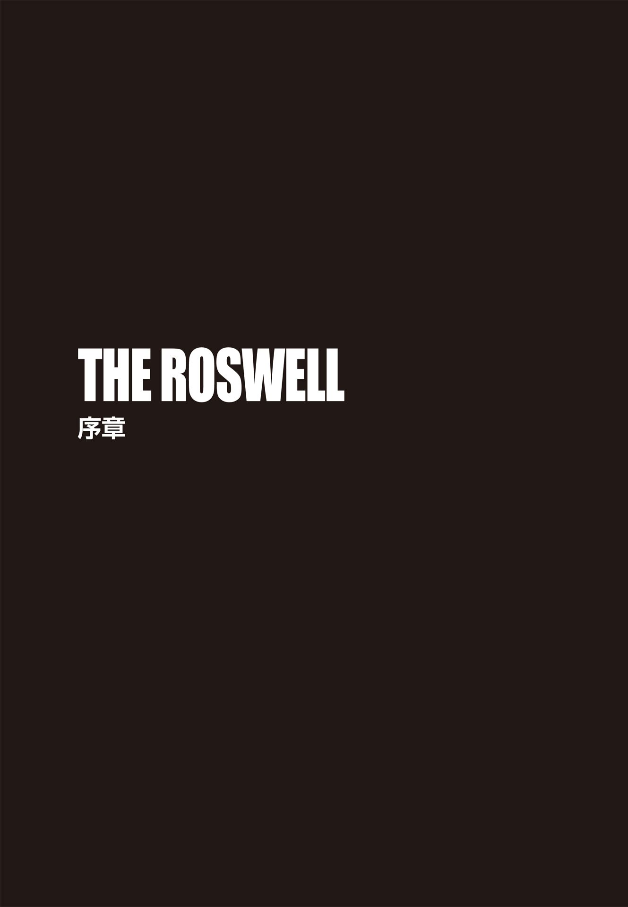
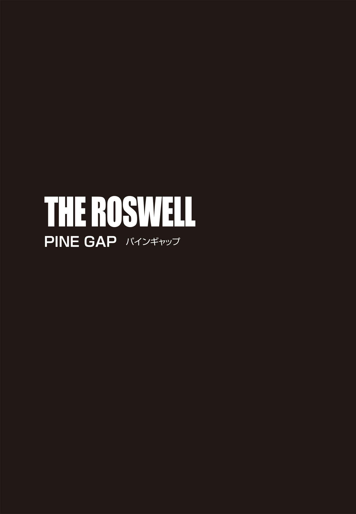
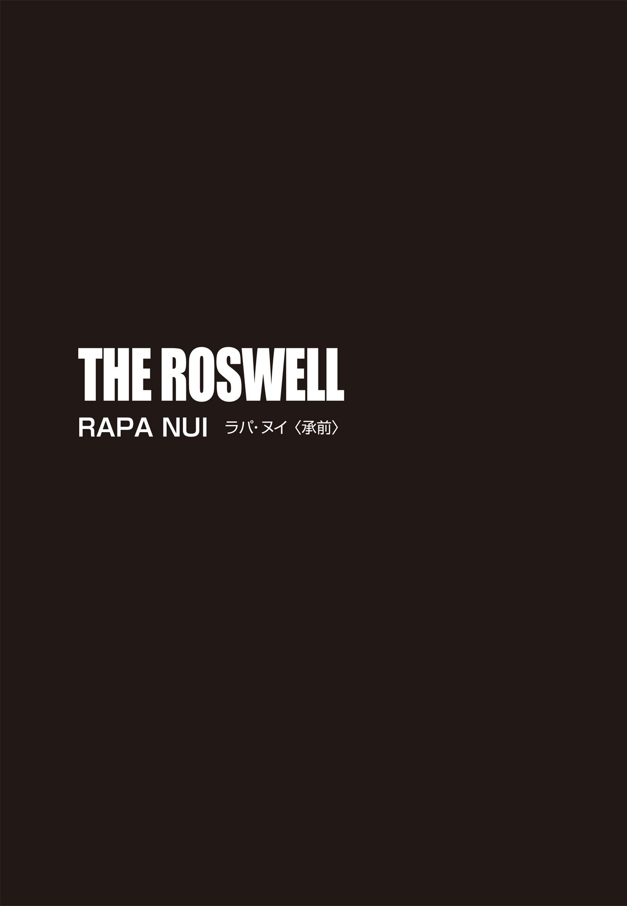
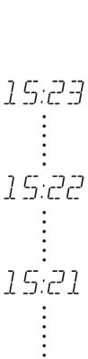
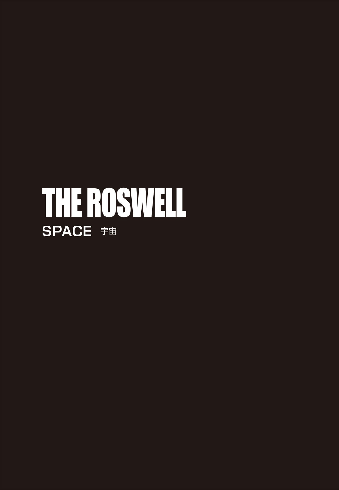
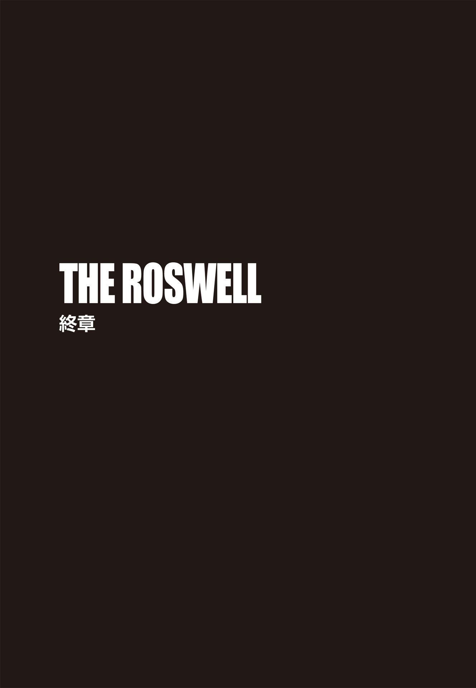

| ＴＨＥ ＲＯＳＷＥＬＬ 封印された異星人の遺言【上下合本版】 (竹書房文庫) | |
| ボイド・モリソン | |
| (2015) | |
この作品は縦書きでレイアウトされています。
また、ご覧になる機種により、表示の差異が認められることがあります。
一部の漢字が簡略字で表示されていることがあります。

ＴＨＥ ＲＯＳＷＥＬＬ
封印された異星人の遺言 タイラー・ロックの冒険③ 上
登場人物紹介
タイラー・ロック .........世界有数の民間エンジニアリング企業〈ゴルディアン・エンジニアリング社〉の主任エンジニア及び特殊作戦チーフ。
グラント・ウェストフィールド .........〈ゴルディアン・エンジニアリング社〉の電気工学のエキスパート。タイラーの親友。
フェイ・チューリア .........ニュージーランドで牧場を営む老婦人。
ジェシカ・マクブライド .........フェイの孫娘。タイラーの大学時代の恋人。
モーガン・ベル .........空軍特別捜査局（ＯＳＩ）の捜査官。
ヴィンス・キャメロン .........モーガンの相棒の捜査官。
チャールズ・ケスラー .........科学者。ライトフォール計画の責任者。
イワン・ドムブロフスキー .........元ロシア兵の科学者。
ヴァシリ・スズダレフ .........ロシア人探検家。
ウラジミール・コルチェフ .........元ロシア諜報員。
ディミトリ・ゾトキン .........コルチェフの右腕。
ナディア・ベドヴァ .........コルチェフの元同僚でかつての恋人。
ビリー・レイモンド .........ＵＦＯ関連のブロガー。
アンドリュー・ハル .........シドニーの貿易会社のＣＥＯ。武器商人。
妻ランディへ 君は僕のインスピレーションだ

一九一八年七月二十三日
イワン・ドムブロフスキーは湿地帯を延々と歩き回っていた。踏み出すたびに泥が足にまとわりつき、音を立てる。立ち止まるのは、乱れた呼吸を整えるときだけだ。追跡犬が遠くで吠 えているのがわかったが、周囲に立ち込める悪臭が犬たちの嗅覚を鈍らせているのか、今日の仕事ぶりは今ひとつだ。彼は腰のホルスターに触れ、リボルバー、ナガンＭ１８９５がしっかりそこに収まっていることを確認した。然 るべき時が来たら、必要となる。敬愛するロシア帝国皇帝ニコライ二世の後来を守るために──。
空を覆っていた雨雲が割れて満月が顔を出し、彼は咄 嗟 に身を屈めた。辺りに広がるのは、なぎ倒された木々ばかり。月明かりで己の姿が目立ってしまうのはマズい。雨がやみ、ホッとしたのも束の間、どこからともなく蚊とブユの大群が現われた。幸い、頭から足先までウールの衣服に身を包み、顔をネットで覆っていたおかげで、ドムブロフスキーは吸血昆虫に煩わされずに済んでいた。内側にこもった熱で不快指数は相当なものだったが、大量の小虫の猛攻に比べれば、まだ耐えられる。広大なシベリアの荒れ果てた地を長時間進むうち、チームの半数はまとわりつく虫を追い払うことで、余分な体力と気力を消耗してしまっていた。
ドムブロフスキーが歩みを止めると、たちまち静寂に包まれ、自分の呼吸音と心臓の鼓動がやけに大きく感じられた。向こう の気配があるかどうか、辺りを慎重に見回す。こちらを出し抜こうとする相手──ヴァシリ・スズダレフ──は近くにいるはずだ。泥に残る足跡は、互いが同じ場所を周回していることを意味していた。しかし、さっきまで降っていた雨のせいで、スズダレフがぬかるみを進む足音はかき消されていたのだ。
ドムブロフスキーの視界に入るのは、「死の大地」と呼ぶにふさわしい殺伐とした風景だった。ツングースカ地域に入ってすでに一週間以上経 つものの、身震いするほどの興奮と衝撃は今も続いている。歩いても歩いても、視線の先に見渡す限り広がるのは、なぎ倒され、焼き焦がされた無数の樹木ばかり。十年前のあの日、どれだけ巨大な範囲が瞬時に焦土と化したのか。答えは目前にあり、彼はまたゾクリと身体を震わせた。
ツングース系民族、エヴェンキ族の報告によれば、ツングースカ大爆発は、わずか数秒の出来事だったという。目もくらむような閃 光 が空に走った直後、何百もの大砲が同時に火を噴いたのかと思うほどの轟 音 が鳴り響いた、と彼らは証言している。
ドムブロフスキー自身は、爆心地から全方向二十キロメートルのエリアが壊滅状態となったと踏んでいた。それは、モスクワとほぼ同じ面積だ。これだけの破壊力を持つ何かが存在していたとは、にわかに信じがたい。しかし、前代未聞の破壊規模にもかかわらず、現場は人が住む地域ではなかったため、犠牲者は皆無だった。
レーニン率いる左派の一派ボルシェヴィキの諜報員、スズダレフは二年前にこの地に入り、地球上では未確認の金属物質を発見していた。持ち帰って分析を行ったものの、実験中のアクシデントで物質が破壊されてしまい、やつは物質採取の再遠征に出るはめになったのだ。そして、ドムブロフスキーが送り込まれた。その使命は、スズダレフが問題の秘密物質をモスクワに持ち帰る前に奪い、母国の破滅を阻止すること。共産主義者たちの目論みを止められるなら、この身を犠牲にしても構わない。連中は自分の妻と娘を殺した。国までも奪われてたまるものか。
雲が再び月を覆い、大きな雨粒が身体を濡 らし始めた。彼は今一度周りを見、上体を起こして巨大な倒木の上にすばやく飛び乗った。そのまま丸太伝いに移動すれば、足がぬかるみに取られることはない。無残に裂けた幹の端まで来たドムブロフスキーは、なんの迷いもなく、隣に転がる木に飛び移ろうとした。ところが、跳躍をした直後、誰かの手にぐいとブーツを摑 まれ、バランスを崩してしまった。彼は木の幹に胸をしたたかに打ちつけ、泥の地面に転がり落ちた。
クソッ、油断していた。スズダレフはこちらの動きを読み、丸太の裏に潜んで不意打ちの機会をうかがっていたに違いない。相手はすかさず、仰向けになったドムブロフスキーに飛びかかってきた。みぞおちに膝蹴りが入り、酸素を求めて悶 えているうちに、敵の手はホルスターをまさぐってきた。リボルバーを取られてなるものかと、彼は地面の泥を鷲 摑みにし、スズダレフの顔に投げつけた。視界を奪われたボルシェヴィキ野郎は、顔面のネットにへばりついた泥を拭おうと必死だ。その隙をつき、今度はこちらが攻撃を仕掛ける。喉元目がけて拳を繰り出すや、強烈な首への一撃で男は崩れ落ち、ドムブロフスキーは身体を回転させて拳銃を引き抜いた。立ち上がるのにふらついたが、銃口はずっとスズダレフに向けていた。相手はというと、四つんばいで苦しそうに喘 いでいる。目の前の男はもはや脅威ではない。それにしても、危ないところだった。もし敵が武器を持っていたら、自分はとっくに殺 られていただろう。
猟犬の吠え声に混じり、複数の男たちが呼ぶ声も聞こえてきた。武装した十五人の追跡メンバーがようやく近くまで来たようだ。
「例のものはどこだ？」相手を見下ろし、ドムブロフスキーが鋭く訊 ねる。
スズダレフは尻をついて座り、唾と一緒に泥を吐き出して言った。
「あれはなんの役にも立たないぞ」
「違うな。強力な兵器になる。わが皇帝にとっても──」
彼の言葉は男にさえぎられた。
「ニコライ二世なら、すでに処刑されている。皇帝だけじゃない。家族も皆殺しだ」
ドムブロフスキーは目を細めた。「何を言ってる？」
黒雲が割れ、月がフードを被 ったスズダレフの顔を照らした。不敵な笑みが青白く浮かび上がる。
「わからないのか？ ロマノフ一族は全滅したんだ。我が国は、ついに〝労働者の理想郷〟として生まれ変わるんだよ」
「皇帝が亡くなったとなぜ言い切れる？」
「私は、同志レーニンが最も信頼を置く諜報員だ。当然、多くの情報に通じている。ニコライたちを七月十七日の未明に殺害せよとの命令が出ていた」
七月十七日。かれこれ六日も前だ。これだけ人里離れた場所にいるのだから、そのような重要な知らせでも、耳に届くにはしばらく時間がかかる。スズダレフは真実を語っているのかもしれない。だとしたら、ドムブロフスキーの任務は、さらに重要な意味を帯びてくる。共産主義者どもが国家を乗っ取り、スズダレフの秘密の物質を手に入れた場合、連中の革命はロシア国境で食い止められる規模ではなくなる恐れもあるからだ。
追っていた獲物の臭いに反応し、犬が激しく吠え出した。
「ゼノビウムを新たに発見したな？ 隠しても無駄だ」
そう問いただし、ドムブロフスキーは相手を睨 みつけた。「どこにあるかを明かせば、苦しまずに死なせてやる」
「一時間前に隠した。おまえには見つけられない」
しらを切ったスズダレフに、彼は躊 躇 なく引き金を引き、左膝を撃ち抜いた。銃声とともに、男の絶叫と犬の吠え声、後続隊の叫び声が空虚な一帯に響き渡る。
「噓をつくな」
どこかに隠しただと？ 真夜中に？ 辺り一面、似たような倒木だらけだ。暗闇の中で遠くに隠した場合、当人ですら見分けがつかず、二度と回収できなくなるだろう。ならば──。
そのとき、ドムブロフスキーは、脇に転がる丸太に違和感を覚えた。目を凝らすと、幹に開いた穴にナップザックが押し込まれているのがわかった。スズダレフに銃を向けたまま、荷物を引っ張り出し、中を覗 き込む。だが、中身は食料だった。例の物質は入っていない。次にスズダレフのポケットをチェックしたが、やはり同じ結果だった。
「どこだ!? 」
ドムブロフスキーは容赦なく男の右膝を撃った。悲鳴、犬の声、追跡メンバーの呼び声が、再び銃声に続く。
すると、スズダレフの隣で、何かが月光を反射してキラリと光った。こちらの視線にハッとした敵は、慌ててそれを摑み、遠くに投げようとした。しかし、ドムブロフスキーの動きの方が早かった。伸ばした相手の手を踏みつけ、ほくそ笑みながら見下ろす。追跡から逃れられないと悟ったスズダレフは、そこに物質を埋めようとしていたに違いない。ぬかるみから塊を拾い上げ、袖で汚れを拭う。それは飴 玉 ほどの大きさで、表面は月明かりの中で玉虫色に輝いていた。これが何なのか解明すれば、世界を意のままにできる。手にした未知の塊は、想像もつかない威力を備えている可能性があった。
ドムブロフスキーは身を屈め、スズダレフのネットを剝いでフードを外した。その顔を露 わにするなり、血に飢えた蚊たちが集まり出す。男の目には、激しい憎悪が浮かんでいた。
「警告したはずだ、タワーリシチ 」
タワーリシチとは、共産主義者たちが「同志」の意味で使う忌々しい言葉だ。彼は、わざと強調して吐き捨てた。「正直に白状すべきだったな。私の家族が味わった苦痛をおまえにも味わってもらおうか」
スズダレフは起き上がってこちらに飛びかかろうとしたが、激痛が走ったのか、悲痛な叫び声を上げただけに終わった。もはや男の膝は使いものにならず、体重を支えられる状態ではない。
「おまえらはもうすぐ全滅する！」
蚊の凄 まじい猛攻を手で避けながら、眼下のボルシェヴィキは怒号を上げた。「歴史の流れを止めることなど不可能だ！」無数の吸血昆虫の攻撃に比べたら、泥地の不快さなど比較にもならないだろう。
ドムブロフスキーは何も返事をしなかった。物質をポケットにしまい、ナップザックの食料を奪うと、苦痛に悶え、悪態をつくスズダレフを放置して歩き出す。あとはシベリアの無慈悲な自然に任せておけばよい。食べ物もなく、最も近い集落は何十キロも先という現実を考えれば、砕けた膝を抱えたスズダレフの最後の数日は、拷問そのものだろう。
五分もしないうちに、追跡チームがドムブロフスキーに追いついた。チームのリーダーが血走った目つきで話しかけてきた。手にしたライフルでいつでも戦闘状態に入れるという昂 りが感じられる。「作戦はうまくいきましたか？」
「犬たちのおかげで、スズダレフにたどり着けた。任務完了だ」
あとはキャンプに戻り、手に入れた物質を鉛で覆った箱に入れて保管すればいい。
「では、これよりエカテリンブルグに帰還し、皇帝の救出を？」
リーダーの質問に、彼ははたと考えた。皇帝の救出──。ニコライ二世が死んだというスズダレフの言葉の真偽を確認しなければならない。もし本当だった場合、市民革命の軍配がボルシェヴィキら革命軍に上がるのは時間の問題だ。
「いや」彼は首を横に振った。「集落まで出て、違う経路を探す」
はるか背後にスズダレフを置き去りにし、ドムブロフスキーはチームを率いて進み出した。頭の中では、すでに新たなルートとプランを立てていた。スズダレフの発見は、絶対に敵側に知られてはならない。シベリア横断鉄道でモスクワに行く代わりに、東へ向かうのだ。ウラジオストク......最終的にはアメリカへと──。

１
現在
今年の冬はかなり雪が多い。さすが〝スノーファーム〟と呼ばれるだけのことはある。緩やかな起伏の丘は一面銀世界で、遠くの山の頂まで、切れることなく真っ白な光景が続いていた。ロッジの玄関へと向かいながら、タイラー・ロックは革のジャケットのファスナーを上げ、手袋をはめた。雲ひとつない青空には朝の太陽が輝いていたものの、外の気温はマイナス十度。七月半ばのこの寒さに、身体はなかなか慣れない。
ベルボーイに手を上げて挨拶し、タイラーは扉を抜けて凍てつく外気の中へと踏み出した。まばゆい雪景色に目を細め、サングラスをかける。遠方のゲレンデでは、ノルディックスキーに興じる人々が美しいシュプールを白銀に描いていた。すると、背後から車のエンジン音が聞こえてきた。限界速度まで加速しようとするとき、車はあんなふうに唸 るものだ。しかし、ここにレース場があるわけがない。
不思議に思って肩越しに見やると、排雪装置が作った雪の壁からシルバーの車が曲がってきた。あの車体はアウディＳ４だ。激しく後方に雪を吹き上げながら、蛇行してこちらに向かってくる。スピードを増したアウディは、どこを目指しているのか、一層ターボエンジンを轟かせた。ものすごい勢いでタイラーの横を通過するのかと思いきや、アンチロック・ブレーキがけたたましい音を立て、横滑りした車がタイラーの目の前で急停止した。
運転席のドアがいきなり開き、黒人の大男が中から飛び出した。巨体に似つかぬすばやい動きは、ロッジの中にいたベルボーイを驚かせたに違いない。グラント・ウェストフィールドは、身長こそタイラーより数センチ低い百八十二センチだが、戦車を思わせる頑強な体格でありながら、フェラーリのように動く。タイラーは俊敏さでは引けを取らないとはいえ、茶色の短髪をスキンヘッドにし、ウェイトルームにいる時間を四倍に増やしても、グラントの威圧感の半分も醸し出せるかどうかは定かではない。
ところが、颯 爽 と現われたグラントを見るなり、タイラーは吹き出しそうになった。特大サイズなのだろうが、百十七キロの筋骨隆々の肉体を押し込んだダウンジャケットはピチピチで、しかもオレンジ色だったため、いつもの迫力とは裏腹に、まるでハロウィンでカボチャ色になったミシュランマンといった出で立ちだったのだ。
「それ、どこで手に入れたんだ？」タイラーは笑いを殺しながら訊 いた。
グラントは車を叩き、誇らしげに答えた。
「イケてるだろ？ ＳＨＰＧの連中と話して、一日貸してもらうことになったんだ」
ダウンジャケットのことを訊 ねたつもりだったのだが、親友が勘違いしたことで、タイラーはさらに笑いをこらえなければならなかった。
グラントが口にした〝ＳＨＰＧ〟とは、ニュージーランドのサザン・ヘミスフィア・プルーヴィング・グラウンズ（Southern Hemisphere Proving Grounds）。サウスアイランドの南アルプス山脈にあるワナカとクイーンズタウンという二つの町の中間に位置する車の冬季テストコースだ。世界中、とりわけアメリカや日本、ヨーロッパの自動車メーカーが、自国が夏の間に、極寒のＳＨＰＧで新車の耐久性をチェックする。タイラーとグラントがここを訪れたのも、あるメーカーの依頼で、ハイブリッドの試作車の耐寒性テストを行うためだった。試験走行で必要なデータは十分得られたので、二人はあとひとつ残った仕事を片づけ、帰国前の数日間は休暇を取ってクイーンズタウン一帯を探索するつもりでいた。
自然豊かなクイーンズタウンの楽しみ方はいろいろあったものの、スキーは彼らのリストには入っていない。タイラーとは違い、グラントは寒さが大の苦手なのだ。
「アウディＳ４の素晴らしさは認めるが──」
とうとう彼は耐え切れずに笑い出した。「俺が訊いたのは、その最先端防寒技術を駆使してるダウンジャケットのことだ」
「こいつは最高さ！」と、相棒は自慢げに両腕を伸ばしてみせたが、ジャケットは今にもはち切れそうだ。「このダウンを着てれば、南極大陸だって楽園に思えるぞ。なんだ？ 羨ましいのか？」
「いや、そんなに暖かいなら、隣に座ってくれるだけで車内も暖房要らずだな。しかし、相当場所を取りそうだ」
「俺が人一倍場所を取るってこと、今頃、気づいたのか？」
着膨れしているグラントを正視していられず、タイラーは横を向いてひとしきり笑った後、アウディの運転席へ歩き出した。ところが、すぐにオレンジ色の巨体が立ちはだかった。
「タイラー、何するつもりだ？」
「何って、運転だよ」
「ちょっと待った。こいつを調達したのは俺だ。だから、運転は俺がする」
「グラント、最後に雪道でまともに運転したのは？」
その問いに、相手は一瞬考え、「二年前だ。確か、カナダで冬季オリンピックがあったとき、俺たちは仕事で山岳競技の会場だったウィスラーにいた」と答えた。
「その通り。あの日、俺のカイエンのバンパーを見事に剝ぎ取ってくれたよな」
「たまたまアクシデントが起きただけだ。誰にでも起こり得る」親友は鼻を擦 りながら苦笑し、肩をすくめる。
「交通量の多い幹線道路ならまだしも、コンドミニアムの駐車場だったぞ？」
「なら、やっぱり今回は俺が運転しなきゃ。このアウディは四輪駆動車で、最高級のスノータイヤ、電子安定制御システム搭載だ」
「しかも、エアバッグの数は十個」
「おお！ まさしく、俺みたいなドライバーのための車じゃないか。助手席のおまえもこの上なく安全だ。よかったな！」
いくら言ってもハンドルを握らせてもらえそうもないと悟り、タイラーは反対側へと戻り、助手席に乗り込んだ。シートベルトを締め終えないうちに、隣のグラントはアクセルを踏み込み、急発進した。背後で豪快に雪煙が上がる。
「お客さん、どちらまで？」
おどけて訊く運転席の相棒に、タイラーは「ハイウェイに出たら、左へ」と指示した。「羊牧場がクイーンズタウンの北にある。携帯の地図によれば、そこまでの所要時間はわずか一時間。おまえの運転でも、な」
こちらの皮肉を聞き流し、グラントは上機嫌で車を加速させていく。雪景色の中、アウディは滑らかに走行していった。しばらくすると、相棒は思い出したように声を上げた。
「なあ、タイラー。俺たち、マジであの件に関わるのか？」
「彼女が何を所有してるのか、おまえだって興味はあるだろう？」
「相手に失礼かもしれないが、もうろくした老人の戯 言 に過ぎないかもしれないんだぜ。彼女、七十五歳だっけ？」グラントはしっかりとハンドルを握り、まっすぐ前を見ながら言った。一応安全運転をしようと気をつけているらしい。「ロズウェルで宇宙船の墜落を目撃し、その残骸を持ってるだって？ どうせ、ただの金属片を拾っただけなのに、正体不明の物質で、このねじれ方は地球上じゃあり得ない！ とかなんとか思い込んでるってパターンだな。ずいぶんと想像力が豊かなご婦人だが、せいぜい一九四七年型ビュイックの部品がいいとこだ。で、その彼女は一体何者なんだい？」
久しぶりの雪道走行で高揚してるのか、今日のグラントはやけに口数が多い。タイラーは苦笑しながら、彼女について説明した。
「依頼主はフェイ・チューリア。結婚前はアレン姓だった。ニューメキシコ州ロズウェル近郊の農場で、十歳まで過ごしていた。親戚の世話で父親がニュージーランドの羊牧場の責任者になったのを機に、家族全員でニュージーランドに移住。それ以降、フェイはずっとこっちで暮らしてる」
「すでにリサーチ済みか」
「とはいえ、相手の素性でわかったのはそのくらいだ」タイラーは咳 払 いをひとつし、先を続けた。「彼女は出生証明書のコピーをメールで送り、ロズウェル生まれだと証明してくれた。その証明書は正式のものだったよ」
「つまり、ロズウェルに住んでいた事実は確かってことだな。しかし、なんで俺たちを雇いたいのかね？」グラントは首を傾 げた。
「ゴルディアン社が世界屈指の航空事故調査会社だからだっていうのが、彼女の言い分だ」
タイラーの答えに親友は大きくうなずいた。
「まあ、間違いじゃない。少なくとも、その点ではミセス・チューリアは見る目がある」
ゴルディアン・エンジニアリングは、タイラーが創設した会社だ。マサチューセッツ工科大学で機械工学学士の学位とスタンフォード大学で博士号を取得した彼は、会社社長の仕事は性に合わず、敢 えて特殊業務のチーフとして現場で働いている。役職名は堅いが、仕事内容はと言えば、自分でやりたいプロジェクトを選んで担当することが多い。一番の友でもあるグラントは、同社自慢の敏腕電気技師だ。二人の技能を合わせれば、事故の科学分析、建物の爆破および解体、損失防止措置、自動車テストといった幅広い分野のプロジェクトを実行、監督できる。
だが、今回はかなり毛色が違っている。ゴルディアンのクライアントは、高額な費用を惜しみなく支払う多国籍企業がほとんどなので、一個人からの依頼は極めて異例なのだ。
「六十五年も前の拾い物を、なんでまた今頃になって調べる気になったんだ？ その理由については何か聞いてるのか？」
グラントはさっきから疑問ばかりを口にしていたが、無理もない。タイラーも、フェイの件では同じ気持ちだった。
「個人的な調査は続けてきたらしい。ロズウェル事件の解明に躍起になった人間が次々と不審な死を遂げたとか、それは政府の仕業だとか、そんな噂 を山ほど耳にしてきたから、これまで誰にも相談しなかったようだ。でも、俺たちが手伝ってくれるなら、今こそきちんと真相を知りたいと言っていた」
「で、親切心から彼女の依頼を引き受けることに決めた、と」
「彼女の話に興味を覚えたのは事実だ。だからと言って、公式に仕事を引き受けるつもりはない」
「会社のホームページに載っけられる類の仕事じゃないだろうしな」
友の返事に、タイラーは「全くだ」と笑った。「依頼を受けたとき、彼女に言ったんだ。三ヶ月後に別件でニュージーランドに行くから、そのときまで待てるかって。待てるなら、訪ねていって、持っている物を見せてもらうってね。で、あれから三ヶ月が経 ち、俺たちはここにいる」
「彼女、普通の婆さんじゃないな」
ニヤリとする相棒の横顔を見て、「たぶんな」と、彼も頰を緩める。「電話で話した限り、フェイは若者に負けず、かなり頭の回転も早そうだった。でもまあ、彼女の所有物がなんであれ、俺たちは小難しい顔でそいつをひっくり返しながらじっくり眺め、サンプルを採って写真も撮って、どんな物質か即座には確定できないと告げる......という感じになるだろうな。結論をその場で出すことも、エイリアンの宇宙船云 々 という彼女の夢を否定することもしないでおく。そして、失礼のないように引き揚げ、クイーンズタウンへ向かおう」
「そうだ！ クイーンズタウンにうまいピザが食べられる店があるって聞いたぞ」
大食漢のグラントは、食の情報には抜け目ない。タイラーは苦笑いをした。
「で、腹ごしらえをした後は、お楽しみのレジャータイムだな！ 実は、パラシュートを持ってきたんだ。車のトランクに入ってる」
ニュージーランドの雄大な自然は、エクストリームスポーツに最適な環境だ。過激なスポーツをこよなく愛す命知らず男のグラントが、そこに目をつけない訳がない。やれやれと思いつつ、タイラーはこう答えた。
「おまえ、まだ諦めてないんだな。言っただろう？ バンジージャンプならオーケーだが、スカイダイビングはノーだ。少なくとも、バンジージャンプなら、橋に命綱でつながれている」
それから三十分、アウディは、クラウン・レンジというニュージーランドで最も高所にある峠を下り続けた。曲がりくねった雪の坂道の片側は切り立った崖になっており、タイラーは親友にハンドルを握らせたことを後悔した。生きた心地のしない蛇行運転が続く中、今回の旅で、身が縮む思いはここだけで済むようにと願わずにはいられない。しかし、標高が九百メートル以下になると積雪はなくなり、車は快調に加速をし始めた。タイラーもやっとひと息つけ、フェイに予定より二十分早く到着する旨をメールする余裕ができた。彼の案内に従い、グラントは緑の牧草地の間を突っ切っていく。点在する古風なベッド・アンド・ブレックファースト を横目に、彼らはショットオーバー・リバーが流れる峡谷沿いの道へと入っていった。山を上って再び雪道になると、グラントは張り切って鼻歌を歌い出し、タイラーは大きくため息をついた。
数分走ったところで、「チューリア・リマーカブルズ羊牧場」の立て看板が目に入る。その名前は、ワカティプ湖の水面にゴツゴツとした峰を映すリマーカブルズ山脈から取ったものだろう。羊牧場へ続く雪道には、車のタイヤの跡がくっきりと残っていた。
「タイヤ痕が真新しいな。雪が積もっていない」
タイラーの言葉に、グラントがすかさず反応する。
「ということは、フェイはちょうど出かけたばっかりか。あいにくだが、ちょうど腹が減って死にそうだったんだ。早いとこ留守を確認して、ピザ屋へ行こうぜ」
タイラーは手元に視線を落とし、腕時計の文字盤を見た。午前九時四十分。約束の訪問時間の二十分前だ。
「さっき送ったメールに彼女が返信してこない理由も、これで説明がつく」
タイヤの跡に従って数百メートル進むと、雪景色に溶け込むように白い家が建っていた。よろい張りの外壁を持つ落ち着いた風格の家で、連棟のガレージもある。母屋の裏には、赤く塗られた大きな納屋が見えた。建物を取り囲む常緑樹を除けば、この田園地帯に樹木はほとんどない。丘向こうにあるはずの柵は、ここからは見えなかった。
雪の上のタイヤ痕は二手に分かれており、ひとつはガレージへと伸び、もうひとつは家の前の私道に停められていたトヨタ製のセダンへと続いている。グラントはトヨタ車の隣でアウディを停車した。外に降り立ったタイラーは、その車のボンネットに手を当てた。思った通り、まだ温かい。セダンを運転している牧場主などいないはずだ。それに、二人分の足跡が車から家のドアまで残されている。先客だろうか。
羊や牧場使用人の姿は見当たらない。おそらく、二千エーカーある敷地の外にいるのだろう。
「いいところだな」
グラントは大きく伸びをし、辺りを見回している。
「広々とした場所で羊を放牧するのは、彼女の性に合ってるんだろうな」
タイラーは友と並び、軽く肩を叩いた。「じゃあ、依頼人に挨拶しに行くとするか」
うなずくグラントと一緒に歩き出すと、雪を踏みしめる度、軽快な音が鳴った。玄関まであと三メートルというところまで来たとき、予期せぬことが起きた。家の中から、銃声が二発聞こえたのだ。
元軍人の二人は反射的に地面に伏せ、グラントはこちらを見て小声でささやいた。
「一体全体なんなんだ？」
アウディへの退避を提案しようとした矢先、女性の悲鳴が聞こえ、タイラーは口を閉じた。そして、さらに三発目の銃声。ショットガンの音が聞こえた方に顔を向けると、家の右側の角に不審者がいるのを認めた。
その男が銃を上げるのが見え、タイラーは「撃つな！」と叫ぼうとしたが、相手が引き金を引く方が先だった。放たれた銃弾がタイラーたちのすぐそばの雪を削り取る。とにかく、どこか隠れる場所を探さねばならない。軍隊にいた頃、過酷な戦場でともに生き抜いていた相棒も同じことを考えていたらしい。こちらを見てうなずいた後、猛ダッシュで家へと駆け出した。暴走するサイさながらの勢いで玄関に到達したグラントは、入り口の扉を開けて中に飛び込み、タイラーもその後に続く。そして、室内に入ると同時にドアを閉めた。
廊下がやけに暗くて戸惑った彼は、自分がサングラスをかけたままだったことに気づき、メガネを外した。目の前に広がる光景に息を呑 む。床には、壊れたランプの破片が散らばり、壁は散弾銃で蜂の巣になっている。右方向からショットガンに弾を込めるポンプアクションの音が聞こえ、彼はハッとしたが、そこにいたのはひとりの女性──フェイ・チューリア──だった。視線の先の彼女は七十五歳のはずだが、せいぜい六十歳にしか見えない。耳が隠れるくらいのショートカットの白髪に、スポーツ好きとわかるスリムな身体、翡 翠 色 の瞳。五十年前はどれほどの美貌だったのかと、タイラーは想像せずにはいられなかった。目の周りと首のシワ、手の甲のシミだけが本当の年齢を表わしている。ショットガンを構える姿は様になっており、銃を使い慣れているどころか、かなりの熟練者らしい。
「あなたは誰？」
フェイが唸るように訊ねてきた。ポッカリと口を開けた銃口からは、煙が上がっている。
タイラーはゆっくりと両手を上げた。
「タイラー・ロックです。あなたはフェイですね？ お招きに預かり、友人のグラント・ウェストフィールドと一緒に訪ねてきました」
その返答に、険しかったフェイの表情が緩み、白い歯を見せた。
「いらっしゃい、ロック博士」
彼女は銃を下げ、明るく言った。
鉛の弾ではなく、熱い紅茶と焼き菓子でも出してくれそうな柔らかな笑みを浮かべるフェイは、さらにこう続けた。
「警察を呼んでも構わないかしら？」
タイラーは苦笑し、こくりとうなずいた。
２
ナディア・ベドヴァは、水の入ったグラスをじっと見つめていた。心のどこかで、ウラジミール・コルチェフが現われなければいいと願いつつ、足元に目をやる。カフェのテーブルの下には、相手が要求した荷物が置かれていた。歩道に隣接した屋外の座席なので、眺望は抜群だ。シドニー・ハーバー・ブリッジが架かる壮大な景色が目の前に広がり、ブリッジクライム内の中央通路を歩く大勢の観光客が見てとれた。サーキュラー埠 頭 を横切るクルーズ船の後方では、アイボリー色が美しいオペラハウスの前を、フェリーや双胴船、ジェットボートが行き交っている。
平静を装っているものの、コルチェフを待ちながら、ナディアは胃がむかつくのを覚えた。自分の近くには、彼女の仲間で、ＳＶＲ（Sluzhba Vneshney Razvedki／ロシア対外情報庁）の諜報員四人が配置されていた。二人はカフェと水際の間の雑踏に紛れており、ひとりは彼女から少し離れた別の屋外テーブルにつき、四人目は五階建てビルに入っているレストラン内で待機している。通りを歩いているツーリストの集団に加え、バイクやスケートボードに乗った者も時折横を通過していく。工作員の鋭い目は、通行人を漏らさず見ているはずだ。彼らがここにいるのは、コルチェフを捕らえるため。必要とあれば、殺すことになるだろう。
コルチェフの活動は目に余るものがあり、とうとう自分にここまでやらせる結果になった。おとなしく姿を消してくれていれば、そのまま見逃してやったかもしれないのに。彼が最後にナディアに接触したとき、ＳＶＲはこれ以上放置しておけないと、逮捕もしくは排除という処置を決めたのだった。
耳に挿 した小型マイクロホンから声が聞こえてきた。歩道にいるうちのひとりからだ。
〈コルチェフを目視。背後百メートルの地点からそちらに向かっている〉
ナディアは振り返らずに答えた。「彼はひとり？」
〈はい〉
エージェントたちは近くの人間をくまなくチェックしているので、報告の信 憑 性 は高い。どうやら、協力者もしくは不審者はいないらしい。あの男は、今朝、電話で言った通り、本当に単身でやってきたようだ。
誰かがナディアの肩に手を置いた。彼女はピクリともせず、静かに顔を上げた。案の定、そこには笑みを浮かべる彼がいた。かつての引き締まった身体と全く変わっていない。広い肩幅、細い腰、銀色に近い髪の色──。一緒に過ごしていた頃の思い出までが湧き上がり、胸が少し締めつけられる。
軽く身を屈め、ナディアの頰にキスをした彼は、向かい側の席に腰を下ろした。二人のテーブルは日陰になっていたため、サングラスを外す。当時のままの鋭いまなざしが彼女を射抜くように見た。
「ナディア、君はいつ会っても素敵だな」
滑らかな低音の声も、彼が話す母国語のロシア語も耳に心地よい。彼女もロシア語で返した。
「ウラジミール、会いたかったわ。どうして国に戻らないの？」
「私が帰国できないのは、君も承知しているだろう？ 少なくとも、今はまだ無理だ」
「じゃあ、いつ？」
「国に戻る前にやることがある」
「だから、これが必要なの？」ナディアはバッグを彼に手渡しながら言った。
コルチェフはファスナーを開け、中身をチェックした。要求した物が完璧な状態で入っているのを確かめ、満足げにバッグを閉じる。
「君には感謝してる。これを調達するのは、簡単じゃなかったはずだ」
ジャケットから封筒を取り出した彼は、テーブルの上でそれを彼女の方へと滑らせた。
「受け取れないわ」
「頼むよ。ここまでしてもらったのに、何もしない訳にはいかない」
厚みのある封筒を無視し、ナディアは身を乗り出して彼の手を取った。
「ねえ、一体何をするつもり？ お願い、私に教えて。あなたの力になりたいのよ」
こちらを監視している工作員はもちろんのこと、モスクワにいる幹部たちにも、彼らの会話は一語一句聞かれている。
現時点まで、彼らが得ている情報はほんのわずかだった。コルチェフの仲間のひとりから暗号化されたメッセージを入手したものの、わかったのは、「ウィスコンシン通り（Wisconsin Ave）」という言葉と、何かが七月二十五日に起きるということだけ。七月二十五日まで、あと一週間もない。ＳＶＲ工作員から金目当ての傭 兵 に転身した人間を使い、彼は良からぬ計画を企てているに違いない。しかも、標的はアメリカ合衆国のどこかだ。ロシアの組織はそう確信していた。
「できることなら、君が一緒に来てくれれば、と思ってる」
彼の瞳がこちらをじっと見つめる。一旦言葉を切り、彼はさらに続けた。「だが、リスクが大きすぎる」
「ＳＶＲに志願したときから、いつもリスクと隣り合わせよ」
「私が言っているのは、こちらのミッションにリスクがあるってことだ」
ナディアは片眉を上げた。「私を信用してないの？」
彼は顔を横に向け、通り過ぎていくフェリーを見つめた。
「私が成し遂げようとしていることには、相当な覚悟が必要だ。正直なところ、君がその器だとは思えない」
「なぜ、そう思うの？」
「知らない方がいい」
彼女は胸にもやもやとした感じを覚え、相手の手を離した。そして、イスに深く座り直し、こう訊ねた。「私がＳＶＲの上層部に話したのを知ってたの？」
今度はコルチェフが「どうしてそう思う？」と質問してきた。首を曲げて音を鳴らすなど、相手は余裕綽 々 だ。会話の主導権は握られている。しかし、ナディアは焦らなかった。
「私たちが会うことまでは話していないわ。あなたが帰国した場合、上司がどう出るつもりなのか、探りを入れたかっただけ」
「どうせ、通過儀礼的な裁判の後、死刑台に直行だ」
コルチェフは片頰だけでシニカルに笑った。
「違う。上は、この状況があなたのせいじゃないと理解してると言ったわ。あなたが別件で動いているってこともね。何か手助けできる方法があれば知りたいそうよ」
こちらの言葉の真偽を見極めようとしているのだろう、彼は黙り込んだ。コルチェフ同様、ナディアも他人を欺くエキスパートだ。そして今、まさに本領を発揮している。彼女の目的は、相手が進めている計画を探り出すこと。ＳＶＲの指導者は、コルチェフがナディアを仲間に引き入れるか、少なくとも計画のヒントを与えるのを期待しているが、計画阻止のため、標的がバッグを持ってカフェから出るや否や、取り押さえろとの指示が四人の工作員には出されている。滅多に感情的にならず、氷のような女と称されるナディアだったが、今回の使命は、この上なく苦痛を伴う仕事だった。かつて愛した男を捕まえれば、本人がすでに予見している通り、その先に彼を待ち受けているのは、極刑なのだから。
コルチェフは過去にスパイ団を作り、大国に人員を送り込んでいたが、二〇一〇年、メンバー十人がアメリカの防諜機関によって素性を暴かれてしまう。そのうちのひとりが、「美しすぎるスパイ」と世界中で話題になったアンナ・チャップマンであった。自国の機密情報収集方法を知られるのを恐れたロシアは、アメリカのためにスパイ活動をして収監されていたロシア人諜報部員四人を解放することで、彼らを取り戻した。この取引は円満解決とは言えなかったものの、ＳＶＲは、これ以上米国に潜入させているスパイを明かされる訳にはいかなかった。
この大失態の責任は、アメリカに四万ドルでスパイたちの身元を売ったＳＶＲのエージェント、アレクサンダー・ポティエフ大佐が、当然負うものだと思われた。ところがいつの間にか、作戦全体を最初に立ち上げたコルチェフのせいだと、組織内で非難の矛先が変わっていく。敵側に潜入スパイの所在がバレたのは、彼の力不足が原因で、もしそうでないのなら、彼が米国と共謀していたからに違いないと、ＳＶＲは結論づけたのだ。いずれにせよ、コルチェフは処分される運命にある。この世から永遠に──。
「ナディア」
ようやく相手は口を開いた。「すでにポティエフは欠席裁判にかけられ、反逆罪で有罪とされた。彼は、ロシアではもはや失脚者だ。ＣＩＡの保護下になければ、とっくに消されているだろう」
「どうして、ポティエフみたいに保護を受けなかったの？」
彼女の問いに、コルチェフは顔を寄せ、小声で答えた。
「理由は明快。裏切り者ではないからだ。私は国を売ったりなどしていない。アメリカがロシアに行った全てに怒りを覚えている。私は愛国者だ」
「じゃあ、それを証明して」
ナディアは訴えた。無実なら、身の潔白を組織に信じさせてほしい。半分以上は本心だった。だが、作戦成功のために誘導することも忘れなかった。
「私と一緒に組織に戻りましょう。上の人間に真実を話すの」
今置かれている自分の立場と、コルチェフへの本当の想いが交錯し、胸がかき乱される。こちらの気持ちを知ってか知らずか、コルチェフは極めて冷静だった。
「やつらには、真実などどうだっていいんだ。形だけの裁判をして、面目を保ちたいだけなんだよ。真実を説明したところで、何も生み出さない」
「じゃあ、どうするつもり？ あなた、何を企んでるの？」
「アメリカにはまだ潜伏中の仲間がいる。ポティエフは己の裏切りに対する報復を恐れていたから、決してその存在を明かさなかったんだ。秘密を貫けば、組織に縛られずに独自に活動する機会が得られるとわかっていた。そして、そのときが来た」
コルチェフの頰が緩む。「祖国ロシアとＳＶＲへの忠誠心をきちんと示す。そのあかつきには、私と仲間たちは英雄として国に迎えられるだろう」
「あなたの筋書き通りにはいかないかも。その場合はどうする気？」
ナディアは眉間にシワを寄せた。
「然 るべき対応をする。今の私ははぐれ者だ。何をしても、組織に背いて暴走したスパイの仕業だと片づけられる。自ら望んでこうなったのではないが、それを逆手に取って、今の立場をとことん利用させてもらうさ。そして、ロシアが報復を恐れてできなかったことをしてやるんだ。結果を見れば、連中は私に出し惜しみなく褒美を与えてくれるだろう」
もともとコルチェフは大口を叩くようなタイプではない。相手の思惑が全く摑 めず、彼女はひたすら困惑した。
「わからないんだけど......」ナディアは視線をバッグに向けた。中には、彼に要求された例の装置が入っている。「あなたの計画にはイカルスが必要なのよね？ どう使うの？」
コルチェフは首を傾 げ、目を細めた。具体的な部分に切り込んだ彼女の真意を確かめているかのように見える。
「本気でこの計画に加わりたいと思ってるのか？」
ナディアは手応えを感じた。コルチェフの心が開きかかっている。あとひと押しだ。
「どこかを攻撃する計画なのね？」
彼は白い歯を見せた。
「私は爆弾攻撃を仕掛ける。歴史の流れとロシアの立ち位置を変えるために。つまり──」
そのとき、コルチェフの電話が鳴り、彼はバッグを摑んで立ち上がった。いよいよだ。コルチェフがカフェを出たら即座に、四人の諜報員が飛び出し、標的を確保する。その瞬間を待ち、ナディアは息を呑 んだ。
ところが立ち去るかと思いきや、彼はバッグを座席に置き、人差し指を上げた。
「すまないが、ちょっと電話に出る。それが終わったら、計画について話し合おう」
コルチェフは店の脇に立つ柱の方へと進んでいった。ここからでは、電話で何を話しているか聞こえない。
「彼の会話、聞き取れる？」ナディアは唇を動かさずに問いかけた。
〈ダメだ。聞こえない〉仲間のひとりが答えた。
〈標的から目を離すな〉別のエージェントが鋭く言う。
「彼はバッグを置いてはいかないわ」
ナディアは即答した。「例の装置を必要としてる。その理由をこれから話してくれるはずよ」
次の瞬間、彼女は一陣の突風が頰を撫 でるのを感じた。いや、正確には突風ではない。通りすがりの自転車から伸びた手が、コルチェフの席からバッグをいきなり摑み取っていったのだ。自転車の男は奪った荷物を肩にかけると、ものすごい勢いでペダルを漕 ぎ、通行人の間を縫って逃げ去っていく。突然出現した暴走自転車に、歩道のあちこちで悲鳴が上がった。
あまりにも唐突な一瞬の出来事に、ナディアは助けを求める声を上げるのも忘れていた。我に返ると同時に、仲間たちが叫ぶのがイヤホンから聞こえてきた。
〈そいつを捕まえろ！〉
〈速すぎる！〉
〈逃がすな！〉
ナディアと同じカフェにいた工作員が柵を飛び越え、自転車に飛びかかろうとしたが、遅すぎた。レストランから飛び出してきたメンバーと、通りで待機していたふたりも自転車の阻止を試みたが、結果は同じだった。
荷物を奪われたコルチェフもさぞかし慌てているだろうと思いきや、ナディアが振り向くと、そこに彼の姿がないではないか。まさか。嫌な予感がよぎり、にわかに心拍数が上がる。
「コルチェフがいない！ 何が起きたの!? 」
〈今しがたまでそこにいたのに！〉
工作員のひとりが苛 ついた口調で返してきた。〈よそ見をした隙に逃げられた〉
厚い封筒を摑むと、彼女は急いでイスから立ち上がり、周囲を見回した。アパートの建物と隣接する非常ドアがカチリと音を立ててしまるのがわかり、テーブルの合間を駆け出す。その扉にはカフェの方からのハンドルがない。コルチェフのために反対側からドアを開けた人間がいたとしか──。その瞬間、ナディアの頭の中で全てがつながった。最初から一連の出来事は仕組まれていたに違いない。このカフェを選び、ウェイターに金を握らせて彼女をこのテーブルに座らせ、こちらの注意を逸 らすために自転車を使った。向こうの思惑通り、ナディアたちが気を取られているうちに、コルチェフはまんまと逃げ果 せたのだ。
他の四人は、建物の角を曲がって走り去った自転車をまだ追跡している。彼女も急いであとを追いかけた。腕を大きく振り、全速力でビルの向こうに駆け込むと、仲間の姿が見えた。バッグを盗んだ男も視界に入ったが、そいつはマッカリー・ストリートで自転車を乗り捨てるのがわかった。雑踏に紛れる気かと思いきや、タイヤを軋 ませて一台のバンが停車し、男が飛び乗った直後に急発進した。
万事休すかと諦めかけた矢先、バンは数秒後に再び停車した。ナディアは走り続けたが、大通りに出た彼女の目が捉えたのは、その車に乗り込むコルチェフだった。こちらを認めた彼は白い歯を見せ、小さく手を振って何ごとか言い放った。口の動きを読むに、明らかにロシア語の「ありがとう」である「スパシーバ」だ。そしてドアが閉まると、バンはスピードを上げ、高いビルを左折して見えなくなった。
〈誰か、車のナンバーは見たか？〉
そう呼びかけた工作員にナディアは息を切らしながら答えた。
「関係ないわ。どうせ盗難車に決まってる」
一分もしないうちに彼女たちのバンが到着したものの、コルチェフたちに追いつく見込みは限りなく低い。標的が選択した道路は六方向に伸び、全てを網羅することは無理だった。
先ほどの封筒を無造作にポケットに突っ込んでいたのを思い出し、ナディアは中身を覗 き見た。豪ドル紙幣の分厚い札束が入っている。全て百ドル紙幣だ。唇を嚙 み、金を戻そうとしたとき、一枚のメモが同封されていることに気づく。紙切れを開くと、懐かしいコルチェフの直筆の文字が現われた。
ナディア、君も愛国者だ。だから、今回の試みを責めたりはしない。だが、くれぐれも私の邪魔はしないでくれ。
彼女はため息をつき、シドニーの青い空を見上げた。
３
腑 に落ちない。フェイを襲った輩 たちは、車に飛び乗って逃げ出したりしなかったどころか、家の両サイドを射程に入れるよう陣取ったのだ。助っ人が来たと知ったなら、警察に通報されると見越しているはず。どうやらただの物 盗 りではなさそうだ。
タイラーは、グラント、フェイとともに家の最上階に避難し、助けが来るのを待つことにした。彼女の脇には、キャンバス地の小型バッグが置かれている。この部屋に来る前、フェイが危険を承知で居間に忍び込み、持ってきたものだ。よほど大切な持ち物なのだろう。
「あなた、レミントンの口径12 番を扱った経験は？」
フェイはグラントに訊 ねた。口調こそ柔らかいが、話題にしたレミントンとは散弾銃のことだ。彼女が持っていたときはカノン砲かと思えた武器も、相棒の手の中では豆鉄砲に思える。
「二、三度は」グラントは首をすくめた。
「こいつはアーミー・レンジャーの大隊にいたんです」
横からタイラーが加えた。「元陸軍軍曹。ＲＰＧだって使いこなせますよ」
「残念だけど、ニュージーランド政府は、個人でロケット弾を持つのを許可してくれないのよ」
本気でＲＰＧ（携帯対戦車グレネードランチャー）を所有したいと思ったことがあるのかと、一瞬戸惑ったものの、彼女がウィンクをするのを見て、タイラーは胸を撫 で下ろした。
「だけど、レミントンの弾は持ってないでしょう？」
グラントは銃を確認しながら言った。「残り四発しかない」
「それ、主人の銃だったの。彼が亡くなって、今日まで何年も手にしていなかったわ」
フェイの落ち着いた態度は、演技ではない。警察がこちらに向かっているとわかれば、極度の緊張が緩んで倒れてしまうのではないかと考えていたのだが、当初から彼女は事態をきちんと呑 み込んでいる。玄関から転がり込んできたタイラーたちに一旦は銃を向けたものの、こちらが味方だと理解し、そのショットガンをグラントに手渡した。この危機的状況下でも、冷静に物事を判断する余裕があるという証 だ。
話を聞けば、フェイはここ二週間、アメリカを旅行しており、タイラーたちとの約束に間に合うよう今朝、クイーンズタウンに戻ってきたばかりらしい。二人組が玄関をノックしたのは、帰宅してわずか五分後だったという。ニュージーランドは一般的に安全な場所だ。それゆえ、一度はタイラー・ロックの名を利用した男たちに騙 されたが、再び同じ手口を使う悪党が現われる訳はないとフェイは踏んだのだ。
アメリカ英語を話す襲撃犯二人は、午前十時という約束時間を含め、今回の訪問の詳細を知っていたらしい。すっかりタイラーの仲間だと信じた彼女は、ロズウェルで手に入れた複数の遺物を彼らに見せてしまった。タイラーとグラントに銃弾を放った瘦せたブロンドヘアの男は、名前はフォアマンだと名乗り、黒いヤギ髭 を誇らしげに生やした超人ハルク並みの大男の方は、ブレインという名前だった。過去に複数の色味が混じったオパール色の金属に接触したことはあるのかと聞かれ、フェイは正直なところ、彼らの質問の意味がよくわからないと返した。
お茶を淹 れるためにキッチンに立ち、彼女はそこでタイラー自身からのメールを受信した。予定よりも早く到着するとの内容を読み、何かが変だと感じ始める。そこで、紅茶の準備をするふりをしながら、フォアマンとブレインにタイラーはどこかと質問してみた。すると、彼はアメリカから来られなくなったと言うではないか。二人が偽者だと確信したフェイは、アールグレイとスコーンを載せたトレイの代わりに、ショットガンを持って居間へと戻っていった。
男たちは両手を上げ、家から出るそぶりを見せたが、すぐに一方がピストルを引き抜き、銃撃の応酬が始まった。
「年寄りだと思って見くびっていたのね。きっとまだ私のことを過小評価してるはずよ。思い知らせてやらなきゃ」
そう意気込むフェイは、年金生活を送る高齢者とはとても思えない。羊牧場で身体を動かして働くことで、鍛えられてきたのだろう。日差しの下に長年いたせいか、手の皮膚の張りはなくなり、顔にもシワが刻まれているが、セーター越しに筋肉がついているのがわかる。そのおかげでショットガンを軽々と持てているのだ。ヨボヨボのおばあちゃんとは対照的な七十代の彼女に、タイラーは驚嘆を覚えずにはいられなかった。
「あなたを敵に回さなくてよかった」
タイラーは苦笑した。「元気ハツラツで、とても長時間のフライトで帰国したばかりとは信じがたい」
「睡眠薬 のおかげよ。ロサンゼルスからオークランド経由で十四時間かかったけど、時差ぼけ知らずなの。すごい効き目だから、あなたも今度試してみるといいわ」
「タイラーがパイロットじゃないときだけにしてもらわないと」
グラントの言葉に、彼女が目を丸くした。「まあ、あなた、飛行機を操縦するの？」
うなずく彼の腕を軽く叩いた後、ぎゅっと摑 み、上腕二頭筋を感じたフェイは、「いい男の条件を揃 えてるわね」と言ってニヤリと笑った。「頭が切れるイケメンで、その上、多才。もし私が四十歳若かったら、絶対に捕まえたわ」
お世辞だとわかっていても、タイラーは照れ、頰が赤くなるのを覚えた。グラントの失笑を誘ってしまい、慌てて話題を変える。
「問題の二人組だが、まだ武装したまま外にいるはずだ」
車のエンジン音は聞こえていない。となると、家の周辺に留まっているに違いない。
「警察が到着するまで、どのくらいかかります？」
彼の問いに、フェイは「十分かそこらかかるわね」と答えた。
「パトカーのサイレンが聞こえたら、すぐに逃げ出すだろう。警察と正面切って戦うなんて自殺行為だからな」
「確かに」グラントもタイラーに同意したが、腑に落ちない様子で首をひねっている。「だけど、やつらがこの時点で撤退していないこと自体、リスクが高いと思わないか？ とっととずらからない理由はなんだ？」
相棒の指摘は的を射ている。タイラーはフェイの方を見て訊ねた。
「連中がロズウェルで手に入れた物を欲しがっているのはなぜです？」
彼女は首を横に振り、バッグを握り締めた。「知らないわ」
「他にその遺物を見たのは？」
「孫娘だけよ」
「お孫さんが誰かに話したのでは？」
「それは絶対にない」彼女はきっぱりと否定した。
「やつらがここに引っついてる理由、わかった気がするぞ」
グラントが片眉を上げてタイラーを見る。「なあ、何かにおわないか？」
タイラーはハッとした。階段部分に白くモヤがかかっている。すると、家の裏手から、パチパチと木が燃えるような音が聞こえてきた。そう、モヤではない。煙だ！
「俺は一一一番に電話して、消防車を呼ぶ」
グラントはレミントンをタイラーに手渡し、携帯電話を取り出した。「顔を覆えるものも取ってくる」
そう言うなり、彼は洗面所へと向かっていく。
「なんてこと！ あいつら、私の家に火を放ったのね!! 」
それまで落ち着き払っていたフェイだったが、怒りで顔を紅潮させている。「さっさと息の根を止めておくべきだったわ！」
タイラーは敵に見られぬよう壁伝いに窓際まで進み、外を覗 き込んだ。案の定、裏口のドアで火が上がっている。
「外に燃えやすいものを置いてましたか？」
彼女は一瞬考えた後、こくりとうなずいた。「バーバキュー用の液体着火剤があったはず」
「男たちはそれを使ったんでしょう。外壁は杉板だから、あっという間に燃えてしまう」
「連中は私のロズウェルの遺物目当てでここまでやってきた。なのに、燃やす気なの？」
フェイが困惑するのも無理はない。タイラーも同じように戸惑っている。
廊下を伝って押し寄せてきた煙が部屋に充満し出し、タイラーは彼女に身を低くするように促した。火災で恐ろしいのは火だけではない。一酸化炭素などの有毒ガスを含む煙も非常に危険なのだ。煙は天井から溜 まっていくため、床に近いほど濃度も低く、物もよく見える。火災の初期段階で天井付近に溜まっていた煙は、時間の経過とともに層が厚くなり、一気に下降して建物内にいる人間の視界を奪う。その恐怖で人々はパニックを起こし、簡単に逃げられるような構造の家でも方向感覚を失う場合が少なくない。
タイラーは口を手で覆い、窓の脇から表を再びうかがった。家の裏側から駆け出したブレインが、トヨタ車の後ろに回るのが見えた。ショットガンは近距離攻撃向けの銃で、ここからでは十分な威力を発揮できそうにない。しかも充塡されている弾は、熊など大型獣狩猟用のスラッグ弾ではなく、鳥や小動物向けのバードショットだ。この状況では高い効果は望めず、三人が安全にアウディに逃げ込める術 はないように思えた。
すっくと立ち上がったブレインが火の点 いた火炎瓶を放るや、家の玄関側でも火の手が上がった。今や、家の表と裏の出入り口が燃えており、火の挟み撃ちで身動きが取れない状態だ。このまま室内に留まれば、タイラーたちは全員煙に巻かれ、警察が到着する前に死んでしまう。とはいえ、窓からジャンプするのは、射殺してくれと相手に言っているようなもの。
タイラーがジリジリしていると、グラントが浴室から戻ってきた。水に濡 らしたハンドタオルで鼻と口を覆っている。
「消防車はこっちに向かってる」
グラントは、別のタオルを二人に渡しながら説明した。「しかしこの現状じゃ、とてもじゃないけど待ってられないな。なんとか外に出ないと」
ふと、タイラーの脳裏に外に残っていたタイヤ痕が浮かんだ。ガレージに続いていたものがあったはずだ。
「フェイ、自家用車は？」
「ランドローバーが車庫に。キッチンから直接入れるわ」
彼女の返事に希望の光を見出し、タイラーは安 堵 した。なぜなら、ガレージは家とつながっていて、外に出なくても車に乗り込めるという意味だからだ。
「敵が待ち伏せているが、外に出よう。ここにいても助からない」
タイラーの提案にフェイたちも同意し、三人は急いで階段を下り始めた。ものすごい勢いで上ってくる煙で視界はほとんどない。家の構造がわからないので、彼の袖口を引っ張るフェイの誘導だけが頼りだ。
「こっちよ！」
一階の炎は予想以上に広がっており、部屋が不気味な赤色を帯びていた。ひどく熱い。少しでも立ち止まれば、肌や髪の毛が焼かれてしまうだろう。キッチンに入ると同時に裏手の窓が熱で割れ、彼らは咄 嗟 に腕で頭を覆い、飛び散る破片を避けた。わずかな距離なのだろうが、奥の出口まではとても長く感じられた。ドアノブをタオルで包んで扉を開け、タイラーは二人を先に通してからドアを閉めた。
暗いガレージはまだ煙も薄く、やや冷んやりしていた。しかし、グズグズしてはいられない。
「おそらくあなたの方が私より、若干反射神経がいいでしょうから、ここはお任せするわ」
フェイはウィンクをして、車のキーをこちらの手のひらに乗せた。
タイラーは彼女にうなずき、それからグラントに銃を手渡した。
「車で外に出たタイミングで、片方でも倒せるかどうか見てくれ」
覚悟を決めた彼らはＳＵＶに乗り込んだ。運転席にはタイラーが、助手席にフェイが座り、後部座席はグラントが陣取る。
「準備はいいか？」
キーを挿 し込み、タイラーは神妙な面持ちで二人に問いかけた。
「おう」と、グラントは任せておけと言わんばかりに親指を上げてみせ、シートベルトを締めたフェイは首を縦に振る。
「よし」タイラーは深呼吸をひとつした。「みんな、頭を下げてろよ」
キーを回し、エンジンを始動させると、軽快に回転音が加速していく。ギアをドライブに入れ、彼は正面を見据えた。車庫のシャッターは敢 えて開けず、ここは強行突破しかないと決めていた。タイラーがアクセルを思い切り踏み込み、ランドローバーの鼻先がアルミニウムのドアに突進し、食い込んでいく。金属が猛烈な馬力でどんどん歪 む一方で、隙間から炎が入り込み、車を舐 め始める。空回りするタイヤと床の摩擦のせいなのか、火がゴムを溶かしているのか、鼻を衝 く異臭が漂う。すでに男たちはこちらの目論みに気づき、銃を構えているはずだ。間近に迫りくる炎に、車両もろとも黒焦げになる恐怖を覚えつつ、タイラーはハンドルを握りしめ、アクセルを踏み続けた。そして、ガクンと衝撃を感じた直後、突き放されるように、ＳＵＶはシャッターを突き破って表に飛び出した。
トヨタ車の後部に潜んでいた男たちは、獲物が現われるや、狂ったように猛攻を仕掛けてきた。こちらが出てくるのを虎 視 眈 々 と待ち構えていたはずで、照準を合わせるのは一瞬で済むわけだが、グラントは敵をひるませる十分な銃撃を展開してくれた。たった二発でトヨタ車の後部ガラスは粉砕し、リアフェンダーは穴だらけになった。撃った瞬間に大量の弾をばらまく散弾銃ならではの効果だ。
バックミラー越しに、敵のひとりが散弾を受けたのがわかる。だが、かすり傷程度だったようで、罵声を浴びせながら、こちらに撃ち返してきた。ランドローバーの車体後部が被弾するたび音を立てた。
この雪道では、二輪駆動のトヨタセダンが四輪駆動のＳＵＶに追いつくことは無理だろう。このまま走り去り、警察と山の途中で落ち合えばいい。ピンチを切り抜けられたことを心から喜んだタイラーだったが、その安堵感は長続きしなかった。車の下の方から、嫌な音が聞こえ始め、車体が上下に大きく揺れ始めたのだ。どうやら敵が放った銃弾で、タイヤがパンクしたらしい。車の傾き具合から、被弾したのは右の後輪だと思われた。まっすぐに走行しようと懸命にハンドルをさばくも、車体が滑り、思うようにコントロールできない。目の前に伸びているのは、片側が切り立った崖の曲がりくねった山道。しかも、雪に覆われている。不安定な蛇行運転を続ければ、タイラーたちの命を狙う悪党どもに追いつかれる前に、谷底の川に転落してしまうだろう。この危機をどう乗り切るべきか──。タイラーはハンドルを握り締め、前方を睨 みつけた。
４
モーガン・ベルは苛 立 っていた。ライトフォール計画のリーダー、チャールズ・ケスラーがどうにも協力的でないのだ。
「ケスラー博士、ここでの権限は私たちにあるのよ」
声のトーンを上げ、ＩＤを提示する。そこには、彼女がＯＳＩ（Office of Special Investigations／空軍特別捜査局）の特別捜査官である旨が記されていた。
ケスラーはわざとらしく、しげしげとＩＤを眺めた。
「ＯＳＩ？ 聞いたことないな」その顔には嘲笑が浮かんでいる。
「ＯＳＩを知っていようがいまいが、構わない。今回の捜査について上層部からすでに通達されているはず。全面的にこちらに協力するようにとね」
モーガンは相手に鋭い視線を向けた。「私たちはあなたと話したいだけ。今ここで」
彼女が言う「私たち」とは、自分と相棒の捜査官ヴィンス・キャメロンを指す。傍らに立つヴィンスは、研究所の助手たちが発送用の木箱に備品を詰めている様子を注意深く眺めていた。オハイオ州デイトンにあるライト・パターソン空軍基地の研究所は天井が高く、話し声が反響する。この基地の名前は、動力飛行機の発明者で世界初の飛行機パイロットであったライト兄弟に由来する。広大な敷地内には、空軍直属部隊のひとつである資材コマンドの本部、空軍医療センター、空軍工科大学、国立アメリカ空軍博物館が存在しており、モーガンは何度となくここを訪れていた。しかし、空軍研究所本部の建物に入るのは、今回が初めてだ。
「ベル捜査官、私はここじゃひどく忙しい身でね」
協力できない言い訳というよりは、協力したくないという拒絶の言葉に聞こえる。そう言い放った後、ケスラーはモーガンから、視線を移した。その先をたどると、白衣姿のメガネをかけた研究員がいた。ガリガリに瘦せた身体で、台車に荷箱を載せようと四苦八苦している。
「コリンズ！ ＯＣ５アナライザーがそこに入っているか、ちゃんと確かめたのか？」
コリンズと呼ばれた助手は顔を上げ、「は、はい、分析装置は確認済みです！」と、慌てて答えた。
博士は首を小さく横に振り、カーリーヘアの別の男性に声をかけた。
「ジョセフソン、コリンズを手伝いたまえ」
その研究員の腕の毛深さにモーガンが目を丸くしていると、ジョセフソンは気だるそうに返事をした。
「ケスラー博士、僕はキャリブレーション装置を箱詰めしなきゃいけないんですが」
測定器などは、使用を重ねるうちに誤差が大きくなっていくことがあり、それを是正し、誤差を最小限に調整しなければならない。そのための作業がキャリブレーションだ。軍の機関では、検査などでの精緻さが厳しく求められているので、調整作業用の装置は彼らには不可欠なのだろう。
「君の箱詰めが昨日終わっていれば、今頃コリンズはその装置と一緒に輸送フライトに向かっていたはずなんだぞ。さあ、行け」
顎でコリンズを指したケスラーに、ジョセフソンは肩をすくめ、しぶしぶ同僚の方に歩き出した。ため息をひとつつき、彼はモーガンに向き直った。
「輸送機は三時間後に離陸する予定だが、見ての通り、準備が遅れている」
「段取りの悪さは、責任者である博士のせいでしょう？」
モーガンの歯に衣 着せぬ物言いに、ケスラーはムッとして片眉を上げた。
「一体何様のつもりだ？」
「ケスラー博士」
それまで黙っていたヴィンスが口を開いた。「準備で大変なときに邪魔をして、本当に申し訳ありません。内々にあなたと話す必要があって、我々はここに来ただけなんです。数分だけ時間を割いていただけないでしょうか」
慇 懃 に訴える相棒に、やや不満げではあったものの、「いいだろう」と、博士はうなずいた。「私のオフィスはすぐそこだ」
踵 を返して歩き出した博士に二人もついていく。ヴィンスは彼女にニヤリと笑みを向け、小声で言った。
「こんな言い回しを聞いたことあるか？ 『酢よりもハチミツを使った方が、ハエがもっと捕まる』ってね」
モーガンは真顔で「ええ、あるわ」と答えつつ、自分の〝酢〟対応のどこが悪いのかと憮 然 とした。
「下手に出て、相手を持ち上げてやるのが効果的なときもあるってことだ」
どこか先輩風を吹かすヴィンスを疎ましく感じながらも、彼女はうなずいた。
「わかった。酸いも甘いも嚙 みわけるようになるわ。そのうちにね」
「そのうち？」ヴィンスが苦笑する。「そこが君の悪いところだ」
「悪いところ？ 私は私のやり方でいく。せっかくパートナーを組んでいるんだから、それぞれの持ち味は違う方がいいでしょ？」
「持ち味とかそういう問題じゃなくて、二人で作戦を成功させるには──」
オフィスに入ったモーガンが目配せすると、相棒は慌てて口を閉じ、ドアを閉めた。
デスクに座ったケスラーは、相変わらずのしかめ面でこちらを見た。
「じゃあ、聞かせてもらおうか。ＯＳＩとは一体なんなんだ？」
「『ＮＣＩＳ～ネイビー犯罪捜査班』というテレビドラマをご覧になったことがあると思います。ＮＣＩＳは、Naval Criminal Investigative Serviceの略で、海軍犯罪捜査局のこと。ドラマでは海軍の機関が描かれていますが、我々はその空軍版だと思っていただければ」
愛想よく話すヴィンスに、博士は「私はテレビを見ないんでね」と素っ気なく返す。
煮え切らない態度の相手にしびれを切らし、モーガンが早口でまくしたてた。
「私たちの組織は、空軍で最も権限のある捜査機関で、主たる任務は、空軍及び国防総省、アメリカ政府に対する犯罪、テロ行為、機密情報の脅威の阻止や解決。簡単に言えば、そういうこと」
「なら、喜びたまえ、ベル捜査官。私どもは君たちの味方だ」
「その言葉、真に受けていいのかしら？」
彼女は目を細め、ケスラーを見据えた。「ライトフォール計画の情報が漏 洩 している証拠を摑 んでるものだから」
ケスラーがすぐに反応し、眉をひそめる。「どういう意味だ？」
「この計画に関わる人間よね、〝キルスイッチ〟という言葉を使うのは？」
博士は愕 然 とし、身を乗り出した。「どうして知ってる!? 」
「確か、あなたのスタッフが、ライトフォール兵器を呼ぶときに使う愛称かと？」
質問に質問で返すモーガンをケスラーは睨 みつけた。
「これは未公表の極秘プログラムで、情報は然 るべき人間にしか明かされていない。連邦議会議員ですら、ほとんどがライトフォール計画のことを知らないんだ」
「幸い、ここに上院議員はいないから、その点は心配要らないわね」
わざとらしく微笑むモーガンの横から、今度はヴィンスが付け加えた。
「ケスラー博士、ベル捜査官と私は、最高レベルの機密情報取扱い許可を有しています。それはすでにお聞きのはずですよね。つまり、私たちはこの件において〝然るべき人間〟ということになります」彼は咳 払 いをし、先を続けた。「誰かがライトフォール計画の情報を盗もうとしているのなら、単独犯であれ複数犯であれ、我々は犯人を突き止め、国家の安全がこれ以上脅かされないようにしなければなりません」
耳を傾けていたケスラーは納得していない様子だったものの、「よくわかった」と、うなずいた。「君の言う通り、スタッフの間で、この計画の兵器をキルスイッチと呼ぶ者が出て、今ではすっかりその呼び名が定着してしまっている。私としてはあまりうれしくないんだがね」
「国家安全保障局が、インターネット上のフォーラムに投稿された、あるメッセージに目を付けました。誰でも参加できる、ゲームについて情報交換を行う場だったそうです。そのメッセージとは......」
ヴィンスが手帳を開いて読み上げた。「〝キルスイッチのヒントを求む。レベル７で行き詰まっている。初日に二十一回も死んだ。翌日は二十五回。助けてくれ〟。投稿者のユーザーネームはＰＧ０９１５。その呼びかけに答えたのはひとりだけで、名前はジョージ・ヒクソン。その返答は、〝ブラックボックスのチートコードを試してみたかい？〟でした」
顔をしかめた博士は、明らかに困惑している。
「ヒント？ チートコード？ そのキルスイッチとやらはゲームのタイトルか何かなのか？」
「はい。九年前に発売されたゲームソフトを指しています」
首肯するヴィンスに、ケスラーは呆 れたように息を吐いた。
「それが？ ゲームを進められずに困っているただの子供じゃないか。何が問題なんだ？」
「メッセージの要所要所がライトフォール計画に関連しているように思え、我々はある種の暗号ではないかと踏んでいます。博士のキルスイッチがオーストラリアに到着するのはいつですか？」
「二日後だ。その十日後に発射テストが予定されている」
そう即答してから、博士は再び眉間にシワを寄せた。「ネットの投稿文と私の計画が関連しているとは、どういうことだ？」
「兵器の到着日が七月二十一日」
今度はモーガンが口を開いた。「七。そして、二十一」
「は？ 冗談も休み休み言いたまえ！」
ケスラーは吹き出した。「単なる偶然じゃないか」
「七月二十五日には、何か予定されてます？」
「さあ」博士は首をすぼめた。「発射テストの準備中だろうな」
「ユーザーネームについてはどうです？」
彼女はさらに問いただした。「ＰＧ０９１５。テスト準備は、オーストラリアの基地パインギャップの施設を使うんですよね？ ユーザーネームのＰＧはパインギャップのイニシャルでは？」
「まさか。偶然が重なっただけだろう」
「０９１５は？ 何かの時間を指していたりしませんか？」
「いい加減にしてくれ。母親に隠れてゲームをしてるようなニキビだらけのいたいけなティーンエイジャーを突き止めてどうする気だ」
ケスラーはこちらの言い分を鼻にもかけない。
「我々はすでにこの投稿者を探し出そうと試みました」
ヴィンスが言った。「ですが、アクセス者はＩＰアドレスやブラウザを匿名化するツールを使用しており、身元を突き止められませんでした。ジョージ・ヒクソンについても今のところ何も摑めていません」
「なら、私に何をしろと言うんだ？」
「敵対勢力が七月二十一日か二十五日になんらかの行動を起こす可能性があります」
モーガンはやや語調を強めて返した。「兵器の情報や写真をパインギャップから流出させようと目論んでいるのかも。あるいは、妨害工作を行うつもりなのかもしれません。そこで提案なのですが、試験発射の日にちを先延ばしできませんか？」
途端にケスラーの表情が曇る。
「ベル捜査官、この発射テストの準備にどれだけの労力と金を注ぎ込まれたか、わかってるのか？」
「話の論点をすり替えないでください」
彼女の言葉を無視し、博士は睨み返して続けた。
「かかった金は十億ドル以上、労働時間は七万時間を超えるんだぞ」
「でも、誰かが兵器の情報を漏らしたり、兵器そのものを使用不能にした場合、これまで費やしたお金と努力は全て無駄になるわ」
「そんなこと、あり得ない」
ケスラーが片手を振って放言した直後、ドアをノックする音が聞こえた。
「どうぞ」
博士がそう答えると、扉が開き、コリンズが頰のこけた顔を覗 かせた。
「あの、すみません......磁束密度計に問題が発生しまして......」
「問題だと？ まあいい。すぐにそっちに戻る」
「わかりました......では......」
コリンズはか細い声で応え、扉が閉まった。
「発射テストがオーストラリアで行われる理由は？」
彼女の質問に、ケスラーはわざとらしくため息をついた。
「南オーストラリアのウーメラ試験場を使用することになってるんでね」
「試験場ならアメリカ国内にもあるのに？」
「ウーメラは世界最大の地上軍事実験及び演習場だ。その敷地面積はイギリス国土より大きく、外部の目を気にせずにロケットの発射実験や兵器の爆発実験を行える。アメリカの施設は、そこまで隔離されていない」
「今回の試験の場にオーストラリアを選んだのは誰？」
「オーストラリア側だ。彼らとの二国共同プロジェクトだから」
「ええ、知ってるわ。リークしてるのは、豪州サイドだと思う？」
ケスラーは再びデスクを指で叩き始めた。矢継ぎ早の問いに辟 易 しているのは明らかだ。
「向こうでこの計画に関わっている人間は、ほんのひと握りだけぞ。しかし、気が済むまで徹底的に調べればいい。君たちがどう時間を浪費しようが、私には関係ない」
「ええ、そのつもりよ」
モーガンも負けてはいない。「だから、あのメッセージの投稿者が判明するまで、兵器テストを延期してほしいの」
「キャメロン捜査官」
唐突に博士はヴィンスに顔を向けた。「君の方がより〝然るべき人間〟だと見込んで言う。空軍長官自身から通達がない限り、私は予定通り発射実験を実施する」
頑なな態度に妥協の余地はないように見える。そして、彼は両手を広げてこう言い放った。
「君も彼女と一緒に調査に来たんだろう？ 好きなだけ調査してくれ。話を聞きたい人間がいたら、どんどん話をすればいいし、スタッフの経歴も嗅ぎ回ればいい。輸送機のセキュリティレベルを上げるのも結構。作業の邪魔さえしなければ、私は一向に構わんよ」
あまりにも尊大な物言いにカチンときたモーガンが口を開くより先に、ヴィンスが言った。
「輸送フライトのセキュリティレベルを上げれば、重要な何かを運んでいると敵側に知らせてしまう。〝最高機密兵器輸送中。どうぞ盗んでください〟って大声で言っているようなものですから」
博士はうんざりした様子で手を振った。
「セキュリティは君らの仕事で、私には無関係だ」
「ケスラー博士」
ヴィンスが改まった調子で訊 ねた。「ギャンブルにハマっているスタッフはいますか？」
「さあね」彼は首をすくめる。「部下の私生活には立ち入らない主義でね」
「就業中に不審なそぶりを見せる者は？」
「いない」博士は即答した。
「わずかでも異常を感じたことは？」
「全くない」
「ライトフォール計画は、博士の渾 身 のプロジェクトでしょ。危険に晒 されているかもしれないのに、ずいぶん呑 気 ね」
モーガンの挑発的な発言を鼻で笑い、ケスラーは自信たっぷりに言った。
「計画スタッフの科学者や技術者は、全員私が直接選んだ人材だ。彼らとは連日共同作業を行っている。部下の誰ひとりとしてスパイではないと断言できる」
「なら、あなた自身は？」
「本気で言ってるのか？」博士の視線が鋭さを増し、彼はまっすぐにこちらをねめつけた。「これまで十年間、私はこの計画一筋で働いてきた。全キャリア、全人生をこの計画に懸けていると言っても過言でない。そんな私がプロジェクトを失敗させようとするか？」
「さあ、どうでしょうね」
ケスラーの気持ちを逆 撫 でするよう、モーガンは白々しく肩をすぼめてみせた。
「するわけがないだろう？ 見当違いもいいところだ。君たちは任務を正当化させるため、ああだこうだと言っているだけじゃないか。ネットに書き込まれたバカげたメッセージなんかじゃなく、もっと説得力のある信 憑 性 の高い脅迫文でも持ってこない限り、発射試験は当初の予定通り行う」
とうとう堪忍袋の緒が切れたのか、ケスラーは語気を荒らげ、勢いよく立ち上がった。「もう失礼させてもらうよ。三十分以内に、コリンズの作業を終わらせないといけないんでね」
足早に出口へと進み、作り笑いでモーガンたちに手を振ると、博士はオフィスから出ていった。ドアを閉める直前、ケスラーが彼女に投げた一 瞥 には、身のすくむような怒りが込められていた。
博士の姿が見えなくなり、ヴィンスはモーガンに訊 いた。「どう思う？」
「偶然の一致ですって？ それで済ませられたくはないわ」
「うむ。俺も同感だ」
相棒が手洗いに行っている間に、彼女は部署の上司に電話を入れたが、案の定、好ましい反応は得られなかった。会話を終え、大きくため息をつく。すると、ヴィンスが戻ってきた。
「君のその顔から察するに、ケスラー説得が失敗に終わったから、ボスはもうこの件から手を引くと言った。当たりかな？」
モーガンは首を横に振った。
「ハズレ。兵器テストを中止させるには、脅威を示す証拠が不十分だって」
「まあ、ケスラーの言い分もわかるよ。ネットの書き込みなんて、どうとでも解釈できる」
「だけど、オーストラリア行きのフライトは二人分用意してくれるそうよ。パインギャップで何か起こらないか、監視させてくれって頼んだら、気前よくＯＫしてくれたの。今夜ロサンゼルスを出発するわ」
小さく微笑む彼女に、「マジかよ」と、ヴィンスは頭を搔 いて唸 った。「これからシドニーまで十五時間、機内に缶詰だと？ 頼むから、せめてビジネスクラスのフライトだと言ってくれ」
「高望みしすぎ。エコノミー席よ」
「最悪だ」ヴィンスはさらに悲痛な唸り声を上げた。「あの狭い空間に十五時間も座ってろって？」
「安心するのは、まだ早いわ。パインギャップの場所を地図で探したことある？」
「ない。どうして？」彼は困惑の表情を見せた。
「最終目的地はシドニーじゃないのよ。シドニーから乗り継いで、さらに三時間かかる。パインギャップはオーストラリアの奥地のど真ん中、アリス・スプリングスの近くにあるの」
もうヴィンスは唸らなかった。「さては、俺を苛 めて楽しんでるな？」
「いいえ」モーガンは微笑みながら、首を振った。「快適なフライトになるわ。きっとね」
５
不幸中の幸いだった。もしも銃弾が前輪に当たっていたら、ランドローバーはたちまち道路からはみ出し、とっくにショットオーバー・リバーにダイブしていただろう。右の後輪はパンクしてしまったが、ズタズタになったわけではない。辛うじてタイラーは、この雪道で後輪駆動のトヨタ車と一定の車間距離を保っていた。カーブに差しかかるや、敵は激しく銃を撃ってきたが、これまでのところ、幸運の女神はこちらに微笑み続けている。
しかし、新たな問題が浮上した。しかも、ひとつではなく、二つ。グラントは弾切れになり、標高が下がって道を覆っていた雪がなくなったのだ。このままの高速で走行すれば、パンクしたタイヤは数分のうちに大破する可能性が高い。
「警察はどこまで来てる？」
肩越しに訊 ねると、後部座席の相棒は「通信係の言うことが正しけりゃ、あと三キロで落ち合うはずだ」と、大声で返してきた。
バックミラーには、どんどん近づく相手の車が映っている。
「ここで止まったら、警察が到着するまで持つまい」
そう言うタイラーに、フェイが助手席から提案した。
「少し行ったところに小さな町があるわ」
「町？」彼は隣をちらりと見て訊 いた。
「ええ、アーサーズ・ポイントよ。どこかの店に助けを求めましょう」
「その町の店主は銃を所持してる？」
「銃を売ってる店ならね」
「山間の小さな町にガンショップがあるとは思えないな」
「そうね。私も思わないわ」
フェイは申し訳なさそうに、座席に身を沈めた。
巧みにハンドルを操作しつつ、タイラーは考えをめぐらせた。店に避難するのもひとつの手だが、全く関わりのない町の人を巻き添えにする恐れがある。男たちはいまだに追跡の手を緩める気配を見せていない。こちらの息の根を止められるなら、目撃者のひとりや二人、平気で殺してしまうだろう。
そのとき、タイラーの目に赤く点滅する看板が飛び込んできた。
ショットオーバー・ジェットボート乗り場
ショットオーバー・リバー峡谷では、乗客を乗せて高速で川下りをするジェットボートが走っている。クイーンズタウンへの旅行を計画する際、グラントがこのジェットボートの映像を見せてくれていた。しかし、さすがに寒い中の川下りに、タイラーは全く乗り気ではなかったのだった。
「フェイ」彼は前を見据えたまま呼びかけた。「冬でもジェットボートは運行してるのか？」
「もちろん。一年中乗れるわよ」
バックミラーに視線を投げると、相棒も大きくうなずいている。
「よし、タイラー！ ジェットボートで一気にやつらを引き離しちまおうぜ！」
弾丸が自動車後部に当たり、耳障りな金属音を立てた。
「伏せろ！」
タイラーは大声で指示したが、すでにフェイもグラントも上体を屈めていた。
敵のセダンは、すでに百メートル後方に迫っている。ランドローバーの振動具合から、パンクした後輪が地面に擦 れ、徐々に裂けていくのがタイラーにはわかった。おそらくアスファルトとの摩擦で火花を散らしているに違いない。この瞬間にも、ホイール自体が外れて飛んでいく危険性もある。そうなれば、瞬く間に敵に追いつかれ、ジ・エンドだ。
「敵の狙いは私よ」
フェイはできるだけ身を低くしつつ、顔だけこちらに向けた。「だから、私をここで車から降ろせば、敵を引きつけている間にあなたたちは逃げられる......って言えればカッコいいんだろうけど、とてもじゃないけど、怖くて無理」
小さく苦笑する彼女に、タイラーは「心配しなくてもいい」と告げた。「そんなことはさせないから」
「よかった！」フェイは白い歯を見せ、茶目っ気たっぷりに続けた。「ジェットボートで敵を引き離そうとしてるあなたに朗報よ。乗り場はもうすぐ右手に見えてくるわ」
タイラーは感心した。この危機的状況に怯 えているとは言え、ウィットに富んだ彼女の物言いは健在なのだ。そして言葉通り、ジェットボート乗り場を示す看板が右手に現われた。ハンドルを右に切ると、道路にパンクした車輪のホイールが当たり、嫌な音を立てる。やがて前方の道が二股に分かれているのに気づいた。
「どっちへ行けばいい？」
「まっすぐ行って！」フェイは正面に続く砂利道を指差す。
ランドローバーは高速で駐車場を突っ切り、観光客たちが啞 然 とした表情でこちらを目で追っている。周囲の景色が飛ぶように通り過ぎる中、タイラーは必死でＳＵＶを操作した。一瞬でも気を抜けば、不安定な右後輪のせいでハンドルを取られ、運転が制御できなくなってしまう。ほどなく木陰の下り道へと入ったので、彼は巧みにブレーキを踏み、進んでいった。
ようやく河原に到達し、再び車を加速させる。弧を描く水面に沿って岩の多い川岸が続いていたが、鮮やかな赤のジェットボートが視界に飛び込んできた。右手の水際には、トレーラーに積まれたままの艇が複数あり、桟橋横の川 面 に二艘 が浮かんでいる。両方とも滑らかな流線型の船尾が岸に突き出しており、いずれも定員二十名ほどの大きさだ。船体後部には、ロールバーが取りつけられ、どことなくスポーツカーを思わせる外見になっている。
二艘のうちのどちらかに乗り込み、川へと逃げれば、男たちから逃げ切れる可能性が高い。車や飛行機とは違い、タイラーはボートには詳しくなかったが、ありがたいことにグラントがかなりのボート通だ。シアトルでは自家用ボートを数艘所有し、毎年八月にはベイライナー社製の十メートル級ボートで湖上パーティを開き、エアーショー観戦を恒例としている。海軍アクロバット飛行隊ブルーエンジェルスの妙芸をワシントン湖から眺めるのは、最高らしい。そのキャビンクルーザーに加え、相棒は水上スキー用のジェットボートも持っているのだ。とにかく、ショットオーバー川下りボートのどれかに乗ってしまえさえすれば、運転はグラントに任せられる。
彼らの左手の桟橋には、レインコートと救命胴衣を着た観光客の一行が乗船を待っていた。ランドローバーが河原の石を跳ね飛ばして駆け抜けると、彼らの中から悲鳴が上がる。停泊中のボートの片方は乗船客を降ろしている最中で、もう一艘は空 の状態だ。できれば、ボートが一艘だけならもっと都合がよかったのだが、トヨタ車が迫りくる今、他に逃げ道がないため、タイラーは一心不乱にボートを目指した。ここで敵を待ち受け、一戦交えるのは賢明ではないだろう。
桟橋の脇で車を止めるや、三人は外へ飛び出した。フェイは空の船に勢いよく走っていく。どうやら彼女に手を貸す必要はなさそうだ。横を見ると、グラントがショットガンをこれ見よがしに振り上げている。武器で驚かせ、客やボートの操縦者をこの場から避難させるためだ。多くが近くの乗り場案内所へと駆け出し始めてくれたが、桟橋を渡ってボートに乗り込もうとするタイラーたちを見て、隣に停まっていた船に飛び移る乗客もいた。
突然、乗り場を目隠しするように停めておいたランドローバーが、ものすごい音とともに激しく揺れた。敵の車がＳＵＶに体当たりしたのだ。その直後、銃声が峡谷に反響した。フェイの身体を支え、ボートに乗せたタイラーだったが、顔のすぐ横で一陣の風が吹き抜けるのを感じた。弾丸が頰をかすめて飛んでいったと察し、胆を冷やす。一方のグラントはというと、甲板の上にショットガンを放り、慌てて操縦席へ移動してダッシュボードを探り出した。相棒が発進ボタンを押すや、エンジンが稼働し、水がゴボゴボと音を立て始める。
一番前のシートに座ったフェイがシートベルトをしている間、タイラーは船を留めていたロープを外した。「よし、出発だ！」
セダンから飛び降りたブレインは、その巨体を揺らしながら猛ダッシュしてくる。手にしたピストルから銃弾が放たれ、タイラーは甲板に身を沈めた。
「踏ん張ってろよ！」グラントが叫ぶ。
スロットルレバーが前に倒されると、耳をつんざくような轟 音 を伴ってボートが川へと勢いよく滑り出した。
「グラント、ヤバいぞ！」
タイラーは運転席に向かって叫んだ。振り返った相棒の目が丸くなる。無謀にも桟橋からジャンプしたブレインが、ボート後部に着地してしまったのだ。男はこちらに銃口を向け、狙いを定めている。最前列でフェイの隣に陣取ったタイラーだったが、この距離では敵を阻止することなどできず、せいぜい弾道から逸 れるようにできるだけ身を低くしていろと彼女に告げるのが精一杯だった。
川の中央まで出たところで、グラントはハンドルを思い切りに右に傾けた。歓迎できぬ同乗者を振り落とすべく、ボートを三六〇度回転させたのだ。男は必死でバランスを保とうとしていたが、大きくスピンする船の動きに負け、身体が前方に放り出されたかと思うや、前の座席の手すりに激しくぶつかった。その衝撃で、持っていた拳銃が床に落ち、三列目の座席へと滑っていく。
「やつは武器を落とした！」
タイラーが大声でグラントに告げたとき、もうひとりの敵フォアマンが桟橋から銃を向けているのが見えた。「早く！ 全速力で進め！」
相棒はすばやく反応し、ジェットボートのエンジンがさらに激しく唸 りを上げた。船体が銃弾を弾 く中、ボートはすさまじい勢いで川面を滑っていく。耳障りなエンジン音のせいでよく聞こえなかったが、フォアマンがもう一艘のボートに向かって何か怒鳴り散らしているのがわかった。そこに逃げ込んでいた乗客たちは血相を変えて逃げ出し、凍てつく水の中に飛び込む者もいた。フォアマンはボートに乗り込み、こちらを睨 みつけている。何がなんでも追いつこうと敵も必死なのだ。さすがのタイラーも、連中がここまで執 拗 だとは思っていなかった。自分たちがボートに乗ってしまえば、相手は水際で諦めるだろうと高を括 っていたのだが、どうやら事態は想像以上に面倒な展開になりつつあった。
高速で走るボートで強烈な向かい風を受けつつ、タイラーは意を決して立ち上がり、前から二列目の座席へと飛び移った。そして即座にしゃがみ込み、ブレインの拳銃を探し始める。敵は敵ですでに血 眼 になって床を探っていた。白い床に目を凝らすと、二列目と三列目の座席の端に、黒光りする物体が転がっているのがわかり、タイラーは二列目の座席から身を乗り出して腕を伸ばした。しかし、こちらとほぼ同時に男も落し物を見つけたらしい。タイラーの指が銃に届く寸前、三列目の座席の後ろからブレインに手首を摑 まれた。激しく抗 う彼の前腕に、相手が渾 身 の力で指を食い込ませてくる。互いに火器を渡すものかと争っているうちに、ボートは渓谷の狭い急流へと差しかかり、二人とも三列目の座席へと転がり落ちた。
ボートは谷間の狭い川幅を六十ノットの高スピードで下っていったが、川が蛇行するたびに突き出した岩礁や尖 った岩肌が迫り、激突しそうになる。敵との攻防を繰り広げながらも、ゴツゴツした崖に船体がぶつかりそうでも擦りもしないのは、グラントの見事なコントロールのおかげだろうと思っていた。相棒に限らず、どんなに危険に見えるコースでも、しっかりと訓練を受けた熟練操縦士ならば、安全にスリリングな川下りを提供できる。しかし、今のところはうまくいっているが、グラントのボート運転経験は川下り専門の操縦士と同等とは言えない。
──頼むぜ、相棒。
ボートに関してはグラントに任せ、タイラーは別の問題を解決する必要に迫られていた。ブレインに背を向け、相手の手を寄せつけぬように拳銃を守っていたのだ。敵の巨大な拳がみぞおちに何度も打ちつけられ、彼は呼吸ができずに喘 いだ。タイラーも片手で殴り返すが、両側を座席に阻まれ、思うように力が出せない。ブレインの顔がすぐ横に突き出され、タイラーはそのひどい口臭に眉をひそめつつ、左の耳たぶが醜悪な形に変形しているのを横目で見た。明らかに過去の戦いでできた傷痕だろう。こいつはプロだ。タイラーに両腕を動かす機会を与えない。ポケットにはレザーマン社の万能ナイフが入っているものの、それを取り出す隙は見つからなかった。
ブレインの固く握った手にこめかみを殴打され、目の前で火花が散る。めまいを覚えて身を緩めるや、男はすばやく屈んでピストルを奪おうとした。こんな至近距離で武器を取られたら、一巻の終わりだ。そのとき、唐突にボートが左に揺れ、ブレインはバランスを崩して後ろによろめいた。思わぬ好機に、タイラーはすかさず反撃に出た。両足で相手に強烈なキックを見舞ったのだ。
足はブレインの胃の辺りを直撃し、急カーブを切ったボートの動きと相まって、男の身体は船外へと押し出された。ちょうどジェットボートは岩の突起の直前を通過した瞬間で、ブレインは十階建てのビルから墜落したかのような衝撃で岸壁に叩きつけられた。ぐにゃりと奇妙な形に歪 んだ肉体はそのまま渦巻く水の中に落下し、川底へと沈んでいく。
タイラーは息を切らしながら、拳銃を摑み上げ、ボート後方にできる白く泡立つ航跡を見つめた。すでにブレインの姿はない。手にしたピストルを改めて確認すると、それは、ヘッケラー＆コッホの四十五口径だった。弾倉には五発が残っており、薬室には一発が入っている。計六発か。敵に奪われなくて本当によかった。タイラーは大きく息を吐いた。しかしながら、全身を満たすアドレナリンのおかげで、受けた攻撃のダメージはそれほど感じられない。
ところが、安 堵 するにはまだ早いとすぐに気づかされた。タイラーを助けるべくグラントが続けた巧妙な蛇行運転は、背後から迫るもう一艘のボートには好都合だったようだ。直進していればもっと距離が稼げていたのだろうが、追っ手は思いの外近くまで迫っていた。
後続ボートを運転するフォアマンが片手でハンドルを握りつつ発砲し、船尾が被弾して音を立てていく。その直後、タイラーは立ち上がり、ブレインから奪った銃で反撃を開始した。まずは連続で三発を放ったが、ボートの不安定な動きのせいで狙いが定まらない。いずれも敵には当たらなかったものの、弾を避けるために相手がハンドルを切ったことで船が離れ、タイラーはその隙に最前列に戻ることができた。
フェイはベルトを締め、シートでうずくまったままだ。彼が肩を抱き締めると、小さく顔を上げ、ニヤリと笑って親指を上げてみせた。
「川はどこまで続いてる？」
タイラーの問いに、彼女は「川が行き着く先はワカティプ湖よ」と答えた。「クイーンズタウンはこの川が注ぐ湖畔沿いにあるわ」
このまま進めば、クイーンズタウンか。なんとかなるだろう。ただし、そこまでたどり着ければの話だ。タイラーは振り返り、顔をしかめた。彼らのボート後部から不吉な黒煙が立ち上り始めたではないか。
「あいつ、エンジンのひとつに弾を当てやがった！」
グラントが怒鳴った。「ダメになった方をシャットダウンする。タイラー、弾はあるか!? 」
「あと三発残ってる！」タイラーも大声で返す。
峡谷の外れが見えてきた。川幅は広くなり、ジェットボート乗り場と同じような石だらけの川岸が弧を描くように広がっている。しかし、桟橋に上がっても身を隠せるところは全くなく、銃弾の的になるには格好の場所だ。
「Ｕターンしよう。さっきの観光客は警察に電話しているはずだ。俺たちが桟橋に戻る頃には、きっとパトカーが到着してる」
グラントの提案にタイラーは「了解！」と同意した。「こっちは、残りの三発で敵を攪 乱 させる。その間に方向転換しろ！」そう言いながら、シートベルトで身体を固定させる。
「頼むぜ、戦友！」
相棒の返事を受けて船から身を乗り出したタイラーは、すれ違い際に敵に向かって二回引き金を引いた。水しぶきが跳ねる中、フォアマンが上体を屈めて弾を避 ける。それと同時に、グラントがハンドルをすばやく回旋させた。船体が大きく回転し、背景がものすごい速さで流れていく。タイラーは口から胃が飛び出すかと思ったが、一八〇度方向転換したボートは、今度は勢いよく川を上り出した。
フォアマンは反撃のタイミングは失したものの、こちらの動きに気づいてボートの向きを変えている。すでに二艘の距離はずいぶん離れていたが、向こうのエンジンは二基。一基しか動かない船のタイラーたちは分が悪い。ボート乗り場の桟橋にたどり着くまでに、追いつかれてしまうだろう。
そびえ立つ岸壁に囲まれた谷間で、ジェットボートのシングルエンジンが反響する。船べりから覗 き込むと、フォアマンの船が刻々と近づくのがわかった。しかし、ここで発砲する気はない。タイラーの手中の拳銃の残弾はたった一発。迂 闊 に発射して無駄にすることはできなかった。
背後からは追っ手の容赦ない弾丸が降り注ぎ、船体や甲板に当たって乾いた音を立てていく。むやみに反撃もできず、タイラーたちはなかなか頭を上げられない。
「このままじゃやられちまう」グラントが叫ぶ。「何か策はあるか？」
「とりあえず蛇行運転を続けてくれ！」
強風を受けながら、タイラーは大声で返した。「左の岸壁に寄っていき、やつを十分引きつけろ。向こうが俺たちの右手に来るようにするんだ」
「で？」
「桟橋の後ろが岩だらけの河原になってたのを覚えてるだろう？ うまくいけば、あいつを座礁させることができる」
こちらの計画を理解したのか、グラントは首を縦に振った。
「わかった！ 一か八かだが、何もしないよりはいい」
片方のエンジンがやられ、スピードはそれなりに落ちているものの、峡谷の北の入り口に到達するのに時間はかからない。
「準備はいいか？」
操縦士の合図に、タイラーは武器を掲げて答えた。すると、グラントは左へとハンドルを傾け、身を屈めた。後続ボートの音が徐々に大きくなり、敵がすぐそこまで迫っているのがわかった。こちらの思惑通り、フォアマンはタイラーたちの右側に船をつけようとしていた。ふと横を見ると、男はまだ銃口を向けていない。今は船の加速を優先させ、完全に横づけさせてからとどめの一撃 を見舞う気か。ならば、先手必勝だ。
タイラーは即座に体勢を整え、照準を合わせた。頼む、当たってくれ！ 祈るような気持ちで彼は引き金を引いた。だが無慈悲にも、最後の一発は、風に煽 られた。弾道はわずかに逸れ、フォアマンの脇を抜けて川向こうに消えていく。クソッ！ タイラーは唇を嚙 んだ。
しかしながら、彼の攻撃は男を一瞬ひるませた。敵のボートが右隣に並んだ直後、グラントはすかさずハンドルを右に切り、相手のボートに船体を叩きつけた。こちらの思わぬ行動に敵がギョッとする。拳銃を握っていたフォアマンは片手操縦を余儀なくされており、咄 嗟 に十分なリアクションができなかった。
急カーブを描く川で爆走していた敵のボートの鼻先が大きく右を向き、タイラーは男が目を剝 くのがわかった。相手は察したのだ。全速力で猛進する己のボートが向かう先が、ゴツゴツした岩の河原だと──。
男は左に曲がろうと試みたが、グラントは方向転換の機会を与えなかった。ギリギリまで敵の船にピッタリと付き添うように進み、最後の最後でハンドルをものすごい勢いでスピンさせた。川岸スレスレで彼らのボートはスライディングし、浅瀬の石を弾いて川の中央へと進んでいく。
フォアマンはそこまで俊敏ではなかった。同じように船体をスライドさせたものの、それは相手にとって最悪の選択となった。直進してさえいれば、先が細く流線型を描くボートの構造上、上陸しても、河原をしばらくバウンドしながら滑った末に船は無事に停まったかもしれない。しかし、横向きの船体が五十ノットものスピードで岸の岩塊にぶつかったのだ。ボートは激しい衝撃とともに宙を舞い、目にも留まらぬ速さで回転して飛んでいった。空気を吸ったエンジンが、悲鳴にも似た奇妙な唸りを上げる。フォアマンがシートベルトで身体を固定していれば、ロールバーに守られていただろう。しかし、男は空中に放り出された挙句に岩石の地面に墜落し、さらに回転しながら落ちてきた船に潰された。
凄絶な敵の末路の一部始終を目撃しつつ、タイラーはようやく安堵のため息をついた。グラントはスピードを落とし、ボートはゆっくりと桟橋へと向かっていく。そこでは、ライフルを携えた四人の警官が待ち構えていた。彼らはアクション映画ばりのボートチェイスに呆 気 に取られていたが、すぐにこちらに気づき、両手を上げろと叫んできた。桟橋まで来ると、グラントはエンジンを止めて言われた通りにした。ひとりの警官が近づき、ボートをロープで岸につないでいく。タイラーも拳銃を甲板に捨て、両腕を高く伸ばした。
「もう大丈夫だ、フェイ」
タイラーは彼女に顔を向けた。「ゆっくり立ち上がって。ここの警官たちは発砲したくてウズウズしてるようだ」
その声に、上体を起こしたフェイは周囲を見回してまばたきをしていたが、警官のひとりを見据えるや、カッと目を見開いた。
「なんてこと！ ちょっと、マイケル・ブラウン！ 銃を向けるなんてやめなさい。この人たちは悪党じゃないわ！」
怒鳴りつけている老婦人を認識したのか、ブラウンと呼ばれた警官は肩の力を抜き、ライフルを下げた。そして、他の警官たちにも合図して銃を下ろさせた。
「ミセス・チューリア、あなたが人質に取られたとの通報を受けたんです」
ブラウンの言葉に、フェイはシートベルトを外して立ち上がった。
「聞いた話を全部鵜 呑 みにしてはダメよ」
タイラーの手を取り、彼女は桟橋に降り立った。
続いて彼も船から降りたが、そのとき女性の声が聞こえた。
「おばあちゃん ！」
タイラーの背後から桟橋を駆けてきたその女性は、警官の横を通り過ぎ、フェイに抱きついた。そういえば、孫がいると聞かされていた。上着から覗く腕はフェイの肌より浅黒かったが、きっと彼女が孫娘なのだろう。ひとしきり抱き合った後、女性は祖母の肩に手を載せた。
「家が火事になったって聞いて、ものすごく心配したわ。ケガはない？ 大丈夫？」
「ジェシカ、私はピンピンしてるわ。この青年たちのおかげでね」
フェイはタイラーとグラントを手のひらで指し、ニコリと微笑んだ。祖母の言葉に、孫の女性がこちらを振り向く。肩まで伸びた栗 色 の髪がふわりと揺れた。
淡いグレーのスキニーなパンツに黒いパーカーを着た彼女は、明らかにアスリート体型だ。引き締まった身体に乗った小麦色の小顔はノーメイクだったが、丸く隆起した柔らかな頰と艶やかな唇が実に健康的な印象を与える。言うまでもなく、若い警官たちの目は彼女に釘 づけになっていた。そして、タイラーまでも──。
正確に言おう。己の身に降りかかった午前中のどんな非常事態よりも、今この一瞬が一番タイラーを驚かせている。自分の見ていることが信じられず、何度か目をパチクリさせてみた。しかし、どうやら夢でもなんでもないらしい。少なくと最後に会ってから、十五年は経 っているはずだ。なのに、こんな地球の裏側で再会するなんて......。
彼女も同じように驚きで目を丸くし、こちらを凝視していた。その瞳は昔と変わらない。逆巻く波のごとく、過去の思い出がタイラーの胸に押し寄せてきた。
「──タイラー？」
彼女も眉をひそめている。「一体どういうこと？」
タイラーは口を開いて答えようとしたが、思うように言葉が出てこない。やっとの思いでフェイに訊いた。
「あなたの孫って、ジェシカ・マクブライドだったのか？」
フェイは茶目っ気たっぷりに笑い、肩をすくめた。そのしぐさは、最初から全て知っていたのだと物語っていた。そう、ジェシカがタイラーの大学時代の恋人だったということを──。
６
フォアマンとブレインという名で送り込んだポポヴィッチとゴルゴフから連絡が途絶えてから、かれこれ四時間が経 つ。二人の任務は、フェイ・チューリアの処分。とっくに報告があってもおかしくないのだが、アリス・スプリングスに到着したウラジミール・コルチェフが待っていた着信は何もなかった。
シドニーからカンタス航空便で三時間のフライトに入る前、コルチェフはナディア・ベドヴァから奪ったイカルスの試作品 を入念に再チェックした。期待していた通り、それは完璧な状態で、いつでも使えるようになっていた。こちらに見抜かれる可能性があったにもかかわらず、彼女は妨害工作をした。今思えば、受け渡し時にそんな危険を冒すべきではなかった。
シドニーでの調査を終えた時点で、ポポヴィッチは短いメッセージを寄こしていた。
彼女の家にいる。木版は持っているが、Ｘはない。作戦続行か？
コルチェフにとって、その情報は興味深くもあり、同時に残念でもあった。例の木版が今も存在しているとは知らなかったので、それがわかっただけでも興味深いことだ。一方、すでに木版の高解像度写真は持っていたので、実物があったとしてももはや役に立つまい。残念だったのは、彼女が〝Ｘ〟を所持していなかった部分だ。もし持っていれば、彼のミッションはもっとシンプルなものになっただろう。
コルチェフは急いで返事を送った。
木版を破壊しろ。女も消せ
計画を完璧に遂行させるには、些 細 な懸念をも徹底的に取り除き、やり残しがないようにしなければならない。ミセス・チューリアは始末しておくのが最善だ。その時点で、コルチェフは部下たちの仕事ぶりに自信を持っていた。だからこそ、ポポヴィッチからなんの連絡もないことに、彼は気を揉 んでいた。
飛行機から出たコルチェフは、屋根付きの階段を降りていった。雲ひとつない青空が飛行場の上に広がっている。真昼の陽射しのおかげで冬の寒風は和らげられ、外気は機内の温度とそれほど大差がない。一、二度低いくらいだろうか。
ゲートで彼を待っていたのは、ディミトリ・ゾトキンだった。小柄だが引き締まった身体の工作員で、きれいに手入れされた口 髭 と顎髭が、黒い短髪とマッチしている。カーキ色のズボンにデニム地のシャツを着、オーストラリアの自然をめぐるツアーにコルチェフを案内するガイドとして十分通用する出で立ちだった。
何も言葉を交わさずに空港を出た後、彼は用意されていたＳＵＶの後部座席にダッフルバッグを放り入れた。助手席に乗り込み、ゾトキンの運転でその場をあとにする。
「ゴルゴフもポポヴィッチも何も連絡してこない。どういう訳だ？」
コルチェフが訊 ねると、ゾトキンは咳 払 いをしてから答えた。
「あいつらはミッションに失敗しました」
「なぜ言い切れる？」彼は顔をしかめた。
「クイーンズタウンのニュースで知りました。誘拐事件を起こそうとした男二人組が死亡したと、警察が発表したんです」
「なんだと!? あの女は生きてるのか？」
声を荒らげたコルチェフに、ゾトキンは首肯した。
「彼女の家は全焼したとのことですが、本人は生き延びたようです。女の状態は報じられていません」
「二人はどうなった？ 身元はバレたのか？」
「今のところ、名前は公表されていませんが......」
コルチェフの作戦に携わる他のメンバー同様、ゴルゴフもポポヴィッチも流 暢 な英語を話す。しかも、当たり障りのない中西部訛 り。所持させたパスポートは偽造だが、その出来栄えは素晴らしく、当局が見破れるとは思えない。それでもなお、彼らの死は作戦にとって大きなリスクになり得る。
「こちらにつながるような証拠は？」
その問いに、ゾトキンは首を振った。「二人の携帯電話には、すでにスクランブル信号を送っておきました。携帯内のデータは、写真を含め、破壊されているはずです」
コルチェフが力任せにダッシュボードに拳を振り下ろすと、その振動で蓋が開いた。物に八つ当たりをしても、何にもならないことくらいわかっている。それでも急激に湧き上がった怒りの行き場がなく、ついつい物に当たってしまうのだ。彼はハッとし、ダッシュボードの物入れを閉じた。座席で姿勢を正し、ため息をつく。「──二人は素晴らしかった」
「少なくとも、彼らは祖国のために命を落としました」
コルチェフが失脚する以前から、二人は彼の海外工作チームの忠実なメンバーであった。今は元 ＳＶＲ工作員であるがゆえに、国葬の名誉に授かることはできない。彼は車の窓を下げ、冷んやりとした砂漠の空気を吸い込んだ。我がチームがこの使命をやり遂げたあかつきには、ゴルゴフとポポヴィッチも作戦を成功させた一員だったと上層部に認めさせ、祖国の英雄としての名誉を与えてもらわねばならない。
この失敗で視界を曇らせてはダメだ。今こそ、最終目標である作戦の成功に焦点を合わせよう。フェイ・チューリアがＸを持っていなかったのなら、取るべき道は明確ではないか。
「準備の状況は？」
コルチェフは気持ちを奮い立たせ、毅 然 としてゾトキンに問うた。
「まもなく準備完了です。最後の船荷が今朝到着しました。我々が着くまでには積み込みも終わっているはずです」
ゾトキンはカーブを曲がり、アリス・スプリングスへ通じる北向きの道路に進んでいく。
「ＣＡＰＥＫ の車についてはどうなってる？」再びコルチェフが質問を投げる。
「順調です。明朝、計画のリーダーと落ち合うことになっています」
「よし、いいだろう」
「それで、キルスイッチは予定通りに到着するんですか？」
反対にゾトキンに問いかけられ、コルチェフは顎を擦 り、インターネットのフォーラムの投稿メッセージを思い返した。皆の同意の上で決めたユーザーネームは公に晒 されたものの、所定の代理人によって使われている。その人物が唯一発した言葉は「確認した」のみ。つまり、予定通り、作戦は進められるという意味だ。
「キルスイッチは午前中にはここに着くんだな」
コルチェフが口を開く。「必要なものは全部揃 ってるのか？」
「ユニフォーム、車、書類全て準備できています」
そう答え、ゾトキンは再び咳払いをした。「ナディアの方はどうなりました？ 彼女からイカルスを手に入れたんですか？」
「全て想定通りだ」
「彼女は仲間にならないとわかってました」
「私もそうだ」
「でも、彼女は生かしておいたんですよね？」
「我々は愛国者。彼女も然 りだ。同胞を殺せというのか？」
ゾトキンは一拍置き、「必要とあれば」と返答した。
「その必要はない」
相手は不満そうだったが、それ以上は何も言わなかった。彼とゾトキンの意見が唯一食い違ったのは、ナディア・ベドヴァの対処についてだった。ナディアにイカルスを運ばせた後、彼女とそのチーム全員を消すべきだと、ゾトキンは主張した。一方コルチェフは、ＳＶＲの仲間を殺害した場合、ミッションが終わってもロシアへの帰還が難しくなると考えていたのだ。
「ナディアが再び姿を見せたら、そのときにすべきことをすればいい」と、彼は言葉を濁した。
ゾトキンはこちらを一 瞥 しただけだった。ここで不毛な討論を展開する気はないらしい。
車内の沈黙は長く続かず、二人はほどなく作戦の手 筈 について詳細を確認し合った。彼らはすでに、最終段階まで入念に計画を立てていたが、常に不測の事態を考慮していた。最大の不安要素は、現時点では、ライトフォール計画チーム内にいる仲間だ。その人物が期待に応えてくれれば、今後の作戦はスムーズに行くだろう。
倉庫の駐車場へと入っていくＳＵＶの中で、コルチェフは確信していた。やれるだけの準備はできている、と。
ここはかつて、ダーウィンやアデレード行きのトラックの中継拠点として使われていた倉庫だった。架空会社を通じ、彼は閉鎖されて何年も経つこの場所を借り、作戦の本拠地として利用することにしていた。契約の際、倉庫のオーナーは、こちらの仕事に関して何も質問してこなかった。
四台のセミトレーラーと一台の小ぶりのトラックが、倉庫の集荷場に車の荷台を向けて停められており、ＳＵＶ二台も停車してある。車から降りた彼とゾトキンは倉庫の中へと入っていったが、そこでは、フォークリフトが忙 しなく働いていた。小型トラックとトレーラー一台の間を行き来するフォークリフトの他に、五、六人の男たちも荷積み作業を行っている。
コルチェフはフォークリフトの運転手を制止した。
「作業が終わるまでどのくらいかかる？」
運転手は一番手前にあったトレーラーを指差した。
「こいつで最後です。二時間もあれば終わるでしょう」
「起爆装置は？」
「準備できてます」
「実行するのは今日だ。今から二人ひと組、二時間交代でやれ」
「わかりました」
フォークリフトの運転手はうなずき、再び車を始動させた。荷台となるパレットを慎重に下ろし、新たなパレットを運ぶために小型トラックへと戻っていく。
部下たちは、流れ作業でパレットに荷物を載せていた。十キロの透明なプラスチックの袋には、小さなピンク色の球 がぎっしりと詰められている。ゴルゴフとポポヴィッチが尽力して入手してくれたものだ。
袋に書かれた大きなブロック体の文字を読み、彼はニヤリとした。ＡＮＦＯ。必要量を調達するのに、数ヶ月を要した。そして、計画していた通り、最後の装置は作戦の実行開始に間に合うように到着していた。
ＡＮＦＯ（Ammonium Nitrate Fuel Oil）は、硝酸アンモニウムに軽油などの燃料油を混ぜた硝安油剤で、世の中で最もよく使われる爆発物のひとつだ。コルチェフはトレーラーのそばに歩み寄り、中を覗 き込んだ。これまでの努力と汗の結晶を目の当たりにし、自然と笑みが大きくなる。
その荷台内部は、床から天井まで、ＡＮＦＯの袋が山積みになっていたのだった。
７
四時間後に警察から解放されたとき、タイラーは腹がペコペコだった。ジェシカと話す間もなく、彼らは桟橋から引っ立てられ、クイーンズタウン署で事情聴取を受けた。今回のような事態は、平和なニュージーランドでは極めて異例で、タイラーたちが起こしたボートチェイスは、世界的なニュースとなっているに違いない。
昼休みも与えられず、彼は取調官に幾度となく同じ話を繰り返した。真偽のほどを確かめるべく、警察はグラントとフェイの説明と照合したはずだ。彼らはようやくタイラーが事実を語っていると信じ、見知らぬ男たちがフェイを襲い、たまたま訪問したタイラーとグラントが彼女を危機から救ったのが真相だと認めてくれた。フェイほど威勢がいい婦人に本当に救助の手が必要だったかどうかは、定かではなかったが──。
警察が知りたがったのは、彼女が狙われた理由だった。タイラーも同感だ。取調官に説明したように、今回の件は、彼女が所有するロズウェルの遺物と関係があるはずだが、なぜ連中がそれを欲しがったのかまでは、全く見当がつかない。
タイラーが刑事に話せることを全て話し、解放されたときはすでに昼下がりになっていた。警察は、強盗犯たちが当初の予定とは違った展開になったため、フェイの家に火を放ち、目撃したタイラーたちを一掃しようとしたのだと考えた。結果として犯人はいずれも死亡したので、危険は過ぎ去ったと判断された。
タイラーに付き添っていた警官は、彼らのアウディはまもなく戻ってくるだろうと告げた。グラントがキーを渡していたので、誰かがそれで運転してきてくれるらしい。
相棒とは警察署の玄関で落ち合ったが、外では大勢のマスコミが待ち構えていたので、彼らはとりあえず待合室のイスに腰を下ろすことにした。
「退屈とは無縁の半日だったな」
タイラーは笑顔を見せた後、「フェイはどこだ？」と訊 ねた。
「俺たちより先に聴取されて、二時間前にここを出たそうだ。なんでも焼け跡に何か残ってるか調べに、自宅に戻ったらしい」そう返し、グラントはイスに巨体を沈めた。
「そうか。何かあればいいが」
「少なくとも、命はある」
親友の言う通りだ。大切な品々を失った失意の人間にとって、〝もっと最悪なことになっていたかもしれない。これで済んでよかったのだ〟と考えることは、少しは慰めになるのかもしれない。
「腹が減りすぎて、空腹を通り越して胃袋が麻 痺 しちまった感じだ」
グラントは腹を叩いた。「車が戻ってきたら、例のピザ店に直行するぞ。何をオーダーするかって？ もちろん、ＬＬサイズのペパロニさ！ やべえ、出来立てのピザを想像したら、胃袋が悲鳴を上げ始めた。早く食いてえ！」胃を押さえる相棒は、顔をこちらに近づけた。「腹ごしらえをしながら、聞かせてもらうからな。ジェシカ嬢のことをあれこれと」
ニヤニヤする相手に、タイラーはため息をついた。そうだった。グラントはその見てくれに似合わず、恋愛話が好きなのだ。
「今、教えてやるよ。大したことじゃないから。マサチューセッツ工科大時代、彼女と一年間だけ付き合ってた。結局うまくいかなくて、別れたんだ。それだけの話だ」
「へえ。なんで今まで黙ってたのかねえ？」
グラントはわざとらしく目を細め、こちらを見ている。
「俺はおまえの昔のガールフレンドを全員知ってるとは思わないが」
「いいところを突いてるが、それとこれは別」
グラントは身を乗り出した。「いいか、タイラー。異国の地で、俺たちはひょんなことから銃撃戦に巻き込まれ、九死に一生を得た。そもそも、原因はフェイだ。その彼女の孫があんたの元カノだなんて、偶然で済まされるか？ この再会には運命的な何かを感じる。さあ、このグラントに洗いざらい話してしまうんだ！」
正直に言うまで相棒が諦めないのはわかっている。タイラーはやれやれと息を吐き、口を開いた。
「わかった、わかった。話すから」
彼は咳 払 いをし、語り始めた。「俺が大学三年、彼女は新入生のとき、同じ選択科目の歴史の授業を履修してたんだ。で、ある日、彼女が俺の隣に座ったのがきっかけで、話すようになった。彼女のことが可愛いと思った俺は、それから一週間後、パーティに一緒に行こうと誘った。まあ、そんなこんなで付き合うようになったってわけだ」
「彼女が可愛いだと？」
グラントは片眉を上げた。「大学一年のジェシカがどうだったかは知らないが、彼女は紛れもなく、可愛いってタイプとは違う。あのセクシーさに、男の目は釘 づけだ」
「ジェシカは確かに魅力的だった。男子学生はみんな惹 かれてた。ＭＩＴの女子であれだけの魅力の持ち主なら、引く手数多 だったはずだ」
「だけど彼女、あんたの隣に座ったんだろ？ どういうことだ？ 他の席が空いてなかったのか？」
「おそらく、ユニフォームを着た男が好きだったんだろう」
タイラーは首をすくめた。「あの日、俺はＲＯＴＣのクラスＡの軍服姿だったんだ」
ＲＯＴＣ（Reserve Officers' Training Corps）とは、予備役将校訓練課程のことで、大学に設置された陸軍将校を養成する教育課程だ。クラスＡのユニフォームは、迷彩服のコンバットユニフォームとは違い、階級章や略 綬 を付けたスーツの上下にワイシャツ、ネクタイといった出で立ちだ。
「そうそう」隣の席で、グラントは心得顔でうなずいた。「俺も結婚式に参列するときはクラスＡ軍服だ。あれを着ていれば、間違いない。ところで、なんで彼女とダメになったんだ？」タイラーは、またもや好奇心たっぷりの視線を向けられた。
「理由は実にシンプル。俺は真面目に長く付き合いたいと考えていたんだが、彼女は大学に入ったばかりだったし、ひとりの男に縛られたくなかったんだ。それで、関係を解消し、別れて三ヶ月後、俺はカレンと出会った」
グラントにはあっさりと説明したものの、実際はジェシカとの交際はもっと真剣なものだった。彼女との八ヶ月は本当に素晴らしかったし、情熱的だった。とはいえ、過去のことだ。ジェシカは、タイラーが本気で恋に落ちた最初の女性で、ふられたときは、かなり傷ついた。それでも、彼女を嫌ったり憎んだりはしなかった。ジェシカとダメになったから、自分はカレンと結ばれたのだ。カレンはタイラーの亡き妻で、最愛の人。ジェシカと過ごした日々は、人生でも最も楽しかった青春時代のいい思い出だ。そういった意味で、ジェシカには感謝している。
言うまでもなく、グラントはタイラーの無二の親友だが、カレンとも仲が良かった。グラントに自分たちを見習って、早くいい人を見つけろと口うるさく言ったり、見かけによらない恋愛観をからかったりしていた。カレンが不慮の事故で命を落とした後、辛 い時期を克服できたのは、カレンのことも、自分のこともよく理解していたグラントがそばにいてくれたからだ。
ふと今までの人生を振り返ることになり、タイラーは親友の横顔を見た。グラントは無邪気に、またピザの話題に戻っている。
そのとき、警官が正面玄関を抜けて入ってきた。ドアが開いた瞬間、外に詰めているマスコミの喧 騒 が一気に流れ込む。警官はタイラーたちを見つけると、足早に歩み寄ってきた。
「ロック博士、ミスター・ウェストフィールド、あなた方の車が到着しました」
「わざわざここまで届けてくれたのか。素晴らしいサービスだな。空腹時に余計なカロリーを消費せずに済んだぜ」
グラントはニヤリと笑い、二人は警官に礼を言って表に歩き出した。
外に出た途端、カメラのフラッシュが焚 かれ、何本ものマイクが突き出される。待ち構えていたマスコミにたちまち取り囲まれ、揉 みくちゃにされつつも、タイラーたちは無言を貫き、アウディへと進んでいった。
「早く乗って！」
アウディの開いた窓から顔を覗 かせ、フェイが手を振っている。
タイラーは運転席にジェシカに座っているのを見て一瞬足を止めたが、ここでマスコミに質問攻めにされるのはごめんだ。グラントとともに後部座席に乗り込むと、ジェシカは車を発進させ、キャンプ・ストリートへと滑り込んでいった。
「どうして君がここに？」
タイラーはハンドルを握るジェシカに訊ねた。
「車、必要でしょ？」バックミラー越しに彼女はこちらを一 瞥 した。
「確かに必要だ。だが、どこに向かうんだ？」
「私のうち」
「君の？」
困惑するタイラーに、今度はフェイが言った。
「私の家にはもう行けないから......」怒りと悲しみが綯 い交ぜになった表情になる。「消防隊が駆けつけたときには、すでに焼け落ちていたそうよ」そう語って、フェイは洟 をすすった。
「大切な家を失って、辛いと思う」タイラーが慰めの言葉をかける。
「あのとき、なんとかできてれば......」
グラントも悔しそうにつぶやいた。
「あなたたちはよくやってくれたわ。二人がいなかったら、私は今頃、あの家と運命をともにしていたでしょう」
「焼け跡に残っていたものは？」
タイラーの問いかけに、フェイは寂しそうに首を横に振った。「今持ってるものが全てよ」
車内にはしばし沈黙が流れたが、それを破ったのはグラントだった。
「ところで、ジェシカ。タイラーとはどういう仲だい？」
あからさまに問うグラントに、タイラーはギョッとして隣を睨 みつけた。
「あら、タイラーから私たちのアツアツぶりを聞かされてないの？」
「二人はかなりお熱いカップルだったそうよ。なのに、あなた、なんで私の孫娘と別れちゃったのよ？」
フェイまで加勢し、タイラーは頭を抱えた。
「俺たちの過去の恋愛話をここで披露しろと？ 勘弁してくれよ」
横に座るグラントはこの上なく上機嫌で笑っている。
「ナナ、タイラーが困ってるじゃない」
ジェシカがハンドルを切りながら口を挟んできた。「彼はプライベートな打ち明け話が苦手なの」
「それに、大学時代は、ずっと昔のことだし......」ついつい口ごもってしまう。なんだか、嫌な汗まで流れてきた。
「タイラーは、グリーティングカードに書かれたような甘い言葉を絶対自分から言えないタイプでね。だが、質問されたら、答えられると思うから、じゃんじゃん訊 いてやってください」
彼は余計なことを言うグラントを肘で突いた。「なんだ、それ。全く助け舟になってないぞ」
「へへへ。楽しいったらありゃしない」
肩を揺する友を尻目に、タイラーは咳払いをしてこう提案した。
「フェイ、個人的な話より先に、今回の件をちょっとおさらいしておこう。今朝、二人の男が自宅に放火し、あなたを殺そうとした。おそらく、あなたがロズウェル事件後に見つけた遺物のせいだと考えられるが、こんなふうに襲撃されるなんて、何か身に覚えは？」
「だから、相談したいと思っていたの」
フェイは真顔で答えた。「飛行機事故の分析の分野では、あなたは世界で最も優秀だって、孫娘が自慢してたわ」
「ジェシカに言われて、俺に連絡を？」
「ナナは話を大きくしすぎ」
ジェシカは苦笑して説明を始めた。「ジェットボート乗り場の桟橋でタイラーを見て、私は驚いたでしょ？ ロズウェルの瓦 礫 を見てもらう人を探してるってナナから聞いて、そういえばあなたがゴルディアン社で働いてたなって思い出して、ちらっと言っただけ」
「ちらっとですって？ とんでもない！ 熱弁を振るってたわよ」
「ナナ！」
ジェシカは祖母を制止したが、フェイはしゃべり続けた。
「この子ったら、あなたに電話するのをためらってねえ。私がまさか本当にあなたに頼むとは思ってなかったみたいで」
瞳をクルリと回した後、ジェシカは横目で助手席を見た。
「ちょっと待って。今日ランチに誘っておいて、その理由を言わなかったのは──」
「そう。あなたたち二人が再会するいい機会かな、と思って」
フェイは茶目っ気たっぷりに笑って、後部座席に視線を投げた。ニヤニヤしっ放しのグラントは大きくうなずき、タイラーはバックミラー越しにジェシカと目を合わせて肩をすくめる。
「ところで、ジェシカ。君はなんでここにいるんだ？」
その質問に、彼女は口を曲げた。「その〝ここ〟っていうのは、このアウディの車内のこと？ それともニュージーランド？」
「クイーンズタウンだ」
「今はここに住んでるの。オークランドにあるグローバル企業の民間警備会社で暗号解読の仕事をしてたんだけど、三年前に引っ越してきた」
暗号解読の仕事？ 意外な返答に、彼は「てっきり経済学者になるものだと思ってた」と言った。
「当時は経済学を専攻してたけど、数学科に転入したの。ウォール街で働こうと考えてね。でも、来る日も来る日もスーツ姿で過ごすのは性に合わないと気づいて、暗号解読の道へ進んだというわけ。実入りはいい仕事だし、普段着でできるし」
「それで、クイーンズタウンでは何を？」
「両親が死んでまとまった遺産を相続した私は、ナナのそばにいたいと思ったの」
ジェシカはどこか遠い目で答えた。「アメリカとニュージーランド両方の市民権を持ってるから、ここでビジネスを始めるのは簡単だった」
「また暗号解読の仕事を？」
そう訊くグラントに、フェイは首を振った。
「孫は、エクストリームスポーツを目玉とした旅行会社をやってるの。クイーンズタウンじゃ一、二を争う人気企業よ」
「投資家となんら変わりないわ」
ジェシカは照れ臭そうに苦笑している。「でも、新しい企画を思いついたら、まず自分で試せるのが最高の特権ね。それ以外は、スキーしたり、ハイキングしたり。クイーンズタウンの自然を満喫する日々を送ってる」
瞳を輝かせるジェシカの話に、タイラーは驚かなかった。まず彼女のどこに惹かれたかというと、その明るい性格と、なんでも徹底的にやってやろうというチャレンジ精神だった。ジェシカと一緒だと、ひとりだったら絶対にやらない冒険にも手を出してみる気になれた。彼女のスキー、ロッククライミング、水泳の腕前は相当なもので、典型的なアウトドア人間なのだ。机に向かって勉強するより、太陽の下で動き回っている方が好きだし、似合っている。そういう点で、新しい仕事は彼女にピッタリだと言えよう。
ジェシカの運転するアウディは、こぢんまりとしたバンガローの前で止まった。その背景には、リマーカブルズ山脈とワカティプ湖の壮大な姿が見渡せる。車を降りたタイラーたちは、その素晴らしい眺望に目を奪われた。
フェイはグラントの腕を取るなり、「あなた、腹ペコでしょ。私もなの。昼食を作るのを手伝ってくれない？」と、ウィンクした。
「もちろんですとも！」
グラントもウィンクを返し、二人は腕を組んで家の中へと消えていった。
当然のことながら、タイラーとジェシカがその場に残される。
あからさまなフェイとグラントの悪意なきお節介に苦笑しつつ、タイラーは大きく伸びをした。「いいところだな」
「でしょ？ 家で過ごす時間は短いから、大きな豪邸は必要なかったの」
彼女はタイラーの方に向き直り、真剣な表情になった。
「奥さんのこと......なんて言っていいか......。辛かったでしょう？」
カレンを亡くしてから、何度同じことを言われてきたか。お悔やみの言葉を聞くたび、タイラーは居心地の悪さを感じてきたが、その感覚も徐々に薄れつつある。妻が旅立ってから、すでに何年も経 っているのだ。
「ご両親が亡くなっていたこと、知らなかったよ。君も大変だったと思う」
ぎこちない沈黙の後、彼は単刀直入に訊いた。
「ジェシカ、一体何が起きてるんだ？」
「祖母のこと？」
うなずくタイラーに、彼女は小さく息を吐いた。
「ナナから何度も同じ話を聞かされた。もはや神話じゃないかと思えるくらいにね。自分ではよくわからないわ」
「話？ どんな話だ？」
「あなたたちにも話すはずよ。彼女から直接聞いて」
「ああ、楽しみだ。フェイの話を聞いてから、俺とグラントはどう対処するか決めるけど、今日起こったことを考えても、俺たちは明日シアトルに戻った方が賢明だろう」
「そう言うと思った。だから、ナナにグラントを家の中に連れていってって頼んだの。私、あなたを雇いたい」
思いがけないジェシカの言葉に、タイラーは目を瞬かせた。
「正式に雇うって？ 俺は、今回の件でフェイにコンサルタント料を課すつもりはないよ」
「違う。私はあなたにどうして彼女を殺そうとした人間がいたのかを探ってほしいの。ナナは私に残された唯一の家族よ。祖母には感謝してもし切れないほど、多くのことをしてもらった。だから、私が守らなきゃ」
彼が即答できずにいると、ジェシカはさらに続けた。
「料金のことが言いにくいのなら、心配しないで。いくらでも支払うわ」
「金額の問題じゃない。フェイの話って、その......ロズウェル事件だろ？」
「眉唾ものだと思われても仕方ないけど、あなたも認めてるはずよ。何者かがショットオーバー・リバーであなたたちを執 拗 に追いかけて殺そうとしたのは、ナナが持ってる遺物と関係があるって」
タイラーはバンガローの向こうに広がる湖を見やった。青い水 面 は、太陽光が反射して輝いている。乗りかかった船か......。しばし逡 巡 した後、彼はジェシカに視線を戻した。
「現時点で約束はできないが、とりあえずフェイの話を聞いてみるとするよ」
ジェシカは顔を輝かせ、「ありがとう！」と、両手でタイラーの頰を挟んで顔を下に向かせた。そして、キスをした。
その瞬間、彼は大学生の自分に戻った。全てを忘れ、柔らかい彼女の唇の感触だけを感じていた。
ジェシカは身体を話し、ニッコリと笑った。
「今のは、ナナの命を救ってくれたお礼！」
クルリと背を向け、彼女は家の中へと駆けていく。タイラーは呆 然 と立ち尽くし、その後ろ姿を眺めていた。
８
ジェシカは己に満足していた。タイラーにキスしたからではない。今朝、彼と会ってからずっと、そうしたい衝動に駆られていた。あのとき、キスまでで抑えることができた自分の意志の強さが誇らしかったのだ。
タイラーはいい年齢の重ね方をしていた。かつては茹 でる前のリングイネみたいに細かったが、今はずっとたくましい身体つきになっている。陸軍時代の産物はそれだけではない。陽射しに晒 されていたせいか顔にはシワが刻まれていたし、首にはギザギザの長い傷痕が残っていた。乱れた髪も無 精 髭 が生えた顎もセクシーで、思わず指で触りたくなる。歳月は彼の魅力に深みを増していた。それでも、普段は優しく、時折鋭くなる青い瞳のまなざしは変わっていない。今なら、わかる。どうしてあの日、彼女は歴史の授業で彼の隣の席を選んだか。乙女心に疎いタイラーは、こちらが好意を寄せていることになかなか気づかなかった。ジェシカは相手に悟られぬよう、彼が自分をパーティに誘うよう巧みに誘導していたのだ。
あの日々を思い出すだけで自然と笑みがこぼれる。ジェシカは足取りも軽く、上機嫌で家のドアを開けた。そして振り返り、「入らないの？」と、背後で立ち尽くしていたタイラーに声をかけた。
突然の出来事でぼうっとしていた彼は我に返り、こちらに向かってきた。その対応も、大学時代の初キスのときと全く同じで、ジェシカの頰を緩ませた。
キッチンでは、フェイとグラントが和気あいあいとハムチーズサンドを作っているところだった。
「何か飲み物が必要ね」
ジェシカはそう言って、冷蔵庫からニューキャッスルビールを四本取り出した。自分用の瓶の蓋を開けると、ゴクゴクとノドを鳴らして飲んだ。冷たい液体が身体に染み込んでいくのがわかる。爽やかな発泡感と豊かなモルトの風味で、生き返った心地だ。
タイラーも寄ってきて、無言のままガラス瓶を一本摑 み、一気に半分を飲み干した。
「ちゃんとした自己紹介がまだだったわね」
ジェシカはグラントに言った。「私は、ジェシカ・マクブライド。祖母の名前はフェイ・チューリアだけど、私はおばあちゃん って呼んでるの」
「グラント・ウェストフィールドだ」
彼は指についたマスタードをペーパータオルで拭き取ってから、右手を差し出してきた。
握手をした後、彼女は「あなたもゴルディアン・エンジニアリングで働いてるの？」と訊 ねた。
「電気技師をしてる。タイラーが俺をゴルディアンに入るよう勧めてくれた。こいつが率いる戦闘工兵隊で、イラクとアフガニスタンの任務を一緒に務めてた」
「その後、俺の部隊を見捨てて、レンジャーに鞍 替 えしたけどな」
茶々を入れたタイラーに、ジェシカは首を傾 げた。
「あなたが率いる部隊？」
その問いに、すかさずグラントが反応した。
「こいつは陸軍大尉で部隊の指揮官だったんだ。誤解しないでくれよ。俺は部隊を見捨ててないぞ。タイラーだってさっさと退役してゴルディアン社を創ったんだから」
「タイラーとは、ただの同僚だけじゃなくて戦友でもあるわけね」
「いろんな意味でね。まあ、戦地だけが戦場じゃないし」
含みを持たせた返答だったが、ジェシカがそれに突っ込む前に、フェイがグラントの顔をマジマジと見ているのがわかった。
「ねえ、あなたのこと、どこかで見たことがあるような気がしてならないの。どうしてかしら？」
「もしかして、プロレス界を風 靡 したものの軍隊に入るために電撃引退し、その後、カムバックするのを諦めた人気レスラーとして記憶に残ってるんじゃ？」
タイラーの言葉にジェシカはついていけなかった。オリンピックでレスリングの試合を見る以外、格闘系のスポーツとの接点はない。彼女はフェイを見たが、祖母も首を振っている。
「いいえ、そういうんじゃなくて、テレビのリアリティ番組で見た男性を思い出させるの。坊主頭のハンサムな青年。なんて言う番組だったかしら......」
フェイはしばし考えていたが、顔を上げ、首をすくめた。「まあ、そのうち思い出すでしょう。でも、あなた、少し私の夫にも似てる。彼も筋骨隆々の体格だったのよ」
タイラーはジェシカのバックグラウンドを知っているはずだが、グラントは今日初めて聞かされたことばかりだ。祖母と孫娘を交互に見やる彼に、ジェシカは心中を読み取って発言した。
「ナナと全く似てないのは、別に養子だからとかじゃなくて、祖父が生粋のマオリ族だったからなの」
「何バカなことを言ってるの？」聞き捨てならないとばかりにフェイが言った。「ジェシカは私の娘に瓜 二つで、私の娘は私にそっくりだったんだから」
「少なくとも、彼女の冒険心はあなたから遺伝したらしい」
タイラーの言葉に、フェイは満足げにうなずいた。
「だからかしら、この子は会社で扱うツアー企画を思いつくのが得意なのよ」
「どんなツアー企画を？」
その問いにはジェシカが答えた。「バンジージャンプ六大人気スポットめぐり。爽快スカイダイビングツアー。悠々たる水辺のカヤック旅行。ヴァージンスノーを満喫するヘリスキー。スリル満点急流下り。ニュージーランドの大自然があなたを待ってる！ ってところかな」彼女は得意顔で説明をした。「でも、ジェットボートはまだ扱ってない。今、準備を進めてるところなの」
「大したもんだ。君の才能は、きっとこの国のレジャー業界で大きく花開くよ」
タイラーが感心して言うと、フェイがすかさず口を開いた。「とっくに花開いて、もう満開なの。ジェシカの会社の売り上げは、二千万ドルにもなったのよ」
「ナナってば！」ジェシカは祖母を軽く睨 み、制止させた。「そこまで言う必要はないわ」
「でも、あなたは私の自慢の孫なんですもの」
唇を尖 らせるフェイをなだめるように、「それはわかってる」と、ジェシカは祖母の背中を優しく撫 でた。
彼女の会社がそこまで軌道に乗っているとは知らなかった。新たな情報を得たところで、タイラーは横道に逸 れていた話題を元に戻すことにした。
「じゃあ、前振りはそのくらいにして、本題と向き合おう。フェイ、俺たちに見てほしいと思っていたもの、あれは正確には何なんだ？」
答える代わりに、フェイはバッグから銀色の金属塊を取り出した。半分に切ったフリスビーに似たサイズと形で、片側は緩やかな弧を描いている。一方、反対側の縁は、まるで錆 びた缶切りで無理やり開けた缶の切り口みたいにギザギザになっていた。ジェシカはすでに百回以上見ているものだが、今朝の一件があったせいか、今までになく重要な品のように思える。
それを差し出されたタイラーは、指を切らないよう注意深く受け取り、手のひらの上で重さを確かめている。
「頑丈さから言って、アルミニウムではない。感触はチタン合金とよく似てる。あるいは、マグネシウムか。研究所に持ち帰り、確実なデータを取らないと」
「宇宙人の船の一部かどうか、調べればわかる？」
祖母の唐突な質問に、タイラーはたちまち困惑した顔になる。理系畑を歩んできた彼にとって、それはあまりにもバカげた疑問だったに違いない。それでも、笑い飛ばしたり、即座に否定したりはせず、じっくりと物質を観察してから返事をした。
「これは明らかに、何かの墜落に巻き込まれた形跡がある」
彼は塊にできた裂け目を指差した。「金属が溶けているのもわかるから、爆発による衝撃を受けた証拠になっているんだ。だが、これは飛行機の機体の一部かもしれない。これまで山ほど同じような瓦 礫 を目にしてきた」
「これ、六十五年も前の物だけど？」
フェイにそう言われ、タイラーは一瞬考え込んだ後、再び口を開いた。
「俺の専門的知識は最近の事故に関するものだけど、第二次世界大戦時の爆撃機の瓦礫も見たことはある。おそらく、あなたが見つけたこれも、そういった類の物かも」
「それはあり得ない！ これは、紛れもなくロズウェルで起きた墜落事件の証拠品よ」
タイラーの見解に納得できず、祖母は声を荒らげた。
「そう言い切れる理由は？」
「私がロズウェルの現場でこれを見つけたの」
「なら、その地域に落ちた飛行機の機体の一部である可能性が高い」
「違う！」フェイは頑なだった。
「申し訳ないが、ロズウェルで墜落した宇宙人の船の一部だとは到底信じがたい。でも、それはあなたのせいじゃない。俺はもともとなんでも疑ってかかる口なんだ」
タイラーは、言い聞かせるように穏やかな口調で説明した。「仮にこの金属片があのロズウェル事件と関係あるとして、どうして今頃調べようと思ったんだ？」
「ナナが調査に乗り出して、かれこれ五年」
タイラーの問いに、先にジェシカが答えた。「祖父が亡くなったときからよ」
「ヘナーレ......夫の名前よ......彼にロズウェルでの経験を明かしたのは、かなり後年になってからだった」
フェイはどこか遠くを見つめ、静かに語り出した。「精神病院送りにされたら嫌だったから、ずっと黙っていたんだけれど、いよいよ夫の死期が近づき、私はとうとう打ち明けたの。そしたら、彼、なんて言ったと思う？ 真実をとことん追及しなさいって。もし自分が元気だったら、一緒にどこまでも調査しに行ったのにって。正直、ショックだったわ。なんでもっと早く夫に話しておかなかったのか、ひどく後悔した」
小さく息を吐き、彼女が口をつぐむ。誰も何も言わず、キッチンは静寂に包まれた。どこか遠くから、鳥のさえずりが聞こえてくる。やがて、フェイは沈黙を破り、先を続けた。
「それ以来、ロズウェルで何が起きたのか、私は探り続けてるの。あなたたちが私に正しい方向を示してくれれば、と思う。これがなんであろうと、気にしない。私は答えがほしいだけ。私の人生が終わってしまう前に、真相を知りたいのよ」
グラントはサンドイッチを切る包丁を置き、タイラーはビールの残りを飲み干した。二人はうまく隠したつもりだったのだろうが、ジェシカは彼らが申し合わせたような視線を交わしたのを見逃さなかった。
「フェイ」タイラーは飲み終えたビールの瓶をリサイクル品のゴミ箱に投げて言った。
「この金属片をゴルディアン社に持ち帰り、可能な限り調べてみるよ。地球上に存在しない未知の物質かどうかも、現時点では答えられない。結論は、いろいろ分析を重ねてから出そうと思う」
「これ、他の誰かに見せたことは？」
そう訊ねたのはグラントだった。「今朝自宅にやってきた男たちは、どこからかこの遺物の存在を聞きつけてきたに違いない」
フェイは急に気恥ずかしそうな表情になった。
「私としたことが、まだ話していなかったかしら？ 三ヶ月前にあなたと今日会うことを約束したとき、まさかこんなことが起きるとは想像もしてなかったから、二週間ほど前ちょっとロズウェルまで足を伸ばしたの」
「ロズウェルへ？ なぜ？」
タイラーの問いに、「年に一度のＵＦＯフェスティバルがあって」と彼女は答える。「その参加者から、何か情報を得られるんじゃないかと思って。でも、集まっていたのは、変人ばかりだった」
「そこで、誰かと話を？」
「話なら、大勢の人としたわ。うち九割は、私が夫にそう思われるんじゃないかって恐れていたようなおかしな人たちだった。突拍子もない空想や夢物語に浸ってる連中。でも、興味深いレクチャーもあったし、長年ロズウェル事件を調べている著述家も来ていたの」
「あなたの話にとりわけ興味を覚えていた人間は？」
彼に問われ、フェイはすぐに「もちろん」と首肯した。「こっちのことを信じていたかは別として、たくさんの人が興味を抱いていたわ」
「誰かに遺物を見せた？」
「いいえ。でも、インタビューを受けたとき、遺物について説明した」
「そのインタビュー、映像があるわよ」
ジェシカが横から口を挟むと、タイラーは目を丸くした。「インタビュー？ しかも撮影されてたのか？」
「昼食が済んだら、見せてあげるわね」フェイはニッコリと笑う。
「そういえば、フォアマンとブレインに複数の色が混じったオパール色の金属のことを訊かれたって言ってたが、それが何か見当はつくかい？」
「いいえ、全然」
「もうひとつ気になっていたことがあるんだが」
タイラーはさらに続けた。「自宅を訪ねたとき、ロズウェルの遺物が複数あるとも言っていた。つまり、宇宙船の瓦礫がもうひとつ存在してるってことか？」
「厳密には瓦礫じゃない。でも、墜落現場で入手したものよ」
彼女はそう答えて、バッグをまさぐった。取り出したのは、プラスチックのケースに入ったボロボロの木片だった。何かが木の表面に彫られている。それに気づいたタイラーの目が鋭く光った。
「これはどこで？」
「やっぱりロズウェルよ。宇宙船の残骸の一部を手に入れたのと同じ日にね」
「瓦礫の中から見つけたのか？」
タイラーの反応はさっきとは違う。今のまなざしはずっと真剣だ。
フェイがこちらを見た。話していいかと目で訴えてきたので、ジェシカはうなずいた。
孫娘の同意を得た祖母は、「それ、もらった物なの」と打ち明けた。「宇宙船が墜落した直後、ほんの短い間生きていたエイリアンから」
ちょうどビールを飲み終えるところだったグラントは、思わずむせ、咳 き込んだ。
「ちょっと待った。今、エイリアンって言わなかったか!? 」
驚くグラントの横で、タイラーも眉間にシワを寄せ、ジェシカに視線を向けた。彼女はその反応がうれしかった。少なくとも、彼は即座にフェイを撥 ねつけたりせず、もっと話を聞きたいと思ってくれているからだ。
彼女はサンドイッチが載った皿を二枚持ち、グラントに残り二枚を運んでと目配せした。
「ダイニングルームに行きましょ。腹ごしらえをしないとね」
ジェシカはにこやかに皆を促した。「それから、ナナの話を聞いてもらうわ。じっくりとね」
９
一九四七年七月二日
嵐が近づく中、フェイは必死で馬を走らせていた。巨大な雷雲はすぐそこまで迫り、強風が草原の緑を撫 でつけるように吹き抜けていく。彼女の愛馬バンディットは、白い身体に黒い斑点が特徴的なアパルーサ種だ。ほどなく父親は自分を探しに来る。周囲が暗くなる中、バンディットの白い身体が目立ってしまうだろう。学校から帰ってきてすぐ、彼女は家の手伝いもせずに馬で出かけた。バレれば、きっと父にお尻をぶたれることになる。でも、そんな罰で済むのなら、いくらでもぶたれてやる──。
生暖かい風が顔に当たり、バンディットの光沢のあるたてがみが激しく横に流れていく。雷雨に追いつかれるのは時間の問題だ。それでも、危険を冒す価値はある、と信じていた。
数日のうちに、父はフェイが十年という短い間に覚え、慣れ親しんだ全てを奪ってしまう。彼女はアメリカはもとより、ニューメキシコ州から一度も出たことがない。父はいとこの羊牧場で仕事をするため、家族全員を連れ、外国に引っ越すという。引っ越し先はワカティプ湖とかいう場所の近くらしいが、地球の裏側にあるというではないか。最悪なのは、バンディットを連れていけないことだ。
それだけは嫌だと訴えたものの、父には聞き入れてもらえなかった。今のフェイにできるのは、愛する馬とできる限り一緒に過ごすことだけ。だから、父になんと思われようと、毎夕、バンディットを連れ出し、何時間もその背に揺られていた。
雷雨が来るというのに外出した事実に、父はさらに激怒するだろう。家に戻るには、小規模とはいえ、いくつも峡谷を越え、フォースター羊牧場を突っ切っていかなければならない。牧場管理人のミスター・マック・ブレイゼルは親切なおじさんで、フェイに自由に牧場内を馬で走っていいと言ってくれていた。だから、この広大な土地で乗馬を楽しむのが日課だったのだが、その広大さが恨めしい。途中、鉄砲水にでも遭遇したらひとたまりもない。
とてつもない暗雲が押し寄せ、数分おきに稲妻が空を切り裂く。避難所になりそうな納屋まですら、まだ十キロ以上ある。この調子では、そこにたどり着くまでにびしょ濡 れだ。たとえ無事に帰宅できたとしても、馬の臭いをプンプンさせた濡れネズミのまま家に入れば、何をしてきたかバレバレだ。お尻におしおきの赤い痣 がつくのは避けられまい。彼女が踵 を強く押しつけると、バンディットの駆ける速度が上がった。
そのとき、リズミカルなひづめの音に別の音が混じり始めたのがわかった。彼女の背後、西の方角から聞こえてくるそれは、最初はかすかだったものの、次第に大きくなっていく。途切れないので、雷鳴ではなさそうだ。車のエンジン音にも似ているが、起伏の激しい土地をトラックで走り抜けようとする物好きがいるとは思えない。
フェイは肩越しに、音がする方を見やった。しかし、地平線まで見渡せる草原には、何もいない。それでも、奇妙な音は大きくなり続けている。え......？ 彼女は気づいた。音が聞こえてくるのは、自分の背後からではなかった。頭の上からだったのだ！
五十キロ先には、確か、ホワイトサンズ性能試験場があったはず。陸軍が管理するそのロケット発射場の上空を、時折飛行機が飛んでいると話している友人がいた。二年前、フェイは、遠くで轟く何かの音を耳にしたこともあった。父は原子爆弾と呼んだりしていたが、ニュースが公になると、子供たちの間でも話題に上るようになった。街全体を破壊できる秘密兵器などではなかったとしても、政府の極秘計画が進められているなどと、皆で噂 して興奮したものだった。
しかし、自分が今聞いているこの音は、爆弾などではない。飛行機のプロペラ音でもない。何かに例えるなら、何千ものトランペットが一斉に鳴らされている感じだ。そして、それは、まっすぐにこちらに近づいている。
ダメだ。気になってしょうがない。よし、騒音の源が何か、確かめてやる。フェイは手綱を勢いよく引いた。バンディットはいななきを上げて止まり、彼女は低く垂れ込めた頭上の雲を見上げた。そこには、あたかも天空全体を覆ってしまったかのような、黒雲が広がっていた。と、そのとき──。
船首に裂かれて二つに割れる水面のごとく、分厚い雲が分かれて離れたかと思うと、見たこともない飛行物体が姿を現わしたのだ。
フェイはあんぐりと口を開けた。銀色に光る巨大な円盤状の乗り物は、こちらに向かって下りてくる。目が釘 づけになったまま、彼女は逃げ出そうと暴れる愛馬を必死でなだめようとした。その空飛ぶ円盤にはプロペラなどはなく、機体の両サイドに黒い開口部がポッカリと開いている。そして、地元高校のアメフトのグラウンドよりも間違いなく大きい。
その謎の飛行船に圧倒された彼女は方向感覚を失い、どちらに逃げていいのものか全く判断できなくなっていた。バンディットはすっかり怯 え、いきなり後ろ足で立ったかと思うと、フェイを振り落とした。宙に投げ出された彼女の目は飛行体の全体像を捉え、はっきりと認識した。円盤だと思っていたその物体は、胴体のない、楕 円 形 の翼だけでできている物だったのだと──。次の瞬間、フェイは地面に叩きつけられ、転がる身体は、パニックになって足を踏み鳴らすバンディットから離れていく。やっとの思いで顔を上げたとき、銀色の一枚翼は、彼女からわずか五百メートル先の地面に落下し、空に大量の埃 を舞い上げた。
怪しい飛行船はまだノイズを発していたものの、その動きはピタリと止まっている。強打した腰の痛みに顔を歪 めつつ、フェイはよろよろと立ち上がった。幸い、どこも骨は折れていないようだ。バンディットに近づき、優しくたてがみを撫で続けると、馬は落ち着きを取り戻したらしく、こちらに顔をすり寄せてきた。再び鞍 にまたがったフェイは、不気味な乗り物へと恐るおそる進んでみることにした。
自分でもわかっていた。こんな危険な真 似 をせず、ただちにここから離れ、父に何が起きたのかを説明すべきだと。しかし、好奇心には勝てない。あの乗り物は一体何なのか。もっと間近で確かめたい衝動に駆られていた。かつて、父に連れられ、飛行場で陸軍の飛行機を見たことがある。そのときは、どの機体にも白い星やナンバーがついていたが、目の前の物体には、マークのようなものは何ひとつない。
飛行体の正面まで来たフェイは馬から降り、雑木林の一本に、バンディットの綱を結びつけた。こうしておけば、急に逃げ出すことはあるまい。そして、改めて乗り物を正視する。思った以上にそれは大きく、翼の全長は、自分の身長の五倍以上はありそうだ。
機体を手で触りながら翼の端から端まで歩いてみると、滑らかな金属の表面は冷んやりとしていた。ふと足元を見ると、ひびの入った四角いガラス片が落ちている。いや、ガラスではない。ガラスだったら、粉々に砕けているはず。とはいえ、窓ガラスのように透明だ。彼女は飛行体を見上げ、その〝窓ガラス〟がはまっていたと思われる空間を見た。窓枠は、墜落の衝撃でズタズタに裂けている。機体の前部は一部土の中に埋まっていたものの、窓枠は高すぎて、フェイの身長では中を覗 き込むことはできない。バンディットに乗ったままでいればよかったと、少し後悔した。
いざ巨大な未確認飛行物体を前にすると、どうすればいいのか戸惑い、胸がドキドキしてきた。そうだ、ケガをした人は？ もしいたなら、助けなければならない。だが、何を見てしまうかわからず、恐ろしくもあった。牧場で育ったゆえ、動物の死やケガには多く接してきた。骨の折れた羊や枝が身体に刺さった羊を見たり、手当したりしたこともあるし、一週間行方知れずになっていた羊を腐乱死体で見つけた経験もある。とはいえ、今回はそれとは違う。乗り物の中には、大ケガをした人たちがいるかもしれないのだ。
父のおかげで、フェイは心身ともに強い子に育った。二歳のとき兄が亡くなり、それ以来、どこか家族の長男のような存在にもなっていたのだ。父は彼女を狩りに連れ出し、投げ縄で家畜を捕まえさせ、狩猟、釣り、獲物のさばき方を教えてくれた。だから、きっと大丈夫だ。ここで何を発見しても、ちゃんと扱えるし、大人に報告もできる。フェイはそう自分に言い聞かせた。中を調べてみよう。ほんのちょっとだけ。
革の手袋をはめたまま窓枠を握り、彼女は自分の身体を持ち上げようとした。するとそのとき、開口部からヌッと伸びた銀色の手が、こちらの手首をぐいと摑 んだではないか。
フェイは慌てて後退し、悲鳴を上げた。さらに、窓から覗いた顔を見て、金切り声はますます大きくなった。それは人間とは似て非なる生き物だったからだ。人とほぼ同じ大きさで、腕も二本だったが、球根のような形の銀色の頭は人間のそれよりも二周りは大きい。鼻がなく、真っ黒な丸い二つの目と広く裂けた口を持つ顔は、ひどく異様でグロテスクだ。
まさか、宇宙人!? この乗り物は宇宙船？
恐怖で凍りついていると、その宇宙人らしき生き物はあれよあれよという間に窓から滑り出て、フェイのすぐ横に降り立った。怖くて叫ぶことしかできないフェイの足元に崩れ落ち、苦しそうに肩で呼吸をしている。視線を落とすと、そいつの腹からは青い血が流れていた。三本指の手を添えて頭を前後に振っている姿は、まるで頭をもぎ取ろうとしているかのようだ。少しして、諦めたのか、ガックリと両手両膝をついて土の上に倒れ込んだ。
しわがれた声がフェイに何かを語りかけたが、聞いたこともない言語で、彼女は首を横に振るしかなかった。すると驚いたことに、宇宙人はこちらににじり寄り、唐突に足首を握ったのだ。ショックと恐怖で叫び声も出ない。とにかく相手の手を振り払おうと、フェイは無我夢中だった。だが、そいつの握力は強く、少女がいくら抵抗しても無駄だった。必死で足をばたつかせた拍子に、フェイは尻もちをついてしまう。謎めいた生物はさらに這 い寄り、ついに彼女の手を取った。
こいつに食べられてしまう！ 恐ろしい光景が脳裏に浮かび、フェイは慄然とした。ところが、宇宙人は牙を剝 く代わりに立ち上がり、腰を抜かしていた彼女に手を貸して立たせたのだ。そして、こちらの手は離さず、バンディットの方に走り出していく。その間もずっと、不思議な言語で訴えてきた。意味はわからなかったものの、それは墜落した宇宙船の中の何かを怖がっているようにも感じた。
相手から逃れようともがいたが、フェイは自由にはなれなかった。バンディットのところに駆け寄るや、宇宙人は馬の首を軽く叩き、まず彼女をサドルの上に乗せた。続いて、そいつもひょいとまたがり、手慣れた動作でバンディットを走らせ始めた。
呆 気 に取られていたフェイだったが、ある異変にようやく気づいた。宇宙船から聞こえていたノイズが徐々に大きくなっているのだ。数百メートル向こうの谷間へ続く下り坂を目指し、彼らは草原を横切っていった。理由はわからないが、この生き物は、できるだけ機体から離れようと躍起になっている。
空に稲妻が走り、数秒後に雷鳴が轟いた。数分のうちに、確実に嵐は到来する。
下り坂に着くと、馬を降りた宇宙人はフェイを下ろし、バンディットとともに乾いた川底へ進み出した。なぜ川の底に？ 彼女は相手の行動の意図が読めず、不安になった。嵐になれば、たちまち大雨による水であふれてしまうはずなのに──。バンディットの手綱を片手に、その生き物は、五メートルはあろうかと思われる谷間の岩壁の下にフェイを押しやり、覆い被 さってきた。その直後だった。無数の雷が同時に空を切り裂いたのかと思うほどの巨大な破裂音が響き渡ったのは。
──爆発!?
フェイは悟った。銀色の宇宙人は、危害を加えるどころか、身を挺 して自分を守ってくれようとしていたのだ。
瓦 礫 の雨が降ってきたが、幸い、大きな塊には当たらず、彼らも馬も無事だった。少しして、そいつは身体を離して地面に転がり、ゼーゼーと息を切らしながら隠していた袋から何かを取り出した。相手に対する恐怖心は、すっかり消え失 せている。彼女はまばたきをし、目の前に差し出された物を興味深く見つめた。教科書くらいのサイズの木片だ。長いこと外気に晒 されていたのか、木の表面はざらざらになっていたが、そこに大きな丸と三角形が彫られているのは、はっきりと見てとれた。三角形の中心からは、クネクネと曲がった線が右側へと伸びている。木片をひっくり返してみると、裏には落書きのようなシンプルな線画が四つあった──クモ、鳥、サル、そして人間だろうか。
フェイは木片を握り締め、謎の生き物に視線を向けた。真っ黒な瞳もこちらを凝視している。
「これ、誰かに渡してほしいの？ 陸軍 の人とか？」
〝陸軍〟という言葉に反応したのか、そいつは激しく頭を振り、木片と彼女を交互に指差した。どうやら、木片はフェイにあげる、と訴えているらしい。そして、かすれた声で語りかけてきた。やはり知らない言語だ。
「Ｒａｈ ｐａｈｎｏｙ ｐｒｅｅ ｖｏｄａｔ ｋａｈｚａｙ ｎｏｂｅｅ ｕｍ」
「ごめんなさい。何を言いたいのか、さっぱりわからない」
フェイは頭を横に振るしかなかった。
すると、宇宙人はゆっくりと言葉を区切って発音してくれた。
「Ｒａｈ ｐａｈｎｏｙ ｐｒｅｅ ｖｏｄａｔ ｋａｈｚａｙ ｎｏｂｅｅ ｕ ｍ 」
手を振り、復唱しろとジェスチャーをする相手に従い、彼女はひと言ひと言真 似 をし、三回繰り返した。相変わらず、何のことかは理解できないものの、奇妙な他言語はフェイの心に刻まれた。
次いで、そいつは砂 塵 だらけの地面に何やら指で絵を描き始めた。縦長の長方形だ。長方形の中には、アルファベットが記されていく。最初は、Ｋ。次は左右逆向きのＥ。そして、Ｔ。ところが、急に衰弱したのか、謎の生き物は、それ以上続けられない様子だった。ふと心配になり、フェイは屈んで、宇宙人の顔を覗き込んだ。黒い目と裂けた口は無表情ではあったが、こちらをじっと見つめるまなざしは穏やかに思えた。伸びてきた銀色の手が、そっと頰を撫でる。フェイはもうたじろがなかった。すぐに腕がパタリと落ち、全身が痙 攣 した後、唐突にその生物の呼吸が止まった。もうピクリとも動かない。彼女を助けた宇宙人は、死んでしまったのだ。どうしてなのか理由は説明できないが、悲しかった。突然の別れに涙がこみ上げ、フェイは大声で泣いた。動かなくなった異生物の横でうずくまっていると、滝のような大雨が降り出した。大粒の雫 が彼女の涙を洗い流していく。もうここに留まってはいられない。かといって、遺骸は十歳の少女が運ぶには重すぎた。宇宙人をこの場に残して立ち去らねばならないだろう。
相手は今起きた出来事を他言してほしくないようだったものの、死体を何日も何週間も放置しておきたくはない。コヨーテに食べられ、目も当たられない状態になるからだ。ミスター・マック・ブレイゼルとその子供のディーは、木曜日ごとに牧場の境界である囲いのところまで馬に乗ってやってくる。だから、翌朝にはこっち方面に来るはずだ。手がかりを残し、ここまで誘導すればいい。
バンディットの背に乗ったフェイは、最後にもう一度宇宙人を一 瞥 した。骸 となった銀色の身体は静かに川床に横たわり、儚 さを漂わせている。脅威は何も感じない。
さよなら......。そうつぶやき、彼女はバンディットの横腹を軽く蹴った。流れ込む雨水をかき分け、勾配を進んでいく。集まってきた大水はやがて奔流となり、カラカラだった大地を潤すだろう。坂を上り切ったとき、彼女は自身の目を疑った。あの巨大な飛行船は跡形も残っていなかったのだ。辺り一面に、小さな瓦礫がちらばっているだけだ。
一旦馬から降り、フェイは銀色の金属片をいくつも拾うと、牧場の囲いを目指してバンディットを走らせた。疾走する馬に揺られつつ、数百メートルおきに金属のかけらを落としていく。この光り輝く金属が目印となり、あの飛行体の墜落現場に導いてくれるはず。しばらく草原を駆け続け、最後の瓦礫を地面にまくと、ちょうどミスター・ブレイゼルとディーに落ち合った。
手元に残った二つは取っておくつもりだ。ひとつは、墜落機体の一部と思われる曲がった銀色の金属片。縁がギザギザしているので、バンダナで包んでおいた。もうひとつは、宇宙人がくれた例の木の彫り物だ。何を目撃したかは、他の誰にも言わないでおこう。自分を指差した異生物の姿が目に焼きつき、どういうわけか、この話を誰かにすれば面倒なことになる、と相手が訴えたかった気がしてならないのだ。
鉄砲水で流されていなければ、ミスター・ブレイゼルがあの死体と瓦礫の数々を見つけ、警察かどこかに通報するはず。フェイは心の中で考えた。それはニュースとなり、瞬く間に広がるかもしれない。ロズウェルの町で宇宙船が墜落し、宇宙人が発見されたと──。
10
フェイが話を終えても、誰も動かなかった。タイラーは空になった皿を見つめ、今しがた耳にしたことを心の中で反 芻 していた。グラントはやけに無表情で、〝あなたを変人だとは思っていません〟とアピールしているのがありありだ。ジェシカはテーブルに視線を落としたまま、指でナイフをいじっている。
「それで、だ」
口火を切ったのは、グラントだった。陽気な彼は、こういう沈黙が大の苦手なのだ。「一九四七年の出来事だよな？ どうして当時誰にも打ち明けなかったんだ？」
「怖かったの。マック・ブレイゼルが宇宙船の残骸のことを報告したとき、陸軍が来て、全てが隠 蔽 された。それだけじゃない。連中は、ミスター・ブレイゼルは気が変になったと皆に思わせたの。大人の牧場主が信じてもらえないなら、十歳の少女がいくら説明したって、子供の戯 言 だと一蹴されておしまいよ」
フェイは両手を広げ、肩を大きくすくめた。「彼らが宇宙人の遺体をどうしたのか、私はわからない。おそらくエリア51 に持っていったんでしょうけど」
「だが、ずっとだんまりを決め込んでいたのに、二週間前にＵＦＯフェスティバルに足を運んだ。それの理由は？」
「独自に真相を調べるようになって五年。だけど、謎の核心に迫る手がかりは何ひとつ得られていないの。すっかり行き詰まってしまって」
フェイは問いかけてきたタイラーとグラントを交互に見た。「でも、あなたたちは私の話を信じてない。お見通しよ」
グラントは苦笑しながら鼻の頭を搔 いている。タイラーは髪を手で梳 き、次の言葉を慎重に選んだ。
「フェイ、あなたは勇敢だし、ウィットに富んでいるし、元気でハツラツとしてる。今日、一緒にいた短い時間だけで、どれだけ素晴らしい女性かはわかった」
タイラーの視線は彼女の瞳をまっすぐに捉えた。「だが、エイリアンに遭遇したと本気で思っているのか？」
「あの生き物は、これまで報告されている地球外生命体の特徴とピッタリ合うの。グレーの身体、大きな頭、大きく膨れた黒い目、細長い切り込みのような口。どれもそう」
「あなた自身、そういった宇宙人との遭遇話を信じていると？」
「タイラー、あなたはＵＦＯも宇宙人もいないと思ってるのね」
「ＵＦＯなら存在する」
彼はテーブルの上で手を組んだ。「ＵＦＯは、未確認飛行物体（Unidentified Flying Object）。正体が解明できない空飛ぶ物体は、皆、ＵＦＯと定義される。ＵＦＯイコール、別の星から飛来した宇宙船という意味じゃない」
「ホント、頭がガチガチね」
フェイは呆 れたように首を振った後、こう付け加えた。「ホレーショ、天地には、哲学が思いもよらないことが山ほどあるのだ」
「ホレーショって、誰だ？」
グラントが顔を寄せ、小声で訊 ねてきた。確か、シェイクスピアの作品に出てきた一文だった気がするが、思い出せない。
「『ハムレット』の第一幕よ」
またこちらの心を読んだかのように、ジェシカが答えた。「ハムレットが親友のホレーショに向けたひと言。ハムレットが父親の亡霊と語り合う事態を理解できないホレーショに言った台詞なの。ねえ、ＭＩＴで英文学は履修しなかった？」
「文学なら、〝サイエンス・フィクション及びファンタジー〟って科目は取ってた。それだけだ」
タイラーは首をすくめた。「『黙示録３１７４年』で描かれる人間の自己破壊に対する衝動についての考察なら、持論を展開できるけど」
「なるほど、宇宙人の存在は信じないＳＦファンなのね」
皮肉たっぷりのフェイに、彼は「ＳＦでも、ファンタジーでも、物語を面白くするのはフィクションの部分だから」と返す。「とはいえ、この広大な宇宙のどこかに、地球人以外の生命体が存在している可能性はある。知覚も知性も発達した生命だっているだろう。天文学者は新たな惑星を発見し続けているし、いずれ、地球以外にも高度な生命体がいることを認める日が来るかもしれない」
「そこまで言ってもまだ、他の文明を持つ何かが地球を訪ねてきたことを信じられないわけ？」
フェイはどうしても納得できないらしい。
「俺は絶対主義者じゃないから、信じられない、とは言い切れない。シェイクスピアは正しいよ。俺の想像と理解を超えることは、世の中にたくさんある」
タイラーは落ち着いた口調で説明した。「だけど、俺は科学者でもあるから、証拠に基づいて物事を判断するんだ。宇宙船が地球に来たことを示す疑う余地のない物的証拠が、まだ出てきていない。ＵＦＯ映像とか写真も、手が加えられた胡 散 臭いものばかりだ」
「レーダーで捉えられないステルス機はあるんでしょ？」
「ある」
肯定するタイラーに、フェイはさらに続けた。
「じゃあ、エイリアンはステルス機以上の性能を持つ宇宙船を開発済みかも？」
「否定はしない」
彼はやや身を乗り出して返事をした。「だが、それは別の話。現代の科学的知見では、光より速く移動するのは不可能とされている。他の惑星から送り込まれた宇宙船が地球に到達するには、何千年という歳月がかかったりするんだ」
「それだけの時間をかけて来たのかも」
彼女は意見を曲げるつもりはないらしい。
「だけど、宇宙船や円盤の類は、決まって小さな田舎町や荒野の真 っ只 中 に着陸する。それって不自然だと思わないかい？ フェイ、別に言い負かそうとか、悪意はない。ただ、なんか腑 に落ちないだけなんだ」
「大丈夫、わかってる」
フェイは小さく微笑んだ。しかし、その顔はやや引きつり、話し方も速くなっている。「人気のない辺 鄙 な場所に降りるのは、見つけられたら、人間が喧 嘩 っ早いって知っているからよ。彼らは何百年も何千年も太陽系にいて、私たち人類を観察し続けてるんじゃないかしら」
「どうして？」
タイラーは腕組みをし、背筋を伸ばした。
「人類がいなくなるのを待ってるのかも、人間が互いに殺し合うのを傍観して、先住者がいなくなった地球に移り住む気だったりして」
「何千年も待ち続けてるのに、自分たちの存在をひた隠しにしてるのか？」
「隠してなんかない」
彼女は首を振る。「私は大学の学位なんて取ってないけど、この問題は長年研究してきてる。地球のあちこちには、奇妙な類似点があるの」
いつの間にか、グラントもジェシカも興味津々で二人の白熱する問答を聞いている。フェイの舌はどんどん滑らかになっていた。
「人間にとって重要な技術が、遠く離れた様々な場所でほぼ同時期に発達してる。例えば、ピラミッド。エジプトのピラミッドばかりが注目されるけれど、似た建造物は、インカ、マヤ、カンボジア、インドの文明でも見られるわ。私は世界中を旅して、この目で実物を見てきた。この不思議な偶然の一致は、もはや偶然だけでは片づけられないと思うの」
熱弁を振るうフェイは、聞き入る三人の顔を眺め、さらに言った。「人間が当時の限られた原始的な道具だけでそういった高度な建造物を作れたなんて、信じがたいわ」
「だからといって、人類の創意工夫の才と想像力の高さを否定もできない。利口な人間は山ほどいる。俺も世界の各地を訪れて、自分の目で見てなかったら到底信じられない物事も見てきたよ」
タイラーは心得顔のグラントと視線を交わした。そうだとも。ノアの方舟のときも、ミダス王の宝物庫のときも、相棒と危険と衝撃を共有している。
「じゃあ、私の経験は？」
その物言いには苛 立 ちが感じられた。「全部作り話だとでも？」
「フェイ、その出来事は六十五年も前に起き、あなたは十歳だった。その時点で国を出たことはなかったはずだ。だから、それまで経験していなかったことはなんでも、非常に風変わりに思えたんだろう。理解を超えた何かを見たには違いないが、それが地球外から来た空飛ぶ円盤だとは限らない」
「だったら、あれはなんだったの？」
フェイは眉間にシワを寄せた。「気象観測用の気球？」
「聞く限り、飛行機のようなものだと思う」
「エイリアンの方はどう説明を？」
「フライトスーツを着た人間だった可能性がある」
「人間？ でも、相手の言ってることは、私は理解できなかった。なぜ？」
その問いに答えたのは、グラントだった。
「墜落したときに負傷して、言語能力に支障をきたしていたのかも。脳 震 盪 を起こしたとき、俺もしばらくは自分の名前すらうまく発音できなかった」
「なら、青い血は？」
次から次へとフェイは質問してきた。
「ただの水だったってことは？」タイラーが訊 き返す。「嵐が迫っていたんだろう？」
「あれは水じゃなかった」
フェイは断言した。「ガラスの洗浄剤みたいに、鮮やかなブルーをしていたわ」
タイラーはジェシカに顔を向けた。きっと彼女も同じようにフェイの話に面食らい、エイリアンの存在を信じるかどうかで悩んだはずだ。ここはひとつ先輩 の意見を聞いてみよう。
「ジェシカ、君はどう考えてる？」
彼女は咳 払 いをしてしゃべり始めた。
「正直、かなり風変わりな話よね。だから、長いこと信じてなかった」
ジェシカは悲しそうな顔をしている祖母の手を握った。「ごめんなさい、ナナ」
「でも、今は信じてるのか？」
驚くタイラーに彼女は小さく息を吐き、「何を信じるべきかはわかってないんだけど、ナナを殺そうとしたあの男たちは、ロズウェルの遺物はそれだけの価値がある物だと思ってたわけでしょ」
そのとき、タイラーはふと思い出した。
「フェイ、映像に映ってるってさっき言ってたな。見せてもらえないか？」
「今、パソコンを持ってくるわ」
ジェシカは立ち上がり、すぐに隣の部屋からノートパソコンを手にして戻ってきた。彼女が動画サイトのビデオを開いている間に、他の三人はその周りに集まった。動画投稿者のユーザー名は、ＵＦＯｓｅｅｋｅｒ０７４７。ＵＦＯ捜索者（seeker）とは、いかにもそれらしい名前だ。画面を見ると、視聴回数は一万五千回を超えている。
「これは誰が見るんだ？」
「ビリー・レイモンドっていう青年が、自分のＵＦＯブログのために撮影したの」
タイラーの質問に答えたのは、フェイだった。「二週間ほど前、ロズウェルのＵＦＯフェスティバルに出向いたとき、彼は参加者にインタビューをしていたわ。私はそのうちの一分ほど映ってるだけよ」
ジェシカは動画をスタートさせ、五分先にスキップさせた。
場所は会議場の中で、インタビュアーはカメラに映らないところにいるようだ。ちょうど、ゆったりとした星柄のカフタンドレスを着た女性へのインタビューが終わるところで、背景では大勢がうろついているのが見える。ビデオはカットが入り、同じ場所でフェイのインタビューが始まった。
〈こちらは、ミセス・フェイ・チューリアです〉
レイモンドが軽快なしゃべり口で紹介し、こう訊ねた。〈ＵＦＯかエイリアンに遭遇したことがあるそうですね？〉
〈ええ、あるわ〉フェイはこくりとうなずいた。〈ロズウェルで墜落した宇宙船を目撃し、負傷したエイリアンと遭遇しました。その宇宙人から、私はある物をもらいました。今、その出来事についての本を執筆中です〉
〈ロズウェルの宇宙船墜落現場に、実際にいたんですか？ そいつはすごい！〉
レイモンドは目を輝かせた。〈あの事件のこととか、宇宙人にもらった物について、何か教えてもらませんか？〉
〈ここで多くは語れませんが、墜落した宇宙船の残骸も持っています。すぐに専門家に調べてもらうつもりです。私の本には、その分析結果も載せますから〉
その言葉を聞いたタイラーは、フェイの要求にもっと早く対応しなかったことに罪悪感を覚えた。三ヶ月も待たせなかったら、彼女の家は燃やされずに済んだかもしれないのだ。
〈頼みますよ。本が出版されるまで我慢できませんってば！ ヒントをくれませんか？ この動画を見ているみんなが、あなたが本当にロズウェル事件の現場にいたと納得するように〉
〈そうね......。じゃあ、エイリアンに言われた言葉を教えようかしら〉
フェイが不承不承言うと、レイモンドは歓喜して目を丸くした。
〈ええっ!? エイリアンがあなたに話しかけたんですか？ なんて言ったんです？〉
〈Ｒａｈ ｐａｈｎｏｙ ｐｒｅｅ ｖｏｄａｔ ｋａｈｚａｙ ｎｏｂｅｅ ｕｍ〉
レイモンドは困惑の表情になったが、すぐに〈意味はわかります？〉と訊ねた。
〈こっちが教えてもらいたいわ〉
〈いつか解明されるでしょうか？〉
〈なんとも言えないわね〉フェイは肩をすぼめた。
〈謎が解けるのをお祈りしています。面白い本になりそうですね。楽しみで待ちきれません！ 出版されたあかつきには、またインタビューさせてください〉
〈ええ、よろこんで〉
フェイの笑顔でビデオはカットされ、違う人物のインタビュー場面に変わった。ジェシカが動画を一時停止にすると、フェイが顔を上げた。
「インタビュー終了後、私はレイモンドに名前とメールアドレスと住所を教えた。でも、あの日以来、連絡はないわ。ただ、彼がインタビューを文字に書き起こして、私の名前もあったから、検索してブログと映像は見つけたの」
「宇宙人の言った言葉の意味がわかる人間は、誰かいたのかい？」
グラントの問いにフェイは首を振った。
「彼のブログを読んだり、この動画を見た人間なら、あなたが遺物を所有していることを知っているわけだ」タイラーは言った。「あなたの発言に関心を持つ者がいても、不思議ではない」
「でも、さっぱりわからない」今度はジェシカが口を開いた。「瓦 礫 のかけら、木の彫り物、男たちがナナに訊ねたオパール色の金属。それらのどこに価値があるのかしら？」
「一連のキーワードは、どれもＵＦＯの追っかけ連中には特別に思えるんだろうな」
グラントが顎を擦 りながら言った。
タイラーは木片の遺物を手に取り、彫ってあるシンボルをもう一度じっくりと眺めた。片面のそれは、地図に違いない。何かの在 り処 を示す案内図と言えるものの、スケールが不明だ。それは町かもしれないし、島なのかもしれない。とにかく、場所もスタート地点がわからないので、役に立ちそうはない。
木版を裏返し、表面に刻まれた溝に指を走らせていると、フェイがしびれを切らしたように訊いた。
「私がエイリアンに遭遇したのでなければ、それはどう説明するつもり？」
四つの原始的な模様は、渦を巻く尻尾 を持つサル、タランチュラ、翼を広げたコンドル、そして片手を上げた人間だ。
いずれも見覚えがある絵だ。彼はしばらく考えていたが、少年の頃にテレビで見たドキュメンタリー番組『Chariots of the Gods（神々の戦車）』を思い出し、ハッとした。取り上げられたのは、砂漠に描かれた巨大なメッセージだ。千五百年前に描かれたそれらの多くは、何十メートル、何百メートルのサイズで、上空から見下ろしたときに初めて全体像が把握できるほど大きいという。多数の動物のシンボルや直線、幅広の線は、古代宇宙人に宇宙船の着陸場所を知らせるための目印だったという説が生まれたのも、どこか納得できる。
フェイが持っている木片の四つの絵は、かの有名な考古学的謎の一部にソックリだった。そう、ペルーの平原の地表面に描かれた巨大な線画──ナスカの地上絵だ。タイラーはフェイを見た。今手にしているのは、エイリアンが地球に訪れた証拠以外の何ものでもないと言わんばかりに、彼女のまっすぐな視線は強い信念を物語っていた。
11
手配されたフライトに、ヴィンスは相当不満だったらしい。予定が変更になってからというもの、彼はモーガンに文句を言い続けている。ＬＡからユナイテッド航空で飛べば、ずっと快適な空の旅になったはずだが、エコノミー席でも二人分の正規料金は決して安くはない。そこで空軍は、経費節約のため、キルスイッチをパインギャップまで運ぶ貨物機Ｃ‐17 にモーガンたちを同乗させたのだ。そうした理由は他にもある。空軍の輸送機で飛べば、セキュリティなどで余計な注意を引く心配はない。Ｃ‐17 はハワイ、ホノルルのヒッカム空軍基地に一旦立ち寄り、その後は、途中の空中給油を経て、アリス・スプリングス空港まで直行する。
Ｃ‐17 はアメリカ空軍の主力大型長距離輸送機で、陸軍の装甲戦闘車両やヘリコプターが搭載できる大きな貨物室を持つ。つまり、機の太い胴体のほとんどが貨物倉になっている。
彼らは、やたらと側面に凹みの多い貨物室の壁に据えられたサイドシートに座っていた。耐久性だけは優れていると思われる硬いプラスチックの座席だ。パインギャップ行きの積荷は、機体中央の荷台に鎖でつながれている。そのうちのいくつかはケスラー博士の荷物だが、ほとんどはパインギャップの施設に必要な所定の機材や供給品だ。搭乗客 は、モーガン、ヴィンス、ケスラーの助手ジョセフソンの三人のみ。そのジョセフソンは、貨物室の端のシートで眠りこけている。
「どうして俺たちだけ、ケスラーと他の研究スタッフと一緒の便に乗れなかったんだ？」
ヴィンスが口を尖 らせて言った。
「彼らのチャーター機は満席だったの」
モーガンは電子書籍端末から顔を上げずに答えた。チャールズ・ディケンズとジェーン・オースティンの全作品をダウンロードしておいたので、長いフライトで退屈する心配はない。十九世紀のイギリス文学に没頭することが、自分にとっての絶好のストレス解消法だと発見したのだ。
「全く最悪だよ」
ヴィンスは言い放った。「旅客機だったら、エコノミークラスでも、少なからず飯と映画の提供はあった」
「本を持ってきなさいって言っておいたでしょ」
「ＤＶＤを見るつもりだったんだよ。でも、パソコンを充電してくるのを忘れて」
ヴィンスは苛 ついて、頭を搔 きむしった。「なんで、ここにはコンセントのひとつもないんだ!? 」
「あいにくだったわね」
モーガンは素っ気なく返す。
「しかも、フライトアテンダントは自分をコメディアンだと勘違いしてるし」
そう吐き捨て、彼はこの機の貨物責任者のアラバマ訛 りを真 似 してみせた。「ご搭乗の皆様、救命胴衣は座席の下にございます。ですが、海に墜落した場合、全員死んでしまうでしょうから、ご心配はありません」
「海に墜落するかと不安なの？」
モーガンに訊 かれ、ヴィンスは「海が好きなら、海軍犯罪調査局 に就職してたよ」と口をへの字に曲げた。
「じゃあ、少し寝なさいよ」
「寝る？ このイスで？ いいだろう。だけど、このクソ硬いシートで、尻も痛めず、たっぷり八時間寝られたとして、残りの十二時間は何をしてればいいんだ？」
大げさな手振りで、彼はモーガンに喰 ってかかった。
「その調子で愚痴っていれば？ あなたにはピッタリの暇つぶしだと思うけど」
ヴィンスはムスッとして腕組みをした。だが、相棒が口を閉じていたのは、たった五分間。エリザベス・ベネットがミスター・ダーシーから極めて重要な手紙を受け取ったところで、モーガンは『高慢と偏見』の世界から現実に引き戻された。
「例の兵器を空港からパインギャップに移送する際、俺たちも一緒に乗れたら完璧なのに」
「輸送トラックには、武装護衛官が四人付くわ。十分でしょう？」
「俺たちも車でついていけるんじゃないか？」
しつこいヴィンスに、モーガンはうんざりして投げやりに返事をした。
「何の特徴もないトラックで運ぶのよ。伴走車がいたら、目立ってしまう」
「なあ、情報をリークしたやつはオーストラリア側だと思うか？」
相棒は話題を変え、こちらに訊 ねてきた。
「安全な施設以外では、その件を話し合うべきじゃないわ」
ヴィンスはわざとらしく顔をキョロキョロさせ、機内を見回す。
「ほう？ 盗聴器はどこかな？」
相棒の発言には一理ある。空軍の輸送機はこれ以上望めないほど安全な場所だ。ジョセフソンが目覚めたとしても、エンジン部からの騒音でこちらの会話は聞き取れまい。それに、オーストラリア到着後は、話し合う時間もなかなか取れないだろう。彼女はため息をつき、端末を閉じた。
「あのメッセージを投稿した人間は、個人情報を隠せるアノニマイザープログラムを使ってた。だから、場所を特定することはできない。つまり、アメリカ側の人間かもしれないし、オーストラリア側のスタッフということもあり得る」
三日前に投稿メッセージを見つけて以来、モーガンとヴィンスはメッセージがどこからアップされたのか、その足取りを摑 もうと必死で捜査してきた。ライトフォール計画に携わる全員のバックグラウンド、人間関係、考えられ得る動機を徹底的にチェックしたのだ。アメリカ側では、なんの手がかりも摑めなかった。
「動機面から、この件を見つめ直すべきじゃないか？」
「わかった」モーガンはうなずいた。「金目当てかしら」
「あり得るな。キルスイッチの技術に喜んで大枚をはたく国はごまんとある」
ヴィンスはこちらを一 瞥 した。「だが、スタッフの中で、自国を売り飛ばすほどの金銭トラブルに巻き込まれているやつがいるとは思えないな」
「怪しい銀行預金を抱えてる者もいない......。でも、断定するのは早いわ。この計画に関わるスタッフは優秀な人材ばかり。容易に海外口座を隠しておく明晰な頭脳を持っていそうだもの」
「海外隠し口座を持っているキレ者のスタッフが、キルスイッチ本体あるいはその技術を盗み出そうと考えてるのか、それとも発射試験を妨害しようとしているのか。その辺りが、まだ正確に摑めてない。もどかしいな」
両腕を上げて伸びをする相棒に、モーガンはこう言った。
「私たちがパインギャップに到着する前に、盗み出そうとはしないでしょうね」
「なんで？」
こちらを向いたヴィンスはあくびを嚙 み殺した。
「ゼノビウムはパインギャップにあるからよ。知る限り、ゼノビウムは世界でもあれだけしか存在してない。そして、ゼノビウムがなければ、キルスイッチは無用の長物だもの」
「ゼノビウムか。初めてその名前を聞いたとき、胸焼けの薬かと思ったよ。〝気分爽快ゼノビウム。不快な胸焼けサヨウナラ〟なんて宣伝文句で売ってそうだ。だろ？」
モーガンは呆 れ気味に肩をすくめた。
「そこまでの洞察力、私にはなかったわ」
改めて二メートル四方の荷箱を見つめる。「オーストラリアに着いたら、ケスラーからゼノビウムについての説明があるはずよ」
二人はキルスイッチの最低限の情報は受け取っていたが、それがどうやって稼働するのかはまだ知らない。現時点でわかっているのは、以下の二点のみ。キルスイッチがＥＭＰ（ElectroMagnetic Pulse／電磁パルス）を伴った電子を飛ばす前代未聞の新兵器であるということ、そして、ゼノビウムが爆発の引き金となる物質だということだ。
「ネットの掲示板では、ゼノビウムに関する発言はゼロだった」
モーガンは続けた。「キルスイッチを売ろうとしているにもかかわらず、ゼノビウムのことには言及していない。その方が二重に儲 けられる」
「つまり、使えない兵器を売ろうとしてるって？ まさか」
ヴィンスはこちらの意見を鼻で笑った。「ただの鉄クズを買わされた相手は黙ってないだろ。殺されるのがオチだ」
「キルスイッチが動く仕組みがわかるだけでも十分って相手になら、大丈夫でしょ？ 買い手は自分たちで組み立て、稼働させるのかも」
「そうかもしれんが、さらなるゼノビウムをどこで手に入れるかって段階で、そいつらは壁にぶち当たる」
確かに。言葉を返せず黙り込むモーガンに、ヴィンスはこう言った。
「もちろん、全てが偶発的に起きたことだったって結果になるかもしれん。そのときは、アメリカ国民の血税でオーストラリアまでただで旅行させてもらってラッキー！ くらいに思わなきゃな」
「そんなふうに思ってないくせに」
モーガンが横目で睨 むと、ヴィンスは頭を搔いて笑った。
「ああ。君も偶然の一致だなんて思ってないよな？ じゃあ、これからどうする？」
「向こうに到着したら、すぐにスタッフへの聞き込みを始めるわ。複数犯のひとりくらい割り出せるかも」
「俺は、キルスイッチを試験場に移す際のセキュリティをダブルチェックする。強奪するなら、移送中を狙うはずだ。そこで初めて、厳重に管理された施設の外でゼノビウムが兵器と一緒になるわけだし」
そう言った相棒は口を閉じ、息を吐いた。さらに二回ため息をつく彼に、モーガンは憐 憫 の視線を向け、ノートパソコンを差し出した。
「これ貸してあげる。せっかくＤＶＤ持ってきたんでしょ？」
ヴィンスは顔を輝かせてパソコンを受け取り、鼻歌交じりに画面をいじり始めた。上機嫌の相棒の横で、モーガンは再び電子書籍の端末を開いた。十九世紀英国の地主階級で渦巻く陰謀に没頭しようとするも、つい正面を見てしまう。視線の先には、未 曾 有 の秘密兵器を収めた木箱が鎮座していた。
12
アリス・スプリングスに建つ倉庫内の事務所で、コルチェフはノートパソコンを凝視していた。ニュージーランドのクイーンズタウンからのニュース報道を見るのは、これで二度目だ。モニターで流れる動画は、焼け落ちたフェイ・チューリアの自宅からひっくり返ったジェットボートに切り替わる。船底を露 わにしたボートの手前には、シートをかけられた遺体が横たわっていた。コルチェフの唇が怒りで歪 む。今回の仕事は、とりわけ難しいものではなかったはずだ。なのに、大事な部下が二人も命を落としている。
女性キャスターが事件の概要を説明する背景で、カメラは警察署から出てくる二人の男性の姿を捉えていた。ひとりは、鮮やかなオレンジ色の防寒着に身を包んだ大柄の黒人だった。坊主頭で、首は電柱くらい太い。元プロレスラー〝ザ・バーン〟で、陸軍に入隊するために引退し、今は電気技師をしているグラント・ウェストフィールドだろう。
グラントに続いて表に出てきた若干背が高い方は、ゴルディアン・エンジニアリング社のエンジニア、タイラー・ロック博士。グラントほどの巨漢ではないものの、革のコートの上からでも引き締まった身体つきがわかる。同じ博士でも、コルチェフがかつて一緒に働いていた研究所の移民たちのたるんだ不恰好な体型とは大違いだ。グラントもタイラーも、きちんと戦闘訓練を受けた人間だと、外見からも見て取れる。自分の部下が一般市民にやられたと聞いたときは耳を疑ったが、映像の中の二人を見て、ようやく合点がいった。
彼らはマスコミからの怒 濤 の質問に無言を貫き、シルバーのアウディに乗り込んで走り去っていった。ゴルディアン社のホームページで二人のプロフィールをチェックしたコルチェフは、想像した通りだとうなずいた。両方とも勲章を受けた退役軍人だ。タイラーは法医学検査と爆発物に熟練した機械工学博士で、グラント・ウェストフィールドはシステム故障解析と爆破解体の専門家。まさに文武両道。大した経歴の持ち主ではないか。
ゴルディアンのサイトでは言及されていなかったが、インターネット上では、タイラーたちがノアの方舟とミダス王の墓の発見に関係しているという記事も複数見つかった。なるほど、古代遺物を見つけることにかけては、それなりの成果を上げている〝インディ・ジョーンズ〟コンビらしい。おそらく、こいつらはフェイ・チューリアと組み、あの木版に彫られた地図を解読しようとしているのだ。
フェイを探し出すという自分の判断は正しかったと、コルチェフは改めて自信を持った。ロズウェル事件陰謀説を唱える人間のブログで見つけたフェイが、彼の関心を引いた。ロズウェルとゼノビウムを様々なスペリングで検索した結果、彼女の動画がヒットしたのだった。ロズウェルでの経験を語るフェイを見たとき、コルチェフは確信した。彼が入手しなければならないゼノビウムとこの女がつながっていると──。
ライトフォール計画の内通者は、オーストラリアが所有しているゼノビウムがこの世に存在する最後の実物だと思っている。しかし、コルチェフはそうではないことを知っていた。他にもあの物質は実在しており、どこに隠されているかも見当はついている。だが、どうやって発見すればいいのかまではわからなかったのだ。ロズウェルのＵＦＯフェスティバルに参加したフェイの動画を発見するまでは。
事務所のドアは開いたままだったが、ノックの音でコルチェフは顔を上げた。ゾトキンの顔が隙間から覗 いている。
「準備ができました」
コルチェフはノートパソコンを閉じ、ゾトキンについていった。向かった先にあるのは、貨物の積み下ろし場につけてある一番手前のトレーラーだ。樽 のような容器が四つ、荷台の床に固定されている。容器を満たしているのは、ペレット状のＡＮＦＯ（硝酸アンモニウム）だ。それぞれの樽の横には、Ｃ４プラスチック爆弾の塊が二個ずつ置かれていた。電気分野のエキスパート、グレヴィッチがワイヤーの先を接続している最中で、ゾトキンに加え、他四人の男たちがその様子を眺めていた。
コルチェフも仕事ぶりを観察した。全てが適切に結束されているように見えたが、意図した通りに機能してもらわねば困る。この設定は確実に成されなければならない。
「テストしてみよう」
コルチェフが促すと、グレヴィッチは一時的に配線を拡張し始めた。手 筈 が整うのを待っている間、彼は心の中で考えた。百年以上も前にツングースカ大爆発の現場で始まったミッションは、これから起こる一回の爆発でついに完成する。最高じゃないか！
コルチェフがすいぶん前に埃 だらけの保管庫から見つけ出した報告書によれば、探検家ヴァシリ・スズダレフが初めて現地入りしたのは一九一六年、大爆発から八年後のことだった。その二ヶ月後、再訪した彼は、ゼノビウムと名づけた珍しい金属を持ち帰ることになる。それは宇宙からやってきたのではないか、と彼は考えていた。その手土産 を持ってモスクワに戻る旅の途中、スズダレフはひどく体調を崩したが、よもや、ポケットに入れておいた切手サイズの金属が原因で放射能中毒を患っていたとは夢にも思わなかった。ゼノビウムの元素構造は謎に包まれたままだ。その電気的性質を試していた科学者たちが電力サージを加えたところ、驚くべき結果が出た。なんと、その小さな金属は、五階建てのレンガ造りの建物を完全に破壊したのだ。
成立してほどないソビエト政府はこの極小の爆発性物質の可能性を悟り、もっと多くのゼノビウムを採取させるため、一九一八年、すでに回復していたスズダレフをツングースカに送り返した。今度は運搬用に、有鉛ケースを持たせていたという。しかし、とあるスパイが反革命側である白軍に彼のミッションを告げ、白軍は、科学者であり元軍人であったイワン・ドムブロフスキーを派遣した。ドムブロフスキーに与えた使命は、スズダレフの追跡とその兵器の奪還。共産主義者打倒に大きく貢献する兵器になるかもしれないと、白軍は考えたのだ。
原住民がスズダレフの遺体をシベリアの沼沢地で発見したのは、ロシア皇帝ニコライ二世が処刑され、ドムブロフスキーがアメリカに逃亡してからずっとあとのことだった。ドムブロフスキーは亡命に対する見返りとして、自分が発見した物をアメリカ政府に渡したのだろうと、ソビエト政府は思い込んだ。ツングースカ一帯の新たな捜索では、ゼノビウムは全く発見されなかった。その在 り処 は、スズダレフの死とともに、永遠の謎になってしまったのだった。
驚くべきその金属をどこで入手できるのか、ドムブロフスキーが何か情報を集めていたかどうかを探るため、ソ連は複数のスパイを渡米させた。ツングースカで拾った実物をアメリカから奪還する企ては間違った方向に進み、ドムブロフスキーの死と彼がロシアから持ち去ったゼノビウムの破壊という不幸な結果に終わってしまう。ソ連政府にとっての勝利どころか、作戦は大失敗だった。
ドムブロフスキーは何年もかけて世界中をめぐり、他にゼノビウムを採取できる場所があるかどうか探していたという有益な情報もあった。なんでも彼は、二つの強力な手がかりを見つけたらしいのだ。それは、地図とさらなるゼノビウムが存在するという証拠だという。ドムブロフスキーは地図を用い、ペルーのナスカ地域で豊富なゼノビウムを発見。それが本物だと実証する写真まで撮っていたらしい。しかしどういう訳か、彼は標本を採取することもなく、南米の地にそっくりそのまま残してきたのだ。ドムブロフスキー本人が死に、研究所の火事で記録のほとんどが焼失したことにより、彼の軌跡をたどる可能性はなくなった。ソ連政府の失態で、ゼノビウムは永遠に失われた──誰もがそう思った。
思いがけない幸運は、コルチェフの身に降りかかった。長年、米軍の兵器開発組織で情報収集を行ってきたロシア側の内通者が、オーストラリアが独自のゼノビウムを所有していると報告してきたのだ。それはツングースカで見つかった物質の性質と見事に一致し、アメリカはその特異な性質を活 かした兵器を設計。オーストラリアに大金を支払い、兵器を爆発させるトリガーとしてゼノビウムを使わせてもらうことになった。
明日、そのキルスイッチ兵器システムがオーストラリアに上陸する。コルチェフの策がうまく行けば、四日後の七月二十五日は、ロシアにとって忘れられない日となることだろう。
グレヴィッチの作業は続いていた。倉庫の中央へとケーブルを伸ばし、それを小さな起爆装置につなげていく。全てが終了すると、すっくと立ち上がり、「セット完了！」と声を上げた。
彼らは全員、できるだけ後ろに下がった。コルチェフは、スペクトラム拡散周波数に干渉する最新式の小型信号装置を取り外した。三十キロ以内の範囲ならワイヤレスで操作できるもので、目的達成には十分すぎる性能だ。
ゾトキンと残りの男たちは、期待に満ちたまなざしをコルチェフに向けている。今、その手の中にあるのが、彼らの過去九ヶ月間の努力の結晶だ。
ＳＶＲ（ロシア対外情報庁）におけるコルチェフの専門は、外国の情報源の収集及び処理だった。集めた情報に対し、四度表彰されている。キルスイッチのプロトタイプの入手は、間違いなく過去最大の功績となるはずだった。しかし、アンナ・チャップマンとその仲間が捕らえられ、コルチェフは目的を達成するどころか、失墜し、汚名を被った。彼の上司は目先のことばかりに捉われる臆病者だったので、できるだけ面倒ごとを避けようと、キルスイッチ技術獲得のミッションを放棄した。
最後までやり通せる確信を失って諦めた彼らに、コルチェフは知らしめてやるのだ。断固とした意志と専門知識があれば、どんなことが達成させられるのかを。そして、ロシアがアメリカ資本主義者たちの支配下から脱し、偉大な国となる過程を、連中は目の当たりにすることになるだろう。
コルチェフはグラスノチ（情報公開）の時代に大学に行き、祖国の国際的地位が急落するのを見てきた。ベルリンの壁の崩壊とともに冷戦が終わるまで、彼は不安定な状況など知らないで過ごしていた。共産主義政体の期間、確かに、パンやトイレットペーパーを買うにも長い列に並ばねばならなかったし、旅行も厳しく制限され、入手する情報は常に政府の目が光っているという冷遇を受けてきたわけだが、国民は、その代わり、安心して生活できることを知っていた。コルチェフの父ユーリは工場で安定した仕事を得、食卓には常に食べ物があった。
ペレストロイカ（改革）は、そんな日々を一変させた。ソ連の崩壊、それは地球の四分の一の土地を統治してきた帝国の崩壊であった。冷戦での勝利を主張し、彼の国民の悲哀を嘲 笑 うアメリカは憎悪の対象となった。
ボリス・エリツィンが大統領になると、経済状況は坂を転げ落ちるように悪化し、コルチェフの父は失職した。モスクワでは犯罪が増加。わずかな持ち金で小さな店を開いたユーリだったが、みかじめ料の支払いを拒否したとしてロシアン・マフィアの復 讐 に遭った。ある晩遅く、仕事を終えて帰宅途中だった父は、路上で射殺された。
コルチェフの母は立ち直ることはなかった。薬代わりにウォッカを浴び、酒浸りになったのだ。コルチェフ自身、マフィアになることもできただろうが、あんな豚野郎の仲間にはならないと誓った。祖国を破壊し、泥棒国家にしたのはマフィアだと感じていたからだ。そしてコルチェフは、ロシアを再興し、かつての偉大な国に戻る手助けをしたいと考えた。言語の才能に恵まれていた彼は、海外情報を取り扱う機関にリクルートされたとき、それこそ天職だと感じたのだった。
コルチェフは驚くべきスピードで昇進していったものの、仕事に集中しすぎるため、二度も結婚に失敗した。ナディア・ベドヴァは、同僚の工作員として彼を理解してくれていた。彼女はコルチェフにとって仕事が全てだと知っていたのだ。アンナ・チャップマンの失敗は痛ましかったが、乗り越えられないものではない。最後に勝つのは、私。そう、このウラジミール・コルチェフだ。
彼はニヤリと笑い、手に握っていた装置のボタンを押した。次の瞬間、起爆装置が大きな音を立てて爆発し、部下たちの歓声が上がった。どんなに騒ぎ立てても、この閑散とした産業地区で他人の注意を引くことはない。
ロシアの伝統として、コルチェフはひとりひとりを強く抱擁し、成功を祝った。最後にゾトキンを抱き締め、背中を叩いて喜びを分かち合う。グレヴィッチは荷台内部の試験用のワイヤーからクリップを外し、Ｃ４爆弾の塊に起爆装置を挿 し込み始めた。Ｃ４は、ＡＮＦＯの容器内に埋め込まれることになる。
コルチェフは静かに佇 み、己のチームの仕事ぶりを心の中で賞賛した。一週間もしないうちに、彼の努力は報われ、評判も回復するだろう。そして七月二十五日が過ぎたら、コルチェフは祖国へ帰還する。彼らの最大の敵、アメリカ合衆国を壊滅させた英雄として。
13
ボディチェックを受ける間、ナディア・ベドヴァは辛抱強く立っていた。手際よく、かつ的確なタッチで、胸や尻への過剰な接触はしない。わずかな時間で、ボディガードのプロ意識を彼女は垣間見た。シドニーの高層オフィスビルには、武器を携帯したままでは入れない。
武装していないと確信し、ガードは廊下の奥へとナディアを導いていく。その先にあるのは、ビル最上階にあるマルヴィー・ガードナー・トレーディング社の特別室だ。オーナーであるアンドリュー・ハルが創立した、一見、ごく普通の貿易会社は、必要とする人間に武器売買を提供する、環太平洋地域では最大規模の組織のひとつである。ナディアは同社のサービスを幾度となく利用してきた。コルチェフがオーストラリアで独自の作戦を実行しようとしているのならば、ハルが何かしら情報を握っている可能性がある。
角部屋のオフィスには四十代と思われる恰 幅 のいい男性がおり、こちらに歩み寄り、腕を伸ばしてきた。相手が近くまで来ると、最近植毛したのか、頭髪が不自然な増え方をしているのがわかった。
「これはこれは、ミス・ベドヴァ」
脂ぎった顔に笑顔を浮かべ、ハルが握手を求めてきた。「またお会いできて、光栄です」
「こちらこそ、ミスター・ハル」
相手の手のひらが汗ばんでいることに嫌悪感を覚えつつも、ナディアは平然として挨拶をした。
「何かお飲物でも？」
イスに腰掛けるやそう訊 ねられ、「すぐにおいとましますので、結構です」と丁重に断る。
「で、本日はビジネスの話だけですか。残念だ」
ハルも腰を下ろし、「今回は何をお望みで？」と、両手を組んだ。
「最近、ウラジミール・コルチェフと話をしましたよね」
ナディアは単刀直入に切り出した。相手はこちらを見据えたままだったが、笑顔がほんの少し引きつるのが見て取れた。
「申し訳ないが、他のお客様とのビジネス内容には守秘義務がある」
「それが、ロシア国家から盗まれた大金で動いていることだとしても？」
「金の出所がどこだろうが、私には関係ない」
ハルの目がギラリと光る。「資金源を心配しなければならないこと自体、ビジネスとしてはよろしくない。それは十分におわかりかと」
「コルチェフに関してあなたが摑 んでいる情報が知りたいの」
それを聞いたハルは声を立てて笑った。
「お教えすることなんてないですよ。仮にあったとしても、顧客の情報を簡単に口外するような会社では、我々は信用を失い、このビジネスを続けられない」
「あなたがうちの組織を裏切った悪徳工作員と取引をしていると私の上の者に気づかれたら、あっという間にあなたは潰されるでしょうね」
ハルの顔から笑みが消えた。
「私の認識では、ミスター・コルチェフは退職し、今は個人的に活動しているらしいが」
「個人的な活動？ 彼がＳＶＲから盗んだ資金でね。あなたはロシアの武器供給者と一体どのくらい商取引を行っているのかしら？」
ナディアの意味ありげな発言に、ハルは口をつぐんだ。彼の会社の売り上げの半分以上が、アジア全域の反乱軍へロシア製武器を供給することで賄われている。それくらいすでに調査済みだ。もし彼女の国がそのルートを断ち切れば、たちまち他の武器ディーラーに取引の多くを奪われてしまうだろう。
「情報提供の見返りは？」と、ハルが目を細めて訊ねる。
「ロシア国家とのいい関係が保てること以外で？」
転んでもただでは起きない商売人だと半ば呆 れつつ、ナディアはこう返した。「あなたが提供してくれた情報がコルチェフの逮捕あるいは死につながった場合、五十万オーストラリアドルを受け取れるわ」
ハルは不服そうに首を横に振った。「もしそっちが失敗し、コルチェフに私が情報を漏らした事実を嗅ぎつけられたら、彼は私を許さないだろう。それこそ、会社存亡の危機だ」
ここにたどり着くまでどれだけのボディガードがいたかを思い出したナディアは、オフィス内が分厚い強化ガラスで囲まれているのに気づいた。おそらくロケット弾による攻撃にも耐え得るだろう。コルチェフに限らず、ハルは何者かに襲撃されるのを恐れている。武器取引などというきな臭い商売の高額報酬には、それなりのリスクが伴うのだ。
「わかったわ。五十万ドルは前払いする」
「さらにボーナスもいただけるかな。もう五十万ドルを後払いで」
相手の強欲さにうんざりしながらも、ナディアはうなずいた。
「そうね。それだけあれば、身の安全にもっとお金をかけられるでしょうから」
「百万ドルの支払いを即決するとは、よほどコルチェフの首がほしいと見える」
ハルはこちらの気前の良さに驚きを隠せない様子だったものの、多額の臨時収入に頰が緩んでいた。
「コルチェフが組織を離脱して、問題が起きてるの。彼は高レベルの機密情報取扱許可を所持してたから、それも厄介で」
ナディアは背筋を伸ばして告げた。「あなただって、そこそこ高い地位にいる従業員が突然会社を辞めて、機密情報を競争相手に流したら、多少金額が張っても、それを阻止する方を優先するでしょ？」
「なるほど。よくわかったよ」
ハルは両手を揉 みながら言った。「では、そちらの申し出に同意しよう。だが、まずは前金を支払ってくれ。情報の提供はそれからだ」
しっかりとうなずいたナディアは電話を一本かけ、ハルの口座に五十万ドルを入金させた。実際には、彼女が許されている支払金額は五十万ドルだけだった。相手が寄こす情報が倍の金額の価値があるかどうか判断することが先決だ。パソコンで前金の支払完了を確認したハルは、画面から顔を上げた。
「さあ、あなたが知っていることを教えて」
ナディアが促すと、ハルは真面目な顔で話し始めた。
「三週間前、コルチェフが急な要件だと言ってここにやってきた。必要な原料の確保に難儀していたらしい」
「原料？ それは何？」
ナディアが眉をひそめる。
「ＡＮＦＯ、起爆装置、導火線だ」
「彼が買ったＡＮＦＯの量は？」
「四十トン」
彼女は目を丸くした。「四十トン!? コルチェフはそれを使って何をするか言ってた？」
ハルは笑い声を上げた。「いや。訊 かなかった」
「もしテロ攻撃だった場合、あなたにまで捜査の手が伸びるとは考えなかったの？」
「この仕事には付きもののリスクだからね。それに、私の関与は、彼が売り手と組むのを仲介しただけ。その売り手とは、オーストラリアのノーザンテリトリーにある採掘会社の会計係で、余剰品を処分したがってたんだ」
「コルチェフはどこを攻撃するつもりなの？」
ナディアは核心について問いただした。
「だから、それは知らないって」
「ＡＮＦＯの届け先は？」
「アリス・スプリングスの倉庫だ」
そう言ってハルは住所を渡した。「最後の輸送分は、昨日の朝に到着してる」
「じゃあ、攻撃はいつでも起こせるのね？」
「だと思う」
ハルはそこで一旦言葉を止めた。もっと話すべきかどうか迷っているように見える。
「ミス・ベドヴァの組織が成功すれば、私も安泰......。その構図は明らかだな」
口幅ったい物言いに、彼女は率直に訊ねた。
「他に何か知ってるでしょ？」
「あなたたちが到着する頃には、やつはすでにいないかもしれない」
「アリス・スプリングスで彼を取り逃がせば、もう二度と捕まえられない可能性がある。だから、正直に話して」
それは紛れもない事実だ。今は確固たる情報がほしい。ナディアはその一心だった。
「彼の本当の標的地はアリス・スプリングスではない気がする」
「どうして？」
ナディアは眉間にシワを寄せ、身を乗り出した。
「コルチェフは、バハ・カルテルの人間と接触させてくれと頼んできた」
バハ・カルテルですって？ コルチェフの意図がわからず、彼女は困惑した。
「メキシコの麻薬組織よね？」
ハルは首を縦に振った。「ああ。もちろん、その理由も私は聞いていない」
コルチェフが何かを北米に密輸する必要があるなら、麻薬密売ルート以上に最適な手段はない。しかし、オーストラリアに爆発物を輸送したことと、あまりにもかけ離れている。
「彼は、ウィスコンシン通り について何か言ってた？」
突飛な質問に、今度はハルが眉をひそめる。
「いいや」
辻 褄 が合わない。なぜコルチェフは今回イカルスを必要としたのか？
「いい？ 万が一噓をついていたら、必ずバレるわよ」
ナディアはハルを睨 みつけた。「あなたは仕入れ先を失い、顧客には〝ペルソナ・ノン・グラータ〟のレッテルを貼られる」
ペルソナ・ノン・グラータ（persona non grata）。外交用語で、交渉するのに好ましくない人物という意味だ。
ハルは両手を上げ、おとなしく従う意を示した。
「私が知っていることは全部話した。コルチェフを見つけられない場合、それは私のせいじゃなく、ロシアの諜報機関の問題だと思うがね」
ナディアはハルをじっと見つめた。この男は噓をつくことに長 けている。自分もそうだからわかる。ハルが出し惜しみしていても、彼女には知る由もない。しかし、ニセの手がかりを与えたとは考えにくい。
ようやく視線を外し、彼女は立ち上がった。
「もうひとつだけ」
デスクの向こうから出てきながら、「なんだ？」と、ハルが言う。
「私たちが追っていることをコルチェフに知らせようとしたら、来週の末にはその命はないと思いなさい」
「ミス・ベドヴァ、私を脅す必要はない。あなたの成功を心から応援している。本当だ」
彼女は小さくうなずき、部屋から出た。エレベーターで地上に向かう間にチームにメールを送った。
アリス・スプリングス行きのチャーター機を早急に手配して
14
「いくらかかろうと、金額は気にしないわ」
電話を置いて祖母の隣のソファに腰掛け、ジェシカはタイラーとグラントに申し出た。「あなたたちの助けが必要なの」
彼女がかかってきた電話に応対している間、残りの三人はリビングに移動していた。食後のコーヒーを飲みながら、フェイはさらに二回、ロズウェルでの経験談を語った。話は三回とも全く同じで、絵空事をその場の思いつきで話しているわけではないことは確かだ。だが、全ての事実を正しく伝えられているかどうかは、また別の問題だ。長い歳月の間に、記憶が曖昧になっている部分もあるだろう。
ジェシカのオファーにタイラーは飛びつかなかった。それが、彼女には意外だったらしい。
「ねえ？ どうなの？ 冒険心に火が点 かない？」
彼は居心地が悪そうにグラントに視線を向けた。肩をすくめる相棒の身振りは、「乗らない理由はないだろ？」と言わんばかりだ。
「私立探偵を雇った方がいいとは思わないのか？」
タイラーはジェシカにそう返した。「俺たちはエンジニアだぞ」
「だけど、調査と分析のプロでもある」
彼女はしたり顔で答えた。「わざわざ他の人を雇う必要があるかしら？ 養育費の支払いが遅い元ダンナを追跡するのが得意な地元の私立探偵を？」
「世界的に展開する調査会社に頼むべきだ」
「ゴルディアン社以上に国際的な会社を？ ホームページによれば、あなたの会社は世界三十五ヶ国にオフィスを構えているそうね」
「だけど君は、ロズウェル事件がいかにナスカの地上絵につながるのかを見つけ出したいんだろ？ 考古学者が必要じゃないか？」
どちらも譲らない二人の間に、フェイが割って入る。
「私はすでに考古学者に話をしてるわ。十人以上よ。でも、全員が私の頭がおかしくなってるって思ってたわ」
「それに──」
ジェシカが付け加える。「ナナが五年間、休む間もなくこの件を調べ続けてる。学校に行ってれば、博士号を取れるくらいにね。今では、誰よりもナスカ文明に詳しいと思う」
「俺たちにどうしてほしいんだ？」
グラントの問いに、フェイが答える。
「私を襲った連中が誰かを突き止めるのを手伝って。あいつらは木彫りの遺物の謎を解き明かす必要があるんだわ」
「最低でも、あの男たちが遺物をほしがった理由を知りたい」
ジェシカも真剣なまなざしをこちらに向けている。
タイラーは奇妙な模様が刻まれた木片を見つめた。
「警察には見せたのか？」
「ええ」
フェイはどこか自慢げに返事をした。「もちろん、私の話なんて誰も信じてくれなかった。警察は、そうじゃないと思ってるみたい」
「例えば？」
タイラーは腕組みをして訊 ねる。
「私の自宅にある現金を盗むため、デタラメな口実で近づいた二人組なんだろうって感じね」
「現金はいくらあったんだ？」
「金庫に十万ドル。ヘナーレの生命保険で支払われた一部よ。ナスカの地上絵やカワチ遺跡を調べるために、年に二度、ペルーを訪れる旅費に使ってたの。幸い、耐火金庫だったから中身は無事だった」
フェイは安 堵 の笑みを見せた後、表情を引き締めた。「警察ったら、その金のことを他人に話したんだろうって。でも、私は誰にも言ってない。あの二人組がただの強盗だったとしても、どうやって金庫にそれだけの現金があるとわかったのか、私には見当がつかないわ」
「単に現金が目的なら、家に火を放った後、俺たちをあそこまで執 拗 に追っかけてきたのは、辻 褄 が合わないな」
タイラーの持論に、皆がうなずく。彼はさらに続けた。「金目当ての泥棒は、面倒ごとは望まない。事態がこじれた場合、とっととずらかるはずだ」
フェイは首をすぼめた。「現段階では、警察は物 盗 りだと思ってるけど、きっと見解を変えるわ。でも、調査には時間がかかるって言われたの」
「そして、私たちには時間がない」
ジェシカが祖母に継いで訴える。「別の人間が襲撃してくるかもしれないし」
「してこないかもしれないぞ」
そう言うグラントをジェシカはじろりと見た。
「そうかもね。だけど、あの木の切れっ端の何がそんなに重要なのかわかるまで、私もナナもずっと不安を抱えて過ごすことになる。あの遺物を誰かにくれてやったとしても、安全だとは言い切れない」
タイラーはため息をつき、グラントを見た。
「どう思う、相棒？」
「あんたが乗るなら、俺も乗る。まあ、どっちみち、休暇が終わるまで数日あるわけで」
ジェシカとフェイの期待の込もったまなざしを受け、ついにタイラーは結論を出した。
「わかった。俺たちができることをやらせてもらうよ」
「やった！」
ジェシカは拳を振り上げ、うれしそうに叫んだ。「あなたなら断らないとわかってたわ」
「本当にありがとう」
フェイも笑顔で礼を述べた。
「問題なのは、ろくな手がかりがないことだ」
タイラーは顎を擦 り、頭の中を整理しながら言った。「まずはＵＦＯブロガーのビリー・レイモンドに連絡を取って、誰かにフェイのことで問い合わせがなかったか訊 いてみよう。襲ってきた連中は、あのインタビュー動画でフェイの存在を知った可能性が高い」
「ＵＦＯオタクは俺が担当するよ」
グラントはそう言うなり、携帯を取り出してリビングを出ていった。
「ロズウェルで手に入れた金属片と木版は、シアトルに持ち帰り、研究所で分析してもらおう。使用材料について何かわかるかもしれない」
タイラーの提案に、ジェシカもうなずく。
「そうね。一旦遺物から離れて、別の方向性を探るのも手だわ。そうそう、さっき受けた電話だけど、警察関係者からだったの」
「警察にコネがあるのか？」
驚くタイラーに彼女は首肯した。
「ときどき、暗号解読の仕事を手伝ってるから」
「警察は手がかりを何か摑 んだのか？」
「ええ、そうみたい」
再び彼女はうなずいた。「でも、手がかりと言えるかどうか、微妙な情報だけど。ショットオーバー・リバーにいた旅行者のひとりが、ジェットボートに乗り込むあなたたち三人の映像をネット上に投稿していたらしいの。彼のカメラは、あなたたちを追う男たちも捉えていたようで、動画はかなり拡散されているって」
「動画を見て、それがフォアマンとブレインだとわかるやつがいるかもしれない」
「その通り」と、彼女はタイラーの意見を支持した。「チャールズ・ダーウィン大学の分校にいるオーストラリア人の男子学生が、二人のうちひとりを先週見かけたって警察に連絡してきたんですって」
「どこで？」
「中央オーストラリアにあるアリス・スプリングス郊外の研究施設で。その学生の名前は、ジェレミー・ハイランド」
「警察はそっちの線を追ってくれてるのか？」
その問いに、ジェシカは残念そうに首を横に振った。
「フォアマンとブレインのパスポートには、オーストラリア出入国のスタンプはなかった。だから、ジェレミーがブレインの外見をかなり詳しく説明していたのにもかかわらず、ニュージーランド警察は、動画に興奮した若者の戯 言 だろうって取り合わなかったの」ジェシカは悔しいのか、眉をひそめた。「警察は他の状況証拠の確認に追われてて、ジェレミーの情報は後回しになってる」
「その学生の証言を信じられる理由は？」
タイラーの質問に、「本人に電話したから」と、彼女はさらりと言った。
「絶対に大学の施設でブレインを見たって、ジェレミーは言い切っていた。彼らの研究を見学しに来た男性の車を運転していたそうよ」
「絶対なんて言うこと自体、ちょっと怪しいな」
懐疑的なタイラーだったが、ジェシカの次の言葉が彼の気持ちを変えた。
「それから、ブレインの左耳の一部が欠けてるのが印象に残ってるそうよ」
左耳の一部が欠けている？ 彼の脳裏に、ジェットボートの上で戦ったときの記憶が蘇 る。そうだった。タイラーもブレインの引きちぎられたような醜い耳たぶを目にしていた。ものすごい勢いで岩に叩きつけられたブレインがどんな状態かはわからないが、耳たぶが生前と同じ形で残っているかどうかは疑わしい。
しかし、フェイもその特徴的な耳たぶに気づいていたようだった。
「間違いない！ そいつはブレインよ！」と、興奮気味に大声を出した。「耳の下のところが裂けてなくなってた。その学生が見たのはブレインよ、絶対に！」
〝絶対に〟を強調し、フェイはタイラーにニヤリと笑ってみせた。
「もっと有力な情報があるの」
ジェシカは得意げな顔で付け加える。「ジェレミーは、ブレインが運転する車に同乗していた男がちょうど昨日、アリス・スプリングスを抜けて高速道路に車を走らせる姿も目撃してるわ」
「ジェレミー・ハイランドは何の研究をしてるんだ？」
タイラーがジェシカに訊いた。「ロズウェル関係か？」
ジェシカは大きく首を振った。
「ＣＡＰＥＫと呼ばれるプロジェクトの研究員らしいわ。Computer-Automated Payload Extension Kitの略。平たく言えば、コンピュータが自動運転する貨物車両の研究ね。トラック輸送業界から資金を得て、自律走行車の開発が進められているんですって」
タイラーはくすりと笑った。
「自分たちのロボットトラックに、カレル・チャペックにちなんだ名前を付けたくてこじつけたって感じがありありだな」
「それ、誰？」
フェイが小首を傾 げる。
「カレル・チャペックはチェコの劇作家で、代表作は戯曲『R.U.R』。これは『ロッサム万能ロボット会社（Rossum's Universal Robots）』の略称で、彼がこの戯曲で〝ロボット〟という言葉を創り出したとされているんだ」
タイラーの豆知識に、フェイもジェシカも驚いている。大学時代の『サイエンス・フィクション及びファンタジー』の授業で習ったことが、まさかここで活 かされるとは、自分でも思っていなかった。
ジェシカは木片を手に取った。
「だけど、さっぱりわからない。オーストラリアの真ん中でロボットトラックに興味を示していた連中が、ナナの遺物のためなら殺人も厭わなかった理由は何？」
「その研究員の話をもっと聞いてみるべきだな」
警察は見逃していたが、数少ない手がかりの中で、ジェレミー・ハイランドの証言は奥が深そうな気がしてならない。
「直接会って話そう。ブレインに同行していた男を追うことができるかもしれない」
「あなたなら、きっとそう言うと思ってた。もちろん、私たちも一緒に行くわ。シドニー行きの飛行機がクイーンズタウンを出るのは二時間後よ。さあ、準備しなくっちゃ！」
ジェシカはいつもそうだ。とにかく行動に移すのが早い。目をパチクリさせるタイラーが何かを言おうとした矢先、グラントが厳しい表情で戻ってきた。
「何か問題でも？」
不安を覚えたタイラーが相棒に訊ねる。
「ロズウェルのＵＦＯフェスティバルでフェイの動画を撮影したビリー・レイモンドだが──」
「彼がどうした？」
「三日前に殺されてたよ」
グラントの衝撃の報告に、彼らは顔を見合わせた。

15
アリス・スプリングスにあるスターバックスコーヒーはまだ開店していなかったので、タイラーには別の選択肢しかなかった。レンタカーのジープを運転しながら、彼はトラック休憩所で購入したブラックコーヒーをすすった。工業用溶剤かと思うような強烈な苦さに、思わず顔を歪 める。だが、この苦さにはちゃんと意味がある。広大なオーストラリアを走るドライバーたちは、どこに行くにも、このだだっ広い内陸部 を横切らなければならない。オーストラリアの人口の九割が、国の面積の約五パーセントにあたる沿海地域に集中している。アウトバックは乾燥した砂漠が中心ゆえ、苦すぎるくらいのコーヒーが、単調な走りで催す眠気に打ち克 つには必要なのだろう。
アリス・スプリングスは、オーストラリア大陸のほぼ中央に位置する、約千五百キロ圏内では最大の都市だ。つまり、ダーウィンやアデレードなどの大都市からそれだけ離れているので、地理的に隔絶されているということになる。ここに到着してすぐに、タイラーはこの土地の特徴を感じ取っていた。位置的には孤立しているものの、人口二万七千人のアリス・スプリングスは閑散とはしていない。北のダーウィンと南のアデレードの中間地点として、牧場主、鉱山労働者、探検家、トラックの運転手が立ち寄り、街を活気づけている。
とはいえ、グラントが助手席に座り、後部座席にジェシカとフェイが収まったタイラーたち一行はこの界隈では異色の取り合わせだ。特に四人一緒だと人目を引く。アリス・スプリングスに入ってからというもの、できるだけ目立たぬよう、彼らは息を潜めて移動していた。
何気なくバックミラーを見たタイラーは、ジェシカと目が合った。旅の途中、二人だけで話す機会はなかったが、その方がよかったのかもしれない。今でも彼女は魅力的だし、互いに意識し合っているのは十分感じられた。しかし、現在置かれている状況を考えれば、今、関係をやり直そうとするのはバカげた考えだ。それに、彼らが抱えた謎を解き明かす手伝いをする以外、ジェシカが自分に何かを求めているとは思えない。今回はプロとしてきっちり対応するまでだ。
己にそう言い聞かせてみても、ついバックミラーを覗 いてしまう。タイラーはそんな自分の行動に、内心戸惑っていた。
邪念を振り払うべく、ＣＡＰＥＫ施設でのジェレミー・ハイランドとの面会に気持ちを集中させる。約束を取りつける際、タイラーはゴルディアン社のチーフエンジニアだと名乗り、一連の事件やニュージーランド警察への情報提供については触れないでおいた。
アメリカからはかなり長時間のフライトとなるため、タイラーはゴルディアン社のプライベートジェット、ガルフストリーム機を使わずにニュージーランド入りしていた。よって、アリス・スプリングスにももちろん民間機で飛ばなければならなかった。乗り継ぎを含め、クイーンズタウンからは七時間を要し、その間、彼らは前日の出来事を思い返し、フェイが所有する遺物の意味をもう一度考慮してみた。だが、さらなる見解は出てこなかった。
シドニーでの乗り換えの待ち時間で、ひとつ新しい情報を得ることができた。フェイにインタビューをしたＵＦＯブロガーのビリー・レイモンドは、フェニックスのショッピングモールの駐車場で小型トラックにはねられたらしい。ひき逃げ事件の目撃者はおらず、盗難車だったトラックはのちに発見されたものの、それ以上の手がかりは見つかっていない。犯人は自動車泥棒か無謀運転の若者で、恐れをなして逃走したのだろうと、警察は決めてかかっていた。
しかしながら、タイラーたちの誰ひとりとして、レイモンドはたまたま運が悪くて事故死したとは思っていない。例の二人組は、はるばるニュージーランドまで足を運び、一見なんの価値もなさそうな遺物を狙ってフェイを殺そうとし、証拠隠滅のために家を焼き払った。そのうちのひとりブレインは、それに先立ち、中央オーストラリアのハイテク実験研究施設を訪れていた。ブレインとフェイを結びつけた一番あり得そうな可能性は、ビリー・レイモンドだが、話を聞きたくても、彼はもうアリゾナの墓の下で眠っている。
エイリアンが円盤で地球に飛来したなどとは思っていないものの、フェイの遺物にはまだ自分たちが気づいていない重要な意味があると、タイラーは感じていた。それがわかれば、なぜあの木彫りが非常に大事なのかも紐 解 けるはず。ジェレミー・ハイランドから何か聞き出し、今後の正しい方向性が見えてくることを、彼は心から期待していた。
「私もジェレミーと会うわ」と、フェイが言った。
地元のモーテルでひと晩明かしても、彼女の気持ちに何ら変化はないようだ。
「フェイ」
タイラーはバックミラー越しに話しかけた。「ＣＡＰＥＫが今回の事件とどの程度関わりがあるのか、まだわからない。全く関係がないってこともあり得る」
「ブレインのお友だちが施設を見張ってるかもしれないし」
グラントの的を射た意見に、タイラーはうなずいた。
「ああ、その危険性は十分考えられる。だから、俺たちが安全を確認するまで、車で待機していた方がいい。本当なら、ホテルで待っててほしいくらいだ」
彼がそう訴えても、フェイは頑なだった。
「わざわざ五千キロ近く移動してきたのに、私は留守番？ 子供扱いはよして。ジェレミー坊やが何か知っている可能性が少しでもあるなら、一緒に行くわ」
タイラーは再びバックミラーに映るジェシカを見やった。
「君からも何か言ってくれ。ブレインの仲間が周辺にいる可能性は捨て切れない」
するとジェシカは、いたずらっぽい笑みを浮かべた。
「そいつら、きっとジェットボート乗り場で観光客が撮影した動画であなたを見てるはずよ。だったら、連中の目を引くのはあなたね」彼女は肩をすくめた。「とにかく、私もナナも一緒に行くから」
説得しても無駄だと察し、タイラーはやれやれと首を横に振った。
「いいだろう」
アリス・スプリングスから街北部の研究施設まで、車を走らせること十五分。小さなサインボードが立っているのが見えてきた。
チャールズ・ダーウィン大学 ──輸送研究センター
ＣＤＵ（Charles Darwin University／チャールズ・ダーウィン大学）はアリス・スプリングスに分校があるが、新たに創設された研究施設は街外れに位置している。その方が、自動車の路上試験でノーザン・テリトリーのハイウェイにアクセスしやすいからだ。道路を一キロ弱進んだところで、何もない荒野の真ん中に、低層の建物が見えてきた。日曜日ということもあって、駐車場に停まっている車はほんの数台しかない。
正面玄関前で減速したタイラーは、建物に面したガレージのドアが開いていることに気づいた。ハンドルをゆっくりと回してジープを進め、ガレージの横で停車する。ひとりの男性がボンネットを開けた車の中を覗き込んでいるのが見えた。
車から降りると、広大な景色に改めて驚嘆する。雲ひとつない青空の下、南には低い山並みがずっと続いていた。冬の冷たい空気は心地よく、防寒着はウィンドブレーカー一枚でも十分だ。オレンジ色の分厚いダウンパーカーでは暑いだろうに、と相棒を一 瞥 する。パーカーの色のあまりの鮮やかさに〝カラーコーン軍曹〟と呼びたくなったが、グラントと目が合い、慌てて笑いを呑 み込んだ。
ガレージにいた男性はこちらの物音に気づき、顔を上げた。日焼けした頰には潤滑油が付いている。どこか幼さが残る青年で、年は二十歳そこそこだろう。ＣＡＰＥＫプロジェクトのホームページにあったプロフィール写真を見ていたタイラーは、それがジェレミー・ハイランドだとすぐに認識した。
「ロック博士ですか？」
話しかけてきたジェレミーの英語には、きついオーストラリア訛 りがある。
「そうとも。君はジェレミーだね？」
うなずく相手に、タイラーは連れの三人を紹介した。
「握手をしたいところなんですが、すみません、車をいじっていたもので......」
ジェレミーは照れくさそうに微笑み、黒くなった両手を開いてみせた。
「忙しいのに、我々のために時間を割いてくれてありがとう」
「とんでもないです。こちらこそ、ゴルディアンのチーフエンジニアの方とお会いできるなんて光栄です」
「あなた、彼の会社のこと知ってるの？」
ジェシカの質問に、ジェレミーは大げさな手振りで返答した。
「知ってるも何も、ゴルディアンは世の中のエンジニア全ての憧れですから」そして、タイラーに向き直り、こう言った。「あの......シドニー支社に僕のことを推 していただけると、うれしいんですが」
「何かできるか、考えてみるよ」
その答えにジェレミーは顔を輝かせた。
「ありがとうございます！ ところで、今回はどんなご用で──」
そこまで言いかけて、彼は突然目を丸くした。「え？ ちょっと！ あなたたち、ネットの動画に出てた人たちじゃないですか！」
タイラーが笑みを浮かべ、うなずく。「いかにも、あれは俺たちだ」
ジェレミーは興奮した面持ちで、早口で言った。
「うわ、ご本人たちに会えたこと、仲間に自慢しますよ！ だけど、ジェットボートが川岸に突進してきたときは信じられなかったな。映画以上のクラッシュシーンだったし」
「君は俺たちの追っ手のひとりを見たことがあるそうだね？」
「ええ」
ジェレミーは首肯した後、表情を曇らせた。「ニュージーランド警察にその件でメールを送ったんですが、全く取り合ってくれなくって......」
「君が見たのと動画の男は、本当に同じ人物なのかい？」
「その男は、ちょうどあなたたちのジープと同じ場所に置かれた車の運転席に座ってました。僕はたまたまその脇を通り過ぎただけなんで、横顔しか見ていません」
青年は咳 払 いをし、さらに続けた。「だから、動画の男が同一人物かどうか、決め手になったのは顔じゃないんです。あの耳の傷痕は簡単に忘れられるもんじゃありませんよ」
「どんなやつの運転手をしていたんだ？」
タイラーの質問に、ジェレミーが渋い表情になる。
「男の上司とは話さなかったし、教授がこの施設を案内してる間、僕は仕事に戻ってたんで、よく知らないんです。なんでも、スポンサーになってくれてるお偉いさんだとか」
「その上司の名前は覚えてるか？」
青年は首を横に振った。
「白髪 頭 でしたが、そんなに年食ってるわけでもなかった。ワニと戦っても勝てそうな、屈強なタイプに見えました」
「そいつの会社については何か知ってるか？」
「すみません」
ジェレミーが再び、申し訳なさそうに頭を振る。「スティーヴンス教授に聞いてください」
「教授は今どこに？」
「それが、わからないんです。今朝、僕がここに来たときには、すでにＣＡＰＥＫとバンは出発した後で......。ちょっとひと回りしてくるって、教授のメッセージが残ってました」
「ＣＡＰＥＫは、ロボット工学を駆使して開発した車だとか？」
ジェレミーは、待ってましたと言わんばかりに目を輝かせた。
「素晴らしい技術の結晶ですよ！ オーストラリアの運送業界に革命を起こすこと、間違いなし。まあ、トラック運転手たちには歓迎されないでしょうが」
「どうしてトラックの運転手は喜ばないの？」
小首を傾 げるフェイに、ジェレミーはこう返答した。
「ロボット工学を駆使してるってことは、自動操縦なんで、運転手が要らないんですよ。オーストラリアのトラック輸送は、アウトバックの荒涼とした道路を何千キロも走らなきゃいけないんで」
納得したように小さくうなずくフェイに、ジェレミーはさらに説明を続ける。
「ＣＡＰＥＫは、輸送トラックを自律走行にする第一段階。もちろん最初は、採鉱場や羊牧場といった辺 鄙 な土地で操作します。ですが、最終的にはＧＰＳと車載カメラを使い、ダーウィンからアデレードまで走破できるようになるでしょう」
「で、実用化はいつ頃だ？」
今度はグラントが質問した。
「政府の認可が得られれば、すぐにでも。すでに六千キロ以上ＣＡＰＥＫを走らせてます。まあ、試験走行中は、万が一問題が生じた場合に備え、助手席に誰かが乗ってましたけど。ただの一度も事故を起こしてません」
自慢げに答えるジェレミーに、タイラーが訊 いた。
「車が出払っているってことは、今日もテスト走行を？」
「予定はされてなかったんですけど、僕が思うに、スティーヴンス教授は微調整をしたかったのかなって」
ブレイン目撃の詳細を聞くのが目的だったものの、エンジニアとしての好奇心から、タイラーはＣＡＰＥＫに興味津々だった。
「その自律走行車は、どうやって操作するんだ？」
「ＣＡＰＥＫのトラック自体は普通に運転することも可能ですが、一旦ロボティクスシステムを作動させると、完全に自動操縦モードになります。自律走行車のコントロールとモニタリングは、後ろから伴走するバンで行います。正常な運転を継続させるため、トラックはセンサー、ＧＰＳナビゲーション、コンピュータ制御のサーボ機構を使用し、バンでモニターする人間がスタート、ストップ、ターンの指示を出します」
ジェレミーの澱 みない解説は続いた。「いずれ、利用者が目的地をセットする簡単な操作だけで、確実にそこまで走ってくれるようになるでしょう。今はまだ試験走行の段階ですから、通常は三人の人間が必要です。ひとりはＣＡＰＥＫに乗り、もうひとりは後続車のバンを運転し、さらにひとりがバンの後部でモニタリングを担当します」
そのとき突然、ジェレミーが顔をしかめた。
「何か問題でも？」
タイラーの問いかけに、相手はハッとして「今、自分で説明してて気づいたんですが......」と、返してきた。「なんで教授たちは僕を置いて試験走行に出かけたのかな、と。ちょうど冬休みの最中だから、学生は僕の他には、マイロ・ビーチしかいない」
「じゃあ、今、施設に出てきてるのは、教授を含め、三人だけか。二人だけで走りに行くのは変じゃないのか？」
「うーん、教授なりの理由があったんでしょうね」
ジェレミーは肩をすくめた。「テスト走行は二人でもできます。十分な長さの道路を見つけ、バンを駐車しておいて、トラックを行き来させつつ、データを集めればいいわけですから」
「教授に電話してもらえないか？ 話したいことがあるんだ」
そう頼むタイラーに、相手はまた首を横に振った。
「教授が今朝残していったメッセージに、携帯電話はオフにしておくって書いてありました。試験走行中は邪魔されたくないんでしょう。だけど、お昼には戻ってくるはずですよ」
「何時頃に戻る？」
「二時には」
「それ以前に連絡を取れないのか？」
こちらのひとりずつに視線を向け、ジェレミーはしばし何かを考えていたが、やがて小さく首を縦に振った。
「教授たちがどこで見つけられるか、あなたたちに教えても構わないと思うんですよね」
「でも、電話の電源を切ってるんでしょう？ どうやって居場所がわかるの？」
フェイの問いかけに、ジェレミーは「お見せしましょう」と手招きをし、タイラーたちをガレージの中へと案内した。
彼がパソコンの前に座り、四人はそれを取り囲むように立つ。
「何台も自動走行トラックが作動するようになれば、どの車がどこを走っているのか、全部把握しなければなりません。そこで僕たちは、ＧＰＳシグナルで追跡できるシステムも作りました」
ジェレミーはしゃべりながらマウスを動かし、クリックした。すると、画面上に地図が現われた。赤く点滅するドットがトラックの現在位置なのだろう。
「おかしいな」
パソコンを睨 んでいたジェレミーが眉をひそめる。
「おかしいって何が？」
グラントがぐいと首を突き出して訊いた。
「てっきり、教授たちは人がいない場所へ遠出したんだとばかり思ってました。でも、アリス・スプリングス内にいるようですね。トラックは動いていない。ここで何やってるんだろう？」
困惑の表情を見せる相手に、タイラーが言った。
「衛星地図を出してくれないか？」
「お安い御用です」
何度かジェレミーがクリックした後、モニターにアリス・スプリングスの衛星地図が表示された。それをズームしていくと、トラックの停車場所が明らかになった。
ＣＡＰＥＫトラックが停められていたのは、街の真ん中にある倉庫の隣だった。
16
Ｃ‐17 がアリス・スプリングス空港の滑走路を移動していく間、モーガンはケスラー博士に電話をかけた。ヴィンスはすでに立ち上がっており、ジョセフソンは、飛行中にどこか緩んでいないかどうか、積み荷のチェックを始めている。
〈もしもし？〉
電話の向こうでケスラーが応答した。
「準備はできてる？」
〈君たちを乗せた軍用機が着陸するのとほぼ同時に、こちらの車も空港に到着した。すぐにそっちに向かう〉
電話を切ると、ヴィンスはぶつぶつと文句を垂れていた。
「窓のない飛行機は最悪だ。空からエアーズ・ロックを見たかったのに」
「観光に来たわけじゃないのよ。それに、〝地球のヘソ〟はここから西に何百キロも離れてる。残念だけど、今回はお預けね」
呆 れる彼女に、相棒は「だけど、オーストラリアになんて滅多に来られないぞ」と、悔しそうに口を曲げた。それから思い出したように訊 いた。「で、ケスラーは今どこだって？」
「こっちに向かってるって」
ゆっくりと進んでいたＣ‐17 が止まり、貨物責任者のロードマスターが機内上層にある部屋から飛び出してきた。彼は急いで階段を降りると、サイドドアを開けた。手順では、積み荷の搬出準備ができるまで、後部ドアは開けないことになっているのだ。
ロードマスターに従って外に出たモーガンは、通路の入り口を地元警察のパトカー二台が警備しているのを目にした。飛行機の百メートル以内に近づく者には、全て警官が声をかけている。
彼女の後から降りてきたヴィンスは、腕を伸ばしてストレッチをし、サングラスをかけた目で赤土の大地にまばらに点在する木々を眺めた。
「しかし、なんにもない場所だな」
「あなたの出身地は西テキサスでしょ？ 荒涼さでは引けを取らないじゃない」
「だからなのか、初めて来たはずなのに懐かしさを感じるのは」
それは、モーガンも同じだった。彼女はオハイオ州で育ったが、パイロットのトレーニングはテキサス州のラフリン空軍基地で行われた。オーストラリアのこの果てしなく広い地形は、自分にとって馴 染 みのある風景だ。違うのは、空港の周辺に山並みが見えないことだろうか。ラスベガスのマッキャラン空港は、遠くに山の尾根を望むことができる。
トラックのエンジン音が聞こえ、モーガンは振り返った。パトカーに止められたトラックのドライバーが、警官にＩＤを提示している。ロゴなどが入っていない、白い車体の前二軸車だ。ＩＤを確認した後、警官が腕を振ってトラックを通す。モーガンは飛行機の後部に回り、貨物口のところでトラックを待った。
「オーストラリアへようこそ、ベル捜査官」
ケスラーがにこやかに挨拶をしてきた。「キャメロン捜査官、フライトはいかがでした？」
「完璧だったよ」
訊 ねられたヴィンスは、作り笑いで親指を立てた。
「私たちのフライト中に、何か進展はありましたか？」
モーガンの問いに、ケスラーはうなずいた。
「こちらはいつでも発射テストの準備ができる状態だ」
「皆さんのＩＤを見せてもらえるかしら」
彼女はケスラーと一緒にいた四人の男性たちに言った。全員が拳銃を携帯している。トラック後部を覗 くと、オートマチック・ライフル三丁も車内に置かれていた。
こちらが本気で言っているのかどうか確かめるかのように、彼らは科学者を見た。ケスラーがうなずいたので、それぞれがＩＤを取り出す。皆、パインギャップ警備チームのＮＳＡ（National Security Agency／国家安全保障局）の職員だ。
「いいわ。ありがとう」
全員の身元を確認したモーガンは、ロードマスターに「始めて」と告げた。
合図を受けた彼は傾斜台を開け、キルスイッチが入っている木箱の金具を外していく。ジョセフソンとロードマスターが台車を使って積み荷を飛行機から下ろす様子を、四人の警備スタッフが傍らでじっと眺めている。作業は手際よく、数分もしないうちに、ケスラーたちが乗ってきたトラックの荷台に木箱を積み終えていた。
荷物が所定の位置に置かれたのをケスラーが確認すると、四人の連れとジョセフソンが荷台の中に乗り込んでいく。
「あなたはここに残るの？ それとも彼らと一緒に行くの？」
モーガンの問いに、ケスラーは「ジョセフソンに任せてあるから大丈夫だ」と、答えた。「私はここでもっとデリケートな他の機材の搬出を監督する。私がパインギャップに戻るとき、君たちも乗せていこう」
「荷物の搬出は、どのくらいかかるかしら？」
「せいぜい十分ってところだ」
その答えにうなずいたモーガンは、セミトレーラーが空港に入ってきたのに気づいた。さっきと同じように警察の検問を受け、Ｃ‐17 の隣で停車する。待ち構えていたフォークリフトが積み荷を運び始めた。
「ケスラー博士、我々は出発してもいいですか？」
警備スタッフのひとりが訊ねた。
「ああ」博士は首肯する。「コリンズが向こうで待ってる。研究室に運び込まれるまで、キルスイッチから目を離すな」
「わかりました」
トラックの荷台のドアが閉められ、警備スタッフのうち二人がそそくさと運転席と助手席に乗り込む。そしてトラックは発進し、空港を出ていった。
小さくなる車を見送ったモーガンは、残りの機材をセミトレーラーに積み込むケスラーの部下たちに視線を向けた。てきぱきと動く彼らを眺めつつ、ポケットから携帯電話を取り出す。例のメッセージをネット上に書き込んだ人物の捜査は、何か進展があっただろうか。ＯＳＩの上司に進捗状況を聞いてみよう。冬のオーストラリアの穏やかな陽射しを浴びながら、彼女は短縮ダイヤルのボタンを押した。
ジェレミーがマップで教えてくれた場所は、なんの表示もない、ごく普通の大型倉庫だった。さりげなくその前を通り過ぎた際、タイラーはＣＡＰＥＫトラックと追跡用のバンが駐車されているのを確認した。その隣では白いセミトレーラーが四台、倉庫の資材搬入出口に荷台側を向けている。倉庫から少し離れた通りにジープを停め、タイラーは倉庫の動きをしばらく監視することにした。ここは、普通車や貨物車が定期的に行き交っているため、自分たちのジープが怪しまれることはないだろう。
「ジェレミーは、こんな場所にＣＡＰＥＫ車を持ってくるのはおかしいと考えていたが、俺も同感だ」
そう言うタイラーにグラントが訊ねた。
「ここで何をしてるんだと思う？」
「答えは俺たちで見つけ出すしかないな」
「あなたたちが倉庫に向かうなら、私たちもついていくわ」
後部座席から顔を突き出すジェシカに、タイラーは首を振った。
「ダメだ。俺たちが安全を確認するまでは、ここで待機していてくれ」
「警察に通報した方がいい？」
どこか不安な面持ちのフェイが言った。
「警察はまだ呼ばなくていいだろう」
すると、グラントが倉庫を指差した。
「おい、誰か出てきたぞ」
建物から足早に現われたのは、二人の男だった。ひとりはがっちりした体格で、年の頃は四十代だろうか。銀色に近い白髪 頭 だ。彼らはそのままバンに乗り込んだ。
「どっちも学生には見えないな」
グラントの言葉に、タイラーはうなずいた。
「ああ、どちらかと言えば、ジェレミーが話していた謎のスポンサーと外見が似ている」
「もうひとりのやつはスティーヴンス教授か？ いや、あの人相の悪さからして、大学の先生とは思えない。きっと先生は倉庫の中だな」
視力が並外れて良いグラントは、顎を擦 りながら二人組に見入っている。
「もっと近づいて、男の顔写真を撮ろう」
タイラーは相棒にそう告げてから、バックミラーを見た。「ジェシカ、運転を代わって隣の倉庫を通り過ぎたところまで俺とグラントを連れていってくれ。俺たちをそこで降ろしたら、君は運転を続けるんだ」
「どこまで走ればいいの？」
「一ブロック先まで行って曲がり、ここに戻ってきて倉庫を見張っていてほしい。俺たちの携帯はマナーモードにして着信音が鳴らないようにしておくが、バイブレーションは機能させておく。不審な動きがあったら、俺にメールして、それから警察に連絡するんだ。ひと通り終わったら電話するから、迎えに来てくれ」
だが、ジェシカは眉間にシワを寄せている。
「車で待ってるだけなんて、いやよ」
「俺だって、君たちを二人だけにするのは気が進まないんだ」
タイラーはジープを倉庫から見えない位置にバックさせつつ言った。「だが、俺たちはなんらかの答えを得る必要があるし、フェイをまた危険な目に遭わせる訳にもいかない」
銃撃を受け、家を燃やされただけでも、十分すぎるほどひどい。連中が同じ組織の人間だとしたら、今度こそ確実に任務を果たそうとするはずだ。この場の状況を総合的に考えれば考えるほど、フェイに再び災難が降りかかりそうで、タイラーは不安だった。
「あなたたちこそ危険よ。銃も携帯していないし」
心配そうなジェシカに、タイラーは小さく笑ってみせた。
「これは単なる偵察作戦だ。向こうが武装していることに気づいたら、すぐに警察に通報しろとメールするから」
ジェシカは不承不承うなずいた。
「......わかった。だけど、気をつけて」
彼は助手席に顔を向けてニヤリと笑った。
「どう思う？ 俺たち、気をつけるべきかな？」
グラントが答える前に、ジェシカはタイラーの腕を軽くパンチした。
「もう、自信家なのは相変わらずね。早く運転席を空けてちょうだい」
タイラーは笑顔で「どうぞ、ミス・マクブライド。自信家博士はよろこんでハンドルを託します」と、わざとらしく丁重に席を譲った。
「〝チーフエンジニア〟の他に〝自信家〟も名刺に加えた方がいいわね」
ジェシカが運転席に、フェイが助手席に移動し、タイラーとグラントは後部座席で携帯をマナーモードに設定した。あたかも何かを配達するかのように、彼女は隣の使われていない倉庫の裏手にジープを走らせた。例の倉庫から死角になった地点で、タイラーとグラントは車から降り、ジェシカはＵターンをして今来た道を戻っていく。
グラントは建物の陰からひょいと顔を出し、携帯をカメラモードにした。
「ゴミの収集箱が十メートル先にある。あそこの後ろに隠れれば、もっとよく見えそうだ。それ以上は近づけない」
タイラーは微笑んだ。
「あそこからなら、いきなり倉庫に突入することも可能だな」
「突入？ 武装したやつらがウジャウジャいるかもしれないっていうのに？ 俺たちは丸腰だぞ。せいぜいそこいらのでかそうな石ころを拾っていくしかない。新米警官だって、そいつは無謀すぎると思うはずだ」
眉をひそめる相棒に、「じゃあ、せいぜい写真を撮りまくろう」と肩をすくめる。
「で、写真を撮ったら、ジェレミーに送信しなきゃ」
グラントの言葉に、「ああ」と、彼はうなずいた。
「男の写真を見たジェレミーがブレインのボスだと判断したら、警察を呼んで突入してもらう」
「よし、朝飯前だ。さっさと終わらせよう」
「そうはさせないわよ」
二人の背後から女性の声がした。
タイラーはため息をついた。車で待てと言ったのに。こちらの言うことを聞かず、追いかけてきたとは──。
文句を言ってやろうと振り返った彼はギョッとした。その目が捉えたのはジェシカではなく、ブロンドヘアの女性だった。両脇にいかつい男二人を従い、こちらに歩み寄ってくるではないか。しかも、三人とも拳銃を構え、こちらに銃口を向けている。タイラーたちはゆっくりと両手を上げ、武器を持っていないことをアピールした。
「どうなってる？」
グラントは顔を正面に向けたまま、小声で話しかけてきた。「やつらは監視カメラかなんかでチェックしてたのか？」
「あなたの言う〝やつら〟が倉庫の中の連中を指してるなら」
女が鋭く言い放つ。「私はその一味じゃないわ。あしからず」
「じゃあ、君は誰だ？」
タイラーの問いに、彼女は「ナディア・ベドヴァ。ロシアの諜報員よ」と名乗った。
ロシアの諜報員!? 思いがけない返事に、彼は困惑した。
「ここで一体何が起きてる？」
タイラーのその質問には答えず、ナディアはこう告げた。
「ロック博士、ミスター・ウェストフィールド、今から爆弾の解除を手伝ってもらうわ」
彼は思わずグラントを見た。視線を合わせた相棒も目を丸くしていた。
17
「持ち物をチェックして」
ナディアが顎でこちらを指すと、片方の男がタイラーとグラントのボディチェックを始めた。女ともうひとりの男はまだ銃を向けたままだ。二人の携帯電話とタイラーのレザーマン社製万能ナイフが没収されたが、ナディアは渡された携帯だけを上着のポケットにしまい、ナイフは彼に投げてよこした。
「外部と連絡されては困るから電話は預からせてもらうけど、その道具はひと仕事するのに必要になるかもしれないでしょ。もう手を下ろしてもいいわ」
タイラーはナイフを拾い、目を細めて彼女を睨 んだ。
「俺たちの名前をどうして知ってる？」
「倉庫を眺めながら車で通り過ぎるあなたたちを見たとき、顔認証ソフトで調べさせてもらったの」
ナディアが話す英語には、ロシア訛 りは微 塵 も感じられない。
「つまり、俺たちのデータをすでに持っていたってことか？」
「ノアの方舟とミダス王の墓。あなたたちは、二つの歴史的大発見にひと役買っていた。そんな人物が我々の関心を引かないとでも？」
するとグラントが、「質問！」と、手を上げた。
「あんたたちの一番の関心は〝爆弾〟ってことか？」
「バンに向かう銀髪の男をあなたたち見たでしょう？ 彼はウラジミール・コルチェフよ」
ナディアの青い目が鋭い光を帯びた。「我々の情報では、彼はここ数ヶ月、この国の採掘会社から爆薬を入手しようとしていた。なかなかうまくいかなかったみたいだけど、今週になって四十トンの硝安油剤爆薬を調達し、ここに輸送させていたことがわかったの。きっとコルチェフはその爆発物を使う気よ。しかも、今日」
それを聞いたグラントは口笛を吹いた。
「エアーズ・ロックに穴でも開けようっていうのか」
「ところで、そのコルチェフという男は何者なんだ？」
タイラーの問いかけに、ナディアは「私たちの政府が指名手配しているロシア人なの」と即答した。「自分の命令に従う忠実な部下たちがいる。皆、高度な訓練を受けた強 者 。じゃあ、今度は私から質問させてもらうわね。なぜあなたたちはここにいるわけ？」
「ただの通りすがりの一般市民だ」
グラントの答えに、「オーストラリア人でもないくせに」と、ナディアは吹き出した。
「すでにこれは、国際的な事件になりつつある。私に協力しなさい。さもなければ、この場で撃たれてジ・エンドよ」
「そいつは、実に公平な取引だ」
タイラーは皮肉たっぷりに言った。ここで逆らっても何もいい結果は生まれまい。とりあえずは、この女に従い、様子を見よう。彼は咳 払 いをし、簡単な経緯を説明することにした。「コルチェフの部下と思われる二人の男が、昨日、ニュージーランドのクイーンズタウンである婦人を襲撃した。その女性の家を焼き払い、彼女を殺そうとしたんだ」
「連中は目的をやり遂げたの？」
問いかけるナディアに、グラントが首を横に振った。
「二人とも、今は遺体安置所で安らかにお寝んねしてる」
「その男たちが彼女を襲った理由は？」
「さっぱりわからない」
タイラーはためらうことなく、噓をついた。ロズウェルの遺物については、現時点でナディアに明かすつもりはない。
「じゃあ、なぜここに？」
「襲撃犯のひとりが、ここアリス・スプリングスで目撃されていたという情報を摑 んだんだ」
グラントはしたり顔で返した。「で、私立探偵気取りで偵察してる最中に、あんたたち仲良し三人組と出くわした。そういう流れだ、今のところは」
「その襲撃犯の男とは、生前、話をしたの？」
「フェイ......襲われたその女性だが、彼女なら本人としゃべっている」
タイラーはフェイの名前を口にした。すでにニュースにも出ているので、隠す意味はない。
「その男はイカルスについて何か言ってなかった？ もしくは七月二十五日の日付のこととか？」
「いや、聞いてない。イカルスって？ あの神話の？」
ナディアは彼の質問を無視し、さらに訊 ねてきた。
「バハ麻薬カルテルは？ あと、ウィスコンシン通り はどう？」
タイラーは当惑した。ならず者のロシア人スパイとやらは、ロズウェルの遺物のためなら殺人も厭わず、中央オーストラリアを吹き飛ばす大量の爆発物を購入した。そして、そいつを追う諜報員は、メキシコの麻薬ギャングやギリシャ神話に関して自分に問いかけてくる。何がどうなっているのか、点と点をつなぐ線が見えてこない。この状況をうまく切り抜けられたなら、その背景にあるものを是非説明してもらいたいものだ。
彼女の問いに、タイラーは「さあ」と、頭を振るしかなかった。
「もう少し詳細を聞ければ、何か思い出せるかもしれない」
ナディアはこちらをじっと見据えた。
「コルチェフが作った爆弾を見て、解除できるかどうか教えてほしいの」
「そのくらいなら、なぜ俺たちが必要なんだ？ 単に警察に電話をすれば済むことだ」
「倉庫の見取り図は持っているから、私たちの計画に抜かりはないはず。爆弾の専門家も来ることになっているんだけど、シンガポールから呼び寄せたから、到着するのは五時間後なの。コルチェフの動きを見る限り、準備は整っており、こちらの予想より早く決行しそうだわ」
彼女の碧 眼 がまっすぐにタイラーを捉える。「私たちに協力するの？ それとも、コルチェフに街の真ん中でトラック爆弾を爆発させる？」
「同胞の諜報員がそんなことしたら、国際的に大問題だ。ロシア政府は頭を抱えるだろうな。で、それを阻止するのが君の仕事ってわけか。つまりは、俺たちは君を助けるってことになる」
「やってくれるの？ くれないの？」
ナディアの言葉には苛 立 ちが滲 み始めている。
タイラーはピストルの銃口からグラントに視線を移した。
「どうする？」
相棒は口を曲げ、思案顔でこちらを見た。おそらく自分と同じ考えだろう。長年一緒に行動してきた経験から、グラントがこのシチュエーションでどう考えるかは大体想像がつく。ナディアは、短時間のうちにかなりの情報を明かした。コルチェフを処分した後、こちらも口封じする気だ。かと言って、タイラーたちに選択の余地がないのも明らかだった。もしナディアが説明した通りのサイズの爆弾が爆発すれば、五百メートル圏内の人間は間違いなく犠牲になる。倉庫からさほど離れていない場所に駐車しているジェシカもフェイも、例外ではない。
逡 巡 していたグラントはうなずき、ナディアの方に向き直って言った。
「いやあ、人助けできるなんて光栄だ。よろこんで手伝わせてもらうよ」
「じゃあ、決まりね」
相棒が返事に込めた嫌味をこれっぽっちも気にする様子もなく、ナディアはややきつい口調でこう告げた。「逃げ出そうとしたら、二人とも射殺する。ジープで待ってるお友だちもね」
タイラーも強い視線できっぱりと言い放つ。
「逃げ出したりはしない」ただし、〝今のところは〟と続くのだが──。
「これからの計画を説明するわ。コルチェフがバンから出てくるのを待ち、彼が建物に入った時点で、倉庫の向こう側にいる私の二人の部下も潜入する。爆弾起爆の危険性がゼロだと確信するまで、やつは殺さない。爆弾は、倉庫の搬入口につけてある四台のトラックのうちのどれかに隠されているはずよ」
彼女の説明を聞き、タイラーは訊ねた。
「爆発物を四台に分散させていたら？」
「その場合、四つともチェックして、解体できるかどうか教えてちょうだい」
「もし無理だったときは？」
「そのときは警察に連絡するわ」
しかし、その言葉は真意ではないと、彼は直感した。
「わかった」
了承したふりをしたものの、頭の中では、どうやってこの状況から脱するかを必死で考えていた。しかしながら、差し当たっては彼女に従うしかなさそうだ。「じゃあ、好きなようにやってくれ。パーティの主役は君だからな」
こちらの粋な言い回しが理解できなかったのか、彼女は一瞬きょとんとしたが、すぐに頭を傾け、眉をひそめた。髪で隠れて見えないが、イヤホンから入った連絡を聞いているようだ。
「コルチェフに動きがあった」
顔を上げたナディアは、凛 とした表情でタイラーたちに言った。「行くわよ。私の後ろからついてきて」
周囲に誰もいないことを確認し、彼女は倉庫を目指して駆け出した。タイラーもグラントと並んで身を屈め、小走りで後に続く。その背後からは、ナディアの部下二人がぴったりとついてきた。陸軍時代にも、この手の行動を繰り返しとってきたが、常にヘルメット、防弾ベスト、Ｍ４アサルトライフルを身に付けていたので、今の自分はまるで裸同然に思える。隣のグラントは拳を固く握っており、こういう場合に武器の重さを両手に感じないのは、やっぱり相棒もどこか物足りなさを覚えているのかもしれない。
ドアまでたどり着くと、倉庫の内側で男たちが大声を出しているのが聞こえてきた。ナディアは把 手 を摑 み、扉を少しだけ開けた。次いで内部を覗 き込んだ後うなずき、全員が建物内に忍び込んでいく。
タイラーはすぐ、ナディアがなぜこの入り口を利用したのかがわかった。中は事務所だったのだ。倉庫部分からは、この部屋の全体が見えないようになっている。
ナディアは窓の高さより身を低くし、部屋を横切っていく。タイラーとグラントも同じように進み、部屋の反対側に向かった。倉庫へと続くドアの脇で止まった彼女は、無言のまま、倉庫の方を指差した。そこからは、一番近いトレーラーの荷台が見渡せる。中身のほとんどは暗がりに紛れてしまっていたが、何やら装置のようなものが目視できた。荷台内の一・五メートルほど奥にオイルのドラム缶が四つ積まれ、それぞれからワイヤーが伸びている。
爆弾！
これまでの経験から、タイラーは即座にピンと来た。
すると、ナディアが身振り手振りでこれからの行動を説明した。ひとりの部下がタイラーたちをトレーラーまで連れていき、爆発物をチェックさせている間、監視をする。彼女ともうひとりは、それと同時進行でコルチェフたちに攻撃を仕掛ける、というものだった。
ナディアは全員と視線を合わせてから、うなずき、部下ひとりとともに事務所からすばやく出た。タイラーとグラントは、見張り役のロシア人と一緒に彼女らとは別の方向に移動し、横歩きで壁伝いに進んでいく。ナディアの部下がトレーラーの前で目を光らせる中、二人だけが車の荷台に上がった。
長細い荷台の奥は暗く、よく見えなかったが、タイラーは慎重にドラム缶の横を通り過ぎた。そのとき、彼の足先が何か柔らかい物に触れ、ギョッとして立ち止まる。驚いた彼が振り向くと、グラントがドラム缶の後ろを指差していた。
人だ。誰かが倒れている。タイラーは暗がりで目を凝らし、その顔を確認した。研究センターにあった写真に写っていた人物だ。そう、それはスティーヴンス教授だった。隣には、別の誰かも横たわっている。知らない顔だったが、きっと学生のマイロ・ビーチだろう。
ひざまずいた彼は、それぞれの脈を確認した。二人とも生きている。軽くスティーヴンスの頰を叩いてみたものの、全く動かない。マイロも同様だった。手話を使い、身体が冷たいので、薬を飲まされたのだろうとグラントに教える。聾 啞 の祖母から教わった手話は、タイラーが隊長を務めていた部隊でも利用していた。軍隊のハンドサインだけでは伝わらない、細かい部分まで共有できるので、大変重宝していたのだ。
ようやく目が暗闇に慣れ、ドラム缶の奥まで荷台内部を見渡せるようになった。天井まで積み上げられた大きめの袋には、粒状のピンク色のＡＮＦＯがぎっしりと詰められている。ひと袋に十キロが入っているとして、この広いスペースに並べられている分だけで四十トンは下らない。
グラントは、ドラム缶の後ろから伸びているワイヤーを調べていた。床に屈んでいたため、巨体が倉庫からの明かりをさえぎることはない。
「ブービートラップではなさそうだ」
相棒は小声で言った。「しかし、タイマーもなければ、無線で起爆させるための受信装置も見当たらない」
「ナディアがここを制圧したら──」
次の瞬間、大声が倉庫内に響き渡り、タイラーの言葉をさえぎった。見張りの男はすかさずフォークリフトの陰に身を潜め、大急ぎで荷台の出入り口まで戻ったタイラーとグラントは、倉庫内の様子をそっとうかがった。すると、ナディアとその部下三人がコルチェフとその仲間たちに囲まれているのが見えた。
彼女はコルチェフにロシア語で何かを話しかけたが、相手を見つめるまなざしとどこか親しげな物言いから、二人の過去の関係を計り知ることができる。一方のコルチェフは首を横に振り、英語で返事をした。
「ナディア、私の邪魔をするなと言っただろう？ 忘れたのか？」
「覚えてるわ」
彼女はそう返したものの、拳銃は下げなかった。「ウラジミール、あなたにこれ以上好き勝手はさせられない」
「こちらも君の思い通りにはさせられない」
「あなたはロシアに戻れない。永遠にね」
コルチェフはさらにゆっくりと頭を振った。
「四日後、私が成し遂げた偉業を讃 え、国は心から私の帰還を歓迎してくれるはずだ」
そのとき、フォークリフトの背後に隠れていたナディアの部下が立ち上がり、唐突に発砲した。しかし、コルチェフ側のひとりが即座に対応し、相手の胸に銃弾を三発埋め込んだ。被弾した男は仰向けに倒れ、その勢いで拳銃の引き金が引かれた。オートマチック銃は天井に向けて弾丸を放ったものの、消音装置が装着されていたため、何かが軽く弾 けたくらいの発砲音しかしなかった。
それでも張り詰めた緊張の中、敵の輩 たちは敏感に反応し、瞬く間に銃撃戦が始まった。サイレンサー付きの銃があらゆる方向から発砲され、乾いた音が倉庫を満たす。ナディアたちは弾丸を避けて駆け出し、走りながら反撃に出た。だが、激しい銃弾の雨は容赦なく降り注ぎ、数秒後にはナディアの残りの部下は皆床に倒れて絶命していた。
ひとりだけとなっても、ナディアは勇猛果敢に発砲を続けた。片膝をつき、教本に出てきそうな完璧な体勢でコルチェフを狙う。三回発砲したが、コルチェフの俊敏さの方が勝っていた。反射的に床に転がり、標的を逃した弾丸が背後の壁を穿 つ。うつ伏せになったところで顔を上げた彼は、ただ一度だけ引き金を引いた。その直後、ナディアの頭が後方に弾かれたかと思うと、彼女はそのまま床に崩れ落ちた。
「撃つのをやめろ！」
コルチェフが怒鳴った。立ち上がった彼はナディアの元へと歩み寄り、その傍らにひざまずいた。優しく髪を撫 でる銀髪の男の顔に浮かんでいたのは、達成感や満足感の表情ではなく、後悔と憐 憫 の念に思えた。
立ち上がったコルチェフがこちらのトレーラーの方を向いたので、タイラーとグラントはさっとドラム缶の裏に身を隠した。おそらく気づかれてはいるまい。
「ここでの作業は終了だ。死体は事務所に運べ」
コルチェフが部下に命じた。「今すぐ出発する」
トレーラーの周囲で忙 しない足音が聞こえ、タイラーたちは身体を丸め、できるだけ目立たないようにした。ナディアたちがいなくなり、自分と相棒の二人だけとなった今、逃げ出す選択肢もあったかもしれないが、この状況下では自殺行為だ。敵の非情な殺し方を見ても、今は息を潜めておくべきだろう。
そうこうしているうちに、大きな音とともに辺りが真っ暗になった。荷台の扉が閉められたのだ。外側からかんぬきを掛ける音も聞こえてくる。こうしてタイラーとグラントは、四十トンもの爆弾と一緒に闇の中に取り残されたのだった。
18
ジェシカは再び携帯電話をチェックした。やっぱり着信はない。タイラーからまだ連絡がないこと自体は、それほど心配していなかったものの、偵察にこれだけ長くかかるのは何かがおかしいと徐々に思い始めていた。
「あの二人は向こうで何してるのかしら」
フェイが窓の外を眺めて言った。バンから降りた銀髪の男が倉庫に歩いていってから、何も動きがない。それがかえって不気味だった。
「わからない。タイラーとグラントが戻ってきたら、教えてくれるわ」
彼女たちは黙り込み、携帯が鳴るのをひたすら待った。
しばらくして、フェイがこちらを向き、沈黙を破った。
「ニュージーランドを出てから、あなた、タイラーとろくに話してないわね」
ジェシカは息を吐く。「話題なんてそんなにないもの」
「アンディのことは彼に言ったの？」
「まだ言ってない」彼女は首を横に振った。
「それはあなたに任せるけど」
フェイは大きくため息をついた。「タイラーとどうして別れたのか、もうそろそろ教えてくれてもいいんじゃない？」
「それって、今話すこと？」
ジェシカは呆 れたように返したが、フェイはどこ吹く風だ。
「彼を愛していたんでしょう？」
少しためらった後、「そうだと思う」と答える。
「じゃあ、今は？」
「もちろん違うわ」
「噓つき」
唇を尖 らせる祖母に、ジェシカは肩をすくめた。
「だって、十五年以上会ってなかったのよ」
「あなたの彼を見る目つきでわかるわ。それに、二人の相性は今でも抜群よ」
勝手に持論を展開するフェイに、彼女は苦笑するしかない。
「タイラーが今私たちといるのは、仕事だから。彼はプロだから、私情を挟んだりしない。ナナが彼に連絡する前に、私に相談してくれればよかったのに」
「つまらない人間ね、あなたって」
「知ってる」
「私はね、死ぬ前にあなたが幸せになるのを見たいの」
ジェシカは胸が疼 き、フェイの手を握り締めた。
「それはわかってる。でも、ナナはタフだもの。まだまだ長生きするって」
「ジェシカがこんなに素敵な女性になったのを、あなたの両親にも見せたかった」
寂しげな祖母の微笑みを見て、ジェシカは何か返事をしようとしたが、その矢先、倉庫の駐車場で動きがあり、口を閉じた。二人の男がＣＡＰＥＫトラックへ向かっていくではないか。ひとりが運転席に乗り込み、もうひとりは車の後ろに回った。そして、並んでいたトレーラーのうち一台のところまでトラックがバックし、外にいた男がトレーラーをトラック後部に連結させた。
「タイラーが予想してたのって、ああいうこと？」
フェイの疑問にジェシカも首をひねる。
「さあ......なんとも言えないけど」
続いて、トラックは隣のトレーラーに移動し、男は手際よくそのトレーラーも連結器につなげていく。同じ動作が十分ほど繰り返され、四台全てのトレーラーがＣＡＰＥＫのトラックに接続されて一台のとてつもなく長いトレーラートラックが出来上がった。
「トレーラーの荷台ひとつでも十分長いのに、四台もつなげるなんて。相当重そうね。ああいう車ってなんて言うのかしら」
「ロードトレインよ。タイラーはそう呼んでた」
チャールズ・ダーウィン大学 の研究施設に出入りする似たような車を、彼らはすでに何度か目にしていた。ロードトレインは、公道を走れるトラックで世界最長の車両だと、彼が教えてくれたのだ。オーストラリアは広大な土地を有しているにもかかわらず、鉄道がそれほど発達していない。この国で辺境地への荷物の輸送に大きく貢献しているのが、このロードトレインだという。
トレーラーを全てつなぎ終えた二人組は、白いフォード車のセダンに乗り込み、走り去っていった。連中に見られまいと身を低くしていたジェシカとフェイだったが、上体を起こして座り直したとき、銀髪の男と仲間ひとりがバンに乗車するのが視界に入ってきた。
ＣＡＰＥＫトラックが動き出し、重そうに進み出したのを見て、ジェシカは驚 愕 した。唸 りを上げて進むその巨大車両の運転席には、誰も乗っていなかったのだ。トラックは角を曲がって通り沿いに前進し、数分後にバンも出発した。そして、倉庫の駐車場は空っぽになり、貨物搬入出口もガランとしている。
「一体全体、どうなってるの!? 」
フェイも目を丸くし、興奮気味に言った。「タイラーとグラントはどこ？」
ジェシカはタイラーの携帯に電話してみたが、案の定応答はなく、慌ててジープのエンジンをかけた。
「探しに行くわ」
倉庫まで急行し、二人は車から降りた。搬入出口の扉は開けっ放しで、他の車も見当たらないことから、建物内に不審者が残っている可能性は低い。
搬入出口はトラックやトレーラーの荷台の高さに合わせているため、地面よりかなり高くなっている。ジェシカは自分の身体を持ち上げ、なんとかよじ登ることができた。フェイに手を貸そうと振り向いたときには、すでに祖母は隣に立っていた。そうだ。ナナは熟練のロッククライマーだった。このくらい楽勝なのだ。
大きな倉庫内は静まり返っている。タイラーとグラントが建物の外から倉庫を監視していたのなら、今頃電話を寄こしているに違いない。
「誰かいる？」
ジェシカは大声を出した。広い空間に声が反響する。だが、返事はなかった。
抜き足で中に入るなり、ギョッとして心臓が止まりそうになる。倉庫脇の小部屋の入り口から、人間の足が覗 いているではないか。せめてタイラーとグラントが猿ぐつわをされ、手足を縛られているだけであってほしい。それなら、電話をくれなかった理由もつく。だが──。
「ここで待ってて」
彼女は肩越しにフェイに言ったが、時すでに遅しで、祖母は「え、何？」と顔をひょいと覗かせ、足を見つけてしまった。
「なんてこと！」
絶句するナナに「いいから、そこでじっとしてて！」と言い残し、ジェシカは足へと近づいていった。
二本の足は靴を履いたままだ。よく見ると、女性の靴だったので、彼女は少しだけ安 堵 した。とはいえ、全く動かない足に、不安が募り、緊張が高まる。ようやく身体全体が視界に入り、ジェシカは口を手で覆った。仰向けに倒れていた女性は、明らかに死んでいた。額には一セント硬貨ほどの穴が開き、光の消えた青い瞳がぼんやりと天井を見上げている。
死体はそれだけではなかった。部屋の奥には、おぞましい血 溜 まりの中、さらに四人、男性ばかりが折り重なっている。どの身体も被弾しており、激しい銃撃戦があったのは明らかだ。充満する鮮血の匂いに吐き気を催しそうになるが、それだけ死んでから間もないということでもあった。銀髪の男たちが車で乗り去っていった時間を考えると、十五分も経過していないのかもしれない。
タイラーとグラントが四人の死体に含まれていないのを確認し、ジェシカはそそくさと部屋から倉庫に戻って激しく咳 き込んだ。
「警察に連絡して」
吐き気を堪 えつつ、彼女はフェイに頼んだ。
「あの女性、死んでるの？」
「そう。だから、殺人があったと通報して」
祖母が警察に電話している間、ジェシカは自分の携帯を取り出し、タイラーの番号を入力した。お願い、電話に出て。祈るような気持ちで呼び出し音を聞いていたが、彼は応答してくれない。ため息をつき、電話を切ろうとしたそのとき、どこかで携帯のバイブレーション音が鳴っていることに気づいた。タイラーを呼び出している自分の電話の呼び出し音と、それは同じリズムで繰り返されているのだ。どういう......こと？ 聞き耳を立てて、音に近づく。それは事務所の中から聞こえてくる。二度と目にしたくないと思っていたが、ジェシカは勇気を振り絞って、さっきの部屋へと戻った。ドアまで来た彼女は、なぜタイラーと連絡が取れないのかを悟り、胃がひっくり返りそうになった。
バイブ音は、死んだ女性の上着のポケットから漏れ聞こえていたのだった。
19
真っ暗なトレーラーの中、気絶している男性のポケットを手探りでチェックするのは、決して気分がいいことではなかったが、今、携帯電話を手にしているのは、そのおかげだ。スティーヴンス教授やマイロ・ビーチが携帯を所持していることくらい、コルチェフもわかっていただろうが、没収していなかったのは、どうせ爆発で灰と化すのだからと、気にしていなかったからだろう。しかしながら、目下のところ、スティーヴンスの携帯はコミュニケーションツールとしてよりも、小型ライトとして役に立っていた。
グラントの手中にあるＣ４爆弾に光を当てつつ、タイラーは携帯の電波を確認した。電波の強度を示すアンテナバーは一本も立っていない。何度か電波を拾えた瞬間はあったものの、警察と連絡がつく前に切れてしまっていた。タイラーはジェシカのメールアドレスも電話番号も知らなかったので、フェイにメールを送っておくことにした。
タイラーだ。俺たちは君たちの前を通り過ぎたトレーラーの中にいる。警察に通報してくれ。トレーラーの中に爆弾がある。
次に電波を得られたわずかな隙に、送信されればいいのだが。
グラントは息を殺し、プラスチック爆弾を荷台の扉に押しつけている。ちょうど外側に掛け金があると思われる部分だ。
「うまく行きそうか？」
タイラーが問うと、グラントはこちらに目を向けた。彼の白目の部分がビーコンのように暗闇に浮かび上がる。
「今回の旅行でスリリングな経験をしたいと言ったが、俺の望みとはずいぶん違った形になったな」
こんな状況でも余裕のある発言を忘れない相棒は頼もしい。にやりと笑うと、白い歯も輝いていた。「もっと明かりを頼む」
タイラーは携帯の角度を変え、起爆装置を挿入するグラントの手元を照らした。
「夏じゃなかったことは、不幸中の幸いだった。こんな密閉空間じゃ、摂氏五十度にはなってただろうな」
「ちゃんと明るくしてくれないと、百度どころじゃ済まないぞ」
「了解、軍曹殿」
タイラーは携帯を近づけた。「いいか？」
グラントはうなずき、伸ばしたワイヤーをマイロ・ビーチの携帯につなげていく。
「もし俺たちが死んだら、覚えておけよ。この奇天烈な装置はおまえのアイデアなんだから」
相棒はタイラーのレザーマンのナイフを使い、巧みに二本のワイヤーの端をまとめ始めた。
「ああ、覚えておくよ。ただし、生き延びられたらな」
グラントの太い指が器用に細かい作業をこなしていくのを間近で見つつ、彼は感心した。
「携帯の電波はどうだ？」
そう訊 かれ、タイラーは電話のディスプレイを確認した。
「まだ微弱だ。電波が入るまで待っている時間はない。ターゲットにたどり着くまで、おそらく数分しかないだろう」
「俺もそう思う。ところで、そのターゲットはなんなんだ？」
グラントの言う通り、それが一番の問題だった。この車がどこに向かっているのか、見当がつかないため、残り時間がどのくらいなのかも、実際、わからないのが現状だ。
ろくに電波が入らず、携帯で外部と連絡が取れない今、トラック爆弾を止める策は自分で見つけ出す必要がある。それに先立ち、まずはこのトレーラーから自分たちが出なければならない。荷台の扉は外側から鍵がかかっているので、ドラム缶のひとつから拝借したＣ４爆弾が脱出への選択肢だった。このトラック爆弾は、ＡＮＦＯで満タンになったドラム缶四本にＣ４爆弾の塊四つが差し込まれた起爆装置付きだ。プラスチック爆弾の爆発で、ＡＮＦＯに引火し、その連鎖反応でトラック全体が爆発するという仕組みになっている。ワイヤーを切断したので、ＡＮＦＯに火が点 かない限り、大爆発は誘発されないだろう。それにしても、ここにはタイマーも受信機も見当たらない。となると、トラックの車体のどこかに設置されているのかもしれないが、ワイヤーをたどって探し出すのは不可能に近い。
荷台内は火の気もないので、とりあえず爆弾の脅威はなくなったものの、依然として、ここから逃げ出す手段を見つけなければならない。爆発が起きずに不審に思ったコルチェフがトレーラーをチェックするため、荷台を開けてしまうからだ。
「これでよし、と」
粘土のようなＣ４のパテを軽く叩き、グラントは立ち上がった。「本当に、これがベストな方法なんだな？」
タイラーは無理やり笑顔を作った。
「トラックが完全に停止するまで、ここで待ってる方がいいか？」
「いやあ、どうかな。だけど、時速百キロ近くで走行中の車から、カラカラに乾いた土の上に飛び降りると、着地はそれなりに痛そうだ」
「なら、トラックが完全に止まるまで待つしかない」
完全に止まるときが、どんなときか、考えられるのは二つのパターン。敵が何かがおかしいと気づいて荷台をチェックするときか、爆発を起こして車が鉄くずになったときだ。
「その場合問題なのは、敵が武装してるというのに、俺たちの手持ちは、相手を説得する話術くらいだってことだ。あ、向こうはオーストラリアを二分できるくらいのＡＮＦＯも持ってるぞ」
二人は大量の爆発物に目をやった。どう見積もっても、このトラックが積んでいる爆弾のパワーは、Ｂ‐２爆撃機の最大積載量分に匹敵する。タイラーの脳裏に、一九九五年にオクラホマシティで起きた爆破テロ事件がよぎった。あのとき犯人ティモシー・マクベイは、トラックに三百キロを超えるＡＮＦＯ爆薬を満載し、オクラホマシティ連邦政府合同庁舎ビルの前で爆破させた。その結果、連邦ビル全体の大半が破壊され、百六十八人が死亡、八百人以上が負傷する大惨事となったのだ。それは、二〇〇一年に９・11 同時多発テロ事件が発生するまで、米国に最悪のテロ被害を与えた事件だった。そして、今自分が乗っている車には、その事件と同じ物質が四十トン積まれている。街の一ブロックは確実に破壊されるだろう。
トレーラーからの脱出口を作るため、タイラーとグラントは、今、Ｃ４爆弾の小さな塊四つを爆破させようとしている。しかも、大量の爆薬からわずか一・五メートル以内で。正気の沙汰ではないことくらい承知しているが、爆弾を取り扱ってきた今までの経験から、理論上は可能な作戦だと感じている。何よりも、相棒の腕前を信頼しているからできることだ。
グラントは、ドラム缶からＣ４火薬と起爆装置を取り出し、簡易爆弾を作り出していた。スティーヴンス教授とマイロ・ビーチの携帯電話はトランシーバーとしても機能するため、片方と通話でつながった時点で、もう一方の電話が起爆信号を発信するよう細工をした。腕二本分の長さのワイヤーで起爆装置と携帯を接続して距離を取っているので、爆発が起きても携帯が壊れることはないはずだ。
「きっとうまくいく」
自分に言い聞かせるように、グラントに言った。「火事でも起きない限り、ＡＮＦＯは大丈夫だろう」
「それを聞くだけで、心の底から安心するよ」
相棒は精一杯の皮肉で返してきた。無謀かつ危険であることに変わりはないのだ。
「前向きに考えよう。おそらくこの車は、そろそろ街から出る頃だ。爆発したところで、せいぜいカンガルー数匹を犠牲にするくらいだよ」
「あと、俺たちもな」
「テロリスト数人もだ」
「実に前向きな意見だ。なんだか、やれそうな気がしてきたぞ」
白い歯を見せるグラントに、タイラーもニヤリと笑った。
「じゃあ、気が変わる前にさっさと実行してしまおうか」
彼は相棒と同じようにドラム缶の後ろに隠れ、身を屈めた。ドラム缶内のＡＮＦＯ爆薬に引火しなくても、ドアが吹き飛んだ際の金属片が致命傷を与える危険性もあるからだ。
グラントがうなずき、いつでも自分の方の携帯は信号を受信できると合図する。タイラーは深呼吸をひとつした。否応なしに緊張する。左腕を顔に巻きつけるようにして両耳を塞ぎ、ぼんやりと光る携帯の画面を見た。そして、通話ボタンを押すと、急いで目をつぶった。
爆発の衝撃がタイラーを圧倒し、焦げたタールの臭いが鼻をつく。Ｃ４爆弾にはつきものの臭いだ。辺りに立ち込めていた煙がみるみるうちに消えていく。そう、扉に穴が開いたのだ。
まぶたを開けた彼は、荷台の中に漏れ入る太陽光のまぶしさに目を細めた。ドラム缶の脇から顔を覗 かせ、グラントの手仕事の成果を確認する。簡易爆弾は、扉の下の方が見事に裂けて口を開け、外側の掛け金もなくなっている。完璧だ。
「上出来だ、軍曹」
タイラーの褒め言葉に、グラントは鼻の下を指で擦 りながら、「まあ、ざっとこんなもんよ」と立ち上がった。「さあ、とっととずらかるとするか」
端まで進んだ相棒が、ゆっくりと扉を押し開けていく。全開すると、一気に風が吹き込み、タイラーの髪をくしゃくしゃにした。
遠くの山並みとところどころに群生する低木以外、乾いたアウトバックの大地には土 埃 と岩しか見えない。アスファルトの舗装道路も、あっという間に地平線の彼方に遠ざかっていく。ここで飛び降りるのは、さすがのタイラーも気が引けた。エアクッションで身体をぐるぐる巻きにしていない限り、着地時の衝撃は相当なものだろう。ヘルメットの装着もないわけで、頭を強打するかしないかは運任せだ。
「トラックは減速しそうもないな」
グラントは外を眺めながら言った。「追跡用のバンからも爆発が見えただろうに」
「ＧＰＳでトラックを遠隔誘導してるのかも。ＡＮＦＯ爆薬満載のトラックには、できるだけ近寄りたくないだろう」
「ところで、このトラックの行き先はどこだ？ 何か建物らしきものは......」
荷台の端から首を突き出し、相棒は外の様子をうかがった。顔を引っ込め、こちらを見たその表情は強 張 っていた。
「思った以上に良くない状況だぞ」
「どういうことだ？」
「百聞は一見にしかず。ほら」
グラントが場所を譲ってくれたので、タイラーも表に首を出してみた。強い風が顔に当たり、まともに目を開けていられない。最初に視界に飛び込んできたのは、トレーラーの白い車体だった。〝ウェスタン・ライン〟という名前が入っている。彼は愕 然 とした。ハイウェイを走行していたとき、金属がぶつかるような音が始終聞こえていたのだが、その理由がわかったからだ。
彼らは一般的なトラクター・トレーラーに乗っていたのではなかった。
──こいつはロードトレインだったのか！
トレーラーは、自分たちがいるこの一台だけではなく、その前に三台もつながっている。ずっと鳴っていた金属音は、連結器が立てる音だったのだ。なるほど、起爆装置がこの荷台で見つからなかったのも納得がいく。きっと他のトレーラー内に設置されているに違いない。
ナディアは、コルチェフが調達した爆発物の量について勘違いをしていたようだ。もし残りの三台にも山ほどのＡＮＦＯが積まれていたならば、このロードトレインは百六十トンも運んでいることになる。それは、街の一ブロックを破壊するどころか、ダウンタウン全体を壊滅させるパワーだ。タイラーはゴクリと唾を飲み込み、広大な荒野を爆走するトレーラーを呆 然 と眺めていた。
20
ケスラー、モーガン、ヴィンスを乗せた車は、パインギャップの正面ゲートを通過し、施設の中心部へと進んでいった。モーガンは写真で見るようなまばゆい白亜の建物群を予想していたが、そこにあったのは、衛星のアップリンク装置を有する六つの球形レドームで、想像以上に大きな建造物だった。そして車は、アメリカのオフィス街にありがちな二階建てのビルの前で停まった。後続のセミトレーラーは、そのままビルの裏手へと走っていく。
「パインギャップへようこそ」
降車するなり、ケスラーが言った。
米豪両国で運営される共同防衛基地パインギャップは、アリス・スプリングスの南西十八キロの広大な荒野に位置する。四方を山に囲まれたここには国家安全保障局 の支局があるが、その機密性ゆえ、オーストラリアの施設では、唯一、上空が飛行禁止区域になっている場所なのだ。つまり、基地の四キロ以内は、いかなる飛行機も五千メートル以下の低空飛行は許されていない。
この施設の真の目的については、憶測があれこれ飛び交っている。〝エシュロン〟の情報収集所として機能しているという説が幅広く信じれられているが、モーガンはそれが正しいと思っていた。ＮＳＡのエシュロンシステムとは、世界中の携帯電話、Ｅメール、ＳＮＳのテキストメッセージなどを監視する通信傍受網で、防衛上重要だと思われる特定の文字列を含む電子通信をキャッチし、分析すると言われている。パインギャップは、南半球の軌道を回る衛星交信には重要だが、ウーメラ立ち入り制限区域で兵器試験をする準備施設の役割も担っていることを知る者はほとんどいない。
「ブリーフィングはいつ始められるの？」
モーガンの問いに、ケスラーはスタスタと歩きながら答えた。
「まずは君たちを控室に案内する。私は、トラックで運び込まれた機材をどこに置くか、スタッフに指示しなければならないんでね。とはいえ、それは十分くらいで終わる、そしたら、ブリーフィングを開始しよう」
博士はモーガンたちを先導し、建物の中へと入っていった。連れていかれた先は、簡素な机とイスだけが置かれた小さな部屋だ。施設内のＷｉ‐Ｆｉ用パスワードだけ教えると、ケスラーは退室していった。
二人だけになり、ヴィンスは唐突にこう訊 ねてきた。
「君の秘密を教えてくれ」
「何言ってるの？」
彼女は眉間にシワを寄せた。
「二十四時間のフライトの後だというのに、これからマラソンに参加できそうなくらいピンピンしてる。こっちは今にもぶっ倒れそうだ」
モーガンは肩をすくめた。
「そんなに寝なくても平気なの」
「それだけ？ 睡眠時間が短くても大丈夫だって？」
「そうよ」
二人はイスに腰を下ろし、それぞれのノートパソコンをインターネットに接続した。するとドアが開き、誰かの頭がヌッと覗 いた。ケスラーの部下の研究員コリンズだ。彼は部屋をぐるりと見渡した後、「博士はここにいると思ったんだけどな」と、不服そうにつぶやいた。
「ケスラー博士なら、今出ていったところ。何か問題でも？」
「いえ。ただ、キルスイッチを受け取る準備ができたって知らせようと思って」
その言葉に、モーガンは困惑してヴィンスを見、それからコリンズに視線を戻した。
「どういう意味？」
「キルスイッチは、セミトレーラーとは別の車で運ばれてくるんですよね？」
「そうだが」
うなずきつつも、ヴィンスは怪 訝 そうな顔をしていた。「ケスラー博士は、君がこっちでキルスイッチが届くのを待ってると言っていたぞ」
「ええ、その通りです」
コリンズもどこか戸惑っている。「だから、知らせに来たんですよ」
どうも話が嚙 み合っていない。
「まだ届いてないの？」
モーガンはそう問うと同時に、ヴィンスとともに立ち上がった。何かが変だ。
コリンズは眉をひそめ、憮 然 として言った。
「もしキルスイッチがすでに届いてたら、こんなこと言いに来ませんよ」
「トラックは私たちより十分先に空港を発 ったんだがな」
ヴィンスは首をひねっている。「ジョセフソンが一緒に乗っていった。とっくに着いているはずなのに......」
「未着なのは確か？ 施設のどこにもトラックはいないのね？」
彼女が念を押して訊ねると、コリンズはしっかりとうなずいた。
「間違いないです。キルスイッチを乗せたトラックは、まだ姿を見せていません」
ゾトキンがバンを運転している間、コルチェフは後部のコントロール・スペースにいた。ロードトレインから十キロほど後ろを走っていたものの、ＣＡＰＥＫ運転台からのカメラ映像で、トラックの〝死の行進〟の様子を知ることができる。モニターには、運転手の目線からの光景が映し出されていた。目的地までは、残りわずか十八キロだ。カメラは両サイドにも取り付けてあるので、車の左右の景色もパノラマビューで確認できる。オーストラリアでは、カンガルーなど動物との衝突事故が多く、車の正面、エンジン室の前に動物避 けのバンパーを取り付けなければならない。もちろんＣＡＰＥＫにも強力なスチール製のバンパーが付いている。それがあれば、パインギャップの門などひとたまりもなく破れるだろうし、爆発が起こる寸前まで、建物の中心部に車が突入できたかどうかも、映像で確認が可能だ。そして、ロシアがアメリカを打ち負かすコルチェフの計画は、容赦なく進行していくだろう。
感情をコントロールするトレーニングを受けているコルチェフは、今後の展開に期待しつつも、決して気持ちが昂 ったりはしていない。しかし、これだけ入念に練ってきた計画をいよいよ決行するのだ。緊張や興奮を感じていないわけではない。その証拠に、筋肉が強 張 り、少し痛みを覚えている。もはや後戻りはできない。華々しく成功するか、失敗して、この絶望的な状態がさらに悪化するか、どちらかだ。
とはいえ、絶望的な状況だからこそ、自分は強くなった。計画の成功だけを夢見て、突っ走ってきたのだ。私を止めるものは何もない。作戦が失敗すれば、生きている意味はなくなる。ナディアには自分を追わないでほしいと思っていたが、彼女はいつだって頑固だった。かつて私はナディアを愛していた。自分ではそう感じていたものの、はるか昔に気づいたのだ。私のような人間に、愛などという感情は必要ない、と。そして、彼女は倉庫に現われた。きっとやってくるだろうと予想していた一方、頼むから来ないでくれ、と心のどこかでずっと願っていた。部下たちはあっという間に彼女の仲間を無力化し、幕切れはあまりにも呆 気 なかった。いつだって私よりも優れていると信じて疑わないのが、彼女の短所だった。
ナディアとその部下を抹殺したことで、自分は、以前の上司にとって最も許しがたい敵になるだろう。それでも、この作戦を成功させれば、自分が成し遂げた偉業は評価され、彼女たちの死は必要だったと上司たちも納得するはずだ。母なるロシアに名誉の帰還を果たす日も遠くない。それ以外の結果など到底受け入れがたい。国の恥さらしとして生きる運命は、死よりも過酷だ。
コルチェフは雑念を払い、目下の作業に精神を集中させることにした。大事なのは、ロードトレインを目的地まで確実に到達させること。ここをクリアしてしまえば、残りのミッションは比較的楽で、不測の事態に恐れることなく、最後の攻撃まで事を運ぶことができる。
トラックのフロントガラス越しに、白いフォードのセダンが見える。ロードトレインの五百メートル先を走り、トラックが一般道路を出るまでエスコートするのが役目だ。フォードに乗る二人は、邪魔者が入らないよう目を光らせている。特に警察に怪しまれたら、厄介なことになる。トラックが公道を出て、私道へと入っていけば、もう伴走の必要はない。あとはコルチェフが遠隔で誘導できるからだ。
ＧＰＳマップに目をやった彼は、トラックとバンの車間距離がどんどん広がっていることに気づいた。
「スピードを上げろ」
コルチェフはゾトキンに命じた。「遅くなってるぞ」
「わかりました」
ゾトキンがそう答えると、バンの速度が上がっていく。
モニターに目を戻したコルチェフは、眉間にシワを寄せた。今度はフォード車のスピードが落ちているではないか。
「エスコート・ワン」
彼は身を乗り出し、マイクに向かってコードネームを言った。セダンは、そのエスコート・ワンこと、グレヴィッチが運転している。「どうして減速しているんだ？ 車間五百メートルを保て」
〈ボス、どうしてこんなことが起きたのか、わからないんです〉
グレヴィッチの不安は、その声からも伝わってきた。〈ずっと周囲を見てましたけど、近寄ってきた車は一台もありませんでしたし〉
「つべこべ言わず、ちゃんと監視してろ。警察車両でもいるのか？」
〈いえ、違います。ロードトレインの上に男がいるんです〉
コルチェフは聞き違えたのかと思い、イヤホンを調節した。
「今、なんて言った？」
〈トレーラーの上を誰かが歩いているのが見えます。あ、今、二番目から一番前のトレーラーにジャンプしました〉
なんだと!?
コルチェフはショックのあまり、頭を振った。そんなこと、起こるわけがない。グレヴィッチの言っている通りなら、何者かがトラックに密 かに乗り込んでいたことになる。しかし、いつ？ トレーラーの扉は全部鍵をかけたし、教授と学生には数時間眠らせておくのに十分な量の鎮静剤をＣＡＰＥＫ研究施設で注射しておいたはず。二人を射殺しなかったのは、施設に残った血痕で、誰かに怪しまれては困るからだ。ナディアたちが押しかけてきたせいで、倉庫はかなり悲惨な状態のままにしてきてしまったが──。
コルチェフはハッとした。侵入者はナディアの部下のひとりではなかろうか。どうやらこちらより、彼女の方が一枚上手だったらしい。
〈トラックに停止命令を出してください〉
イヤホンからグレヴィッチの声が聞こえてきた。〈そうすれば、俺たちで男を始末します〉
「ダメだ。トラックはどんな理由があろうと停止しない。走行中に不審者を片づけるしかない」
ロードトレインはターゲットまで十五キロに迫っている。倉庫に残してきた死体で足がつかないとは言い切れず、もし侵入者が通報した場合、いかなる遅れも捜査当局にトラック攻撃を阻止される危険性があった。
〈万が一弾丸が当たったら、爆弾を爆破させてしまうのでは？〉
グレヴィッチが心配するのも理解できるが、そのシナリオはまずあり得ない。ＡＮＦＯ爆弾は安全性が高く、そう簡単に爆発しないのが特徴だ。銃弾が当たったくらいでは影響はない。それよりも、流れ弾で自律走行システムが作動しなくなることこそを、コルチェフは問題視していた。
「発砲されないうちは撃つな」
彼は凄 みを利かせて言った。「エスコート・ツーがトラックに上がり、男を処分するしかないな」エスコート・ツーとは、グレヴィッチの同乗者ルボーブだ。「慎重にやれ。計画に支障がないように。わかったな？」
マイクの向こうからは、すぐに返事はなかった。ロードトレインに近寄ったフォードは、コルチェフのモニターにも映し出され、車内の二人が話し合っている姿が見て取れる。助手席のルボーブの反応は落ち着いたものだったが、決していい気分ではないだろう。あいつは己の仕事を理解している。とはいえ、グレヴィッチはこの計画の概略しか教えていないはずだ。
〈──了解しました〉
やっとグレヴィッチが返答してきた。〈俺たちはトラックに車を横づけし、エスコート・ツーが屋根に登ります〉
コルチェフの視界に、表示板が飛び込んできた。交差点まで一キロか。
「まもなく一般道を出る。トラックはカーブを曲がるために減速するから、そのタイミングを逃すな。再びスピードアップする前に飛び移れ」
〈わかりました〉
エスコート・ワンとの通話が終わるや、ロードトレインは予定通り速度を落とし始めた。こちらの予想以上に唐突にブレーキがかけられたので、トラックが大きく揺れた。次の瞬間、思いがけないことが起きた。彼が見ていたモニターが突然暗くなったのだ。一体なんだ!? 何が発生したのか、咄 嗟 に状況を呑 み込めなかったコルチェフだが、映っているのが革のジャケットのようなものだとわかり、全てを把握した。トラックの急ブレーキは、一番前のトレーラーの上にいた不審者にも不意の動きだったらしい。揺れの衝撃で、男はトラックのボンネットの上に放り出され、フロントガラスに覆いかぶさったのだ。当然、車載カメラのレンズをさえぎるような形になり、現在映し出されているのは、そいつの上着の後ろ側だろう。
侵入者はなんとか体勢を変え、車から滑り落ちないよう、必死にボンネットの縁にしがみついた。足を動物避けのチューブ状のバンパーに乗せ、身体を突っ張らせている。男はこちらに頭頂部を向けているので、人相はよく見えない。風に煽 られる髪は茶色で、ボンネット全体に伸ばした身体から、身長は百八十センチ以上あると思われた。この体格では、ルボーブは苦戦するかもしれない。
そのとき、相手が顔を上げた。ビデオカメラを通じ、コルチェフは相手の青い瞳と目が合った。
──タイラー・ロック!?
コルチェフは己の目を疑った。やつがどうやってここに？ 可能であれば、モニターから腕を伸ばし、男の首を絞めるところだが、実際のタイラーは十キロ先にいる。ここからでは手出しはできない。
コルチェフは身を乗り出し、ゆっくりと、そしてはっきりとマイクに話しかけた。グレヴィッチもこれで悟るはずだ。失敗は絶対に許されない、と。
「手段は選ばなくていい。何がなんでも、あのクソ野郎をトラックから引きずり落とせ！」
画面の中の男を睨 みつけ、彼は固く握った拳を震わせた。
21
ここから振り落とされたら、ひとたまりもない。タイラーは渾 身 の力でボンネットにしがみつきつつ、猛スピードで回転する巨大なタイヤ八十本を思い浮かべた。それにしても、なんて車だ。こんな状況下でも、彼はエンジニアとして、無人で動くトラックの仕組みに魅了されずにはいられなかった。見えない手が操作しているかのように、ハンドルは微妙な調節を続けている。
運転手不要の自律走行車が一般道を走るのが当たり前になる日は、そう遠くないだろう。メリットは大きいのだろうが、トラック爆弾や自爆テロを起こす人間は、ますます見つけにくくなる気がする。それにしても、二百トンの遠隔操作トラックを作り出すとは、その工学技術には感嘆する。ふと風が唸 りを上げ、タイラーは我に返った。轢 死 体 になりたくなければ、この境地を脱する術 を見つけなければならない。
現状は、タイラーが思い描いていたものとずいぶん違ってしまった。レザーマン社製万能ナイフのペンチをトレーラーの扉の引戸レールに差し込んで扉を開いたままにし、把 手 を握って屋根に這 い上がるのは、なかなかいいアイデアだったはずだ。突風に吹かれてアスファルトに叩きつけられないよう、屋根によじ登る際は、グラントに身体を支えてもらった。そして、屋根に上がったタイラーは、足場を気にしつつトレーラーの上を進んだ。何かのときに代替案を実行してもらうため、グラントには荷台の中に残ってもらった。
トラックのドアの横で屋根から降りるつもりだったが、一番前のトレーラーまで来たとき、ロードトレインがいきなり急ブレーキをかけた。それにより、タイラーはバランスを崩して前方につんのめり、ボンネットの上に落ちてしまったというわけだ。
なぜトラックが突然減速したのか探るべく、彼は頭を左右に向けて周囲を確認した。すると、前方に、一般道路を出てカーブを曲がっていく白い車がいるのがわかった。なるほど。このトラックがスピードを落としたのは、同じように曲がるからか。
いよいよロードトレインがカーブに差し掛かり、その巨大な車体とともに、タイラーの身体も大きくサイドに揺れた。今だ！ 振り子のように揺れた足の反動を利用し、彼は車体横の踏み板の上に着地した。危うく足を踏み外しそうになったものの、片手でサイドミラーを握り、体勢を立て直す。強烈な風を全身に受けながらも、彼はドアの把手に手をかけることができた。
頼む。開いてくれ。
祈るような気持ちで把手を引くと、ドアは難なく開いた。ロックされていなかったことに心から感謝した。コルチェフは侵入者の可能性など考えていなかったのだろう。
運転席に乗り込んだ彼は、安 堵 の息を吐くと、すぐさま遠隔操作を解除するボタンを探し始めた。しかし探せども、どこにも見当たらない。ダッシュボードの中央には、ノートパソコンほどのサイズのＬＣＤスクリーンがあった。暗くなっている画面に触れると、すぐに明るくなり、ＣＡＰＥＫのロゴが現われた。
カーブを曲がり切って直線道路になると、ロードトレインが再び加速を始める。正面には表示板が見えてきた。
共同防衛基地パインギャップ立ち入り禁止区域のため
この先通行止め
Ｕターンせよ
パインギャップ？ 聞いたことがなかったが、オーストラリアの軍事基地の類だろうか。とにかくテロリストが標的にするような場所であることは確かだ。それならば、周囲には監視カメラがあり、このトラックの存在はすでに気づかれているだろう。しかし、単にスケジュールがずれただけの基地への物資搬入車だと思われるかもしれない。正面ゲートで警備兵たちが形式的に車を止めようとするだろうが、トラックが制止を振り切って突破したときに、彼らは初めて自分たちの間違いに気づくことになる。その前にトラックを止める。それがタイラーのやるべき最善策だ。
この窮状をなんとかできないものか。タイラーは答えを求めてスクリーンを端から端まで見ていった。一番下にメニューボタンがある。それをタップすると、謎めいたアルファベットのリストが出てきた。画面いっぱいに広がった文字列に面食らったが、おそらく各コマンドのイニシャルが並んでいるだけのようだ。懸命に文字を目で追い、トラックを停止させる入力コマンドを拾い上げていく。クルーズコントロールをシャットダウンすると思われる操作を行った後、彼はブレーキを踏んだ。
トラックのスピードはダウンし始めたものの、アクセルが反発しているのが足元で感じられた。自動操縦モードの解除ができなかったか、コルチェフが遠隔でこちらに抗 っているのか、どちらかだ。
今度は急ハンドルを切り、トラックの向きを唐突に変えようとしてみた。ところが驚いたことに、ハンドルは彼の手の中で空回りするだけだった。通常、トラックのステアリングは、ラック・アンド・ピニオン式メカニズムでコントロールされている。ステアリングシャフトの先端に付けたピニオンギアという円形歯車をシャフトに刻まれた歯 に嚙 み合わせ、ステアリングを操作するという仕組みだ。しかし、このＣＡＰＥＫ車のステアリングは電子制御方式をとっている。コンピュータが、前輪位置を調節するモーターにハンドル操作のコマンドを伝達するのだ。この電子制御システムはすでに解除されているはずなのに──。
タイラーはエンジンキーを探したが、あったのは、赤いスタートボタンだけだった。押してみたものの、何も変化はない。ブレーキペダルをもう一度、今度はできるだけ強く踏んでみると、ロードトレインは時速十五キロまで減速した。
すると、彼が持っていた電話が音を立てた。トランシーバー機能での連絡だ。
〈タイラー〉
グラントの声が聞こえてきた。〈今どこだ？〉
「運転席に座ってる」
〈車を止められそうか？〉
「いや、無理そうだ。プランＢで行こう。スティーヴンスとビーチをそこから降ろしてくれ」
〈了解〉
グラントは承諾した。代替案では、トレーラーの荷台から二人を外に放り出す必要がある。大きなケガにならない程度に減速できればいいのだが。
「装置の準備は？」
〈大体オーケーだ。少しの間、連絡が取れなくなるぞ。三十秒後にここから脱出するからな。しばらくこのスピードを維持していられるか？〉
「ああ、やってみる。外は十分広いから、着地点さえ気をつければ大丈夫だ」
〈それと、絶対に俺に電話するな〉
「わかった」と答えて会話を終えたタイラーだったが、ふと横を見た瞬間、ギョッとして目を剝 いた。運転席の横の窓に見知らぬ顔がヌッと現われたからだ。細い鼻筋とひどい歯並びをしたその男は、ドアを開けて入ってこようとしている。コルチェフの手下に違いない。トラックを止めることばかりに集中し、タイラーは前方を行く車の存在をすっかり忘れていた。いつの間にか、その白いセダンはトラックの隣を並走しているではないか。よし、ドアを開けたいなら、手を貸してやろう。彼は内側から、勢いよくドアを開け放った。外にいた男にドアが激しく当たり、相手はバランスを崩したが、すぐに持ち直して中に潜り込んできた。タイラーが阻止するよりも先に、男の腕が伸び、ノド輪攻めを仕掛けてくる。
それでもタイラーは、ブレーキペダルを踏み続けた。グラントたちが荷台から飛び降りるまで、できるだけ減速しておかなければならない。しかし、攻撃者の腕がギリギリと首を締めつけ、みるみるうちに視界がぼやけてきた。左肘を打ちつけ、相手をひるませようとするが、全く歯が立たない。右腕が使えないので、威力が十分ではないのだ。とはいえ、右手に握った携帯を落とすわけにはいかない。呼吸ができず、意識が朦 朧 とし始めた。マズい。ここでやられてたまるものか。気持ちを奮い立たせた彼は、相手の腕を摑 み、できる限りの力で捻 じ曲げた。思わぬ反撃に相手が悲鳴を上げ、腕が首から離れた瞬間、タイラーは男の身体を車内に引きずり込んだ拍子にドアから外へとジャンプした。フワリと全身が宙に浮かんだかと思った次の瞬間、強烈な風と衝撃を感じ、彼は隣のフォードの白いボンネットの上に着地していた。
目の前に降ってきたタイラーに驚いた運転手は、車速を落とし、慌てて蛇行運転を始めた。次いで、拳銃を抜き、こちらに発砲しようと構える。どうやら全く歓迎はされていないようだ。黒い銃口が向けられるや、彼はすばやく身体を回転させた。鈍い発砲音とフロントガラスが割れる音が鳴るのとほぼ同時に、ボンネットから転がり落ちる。咄 嗟 の判断で、トラック側ではなく、反対の道路脇へと飛び降りた。乾いた荒野の土の上に落下したインパクトは大きかったものの、反射的に腕で頭を守っていた。勢いよく転がる中、地盤の硬さとザラつきを全身で感じつつ、自分が選択を誤らなかったことに安堵する。万が一反対側に落ちていたら、今頃、八十本のタイヤにぺしゃんこにされていただろう。ようやく止まったタイラーは打撲と擦 り傷の痛みに耐えつつ、上体を起こして右手を開いた。よかった。携帯は無傷だ。
白いセダンは、ＣＡＰＥＫトラックに追いつくため、スピードを上げて走り去っていく。タイラーは肩越しに、五十メートル後方のグラントを確認した。相棒は手を振って無事を知らせている。その横には、教授と学生が横たわっていた。
彼は身体の痛みを無視して駆け寄り、周囲を見渡した。少し離れた道路脇にフォルクスワーゲンほどの巨岩がある。
「あそこの陰に隠れよう！」
タイラーが叫ぶと、グラントは親指を立てて同意し、足元のひとりを軽々と持ち上げた。タイラーはスティーヴンスの方に歩み寄り、その身体を起こす。ビーチよりも小柄だが、弛 緩 した身体の重さがずしりと肩にのしかかり、グラントの怪力ぶりを改めて認識した。
どうにか岩の裏側にたどり着いた彼は、スティーヴンスをそっと地面に寝かせ、呼吸を整えた。
「無事に合流できてホッとしたよ」
そう言って、グラントは速度を上げるトラックの横を走る白い車に目を向けた。
「あいつらも、自動車部の部員か？」
相棒らしい言い方にニヤリとしながら、タイラーはうなずいた。
「俺たちが断りもなしにトラックに乗ってたことが、よっぽど面白くなかったらしい」
「まあ、そうだろうな。こっちだって、二度と会いたくない」
タイラーに襲いかかってきた男は、今、踏み板の上に立ち、フォード車に飛び移ろうとしている。さすがのコルチェフも、トラックに侵入する人間がいるとは思っていなかったはずだ。
「で、距離はどのくらい必要なんだ？」
相棒の問いに、タイラーは目を細めてトラックを見た。
「三キロ、と言いたいところだが、そこまで待っていられない」
伴走車のスピードが落ち、男はついにフォードに飛び乗った。その間に、トラックは加速し、セダンを引き離していく。すでにタイラーたちからは一・五キロは離れていた。
「タイラー、どうする!? 」
「距離は足りないが、時間がない。よし、やるぞ！」
タイラーの合図で二人は岩の後ろにうずくまり、スティーヴンスとビーチの身体に覆いかぶさった。この作戦がうまくいかなければ、パインギャップに警告しなければならないが、その間もなくトラックは突っ込み、爆発してしまうだろう。
グラントが耳を塞ぐのを確認するや、タイラーは携帯電話の通話ボタンを押し、自身の耳を両手で覆った。通話を受けたグラントの方の電話で電子回路が反応し、トレーラーに積まれたＡＮＦＯ容器の起爆装置がオンになるはずだ。
次の瞬間、荒野の真ん中で火山が噴火し、世界が真っ二つに裂けたのかと思うほどの轟 音 と地響きが起きた。凄 まじい爆風で、辺り一帯が砂 塵 の海と化す。大きな岩が盾になってくれたものの、タイラーは目を閉じたままでも、まぶた越しに、真っ赤に燃える巨大な火の玉が噴き上がるのがわかった。とてつもない衝撃波が彼の骨を鳴らし、高温の熱波が髪を焦がす。続いて彼らを襲ったのは、大量の瓦 礫 の雨だった。タイラーは反射的に腕で頭を隠したが、大きなエンジンパーツが上空から落ちてきたら、無事ではいられない。岩の後ろでできるだけ身を縮めながら、彼はひたすら当たらないことを祈るしかなかった。
永遠に続くかと思えた爆発後の凄絶さは徐々になりを潜め、タイラーはようやく目を開けた。
まず、スティーヴンスとビーチを確認する。二人とも息をしているし、負傷した様子もない。相棒はというと、長年の眠りから目覚めた眠り姫のごとく、きょとんとして目を瞬かせている。
「大丈夫か？」
タイラーの問いに、グラントは「あんたの言う通り、次は三キロ離れてからにしよう」と、白い歯を見せた。
ふらつく足でなんとか立ち上がり、彼らは被害状況を調べるために岩陰から出た。
あれほど巻き上がっていた土煙も収まり、広い大地が見渡せるようになったが、あの大きなロードトレインの姿はどこにもない。代わりにあったのは、直径三十メートルほどのクレーターだ。一緒に走っていた白いセダンも消えていた。おそらく爆発で、コルチェフの部下たちもろとも灰になったはずだ。
グラントは散乱した瓦礫から目を離さず、レザーマンのナイフをタイラーに手渡した。
「もう会えないかと心配したぞ」
「心配してくれてうれしいよ」
ナイフを腰ベルトの鞘 に入れながら、タイラーは友の言葉に応えた。
「そろそろ警察に通報しようか」
そう言うグラントに、彼は首を振った。
「どうやらその必要はなさそうだ。数分も経 てば、山ほどの応援が駆けつけてくれる」
彼の視線は、はるか彼方で大きく巻き上がる砂 埃 を捉えていた。
22
車載カメラの映像とデータ信号が消えて三十秒後、コルチェフは巨大爆発により衝撃波を受け、乗っていたバンは、ミキサーで攪 拌 されたのかと思うほど激しく揺れた。何ごとかとフォードに乗っていた部下に連絡を入れるも、雑音以外は何も聞こえてこなかった。
クソッ！
乱暴にイヤホンをむしり取り、コルチェフは操作台の上に叩きつけた。なんてことだ！ あと少しだったというのに。罵声の言葉を並び立て、彼はロシア語でわめき散らした。
どういう手段をとったのかはわからないが、犯人はあいつだ。タイラー・ロックが予定よりも早く爆弾を爆発させたため、今日の今日まで念入りに準備を重ねてきた計画は水泡に帰してしまった。おそらくルボーブもグレヴィッチも、あの爆発では生き残ってはいまい。
コルチェフは背もたれに身を預け、今後の動きを黙考し始めた。キルスイッチがまだ届いてないことを基地の誰かに勘づかれたとしても、トラックが施設内で爆発すれば、兵器の捜査どころではなくなり、かなりの時間稼ぎができたはずだ。しかし、パインギャップは無傷のまま残っている。不審な爆発とキルスイッチ消失を関連づけて、アメリカ人たちはより必死になって兵器の足取りを追うだろう。こうなったら、是が非でも計画を続行させねばならない。作戦の初期段階での中止は、選択肢にはない。こんなチャンスは二度とないのだ。コルチェフには、躊 躇 している時間などなかった。
バンが速度を落としたのに気づき、彼は「運転を続けろ」と指示して助手席に移動した。「待ち合わせ地点に向かうんだ」
遠くにキノコ雲が上がっているのが見える。
「一体何が起きたんです？」ゾトキンが訊 いた。「爆発、早くなかったですか？」
「──トラックを失った」怒りと悔しさで、コルチェフはそう答えるのが精一杯だった。
ゾトキンもショックだったようだ。よほどハンドルを強く握ったのか、手が白くなっている。
「失ったって......。どういうことです？」
「トラックに侵入した不審者が爆破させたんだ。犯人はタイラー・ロックだよ。ニュージーランドでゴルゴフとポポヴィッチを殺した、あのエンジニアのな」
コルチェフの口から出た名前に、ゾトキンは呆 然 としている。
「タイラー・ロックがここに!? 」
「きっとナディアと一緒にいたんだろう」
「あいつ、生きてますかね？」
コルチェフも同じことを考えていた。生存の可能性は大いにある。自身が生き残ることを前提に、爆発を操作していたに違いない。
「生き延びただろうな」
彼は憮 然 として言い放った。「だが今すぐは、あいつに手は下せない。すぐに警察が集まってくるだろうし、頼みのグレヴィッチとルボーブは死んでしまった」
ルボーブがＣＡＰＥＫ車から出た直後にトラックは爆弾もろとも吹っ飛んだ。手下二人は爆発に巻き込まれたと考えるのが妥当だろう。
ゾトキンは険しい顔つきで言った。
「アメリカ政府は、総力を挙げて兵器を探し出そうとするでしょうね」
「キルスイッチの米国持ち込みに関しては、確固たる計画がある。それよりも、キルスイッチの威力を増大させるゼノビウムを入手することの方が問題だ」
「まだ作戦は続行できるんですか？」
「もちろん」
コルチェフは胸を張って答えた。迷いはない。だが、不安がないと言ったら噓になる。ゼノビウムなしでは、キルスイッチは通常の爆弾となんら変わりはない。ゼノビウムと併用してこそ、キルスイッチは世界を変えられるのだ。
コルチェフの携帯が鳴った。見たことのない番号。部下以外で電話をかけてくるのは、パインギャップに忍ばせておいた内通者くらいだ。
「もしもし」
彼は電話に応答した。
〈私です〉
聞き覚えのある男の声が返ってきた。
「用件はなんだ？」
向こうもこちらも、決して名乗らない。そして通話は、ＶｏＩＰ（Voice over Internet Protocol）サービスによって転送されているので、たとえ通話自体が嗅ぎつけられたとしても、コルチェフにたどり着くことはない。細心の注意を払い、あらゆるリスクを徹底的に排除するよう心がけているのだ。
〈何が起きたのか教えてくれ！〉
男は切羽詰まったように吐き捨てた。
「予定が狂った。荷物 は届かない」
〈そのくらいはわかってる。あの音が聞こえなかったとでも思ってるのか？ 今後、どうすればいいんだ？〉
「そこから逃げ出せるか？」
〈無理だ。緊急事態のため、施設は閉鎖された〉
「例のトリガーはどうなる？」隠語を使い、男に問いただす。
〈今は盗み出せない。時間が必要だ〉
コルチェフは唇を嚙 んだ。自動車爆弾の失敗の余波は、計画をマズい方向へと動かしている。
「こっちは待てない。シドニーに明日取りに来る人間がいるんだ。もし──」
計画が台なしになった憤怒で、思わず「ゼノビウム」と言いそうになり、彼は慌てて咳 払 いでごまかした。うっかり口にするのは危険だ。「トリガーが真夜中までにプランターの中に入れられていなければ、我々のビジネスはそこでおしまいだ」
〈ここで私を見捨てる気か？ 私があの兵器を盗み出す手助けをしたとバレるのは、時間の問題なんだぞ！〉
男は動揺し、早口でまくし立てた。
「こうなるリスクについては知っていたはずだ。それを承知で大金を受け取ったんだからな」
長い沈黙の後、イヤホンから聞こえてきたのは、自暴自棄とも言える発言だった。
〈洗いざらいしゃべってやる──〉
「誰に話すつもりかね？ 我々がどこで兵器を受け取るか、見当もつかないくせに。言いたければ言え。私は一向に構わんし、捕まることもない。だが、おまえはどうなる？ 国家反逆罪で死刑だろうな」
ここまで来ると、相手が哀れに思えてくる。しかし、一見非情に聞こえる言葉を浴びせているようでいて、何ひとつ間違ったことは言っていない。
「その優秀な頭を使って、トリガーを私に届ける別の方法を考えろ。それと、いちいちこんなことで電話してくるな。わかったな？」
彼は通話を終えると、窓を開けた。ひんやりした風が吹き込んでくる。電話の履歴を全て消去し、バッテリーを外して両面の指紋をきれいに拭き取った後、携帯を外へ放って捨てた。
「そいつ、ちゃんとやれますかね？」
ゾトキンの問いに、コルチェフは首を横に振った。
「怪しいもんだ。しかし現時点で、やつに手を貸す術 はない」
計画が予定通りだったなら、トラック爆弾で人々が騒然となっている隙に、ゼノビウムを盗み出す手 筈 になっていた。今となっては、人々の注意を十分に逸 らすことはできない。人知れずトリガーをパインギャップから持ち出すのは、男にとってかなり難しいだろう。軽い頭痛を覚え、コルチェフは額を指で揉 みほぐした。
「やつが捕まったら、トリガーの受け渡し場所を吐いてしまうかもしれないんですよ」
ゾトキンの苛 立 ちはこちらにも伝わってきた。
「そんなことは、あの男が捕まったら考えればいい」
内通者が捕らえられること自体は、それほど問題ではなかった。あの男からは、こちらに関する有益な情報はほとんど得られない。ブラックマーケットで売り飛ばす悪徳武器商人のために、男がキルスイッチを盗んだ。捜査当局は、そう結論づけるのが関の山だ。
「ゼノビウムはどうするんです？」
ゾトキンが核心を衝 いてきた。「トリガーなしじゃ、キルスイッチは使い物になりませんよ」
「ゼノビウムがもっと存在しているという証拠は摑 んでいる。そして、フェイ・チューリアのおかげで、どうやって見つけ出すかもわかった」
ゾトキンは懐疑的な発言をしようとしたのか、一旦口を開けたものの、こちらの冷ややかな視線に気づいて言葉を呑 み込んだようだった。
五分もすると、バンは埃 だらけの脇道へと入り、一キロ走ったか走らないうちに岩だらけの場所にやってきた。大きな岩の隣で停車し、ゾトキンは電話のフリップを開いた。
「こちらは準備オーケーだ」
すぐに携帯を畳み、コルチェフに告げる。「四分で迎えが来ます」
コルチェフはうなずいた。
自分たちの痕跡を残さぬよう、車のあちこちの指紋を拭き取り、二人は主要道路まで小走りで戻った。いずれバンは発見されるだろうが、こちらの足取りはここで途切れることになる。大きな通りにたどり着くや、二台の車が目の前で止まった。どちらもベージュのセダンだ。前に止まった車には、男が二人乗っており、後ろの車には四人乗っている。盗んだキルスイッチは分解され、それぞれのトランクに分けてしまってあるはずだ。
コルチェフとゾトキンが前の車の後部座席に滑り込むと、二台は急発進した。
「ブーラン」
彼は運転手に呼びかけた。「おまえとヴィンスキーは、明日、受け渡し場所で待機してくれ。すでにその場は暴かれているかもしれないから、くれぐれも注意を怠るな。トリガーがプランターに置かれていた場合には、それを持って、メキシコの待ち合わせ場所まで来い」
「俺たちはどうするんですか？」
ゾトキンにそう訊かれ、コルチェフは神妙な面持ちで答えた。
「パインギャップからトリガーが持ち出されなかったときには、ゼノビウムを別に入手しなければならない。そうなったら、フェイ・チューリアの線を追う」
制限速度ギリギリまでスピードを上げ、コルチェフたちを乗せた車は南へと進んでいく。一時間半も走れば、チャーターしておいたピラタスＰＣ‐12 が駐機する寂れた飛行場に到着する。その四時間後には、シドニーの西にあるバンクスタウン空港に着陸しているだろう。
ゾトキンの携帯を使い、コルチェフは彼らのプライベートジェットのパイロットに連絡を入れ、遅くとも明朝八時にシドニー国際空港を発 つと伝えた。今日、コルチェフの計画は思わぬ展開となり、巻き返しを図るのにすべきことが山ほど増えてしまった。そう、作戦のメインイベントまで、あと四日しかないのだから──。
23
黒塗りのバンの後部座席に座り、グラントは顎を左右に動かしていた。爆風で耳がやられたのか、耳鳴りがして、音がよく聞こえないのだ。幸い出血はしていなかったので、鼓膜が破れたのではなさそうだ。よほど派手にトラックから転げ落ちたのか、服は埃 まみれで、着地の際に打ちつけた肩がジンジン痛む。それでも、一見、どこもケガをしていないように見えるし、あれだけの衝撃を受けた割りにはかなりの軽傷で済んだ。これも、〝いかにダメージを少なくして落ちるか〟をしっかり学んだレスラー時代の賜 物 だろう。
タイラーは真向かいに座り、肘を擦 っている。腕を撫 でつけるたびに、砂がパラパラと落ちた。
「大丈夫か？」
こちらの問いかけに、タイラーは首をすくめた。
「ボンネットに落ちたときに、ちょっとぶつけただけだ。ビール一杯飲めば治るさ」
前の座席にいる生真面目そうな警備スタッフを一 瞥 し、グラントはタイラーに笑顔を見せた。
「手錠をかけられなくて、よかったな」
それを聞いたタイラーもニヤリと笑う。
「あの快適な道路に俺たちがやったことを考えれば、手錠をかけられたとしてもおかしくはなかった」
爆発から数分後、警察、消防、救急車両がどっと押し寄せ、地元のマスコミが立ち入らないよう、現場にはすぐさま規制線が張られた。タイラーが尋問を受けた際、ジェシカとフェイのことに言及したのだが、警察は彼女たちに関心を抱いた。というのも、ジェシカが倉庫でナディアとその部下たちの死体を発見していたからだ。さらなる取り調べを受けさせるため、警察はタイラーとグラントを署に連行するつもりだったらしいが、パインギャップの警備チームが現われると、あっという間に二人を拘束してバンに乗せ、その場から立ち去ってしまった。
「どうして俺たちはパインギャップに連れていかれるんだ？」
「さあな」
首をひねるタイラーに、グラントはこう言った。
「もしかして俺たち、表彰されるんじゃないのか？ ミスター・ウェストフィールド、あなたは己の危険を顧みず、凶悪なテロリストたちの攻撃からパインギャップを守りました。その勇敢な行動に敬意を表し、勲章と表彰状を授与します、とか」
ところが、タイラーの返事は意外なものだった。
「あいつらがテロリストだと決めつけていいのかな。ナディアの言う通り、連中がならず者のロシア人諜報員だとしたら、テロリストっていうより、金銭目当ての武器商人や傭 兵 の可能性が高い。そういうやつらは自分を犠牲にしてまでも戦うようなタイプじゃない。どちらかというと楽して儲 けたい人間だ」
「自律走行車ごときに命は懸けないと？」
タイラーはうなずいた。
「ＣＡＰＥＫの試作品 を盗むのにも結構骨を折っただろうし、ＡＮＦＯを百六十トンも集めるのも簡単じゃなかった。ところで、パインギャップについて何か知ってるか？」
「警官のひとりが言ってたけど、国家安全保障局の情報収集基地みたいなもんらしいぜ」
グラントは顎を擦りながら言った。「ここでは軍人だけじゃなくて地元民も働いているようだが、中で何が行われているか、誰も話さないそうだ」
「それがなんであれ、あのロードトレインを連結させた連中は、少なくともパインギャップの活動内容を把握していたはず。連中は確固たる意思を持って計画を実行し、それは政治的メッセージを世の中に伝える云 々 ではなかった。そんなことじゃ、フェイが持っているロズウェルの遺物を追っていた説明がつかない」
「だけど、一連の出来事は、全部ロズウェル事件と関係してるのか？ 非常に興味深い事例ではあるが、言い方を変えれば、単にクレイジーで片づけられそうだ」
別にフェイを否定するつもりはないし、彼女の意見は尊重する。だからと言って、今回の爆発までもが宇宙人や空飛ぶ円盤に集約していくとは到底思えなかった。
「俺だって、リトルグレイの存在を信じちゃいない。しかし、何か大きなことがここで進行している気がしてならない」
タイラーの意見に、グラントも同意する。
「俺もそう思う。でなきゃ、一般人の俺たちを〝謎の宮殿〟に招き入れたりしないだろう」
厳密に言えば、グラントとタイラーは普通の一般人とは違う。ゴルディアン社は国防総省の仕事を多く請け負っているので、二人は機密事項にアクセスする権利を持っている。だからと言って、南半球にある最も機密性の高い米軍基地を自由に闊 歩 できるわけではない。それなりに権限がある人間が、なんらかの理由で自分たちを招き入れたのだ。
彼らはパインギャップの正面ゲートに到着した。セキュリティは厳重だが、あれだけ巨大でパワフルなロードトレインをすぐに停止させるのは不可能だったろう。特に、銃撃できる運転手が乗っていないＣＡＰＥＫ車ならなおさらだ。
警備兵が、タイラーとグラントを含む基地に入る者全員の許可証をチェックしていく。別の兵は、棒の先に付いた鏡でバンの車体の底に禁制品や爆弾の類を隠していないかを調べる。車をぐるりと一周し、何もないことを確認すると、兵は手を振って進んでいいと促した。
一分もしないうちにバンは止まり、警備スタッフが車から降りてサイドドアを開けた。
「出ろ」
タイラーが先に降り、その後にグラントが続く。外はまぶしく、目が慣れるまで手をかざして顔に陰を作った。砂 塵 で満たされた肺を浄化させるつもりで、澄んだ空気を思い切り吸い込む。あれだけ周囲を覆っていた土煙は風下へと流れ、稜線の向こうにぼんやりと見えるだけになっていた。
後ろを向いたグラントは、パインギャップの敷地内を眺めた。低層の白亜の建物群が、四万平方メートルの土地に建ち並んでいる。北側には、アウトバックより押し寄せる砂埃から精密機器を守る象牙色のドームが複数あった。一見、アメリカの街外れにあるオフィス街かと錯覚してしまう。
おそらくロードトレインは、今自分が立っている地点まで来ようとしていたに違いない。もしここで爆発していたら、全ての建物が瓦 礫 と化しただろう。
ほっそりとした女性が、こちらにツカツカと歩み寄ってきた。肩まで伸びた鳶 色 の髪が、足を踏み出すごとに揺れる。グレーのパンツスーツとグリーンのブラウスという洗練された出で立ちからして、科学者ではないようだが、実用本位のゴム底の靴を履いているので、管理職の人間でもなさそうだ。仏頂面だったにもかかわらず、目鼻立ちが整ったかなりの美人だとひと目見てわかる。
二人の前で彼女は止まった。
「ロック博士、ミスター・ウェストフィールド、ＩＤを見せてもらえるかしら？」
表情ひとつ変えずにパスポートを確認した彼女は、それをこちらに返すと自己紹介をした。
「私は、空軍特別捜査局 の捜査官、モーガン・ベルよ」
「こうして会えたのも何かの縁だ。よろしく、ベル捜査官」
グラントはとびきりの笑顔を見せた。「俺のことはグラントと呼んでくれ」
彼女はその挨拶には反応せず、極めて事務的に言った。
「この基地で見たり、聞いたり、読んだりしたことは、全て最高レベルの機密事項よ。本来なら、あなたたちはここに立っているべきじゃないんだから」
「俺たちがいなかったら、君もここには立っていないだろ」
そう返すグラントに、モーガンは片眉を上げた。
「あなたたちは本来、私たちが背負い込む必要のなかった警備上のリスクをもたらしたの」
グラントは肩越しに、いまだ立ち上る煙に視線を向けた。
「俺たち以上の警備上のリスクがすでに発生してると思うがね」
「俺たちは容疑者なのか？」
タイラーの質問に、モーガンは首を横に振った。
「警察があなたたちの身元を突き止めたので、こちらでも調べさせてもらった。二人とも機密情報のアクセス権の所有者だったから、ここで直接事情聴取をするのが賢明だと判断したの。国家保全に関する重要な情報を持っているかもしれないと思って。とにかく、私たちの特別な計らいで、七人殺害の容疑での取り調べは避けられた。幸運だと思いなさい」
「ちょっと待った！」
グラントは声を出さすにはいられなかった。「俺たちが殺 めたのは、二人だけだぞ。それに、そのおかげで、この施設と君たちの命を守れたんだ。言うまでもなく、スティーヴンス教授とマイロ・ビーチもな。二人とも無事だと思うが」
モーガンが一歩前に踏み出し、グラントの鼻先に顔を突き出す。
「ミスター・ウェストフィールド」
あまりにも顔が近く、彼女の息が自分の唇にかかり、彼はドキリとした。
「いいわ。あなたの今朝の功績を称 えて、他の者に表彰させましょう。だけど私は、もっと重要な案件を抱えてるの。今あなたは、私の一存でここにいる。だから、基地内では私の言うことに従ってもらうわよ。さあ、ついてきて」
一気に理路整然とまくしたてた彼女は踵 を返してスタスタと歩き始め、グラントたちもそれに続いた。すらりとした後ろ姿を眺めつつ、グラントはタイラーに顔を寄せてささやいた。
「俺、彼女が気に入った」
「だろうと思った」
タイラーも小声で返事をしてきた。「彼女は明らかにおまえを気に入っていないがな」
「チャレンジのない人生なんて、俺にとっては無意味だ」
グラントは相棒にウィンクすると、大股に進んでモーガンの横に並んだ。
「何？」
相変わらずムッとしたまま、彼女は横目でこちらを見た。
「いや、その、もし俺のことをもっと知れば、俺たちはもっとうまくやれるかな、と思って。あ、うまくやれるって、〝ここで〟って意味だけど」
にこやかに話しかけたものの、モーガンはぴくりとも眉を動かさない。
「あなたの履歴は全て読ませてもらったわ。読んでいなければ、間違いなく、ここには呼ばなかったでしょうね」
建物の前で止まった彼女はドアを開け、二人を中に通した。「あなたに関して必要な情報は、すでに知ってる」
「俺の何を知ってるんだ？」
「ワシントン大学卒の電気技師。プロレスこそ真のスポーツだと信じる熱狂的ファンのために、伝説のスーパースターを演じ、ある日突然良心に目覚め、人気レスラーの地位を捨てて陸軍入り。戦闘工兵の曹長になったものの、凄 腕 ぶりが認められてレンジャーに抜擢。今はゴルディアン社で働き、目下のところ、隣で私を苛 つかせてる」
そこまで俺のプロフィールを頭の中に叩き入れてくれていたのか。無性に上機嫌になった彼はさらに破顔し、満面の笑みを浮かべた。
「俺のことを知り尽くしたいという気持ちは十分伝わってきたよ。さらに付け加えると、好きなものは、ホットココア、シェトランド・ポニー、月夜にビーチを散歩すること。今度は君について教えてくれ」
モーガンはグラントのペースに全く乗ってこなかった。かすかな笑みすら浮かべていない。
「断るわ」
そうひと言だけ返し、彼女は歩く速度を上げていく。
タイラーを見ると、やれやれと首を横に振っている。脈なしだから、諦めろと言いたいらしい。とんでもない。俺様のチャレンジ精神をとくと見せてやらねば。
「試合はまだ第一ラウンドだ。挑み続けるぜ、俺は」
グラントが拳を握ってみせると、相棒は肩をすくめた。
モーガンは立ち止まり、ドアの横に設置されたロッカーを顎で指した。
「通信機器、録音装置は全部ここに入れて。室内は完全に電波が遮断されてるけど、いかなる携帯もタブレットも持ち込みが許されていないの」
タイラーは、スティーヴンス教授から拝借したままの携帯電話をポケットから取り出し、空のロッカー箱に入れた。次にこちらを見たモーガンに、グラントは両手を上げた。
「俺が持ってたマイロ・ビーチの電話は、さっきのトラック爆弾と一緒に塵 になった。そうだ。もし機会があれば、ロシア人に没収された俺の携帯を取り戻してもらえないかな。たぶん今も倉庫にあるはずだ」
彼女は目を丸くし、呆 れたように息を吐くと、何も言わずに部屋に入っていった。
モーガンを怒らせるのが、なぜか楽しくて仕方なかった。命懸けで大量の爆弾と格闘した直後だというのに、グラントは中学生のいたずら坊主時代に戻ったかのようにワクワクしていた。こんな気分は本当に久しぶりだ。
タイラーが彼女に続き、次いでグラントも入室した。そこは、実験機材だらけの大きな研究室で、馴 染 みのある機械もあれば、初めて見る装置もあった。白衣を着た二人が、紺のスーツ姿の男性と会話をしているところだった。訪問客に気づき、彼らは口を閉じた。
モーガンが簡単に三人を紹介してくれた。スーツの男性は彼女のパートナーのヴィンス・キャメロンで、白衣姿の年長の方がチャールズ・ケスラー博士。ケスラーはここの責任者だ。白衣の青年は、実験助手のロン・コリンズ。人見知りをするタチなのか、明らかに居心地が悪そうな表情をしている。
「繰り返し言わせてもらうが」
ケスラーはグラントとタイラーに冷たい視線を向けた。「この男たちは、プロジェクトに対する脅威になり得る。安全かどうか、どうしてわかるんだ？」
「空軍長官本人が、彼らが安全な人間だと保証したわ」
モーガンの答えにグラントは驚かなかった。タイラーの父親は元空軍少将で空軍長官の友人なのだ。電話一本でタイラーの信用性は簡単に証明できる。
「それに」
彼女はさらに続ける。「あの積み荷を迅速に探し出すには、彼らが頼みの綱なの」
「兵器の保護は君たちの役目だ。ちゃんと仕事をしていたら、よそ者なんて必要なかったのに」
ケスラーの嫌味たっぷりな物言いに、モーガンは一歩前に踏み出た。毅 然 とした態度で博士と顔を付き合わせる。どうやら彼女が本気で物申すときの癖らしい。グラントは胸をときめかせて、モーガンの横顔を見つめた。
「ケスラー博士、あなたが私をどう思おうと気にしない。私が気にするのは、国家の安全よ。私の捜査を妨害するなら、逮捕するわ。私は国の安全を守るために仕事してるの。その邪魔になるなら、あなたこそ国の脅威になり得るのよ。いい？」
こいつは愉快だ。グラントはこみ上げる笑いを抑えるのに苦労した。ケスラーみたいなみみっちいやつじゃ、モーガンに勝てるわけがない。
「積み荷の中身は？」
グラントが質問すると、ケスラーはモーガンをしばらく見据え、「わかったよ。君の勝ちだ」と、手を上げてからグラントの方を向いた。「彼女が言っていたのは、キルスイッチ兵器システムのことだ。それらがベル捜査官の見ている前で盗まれてしまってね」
初めて、無表情だったモーガンが顔を歪 めた。
「待って。今〝それら〟って言ったわね？ どういう意味？」
「大したことがないと思って今まで黙っていたんだが、誤作動した場合を考慮して、試験のときは複数を用意するものなんだ。テロリストが盗んだキルスイッチは一台だけではなかった。彼らは二台のキルスイッチを盗んだんだ」
モーガンの顔から、みるみるうちに血の気が引いていった。
24
一時間以上警察と話して疲れたのだろう。フェイはＳＵＶの中で休んでいる。ジェシカは車の窓越しに祖母の寝顔をちらりと見て、アリス・スプリングス署の刑事に視線を戻した。倉庫で死体を見つけるに至ったこれまでの経緯を話し終えたときは、長時間の立ち話で、さすがに足が痛くなっていた。ジェシカがニュージーランド警察のコンサルタントをしているという事実に、刑事たちは彼女を単なる死体発見者としてではなく、助言者として今回の事件とロードトレインの中身についてあれやこれやと意見を求めてきたのだった。
フェイがタイラーからのメールを受け取ったのは、警察が到着した後だった。そこには、彼とグラントはロードトレインの中にいると書かれてあり、ジェシカが警官にメッセージの内容を伝えた矢先に、街の南側でトラック爆弾が大爆発を起こした。彼女もフェイも、タイラーたちは死んでしまったとショックに打ちひしがれたが、二人とも無事で、教授と学生の命も彼らに救われたと警察から聞いたときは、心の底から安 堵 した。
倉庫内で見つかった死体だが、五人ともロシアのパスポートを所持する旅行者で、今朝オーストラリアに入国したばかりだったという。彼らの身元の判明にはしばらく時間がかかるらしく、このオーストラリア史上最大のテロ攻撃の捜査は、ほどなく連邦当局に引き継がれるそうだ。
これは単なるテロ行為ではないと警察に訴えたものの、パインギャップがターゲットだったとわかると、警察はジェシカの言い分には全く耳を貸さなくなった。この秘密基地は過去に何度も兵器実験が行われた場所だったため、警察は、今に常軌を逸した連中がとんでもないことをしでかすのではないかと固く信じていた。だから今回、彼らにとっては「ついに現実となったか！」という思いなのだろう。
ようやく解放されたジェシカがジープに戻ると、フェイは助手席のイスを大きく倒し、横になっていた。できるだけ静かにドアを開けたつもりだったのだが、祖母はパッと起き上がり、大きなあくびをした。
「ナナ、気分はどう？」
運転席に乗り込み、ジェシカはドアを閉めた。
「少し疲れただけ。それに、いきなり起き上がるべきじゃなかったわ」
フェイは腰を押さえ、顔をしかめている。
「ホテルに連れていくから、ちゃんとベッドでお昼寝して。ここにいても疲れるだけだもの」
「いやよ。何がどうなってるのか、気になって眠れないわ。おなかもすいてるし。ねえ、タイラーとグラントについて、新しい情報はあった？」
「二人とも無事よ。尋問のために、まだ拘束中みたいだけど」
祖母は不安げな表情になった。
「まさか、警察は彼らを疑ってるわけじゃないわよね？」
「なんとも言えないわ」
ジェシカも実のところ、タイラーたちが心配で仕方なかった。一刻も早くタイラーの顔が見たい。
「彼らは今どこにいるの？」
「私にもわからない」
ジェシカは首を横に振る。「警察の人に私の携帯番号を教えておいたから、拘束が解かれたら、きっとタイラーが連絡をくれるはず」
「警察は、死んでいた五人については何か言ってた？」
ジープのギアを入れながら、フェイの問いに返事をする。
「彼らがロシア人ってことくらいね」
「ロシア人？ もう何がなんだかわからなくなってきたわ」
「私もよ」
車は倉庫の駐車場から通りに出た。左右を確認し、市街地に向かう。
「ナナを襲撃した二人組はアメリカ人だったわよね。彼らは、自律走行トラックをカージャックした連中の一味だった。トラック泥棒たちは、爆発物を積んだトレーラー四台を連結させ、オーストラリア中央にある秘密の米軍基地を吹き飛ばそうとしていた......」
これまでの出来事を整理しながら、ジェシカは言った。ハンドルを握りながらも、バックミラーで後方を気にする。カージャッカーたちは何キロも離れているはずだが、フェイの遺物を狙って再び襲ってくるかもしれない。そんな不安が付きまとい、彼女を慎重にさせる。
「おそらくあの男たちは、私がロズウェルで手に入れた瓦 礫 片 や木彫りの板が貴重な品だと思っていたのよ」
フェイの意見に、ジェシカは首を横に振った。
「金銭目的とは思えない。ここの基地への襲撃計画は、長い時間をかけて練ったものに違いないわ。単にお金がほしいだけなら、そこまでするかしら。他にいくらでも楽な方法があるのに」
「もっと別の理由で遺物を売るつもりだったとしたら？ あのロシア人たちが遺物をエイリアンのテクノロジーか何かだと考えていたら？」
車はビジネス街の中心部へ入っていく。複数のレストランがあるので、どこかを選べばいい。
「ナナ、あいつらがわざわざニュージーランドまで来たのが、見たこともない遺物がほしいからだったとは思えないの。だって、連中はそれがエイリアンの──」
そのとき、彼女の頭にあることが突然浮かんだ。彼女の暗号に関するスキルは、一見なんの意味も持たなさそうな不可解パターンの認識も含まれる。フェイを襲った男たちのさらなる情報を得た今、そこにあるつながりが見えてきたのだ。
倉庫で発見された死体はロシア人。そして同じ場所には、フェイを狙った二人組の男たちの仲間がいた。そもそも二人組の男たちは、ネット動画でフェイのインタビューを見てはるばるニュージーランドにやってきた。祖母が語っていた何かに気づいて──。
まさか！
ジェシカは急ブレーキをかけ、道路脇に車を止めた。
「一体どうしたの？」フェイは驚いて目を丸くしている。
「ねえ、円盤に乗った宇宙人はなんて言ってたの？ 正確に教えて」
あまりにも唐突な質問だったのだろう。祖母はさらに大きく目を見開いた。
「え？ 宇宙語みたいな文章のこと？ どうして？」
「それ、宇宙人の言語じゃないわ」
「ジェシカ、あなたが私の経験を信じていないことはわかってる。でも、あれは噓でもなんでもない。事実なの。気が触れたと思われるような噓を、しつこく言い続けると思う？」
ジェシカはにっこりと笑った。
「気が触れただなんて思ってない。ナナが言った通りのことが起こったんだと信じてる。そして、他の誰かもそうだと知っている。だから、連中は遺物を狙ってやってきた。特に、彫り物のある木版のためにね」
「ジェシカ、ありがとう！」
祖母は喜びの声を上げ、孫娘を抱き締めた。「とうとう信じてくれたのね。うれしいわ。アメリカ政府はロズウェル事件を徹底的に隠 蔽 してきた。だから、真実は闇に葬られ、人々は私の体験は絵空事だとしか思えないようになっていたのよ」
「ナナの襲撃事件の裏に、アメリカ政府がいるとは考えにくいけど」
「そうだとしても、私は驚かないわ」
さっきまでの疲れが吹き飛んだように、フェイは饒 舌 になっている。「ロズウェル事件を暴こうとして誰かが真相に近づくと、決まって政府が証拠隠滅を図り、その人物を頭がイカれたように思わせてきた。それならまだいい方よ。マック・ブレイゼル......ロズウェルの牧場主だった彼を覚えてる？ 彼のケースは最悪だった」
祖母は遠い目をして語った。
クイーンズタウンの一件が起こるまで、ジェシカはロズウェルのことを深く考えたりはしなかった。例外は、エイリアンや木版の彫り物の謎を解くべく、フェイがペルーを訪問したことを話すときだけだった。幼い頃の不思議な経験が祖母にとってどれだけ重要かはわかっていたので、きちんと耳は傾けていたものの、真剣に考えてはいなかった。祖父の死後、謎解きの旅で忙しく過ごす祖母は元気で幸せそうだったので、それで十分だとジェシカは思っていたのだ。もっと関心を持っていれば、とジェシカは後悔した。
「今朝、言わなかったけど」
ジェシカはそう切り出した。「実は、昨日の夜、夜更かししてロズウェル事件を調べていたの。エリア51 に関する本が最近出版されたの知ってた？ 著者がある筋から得た情報だと、スターリンが、子供くらいのサイズでグロテスクな顔立ちの人間を作り出していたそうよ。彼らはソ連の秘密の飛行機でアメリカに送られたんだけど、飛行機が墜落し、そこで生存した彼らがリトルグレイの正体じゃないかって説を打ち立ててるわ」
「宇宙船に乗ったエイリアンより、そっちの話の方がずっとバカげてる」
「わかってる。確かに荒唐無稽よね。でも、倉庫で殺されていたのがロシア人だって聞いて、ふと頭に浮かんだの。ロズウェル事件とソ連って関係してるのかしら？」
「でも、私はこの目でエイリアンを見たのよ！」フェイは声を荒らげた。
「エイリアンだと思い込んでいただけなのかも」
「あの宇宙人は子供のサイズではなかった。それは間違いないわ。私を軽々と持ち上げ、愛馬に乗せてくれたんだもの」
「突拍子もない話だとしても、そこに掬 い取るべき真実が隠されていることだってあると思う」
祖母が意固地になるのは理解できる。ジェシカは訴えるように説明した。「もしロシア人が関係していたとしたら？ ロズウェルで手に入れた木片が何を意味するのか、なぜそこに彫られた模様がナスカの地上絵と同じなのかを突き止めないと、先へは進めない気がする。それと、宇宙人がナナに言った言葉も、やっぱり重要な手がかりなんじゃないかな。もう一度言ってみてくれる？」
「Ｒａｈ ｐａｈｎｏｙ ｐｒｅｅ ｖｏｄａｔ ｋａｈｚａｙ ｎｏｂｅｅ ｕ ｍ 」
ジェシカは携帯電話を開き、アドレス帳にあった番号に電話をかけた。
「誰に電話してるの？」
「マイケル・シルバーマン。オークランド大学のロシア語の教授で、ロシア各地の方言の権威なの。翻訳してもらいたい案件があるときに、彼によく連絡してるの」
三度目の呼び出し音で、相手は応答した。
〈もしもし？〉
「マイケル？ ジェシカ・マクブライドよ」
〈やあ、僕のお気に入りの暗号破りさん。元気だったかな？〉
聞きなれた低音の明るい声が聞こえてきた。
「ええ、おかげさまで。ねえ、急で申し訳ないんだけれど、頼みがあるの」
〈君のシステムに新たなロシア製ウィルスでも見つかったのか？〉
「違うの。ある文章を訳してほしくて」
ジェシカは携帯をスピーカーホンにした。「マイケル、今ここに私の祖母フェイ・チューリアがいるわ。彼女も通話に参加させてもらうわね」
〈世界中を冒険しまくっているという、君の自慢のおばあさんか〉
「ええ、そうよ」マイケルの言葉に、ジェシカは顔をほころばせた。
〈こんにちは、フェイ。ジェシカは電話をしてくるたびにあなたの話をしていますよ〉
それを聞いたフェイも微笑んだ。彼女は身を乗り出し、電話に向かって大きな声で挨拶した。
「こんにちは、マイケル。お話できてうれしいわ」
〈それで、何を訳してほしいのかな？〉
ジェシカはうなずき、祖母に発音するよう促した。
「Ｒａｈ ｐａｈｎｏｙ ｐｒｅｅ ｖｏｄａｔ ｋａｈｚａｙ ｎｏｂｅｅ ｕｍ」
少し沈黙があり、マイケルは〈もう一度言ってみて〉と返してきた。
フェイは同じように繰り返し、電話からは、キーボードを叩く音が聞こえてきた。そして、少しの間、再び沈黙が流れた。
「もしもし、マイケル？」ジェシカは不安になり、彼に呼びかけた。
〈ごめんごめん、ちょっと考え込んでたんで。これ、本当にロシア語なんだね？〉
「そう思ったから、あなたに電話したのよ」
〈もしロシア語だとしたら、発音がかなりかけ離れてしまってるな。音節の区切り方が違う可能性がある。それなりにロシア語らしく聞こえたのは、〝ｐｒｅｅ ｖｏｄａｔ ｋａｈ〟という部分だけだ。正しくヒアリングできているなら、〝～に導く〟という意味になる〉
「じゃあ、もしロシア語だった場合、〝ｒａｈ ｐａｈｎｏｙがｚａｙ ｎｏｂｅｅ ｕｍに導く〟って意味になるわけ？」
ジェシカは小さな光が見えてきたように感じた。
〈最後の〝ｚａｙ ｎｏｂｅｅ ｕｍ〟は、ひとつの単語かも。〝ｚａｙｎｏｂｉｕｍ〟。意味は聞かないでくれよ。僕にもさっぱりだ。スペルを変えてグーグルで検索してみたが、君のおばあさんが出ているビデオ映像以外はヒットしない〉
ｚａｙｎｏｂｉｕｍ。
ジェシカにもちんぷんかんぷんだ。フェイに視線を向けたが、祖母も首をすくめている。
「じゃあ、最初の部分はどう？」
〈興味深いな。最後の部分を聞いてまず頭に浮かんだのは、多少発音は違うけど、〝Ｒａｐａ Ｎｕｉ 〟だ〉
Ｒａｐａ Ｎｕｉ。
なんだろう。ジェシカ首をひねっていると、隣でフェイが声を上げた。
「もしかして、イースター島のこと？」
祖母は自分の閃 きに、瞳を輝かせている。
そうか！ ラパ・ヌイとは、現地語で〝大きな島〟の意となり、イースター島を指す。モアイ像で有名な、あの南太平洋に浮かぶ島だ。
「まあ、僕の推測に過ぎないが。申し訳ない、あまり役に立てなくて」
謝るマイケルにジェシカは言った。
〈そんなことない。すごく助かった。ありがとう〉
二人は「じゃあ、また」と言い合い、通話を終えた。
一連の出来事を頭に思い浮かべ、ジェシカはそれぞれをつなげてみた。
ロズウェルに墜落した円盤に乗っていたエイリアンが、フェイに木片を手渡した。その木片にはナスカの地上絵にあるのと同じ模様が彫られており、反対側には地図のような図が描かれていた。その地図がイースター島だと、エイリアンは祖母に告げていたのだろうか？
「〝Ｚａｙｎｏｂｉｕｍ〟の部分はなんだと思う？」
フェイにそう訊 かれたものの、見当もつかない。
祖母はしばしの間黙考していたが、急に顔を上げ、「きっとそうよ！」と興奮気味に言った。
「たぶん、エイリアンが来た惑星の名前なんだわ」
彼女はバッグから木片を取り出し、じっと眺め始めた。
ジェシカがシートベルトを外し、外に出ようとすると、フェイに腕を摑 まれた。
「どこへ行くの？」
「レストランよ。続きはランチを食べながら話しましょう」
「タイラーを探して、このことを彼に伝えるのが先じゃない？」
「ナナ、何か食べなきゃ」
フェイは首を振った。
「食事はあとでいい。ジェシカ、これは、これまでの五年間、私が必死になって追い求めてきたことなのよ。ラパ・ヌイ......イースター島が欠けていたパズルの一ピースかもしれない！」
「でも、イースター島が、ロズウェルとナスカの地上絵の両方にどうつながるんだろう？」
キーワードはいくつか見つかったが、それらを結びつける決定的な何かが足りない。
「ナスカ人は南米からポリネシアに移住してきた人間だと考える人類学者もいるの」
フェイは、遺物に刻まれた模様を愛おしそうに指でなぞった。
「この地図を作った人は、その移住者たちの子孫なのかも。地上絵の本当の目的を解き明かす鍵をこの木彫りに託したのなら、イースター島のどこかにあるんだわ。世界最大の謎のひとつの答えが！」
顔を上げた祖母はこちらを見、にっこりと微笑んだ。
25
会議室のテーブルを囲んでかれこれ一時間、タイラーとグラントはモーガン、ヴィンス、ケスラーたちにこの二日間の出来事を説明した。なぜ自分たちがここに来ることになったのか、その経緯とナディア・ベドヴァに倉庫裏で出会ったときに訊 かれた謎めいた言葉も含め、全てを打ち明けた。
「ナディアが言った〝イカルス〟が何を意味しているか、知ってるの？」
モーガンがそう訊ねた。
イカルス。タイラーがその言葉を聞いて真っ先に思い浮かべたのは、ギリシャ神話だ。クレタ島の迷宮に閉じ込められた青年イカルスが、鳥の羽根を蠟 で固めた翼で脱出するが、太陽に近づき過ぎたため、蠟が溶けて墜落死したという。
「コードネームのようにも聞こえた。ロシア人スパイを指しているのかも」
彼に続き、グラントが「それか、秘密計画の名とか」と、付け加える。
「七月二十五日に何が起きるかについては？」
今度はヴィンスが言った。タイラーがその日付について言及したとき、ヴィンスは明らかにたじろいでいた。何か思うところがあったに違いない。
「見当もつかない」
タイラーは首を横に振った。
「じゃあ、ウィスコンシン通りは？ それと、バハ・カルテルに関してはどうだ？」
やはり彼は頭を振るしかなかったが、目の前の彼らにまっすぐに視線を向けてこう提案した。
「キルスイッチとやらについて詳しく教えてくれたら、もっと役に立てるかもしれない」
それを聞いたケスラーは姿勢を正し、咳 払 いをひとつした。
「それは私が進めているプロジェクトだ。正式名は〝ライトフォール計画〟で、〝キルスイッチ〟はコリンが装置につけた愛称なんだ。そのうち、研究チームの全員がキルスイッチと呼ぶようになった」
博士はしかめ面で、言葉を選びながら話している。情報を共有したくないという気持ちがこちらにも嫌というほど伝わってきた。
「どうやら、キルスイッチはミキサーの新製品じゃないな」
グラントが横から口を出すと、すかさずモーガンが睨 みつけた。
「バカじゃないの？ ＤＡＲＰＡ の極秘プロジェクトで、ライトフォールは兵器プログラムよ」
ＤＡＲＰＡ（Defense Advanced Research Projects Agency／国防高等研究計画局）は国防総省の一機関で、軍隊使用を目的とする新技術の開発研究を行っている。
「どういう兵器なんだ？」
タイラーに問われ、「こんなことをしている時間はない」と、博士は急にイスから立ち上がった。科学者がどれだけその人生を開発と研究に費やしているか、タイラーは知っている。ゆえに、努力の結晶である己の〝作品〟を盗まれた場合、どれだけショックかも想像に難くなかった。
だが、すかさずモーガンの鋭い声が飛んできた。
「ケスラー博士。今は、ここでしっかり話し合うことが問題解決に必要なの。盗まれた兵器を取り戻すことが最優先だと思うなら、座って」
彼女の言い分はもっともだ。タイラーの横ではグラントがやけににやついていたが、相棒のことはとりあえず無視するとして、彼はケスラーに視線を戻した。
博士はドアの方を見て、ブツブツと文句をつぶやいていたが、再びイスに腰を下ろした。頭痛を和らげるかのようにこめかみをひとしきり擦 ると、疲労感を滲 ませて言った。
「ＥＭＰは知ってるよな、もちろん？」
タイラーは素直にうなずいた。電磁パルス（Electro Magnetic Pulse）のことだ。
「水素爆弾が高高度で爆発すると、非常に強力なパルス状の電磁波を発生させる。これにより、電子機器、または電子機器が基盤になっているコンピュータや航空機の電子回路などは、電気的に過負荷状態となって壊れてしまう」
「まさか、キルスイッチって核爆弾なのか？」
グラントが身を乗り出して問うた。
「いや、核兵器よりももっと洗練されている」
ケスラーは両手を組み、こちらを見た。「ライトフォール計画のもと、我々は熱核爆発をともなわないパルスを放出させる爆弾を設計した。この兵器を使えば、堅強な核シェルターや車も突き抜けることができる。高度が低くても同様だ。残留放射能の心配もない」
「ゆえに、通常の戦争でも使用できる」
タイラーの言葉に、グラントがこう付け加える。
「どこで、もしくはどのように使うのかは、俺のような立場の人間が言うことじゃない。それを決めるのは、陸軍指揮官と政治家だ」
「兵器開発者である私を受け入れがたく思っているようだな」
目を細めて見る博士に、「いや、そんなことはない」と、相棒は首を振った。
「レンジャー時代、どんな命令でも従うのが常だった。自分が従事することになる戦車部隊の上に爆弾を放つのも厭 わなかっただろうな。あれこれ考えてちゃ、戦いの支障になるだけだ」
それを聞いて、ケスラーの表情が和らいだ。
「実は、来週、ウーメラ試験場で初めての発射試験を行う予定だ」
「なぜオーストラリアで発射テストを？」
グラントの問いに、心なしか博士の顔が引き締まる。
「オーストラリアがこの兵器の操作に欠かせない物質を持っている。兵器は、豪米共同で開発したんだ」
「その物質とは？」
興味を覚えたタイラーが訊ねたが、ケスラーは「君が知る必要はない」と、一蹴した。
この打ち合わせに参加し、新たな事実がわかった。キルスイッチという兵器がＥＭＰ爆弾の一種であり、それが二つ盗まれた──。しかし、タイラーは腑 に落ちなかった。トラック爆弾との関係だ。
「兵器がすでに盗まれていたなら、なぜトラック爆弾がここを狙ったんだ？」
疑問を呈する彼に、モーガンが「隠 蔽 工作かも」と発言した。
「あのトラックが正面ゲートを突破してパインギャップ内で爆発していたら、ここの人間は皆死んでいたでしょうね。捜査が入ったとしても、兵器はその爆発で破壊されたと結論づけられ、盗まれたことを誰も気づかなかったかもしない」
なるほど、確かに一理ある。タイラーはケスラーに「爆弾の破壊力はどのくらいなんだ？」と訊いた。
博士は唇を擦りながら、不承不承説明を始めた。
「爆発を誘発させるトリガーに何を使うかによって、威力は変わる。それを爆破テストで調べたいと思っているんだ。しかし、高度一万メートルで空中爆発した場合、半径五十キロ圏内の全ての電子機器が無力化すると見積もっている」
想像を絶する破壊力に、グラントは口をあんぐりと開け、「ワシントンと同じサイズかよ」とつぶやいた。
「あるいはパリ、もしくは北京と同等だ。大都市でキルスイッチが使われたら、壊滅的な被害が出るな」
そう言いつつ、タイラーは眉をひそめた。とんでもない兵器が盗まれてしまったものだ。しかも二つも。その事態の深刻さを改めて理解し、気が重くなる。
「だから、君たちの協力が必要なんだ」
ヴィンスが言った。「君たちなら連中を特定できる」
「兵器が盗まれた経緯は？」
こちらの質問に、ヴィンスは「依然調査中だが──」と前置きして語り出した。
「アリス・スプンリングス空港からここまでの輸送中に盗まれたと睨んでいる。空港で積み荷を乗せて出発したトラックはいまだ到着せず、忽 然 と行方をくらました。警察も倉庫の射殺体とトラック爆発の件を捜査してくれてはいるが、我々はてんてこまいだ」
「空港の捜査は？ 道路の封鎖は？」
矢継ぎ早に問いかけるも、ヴィンスは真摯に受け止め、丁寧に答えてくれる。
「アリス・スプリングス空港は小さいから、離着陸する全ての飛行機をチェックしている。道路を封鎖するのは難しい。あの一帯を行き来する全車両をいちいち止め、徹底的に調べる手間だけでも大変だし、何を探しているのか明かさなければ、警察をそこまで動かすこともできない」
「〝米軍がシドニーかメルボルンを石器時代にしてしまう厄介な物をなくしました〟って警察全体に広域手配をかけられるわけないよな、確かに」
額を抱え込むグラントに、ヴィンスはうなずいた。
「その通りだ。すぐにマスコミが嗅ぎつけ、たちまちオーストラリアはパニックに陥る」
「それは大 袈 裟 だ。威力を増強させるトリガーがなければ、キルスイッチはそこまではいかない」
不服そうな表情のケスラーを見て、モーガンはわざとらしく息を吐いた。
「ケスラー博士、出し惜しみしないで、きちんと教えてくれない？ キルスイッチはどうやって稼動するの？ それってすごく重要なことよ」
博士は立ち上がり、彼女を睨みつけた。
「また繰り返すことになるが、私はどうしても納得いかない。この男たちは、本当に安全なのか？ まともな調べを何も受けていないじゃないか！」
「あなたの言い分は理解してるけど──」
モーガンはひるむことなく、毅 然 として言い返した。「こちらも同じ返事を繰り返すだけよ。無意味な水掛け論に貴重な時間を費やしてる場合かしら？」
しばらく腹の虫が治まらない様子だったケスラーだったが、重苦しい沈黙にたまりかねたのか、「君の勝ちだ」と両手を上げた。そして部屋の中をうろつきながら、タイラーに問いかける。
「ハフニウムが何か、知っているか？」
「金属元素の一種だ」
タイラーは即答した。「あまり使い道はないが、中性子をよく吸収するという性質を利用し、原子炉内のウランの核分裂を抑制する制御棒の貴重な材料になっている」
すると、グラントがテーブルを叩いた。
「なるほど、それってハフニウム爆弾か！ 原子核のハフニウム異性体が持つ莫大なエネルギーを利用した爆弾だ。数年前に読んだぞ。ＤＡＲＰＡが開発していたが、本当に効果があるのか、トンデモ科学兵器じゃないのかと、あっちこっちで議論を巻き起こしたってやつだ」
「どうやってそれを知った？」
ケスラーは驚きの表情を見せた。
「まあ、俺たちは爆発物のエキスパートなんで。該当分野の本を読むのも、仕事のひとつというわけだ」
「そういった記事が出たせいで、研究過程に関する情報は、マスコミに一切公表されなくなった」
博士の発言を受け、「つまり──」と、タイラーが切り出す。
「本当に効果があったから、だな？」
ケスラーは首肯した。
「誘導ガンマ線放射と呼ばれ、実際の兵器として使えることが明らかになった。さっき話に出た核異性体だが、ハフニウム３が、現存する非核爆発物の中で最も強力だ。一グラムあれば、ＴＮＴ......トリニトロトルエンの三百グラムの爆発力に匹敵する」
感心したグラントが口笛を吹く。
「山 椒 は小粒でもぴりりと辛いってやつだな」
「キルスイッチは、核異性体トリガーを使用する。それがなければ、やたらと金がかかるのに、効果は今ひとつのあまりメリットのない爆弾でしかない。影響を及ぼす範囲を一キロ以上出すのに、他のＥＭＰ爆弾なら、核兵器か、あるいは一軒家ほどの大きさでなければならない。それでは、通常の戦闘には不向きだ」
全員が自分の説明についてきているかどうかを確認し、博士は先を続けた。「必要量のガンマ線を生じさせるのにハフニウム異性体を使うと、わずか五十キロの重量にまで兵器を小さくすることができた。その重量の半分は、起爆時に異性体を反応させるプラスチック爆弾の重さだがね。設計費用のほとんどは、兵器の小型化にかかった」
「キルスイッチはハフニウム３で起爆させるってことか？」
タイラーの問いかけに、「いいや」と、ケスラーは首を振った。
「ハフニウム３を作り出すには、法外な費用がかかる。数グラム作るのに、数百万ドルだ。あまりにも高額だから、ハフニウム３の使用は現実的ではない。だが、我々にはもっと強力な切り札がある。ゼノビウムと呼ばれるハフニウム異性体だ。ハフニウム３より安定性が高く、倍のパワーを持つ」
タイラーは眉間にシワを寄せた。ケスラーは、科学者らしく淡々と解説しているが、結局は史上最悪の兵器を作り出したということではないか。
「ハフニウム３と誘導ガンマ線放射兵器がガンマ線を放つという事実を、もっともらしく言い紛らしているだけな気がするんだが。そのゼノビウムとやらは、どのくらい危険なんだ？」
「ゼノビウムは、鉛の密閉容器に入れれば持ち運びできる」
さらりと答えたケスラーに、再びモーガンが鋭く指摘した。
「タイラーが訊いている危険性って、そういうことじゃないわ。核心から話を逸 らそうとしないで。キルスイッチがゼノビウムを使って爆発したときに放出するガンマ線は、どのくらい危険かどうかってことよ」
ケスラーはバツが悪そうに咳払いをした。
「抵高度での爆発なら、致死量の放射線を受けるのは、せいぜい一・五キロ圏内の人間だろう。もちろん、トリガーとして用いるゼノビウムのサイズによって左右されるがね」
「それって結局、核兵器じゃないのか？」
グラントは首をひねっている。
「核分裂を起こさず、核融合装置を用いないという意味では、非核兵器だ。それにさっきも言ったが、爆発後に放射性降下物、いわゆる死の灰が降ることもない。爆発地点から離れれば、命に関わる影響はない」
ケスラーは、いかにも危険ではないと言いたげだが、タイラーは鵜 呑 みにするつもりはなかった。
「そういう推定なだけだろう？ まだ発射テストをしていないと言ってなかったか？」
「もちろん、現時点では、純粋に理論に基づいて算出した結果を述べているに過ぎない」
涼しい顔で話すケスラーをよそに、他の者たちは、キルスイッチの恐ろしさに言葉を失っていた。万が一、人口密集地で爆発したとしたら──おそらく七月二十五日に──被害は甚大だ。
「積み荷を乗せたトラックを奪った連中は、その新しい異性体を所有しているのか？」
沈黙を破ったのはタイラーだった。
「いや、それはない」
博士は首を振った。「ここにはゼノビウム百グラムがあるが、パインギャップの地下十階の堅 牢 な貯蔵庫にしまってある。それを五グラムずつに分け、キルスイッチに使用する予定だが、とにかく、目下のところ、ゼノビウムはひとつの塊のまま、安全な場所に保管されている」
「連中がゼノビウムを自分たちで作り出すことは可能なのか？」
今度はグラントが訊いた。
「我々が知る限り、それを製造する技術すら誰も持ち合わせていない。ただし、やつらがどこかで別のゼノビウムを見つけてしまったら、それはそれで、厄介な問題になるだろうな」
他人事のように語るケスラーが癪 に障ったが、そのような気持ちは表に出さず、タイラーはさらに質問した。
「どこで見つけられる？」
博士は息を吐き、座りながら眉を擦った。
「宇宙だ」
「え？ 今なんて？」
グラントは吹き出し、ケスラーを指差しながらタイラーを見やった。「宇宙って言ったのかと思ったよ！」
「俺にはそう聞こえたが」
タイラーは表情を変えずに答えた。
「そして、私は確かにそう言った。宇宙だよ」
グラントの皮肉たっぷりな態度を無視し、博士はうなずいている。「パインギャップにあるゼノビウムは、十年前に西オーストラリアで発見されたものだ。一九九三年、数人のトラック運転手と金鉱試掘者により、まばゆい光と雷鳴のような轟 音 の報告があった。爆発の衝撃らしき地響きも巨大で、マグニチュード３・９に匹敵すると記録された。辺 鄙 な場所だったので、負傷者や死亡者はおらず、調査が入ったのは数年も経 ってからだ。当時、カルト教団のオウム真理教による核爆発ではないかと、推測する人間もいた」
「おいおい！」
相棒は呆 れたように言い放った。「オウム真理教って、東京の地下鉄でサリンを撒 いたやつらだろう？」
「私はそういう説もあると言っただけで、同意しているとは言っていない。放射能は検出されていないから、核兵器の可能性は限りなく小さい」
ケスラーはそこまで一気にしゃべり、一度口を閉じてから再び話し出した。
「アリゾナのバリンジャー・クレーターのような隕 石 の衝突ではないかと思われたが、あいにくその仮定も否定された。異様な現象が報告された付近には、隕石孔などが発見されなかったからだ」
凄 まじい光、耳をつんざく爆音、大きな震動。だが、核爆発や隕石落下の形跡はない。もちろん飛行機事故でもないだろう。現地には、決定的な手がかりとなるものが何も残されていないらしい。いくら頭をひねっても、これといった理由が思い浮かばない。タイラーはケスラーに問いただした。
「じゃあ、可能性としては何が残されてる？」
「少なくとも六千メートルの上空で空中爆発が起きたと、今では信じられている。樹木の生えていない乾燥地の真ん中だったので、衝撃波による倒木も残っておらず、その証拠を見つけるのは至難の技だったろう。かなり後になって地質学者が調査で現地入りし、地響きが報告された一帯を念入りに捜索した結果、彼らは震源地と思われる場所からあるサンプルを採取して戻ってきた。様々な分析がなされ、その物質は、非常に珍しいハフニウム異性体だと結論づけられた」
そこで言葉を一旦切り、ケスラーは顔を引き締めた。「それが、ゼノビウムだ」
「現在手に入るゼノビウムのサンプルは、そのときに採取されたものだけなのか？」
ヴィンスに問われ、博士が首を縦に振る。
「我々が知る限り、それが現存する唯一のゼノビウムだ。ただし、一世紀前にロシアの科学者イワン・ドムブロフスキーが発見したものが最初のサンプルだが」
ケスラーの言及した名に、グラントが鼻を鳴らした。
「グリーンベイ・パッカーズのアメフト選手みたいな名前だ」
博士は相棒の無邪気な発言を無視し、発言を続けた。
「ドムブロフスキーは、十月革命の最中、ロシアから逃げ出した。彼によると、ツングースカ大爆発の現場からその物質を持ち帰っていたらしく、米国の市民権を得るのに利用したようだ」
ケスラーの口から出た思わぬ言葉に、タイラーは片眉を上げた。
「ツングースカ大爆発!? あの大爆発の原因は隕石だとされているだろう？」
「最新の研究ではそういうことになってはいるが、これまで、隕石、彗 星 、ブラックホールなど、原因についてはいろいろな説が唱えられてきた。エイリアンの宇宙船が墜落し、爆発で蒸発したという極端な仮説を立てるおかしな連中もいたくらいだ」
〝エイリアン〟というキーワードに反応し、タイラーはグラントと視線を交わした。ここ数日の間に、何かにつけて話題に上がっているため、エイリアンや宇宙船に対する己の考えが、わずかながら変化しているように思えてきた。
「とどのつまりだな」
グラントは身を乗り出して言った。「ゼノビウムってやつは、エイリアンの置き土産だってことか？」
「バカも休み休み言いたまえ」
ケスラーは鼻で笑った。「爆発を起こした隕石や彗星の欠片である可能性が大きいってことだよ。宇宙から来たと考えるのは、地球上にそれまで存在していなかった物質だという意味だ。ドムブロフスキーは、爆発で粉砕されなかったゼノビウムの一部を発見したに過ぎない。オーストラリアのゼノビウムも同様のケースだ」
「ドムブロフスキーがアメリカに持っていったサンプルはどうなった？」
タイラーはそちらの行方も気になった。
「渡米後の三十年間、ドムブロフスキーはゼノビウムの分析を続けた。そして、この物質の特異な性質を活用するプロジェクトを立ち上げ、ローマ神話の天空の神からカエルスと名づけた。彼はまた、なんとかゼノビウムを作り出せないかと試行錯誤を繰り返したのだが、結局その試みは成功しなかったようだ」
「プロジェクト・カエルスの最終目的は？」
「我々には知る由もない」
ケスラーはタイラーに首を振った。「一九四七年、ソ連のスパイがドムブロフスキーの研究所に放火し、彼とゼノビウムは炎に巻かれた。カエルスに関する記録もほとんど焼失したが、わずかに残った資料から、彼のゼノビウムがオーストラリアで発見されたサンプルと同じ物質だと確認されたんだ」
そのとき、コリンズが入ってきて、モーガンとヴィンスにうなずいた。
「オーストラリア警察があなたたちのどちらかと話したいそうです」
「なぜ？」
モーガンが眉間にシワを寄せる。
「空港でキルスイッチを受け取った人物の遺体が発見されたとかで」
「私が行こう」
ヴィンスがイスから立ち上がった。
「発見現場がどこか聞いてきて」
彼女はパートナーにそう頼んだ。「五分後に私たちは現場に向かうと伝えてちょうだい」
ヴィンスは首肯し、退室した。
「では、私もしばし休憩させてもらうよ」
ケスラーも席を立ち、ひどく慌てて部屋を出ていった。
その様子を見たグラントが、くすくすと笑う。
「打ち合わせ前に用を済ませておかなかったみたいだな。タイラー、あんたも行きたかったら、行っておけよ」
タイラーは相棒の言葉を聞き流し、ボソリとつぶやいた。
「彼らはその後ずっと探し求めている......」
「それ、どういうこと？」
モーガンが訊ねてきた。
そのとき、彼はハッとして、思わず立ち上がっていた。点と点がようやくつながったのだ。
「そうだ。ロシア人たちだ。彼らはこの約百年、さらなるゼノビウムを手に入れられないか、ずっと探し続けているのか！」
「だけど、コルチェフたちが探しているのがそれだったら、どうしてフェイを襲ったんだ？」
腕組みをするグラントが言った。
「おそらくやつらは、フェイがゼノビウムの欠片か何かを持っていると思ったんだ。彼女が言ってただろう？ 男たちがオパール色に輝く金属を持っていないか訊かれたと。ハフニウムは、酸素に触れて酸化反応を起こすと、オパール色になる。だから、似たような性質のゼノビウムも同じじゃないかと思う」
そこまでは良かった。だが、タイラーはある壁にぶつかった。「しかし......連中はどうして彼女がその金属物質を持ってると思ったんだ？」
「ゼノビウム！ それだよ、それ！」
グラントがテーブルを叩いた。「覚えてるか？ それって、フェイがインタビュー動画で言ってた言葉だぞ」
相棒の言う通りだ。なぜもっと早く気づかなかったのだろう。タイラーはモーガンのところに駆け寄った。
「ここでインターネットに接続できるか？」
「ここでは無理。どうしてネットが必要なの？」
「フェイの動画を見て確認したいことがある。ネットにつながっているコンピュータのところに連れていってくれ」
モーガンは困惑していたが、別の部屋へ案内すると承知してくれた。廊下で電話中のヴィンスの横を通り過ぎ、タイラーとグラントは、彼女のノートパソコンがある小部屋に入った。パソコンを開いたモーガンがこちらに操作を任せてくれたので、タイラーはＹｏｕＴｕｂｅにアクセスし、該当の動画を探していった。画面に動画が映し出されるや、カーソルを移動させて問題のシーンを再生する。
〈Ｒａｈ ｐａｈｎｏｙ ｐｒｅｅ ｖｏｄａｔ ｋａｈｚａｙ ｎｏｂｅｅ ｕｍ〉
「え？ これって......」
フェイが再現したエイリアンの宇宙語を聞き、モーガンは眉をひそめた。自らパソコンをいじり、何度かその部分を繰り返す。
〈──ｋａｈｚａｙ ｎｏｂｅｅ ｕｍ〉
「カーゼイ・ノービー・ウム......ゼイ・ノービー・ウム......ゼイノービーウム......ゼノビウム。彼女、ゼノビウムって言ってるわ！」
目を剝 くモーガンに、タイラーはうなずいてみせた。
「フェイは正確な発音を聞き取れていなかったんだ。フェイに話しかけた人物が誰であれ、彼女にゼノビウムに関する何かを伝えたかったんだと思う」
「彼女は今どこ？」
「コルチェフが俺たちとトラックに閉じ込めた倉庫で、俺たちはフェイと別れた。孫娘のジェシカ・マクブライドと一緒にいるはずだ」
すると、扉が勢いよく開き、ヴィンスが駆け込んできた。全力で百メートル走をしてきたのかと思うくらい息を切らしている。
「モーガン、これを見てくれ！」
ヴィンスは手にしていた携帯電話を差し出した。
彼女は電話を受け取り、画面を覗 き込んだ。背後に立っていたタイラーにも、それは見えた。携帯のモニターに映し出されていたのは、一枚の写真だ。五人の男性が地面に倒れている。三人は白人で、二人は黒人。いずれも額に銃弾の痕があった。
「ちょっと、これどういうこと!? 」
顔を上げたモーガンは、パートナーに問いただした。「ひとりはジョセフソンじゃない！ だけど、他の四人は誰？」
「プライベートジェット機のパイロットが、街の南にある荒地で彼らの遺体を発見した。警察によれば、パインギャップのトラックが彼らの横に放置されていたらしい。ジョセフソン以外の四人は、ここの警備チームの人間だ。彼らはキルスイッチを受け取りに行ったそうだ」
モーガンは再び携帯に視線を戻し、しばし写真を眺めていたが、「それ、本当なの？」と、訊いた。その声の調子から、明らかに動揺しているのが感じ取れた。
「ああ。四人ともパインギャップのＩＤを携帯していた」
「何が問題なんだ？」
タイラーの問いに、ヴィンスはこちらを向いた。その目には、不安の色が浮かんでいる。
「アリス・スプリングス空港にキルスイッチを受け取りに来た男たちは、全員白人だった。私もモーガンも目撃しているから、間違いない。つまりそいつらは、パインギャップの警備チームが空港に着く前に、四人を始末していた。我々が空港で会った連中は、偽者だったんだ」
「それで？」
グラントが先を促す。
「問題なのは──」
モーガンの顔は青ざめていた。「ケスラー博士が、その偽者たちと一緒に空港に現われたってことよ」
タイラーと相棒も目を丸くし、互いに顔を見合わせた。
26
ケスラーの裏切りに、なぜもっと早く気づけなかったのか。自分が情けなくて無性に腹立たしかったものの、自己批判に費やしている時間などなかった。彼女の落ち度を上司が気づいたときに、ゆっくり反省すればいい。今は、博士を見つけ出し、盗まれたキルスイッチの在 り処 を吐かせるのが最優先事項だ。
「セキュリティ上の重大問題が発生したわ！」
彼女は電話に向かって大声を出した。
〈問題？ どんな問題だ？〉
パインギャップの警備部門責任者ハーマン・ウォッシュバーンの驚く声が返ってきた。
「チャールズ・ケスラー。彼はあなたの警備チームを連れてパインギャップを発 ち、別の四人と空港に到着してる。その四人が積み荷を盗んだ犯人よ。警備スタッフが殺されたとき、ケスラーも現場にいたに違いないわ」
〈だが、トラック爆弾が爆発したとき、博士はパインギャップにいたぞ〉
「記録をチェックしてみて。爆発時、彼は地下の貯蔵庫にいたんじゃないかしら。施設内でトラックが爆発していた場合、確実に安全だと思われる場所は、地下十階の貯蔵庫だけだもの」
〈クソッ！ そういうことだったのか！〉
ハーマンは声を荒らげた後、彼女にこう告げた。〈やつの脱出を許さないよう、施設のあらゆる場所に警備スタッフを配置する〉
「まだ遠くには行っていないはず。研究室を出たのが数分前。もしかしたら、ゼノビウムを盗み出すつもりなのかも」
〈施設内モニターに、彼がＩＤをかざした形跡はない。シラミ潰しにひと部屋ずつ探していこう。ただでさえ、今は警戒レベルが上がってる。ここから逃げるのはかなり難しいぞ〉
「いい？ くれぐれも博士を殺さないで。聞き出さなきゃいけないことが山ほどあるから」
すると、館内のスピーカーからアナウンスが聞こえてきた。
〈非常事態発生。警備チーム以外はその場に留まってください。これは訓練ではありません。非常事態発生──〉
同じ文句が繰り返され、パインギャップ内が騒然とするのが感じ取れた。
〈ちょっと待ってくれ〉
電話の向こうでハーマンが言い、モーガンはジリジリしながら相手を待った。沈黙が続けば続くほど、緊張が高まっていく。
〈ベル捜査官〉
聞こえてきたハーマンの声にホッとしたのも束の間、彼の言葉にモーガンの肌が粟 立 った。
〈ケスラーを見つけた。やつはゼノビウムの貯蔵庫にいる。君と話したがっている〉
「わかった。ただちに貯蔵庫に向かうわ」
モーガンは立ち上がり、ドアに向かおうとした。しかし、〈違うんだ〉と言うハーマンの声に足を止める。
〈ケスラーは君とインターホン越しに会話をしたがっている。セキュリティ室まで来てくれ〉
「わかった。すぐ行く」
電話を切り、彼女はヴィンスの方を向いた。
「ケスラーは地下の貯蔵庫にいる。そこに急行して、あらゆる脱出ルートを封鎖して」
それから、タイラーとグラントを指差す。
「あなたたち二人は私についてきて。目の届かないところにいさせられないから」
グランドは両手を軽く上げ、「なんなりと」と、言った。
こんな非常事態にふざけた態度ばかりを取る彼にまたも神経を逆 撫 でされたが、あれこれ文句を言っている場合ではない。それに、こういう相手は、こっちが嚙 みつけば嚙みつくほど、喜んでしまうものだ。無視よ。無視。
「何か手伝えることがあったら教えてくれ」
タイラーの申し出にうなずき、彼女は「行きましょう」と部屋を出た。長い廊下を駆け抜け、セキュリティ室を目指す。背後から大柄の二人組がついてくるのが、重い足音でわかった。
到着した三人は、慌ただしい雰囲気のセキュリティ室へと足を踏み入れた。白髪 混じりのハーマンが目ざとくタイラーとグラントに気づき、顔をしかめる。
「彼らは何者だ？ なんでここにいる？」
「ロック博士とミスター・ウェストフィールド。トラック爆弾を事前に爆破させ、ここを守ってくれたヒーローよ」
ハーマンの顔つきが変わり、二人をじろじろと品定めするように見てからうなずいた。
「彼はどこ？」
モーガンが訊 ねると、ハーマンは中央のモニターを指で示した。
「貯蔵庫は封鎖した」
モニターに映るケスラーはカメラを見上げ、こちらに視線を向けている。
「向こうにこっちの姿は見えてるの？」
「いや」
彼女は身を傾け、マイクに話しかけた。
「ケスラー博士、ベル捜査官よ。あなたがキルスイッチの盗難に加担しているのはわかってるわ」
〈パインギャップを安全に出られるルートを確保してほしい。ゼノビウムは持っていく〉
「そんなことできないって知ってるでしょ？」
〈私ができなくても、君が手配することになる。言う通りにしなければ、どうなるか想像つくだろう？〉
そう言い放ち、ケスラーはグレープフルーツくらいのサイズの物体を持ち上げてみせた。
モーガンはマイクを手で覆い、ハーマンに訊ねた。
「あそこで爆破できるの？」
「そんなこと、私に聞かれても......」
頭 を振るハーマンから、彼女はタイラーに視線を滑らせ、片眉を上げた。
同じ質問をされたのだとすぐに悟ったのか、タイラーはゆっくりとうなずいた。
「あの物質についてさっき教えられたことだけでは、即答するのは難しいが、博士の手にあるのが、内部にゼノビウムを仕込んだ起爆装置だったとしたら、可能だろう」
「爆発によるダメージはどのくらい？」
それに答えたのはグラントだった。
「ケスラーは、ゼノビウム百グラムでハフニウム３の倍の破壊力だと説明していた」
タイラーは頭の中で計算しているのか、少し考え込んでいたが、すぐに顔を上げた。
「爆発時、ＴＮＴ爆弾六十トン分以上のパワーが出る。貯蔵庫の壁の厚さは？」
「部屋の各サイドは、三メートル半のコンクリート壁で覆われている」
すかさずハーマンが詳細を教えてくれた。「ドアは厚さ五十センチの鋼鉄製だ」
「爆発を抑え込むには十分とは言えない。貯蔵庫は地下十階にあるんだったな？」
その質問に対し、警部部門のチーフがこくりとうなずく。「この施設の一番端にある」
タイラーはモーガンを見た。
「貯蔵庫でゼノビウムが爆発した場合、ビルの基礎部分に深刻な被害が出るだろう。だが、基礎だけで済むと考えた方がいいのかもしれない。もしケスラーが地上階で爆発させたら、パインギャップにある建物群の半分は消滅するだろうから」
「貯蔵庫から出て、地上で爆破させる気かもしれないぞ」
グラントの推測にモーガンは鋭く返した。
「そんなこと、絶対にさせられない」
そしてマイクから手を離し、ケスラーに訴えた。「博士、装置を解除して。そうすれば話し合うわ」
〈断る！〉
ケスラーは挑発するかのように、手の中の装置を叩いてみせた。〈今、タイマーを六十秒にセットした。一分以内にドアを開けないと、ドッカーンだ。もう時は刻まれている〉
モーガンは壁の時計をチェックした。
「ケスラー、お金がほしいなら、なんとかする。だから、思いとどまって」
時計の秒針は無情にも、どんどん動いていく。
〈早くここから出せ！ 今すぐに！〉
「誰かがあなたの大切な人を誘拐して脅迫してるの？ 正直に事情を話せば、解決できるわ」
〈大切な人？ ふん、そんな相手などいるか。私は全人生をこのプロジェクトに捧 げてきた。二つのキルスイッチのために全財産を費やした私に残されたのは、雀 の涙ほどの年金とアパートの寒々とした部屋だけだ。これだけの兵器を開発したのに、なぜ冷遇される？〉
爆破まで四十五秒だ。
「ケスラー博士、いくら懇願されても、あなたをそこから出すことはできない」
〈なら、私は生きていても無駄だな〉
「そんなことない。あなたが不満に思っていることは、改善できる」
〈ほう？ グアンタナモ収容所で残りの人生を過ごすから、金に心配しなくてもいいとでも言うのか？ そんな余生はあり得ない〉
残り三十秒。博士は脅しで言っているのではない。本気だ。しかし、ゼノビウムを持ったまま貯蔵庫の外に出すのは無理だ。
彼女は再びマイクを手で覆い、ハーマンに告げた。
「地下に配置した警備スタッフを今すぐ退避させて」
警備チーフはただちに部下たちに撤退の指示を出した。
あまりにも時間がない。ヴィンスも貯蔵庫に向かったはずだ。ああ、どうしよう。モーガンは目をつぶり、頭を振った。ケスラーはもはや自暴自棄になっている。怒りと絶望で追い詰められ、興奮状態に陥った人間ほど怖いものはない。
「ゼノビウムがなければ、キルスイッチは無用の長物なんでしょう？」
〈代替案があるはずだ〉
ケスラーは薄ら笑いすら浮かべている。
あと十五秒。
「博士。お願い、わかって。ドアは開けられない」
〈わかってる〉
「だったら、もうやめて」
モーガンは必死に訴えた。
〈ここで諦めるという選択肢はない〉
五秒。
ケスラーはブツブツと独り言を言い始めた。
モーガンはマイクを押さえながら、ハーマンを見た。
「地下に行った警備スタッフはどこ？ ヴィンスも一緒なのよ」
「今、階段に向かってる。何階にいるのかまではわから──」
次の瞬間、ハーマンは唐突にしゃべるのをやめ、目を見開いた。ハッとしたモーガンがインターホンの画面に視線を戻すと、モニター画面は真っ白になっている。そして、大きな震動が足元から湧き起こるのを感じた。彼女は反射的に操作台にしがみついた。激しい揺れで部屋中の物がカタカタと音を立てた。デスクからマグカップが落ちて割れ、戸棚の本や書類は次々と落下していく。永遠に続くと思われたものの、一分ほどして揺れは収まった。
「みんな、大丈夫か？」
ハーマンが室内にいるスタッフに声をかけた。何人かは「イエス」と返事をしたが、他の者たちはショックで言葉を失っている。
モーガンはすっくと立ち上がり、廊下へと駆け出した。そのまま一目散に地下へ続く階段に向かう。ヴィンスの安否を確認しなければ。頭の中はそのことでいっぱいだった。
27
パインギャップの入り口の外からでも、ケスラーが起こしたゼノビウム爆発がどれだけの衝撃と恐怖を与えたのかは、一目瞭然だった。博士が自爆してから一時間が経過し、調査に携わる人間以外は、全員、敷地外に退避させられた。事前に安全チェックが済んでいた緊急チームのスタッフが建物内に入り、生存者を発見するべく瓦 礫 の山の中の探索を続けていた。
グラントはモーガンと一緒にヴィンスを探しに行き、タイラーはその間、フェイとジェシカが到着するのを待っていた。彼女たちは中に入れないため、外のフェンス近くに立っていることにする。
遠くから車の音が聞こえ、タイラーは顔を上げた。見覚えのあるジープがこちらに向かってくる。大きく手を振る彼の目に、運転するジェシカが見えてきた。
数メートル先で車は止まり、運転席のドアが大きく開くと、中からジェシカが飛び出してきた。タイラーが動くよりも先に、彼女はこちらの胸に飛び込み、力一杯抱き締めてきた。
「よかった、無事で！」
ジェシカの身体の温かさに、彼はようやく自分が緊迫した状況下で生き延びたことを実感した。心地よい抱擁をゆっくりと味わっていると、そこにもうひとり加わってきたのがわかった。
タイラーは頰を緩め、フェイの背中に腕を回した。
「心配したのよ、タイラー」
三人は身体を離し、改めて再会の喜びを分かち合った。
「グラントは無事なの？ あなたも大丈夫？」
心配そうに言うフェイに、彼は「ああ、元気だ」と笑顔で答え、「二人の方こそ、大丈夫かい？」と訊 いた。
「倉庫で死体を発見したときは怖かったけど、そのときの多少の精神的ダメージを除けば、私たちは問題ないわ」
ジェシカはそう答えつつ、通り過ぎていく緊急車両を目で追った。「ここで何が起きてるの？」
「また爆発があった。今度はパインギャップの敷地内でだ。申し訳ないが、それ以上のことは教えられない」
「タイラー、あの倉庫で何があったの？」
フェイが眉間にシワを寄せる。「あの惨状を見たとき、まさかあなたたちが......って最悪の事態を想像しちゃったわ」
「話せば長くなるから、あとでゆっくり説明するよ」
「トラック爆弾が爆発したことは警察から聞いたけど、実際に爆発する音も聞いてる」
ジェシカは少し興奮気味に言った。自分と再会できたことがうれしいと、表情と声、身体全体で表わしている。彼女は昔からそうだった。
「あれだけの大規模爆発だ。アデレード市民にも聞こえていただろうな」
「殺人事件に爆弾事件。次から次へと変なことが起こってる。どうして？」
ジェシカの問いに、タイラーはため息をついた。
「フェイは運悪くテロ計画に巻き込まれてしまったんだと思う」
「ロズウェルの遺物のせい？」
タイラーはうなずいた。
「そうそう、私たち、エイリアンが話していた言葉の意味を見つけたの！」
フェイは目を輝かせている。「〝ラパ・ヌイがｚａｙｎｏｂｉｕｍに導く〟という意味よ。最後の単語は相変わらず宇宙語から翻訳できてないんだけど」彼女は茶目っ気たっぷりに首をすぼめ、さらに続けた。「ラパ・ヌイがポリネシアの言葉でイースター島を表わすことは知っていたわ。だから、木彫りの地図はイースター島のある特定の場所を示しているものじゃないかしら。解明すべきは、謎の宇宙語〝ｚａｙｎｏｂｉｕｍ〟だけ。それってなんだと思う？」
答えはゼノビウムだと打ち明けたかったが、今、その事実を彼女たちと共用してしまうと、少なくとも十二の法律に違反することになる。申し訳ないと感じつつ、タイラーはその質問は無視せざるを得なかった。隣のジェシカに視線を向けると、彼女もこちらを見つめ、首を横に振っている。何か新しい情報を摑 んだが話せないのだと、理解してくれているようだ。
「それが何を意味していても」
フェイは空を仰いで言った。「イースター島行きの一番早い飛行機に乗らなくっちゃ」
その言葉にジェシカは驚き、慌てて祖母を諭した。
「ナナ、今日ここで起きた出来事を見てきたでしょう？ 危険すぎる」
「私の可愛いジェシカ、危険だからって私が諦めると思って？ おそらく人生で最高の冒険になるわ。六十五年間、私を悩ませ続けてきた謎の答えに、ここまで近づいているのよ。でも、あなたは来ないで。危ない目に遭わせたくないの」
「何言ってるの？」
ジェシカは到底納得がいかないようだ。「私の同伴なしじゃ、どこにも行かせないから。一緒に行くか、さもなくば二人とも行かないか。どちらかよ」
フェイは上目づかいで孫娘の顔をじっと眺めていたが、やがてにっこりと微笑み、ジェシカの腕を軽く叩いた。
「どっちを選ぶかは、考えるまでもないわ。決まりね」
それからフェイはタイラーの方に向き直った。
「あなたたちも一緒に来る？」
彼はフェイ、それからジェシカを見た。二人の決意を変えさせるのは難しいだろうし、モーガン・ベルには彼女たちを止める権限はない。
「俺もその冒険に加わるよ」
少なくとも、今のタイラーには何を探せばいいのかわかっていた。
フェイは手を叩いて喜んでいる。
「素晴らしいわ！」
「ところでグラントはどこにいるの？」
キョロキョロと周囲を見回すジェシカに、「やつは瓦礫の中で捜索を手伝ってる」と彼は答えた。
そのとき、正面ゲートから救急車が現われ、走り去っていった。緊急車両の後続車は、モーガンが運転していた。タイラーに気づいた彼女は慌てて車を止め、中から降りてきた。グラントの巨体も助手席から飛び出す。
「ヴィンスは見つかったのか？」
タイラーが問いかけると、グラントがうなずいた。
「爆発時、彼は階段の踊り場にいた。崩れてきた天井部分がアーチ型だったから、なんとか潰されずに済んだんだ。とはいえ、両脚を骨折し、肺も破裂している」
「ミスター・ウェストフィールドが、誰よりも先にヴィンスのうめき声を聞き取ってくれたの」
モーガンの表情が少し和らいでいる。彼女なりの精一杯の感謝の表われなのだろう。
「この手の破壊現場は初めてじゃなかったから、どこを探せばいいかを知ってただけだ」
照れて謙 遜 してはいるものの、グラントもまんざらでもなさそうだ。
「救急隊員の話だと、数ヶ月で復帰できるそうよ」
「それはよかった」
いい知らせにタイラーも心から喜んだ。そして場が和んだところで、フェイとジェシカにモーガンを紹介した。
「また政府の人間ね。この事件の陰には、やっぱり彼らがいるんだわ」
フェイが独り言のようにつぶやいたので、タイラーは苦笑した。
「大丈夫だよ、フェイ。アメリカはニュージーランドの襲撃事件とは無関係だ。ならず者のロシア人諜報員が、全ての黒幕なんだ」
「ロシア人ですって？」
フェイが目を丸くした。「だからエイリアンはロシア語で私に話しかけてきたのね」
「エイリアンがロシア語を？」
困惑するモーガンに、タイラーはフェイたちが突き止めた例のフレーズの意味を説明した。
「ラパ・ヌイはイースター島なのね？」
モーガンは感心したように言った。
「ああ。だから彼女たちはこれからイースター島に向かう。俺たちが止めたとしても、その意志は変わらないらしい」
「いつ行くの？」
「できるだけ早く」
フェイがモーガンの問いに答えた。「タイラーの言う通り。あなたが私たちを止めようとしたって無駄なんだから」
モーガンは唇をすぼめ、しばし何かを考えているようだった。そして突然顔を上げ、タイラーを少し離れたところまで引っ張っていった。
「そこにゼノビウムがあると思う？」
ベル捜査官は小声で訊いてきた。彼女の勘はなかなか鋭い。
「実際に行って確かめるしかない」
タイラーも声を低めてそう返事をした。
「まあ！ ゼノビウムって発音するの？ それで、ゼノビウムって何？」
フェイの声に、二人はギクリとして振り向いた。いつの間にか、すぐ後ろで聞き耳を立てていたようだ。モーガンはやれやれと言った面持ちで、フェイと向かい合った。
「これは機密事項なの。今話せるのは、〝これは国家の安全を脅かす事態だ〟と宣言しろと空軍長官が大統領から命じられたってことだけ。あなたが聞いた情報は、国家の安全に関わる重大なものよ。テロ攻撃に使われる可能性がある危険物なんだから」
モーガンはフェイに対してできるだけ嚙 み砕いて話してきかせた。そして、ひと呼吸つき、さらにこう続けた。「私は、いかなる手段を用いてもこの事態を収拾させなければならないし、その権限を与えられている。だから、あなたたちがイースター島に行くのであれば、是非とも協力を頼みたいわ」
「私たちは一連の出来事の全体像がよく摑めていないんだけど......」
そう答えたジェシカに対し、モーガンは「ロック博士が摑んでいるわ」と返した。「でも、彼は大統領命令１３２９２の制約を受けていて、今回の件の機密情報を外部に漏らせないし、あなたたちもそれは絶対に許されない。秘密を知った以上は、タイラーにあなたたちを監視させないといけない。だから、あなたたちと一緒にイースター島にも行ってもらうわ」
「君の命を受ける前に、俺はイースター島行きを決めていたんだ。俺たちはオーストラリアにいるわけで、君に協力すると決めたといっても、行動するのに多大な責任や義務が生じないようにしてもらえないか？」
タイラーの言葉を受けてうなずき、モーガンはフェイとジェシカに告げた。
「ミス・マクブライド、ミセス・チューリア、あなたたちの素性は調べさせてもらってる。二人ともニュージーランドとアメリカの市民権の両方を所有してるわね。この問題に対して、アメリカへの愛国心を持って行動し──」
彼は手を上げ、モーガンを止めた。この手の高圧的なアプローチは特にフェイには効き目がないし、ここで行使する必要もない。
「ベル捜査官、俺たちは皆、この問題を解決したいと思ってる」モーガンにそう告げた後、タイラーはフェイとジェシカを見た。「君たちにこれだけは言っておく。ラパ・ヌイにあるものがなんであろうと、国際的な危機に絡んでいる。そこにある何かを発見できなければ、何百万人、何千万人という人々が危険に晒 されるかもしれないんだ」
ジェシカは事の重大さに眉をひそめ、なおかつ偉そうに命令されて不満げだったが、フェイの方は満足そうにうなずいている。
「アメリカ政府がロズウェルの謎の解明を私に手伝ってほしいのなら、喜んで引き受けるわ」
「わかった」ジェシカもようやく口を開いた。「あなたを信じるわ、タイラー」
フェイやジェシカの身を守りたいと考えているのに、このことで、さらなる危険が二人に降りかかるかもしれない。ジレンマを覚えつつも、今は他に選択肢がないのも事実だった。彼らは、引き返すにはあまりにも深くこの件に関わりすぎてしまっている。それに、フェイは遺物の謎を解く重要な手がかりを知っている可能性もあった。
「ところで」グラントが横から口を開いた。「俺はイースター島には行かない」
「どうして？」
驚くタイラーに、相棒は小首を傾 げ、離れたところで話したいと目配せした。機密事項が含まれる内容なのだろう。そこでフェイとジェシカに断り、三人でジープの脇で話をすることにした。
「実は、モーガンが、キルスイッチがシドニーにあるという情報を入手した」
そう切り出したグラントに次いで、モーガンが詳細を語り出す。
「ヴィンスを病院に送り出した後、ケスラーのオフィスを調べたの。そしたら、プリペイドの携帯電話が見つかった。ケスラーは気づいてなかったんだろうけれど、パインギャップで発着信される通話は全て盗聴され、記録されているの。博士は、トラック爆弾が爆発した直後、コルチェフに電話していた。コルチェフは、明日の真夜中までにシドニーの受け渡し場所にゼノビウムを持ってこいと指示していたわ。ケスラーが死んだことを、たぶんコルチェフはまだ知らないはず」
「受け渡しがどこで行われるか、わかってるのか？」
タイラーの問いに、モーガンは首肯した。
「インターネットのフォーラムで交わされていたやり取りをもう一度チェックしてみたんだけど、メッセージを交換していたのは、やっぱりコルチェフとケスラーじゃないかって気がしてきたの。メッセージのひとつは、ジョージ・ヒクソンという偽名で投稿されており、ブラックボックスのチートコードに言及していた」
モーガンはフェイとジェシカの姿を確認し、さらに先を続けた。「グーグルで〝ジョージ・ヒクソン〟と〝シドニー〟を検索してみたら、シドニーには、ジョージ通りとヒクソン通りが交わる交差点があるのがわかったわ。ブラックボックスの方は、一見デジタル用語に思えるけれど、その交差点の歩道の一画に、黒いプランターボックスがあった。おそらく、それを指していたんだと思う。オペラハウスの近くにあるロックスと呼ばれるエリアよ」
「俺は倉庫でコルチェフたちを目撃してるんで、モーガンに頼まれたんだ。受け渡し場所に来る誰かに見覚えがないか教えてほしいってね」
グラントはうれしそうに白い歯を見せた。
「ケスラーの死を隠し通せれば、博士が来ないことに連中は気づかない。そこで全てを止められる可能性があるわ」
タイラーは納得し、うなずいた。
「なるほど。しかし、連中がそこに姿を見せなかった場合、ゼノビウムが手に入らないわけで、そうなると、やつらは別のゼノビウムを探すつもりだってことか」
「ええ、その通り。だから、コルチェフたちがイースター島でゼノビウムを入手する前に、あなたたちに見つけてもらいたいの」
モーガンがまっすぐにこちらを見た。その真剣なまなざしからは、なんとしてでもコルチェフの計画を阻止したいという気持ちが伝わってきた。
「ベル捜査官、これまで起きた事件を考えると、なんらかの形で俺たちを保護するのが賢明だと思うんだが」
タイラーの提案に、彼女は片頰だけで小さく微笑んだ。
「すでに手配してある。パインギャップの警備スタッフ四人があなたたちに同行する。彼らには完全武装をさせるわ」
「カンタス航空はアサルトライフルの持ち込みを許可しないぞ」
モーガンは首を振った。
「私たちの飛行機で飛んでもらうわ。ゲームサイトのフォーラムのやり取りは、七月二十五日が重要な日付だと匂わせていた。その日付、ナディア・ベドヴァも口にしていたわね。コルチェフが何を目論んでいようと、今から四日後に決行される。そういう経緯もあって、私たちのＣ‐17 が燃料補給を終え、離陸を待ってるわ。私とウェストフィールドをシドニーで降ろした後、あなたたち三人をイースター島まで直行させる」
これで手 筈 は整った。タイラーは力強くうなずき、はるかラパ・ヌイに思いを馳 せた。

28
月曜の朝八時までに、コルチェフの手下たちは、キルスイッチ二基の新たな容器への詰め替えをほぼ終えていた。一基は〝コンピュータ部品〟のラベルが貼られ、シドニー発メキシコシティ行きの貨物機にすでに積まれており、もう一基は、ロシアの石油王が提供してくれたプライベートジェットでコルチェフと一緒に飛ぶことになっている。その億万長者がいたいけな未成年の少年たちと戯れるところを隠し撮りさせてもらっただけなのだが、ありがたいことに、彼はコルチェフが無償で飛行機を使えるよう取り計らってくれた。
キルスイッチを収納する容器は専用に作らせたもので、内張りされた緩衝材が衝撃から大事な兵器を守ってくれる。二つ目の箱が封をされる前、コルチェフは光沢のある銅製ケースを指でなぞった。長さ百二十センチ、直径三十センチのこの兵器は、両端が先細になっている。
キルスイッチは、ＥＰＦＣＧ（Explosively Pumped Flux Compression Generator／爆発力による磁束圧縮ジェネレーター）の次世代版らしい。ケスラーが寄こしたデータは専門用語だらけで、科学に疎いコルチェフにはちんぷんかんぷんだった。理解できたのは、チューブの中のプラスチック爆弾がゼノビウムを起爆させて磁束を圧縮、結果、強力な電磁パルスを発生させる仕組みになっているということくらいだ。キルスイッチの中には銅のコイルがあり、高エネルギー爆発でガンマ線が生じる。そのガンマ線が放射状に広がって地球の磁場に触れると、磁束のカスケード効果（影響が連鎖的に伝わる現象らしい）が有効範囲内のあらゆる電子機器に過負荷をかける......と、資料には書かれてあった。
爆発時の高度が低ければ、影響を与えられる範囲は小さくなり、せいぜい数十キロ圏内に過ぎない。逆に、電離層に近い高高度になれば、その効果は最大となる。もちろんコルチェフは、できるだけ高い高度でキルスイッチを爆発させ、最大限のダメージを引き起こす予定でいた。
さらなるトリガーの獲得を視野に入れていたため、キルスイッチの片側にはゼノビウム五百グラムまで挿入できる仕様だ。歯車の十六の歯が正確に嚙 み合うと、トリガーが所定の位置に収まる。起爆は容器に据えられたデジタルディスプイでコントロールし、暗証番号入力とタイマーのセットにより兵器が稼働するのだ。
コルチェフはふと現実に戻り、うんざりして首を振った。兵器は目の前にあるというのに、タイラー・ロックのせいでゼノビウム奪取計画は台なしになった。ロードトレインを利用した爆弾の目的は、キルスイッチの盗難のカムフラージュだけではなかった。兵器が瓦 礫 の下にない事実を捜査当局が悟るまでの時間稼ぎはできたとしても、警備スタッフの死体と彼らのトラックが発見された時点で、盗まれた事実は明るみになっただろう。
トラックでパインギャップを爆破させようとした本当の理由は、ケスラーにゼノビウムを盗み出させるためだった。爆発後の混乱のどさくさに紛れ、博士がゼノビウムのサンプルと同じサイズの通常のハフニウムを交換する。ハフニウムは放射性ではなく、手に入れるのは難しくない。二つの物質は見た目では判別しがたく、放射線が放出されているかどうかのテストでのみ違いがわかる。すり替えに気づかれるとしても数週間後だ。その頃までに、コルチェフのミッションはすでに終了......という筋書きだった。
カムフラージュなしでは、ケスラーが無事にゼノビウムをパインギャップの外に持ち出せる可能性は十パーセントだ、とコルチェフは思っていた。自分たちで別のゼノビウムを見つけ出さないと、キルスイッチは意味をなさない。
彼はゾトキンにうなずき、容器に封をさせた。ニッセロヴィッチとオボルスキーがそれを車まで運んでいき、その場は彼と右腕のゾトキンだけになった。
こちらの不安を読み取ったのか、ゾトキンもしかめ面になる。
「このまま続けるべきだと思ってるんですか？」
己の計画への自信が揺らいでいるなどと、誰が言えようか。たとえゾトキンが相手でも微 塵 も感じさせてはならない。
「もちろん続行だ。このようなチャンスは二度とない」
「ですが、ゼノビウムがなければ、予定通りには行きませんよ。ケスラーが持ってこれなかった場合はどうするんです？」
「そのときは、別のゼノビウムを入手しなければならない」
「本当に存在していると？」
「イワン・ドムブロフスキーの研究所にあった記録には、我々の目的が果たせる十分な量のゼノビウムが眠っていると記されていた」
ゾトキンは頭を搔 いた。
「モスクワに兵器を持ち帰ればいいのに......。そうしない理由は？」
「我々はもはや、祖国の敵だからだ。ナディアたちを殺したことで、それは決定的になってしまった。おまえもわかっているだろう？ 現状を覆す唯一の頼みの綱が、この計画なんだ。見事成功させ、モスクワに我々の愛国心の強さを示さなければ、戻ることはできない」
部下はためらいがちにうなずいた。
「──わかりました。じゃあ、どのように人員を配置します？」
この二日間で味方の工作員を四人も失い、コルチェフのチームは、自身とゾトキンを含め八人のメンバーしか残っていない。その人数をどこにどう割り当てるか、彼はしばし考えた。
「ニッセロヴィッチとオボルスキーには、当初の計画通り、兵器のひとつをメキシコに運ばせる。キセローとチョピアックは我々とともにラパ・ヌイへ。ブーランとヴィンスキーにはシドニーに留まり、ケスラーがゼノビウムを持ち出せたかどうかを確認してもらう。もし博士が正午までに受け渡し場所に来なかったら、彼らもメキシコに向かわせる」
「メキシコと言えば」
何かを思いついたのか、ゾトキンがそう切り出した。「アンドリュー・ハルはこちらと接触してますよね」
確かにそうだ。コルチェフは首肯した。ナディアがあれだけ早く倉庫までたどり着けたのは、やつから情報を得ていたとしか思えない。ハルは簡単に金で買える男だ。
「これ以上、情報を漏らされてはたまらない」
彼はゾトキンを見据えた。「アメリカの連中はすぐにハルを見つけ出す。ここを発 つ前に、あのお節介な武器商人に礼を伝えておこう。私の指示の意味はわかってるな？ ちょうどブーランがシドニーに行く。彼に頼もう」
信頼できる部下はうなずいて隣室へ行き、黒いケースを持って戻ってきた。機内持ち込み用バッグほどの大きさだ。アリス・スプリングスで起きたトラック爆発のニュースは、すでに各地に広がっている。ハルは間違いなく、己の身に危険が迫っていると危惧しているだろう。だが、やつがいくら警備システムを強化したとしても、正しくアプローチすれば、なんとでもなる。
そう、コルチェフには完璧な術 があった。彼はケースの金具をパチンと開き、中身を確認した。入っているのは、分解された形のスナイパー・ライフル。五百メートル離れた場所からでも、狙撃の名手ブーランなら狙いを外すことはない。黒光りする銃身に指を走らせ、コルチェフはにやりと笑った。
29
Ｃ‐17 がイースター島に着陸したとき、すでに日は傾き始めていた。ジェシカとフェイはすぐにでも始めたいとやる気満々だったが、タイラーの説得で、地図に記された場所の探索は明朝に開始することになった。
フライトの間、タイラーは起きている時間のほとんどを、ＮＳＡ（National Security Agency／国家安全保障局）のエージェント、パイロットとともに安全対策について話し合って過ごしていた。パイロットたちは、日本で予定されていたパラシュート部隊の演習作戦に参加するはずだった。しかし、タイラーたちをイースター島に運ぶ任務を突然与えられたことに関しては、何も訊 いてはこなかった。〝知るべきことだけを教えられる。教えられたこと以外は知るべきではない〟という軍の鉄則を、陸軍に属していたタイラーもよくわかっていた。ジェシカとフェイは、仮眠から目覚めるたび、ラパ・ヌイの歴史を調べていた。シドニーに立ち寄った際、複数の書籍や記事をダウンロードしておいたようだ。
到着してすぐ、彼らはコルチェフに先を越されていないのを確認した。イースター島は、チリの首都サンティアゴから西へ三千七百キロ、タヒチから東へ四千キロの太平洋上にあり、最も近い無人島でも四百五十キロほど離れている。それが、同島のマタベリ国際空港が、〝世界で最も他と離れた空港〟と言われる所以 だ。そのこぢんまりとした滑走路には、飛行機は駐機していない。予定されているフライトは、一日数便のみ。うちほとんどがサンティアゴとリマからの飛行機で、この時間までに南米からイースター島へ向かう便にコルチェフが間に合ったとは思えないし、タヒチからの次の便の到着まであと二日もある。他にはプライベートジェットで来るという手もあるが、地上管制センターの話では、数週間、着陸した機はないという。
それでも、コルチェフはフェイのロシア語のフレーズを聞いており、遅かれ早かれ、イースター島にやってくると、タイラーたちは信じていた。ＮＳＡの作戦隊員四人のうち二人は機に残り、Ｃ‐17 のクルーメンバー三人と飛行機内外の監視を続け、他の二人はタイラー、ジェシカ、フェイの島のリサーチに同行することになった。海底火山の噴火で形成されたイースター島は、全周が六十キロ、最大横断距離が二十四キロの小さな島だ。空港の滑走路は三キロほどの長さで、島の人口四千人ほどが住む最大都市ハンガロアと隣接している。
空軍とＮＳＡの男たちは、その晩は飛行機で過ごし、交代で機内の寝台で寝ることに決めた。二十代の頃は、機内の極めて質素な設備で横になるのをなんとも思わなかったタイラーだが、さすがに三十代の今は、より快適な環境を求めるようになっている。加えて、ジェシカとフェイもホテルに泊まりたいと言ってきたので、彼らは大通り近くのトゥパ・ホテルに二つ部屋を取った。
部屋に荷物を置いた後、タイラーは三人で食事をしようと提案したものの、フェイは機内で軽食をとっていたし、疲れているから、もう休みたいと辞退した。そこで、タイラーとジェシカでレストランに行くことになったが、二人きりになるのは、ニュージーランド以来だった。
彼らが選んだのは、「世界の果て」を意味する〝オブデュモンド（Au Bout du Monde）〟という店で、島の見事なモアイ像を見て、のんびりと過ごすために訪れた観光客に人気のレストランだ。南半球は冬。亜熱帯の島のこの店も、席の半分は空いていた。
タイラーとジェシカは、二階のテラス席に座った。赤外線ストープの熱で肌寒さは感じない。
テーブルにつくと、月明かりに照らされた太平洋の美しい夜景に目を奪われた。どこまでも広がる海は、自分たちが絶海の孤島にいることを改めて思い出させた。一番近い有人の島は、二千キロ先のピトケアン島。グラントと一緒にニュージーランドに発 ったときは、まさかイースター島に足を運ぶことになるとは夢にも思っていなかった。しかも、かつての恋人ジェシカと。遠くの水平線を眺めつつ、彼は数奇な運命に思いを馳 せた。
彼らは、注文したグリーンカレーとピスコサワーを待った。ピスコサワーは、白ブドウの蒸留酒とレモン、卵白をシェイクして作るもので、ペルーでは人気の酒だが、ここではラパ・ヌイ産のブドウ酒を使っているという。二人で向かい合って座るのがどこかぎこちなく、メニューをひとしきり見た後、タイラーは外の景色を静かに楽しみ、できるだけ目を合わさないようにしていた。しかし、食事がテーブルに運ばれてくると、黙々と食べるのもかえっておかしいと思い、彼はジェシカに機内で行っていたリサーチについて訊 ねてみた。
「あの地図が具体的にどこを示しているのか、何かわかったのかい？」
「ええ、おそらく」
ジェシカはスプーンを手に取りながら答えた。「地図に書かれたギザギザの線が、島の中央から海岸まで伸びている、と考えれば、線が行き着いた先の海岸に、探し求めているものがあるんじゃないかしら。ラパ・ヌイの衛星写真と比較したんだけど、アフ・マイタケ・ティ・モアのちょうど南にある干上がった小川まで、場所を絞ったわ」
「俺たちは何を探すんだ？ イースター島の有名な巨像のひとつとか？」
厳肅な面持ちで佇 むモアイ像の写真は見たことがある。うち何体かは、不気味な白い目をしていたのが印象的だった。しかし、その一般的な風貌と大きさ以外はよく知らない。確か、大きなものでは、八十トンを超える重量だったと思う。
「探すべきなのは、モアイ像じゃないと思う」
そう言って、彼女はカレーを口に運んだ。
「なぜ」
「飛行機で読んだ資料によれば、島にある八百八十七体のモアイ像は全て分析と研究がなされ、記録につけられている。海に面した〝アフ〟と呼ばれる高台に立つものもあれば、当時の人々が石を切り出した採石場に横たわっているものもあるそうよ」
「ロズウェルとナスカには、どう関わってくると思う？」
「ロズウェルとの関連性はわからないけれど、ナスカとはつながっているかもしれない。ナナの方が私よりずっとナスカに詳しいわ。でも、私が理解する限り、西暦五〇〇年から七〇〇年の間に、ペルーのナスカ平原から大勢の人間が脱出したものの、なぜ人々がその土地を捨て、そしてどこに行ったのか、確かなことは何もわかっていないみたい。とはいえ、その時期に、南米からの移住者がポリネシア一帯に住み着いた、と説く学者もいるの」
そしてジェシカは、ノルウェーの探検家トール・ヘイエルダールの例を上げた。ヘイエルダールは、ポリネシアの島々の住人の起源が謎とされていた一九〇〇年代半ば、いち早くポリネシア人の起源は南米にあると発表し、それを独自の方法で証明した。彼はインカ時代の人々が入手可能だった材料だけで筏 の船を作って〝コンティキ号〟と名づけ、南米からイースター島までの航海を行ったのだ。
「今では、ヘイエルダールの実験航海は不完全だとして否定的な意見が多いし、ほとんどの学者が南米からの植民はなかったと唱えているわ。とはいえ、肯定派も否定派もどちらも確実な証拠がないのよね」
「モアイ像が、ナスカの地上絵を描いた人々によって作られたってことはあり得るのかな」
「一般に、モアイ像の建造は地上絵よりも何百年も後だと言われているけれど、真相はわからないでしょ。地上絵を描いた人々の子孫が巨像を建てたのかも。十世紀から十七世紀の間モアイは作り続けられたのに、その後、突然作られなくなり、島の人口も激減した」
タイラーはうなずいた。
「数年前、『文明崩壊』という本を読んだが、そこにイースター島の例が取り上げられていた。巨像を作り、運び、建てるためには大量の木材が必要だったため、島民は島の樹木を片っ端から伐採した。豊かな森が失われ、最終的には、カヌーや家を作る材料すらなくなったらしい」
「『銃・病原菌・鉄 １万３０００年にわたる人類史の謎』のジャレド・ダイアモンドの著作ね。彼のおかげで、その説が世に広がったわ」
「説？ そんなの火を見るより明らかだろう。島に着陸するとき、ほとんど木を見なかったぞ」
首をすくめる彼に、ジェシカは言った。
「島の中心部はある程度、植樹されているけど、島の大部分は、いまだに木のない草原ね。当時の人々はモアイ像の運搬に材木を使ったのかもしれない。でも、それは一説に過ぎないわ」
「そうなのか？ 島民が並べた丸太の上を滑らせて石像を移動させたっていう意見が定着しているのかと思ってた」
「それについては、何十年も議論が続いてる」
彼女は頰張っていたカレーを飲み込み、先を続けた。「他にも、木から作ったロープで人間が引っ張って動かしたって説もあるのよ」
あまりにも非現実的な説に、タイラーは失笑した。
「まさか。一体十トン以上もある岩をロープで引っ張るなんて！」
驚く彼を見て、ジェシカはニコリと微笑んだ。
「だから、エイリアンが手助けしたとか、宇宙人の謎の光線で牽 引 したとか、いろいろな噂 が出てきたのね」
話をそこに持っていった彼女に苦笑しつつ、タイラーは言った。
「またエイリアンか。俺たちが宇宙人の謎を追ってると、フェイは確信しているんだろうな」
「ナナは私が疑ってると思ってる。あなたはどうなの？ 信じてないでしょ？」
「ああ、俺はもともと懐疑的な人間だし。だが、柔軟な思考の持ち主だとも自負してる。それでも、もっと証拠を得てから、ナスカの地上絵とモアイ像が宇宙から来た何者かによる創造物だと結論づけたいね」
「今のところ、仮説を頼りにするしかなさそうね。そうそう、仮説と言えば、こんな奇妙なものがあったわ。モアイ像は、自分で歩いて今の位置に移動したんですって」
タイラーは口にしていたサワーを吹き出しそうになった。
「どうしても俺にエイリアン説を信じ込ませたいようだな」
「違う、違う」
彼女はおかしそうに笑って首を横に振った。「パベル・パベルというチェコのエンジニアが、十七人の助けを借り、十二トンのモアイ像にロープを結んで直立させたまま前後にロープを揺らしながら移動させたそうよ。一日に、二百メートル進んだらしいわ」
「石像の底部が適切な形状になっていれば、できそうだ。それと、モアイの最適な重心を見極めることが必要だ。重心が低すぎれば、揺らすのが難しくなるし、逆に高すぎるとすぐに倒れてしまう」
「パベル・パベルの試みでは、底部が壊れて実験中止になってしまったそうよ。問題は、そのやり方だと、石像の底を傷つけてしまうってことね。だけど、島にあるモアイにそんなダメージは見られていないの」
タイラーは、カレーの最後のひと匙 をすくった。
「モアイ像は石を切り出した場所で作られ、その採石場から移動された。フェイの木彫りの遺物の地図は、石像が運ばれたルートか何かを俺たちに示しているんだろうか？」
「あり得るわね。でも、ナナの考えは違うの。地図は島の北西の端まで行くように示されている。で、ラパ・ヌイのその海側の崖には洞窟があって、中には原住民による絵が残っているらしいんだけど、ナナは、そこに探し物があるんじゃないかと思っているみたい」
彼は思わず、「また洞窟か」と唸 るようにつぶやいた。ノアの方舟も、ミダス王の宝物庫も、洞窟での過酷な探索の末に発見したのだった。つい、その記憶が蘇 ったのだが、何も知らないジェシカは不思議そうにこっちを見ている。
「何か問題でも？」
「いや、最近、洞窟に入る機会が多くてね。何かと大変な目に遭ったから」
「そうなの？ でも、今回も頑張ってもらうわよ」
彼女はいたずらっぽく笑い、ナプキンで口を拭った。「ナナの仮説が正しかった場合に備えて、朝になったら、ロープと懐中電灯を手に入れなきゃ」
メインディッシュの魚料理が、飲み物のお代わりとともにテーブルの上に置かれていく。チリ産のスズキをグリルしたものだ。タイラーは、さっそくナイフで白身魚を小さく削いで頰張った。濃厚なソースと絡んだ淡白な魚の旨味に舌鼓を打つ。ところが、ジェシカに目をやると、彼女は料理をじっと見つめているだけで、手を付けようとしない。
「どうしたんだい？」
「なんか、ふと思っちゃったの。これってすごくおかしな状況よね？ イースター島であなたと二人で食事してるなんて。大学を卒業してから、何年も音信不通だったのに」
彼女は小さく息を吐き、フォークとナイフを取って食べ始めた。「──だけど、これがごく普通のことみたい」
「この数日間の尋常じゃない出来事の後だと特にな」
「ねえ、あのときのこと覚えてる？ クリスマスイブの夜、学校の中庭を一緒に裸で走り抜けようって私がけしかけたでしょ」
タイラーは声を出して笑った。十年以上、思い出しもしなかった出来事だ。
「ああ、君はとうとう頭がおかしくなったのかと思ったよ」
「なんでしてくれなかったの？」
彼は首をすぼめた。
「俺は予備役将校訓練団 の士官候補生だったから、そういうバカな真 似 をして捕まるわけにはいかなかったんだ」
「今でも相変わらず生真面目なの？」
「生真面目？」
彼は苦笑した。「キャンパスを全裸で走って凍えたくなかっただけだ」
「誰も見てなかったはずよ」
「自分がやりたくなかった。ただそれだけだ」
ジェシカはフォークを軽く振りながら言った。
「それよ、私が言いたかったのは。あなたは、魅力的で、頭が良くて、優秀で、常に冷静。失敗に対しても理詰めで考える。何をするにも、プラス面とマイナス面を天 秤 にかけてから判断してた。全ての行動が、自分にどう影響するかを考慮した上で成されてる」
彼女は身を乗り出し、さらに続けた。「私はね、ときには衝動的になってほしかったの。クイーンズタウンでナナを助けたときみたいに」
「あれは、別に衝動的だったんじゃない。必然的だったのさ。男二人が俺たちを撃ってきたわけだから」
「私たちと一緒にオーストラリアに来たのは？」
ジェシカに視線を向ける前に、タイラーは皿の上の料理に目を落とした。
「君とフェイが俺たちの助けを必要としたから」
彼女の頰が緩む。
「困ってる女性には、昔から弱かったわね」
そう言って、フォークで切り身を刺した。「ナナから、あなたの奥さんの事故について聞いたわ。辛 かったでしょうね」
「ああ。でも、それはゴルディアン・エンジニアリング社のホームページのプロフィールには載ってないことだぞ」
「独身に戻って、カジュアルなデートを楽しんでる？」
ジェシカらしい。彼女は口幅ったい言い方はしない。いつも単刀直入だった。彼はグラスに残っていたドリンクを喉に流し込んだ。
「カレンの死後、親しくなった女性は二人ほどいた。あいにく長続きしなかったが。俺は仕事で世界中を飛び廻 らなきゃいけないから、どうしてもすれ違う時間が多くなって......」
「わざとそうしてたんじゃないの？」
「結果としてうまくいかなくなっただけだよ」
「ふうん」
含みのある態度が気になり、タイラーは「何か言いたげだな」と返した。
「すぐに誰かと落ち着くことに抵抗があるのかもしれないけど」
ジェシカは目を細めてこちらを見ている。「あなたが次々とガールフレンドを変えるタイプだとは思わなかった」
「君の言う〝次々と〟っていうのとは、ちょっと違う気もするが、とにかく大学時代とはずいぶん変わったよ」
「そうみたいね」
手の中のグラスを軽く回し、彼女は揺れる液面を物憂げな様子で眺めている。
「だけど、君とは違った。あのときは本当に一途だった」
その言葉に反応し、ジェシカはグラスを揺らすのをやめた。
「私、一度、結婚しようとしたの。でも、ダメになっちゃった」
「なんでもかんでも理詰めで攻めてくるやつだったのか？」
「逆よ。彼はイケメンのサーファーだった。だけど、私に金をねだってばかりいて。関係は二年で解消したわ」
「で、今は？」
彼女は肩をすくめた。
「ネットの出会い系サイトを利用してみたこともあった。四人ほど実際にお茶してみたけど、変な男ばかりだったから、ソウルメイトを探すのは諦めた。だから、もっぱらセックスの相手探しに使ってる」
タイラーは驚き、あんぐりと口を開けてしまった。よほどひどい顔だったのだろう。彼女は腹を抱えて笑い出した。
「冗談に決まってるでしょ！ タイラーったら、全く変わってないわね、そういうとこは」
ジョークか。彼はなぜかホッとして微笑んだ。そして、ドリンクをもう一杯注文した。
二人は時間が経 つのを忘れて昔話に花を咲かせ、ふらつく足でレストランを出たときには、午後十一時を回っていた。大学時代の思い出話は尽きず、バーに場所を移して笑い合った。
すでに何杯飲んだだろう。五杯目のワインまでは覚えている。バーを出る前に水を二杯飲んだものの、ホテルに向かう間にアルコールは全身に回っていた。
ジェシカは彼よりも酔っていた。同じ数のカクテルを飲んだが、体重は自分の半分しかない。彼らは千鳥足でホテルの廊下を進み、角を曲がったときにジェシカがよろめいた。ぎりぎりタイラーが受け止めたが、あまりにも滑稽な互いの格好に、二人とも息ができなくなるほど大笑いをした。
「あのときも、こうすればよかった」
ひとしきり笑った後、彼女が言った。
「何？ 俺を酔わせとけばよかったって？ あのとき酔っていたとしても、俺は裸で中庭を走らなかったぞ」
「じゃあ、今なら？」
彼女の大きな目がこちらを覗 き込む。
「絶対にしない」
「つまんない男ね」
二人はよろよろと歩きながら、部屋の前までやってきた。部屋はちょうど向かい合っている。フェイとジェシカの部屋は右側で、タイラーは左側だ。
ポケットを探っていた彼女は、「どうしよう」と眉間にシワを寄せた。
「ん？」
「鍵を持ってくるのを忘れたみたい。部屋に置きっ放しだわ」
その言葉を聞き、タイラーの頭はその一瞬だけクリアになった。ジェシカはそんな見え透いた芝居をしたりはしない。「まさか」
「信じてないなら、私のポケットを探ってみて」
「信じるよ」
ジェシカの部屋のドアをノックしようと腕を上げると、彼女に腕を摑まれた。
「ナナが寝ているかも。起こしたくない」
タイラーは頭の中で、次に口にする最悪の言葉を思い描いた。
「俺のベッドで寝ればいい」
躊 躇 することなく、その言葉が自然に口をついて出た。「俺はソファで寝る」
ジェシカは一瞬、身体を強 張 らせた。
「ダメよ。できない」
タイラーは自分の部屋の鍵を取り出し、裁判で宣誓するときのように、片手で掲げてみせた。
「ジェントルマンでいることを誓います」
彼女はにこりと笑った。「衝動的になって」
「俺は実践的だ」
「わかった」
ジェシカは長い間こちらを見つめていたが、視線を逸 らし、今来た廊下に目をやった。
「フロントに行って、合い鍵をもらってくる」
タイラーは彼女の返事にうなずいた。「ああ、その手もあったな」
彼女はこちらに抱きつき、回した腕に力を込めた。
「今夜はありがとう。楽しかった」
「俺の方こそ」
相手の温 もりの心地よさに全てを委ねたくなる。だが、ジェシカはスッと身体を離し、ロビーへと歩いていった。角を曲がって見えなくなるまで、タイラーは後ろ姿を見送った。彼女は一度も振り返らなかった。
彼はドアを開け、中に入った。身体の奥で疼 く〝衝動〟が鎮まるまで、壁に頭をぶつけ続けようかと思うほど、苦しく、切なかった。
（下巻に続く）
ＴＨＥ ＲＯＳＷＥＬＬ
封印された異星人の遺言 タイラー・ロックの冒険③ 下
登場人物紹介
タイラー・ロック .........世界有数の民間エンジニアリング企業〈ゴルディアン・エンジニアリング社〉の主任エンジニア及び特殊作戦チーフ。
グラント・ウェストフィールド .........〈ゴルディアン・エンジニアリング社〉の電気工学のエキスパート。タイラーの親友。
フェイ・チューリア .........ニュージーランドで牧場を営む老婦人。
ジェシカ・マクブライド .........フェイの孫娘。タイラーの大学時代の恋人。
モーガン・ベル .........空軍特別捜査局（ＯＳＩ）の捜査官。
ヴィンス・キャメロン .........モーガンの相棒の捜査官。
チャールズ・ケスラー .........科学者。ライトフォール計画の責任者。
イワン・ドムブロフスキー .........元ロシア兵の科学者。
ウラジミール・コルチェフ .........元ロシア諜報員。
ディミトリ・ゾトキン .........コルチェフの右腕。
ナディア・ベドヴァ .........コルチェフの元同僚でかつての恋人。
アンドリュー・ハル .........シドニーの貿易会社のＣＥＯ。武器商人。
ロジャー・アベル .........オーストラリア連邦警察捜査官。
フィリペ・ベニテツ .........メキシコ連邦警察警部。
ロバート・ギルマン .........ＥＡＡエアベンチャーのフライト・ディレクター。

30
イースター島とシドニーの時差は十五時間だ。今頃向こうは夜更けで、タイラーはおそらく夢の中だろう。島の見物は、朝までお預けか。グラント・ウェストフィールドは遠く離れた相棒に思いを馳 せた。
シドニーの観光名所のひとつ、鋼鉄製のアーチ橋ハーバーブリッジには、観光客が並んでいるのが見える。アーチの頂上まで登るスリリングなアトラクション〝ブリッジクライム〟に参加する列だ。その先の背景には、三 つ叉 交差点が走っているのがわかる。青空が広がる快晴の昼下がり、アトラクションを終えた人々は、食事やウィンドウショッピングを楽しむために、ウォーターフロントの三車線の道路沿いをそぞろ歩いていた。ハーバーブリッジ正面に広がるロックス地区では、手入れの行き届いたレンガ造りのビルが建ち、数ブロック先のビジネス街の喧 騒 とは裏腹に、古風な趣のある独特の雰囲気を作り出している。
ヒクソン通りとジョージ通りがぶつかる角には、案の定、ケスラーが盗み出したゼノビウムを置く予定だったプランターがあった。腕力に負けず劣らず視力も自慢のグラントは、裸眼でも十分確認できたのだが、一応双眼鏡を覗 き込んでいた。
モーガン・ベルは、しなやかな身体の曲線を強調するスポーツブラにライクラ素材のレギンスという格好で、午後のジョギングを楽しんでいるふうを装っている。プランターに足を乗せてストレッチしつつ、ゼラニウムが咲く箱に拳サイズの金属の容器を忍ばせた。
ストレッチを終えると、彼女はこちらの窓を一 瞥 し、軽やかに走り去っていった。よし、変わった様子は今のところはなし、と。ブラインド越しにモーガンの一挙一動を見ていたグラントは、小さくうなずいた。
自分が見ていたことを彼女に知られても構わなかった。アパートの三階で監視を続けて六時間。向こうが自分をどう思おうが、長時間座りっ放しのグラントにはモーガンの美しい体 軀 は目の保養だったし、生あくびばかりの任務に活気を与えてくれた。
監視地点にこのホリデイ・インを選んだのは彼女だ。受け渡し場所一帯を一望できるだけの高さがあり、ターゲットを見つけた際にすぐに地上に駆けつけられる低層の部屋を取った。荷物はベッドに置いたままで、食べ終えた中華料理のテイクアウト容器が小さなキッチンのシンクに置きっ放しになっている。
オーストラリア連邦警察の戦術部隊二チームが近くに駐車したバンの中で待機しており、グラントがターゲットのひとりでも認め次第、飛び出すことになっていた。
しかし、彼らは餌 が必要だと判断した。そこで、パインギャップの科学者たちは、測定機が反応するだけの放射線を出す小さな装置を大急ぎで作り出したのだった。モーガンがそれを設置した今、彼らにできるのは、夜中までに、仕掛けた罠 に〝害虫〟が引っかかるのを待つことだけだ。
五分後、ドアがカチャリと音を立て、モーガンが部屋に入ってきた。
「おかえり！ ジョギングは楽しかったか？」
明るく出迎えるグラントに、彼女はニコリともしない。
「そこから下にいた私がよく見えた？」
「ああ、君を俯 瞰 するのも悪くない」
モーガンは目を細めてこちらをじっと見た。
「もしかして、女性と無縁の環境で育ったとか？」
「冗談はよしてくれ！ 俺には姉が四人いるんだせ。家の中は女だらけだった。だから、女性の偉大さは、そこいらの男よりずっとわかってるさ」
グラントは白い歯を見せたが、彼女が何も反応してくれなかったので、仕方なく口を閉じ、バツの悪さをごまかすために首を回してみせた。
モーガンはベッド上のバックの中を引っ搔 き回し、着替えを取り出した。
「言っておくけど、私があなたとひとつ部屋の中にいて緊張してると思ってたら、大間違いよ。空軍のパイロット部隊じゃ十五人の男性隊員と過ごし、対等に扱われていたんだから。こんなシチュエーションはなんでもない」
「君はパイロットだったのか？」
モーガンはハッとした後、余計なことを口走ったと言わんばかりに顔をしかめ、ため息をついた。
「Ｆ‐16 のね」
戦闘機乗りか。グラントは感心した。
「じゃあ、なんでＯＳＩ（Office of Special Investigations／空軍特別捜査局）に？ 追放処分にでもなったのか？」
「今でも、私は大尉よ、ウェストフィールド軍曹」
「俺は陸軍予備軍にいるわけじゃない。グラントって呼んでくれ。まあ、君から〝軍曹〟って呼ばれるのは、まんざらでもないな。威厳がある感じで」
モーガンはまたも彼を無視し、服を抱えて洗面所に消えた。
ちぇっ。どうにも会話が成り立たない。口を尖 らせ、窓の外へ目を向けていると、ほどなく背後で彼女が洗面所から出てくる気配がした。どんな出で立ちかと、ワクワクして振り向いたグラントだったが、またさっきのスーツ姿に戻っていたので、がっかりだった。
彼女は自分用の双眼鏡を摑 み、彼の横で街路を覗 いた。
何も言葉を交わさぬまま五分が過ぎ、グラントはイスの背もたれに寄りかかった。張り込みは実に退屈な任務だが、ちょっとした工夫で、もっと楽しむことができる。
「一体何があったんだ？」
彼はモーガンに訊 ねた。「大佐と寝たのが奥さんにバレて、調査官に格下げされたとか？」
「あなたとは関係ない」
「モーガン、心に溜 まってるもんを吐き出して、楽になれよ。俺と君はここにあと何時間も詰めてなきゃいけないんだ。お互いをもっとさらけ出そうぜ。それに、俺は君の命の恩人でもあるわけだから、感謝の印として、ちょっとだけ君のことを教えてくれないかな」
彼女はまた息を吐いた。「話したら、黙ってくれる？」
「もちろん、黙りますとも」
「なら、話してあげる」
「やったね！」
ニコニコしてモーガンに向き直ったグラントに呆 れ顔を見せつつも、彼女は身の上を話し出した。
「事の始まりは、サウスカロライナ州のショー空軍基地に駐在していたときだったわ。私の愛車は古いコルベットで──」
「コルベットとは、またセクシーだね！」
「あなた、本気で私の話を聞く気があるの？」
モーガンにピシャリと言われ、グラントは首をすぼめた。
「すまん。続けて」
「──ある夜遅く、アトランタの祖父を訪ねた帰り道、突然シカが目の前に飛び出してきたの。慌ててハンドルを切ったから、衝突しないで済んだんだけど、コントロールを失った車はスピンしながら道路を外れて林の中に突っ込んでいった。そこまでは覚えてる。コルベットは渓谷に落ちる寸前で運良く木に引っかかって止まり、ハンドルに頭をぶつけた私は、そのまま気を失ったみたいね。人 気 のない場所だったこともあり、通りすがりの車が、横滑りのタイヤ痕を見つけてくれるまで、私は何時間も意識のないまま、いつ落下するかわからない宙ぶらりんの車の中にいたのよ」
怖いものなど何ひとつないような気丈な彼女に、そんな過去があったのか。グラントは目を丸くして話を嚙 み締めていた。
「九死に一生を得たんだな。だけど、今見る限りでは、大ケガをしたふうには見えないぞ」
「肋骨二本を骨折し、脳 震 盪 を起こして二日間入院したわ」
シカに激突せず、崖から谷底にも落下せず、それだけの負傷で済んだのは、まさに不幸中の幸いだ。
「で、それからどうなった？」
「翌月には、パイロット業務への復帰が認められたわ。でも、いつも通りに飛行機に乗って離陸し、いつも通りの操作を行っていたとき、ひどいめまいに襲われてしまって。なんとか調子を取り戻そうとしたけど、着陸時にもう少しでオーバーランするところだった。飛行機から降りた私は、胃袋の中のクッキーを滑走路にぶちまけたわ」
「トラウマのせいか？」
モーガンは静かにうなずいた。視線はグラントではなく、どこか遠くに向けられていた。
「軽度の発作的な体位性めまいの稀 な症例だって。私の場合、高重力がかかる演習中に限って起こるようになったの。複数の医者に診てもらったけど、これといった原因は見つからなかった。いろいろやったわ。ＭＲＩ検査もしたし、試験的に開腹手術までしたのよ。ブルックス空軍基地の重力発生装置で重力負荷テストもね。でも、結局何もわからず、状態も改善しなかった」彼女は一旦言葉を切り、こちらを見て先を続けた。「飛ばなくなって一年後、私はパイロットとして行き詰まり、配属を変えてほしいと願い出た。大学で犯罪学を専攻していたこともあって、ＯＳＩを希望したの。特別捜査官になってもう五年よ。さあ、洗いざらい話したわ」
グラントは真顔で彼女を見つめ返した。
「飛行機乗りが飛べなくなるのは、相当辛 いはずだ。俺の飛行歴は浅くて、数年前にヘリコプターの操縦免許を取得したくらいだけど、タイラーのジェット機飛行経験は二千時間を超えてる。二度と飛べなくなったとしたら、やつは相当打ちひしがれると思うよ」
「自分ではどうすることもできないことを、くよくよ悩み続けても仕方ないでしょ」
そうサバサバした調子で肩をすくめる彼女だったが、どれだけ苦しんだのかと、グラントは胸が締めつけられた。戦闘機のパイロットになるには、女性だからと基準が甘くなったりはしない。屈強な男たちの中で体力的ハンデを克服し、必死に頑張って勝ち取ったポジションだったはずだ。ベッド上のバッグのところに戻る姿を目で追うと、彼女は中から暗視ゴーグルを二つ取り出した。うちひとつを差し出してきたので、グラントは素直に受け取った。熱感知装置で暗がりでも人影を確認できる仕様のはずだが、どこか改良されている感じだった。
「これ、本当に必要かな？ 街灯で十分明るい」
その問いには答えず、モーガンは上着のポケットから小瓶を出した。そこには灰色の粉が入っている。そして、蓋を外し、小指の先に粉を振りかけ始めた。グラントは、興味深くその様子を眺めていた。
「それ着けて、見てみて」
彼女はこちらに顎で示した。
言われた通りに、グラントはゴーグルを掛け、スイッチを入れた。冷たい部屋のほとんどはグリーンに映り、モーガンは体温で黄色く輝いている。いつもと同じじゃないかと思いつつ、彼女の指先に視線を移した途端、思わぬ映像にギクリとした。粉を振った小指の先が、真っ赤な照準線で覆われていたのだ。ライフルなどの照準スコープを覗くと見える、標的に狙いを定めるための円に十字線が入ったマークだ。
「おいおい、これ、どうなってるんだ？ 最新の高機能オモチャはしっかりチェックしてたつもりだったんだが」
彼は手を伸ばし、モーガンの指先に触れた。彼女の赤いマークは消えず、代わりに、自分の人差し指にも同じマークが浮かんでいるではないか。
「この技術はまだ極秘なの。だから、他言は禁止よ」
ゴーグルを外したグラントは自身の指を調べたが、付着しているはずの粉は見えない。
「これって、ＩＤダストか？」
存在は聞いたことがあったが、まだ試験段階だと思っていたのだ。
「ええ。プロジェクト関係者の中に内通者がいるかもしれないと考えていたから、キルスイッチ容器の内側にこの追跡用ダストを塗りつけておいたのを、チームの誰にも教えてなかったの。パインギャップの内部センサーは、このダストのＲＦ──無線周波──の性質を識別するように設定しておいた。誰かが無許可で容器に接触しようとしてないかどうか、調べるつもりだったわけ。容器を開けた人間はこのＩＤダストが付着するから、すぐわかる」
「じゃあ、どうしてそれを追跡しなかったんだ？」
「反応が見える範囲が限られてるの。五百メートルを超えると、ＩＤダストが着いていても反応しない」
モーガンも特殊仕様のゴーグルを外しながら答えた。「このゴーグルは、ＩＤダストに反応するよう調節しておいたの。だから、この粉が手に着いた誰かがそばを通り過ぎれば、簡単に見分けることができるわ」
「手を洗ってたらどうする？」
「ナノ粒子は非常に細かいから、皮膚や衣服に埋め込まれるの。ちょっとやそっとじゃ取れない。油性ペンのインクを取るくらい面倒よ。無線周波ＩＤに信号を送るから、壁や薄い金属のケースを突き抜けて確認することもできるの」
グラントはＴシャツの裾で指を拭った。しかし、せいぜい粒子が他のところに移動しただけだろう。
「これ、安全なのか？」
「食品医薬品局 の承認は受けてない。そういうことを心配してるの？」
「心配はしてない」
そうは答えつつもどこか不安で、指先がチクチクするような感覚すら覚えてしまう。
「さあ、外の通りを見張って。ターゲットはキルスイッチの箱の中を触っていないかもしれない。その場合は、あなたにコルチェフの仲間を見極めてもらわないと」
「よっしゃ。任せておけ」
ゴーグルをテーブルの上に置き、彼は街路を双眼鏡で再び見張り始めた。
五分後、彼は顔を外に向けたままモーガンに訊 いた。
「誰かを撃った経験は？」
「黙るって約束したはずよね」
「ああ。今、五分間くらい黙ってたぞ。五分もしゃべらないでいるなんて、俺にとってはすごいことだ」
モーガンはやっぱりグラントを無視したが、うんざりして小さく息を吐くのが聞こえた。反応してくれただけでも、進歩だ。彼は頰を緩めながら表を眺めていた。
31
マグカップの温 もりが手のひらにじんわりと伝わってくる。厚手のバスローブを着込み、ジェシカ・マクブライドはバルコニーに座って朝日がきらめく太平洋を眺めていた。コーヒーをすすると、カフェインの刺激が頭痛を和らげてくれるのがわかった。
ガラスドアがスライドされる音がし、肩越しに見ると、フェイ・チューリアが立っていた。腕を上げて伸びをした祖母は、「なんて美しい眺めなの」と、外の景色に目を細めた。
「あなた、ひと晩中寝返り打ってたわよ。ちゃんと眠れたの？」
ジェシカはあくびを押し殺した。「多少はね。ナナの気分は？」
「胃薬が効いて、気分爽快よ」
彼女は近くにあったラウンジチェアに腰を下ろした。しばし海を見つめていたが、ためらいがちにこう訊 いてきた。「タイラーとずっと一緒だったんでしょ？」
ジェシカはうなずいた。「昨日の夜は、部屋に帰れなくなるところだったわ」
「彼はあなたに惹 かれてる。目でわかるわ」
「情熱が冷めて別れたわけじゃないから」
「じゃあ、何が問題だったの？」
フェイは身を乗り出した。「大学生の彼はあなたを裏切って、他の女と二股かけてたとか？」
「タイラーが？ まさか。彼はそういうタイプとは正反対だから」
「だったら、どうしてうまく行かなかったわけ？」
「若かったの。大学に入ったばかりで。彼は将来を見据えた関係を望んでいたけど、私はただ楽しみたかっただけ。タイミングが悪かったんだと思う」
ジェシカは頭を振った。「タイラーはいい人よ。私の状況をきちんと知らせるべきよね。その......アンディのことを」
「いつ告げるべきなのか、きっとわかるわ。自分の心に従いなさい」
祖母のアドバイスが胸に沁 みる。
「あのとき、大きな間違いを犯したって、自分の心は言ってる。後悔しながら人生を歩むべきじゃないって言う人もいるけど、癒えない過去の傷を抱えてたら、後悔しながら生きるしかないのよね......」
小さく息を吐き、穏やかな大海原を見つめる。どこまでも広がる青い海を見ていると、引き込まれてしまいそうだ。
「そんなこと言うのは、反社会的人間ね、きっと。後悔するのが怖いから何にもチャレンジしないってタイプだわ。でも、そんな人生、つまらなくない？ 人生に後悔は付き物。後悔して学んでいくのが人間だもの」
ジェシカはそれを聞いて驚いた。「ナナも後悔を引きずってるの？」
「数え切れないほど後悔してるわ」
「例えばどんな？」
「ひとつは、喫煙してたことね。だけど、それがのちにどういう結果を引き起こすか、当時は全く考えてなかった」
フェイは手を伸ばし、こちらが優しくそれを握ると、穏やかな笑みを浮かべた。「後悔だってあなたの大事な人生の一部よ、ジェシカ。ときには大いに迷い、間違い、後悔しても、残りの人生はそうしなかったものより、ずっと輝いているはず」
「──うん。わかった。後悔を恐れないわ」
うなずくジェシカに、フェイの笑顔が大きくなる。「私も」
祖母は私の人生の先輩で、最高のアドバイザー。これまでも、そして、これからも──。
「さあ、今日はやることがたくさんあるわよ」
元気をもらったジェシカは立ち上がり、祖母に白い歯を見せた。「シャワー浴びてくるね」
三十分後、ドアがノックされたので振り向くと、祖母がタイラー・ロックを招き入れるのがわかった。彼の目は充血し、無 精 髭 が生えているものの、Ｔシャツにジーンズ、ウィンドブレーカーという格好は小ざっぱりした印象だった。
タイラーはジェシカを見てうなずき、フェイとこちらの両方に話しかけてきた。
「ＮＳＡの二人が、車を調達してくれた。スズキの四輪駆動車で、全員が移動するのにもってこいだ。彼らは数分でここに到着する。途中、店に立ち寄って必要なものを揃 えよう。これから行く場所は肌寒いだろうから、ジャケットを羽織っていった方がいいかもしなれい」
フェイは着替えのため、寝室に入っていった。その場には、タイラーと自分だけが残され、沈黙が重くのしかかる。ジェシカが最初に口を開いた。
「タイラー、昨日の夜はごめんなさい」
「謝ることはないよ。俺が勘違いしてたんだから」
「違うの。そうじゃない。あなたは勘違いなんかしてない。私は......」
ジェシカは考えをうまくまとめられず、唇を嚙 んだ。
「わかってるって」
彼は穏やかな口調で言った。「当時を悪い形で蒸し返して、君とぎくしゃくしたくなかったんだ。せっかく再会できたんだから」
「あのとき......私、あなたと別れるべきじゃなかった」
「今度は君が蒸し返してるぞ。それに、関係を解消しようと言ったのは、俺の方だ。あのまま長続きしても、って考えてね」
若かった自分の愚かさが、今になって鈍い痛みとなって胸に突き刺さる。
「ええ。でも、私があなたを不安にさせたりしてなかったら、あなたは私と一緒に居続けてくれたと思う。私がバカだったの」
「その点は、二人とも同意見だな」
タイラーが目を細めて笑い、ジェシカも小さく微笑んだ。
「あなたが突然現われて、私の気持ちは揺れてる。あのね、実は──」
そのとき、タイラーの携帯が鳴り、彼は人差し指を上げて〝待ってくれ〟と合図をした。ディスプレイを見て発信元を確認してから応答する。「もしもし。わかった。すぐに降りていく」
通話を終え、彼が電話をしまっていると、フェイが奥から現われた。「迎えが来たの？」
せっかくのチャンスだったのに......。ジェシカは好機を逃したことにため息をついた。
「ナナ、いよいよね。準備はいい？」
彼女が振り返って訊 ねると、フェイは力強いまなざしでこちらを見て言った。
「もちろん、できてるわ。十歳のときから、この日をずっと待っていたんですもの」
立ち寄った店には、洞窟探検に必要な道具が揃っていた。購入したのは、懐中電灯四本、スコップ二本、百メートル分のナイロン製ロープだ。洞窟探検の経験も豊富なジェシカは得体の知れない穴に潜るのは平気だった。
タイラーがスズキの四輪駆動車を運転し、フェイが助手席に座った。ジェシカは二人のＮＳＡエージェントの間に挟まれて後部座席に収まった。二人とも細身だが、鍛え抜かれているのがわかる。ひとりは、ハリスというブロンドヘアの二十代の青年で、もうひとりはポークと呼ばれるカーリーヘアの男性だった。ポークはロッカールームのような体臭がしたが、ジェシカは我慢するしかなかった。彼らはサイレンサー付きのサブマシンガンで武装している。ここまで用心する必要なんてないのに、と、彼女は物々しい銃器を横目で見て思った。タイラーがどうしても護衛を付けると言ってきかなかったのだ。
北に約六キロ半。目的地に到着するのに、わずか十五分しかかからなかった。舗装道路を過ぎると、ジェシカのナビゲーションで、スズキ車は海へ向かって凹凸の多い草地を進んでいく。干上がった川床を右手に見ながら、タイラーは車のスピードを落とした。うっかり窪 んだ泥池にタイヤがハマってしまうと、面倒なことになる。
太平洋を目前にした崖から五十メートルのところで、彼は車を止め、全員外に出た。ジェシカは清 々 しい空気を思い切り吸い込み、ホッとした。崖の先に広がる雄大な海は圧巻だった。観光スポットではないため人気はないが、その分、この景色をひとり占めしている気分になる。ふと携帯電話をチェックしてみたところ、案の定、電波の受信状況を示すアンテナは一本も立っていなかった。
「これからどうする？」
タイラーがこちらに向き直って言った。
「地図によれば、私たちの探し物は、島の端っこにあるみたい」
そう答えたのは、フェイだった。「目印があるかも。石に刻まれたシンボルとか」
「手分けして探そう。何か変わったものを見つけたら、大声で呼んでくれ」
タイラーの指示に、ポークが「変わったもの？ 例えばどんな？」と質問した。
「ラパ・ヌイの人々は、洞窟壁画や岩絵で知られている」
再びフェイが答える。学者さながらの知識だ。「今回も、そういったものが大きな手がかりになる可能性があるわ」
捜索に当たり、タイラーは格子状に場所を区切って調べるというやり方を提案した。全員が五メートル間隔で平行に歩き、五メートル四方ずつ探していく。そうすれば、わずかなヒントでも見逃しにくくなるはずだ。そこで、川口が崖とぶつかる南側百メートルの地点から始めることにした。
ジェシカは一番崖に近い部分を選んだ。隣を歩くのはフェイだ。彼らは横一列に並び、入念に足元を見つめながら歩き出した。数分ごとに誰かが怪しい何かを見つけて足を止めたが、結局、いずれも特別な目印ではなかった。
川口が近づくにつれ、皆の歩調もゆっくりになる。なぜなら、川口付近が地図に示された点だと考えられるからだ。芝生の一帯を慎重に調べ始めて三十分、ジェシカは足元に違和感を覚えた。やけに摩耗した平らな部分があったのだ。注意していなければ、大部分が土に埋もれている赤い石など、きっと見過ごしていたに違いない。五十センチほどの平たい石は、地面に溶け込み、パッと見ただけでは、茶色い土の一部にしか思えなかった。だが、それがスコリアだと彼女はすぐにわかった。モアイ像には、赤い帽子を被 ったものもある。その帽子部分の材料が、軽石に似た赤い火山岩スコリアなのだ。
ジェシカが「これ、見て！」と叫ぶと、すぐさま皆が駆け寄ってきた。長年堆積した土と生い茂った草で、石は大部分が隠れている。
タイラーは彼女が発見した赤い石をひと目見るや、「この石......わざとここに置かれた気がする」と、顎を擦 った。「周囲に同じ石がないのは、地層的にも妙だ」
ジェシカはひざまずき、辺りの草を引き抜き出した。「ここを掘るの、手伝って」
タイラーは車に戻り、先ほど調達したスコップを持ってきた。十分ほど掘っただろうか、円形の石板の端に刻まれた模様が露 わになってきた。
クモ、鳥、サル、人間──。フェイが持っている木彫りのそれと全く同じではないか。
「なんてこと！」
フェイは驚きで目を丸くし、その手は震えている。「これに違いないわ！」
「地図が示していたのは、これ？」
ジェシカが首を傾 げる。「他の絵は見当たらないわね。これだけじゃ、謎を解く鍵にはならない」
「きっとこれは、近くに何かあるって目印なのよ！」
彼らは再び離れ、周囲を見てみることにした。ジェシカはタイラーと海に面した洞窟について交わした会話を思い出し、近くの崖へと歩み寄った。低木が群生しているだけに思えたが、何かが隠れている気がして、茂みを搔 き分けて岸壁の端まで進んでいく。恐るおそる崖ギリギリのところから下を覗 いてみると、断崖絶壁と思いきや、そこには岸壁にぽっかりと開いた横穴に降りる道があるではないか。しかも、象が通れるほどの広さだ。地形的な問題と藪 に覆われていたことで、完全に陸地からは死角となっている。あの赤い石の目印がなければ、到底気づかなかっただろう。
「ちょっと、みんな！」ジェシカは叫んだ。「こっち来て！」
その声に反応し、他の四人が慌てて端まで駆けてきた。
彼女は肩越しにタイラーに言った。
「あの穴がどこに続くか調べなきゃ」
「わかった。ロープと懐中電灯を取ってこよう」
タイラーと二人のエージェントが車に戻っていく。
「ナナはここで待ってて」
すると祖母は、こちらが頭でもおかしくなったのかと言わんばかりに顔を歪 めた。
「絶対にお断りよ」
「安全かどうかわからないもの」
「あなたが人生で最大の発見を成し遂げている間、私がおとなしくお留守番してると思う？ あなた、何年私と一緒にいるの？」
「ナナを置いてきぼりにするんじゃない。最初に安全かどうかを私たちに確認させて。それから一緒に行っても遅くないわ」
「それは無理！」
反論しようと口を開きかけたジェシカを、祖母が制す。「縛られて車に監禁でもされない限り、私は行きます！」
フェイの意志は固い。ジェシカは降参とばかりに片手を上げた。「わかった。だけど、私のすぐ後ろにいて。離れちゃダメよ」
「そうこなくちゃ」
フェイはすぐに機嫌を直し、茶目っ気たっぷりにウィンクをした。
すると、タイラーとポークが道具を持って戻ってきた。
「ハリスには、万が一敵が現われた場合に備えて車に残ってもらった」
そう告げるや、彼は先頭に立って崖の端から伸びる道を下り始めた。次にジェシカとフェイ、最後にポークが続く。
崖から張り出した道を歩くのは危険に思えたものの、幅が広く、横壁に自然に刻まれた溝が手すり代わりになってくれた。これならフェイも楽に下りていけるだろう。道は二回ジグザグに折れ曲がった後、大きな岩が突き出す箇所にぶつかった。岩に沿って回り込んだタイラーが見えなくなる。同じように進んで岩の反対側に出たジェシカは、そこが広い岩棚になっているのがわかった。ＳＵＶ三台は停められそうなスペースだ。
「どうやら行き止まりみたいだな」
岩棚の奥まで進んだタイラーは周囲を見回して言った。「今来た道を戻るしかなさそうだ」
ジェシカがフェイを岩棚まで連れてくる間、タイラーは崖の切り立った面をあちこち調べていた。しかし、洞窟へ通じる道はなさそうだった。
岩棚の奥を塞いでいるのは背の高い巨大な岩だ。彼は岩の前にひざまずき、底部に指を走らせた。
「ジェシカ、ちょっとこれ、どう思う？」
彼女はタイラーの横で屈み、彼が照らしている懐中電灯の明かりに目を凝らした。巨岩の底には、石で刻まれた小さな凹みがいくつも付いている。
「昨夜、モアイ像の運搬方法について話し合ったのを覚えてるかい？」
彼がこちらに顔を向ける。あまりにも近すぎて息がかかり、ジェシカは一瞬ドキリとした。しかし彼はこちらの動揺を知る由もなく、話を続けた。「ロープで石を前後に揺らして動かす実験をしたって言ってたよな？」
「ええ。だけど、彼らは実験を中断しなければならなかった。動かしているうちに石像の底に傷ができて──」
突然ジェシカは、タイラーが何を言わんとしているかに気づいた。「それってまさか！」
「もし島の連中が、海岸沿いにやってくる侵入者からこの洞窟を隠しておきたかったら──」
タイラーは彼女の目をじっと見つめた。「石を運んできて、洞窟の入り口を塞いだって考えられるんじゃないか？」
それは大いにあり得る。ジェシカが感心していると、彼は立ち上がった。
「もっと男手が必要だな。車は無人になるが、しょうがない。ハリスを呼ぼう」
タイラーの提案を受け、ポークが早速トランシーバーで仲間に連絡を入れる。
「ここが本当に入り口なの？」
フェイに訊かれ、タイラーはうなずいた。「とにかく調べてみよう」
彼は二本のロープを岩に括 りつけ、両サイドから引っ張れるように結んでいった。
「この岩、どのくらいの重さかしら？」
改めて巨岩に目をやるジェシカだったが、全く見当がつかない。
「おそらく数トンはあるだろうな。だが、君が言った方法で昔の人々がここまで岩を運んできたのなら、俺たちだって操作できるかもしれない」
ハリスが到着し、タイラーはロープの片方をＮＳＡの二人に持たせ、もう一本をジェシカと彼で握った。そして、これからの作業を皆に説明する。息を合わせてロープを動かしているうちに、石が揺れ動き出すのを感じた。一方向に石を傾けた後に、反対側の二人が別方向に動いて綱を引く。その動作を繰り返した。
果たしてタイラーは正しかった。彼とジェシカが引っ張ると、岩が揺れ、彼らの方向にほんの少し傾く。重心が中央に戻ると同時に、ハリスとポークがロープを引いた。その動きが、岩を反対方向に傾けるのだ。
八回ほどロープを引いた後、岩はとうとう歩き出した。一度に数センチしか動かなかったものの、それでも十分だった。十分後、とうとう大人がひとり通れるだけの隙間が岩の後ろにできた。岩の向こうには真っ暗な闇が広がっている。
「よし！」タイラーが声を上げた。「もう十分だろう」
彼らはロープから手を離し、呼吸を整えながら、岩の揺れが収まるのを待った。タイラーはハリスに車に戻るよう指示をした。観光スポットではないものの、観光客がここまでの道をやってこないとも限らない。再び車で見張っていてもらうことにしたのだ。
さらにタイラーは何かに気づき、三人を近くに呼んだ。懐中電灯のライトの先にあったのは、今まで隠れていた巨岩の反対側だった。
「この入り口を守ってきたのが、なんだったのかわかったよ」
唸 るように言った彼の横で、ジェシカも目を丸くした。そこには、モアイ像の眉と鼻があったのだ。そう、ここで石像一体が生み出され、削り取られた後、洞窟を塞ぐために元の位置に戻されたのだろう。
「想像してみて」
フェイが畏敬の念を込めて言った。「千三百年の間、ここは誰の目にも留まらなかったのよ」
「そして今、私たちが目にしてるなんて、本当に信じられない。タイラー、あなたがいなければ、絶対にたどり着けなかったわ」
ジェシカはタイラーに尊敬のまなざしを向けた。
彼は照れくさそうに肩をすくめた。
「ＭＩＴで学んだ知識が役に立ったのかも。大学のとき、君は失ったけど、得たものもあったってことさ。さあ、いよいよ洞窟探検の本番だ」
ジェシカがそれに答えるより先に、タイラーは闇の中に呑 み込まれていった。
32
夜の帳 が落ち、時計の長針と短針が重なって受け渡しの時間になった。しかし、なんの動きもなく、時間だけがどんどん過ぎていく。それでもモーガンは階下の交差点の監視を続けていたが、次第に疑問を感じつつあった。ＣＩＡが所有していたウラジミール・コルチェフの個人調査書を読み直し、コルチェフの履歴とパインギャップへの攻撃をどれほど用意周到に準備してきたかを知る限り、ケスラー以外にもキルスイッチ計画関係者に内通者がいてもおかしくない。その場合、ゼノビウムを盗み出す試みは失敗だったとすでに伝えられ、コルチェフと手下たちはとっくにシドニーを離れているだろう。
「やつらは来ないんじゃないか」隣に座るグラントが大きなあくびをした。
「ケスラーにある程度猶予を与えている可能性もあるわ」
正直なところ、敵が現われるのか否か、まだ判断はつけにくい。
「そうかなあ。悠長に待ってるようなやつらじゃない気がするがね、俺は」
彼はイスから立ち上がって伸びをし、「トイレ休憩くらい平気だな」と、洗面所に向かっていった。
トイレの換気扇が回る音が聞こえてくるのとほぼ同時に、モーガンの携帯電話が鳴った。発信元がヴィンス・キャメロンだとわかり、彼女は眉をひそめた。
「てっきり就寝中だと思ってたけど」
〈変な装置が身体につながれてるんだが、そいつが五秒ごとに音を立てるんで寝られないんだ。だけど、モルヒネは最高だね〉
思っていたより、相棒は元気そうだ。
「お医者さんはなんて言ってるの？」
〈すぐにラグビーはできないってさ〉
いつものつまらないジョーク。ヴィンスらしい物言いが聞けて、モーガンはホッとした。もちろん冗談には反応しない。それがいつもの私の対応だ。だが、彼女は安 堵 の笑みを浮かべ、こう訊 いた。
「復帰までどのくらいかかりそう？」
〈数日ここで精密検査をして、アメリカに帰る。六週間は松 葉 杖 のデスク・ジョッキーだ〉
ディスク・ジョッキーに掛けた言い回しで、〝事務職員〟の意味だ。ということは、一ヶ月半で現場に戻ってこられるのか。あの大事故で、そのくらいのケガで済んで本当に良かった。
〈そっちの状況は？ やつらは現われたのか？〉
「ターゲットはまだ姿を見せてない。もう一時間粘ってみるけど、餌には食いつかないかも」
〈一緒にいれずに申し訳ない〉
「おかげで、ずっとウェストフィールドが金魚のフンみたいにくっついてきてるわ」
ジェシカはちらりと洗面所の方に目をやった。ドアの向こうから口笛が聞こえてくる。
〈彼、そこにいるのか？〉
「ええ、今はトイレだけど」
〈へえ。君ら、結構うまくいってたんだな〉
相棒の返事を鼻で笑い、彼女は「まあ、つまらなくはないかも」と答えた。
〈彼も君の相手は大変だろうな。会話が弾まなくて〉
「実際は、そうでもない。彼といることに慣れてきたし」
〈ちょっと今のは聞き捨てならないぞ。モーガン、やつに気があるのか？〉
彼女は頰が赤くなるのを感じた。「変なこと言わないで。あんな陸軍上がりの大男はタイプじゃないし」
〈元プロレスラーの肉体派にしては、なかなか頭が切れそうだし。いいんじゃないか？〉
トイレを流す音の後に、洗面所のドアが開いてグラントが出てきた。
「彼、バカじゃないわ。ただちょっとうっとうしいだけ」
グラントは満面の笑みを浮かべ、イスに腰を下ろした。
〈なんか突然眠くなった〉ヴィンスはあくび混じりに言った。〈じゃあ、何か進展があったら連絡してくれ。気をつけるんだぞ〉
「わかった。あなたこそ大事にしてね。じゃあ、アメリカで会いましょう」
通話を終えたモーガンに、グラントが問いかけた。
「誰？ 恋人？」
「私の相棒よ」
「具合はどうなんだ？」
「元気そうだった」
「それ、医者の正式な診断じゃないだろ？」
モーガンはほんの少しだけ頰を緩めた。やっぱりうっとうしい。
「で、これから俺たちはどうする？」
「あと一時間は待ってみる」
「それでもやつらが現われなかったら？」
「その場合は、バハ・カルテルとのつながりを探るわ」
「アンドリュー・ハルの協力はもう得られないぞ」
そうなのだ。あの武器商人は、今朝、自社ビルの前で射殺されているのが発見された。スナイパーによって狙撃されたらしい。午後になってようやく警察が家宅捜索をし、アリス・スプリングス行きのトラック貨物の資料を見つけ出した。品目は〝砂利〟。おそらくそれは、パインギャップの爆発に関連する品だったに違いない。足取りを摑 まれまいと、コルチェフがハルの口封じをしたと思われる。
コルチェフの手回しの良さは、敵ながらあっぱれだ。もし麻薬取締局 の連絡係が糸口を見つけられないと、完全なる行き詰まりだ。
「コルチェフがアメリカにキルスイッチを密輸する気だと、本気で思ってるのか？」
グラントに問われ、モーガンはうなずいた。
「やつが麻薬組織を探していた理由は、それしかないと思うの。バハ・カルテルは、メキシコではかなりやり手の密輸団よ。アメリカに空路で入り、税関を通過する大変さを考えると、メキシコまで飛んで車で国境を越える方がずっと楽だわ」
「二日前までアメリカにあった兵器なのに、全くご苦労なこった」
肩をすくめる彼に、モーガンはこう告げた。
「オーストラリアに運ぶまで、キルスイッチはずっと米軍基地にあった。アメリカ屈指のセキュリティを誇る場所から盗み出すのは、自殺行為だったでしょうからね。それと、パインギャップでゼノビウムを手に入れれば、兵器として完璧になったはず」
「米軍基地から盗み出す行為は自殺に等しいとしても、連中は己を犠牲にしてまでっていうタイプじゃなさそうだ。その証拠に、自律走行トラックを利用しただろう？ ひとりとして、進んで自爆するほど狂信的じゃなかったはずだ」
グラントの言う通りかもしれないし、それともアメリカの地で自爆するために死に急がなかっただけの可能性もある。しかし、アメリカでキルスイッチを使うとして、それは一体どこなのだろう？
「あなたって、爆弾と電子工学のエキスパートよね？」
モーガンは彼に向き直った。「最もあり得そうなターゲットってどこかしら？」
グラントは真剣な表情でしばし黙考した。すぐに適当な答えを言わなかったことが意外でもあり、彼女を感心させた。
「それ、ずっと考えているんだ。ナディア・ベドヴァは〝ウィスコンシン通り〟と口にしていたが、アメリカ国内に一体いくつその名前の通りがあるんだ？」
モーガンは携帯を取り出し、すぐに検索エンジンで調べた。
「ウィスコンシン通りの数は十。ウィスコンシンに六つ、イリノイに二つ、アイオワにひとつ。それと、ワシントンＤＣにもひとつあるわ」
「連中がトウモロコシ畑を吹き飛ばすつもりだとは思えないから、ＤＣだな。そこがターゲットになる可能性が高い」
「シカゴかもしれないわね。イリノイのウィスコンシン通りは郊外にあるの」
「コルチェフが十分な量のゼノビウムを入手した場合、ひとつの街全体にその影響が及ぶ恐れがある。大統領を乗せたエアフォースワンが近々シカゴに着陸しない限り、やはりワシントンＤＣだと考えるべきだ」
モーガンはうなずいた。「大統領の予定を調べてみましょう。でも、テロ攻撃がコルチェフのプランなら、ワシントンＤＣかシカゴを崩壊させるのが、最終目標ね」
グラントは額を擦 った。「そこが、引っ掛かる部分なんだよ」
「なぜ？」
「高高度で爆発すればするほど、キルスイッチの効果は大きくなるわけだろ？ 標的がシカゴのウィスコンシン通りであれ、ＤＣのウィスコンシン通りであれ、なんで地面の上で爆発させようとするのかなと、思ってさ」
その指摘にモーガンはハッとした。彼の疑問はもっともだ。すぐに答えられないでいると、グラントがさらに話し続けた。「パインギャップを発 つ前、コリンズと話したんだが、そのときにこう言ってた。もしコルチェフがパインギャップにあったのと同じ量のゼノビウムを手に入れたのなら、彼はキルスイッチの最大限の効果を生み出すために、上空一万メートルで爆破させ、広大な土地に影響を与えるだろうってね」
「広大って、どのくらい？」
「条件がきちんと合えば、ワシントンＤＣからニューヨークまでの全てが機能停止になる」
事の深刻さを再認識し、モーガンは黙り込んだ。
グラントは再び暗視スコープを着け、街路に顔を向けた。
「コルチェフは、テロリスト・ネットワークにつながるブラックマーケットにキルスイッチを売るつもりなのかも。売買がワシントンＤＣのウィスコンシン通りで行われるとか？」
彼女は首を横に振った。「お金がほしいだけなら、こんなことをしなくても百倍楽に稼げるはずよ」
「そうそう、それになぜ七月二十五日なんだ？ その日付がコルチェフにとって重要な意味を持つ理由は？ キルスイッチを爆破させる日なのか、それともこの計画に必要な何かを手に入れる予定の日なのか......」
グラントは表を眺めながら自問するように言った。
「わからない。何か見落としてるわよね、私たち」
「それが何かを見つけ出さないとな。連中が現われないっていう俺の予想が外れてくれればいいんだが」
彼は受け渡し場所の周辺を二度見直してから、「腹減った」と立ち上がった。「鶏肉とピーナッツの唐辛子炒め、残ってなかったっけ？」
ゴーグルを外しもせず、グラントはキッチンの方へと歩き出した。モーガンがやれやれと息を吐いたそのとき、彼はぴたりと足を止めた。続いて、どうした訳か、天井の雨漏り箇所でも確かめるかのように、ゆっくりと頭を上に向け始めたではないか。
「何してるの？」その奇妙な動きが気になり、モーガンは眉をひそめた。
「君もゴーグルを着けるんだ」
一瞬、ジョークだと思ったが、その声はいつになく深刻な響きを帯びている。グラントは本気だ。彼女は膝の上のゴーグルを摑み、急いで装着した。理由は、すぐにわかった。
「なんてこと！」
ＩＤダストの赤い十字線が、天井の上から寝室の壁に重なって降下してくる。まるで突然現われたゴーストのようだ。だが、もちろん超常現象などではない。この方向で、寝室の壁の向こう側にあるのは──。
エレベーター！
モーガンは己の愚かさ加減を心の中で罵った。なんで今まで思いつかなかったのか。虎 視 眈 々 と出現を待ち構えていたターゲットは、自分たちと同じホテルの上階でケスラーが来るのを監視していたのだ。期限までに待ち人の科学者はやってこなかったため、やつらは引き上げるつもりだろう。キルスイッチとつながる唯一の手がかりが、今まさに消え去ろうとしていた。
33
やっとの思いで巨石を動かし、なんとか洞窟の入り口を確保した。それでも隙間の幅は狭く、外から射し込む光はほとんど闇に吸い込まれてしまう。溶岩のトンネルの玄武岩の壁に、かろうじて懐中電灯の明かりが反射するものの、タイラーの目は何も捉えることができなかった。
洞窟を守るモアイ像は、入り口を隠すという点では素晴らしい仕事ぶりを見せていたが、洞窟との間に隙間があり、完璧に湿気を防ぐことはできなかったようだ。壁面を触ると、じっとりと湿っているし、空気はカビ臭い。洞窟内全体にカビが生えているのなら、自分たちが見つけようとしているものがなんであれ、何世紀も前に朽ち果てているかもしれない。
フェイが狭い開口部を通るのをジェシカが手助けする間、タイラーはポークに入り口の外での見張りを頼んだ。敵が来たときのためでもあり、万が一何かを発見した場合に見られないようにするためでもあった。ポークを信用していないわけではない。ここで銃を携帯している唯一の人間だし、用心棒として同伴してもらっているのだ。それに、軍やモーガンの〝知るべきことだけを知る〟という姿勢は理にかなっており、タイラーは今回も従ったほうがいいと判断したのだった。
「気をつけろ」タイラーの声が穴の奥で反響する。「地面が滑りやすくなってる」
「あなたは頭をぶつけないようにね」
ジェシカがそう返す。「ヘルメットなしだと、相当痛い思いをするわよ」
「その口ぶりからすると、洞窟探検の経験は豊富そうだ」
「ナナがニュージーランドで教えてくれたの」
ふいにフェイが深呼吸をした。「わかる？ 歴史の香りがするわ」
次いで、彼女はナップザックから最新式のビデオカメラを取り出し、強力な搭載ライトを点 けた。タイラーたちの二本の懐中電灯との相乗効果で、かなり視界が良くなった。感心するこちらの視線に気づくと、フェイは大きな笑みを浮かべた。
「私の旅の友なの。これで全てを記録してきたわ」
「まさしく〝Paratus e t validus 〟だな」
「どういう意味？」
「ラテン語で〝備えあれば憂いなし〟って意味だ。俺が率いていた陸軍部隊のモットーだった」
彼はゴルディアン社のカメラを見せた。シドニーに立ち寄った際、Ｃ‐17 まで届けてもらっていたものだ。かなり機能的なモデルだが、フェイのカメラと大して変わらない。「機械にも詳しいなんて驚いたよ。ショットガンの撃ち方も様になってたし」
「お世辞は結構よ」フェイはニヤリとした。「さあ、進みましょ。何が待ってるか、ワクワクするわ」
さらなる冥 闇 に向かってはつらつと歩き出す彼女には、恐れも不安も感じられない。その多大な好奇心と目的をやり遂げようという強い意志に、タイラーはさらに感銘を受けた。
十メートルほど進んだところで曲がり角に差し掛かり、話し声はますますエコーがかかるようになった。そのときだ。タイラーはギョッとした。なんと、トンネルの先に、ぼんやりとした明かりが見えるではないか。
彼はジェシカと視線を交わした。彼女も同じように驚きの表情を見せている。とりあえず前進を続けることにし、薄明かりに包まれた空間にたどり着いた。恐るおそる足を踏み入れたのは、思いがけない巨大な空間だった。プラネタリウムのようなドーム型のスペースで、最も高いところでは十メートルくらいありそうだ。頭上に開いた直径三十センチほどの穴から太陽光が射し込み、全体を薄っすらと照らし出してくれている。地上でこの穴を見つけられなかったのは、伸びた草に隠れていたせいだろう。
三人は足を止め、息を呑 んだ。ラパ・ヌイの人々が千年以上も封印してきたものを目の当たりにしたからだ。
天井が、ナスカの地上絵と全く同じ模様で埋め尽くされている。タイラーは携帯でダウンロードしておいた地上絵の地図を開き、確認した。ペルーにある平原に描かれた巨大な線画と同じシンボルだ。しかし、それだけではない。配置も向きも、実物と全く同じになっている。それぞれの図は平原の絵とは違い、たくさんの点が一緒に描かれているが、シンボルとシンボルを結ぶ直線はペルーと同様だった。もちろん、この天井の絵の方がずっとサイズが小さい。
「これ、すごいわ......」
フェイはカメラで撮影しながら、感嘆の言葉を漏らしている。
「見事な眺めね」ジェシカも目を瞠 っていた。
タイラーも半ば呆 然 としながら、自分のカメラを回し続けた。
彼の携帯を借り、電話の画面と天井を見比べていたジェシカが突然、「欠けてるものがある」とつぶやいた。
「何が？」
「天井画は、ペルーの平原の地上絵を完全に再現したものじゃない。いい？ クジラがない。花のような線画もここには見当たらないわ」
ジェシカのそばに顔を寄せ、フェイとタイラーも携帯の地上絵の見取り図と天井を交互に見て確認した。確かに彼女の言う通りだ。
「フェイ、どういうことだろうか？」と、彼は訊 ねた。ここではフェイが、ナスカ地上絵の一番のエキスパートだ。
「地上絵がいかにして作られ配置されたかを考え、考古学者たちは、いくつかの絵はずいぶん後に......おそらく何百年も後に描かれたものだと理論づけたわ」
「ここにあるのは、なんの絵だ？」
タイラーに訊 かれ、ジェシカはひとつずつ指差して数え始めた。
「天井に描かれているのは......サル、コンドル、犬、ハチドリ、ペリカン、クモ、トカゲ、オウム、木、花、イグアナ、そして人間ね」
彼女が指折り数えていくと、全部で十二の絵があることがわかった。
「十二も同じ絵が描かれているとなると、単なる偶然とは思えないな」
すると、ジェシカが何かに気づいたように声を上げた。
「もしかして一年の月周期を表わしているんじゃないかしら。月は新月から始まって満ちていき、満月になる。そして、また欠けて新月になる。その間、黄 道 十二星座を一周するわ」
フェイは口をぽかんと開け、天井を見上げた。「じゃあ、あの小さな点々は──」
「そう、星よ！」ジェシカはうなずいた。「星座だわ。どうして誰もそのことに今まで気づかなかったのかしら！」
「最初の十二の絵が描かれた後、ナスカ平原には、無関係な線画が年月とともに増えていった。最初に描かれていた絵が十二だけだったとわからない限り、星座を表わしていると知るのは不可能だ」
タイラーの理屈にうなずき、ジェシカはこうも言った。
「これらの小さな点が実際に目に見える星と一致していたら、それらが空のどこに現われるかがわかるはずよ」
「あれはなんだろう？」
タイラーは、少し離れた場所にあった絵を指で示した。それは、一本の線でサルの絵とつながっており、大ざっぱな動物のシンボルとは違い、複雑な幾何学模様になっている。直角に交わる二つの長方形が円の中心にあり、その長方形が重なった部分の真ん中には、鮮やかな白い星型が描かれていた。円の外側を囲むのは重なった二つの正方形だ。その片方の正方形の四つの角には、さらに小さな四角が重なり、個々に対角線が引かれて、ダビデの星の三角形が集まったような形にも見えていた。
近くに寄って目を凝らしたフェイが、「あれは曼 荼 羅 よ」と、きっぱりと答えた。
「ナスカ平原の北にある高原で見つかったんだけど、その模様が何を意味するのかは、まだ明らかにされてないの」
タイラーは、それぞれの絵を一番いい角度から写真に収めた後、十二の絵同士を結ぶ線も撮影した。記録を終えたところで、他に見落としている模様はないか、もう一度、空間全体を見回してみる。
そして、彼は目を丸くした。なんてことだろう。天井の絵に集中して上ばかりを向いていたので、気づかなかった。空間の側壁に、見事な壁画が彫られていたとは──。
「ちょっと、これを見てくれ」
円形の空間の壁は、緻密な壁画でぐるりと埋め尽くされていたのだ。石彫りの溝には原始的な塗装がなされ、懐中電灯の明かりで線が白く浮かび上がっている。生物単体が描かれている天井画とは異なり、それぞれの絵はある一場面を表現しているように見えた。タイラーは自分の左側にある絵から、順番に写真を撮り始めた。
最初にカメラに収めた絵は、空から地に向かって走る稲妻で、地面を這 うように炎も上がっている。次の絵は、曼荼羅の内部にあるのと同じ星型だった。その星型の上には、紛れもないキノコ雲の輪郭が描かれていた。
誰が描いたのかはわからないが、きっと巨大な爆発を目撃したのか、それとも見た人間の話を聞いて、ここでその模様を再現したのだろう。巨大な爆発──。タイラーの脳裏に、ツングースカの大爆発がまずよぎった。西オーストラリア同様、ペルー平原も不毛の地だ。土地が広大であるし、倒木がなければ、大爆発があったとしてもなかなか気づかれなかっただろう。当時の技術では、即座に記録することは難しい。
「これ、ストーリーになってる」壁画に魅せられたようにジェシカが言った。
フェイも孫娘にうなずいている。「ナスカからの移住民がこの洞窟に彼らの歴史を記録しておいたのよ。後世に伝えられるように」
「こういった壁画を誰も今まで見つけていなかったとは、おかしな話だ」彼が肩をすくめる。
その言葉を受け、「でも、今、私たちが見つけたわ」と、フェイがこちらを見た。「五千年間、ヒエログリフは解読されないままだったでしょ。でも、ロゼッタストーンがエジプトで発見され、十九世紀にフランスの学者がそれを読み解いたことが古代エジプト言語読解の突破口となった。ひとつの遺物が全てを変えたの。この洞窟が、ナスカ文化におけるロゼッタストーン的存在になるかもしれない」
「ペルーでもこの手の絵が見つかってないのは、どうしてだろう？」
「まだ見つかっていないだけで、今後、見つけられる可能性はあるわ。カワチと呼ばれる古代都市がナスカ平原の南で発見されたのは、一九五〇年代のことだった。本格的な発掘作業が始まったのは一九八〇年代になってからで、その都市は、ナスカの人々にとって宗教的に重要な巡礼地だったというのが考古学者の見解よ」
「ここにあるようなものが、そこに隠されているかもしれないと？」
「もちろん」フェイは力強くうなずいた。「その領域はとても広いの。一・五平方キロメートルもあって、壮大なピラミッド群が存在していたとされてるわ。最大のピラミッドは高さ三十メートルで、日干しレンガで造られた階段状の建造物なの。そのピラミッドのどこかに、この壁画と全く同じものがあってもおかしくない。かつてはそこにいた聖職者たちに守られ、今は古代都市に埋もれているのね」
彼らは壁伝いに絵物語の続きを眺めていった。すると、フェイがある箇所で立ち止まった。
「爆発後の混 沌 とした中で、丸い物体を発見した人がここに描かれてる！ 宝物として持ち帰ったみたい」彼女は顔を壁に近づけ、真剣なまなざしで壁画を覗 き込んだ。そして、「まあ！」と、ギョッとして一歩後ろに下がった。「あれは死体？」
次に待ち受けていたのは、確かに凄惨な絵だった。死体と思 しきものがあちこちに散らばる光景だ。丸い物体から光線が放たれ、皆を打ち倒している。
「彼らが何を見つけたのかは知らないけど、かなり危険なもののようだ」
絵を見たタイラーは眉をひそめた。その危険物がゼノビウムの大きな塊だとしたら、放出された強烈なガンマ線が原因で、接近した人間は放射能中毒に陥り、数日のうちに体調を崩したはずだ。
カメラを下げたフェイは目を細め、隣の絵をしばらく見つめていた。祭壇らしきものの前でひざまずく人間の姿だ。祭壇には丸い物体が飾ってある。
「神への捧 げ物として、そなえているみたいね。人間の手に負えないこの物体を持ち帰ってください、とでもお願いしているのかしら」
「ただ捨てればよかったのに」
ジェシカの意見に、フェイは首を横に振った。
「神の所有物だと信じていたなら、捨てるなんてできなかったはず。神が降りてきて、持ち帰ってくれる日まで、大事に守りたいと考えていたでしょうね。次の壁画って、それを描写してるんじゃないかしら」
フェイの言葉に従い、タイラーもジェシカと一緒に隣の絵に視線を移した。丸い物体がピラミッドの中に閉じ込められているのがわかる。ピラミッドの頂上と洞窟の天井が直線で結ばれ、天井にあるナスカ地上絵と同じ人の姿をした絵とも交わっていた。
フェイは直線を追って、上を向いた。
「彼らはこの出来事を記録しつつ、ナスカのヒトの地上絵とつながっていることも示してる」
ジェシカも同じように目で線をたどり、驚きの声を上げた。
「これ、暗号だわ！」
「暗号だって？」タイラーは思わず聞き返した。
「神がまた地上に降り立ち、その宝物を持っていってくれることを望んでいた。でも、ナスカの人々は、もともとあった場所から物体を移動してしまった。きっと最初にあった場所が曼荼羅の場所なのね。人々は、神様にどこに隠したかを伝えなければと思ったに違いないわ」
ジェシカに続いてフェイも言った。
「それで、単に十二星座を点で表わす以上に、神様に気づいてもらえる目印を描いた──」
なるほど。なぜナスカの地上絵があんなに巨大なのか、タイラーは理解した。あの様々な線画は、天へのメッセージだった。ナスカの古代人は確信していたのだ。あの当時、地上の人間は決して暗号を解読することができないだろうと──。
34
事は簡単に済むはずだった。
赤い十字の照準線が一階に降りていくのをモーガンに知らせるや、グラントは部屋を飛び出した。彼女もすぐ後に続き、廊下を走りながら、オーストラリア警察に電話で協力を頼んだ。二人は迷わず階段を選んだ。すばやく駆け降りれば、コルチェフの手下たちをロビーで阻止できる。ロビーのドアを開けたとき、エレベーターの扉もちょうど開いた。ナイスタイミング！ いきなり襲いかかって、相手の不意をつける。そう思った矢先、車のタイヤが擦 れる鋭い音が響いた。ものすごい勢いで入ってきた二台のバンが、ホテルの正面玄関前で急停車したのだ。続いて、黒づくめの警官たちが一斉に車から躍り出た。
その直後、悪夢のような銃撃戦が開始されたのは、言うまでもない。
コルチェフの部下二人には、見覚えがあった。軽めの上着とカーキ色のズボン。間違いない。アリス・スプリングスの倉庫にいたやつらだ。二人ともセミオートマチック銃をぶっ放し、ロビーのあちこちを蜂の巣にしていく。グラントはシグ・ザウエルを構えた。ＮＳＡから提供された四十口径の拳銃だ。敵に狙いを定めようとしたものの、ホテルの宿泊客やスタッフが悲鳴を上げて目の前を走り抜けていき、なかなか引き金を引くことができない。戦術チームの警官たちも、罪のない人々に誤射してしまうのを恐れ、反撃しかねている。その間にも、相手は好き放題に銃を撃ちまくっていた。
ふと発砲が途絶え、二人組が脱 莵 のごとく走り出した。グラントとモーガンも慌てて後を追う。彼女は味方に「ホテルの裏手よ！ やつらを止めて！」と叫んだが、時すでに遅く、コルチェフの手下たちはまんまと裏口から外へ出てしまった。
裏口のガラスドアまで来たグラントは、迂 闊 に飛び出したりはしなかった。相手は手 練 れのロシア人工作員。追っ手を確実に仕留める技量を持っている。慎重にドアに近づき、彼は隣接したコンクリートの壁に背中をつけて身体をスライドさせた。ドアの向こうを覗 こうとほんの少し顔を突き出すや、次の瞬間、発砲音が鳴り響き、ガラスドアが粉々に砕け散った。
すぐさま膝をつき、壊れたドア越しに五発連続で銃を撃つ。男たちは咄 嗟 にビルの角に身を隠し、グラントの放った弾丸は建物の壁を穿 って弾 けた。
「どこ狙ってるの!? 」モーガンの怒号が飛んできた。「あいつらは生かしておく必要があるのよ！」
「向こうが先に撃ってきたんだぞ！」グラントは、かつて陸軍の兵士だった。戦場は生きるか死ぬかの場所であり、単に傷を負わせて済まそうとしたり、相手の権利を読み上げたりすることなどあり得ない。
「やつらが逃げ出した！」
彼女のひと言で、グラントも大きく開いた出入り口から表に抜け、二人組を全速力で追い始めた。敵との距離は約五十メートル。モーガンは必死で駆けながら、電話をかけた。
「連中は通りを斜めに進んでいくわ！ 橋のたもとで止めて！」
百メートル先には、ハーバーブリッジのアーチが伸びている。このままあいつらを見失えば、易々と向こう岸に渡り、姿をくらましてしまうだろう。逃走用の車をどこかに用意しているはずだが、ホテルの駐車場は反対方向だ。
パトカーが到着し、道路を封鎖し始めた。戦術チームはホテル周辺の十ブロックに規制線を張っていく。周囲はたちまち慌ただしい雰囲気に包まれた。グラントは正直なところ、もっと容易にロシア人たちを捕らえられると高を括 っていた。人数は圧倒的にこちらの方が多い。ところが、敵の逃げ足の方が早かった。正面の建物の施錠されたドアを撃ち壊し、中へ消えていったのだ。
「やつらはどこに行くつもり？」モーガンは肩で息を切らしながら訊 ねた。
「俺にもわからん」
男たちが逃げ込んだ先は、橋の基礎部分のように思えたが、よくよく見ると、ドアの隣に何やら表示があるのがわかった。
ブリッジクライム
橋のアーチ部分を登り、頂上からシドニーを一望するという、観光客に人気のアクティビティだ。全長一・五キロ、アーチの最頂部の高さは百五十メートル弱。シドニーを高所から一望する経験は素晴らしいはずだ。しかし今は、ゆっくり観光気分に浸っている場合ではない。
銃器を持った危険人物二人は、道路に設置したバリケードを超えて橋に向かうだろう。もし男たちが橋の車道部分に入れば、誰かの車を奪って北部郊外へ逃走するパターンもあり得る。頭の中で様々な可能性を考えながら、グラントはドアまでたどり着き、足を止めた。モーガンもすぐに追いつき、隣で呼吸を整えている。
「戦術チームと一緒に待機しててもいいんだぞ」
戦闘機パイロット時代の話が脳裏によぎり、グラントは声をかけた。
「バカなこと言わないで」
モーガンはこちらを睨 みつけた。「あいつらをこのまま野放しにできるわけない。あなたが残って」
グラントは首を横に振った。彼女だけを行かせることはできない。
「君が行くなら、俺も行く」
彼女は表情を引き締め、「いいわ」と、こくりとうなずいた。
「三つ数えたら、ドアを開けて。一、二、三！」
彼はドアノブを回して扉を開け、身を屈めたモーガンが先に中へと足を踏み入れた。必要とあればいつでも発砲できるよう、拳銃を構えている。
「連中は高所の通路にいる！」
ターゲットを見つけるや否や、彼女は鉄の階段を駆け上り始めた。靴の踵 が当たって音を立て、登れば登るほど身体に吹きつける風が強くなっていく。グラントは体格の割りに足が速いが、急な上り階段は得手ではない。今度は彼がなんとか彼女についていっている状態だった。
横に走る狭い通路に出ると、組まれた鉄枠の間から、橋を前進していく二人の人影が見えた。しかし、距離が離れ過ぎていて、発砲しても命中するのは厳しい。だが、射殺してしまう心配もなさそうだ。放った弾丸は橋桁に当たり、どこかに弾け飛んでいった。
吹きつける横風、狭い足場、そして視界をさえぎる鉄骨。どうにもこうにも条件が悪い。数撃ちゃ当たる的な発砲の仕方は、自身の流儀に反するのだが──。
少し先を行くモーガンは躊 躇 することもなく、勇猛果敢に通路を進んでいく。敵の弾が横をかすめ飛んでも、身じろぎひとつしない。
グラントは走りながら、大きな身体のバランスを取らねばならなかった。アーチの最頂部ほどではないものの、道路ははるか五十メートル下にある。致命的な被弾でなかったとしても、バランスを崩して落下したら、まず助からない。
彼らは、橋の南側を支えるレンガ造りの巨大な塔門までやってきた。通路はそのまま塔門を貫いており、グラントたちが駆け抜けると、通路の分岐点に差し掛かった敵が二手に分かれるのが見えた。ひとりは橋の北側の端へと直進し、もうひとりは垂直に交わる通路を通って橋の向かい側へと渡っていく。
分岐点に来ると、モーガンは北側に進む男を顎で示した。
「あなたにはあっちのターゲットを任せる。警察がバリケードを設置し終えるまで、あいつを反対側に行かせちゃダメよ」
「だけど、殺すなって言うんだろ？」
「その通り」彼女はきっぱりと言った。
「朝飯前だ」そう答えたものの、どうすればいいものか。
モーガンは何も返さず、もうひとりを追って走り出した。
＊
グラントをひとりにするのは気が引けたが、この状況下では他に選択肢はない。彼がうまく対処できるか一か八かだったものの、その程度のリスクなら、今は目をつぶろう。
ターゲットにすぐ追いつかなければ、敵は複雑に入り組んだ鉄の迷路へ紛れ込んでしまう。塔門の間の橋桁はアーチを描く構造になっており、緻密に組まれた鉄骨がデザイン的にも建築学的にも高い評価を受けている。ハーバーブリッジは北シドニーと商業地区を結ぶ主要連絡路で、八車線の道路と二本の鉄道線路が走る、市内でも有数の交通量を誇る場所だ。車両道路にたどり着いた男には、複数の逃走経路が用意されているようなもの。その前に必ず捕まえなくては──。
ロシア人は、観光客がブリッジクライムで使用する階段を目指している。メインアーチから降りてくる際に使う階段だ。ブリッジクライムは、日中、夕方、夜間、朝の時間帯に分かれ、一日十回ほどのツアーが行われる。今の時間帯、最後のツアーグループがアーチから降りてすでに一時間は経 っているので、通りすがりの誰かに流れ弾が当たったり、行く手をさえぎられて誤射したりする心配はない。
敵は、車両道路に伸びる階段を一気に二段ずつ登り出した。階段は急勾配で、ほとんどハシゴを登っている感覚に近い。そのため、五メートルおきに折れ曲がるスイッチバック構造になっている。
階段のふもとに到着したモーガンは、拳銃をホルスターにしまい、獲物を追ってステップを上がっていった。相手は銃を持ったまま階段を上るというミスを犯していた。片手が塞がれていては、風が強い中、この急な階段を上るには時間のロスになる。空手のモーガンが男に追いつく可能性は十分にあった。
轟 々 と風が鳴り、往来する車の騒音もあって、鉄製のステップを上る靴音はかき消され気味だ。それでも、自分の荒い呼吸音だけは耳の中で反響している感じがする。
二人の差が踊り場ひとつ分となったとき、上階から男が二回立て続けに発砲した。彼女は反射的に身を端に寄せ、銃弾は鉄骨に弾かれてあらぬ方向へ飛んでいく。その直後、相手が悪態をついた。どうやら、銃のスライドが後退したまま動かなくなったらしい。モーガンはニヤリとした。向こうは弾切れだ。
敵は無用の長物となった拳銃を鉄骨の隙間から力一杯投げつけ、モーガンの肩に直撃した。それでも彼女は痛みをこらえ、先に進み続けた。
ロシア人はとうとう車両道路のレベルに到着した。道路は閉鎖が間に合わず、乗用車やトラックが忙 しなく往来している。必死に後を追ったモーガンは、道路に駆け上がるよりも先に腕を伸ばし、相手の足首を摑もうとした。ところが、男は乱暴に足を振り、こちらの手を振りほどいた。
車両道路の手前では、高さ三メートルの金網が行く手を塞いでいる。ブリッジクライムの客が誤って車道に入らないようにするための措置だ。男は一瞬迷ったそぶりを見せたが、さらに上階へ進むのではなく、金網をよじ登り始めたではないか。車道脇の歩道に出るつもりだ。もしそうなれば、相手はカージャックした車で逃げてしまうかもしれない。
階段を上り切ったモーガンは、金網に突進した。今にも金網を越えようとしている男を引きずり下ろす代わりに、背後から思い切り突き飛ばす。体勢を崩してつんのめった男は金網の向こう側へ落下すると同時に歩道を転がり、その先の線路に落ちた。彼女は拳銃を引き抜き、片手でターゲットに狙いを定めた。もう一方の手で携帯を取り出し、警察に連絡を入れる。南の塔門付近でターゲット逮捕の準備をしろと告げなければならない。
線路の上のロシア人はよろよろと立ち上がり、ついに観念したのか、両手を上げている。
モーガンの電話の向こうで警官が応答したそのとき、凄 まじい金属製ブレーキの音が鳴り響いた。
えっ、何？
顔を上げた彼女の視界に飛び込んできたのは、目を剝 き、口を大きく開けて驚 愕 する男の形相だった。
次の瞬間、唸 りを上げて塔門を通過してきた電車がロシア人を轢 き潰した。
あのバカ野郎は一体全体どこまで行くつもりだ？ グラントは視線の先の男を見据えて走りながら、眉をひそめた。彼らは橋のアーチ部分を上り始めていた。悔しいが、こちらはすでに息切れしている。相手は細身でランナータイプの体格だ。このままでは、二人の距離が縮むべくもない。
どういうわけか、男は金網を乗り越えて橋を直進するのではなく、アーチに沿って、上へ上へと前進していく道を選んだ。幅の狭い鉄骨の通路の両サイドには、細いスチール製の手すりが渡してあるだけ。誤って落下し、はるか下の道路に叩きつけられることなど想像もしたくない。
さらに登ったところで、グラントは敵が何を目指していたのかを理解した。作業小屋から突き出したクレーンだ。そこからは、ビルの窓拭き用のそれに似たメンテナンス用の足場がぶら下がっている。さらに小屋の内部には、クレーンを上下させるためのモーターが設置されていた。小屋は通路沿いの小さなトンネル内にあるので、ブリッジクライムのツアー客はその脇を通り過ぎることになる。
ロシア人はぶら下がっている足場に乗ってクレーンを下げ、真下の通路まで降りるつもりなのか。そこからハシゴを使えば、車両道路には簡単に出られるからだ。足場は一台しかないため、敵がその手に出たら、完全に遅れを取ってしまう。モーガンになんと言われようと、男の逃走を許す訳にはいかない。
チャンスは一度きり。そう、クレーンのワイヤーから吊 るされた足場に乗ったときだ。とはいえ、男は見通しのいい足場から、こちらを仕留めようと執 拗 に発砲してくるだろう。遮蔽物がひとつもない狭い通路にいる自分は、圧倒的に不利だ。
クレーンにたどり着いた相手は、振り向きざまに激しく銃を放ってきた。グラントは咄嗟に通路にうつぶせになったはいいが、アーチを描くこの橋の形のせいで、うまく狙いを定められない。しかし立ち上がれば、この巨体は目立ちすぎる。男は細長い足場へと移動し始めた。風に揺られる足場は不安定で狙いも定めにくいが、同時に、男の注意もそちらに集中している。
今だ！
グラントの視線の先にターゲットがピタリと収まったその瞬間、彼は引き金を引いた。銃声とともに飛び出した弾は、見事、敵の右足に命中した。
やった！ 致命傷を与える頭や胸じゃないぞ。モーガンに褒められる！
男は、足場の手すりを摑んでいた手を離し、反射的に撃たれた右の太ももを抑えた。しかし、左足はすでに足場の上に乗っていたため、ひどく不安定な体勢となってしまった。慌ててバランスを取り戻そうとしたものの、突き出した足を戻す前に、一陣の強風が男に吹きつけた。前後に揺れる身体。何かにしがみつこうと伸ばした手。男の絶望的な目。恐怖に満ちた叫び声。落下していく姿──。全てが一瞬だったが、スローモーションのように見えた。男は橋と足場の間を落下していき、瞬く間に小さくなっていく。だが、その身体が真下の車道に激突すると同時に、悲鳴の残響も途絶えた。
グラントはよろよろと立ち上がり、手すりにもたれかかって真下を覗き込んだ。死体の頭部周辺で、真っ赤な血の染みが広がっていく。これでやつから話を聞くことは不可能になった。
悲惨な現場に顔をしかめ、グラントは「ふん」と唇を尖 らせた。「うまくいったと思ったのに」モーガンが落胆してこちらを冷たく睨みつける様子が目に浮かび、彼は頭を搔いた。
35
タイラーが宇宙飛行士の絵に近づいたとき、ジェシカは何かがおかしいと気づいた。フェイの説明通りなら、ナスカ平原に描かれた宇宙飛行士の絵は、〝ナスカの人々が地上絵を描く手助けをしたのは宇宙人〟と考える古代宇宙飛行士説信奉者の裏づけのひとつとなる。それは、片手を上げ、もう一方の手は身体の脇に添えているシンプルな人間の姿だ。二本足の丸顔だが、顔にあるのは目のみ。鼻や口がないことから、人間ではなく、エイリアンに見えるとの声も上がっている。
ジェシカにとっては、それは拡大解釈に思えた。パッと見には子供のラクガキに見えるし、ただのシンプルな線画だ。それにしても、なぜ口が描かれなかったのだろう？
天井に描かれた宇宙飛行士の絵は問題ではない。重要なのは、壁の絵物語の最後に描かれている二体目の宇宙飛行士の方だ。天井のものと全く同じ形だが、壁画の宇宙飛行士は、掲げた右手に大きな丸い物体を持っている。
タイラーは小さな電子機器を取り出し、ゆっくりと機械を振りながら、ドーム型の部屋の中を歩いていた。そして、宇宙飛行士の絵の前で足を止めた。眉をひそめた彼はしばし佇 んでいたが、レザーマンのナイフを腰から取り出すと、いきなり宇宙飛行士の下げてある方の手の部分をナイフで削り始めたのだ。フェイが驚いて声を上げた。
「貴重な壁画に傷がつくわ！」
「フェイ、申し訳ない」タイラーはそう言いつつ、壁を掘る手を止めなかった。やがて壁に凹みができた。
壁に開いた穴に、ジェシカが懐中電灯を向ける。すると、どうだろう。ライトが反射し、多彩な色に光っているではないか。穴は、宇宙飛行士が右手に持つ球体の直径の十分の一ほどだが、その光を放つ何かは、壁に描かれているものではない。埋め込まれているのだ。
タイラーは装置のディスプレイを覗 き込んでいたが、薄闇の中でも、ジェシカは彼の表情に警戒の色が浮かぶのがわかった。
「ポーク、トラックから例の容器を持ってきてくれ！」
タイラーが洞窟の入り口に向かって叫ぶと、すぐに「了解！」と、遠くからポークの返事が聞こえた。
彼はこちらに向き直り、真剣な顔つきで言った。
「フェイ、ジェシカ、部屋の反対側まで下がっていてくれ」
「どうして？」突然の指示に、ジェシカは戸惑った。「その装置は何？」
「放射線測定器だ」
怖 気 づいて後ずさりするどころか、フェイは興味津々で、十セント硬貨ほどの大きさの物体に近づいていく。「それって放射性の物質なの？」
「頼む、フェイ。離れていた方がいい」
「どのくらい危険？」
「ここに長く留まらなければ、恐らく大丈夫だ」
三人は部屋の外れまで移動した。
「ねえ」ジェシカは切り出した。「そろそろ何が起きてるのか、詳しく説明してくれない？ 私たちも知っておくべきだと思うの」
タイラーはしばし黙っていたが、やがてため息をついた。
「フェイ、ビデオカメラのスイッチを消してくれるかな？」
困惑の表情を見せたものの、フェイは素直に従った。
「本当は話してはいけないことになってる。これは機密情報だから──」
タイラーは言葉を選ぶように、ゆっくりと話し始めた。「だけどジェシカ、君は正しい。この危機について、君たちも知っておくべきだろう。だが、秘密をバラしたのが明らかになれば、俺は刑務所行きだ。どんな状況下でも、これから言うことを他の誰にも漏らさないでほしい」
ジェシカは事の重大さに戸惑いを覚えたものの、どうしても全てを把握しておきたかった。しっかりとうなずいて、同意の意を表わした。フェイも同じように首を縦に振った。
「壁に埋め込まれている物質は、ゼノビウムと呼ばれるもので、ハフニウムという金属の一種だ。思うに、ナスカの古代人は、あの領域で起きた大爆発の後、この物質を見つけたんだろう。ゼノビウムはガンマ線を放出するという特徴がある」
タイラーはエンジニアらしく理路整然と説明していく。「できれば見つからないでほしかった。だから、今の今まで何も教えなかったんだ」
「それで、モーガン・ベル捜査官は私たちを空軍のジェット機でここまで送らせたのね？」
ジェシカは彼に訊 いた。「これって、オーストラリアのトラック爆弾とも関係が？」
「ある意味、そうだ。連中は、キルスイッチという兵器を盗み出したんだが、この物質がキルスイッチのパワーを増強させる引き金になる。キルスイッチを持った人間がゼノビウムまで入手したら、壊滅的な被害を出す最悪のテロ攻撃が起きる可能性があるんだ」
すると、ポークが洞窟の入り口から、容器を持ってきたと声をかけてきた。タイラーが受け取りに入り口まで行き、シルバーの容器を持って戻ってくる。一見アルミ製のようだが、タイラーが運ぶ様子を見ると、こちらが思う以上に重いのかもしれない。
「鉛入りのケースだ」
彼はジェシカの心を読んだかのごとく、そう教えてくれた。「ベル捜査官がゼノビウムを発見した場合に備えて持たせてくれた」
タイラーは穴へと歩み寄り、再びナイフを突き立てた。何度か刃で凹みを削ると、ゼノビウムが穴から飛び出し、床に落ちて転がっていく。
「ゼノビウムを照らしてくれ。だが、絶対に触らないように」
彼はレザーマンの万能ナイフのプライヤーを使い、床の上のゼノビウムを引き寄せた。豆粒大のこれがそれほど危険なの？ ジェシカは半信半疑だった。
緩衝材が敷き詰められたケースの中に危険物質を収め、彼は蓋をピタリと閉じた。放射線測定器でもう一度周囲を計測してみたところ、ガンマ線のレベルは通常に戻ったと告げた。
ジェシカは壁の絵物語に視線を戻し、改めてストーリーを見直した。ゼノビウムの存在を知った今、全て辻 褄 が合う。
「じゃあ、ナスカの人々はゼノビウムを発見したのね」
彼女は壁画を見つめながら言った。「だけど彼らは、放射能に晒 されて、バタバタと人が死に始めるまでその危険性に気づかなかった。なぜここに持ってきたのかしら？」
「わからないわ」フェイは首を横に振った。「おそらく、神への捧 げ物として、ほんの少しだけ持ってきたんでしょう。上陸する場所がどこであれ、神に感謝の意を示すためにね」
タイラーは宇宙飛行士の絵を指差した。
「あの絵の手を見てくれ。ゼノビウムの小さな塊は左手にあった。右手が掲げている物体はずっと大きい」
「つまり......もっと大きなゼノビウムの塊がナスカのどこかにあるって事実を、この絵がほのめかしているってこと？」ジェシカは驚いて目を見開いた。
「ああ、他の誰かに見つけられる前に、俺たちが発見する必要がある」
うなずいたタイラーは懐中電灯のライトを天井に向けた。「だが、ナスカ平原は広い。一体どこに隠してあるんだろう？」
フェイも上を見上げ、曼 荼 羅 の幾何学模様を指で差した。
「あの中心部の星型を見て。そこで起きた爆発のようにも見えるわ。古代ナスカの人たちは、宇宙から飛んできた火球を目撃し、爆発後に調べたときにゼノビウムを発見したのね」
タイラーは絵物語のピラミッドへと歩み寄った。
「この曼荼羅は、ピラミッドを真上から見た形によく似ている。天井画に引かれた複数の直線を見てほしい。線に沿っていくとわかるが、全てが曼荼羅から伸び、各々の動物を通ってカワチのピラミッドにまっすぐに向かっている」
「でしょ？ 私もそれを考えてたの」
フェイは誇らしげに声を上げた。「ナスカの人々は発見した宝物を盗賊から守りたいと考え、人の多い場所には置きたくなかったんだわ。周囲の健康状態に影響を与えないためにもね。おそらく祭司だけが、球体を扱えたんでしょう」
彼女は一旦言葉を切り、やや声を低めて話を続けた。「ピラミッド内への入り方を秘密にしただけでなく、中には罠 を仕掛け、宝物を狙う侵入者の行く手を阻もうとしてるでしょうね。とは言え、完全に封印はしたくなかったと思う。神様には見つけてもらいたかったはずだから」
「人間から目印を与えてもらっていたくらいなら、彼らの神はそれほど強力な存在ではなかったということか？」
「そうね。例えば、アブラハムの信仰は何がなんでも神を絶対的に信仰するものだったけど、そこまでではないと思うわ」
「ピラミッドは当時、かなり目立った建物だったろうな。どうしてピラミッドの頂上に神の姿を描かなかったんだ？」
「ナスカの古代人は、神は宝物を取り返しに曼荼羅に戻ってくると信じていたのかも」
はるか昔に思いを馳 せているのか、フェイはどこか遠い目をして語った。「だから、彼らは直線を引き、神を曼荼羅からカワチまで導く進路にしたんだわ。カワチ遺跡は曼荼羅の場所から、わずか十五キロちょっとの場所にあるの」
「だけど、ツングースカの大爆発は、相当規模が大きかったわよ」
しばらく聞き役に回っていたジェシカが口を開く。「似たような爆発でカワチの古代都市が破壊されたってことじゃないの？」
「カワチに残っている遺跡群が建てられた時期が、爆発の前だったのか、後だったのかは不明のままだ」タイラーがそう答えた。「たぶん、都市が一旦破壊された後に再建されたんじゃないかな。フェイが言ってただろう？ わずか五十年前に発見されて、いまだに発掘が続いてるって」
「だけど、私たちが間違ってる可能性もあるわ」
フェイのひと言が視線を集める。「ゼノビウムは曼荼羅の場所に埋まっていて、ピラミッドは何も関係ないのかも。いずれにせよ、その真実を確かめなくちゃ。すごくワクワクしない？」
少女のように瞳を輝かせる祖母を見て、ジェシカの胸も躍った。
「カワチ遺跡のピラミッド内に入る方法だけど、ナナ、何か発見した考古学者はいるの？」
「内部の何部屋かには行けたはずよ。だけど、誰も金属らしきものは見つけてないわ」
フェイの答えを受け、タイラーはこう訊いた。
「ナスカの地上絵が暗号なら、どうやって神に宝物の発見方法を伝えてるんだ？」
「私もさっきから考えてた」
ジェシカはうなずいた。「これらのシンボルが十二星座を表わしていた場合、一年の始まりから終わりまで順番に並んでいるはず。それらを結ぶ直線は、ナナが言ったように、カワチへ導く進路の可能性があるわね」
「天井画のドットと星図を照らし合わせれば、星座との関係を見つけ出せるだろう。問題は、そこからどうやってピラミッドへの進入地点を解き明かすかだ」
「地上絵のシンボルも手がかりになるでしょうね」
「そうね。現地でさらに探索しないと」
そう言った後、フェイの表情が引き締まった。「たとえイースター島で見つかったものだとしても、これは、コロンブスに見つけられる以前のアメリカに関する最も偉大な発見になり得るわ。古代ナスカ人の子孫がここに移住していた事実を証明するだけでなく、ナスカの地上絵の謎に対する答えがわかるかもしれないんですもの！」
「ナナ、本気で言ってるの？ ペルーに渡るつもり？」
ジェシカは眉をひそめた。この短期間で、ニュージーランドからオーストラリア、そしてイースター島に移動し、今度はペルーまで行くとなると、さすがに祖母の体調が心配になってくる。
「同じ質問をもう一度したら、孫娘だからって、ただじゃおかないわよ」
頰を膨らますフェイを見て、タイラーは笑った。
「俺も現地で確かめたい。全員で謎の答えを見つけよう」
三人は洞窟の入り口へ戻り、タイラーはポークに鉛入りの容器を渡した。
「これを車まで持っていって、ハリスと一緒にここに戻ってきてくれ。入り口の岩を元通りにしたいんだ」
「私、彼と一緒に車まで行くわ」
手にしていたビデオカメラを掲げ、フェイが言った。「撮影した動画をノートパソコンにダウンロードしておきたいの」
ジェシカは微笑んだ。祖母の友人たちはパソコンを敬遠して触りもしないのに、ナナにとっては動画の操作も朝飯前だ。好奇心の旺盛さと実行力にはいつも頭が下がるし、自分も負けていられない、と刺激になっている。
ポークとフェイが岸壁沿いの道を歩いていくのを見送り、タイラーの方を向いた。
「どうして岩を元に戻すの？ コルチェフは、ここにたどり着くための地図を持ってないわ」
「世間に公表する準備ができるまで、この洞窟のことは秘密にしておきたい。巨石で入り口を塞いだら、地面のあちこちにわざと跡を付けて、俺たちが岩を動かしたのをごまかしておこう」
「ありがとう、タイラー。正直に話してくれて」
ジェシカは彼に抱きついた。本当にうれしかった。真面目な彼がルールを破ってまで、私たちに話してくれたのだ。ナナのロズウェルでの経験を真摯に受け止めてくれている証拠だ。身体を離すと、彼は優しい笑みを浮かべていた。
「君たちがずっと解決したいと望んでいたことだし、俺は手助けをすると決めたから。さっきも言ったけど、君たちは知っておくべきだと思っただけだ」
「ええ、でも、私たちはこの件にあなたを引きずり込んでしまった。ニュージーランドで、断ることもできたでしょ」
タイラーは壁に寄りかかり、崖から海を見つめた。
「大学時代、君が俺に訊いたことがあったよな。なぜ俺が予備役将校訓練団 に入ったかって」
「ＲＯＴＣになんか入るべきじゃないとか、おまえには無理だとかお父さんに言われて、反発したんだっけ？」
「それもあるんだが、反発はもとより、軍隊で活躍する父に刺激されたのが要因だったんだと今は思える。父親の職業に憧れて、なんて陳腐な動機だろ？」
タイラーは照れくさそうに頭を搔 いた。「だけど、〝自分より重要な何かの不可欠な要素になれ〟と、よく言うし」
「じゃあ、なぜ陸軍を辞めたの？」
「いつ吹っ飛ばされてもおかしくない状況にいたっていうのが、大きな理由かな」
「決断するにあたって、カレンの存在も影響してたんじゃない？」
「ああ」タイラーはうなずいた。「彼女にどうしてもって強く言われたわけじゃないが、妻と一緒に過ごすことの方が、俺にとっては〝自分より重要な何か〟になっていた。カレンは俺の魂を包んでくれるような存在だったんだ。なんだか、グリーティングカードの文句みたいだな」
そう言って笑ったが、亡き妻を語る彼はどこか寂しげだった。ジェシカはそっと相手の腕を撫 でた。「素敵だと思う。〝君は僕の魂を包んでくれる〟なんて書かれたカードがあったら、絶対にほしい。だけど、それと、今回のイースター島への旅は何か関係ある？」
「ニュージーランドで俺とグラントが何をしてたと思う？ 圧雪やアイスバーンといった冬道での新車の走行テストだ。楽しいが、大事な仕事でもある。だが、あっと驚くようなものではない」
ジェシカはニヤリとした。「ここでの私たちの発見は、驚天動地ものだわ」
「その通り。なぜかここ数年、俺は革命的な発見に縁があってね」
「それに、その過程で大勢の命を救った。ニュースで報じられたあなたの偉業は、常々耳に入ってきた。できるだけマスコミを避け、世紀の大発見の立役者になるより、ごく普通の毎日を大切にしたのね」
そういうところは、実にタイラーらしい。
「グラントは人気レスラーだったせいか、脚光を浴びるのに慣れてるけど、俺は嫌なんだ」
「名声がほしいわけじゃないなら、何か他の理由が？」
「カレン亡き後、世界の全てが終わってしまったような気分だった。俺にとっては、実際にそうだったのかもしれない。それ以来、人生の成功を追い求めるんじゃなくて、人生の何かを変えたいと考えてきた。歴史に名を残すより、自分が価値のある人間だって思えることをやりたい。そう思うようになったんだ」
ジェシカは頰を緩めた。「それって単なる自己満足？」
「ほら、いつだって君は俺をわかって──」
タイラーの言葉は、突然鳴り出した車のクラクションにさえぎられた。それに続いて、銃声が響いた。
36
コルチェフを乗せたプライベートジェットは、予定より一時間早くイースター島に到着しようとしていた。着陸前、彼はシドニーに残してきた手下たちから報告を受けた。チャールズ・ケスラーが受け渡し場所に来なかったので、ホテルを引き上げる、という内容だった。つまりそれは、ゼノビウムは、コルチェフ自身が入手しなければならないことを意味していた。その後、部下たちからの連絡が途絶えたままになっているので、あの二人は逮捕されたか、もしくは、それより悪い結果になっていると考えねばなるまい。
ペルーからイースター島に到着する次便は、その夜まで予定されていなかったので、島に駐機してあるのは、他にはＣ‐17 だけだった。間違いない。自分を阻止すべくアメリカ人が送り込んだ機だろう。こちらはタヒチで給油せざるを得なかったため、彼のガルフストリーム機よりも空軍機の方が早く到着していたのだ。
このガルフストリーム機の上陸は、アメリカ人の知るところとなるはずだ。しかし、機体記号が調べられたとしても、オーナー所有のバハマを拠点とする会社にたどり着くだけ。とはいえ、複数の男たちが当機からぞろぞろと降りれば、怪しまれるかもしれない。用意周到なコルチェフは、シドニーでコンパニオン二人を雇い、同伴させていた。この自家用機が着陸後、ぞんざいな入国審査と税関チェックを終え、二人の部下キセローとチョピアックが美女を伴って降りてくれば、Ｃ‐17 で目を光らせている連中も、ただの金持ち旅行者かとさほど気にも留めないだろう。
こちらが遅れを取ったことで、アメリカ人たちはすでに行動を開始しているに違いない。ドムブロフスキーの写真に写る遺物に彫られた地図で、その場所までたどり着けたとしても、それだけでは片手落ちだ。空軍機に残っている連中も排除しておかなければならない。
顔が割れている可能性を考慮し、コルチェフはディミトリ・ゾトキンとしばし機内に留まることにし、Ｃ‐17 内の兵士たちをどう処理するか、作戦を練った。ダイレクトに襲撃するのは効果的ではないだろうから、ちょっとした策を考え出す必要がある。思いついたシナリオはこうだ。ハンガロアのホテルを予約しておき、キセローとチョピアックに、まず女たちをそこで降ろさせる。それから、レンタカーで人 気 のない海岸沿いまで行き、警察に助けを求めさせるのだ。島の唯一のパトカーが到着したら、警官を射殺し、海に捨てればいい。
果たして、その計画はスムーズに進んだ。キセローとチョピアックは奪ったパトカーでさりげなくＣ‐17 に近づいていった。それほどスピードを出さずに接近すれば、通常の見回り業務にしか見えない。二人は、島の警官ではないと気づかれる前に、空軍機の外にいた見張りに銃弾二発を埋め込んだ。その様子は、Ｃ‐17 の巨大な機体に阻まれ、管制塔からは見えていないはずだ。そして、奇襲は完璧だった。血なまぐさい事件とは無縁そうな環太平洋の島の空港で油断していた機内の四人は、あっという間に仕留められた。
コルチェフとゾトキンは悠々とジェット機から降り、パトカーで待っていた二人と合流した。いよいよ問題の場所へ出発だ。木彫りの地図に刻まれた地図を頼りに、目的地に向かっていく。しばらくすると、海に面した崖の上に、スズキの四輪駆動車が停まっているのが見えてきた。
コルチェフはゾトキンに、そのＳＵＶにゆっくり近づいていけと指示しておいた。その方が怪しまれない。車のそばには、三人の男女が見える。スズキ車の中には女がひとり。アサルトライフルを持って崖の近くを歩いている男が二人。どうやら男たちは、タイラー・ロックを守っているボディガードらしい。
こちらに気づいたのか、女が車のクラクションを鳴らし、男たちに警戒を促した。パトカーが近づいてきたのを見て、二人のうちブロンドの若造は手を振って歩み寄ってきた。一方、もうひとりのくせっ毛の男は崖付近に立ったままだ。
あと二十五メートルというところまで接近した時点で、コルチェフはＡＫ‐47 を構え、ブロンドヘアのガードを狙い撃ちした。弾は見事命中し、相手は地面に崩れ落ちた。もうひとりの男はチョピアックが射撃し、崖の向こうへと落ちていった。タイラーのボディガードは一発も反撃できなかった。
邪魔者が消えたので、ゾトキンは車のスピードを上げ、ＳＵＶへと急いだ。そこにいた女は、フェイ・チューリアだった。車から飛び降りた女は海の方へと逃げ出していく。あの老婆を捕まえるのなど、なんの問題もない。そう思った矢先銃声が響き、後部座席の窓ガラスを貫通した弾丸がチョピアックの頭を直撃した。なんてことだ。チョピアックはくせっ毛の男を射殺してはいなかったらしい。そいつは崖から頭だけ覗 かせ、発砲してきたのだ。崖のすぐ下に、足場か何かがあったのか。キセローが反撃したものの、男は即座に頭を引っ込めて弾を避 けた。
「あの野郎を狙い続けろ！」
コルチェフはそう命じた。「少しでも頭が見えたら、吹き飛ばしてしまえ」
彼はパトカーから飛び降り、フェイの手を摑 んだ。彼女は抵抗してきたが、鍛えられたコルチェフにとっては痛くもかゆくもない。骨が折れない程度に力を入れ、相手の細い腕を片手でねじ上げた。
「おとなしくするんだ、ミセス・チューリア。暴れても無駄だ」
「誰が言うことを聞くもんですか！」
「なかなか威勢のいい婆さんだ」
「離しなさい！」
「それはできない」彼はフェイが持っていたビデオカメラを取り上げた。「ここには何が入ってる？」
「家族写真よ！」
「ほほう、そうかな。もっといいものを撮ったんじゃないのか。拝見させてもらうぞ」
少し離れた場所では、キセローが再び発砲したが、またもや弾は外れた。それでも、ボディガードは遮蔽物の背後から動けないでいた。
カメラのモニターに撮影された動画が映し出され、洞窟の内部が現われた。早送りで再生していくと、タイラー・ロックとジェシカ・マクブライドが時折姿を見せた。興味深い。タイラーがゼノビウムを発見する一部始終が記録されているではないか。タイラーが放射線測定器を振っている姿に、コルチェフは目を細めた。警戒の表情を浮かべたタイラーが振り向いたところで、ビデオは終わった。
「このゼノビウムのかけらはどこだ？」彼はフェイに問いただした。
彼女は黙っていたが、無意識にスズキ車を一 瞥 した。
「ゾトキン」コルチェフは部下の名前を呼んだ。「やつらの車を探せ」
命じられた通りに、ゾトキンは四輪駆動車へ小走りに向かっていった。周到な彼らしく、停車させたパトカーの陰になるルートを選び、ボディガードの男に狙撃される隙を与えない。
ほどなくシルバーのケースを抱えて戻ってくると、それを草の上に置き、蓋を開けた。
「やめろ！」
中身を見たコルチェフは目を剝 き、「 ！」とロシア語で叫ぶや、慌てて蓋を叩きつけて閉じた。そう、中にあったのはゼノビウムだ。サイズはエンドウ豆ほどで、ドムブロフスキーの研究所から奪った写真にあったサンプルより小さい。それでも、だ。
「まさか、これって......」
ゾトキンは目をぱちくりさせ、口ごもった。「も、もしそうなら、俺たちのミッションは終わったも同然じゃないですか」
「そんなこと言われなくてもわかってる！」
コルチェフは怒鳴って部下を黙らせ、声のトーンを落として言った。「これで、ドムブロフスキーが正しかったことが証明された。我々が見つけたあの写真は偽物ではなかったわけだ。我々の必要とするゼノビウムは、実際に、ナスカ人によって封印されていた。こうやって手に入れられたのも、ミセス・チューリアが大事な情報を提供してくれたおかげだ」
ニヤリと頰を緩めた彼だったが、突然背後から声がした。
「コルチェフ！」
顔を強 張 らせ、パトカーの端から覗いてみたものの、声の主の姿は見えない。
「──誰だ!? 」
「俺の名前はタイラー・ロック」
またあいつか！ 声は崖の向こう側から聞こえた。くせっ毛のボディガード同様、崖の裏に隠れているのだろう。
「おやおや、ロック博士。性懲りもなく、歓迎されない場所に現われ続ける男だな。ロードトレインの屋根にいたのを見ていたぞ」
「俺はおまえがナディア・ベドヴァを殺すのを目撃した。さあ、フェイを解放するんだ！」
「私が素直に応じるとでも？」
「俺が代わりに人質になる！」
「聞こえなかったようだな。もう一度言おう。私がおまえの指示に従うとでも思ってるのか？」
「フェイはおまえの足手まといになる。人質が必要なら、俺を連れていけ」
「彼女は十分元気だ。問題ない」
「何が望みだ、コルチェフ？」
「うるさい！ 両手を上げろ」
「断る！」タイラーはきっぱりと言い放った。「キルスイッチを盗んだだろう？ こっちは全て摑んでるんだ」
コルチェフは不敵な笑みを浮かべた。「それで？」
「ケスラーは死んだ。おまえの計画は、アリス・スプリングスで水泡に帰した」
その言葉に、コルチェフは顔を引き締めた。「おまえたちのせいで、私はわざわざここまで来なければならなくなった。トラック爆弾に余計なことをしなければ、我々は今ここにいなくて済んだのに。これ以上私を怒らせるな。ミセス・チューリアが死ぬのを見たくないだろう？」
すると今度は、女の怒声が聞こえてきた。
「彼女を傷つけたら、あんたを切り刻んでやるわ！」
「ミス・マクブライドだな。私はミセス・チューリアを傷つけるつもりはない。彼女には案内役になってもらわないといけないんでね」
「勝手なこと言わないでちょうだい！」
コルチェフに手首を摑まれたまま、フェイが怒りの声を上げる。「ジェシカ、こんなやつの言うことは聞かないで！」
「威勢の良さはわかったが、少し黙っててもらうよ」
彼はポケットからハンカチを出し、人質の口に乱暴に巻きつけていく。
「コルチェフ！」タイラーが大声で叫ぶ。「彼女を離せ！ そうすれば、島からの逃走ルートは確保してやる」
「残念だが、もう遅い」コルチェフは首を横に振った。
すると、傍らのゾトキンが声をかけてきた。「ぐずぐずしていられませんよ。誰かに銃声を聞かれたかも。さっさと連中を殺しちまいましょう」
焦燥感も露 わな部下に、彼は冷静に告げた。
「こちらからでは、今の位置にいるやつらを射殺するのは難しい。うまく出し抜くには人手が必要だ」
「やつらの気を引き続けてください。俺は草に隠れて回り込み、向こうから狙い撃ちします」
ゾトキンが指差した先には、人がひとり隠れられる岩がせり出している。ここから百五十メートルほど離れているだろうか。
「時間がない。それに、あそこに行っても、連中を狙撃できるほど見晴らしがいいかどうかわからないじゃないか」コルチェフは一瞬黙考した後、顔を上げた。「タイラーの車を奪おう。そうすれば、やつらは我々を追いかけられない。なんとかして連中が空港に来る頃には、私たちはとっくに離陸した後だ」
「ここで車がないとしても、街までは七キロもありませんよ。タイラーのことだ、俺たちが到着する前に南米に連絡し、チリに着陸した途端、待ち構えていた警察に捕まえさせるでしょう」
ゾトキンの意見も一理あるが──。コルチェフは足元の容器に視線を落とした。このサイズのゼノビウムでは、自分の最終目的を果たすには足りない。しかし、一緒に持ってきておいたキルスイッチをこれで稼働させることは可能だ。他の奇策がないか必死に頭をひねったものの、何も浮かんではこなかった。ここを乗り切らねば、ミッション全体が台なしになる危険がある。一体どうすべきか──。
コルチェフは顔を上げ、ゾトキンの方を向いた。
「タイラーが街に戻っても、チリに電話できないようにしなければ。よし、スズキ車のギアをニュートラルに入れてこい。それから、パトカーに乗り込め」
コルチェフはキセローにフェイを預けて、こう命じた。
「彼女を盾にしろ。そうすれば連中は撃ってこない」
ゾトキンはというと、パトカーの裏からスズキ車までダッシュし、ギアを入れ直して戻ってきた。運転席にコルチェフが座り、手下二人とフェイが乗り込んだのを確認してエンジンをかける。そしてゆっくり前進すると、フロントバンパーをＳＵＶの後部に当てた。次いでアクセルを踏み、一気にスズキ車を崖へと押していく。広大な太平洋のパノラマビューに圧倒されつつも、どんどん崖っぷちが近づき、自然とハンドルを握る手に力が入る。前の車との距離感と方向を見誤らないようにしなければ──。タイラーの車が断崖から乗り出す直前、コルチェフは急いで右ハンドルを切った。スズキ車はそのまま惰性で前進を続け、海を目指していく。何ごとかと、崖の向こうから顔を覗かせたボディガードが目を剝いた。ＳＵＶの頑強な車体が相手に体当たりし、男もろとも崖から落下していった。
衝撃の一瞬を目の当たりにしたフェイは猿ぐつわ越しに叫び声を上げた。少しして、崖の向こう側で二つの頭が見え隠れするのが見えた。クソッ。どうやらタイラーとジェシカはまだ生きていたらしい。だが、別にいい。こちらが走り去ってしまえば、アメリカ人たちは歩いてハンガロアまで戻るしかない。どんなに急いでも、街の外れまで三十分以上かかるだろう。
そして、ようやく到着したタイラーは歓迎されるのだ、そう、死の運命に──。
含み笑いを漏らしつつ、コルチェフは海沿いにパトカーを走らせていく。果てしなく広がる青い海は、不気味なほど静かだった。
37
狭くて急な階段を降り切り、グラントはようやく車両道路にたどり着いた。待ち構えていた二十人ほどの警官が一斉に拳銃を向けてきたが、モーガンのひと言で銃口を下ろした。橋の中ほどで立ち往生している列車を見ながら、彼女のもとへ小走りに駆けていく。警察車両の後ろでは、さらなる警察官たちが集まっていた。モーガンはスーツ姿の男性と話していたが、相手の携帯電話が鳴ったので、一旦会話が中断された。
「あいつは誰？」
グラントはモーガンの背後から声をかけた。
「ロジャー・アベル。オーストラリア連邦警察の捜査官よ」彼女は肩越しにこちらを見て答えた。もちろん笑顔はなしだ。
「向こうは協力的か？」
「不満そうだけど、命令だから、協力はしてくれるそうよ。彼らも、ここでの事件がパインギャップの爆発と関係があるとすでに承知している。この現場では向こうが捜査の主導権を握っても、わかった情報は全て私たちと共有するようお達しを受けてるはず」
「君が逃亡犯の尋問をする気配がないところを見ると、そいつはもう口を割る状態じゃないな」
「通勤列車に轢 かれて目も当てられないわ」
モーガンは線路を眺めながらうなずいた。視線の先では、大勢が事後処理に追われている。
「役に立ちそうな手がかりは残ってるのか？」
グラントの問いに、彼女は首を横に振った。
「三十メートルに渡って残骸が散らばってるだけ。オーストラリアの関係者が一片ずつ回収してくれる。何か関係がありそうなものがあったら、教えてくれるだろうけど、期待はしてない」
「俺が追っかけてたやつの方が、まだ形は残ってるから、何か出てくればいいが」
「あの男が墜落するのが見えたわ。何があったの？ 殺さないでって言ったのに」
モーガンはこちらをじろりと睨 みつけた。
「お互い様だと思うけど？」
「私のターゲットはたまたま線路に落ちてしまったの」
「俺のターゲットだって、たまたま高所から落っこちたんだ」
「だけど、あなた、発砲したでしょ。聞こえたわよ」
「ああ。だが、撃ったのはやつの脚だけだ。うまくいったと思ったんだがな」
「じゃあ、確認してみましょう」
橋の中央部へ移動していくモーガンの隣に並び、グラントも一緒に歩き出した。
「ところで、ホテルの銃撃戦の負傷者は？」
「幸いなことに、誰もケガしなかったの。単に逃げ出すために、あの場を混乱させたかっただけのようね」
「で、まんまと功を奏したわけだ」
先ほどのスーツの捜査官がこちらに追いつき、声をかけてきた。
「今の電話は私の上司からだった。一体何が起きているのか、この事件の背景がさっぱりわからないんだが、教えてくれないんだ。捜査がやりにくい」
「知らなくていいことだから、教えてもらえないの」
モーガンらしい歯に衣 着せぬ物言いに、アベルは眉をひそめた。モーガンとの初対面では、こういった反応が普通だろう。グラントはある意味、そこに惹 かれたのだが。
「素晴らしい上司だ」彼はニヤニヤしながら言った。
アベルはグラントを無視し、彼女に告げた。
「君のパートナーが撃った方は、墜落死した。まだ他にもやつらの仲間がいるのか？ それくらいは知る必要がある」
「いいえ、その必要はないわ。ねえ、あなたの上司、私たちに協力しろと言わなかった？」
三人は橋の真ん中に横たわる死体のところまでやってきた。右車線の上で、ロシア人の四肢は奇妙な形に折れ曲がっている。
アベルは腕組みをした。
「上司には、発見した物的証拠は全て回収保管するが、鑑識に回す前に、まず君たちに見せろと言われてる。君たちの意見を聞くことは許されているが、私が君たちに指示したり、拘束したりすることはできない。つまり、君たちは自由に現場に立ち入れるし、何も咎 められない」
「それで結構」モーガンは満足げにうなずいた。「この男から見つかった物は、全部調べさせてもらうわ」
アベルは高飛車な態度の彼女にムッとしながらも、証拠品入れのビニール袋を持った警官を呼び止め、顎で指図をした。警官が慌ててモーガンにビニール袋を手渡す。
袋に入っていたのは、財布、アメリカのパスポート、携帯電話、車のキー、住所が書かれた紙切れ。彼女は財布を取り出して中を見てみたが、入っていたのは、二百豪ドルだけだった。
「たったこれだけ？」
眉間にシワを寄せるモーガンに、アベルは首を縦に振った。
「パスポート番号は調査中だ」
「たぶん偽造ね。アリス・スプリングスの倉庫で発見された死体のパスポートと同じよ」
「こいつらは、昨日の爆発と関係してるのか？」
「今、それを調べてるところなの」
見たところ、携帯は壊れていない。背中から落ちたはずだから、電話は前のポケットに入っていたに違いない、とグラントは思った。
モーガンは最近の通話記録とメッセージを確認したが、ものの見事に消去されていた。アドレス帳も同じだった。
「この男......逃走前から電話もかけなかったし、着信もなかったのかしら」
「遠隔操作で消去されたんだろうな」横から画面を覗 き込み、グラントが言った。「うちの会社も似たような技術を使ってる。拘束されたときや電話をなくした場合を考えて、外国で活動する工作員たちが使う携帯じゃ、当たり前の機能だよ。パスワードで保護されてないのも、それが理由だ。遠隔消去でパスワードまで消しちまう」
アベルは無残な骸 を見下ろし、「彼はＣＩＡの関係者なのか？」と、訊 ねた。
「ロシア人ね、きっと」
そう短く答えた彼女は、袋の中から紙切れを取り出し、グラントに見せた。
22Lic. Jose Lopez Portillo Ore.
「これ、なんだかわかる？」
モーガンの問いに、グラントは首をすくめた。
「Ｏｒｅって、オレゴン州か？ オレゴンにある町の住所？ 待ち合わせる予定だった誰かの住所か？」
「それか、待ち合わせの場所かも」
彼女はその住所をメモ帳に記してから、証拠品を袋に戻して警官に返した。
追跡の詳細を報告書にまとめてアベルに手渡し、二人は車へと戻ることにした。歩きながら黙考するモーガンの横で、グラントは携帯で紙切れのフレーズを検索してみた。フレーズ全体で検索しても、これと言って役立ちそうな情報にはヒットしなかった。そこで、いくつかの単語に分けて探してみる。
「ケスラーが受け渡し場所に現われなかったとき」モーガンが口を開いた。「コルチェフたちが次に取った行動は、おそらくオーストラリアを出ることだったはず。彼らはバハの麻薬組織にコネがあった。だから、そこのカルテルとコンタクトが取れた」
グラントは別の視点から考えてみた。
「俺たちが前に言っていたように、麻薬組織は、アメリカにキルスイッチを密輸するのに格好の手段だ。密輸ルートは確立させてあるだろうし、金額さえ見合えばなんでもやってくれる」
「キルスイッチは機密事項だから、その兵器が密輸されるかもしれないと国境巡視隊全体に警報を発令することは無理ね。それに、詳細を知らせずに、探し物をしてもらうのも難しいわ」
モーガンは唇を嚙 んだ。「なんとか密輸場所を絞らないと」
彼女の話を聞きつつ、グラントは携帯の画面を探し続けていた。そして──。
「わかったぞ！」と、彼はつい大声を出してしまった。しかし、これが出さずにいられるか。「男の手書き文字が汚くて俺たちが読み違えていたか、あいつが書き間違えてたんだ。本当は、22Lic. Jose Lopez Portillo Ot e.だ！ 〝Ｏｒ ｅ〟じゃなくて、〝Ｏｔ ｅ〟だったんだよ！ 22Licenciado José López Portillo Oriente.が正確な表記で、メキシコのティファナの住所だった。そこから国境検閲所まで五百メートルもない」
その情報にモーガンは目を見開いた。
「送り込んだキルスイッチを詰め替え、そこからアメリカに持ち込む気ね」
「あいつらを検閲所に行く前に取り押さえられれば、キルスイッチを奪還できるぞ」
「メキシコ連邦警察に連絡して、この住所の場所に張り込んでもらう。積み荷が到着次第、突入し、キルスイッチを回収するわ」
今後の対策が決まり、彼女はにわかにてきぱきと動き出した。
「しかしだな、キルスイッチがそこに届いたのをどうやって見分けるんだ。外側からはわからないんじゃないか。どうせ何か別の物品に偽装してあるんだろう？」
そう訊ねたグラントに、彼女は即答した。
「あなたなら、ロシア人の顔を見てるでしょ」
「まあ、そういうことになるな」
グラントは白い歯を見せた。一緒に捜査に行くのが当然だと言わんばかりのモーガンの態度に顔をほころばせてしまう。「で、そこで銃は使っていいのか？」
彼女は目を細めてこちらを見た。「そうなるでしょうね。扱いも上手だし」
「やったね。よろこんでお伴させていただくよ」
満面の笑みを浮かべるグラントを一 瞥 し、モーガンは携帯の番号を押した。
「もしもし、こちらはベル捜査官。グラント・ウェストフィールドと私が最速でいつサンディエゴに着けるか教えて」
38
落下してきたＳＵＶの下からポークの腕と足が覗 いているが、もはやそれらはピクリとも動かず、地面に赤い染みが広がっている。悲惨な現場にジェシカはショックを受けたものの、祖母を誘拐された憤怒の感情の方が上回っていた。あのとき、本能的にナナを助けに行こうと崖の上に這 い上がろうとした矢先、タイラーに引き止められた。ロシア人の手下たちの狙撃の腕前は本物で、ハリスの物言わぬ骸 が彼らを足止めするのに十分な効果を発揮していた。
コルチェフが乗ったパトカーが走り去り、射程外へと出たのを確認した後、タイラーとジェシカは崖から上がって後を追った。踵 が硬い大地を踏み締めるたび、乾いた音を立てる。二人は並んで五分ほど懸命に走ったものの、コルチェフの車はどんどん遠ざかっていく。
「空港まで......どの......くらい？」
ジェシカは肩で息をしながら訊 いた。常に身体を動かしている彼女でも、長身のタイラーから離れずに進むのは、それなりに体力を消耗させる。悔しいことに、隣の彼は全く息切れしていなかった。
「少なくとも六キロ半はある」彼は豆粒大になっているパトカーを見ながら答えた。「このペースだと、俺たちが空港に着くには三十分はかかるだろうな」
「それじゃあ、連中は離陸しちゃうわ」
「ああ。やつらが飛行機に乗る前に止めなければ」
フェイはきっと大丈夫──タイラーにそう言ってもらいたかったが、今は余計なおしゃべりで走るペースを落としたくはない。週に二回のジョギング時と同様、鼻から息を吸い、口から息を吐くことに集中した。
そのとき、背後からエンジン音が聞こえ、タイラーは振り返った。肩越しに見ると、二台のスクーターがこちらに向かってくるではないか。乗っているのは二人の瘦せた青年で、おそらく二十代だろう。
「あのスクーターが必要だ。俺に合わせてくれ」
タイラーの言葉に、ジェシカはこくりとうなずいた。
若者たちは、休暇中に旅行している大学生なのか、バックパックを背負っていた。
タイラーは手を振り、彼らを止めた。どこからともなく現われた汗まみれの男女に、相手は全く警戒している様子はない。速度を落としたスクーターは、タイラーたちの前で止まった。彼らはタイラーよりもジェシカに視線を注いでいる。
「Hola 」と、片方の青年が彼女に声をかけた。「¿Qué pasa ?」
「スペイン語は話せない。君たちは英語を話せるか？」
タイラーはそう訊 ねた後、片言のスペイン語で「No hablo español . ¿Habla Inglés ?」と質問した。二人が首を横に振るのを見て、ジェシカの方を向く。
「君はスペイン語は？」
「無理」ジェシカは即答した。「でも、ここでグズグズしてる時間はないわね」
タイラーに目配せすると、彼女は思い切りひとりの若者に体当たりをした。バランスを崩した青年がバイクから落っこちるや、ジェシカはすばやくハンドルを握り、そのままシートに飛び乗った。タイラーも躊 躇 しなかった。もうひとりの肩を手で押しただけで、細身の若者は人形のように転げ落ちた。
「申し訳ない」タイラーは尻餅をついて顔をしかめている相手に謝った。
彼らはエンジンをかけ、青年たちが立ち上がる前にスクーターを急発進させた。若者が追いかけてくるのが、サイドミラー越しにわかったが、二人はすぐに諦め、腕を振り回して何やら叫んでいた。
時速六十五キロでバイクを走らせていたが、道が穴だらけだったので、安全のために速度を五十キロに落とさなければならなかった。タイラーが横に並び、こちらに話しかけてきた。
「こうするしかなかったな」向かい風にタイラーの髪がなびいている。
「彼らは大丈夫よ。コルチェフを逃すわけにはいかない。ナナを助けなくちゃ」
「いざとなったら、滑走路にこいつを置いて、離陸を妨げよう」
「とにかくナナを取り戻さないと。彼女、薬が必要なの」
ジェシカのひと言に、彼が反応した。「薬？ なんの？」
「インシュリン。注射しなければ、すぐに倦 怠 感 で動けなくなるの。数日投与しなかった場合、意識を失い、昏 睡 状態に陥ってしまう」
「フェイは糖尿病なのか？」
ジェシカがためらった。しかし、この状況だ。タイラーには正直に打ち明けておくべきだろう。「ナナは......膵 臓 ガンよ。言わないでって釘 を刺されてたから今まで黙ってたけど」
「──すごく元気そうに見えたが」
タイラーはショックを隠し切れないでいる。
「今月の初めは、苦しそうだったけど、先週辺りから割りと体調が良くなったの」
「進行具合は？」
「ステージ４。末期よ。望みはまだ捨ててないけど、同じ状態の患者の大半は余命数ヶ月ね。ナナは来週から化学療法を始める予定なの」
「そうだったのか。知っていたら、絶対彼女を連れてこなかったのに」
彼は沈痛な面持ちで、つぶやくようにそう言った。
「私も説得しようとしたけど、彼女の頑固な性格、わかるでしょ？」
ジェシカは微笑み、タイラーも小さく笑った。
「ああ、相当の意地っ張りだ。もしかしたら、医者の診断が間違ってるかも」
街まで、あと数キロという地点までやってきた。しかしそのとき、地響きのような轟 音 が聞こえ、彼はスクーターを止めた。ジェシカも隣でブレーキをかける。
どうやらジェットエンジンの音のようだ。
「クソッ、遅かったか」空を仰いだタイラーが顔をしかめた。
顔を上げると、白いプライベートジェット機が滑走路の奥から飛び立つのが見え、音とともに機体もどんどん小さくなっていく。
「ダメ！」彼女は叫んだ。「ナナが！」
間に合わなかった。スクーターのハンドルを握り締め、途方に暮れていると、タイラーが優しく肩を叩いた。
「きっと大丈夫。Ｃ‐17 なら、コルチェフの自家用機にすぐ追いつける。空港に到着したら、直ちに離陸だ。連中の向かう先がどこであれ、現地にＳＷＡＴチームを待機させておこう」
彼はエンジンをかけ、バイクを出発させた。
「あいつらはなんでこんなことしてるの？」
タイラーの隣に並び、彼女は訊いた。「その兵器の何がそんなに大事なの？」
「キルスイッチは電磁パルス発生装置なんだ。俺たちが洞窟で見つけたゼノビウムという物質が、キルスイッチの中の爆発物を起爆させ、強烈なガンマ線を放出させる。高高度で爆発した場合、そのガンマ線が高層大気圏の希薄な空気分子に衝突して電子を叩き出し、叩き出された電子は地球磁場での作用で電磁パルスを発生させる。こいつがとんでもないことを引き起こす」
「とんでもないことって？」
「サージ電流を起こし、電子機器の回路にダメージを与える。トランスミッター付きの装置は瞬く間に停止してしまうんだ。パソコン、携帯電話、配電網、自動車、飛行機......現代人が使うあらゆる物が影響を受けることになる」
「コルチェフはそんなことを計画してるの？」
「おそらく。だが、ターゲットがわからない。キルスイッチを作動させる全てが揃 った今、彼は大都市を狙って起爆させる可能性がある」
「それって大問題だわ！ 空港付近で作動させた場合を想定してみて！」
ジェシカは青くなった。分刻みで発着陸する大空港で管制塔が機能しなくなり、上空にいる飛行機自体も飛べなくなれば、どんな結果になるのか──。
タイラーの答えは予想以上のものだった。
「コンピュータ制御されている全てがダメになれば、インフラに大ダメージを与え、都市の生活が数十年は退化する。退化するだけならいいが、実際はもっと悲惨だ。飛行機は全て墜落。病院も停電。消防車も動けず、揚水施設も水を汲 み上げることができなくなり、水道も止まる。ということは、一旦火事が発生したら最後、炎は街を焼き尽くすまで続く。そして、原発はメルトダウンを起こす。まあ、最悪のテロ攻撃の結果どうなるかってことで話しているけど」
悪夢のようなシナリオに、ジェシカは胃が締めつけられる思いだった。
「キルスイッチって、アメリカの極秘兵器なんでしょ？」
「ああ。君にそのことを明かした俺は十二もの重罪を犯したことになる。しかし、キルスイッチを奪還するには、君の助けが必要だ。もちろんフェイも一緒に取り戻す。約束するよ」
彼はどうすればジェシカが安心するかよくわかっていた。きちんと言葉にして、励ましてくれる。たとえ確証はなくても、自分はタイラーの言葉に何度癒され、救われてきたか──。
ハンガロアへ至る舗装道路に入ると、二人は速度を上げ、快調に走行していった。あと二分もあれば、空港の駐機場に着くはずだ。
アメリカ空軍貨物機の巨大な機体が見えてきた。その横で止まったタイラーは、スタンドを立てる間も惜しんでスクーターを横倒しにし、階段を駆け上がっていく。ジェシカも同じようにＣ‐17 内へ入った。
異変を感じて足が止まる。最初に反応したのは、嗅覚だった。血の匂い？ ギョッとした彼女の目に飛び込んできたのは、機内の床に倒れていた男たちの姿だ。Ｃ‐17 の操縦クルーとＮＳＡの警備スタッフは射殺されていた。
これ......どういうこと？
彼女は慌ててタイラーの姿を探した。彼はというと、死体とは離れた場所でひざまずいている。その足元にあったのは、銅色をした一メートル半四方の装置だ。光沢のある流線型の装置の外見は近未来的で美しいが、中身は──。
「それがキルスイッチなの？」
彼はジェシカと視線を合わせた。「ああ。そして、すでに作動し始めてる」
「なんですって!? 」彼女は耳を疑った。急いでタイラーのそばに駆け寄り、小さなモニターに視線を落とす。

ジェシカは目を丸くした。数字がカウントダウンを始めているではないか。
「タイラー、まさかこれっ──」
「そのまさかだ。コルチェフはここを発 つ前に、キルスイッチを仕掛けていったんだ」
そう言うなり、彼は放射線測定器を取り出し、兵器の上にかざした。その結果に、顔をしかめる。「俺たちが見つけたゼノビウムは、ここに入ってるに違いない」
「大変だわ！」
さっきタイラーが話した悪夢のような電磁パルス攻撃が、本当に起きてしまうの？ しかも、自分の目の前で──。「これ、解除できる？」
彼は爆弾解除のエキスパートだ。ジェシカは祈るような気持ちで訊ねた。
しばし装置を観察していたが、タイラーはやがて肩を落として首を横に振った。
「どうやらパスワードが要るらしい。君なら解読できそうか？」
「内部に入ってる干渉防止用の安全装置を見なければ、不可能よ。ワイヤーを切るのは？」
「それでうまく行くかはわからない。ワイヤーをいじることで、逆に起爆させる恐れもある」
彼は渋い顔をした。こうしている間にも、タイマーの数字はどんどん減っている。
「じゃあ、飛行機の外に爆弾を持ち出しましょう。どこか人気のない場所に捨て、避難すればいいわ」
「これは普通の爆弾じゃないから、それじゃ意味がない」
「そうか。電子機器の回路を破壊するんだったのよね。となると、ここに置いたままでも、飛行機は吹き飛ばないってことか」
タイラーは突然立ち上がった。その思いつめた表情を見て、ジェシカの頭に不安がよぎる。
「どうしたの？」
「これが爆発すると、兵器内のゼノビウムが強力なガンマ線を放出する。そのガンマ線が電磁パルスを発生させて広範囲の電子機器に影響を及ぼすのは、高いところで爆発した場合だ。ガンマ線が何かわかるよな？」
ジェシカはハッとした。「放射線！」
タイラーは険しい顔でうなずいた。
「どこに爆弾を持っていっても厄介なことになるぞ。高高度で爆発すれば、電磁パルスでインフラがやられ、低い高度で爆発すれば、高線量放射線で島にいる全員は死ぬことになる」
悪夢が現実に──。刻々と切り替わるタイマーの数字に、彼女の全身が粟 立 った。
39
キルスイッチを海に捨ててはどうか。一瞬そう思ったものの、回線がショートして海底深く沈む前に起爆した場合を考えると、放射能汚染の脅威は依然として残ってしまう。タイムリミットが迫る中、タイラーは必死に頭の中で解決方法を探った。
「どうする？」ジェシカが訊 ねた。その顔は不安げだ。「どれだけ遠くに持っていけば、島の人は助かるの？」
「どのくらいの範囲が影響を受けるか、正確にはわからない。今は、できるだけ遠く......としか言えないな」
タイラーは口をつぐみ、パイロットの骸 をじっと見つめた。Ｃ‐17 ──。もし時間が許すなら、キルスイッチを遠くへ運べるかもしれない。彼は腕時計で時間を確かめ、時限タイマーの数字と比べた。チャンスは一度きりだ。今すぐ行動を開始しなければ。彼はコックピットを目指し、駆け出した。
「どこへ行くの？」ジェシカも後ろからついてくる。
貨物スペースを駆け抜け、階段を上ると、そこは操縦室だ。操縦士の席に座り、エンジンをスタートさせるのに必要な補助電源を点 けていく。ＡＰＵ（Auxiliary Power Unit／補助動力装置）が唸 りを上げる中、彼はチェックリストに目を通した。四つのエンジン全てが十分に温まるまで八分かかる。
「外洋まで兵器を運べれば、十分距離を稼げて、島の人たちに被害が及ばないかもしれない」
「電磁パルスは？ 島のインフラは影響を受けないで済む？」
「それはわからない」
着々と離陸準備を進めていく彼に、ジェシカが大声を上げた。「でも、自殺行為よ！」
彼女の言葉を聞き流し、タイラーはパイロットの話を思い出していた。急 遽 イースター島まで彼らを運ぶため、参加できなくなったミッションのことだ。Ｃ‐17 は初め、アリス・スプリングスから日本で行われるパラシュート部隊の訓練に向かう予定だった。空中からの落下訓練ゆえ、各乗組員のパラシュートが標準装備されているはずだ。
彼は肩越しにジェシカに言った。
「機内のどこかにパラシュートがある。飛行機を飛ばして自動操縦をセットしたら、パラシュートで飛び降りるつもりだ」
「Ｃ‐17 からパラシュートで飛び降りるなんて、経験したことあるわけ？」
「二度ほどやった」
タイラーは噓をついた。グラントに誘われてスカイダイビングをしたことはある。しかし、スカイダイビング用のプロペラ機であって、このような大型機ではない。
彼女はコックピットの中を見回した。「パラシュート、どこにあるの？」
「わからない。でも、この機内のどこかに必ずある」
彼はジェシカに自分のカメラを手渡した。「無線接続できるから、中に入ってる写真と動画を全部君のメールアドレスに転送してくれ」
キルスイッチの電磁パルスが島の電子機器を壊滅させた場合に備え、洞窟壁画の記録をきちんとバックアップしておきたかったのだ。
膝の上にチェックリストを置き、操縦手続きに集中するタイラーの横で、ジェシカはカメラを操作し始めた。実は、彼女に秘密にしていることがあった。正直に明かせば、この作戦を実行できなくなる可能性があるからだ。ジェット機を操縦するようになって何年も経 つ彼だが、これまで飛ばしてきたのはプライベートジェットの双発機のみ。Ｃ‐17 のようなエンジン基を搭載したモンスター級の操縦は未経験だった。基本的な操作は同じだが、これだけの巨体を動かす感覚は別物だろう。そして時間のない今、チェックリストの重要項目のほとんどはスキップするしかない。とにかく離陸が最優先だ。
パラシュートがあるということが大前提のアイデアなのは承知している。緊急事態に備え、乗組員たちは常にパラシュートを用意しているはずだが、この機に本当にあるかどうかを確認したわけではない。だから、全てのリスクは自分だけが負うつもりだった。
「終わったわ」ジェシカがカメラから顔を上げた。「全部送信したけど、私のアドレスにアップロードされるまで数分はかかる」
「ありがとう」タイラーは礼を述べた後、こう告げた。「じゃあ、飛行機から降りてくれ」
「え？」彼女の表情が曇る。「あなたはどうする気？」
「俺なら大丈夫だ」
「大丈夫なわけないでしょ！ 死ぬつもりなの？」
「いいから、降りるんだ！」
ジェシカはこちらをキッと睨 み、コックピットから出ていった。ところが、降機するのではなく、キャビン内のロッカーを開け始めたではないか。しかし、何をしているのか、彼女に訊ねる余裕はすでになかった。ＡＰＵがフルパワーになり、第一エンジンを点火させた。エンジンは左舷から右舷へと続けてスタートさせなければならず、ローターが必要最低限のＲＰＭ（Revolutions Per Minute／毎分回転数）に達するのに、それぞれ約九十秒かかる。
ジェシカは何かを持って戻ってきた。そして、「これ、見つけたわよ」と、コックピットの床に落とした。二人分のパラシュートだ。
「たとえパラシュートで無事に降下できたとしても、着水地点は岸からは何十キロも離れてる。そんな距離は泳げないわ」
「救命ゴムボートが機体に埋め込まれてるから、飛び降りる前に準備するよ」
「ゴムボートはどこにあるの？」
そのときタイラーはハッとした。しまった。この作戦はうまくいかない。顔から血の気が引いていくのがわかる。数年前のことになるが、彼はアラスカでのＣ‐17 墜落事故の調査チームに加わっていた。だから、この機についての知識を持っていたのだ。Ｃ‐17 のＦＥＤＳ（Floating Equipment Development System／船艇類展開装置）では、飛行機上部から三艇のボートが飛び出す仕組みになっている。
クソッ、なんで思い出さなかったんだ。タイラーは己を罵った。救命ボートは、水上着陸した後に流されないよう機体に取りつけられているのだ。
「どうかした？」
ジェシカはこちらが顔面蒼 白 になっているのに気づいたらしい。
「ボートは飛行機にロープで括 りつけられている。もし空中で解き放ったら、凧 のごとく機体のはるか後方に飛んでいってしまうだろう」
「機内には置いてないの？」
「ない」
「じゃあ、前もって機内に一艇入れておく必要があるわね」
彼女の言う通りだ。今、取り外せばいい。彼は貨物責任者の持ち場に駆けていき、展開装置を発動させてＴ字型のハンドルを引いた。
破裂音のような大きな音が三回鳴り、ゴムボート二艇がコックピットの左舷側にふわりと落ちていくのが見えた。その後ろには、ナイロン製のロープがたなびいている。二枚貝に似た保護カバーが地面に落ちて硬質の音を立てたかと思うと、ゴムボートが自動的に膨らみ出した。三艇目は、右舷エンジンの後ろに落ちているだろう。
彼はレザーマンの万能ナイフをジェシカの手に握らせた。
「これを持っていけ。ゴムボートを三艇ともロープから切り離すんだ。左舷のゴムボート二艇から始めて、切り離したら、エンジンの後ろに引っ張っていけ。それから右舷側のボートも同じようにし、機体後部の荷物搬入扉から中に入れてほしい」一旦言葉を切り、相手の目をじっと見つめる。「そしたら、君は飛行機から降りろ。それを確認したら、俺は扉を閉める」
「バカなこと言わないで。ナナを助け出しに行くのに、あなたには生きていてもらわないと困るの。だから、私も一緒に行くわ」
「ダメだ。君を連れていくわけにはいかない」
「タイラー、私は四十回以上、空から飛び降りてる。話し合いは終わりよ」
どうやらジェシカの頑固さは、フェイ譲りのようだ。それに彼女は正しい。フェイを救うには、ひとりでは難しい。もう迷っている時間はない。起爆まであと十分だ。
「わかった」彼は手を上げて言った。「君には負けたよ。右舷側のゴムボートを中に入れて、扉を閉めてくれ。ドアの隣にボタンがあるはずだ。扉が確実に閉まれば、ボタンが緑色になる」
ジェシカが小走りに外へ向かい、タイラーは巨大な機体後部の貨物搬入扉を開けた。彼女が機外に出て左舷のボートのロープを切り、それをエンジンの後ろへと引っ張っていく。ゴム製とはいえ、それなりの重量がある。彼女は必死になって移動させていった。ジェシカとボートが安全な位置に移動したのを確認し、タイラーは第二エンジンを点火させた。
ジェシカは右舷でも同じプロセスを繰り返した。彼女を手伝いに行きたかったが、時間が一秒でも惜しい今は無理だった。ジェシカの姿が右舷エンジン周辺から消えるや、タイラーは第三エンジンをスタートさせた。
彼はパイロットのヘッドセットを頭に着けた。周波数は管制塔に合わせてある。
「管制塔、こちら空軍機。こちら空軍機Ｃ‐17 。離陸するため、滑走の許可を願います」
少し間が空き、訛 りのある英語が聞こえてきた。
〈Ｃ‐17 、そちらの離陸予定は聞いていませんが〉
「緊急事態による離陸です。あとで飛行中に離陸プランを送信します」
〈許可できません、Ｃ‐17 。書類を提出するまでは、無理です。飛行ルート上に他の機がいる可能性がありますから〉
書類の提出？ そんな時間はない。
「管制塔、最終着陸態勢に入っていなければ、大丈夫のはず。これは、滑走路を開けててもらうため、ただ便宜的に連絡したまでだ。他の機がいないので、当機は離陸します。以上」
第三エンジンがまだウォーミングアップ中だったものの、タイラーは第一と第二エンジンだけで、滑走し始めることにした。
一分後、コックピットに戻ったジェシカは、右の座席に腰を下ろし、額の汗を拭った。
「救命ボート、めちゃくちゃ重かったわよ」彼女は息を切らしながら言った。「だけど、ひとつは機内に乗せ、サイドドアは閉めたわ」
タイラーは貨物搬入口も閉じ、スロットルレバーを前に倒してブレーキを外した。Ｃ‐17 は駐機場から滑走路へ向けてゆっくりと滑り出す。パイロット席にいると、これまでのジェット機とは違う機体の重さと大きさが感じられる気がした。
「ちょっと待って」ジェシカが驚いた顔で声をかけてきた。「エンジンは三つしかスタートしてない」
「ひとつ欠けてても、飛行機は飛べるように設計されてるんだ」
タイラーは何食わぬ顔で返事をする。「第四エンジンの点火まで待ってられない。さあ、シートベルトを締めて」
彼は巨大な機体をカーブさせ、全長三キロの滑走路に向かっていく。翼のフラップは下げてある。他に重大なミスを犯していないか、今一度チェックリストで確認した。離陸直後に滑走路の外れで墜落するなどというヘマはごめんだ。
センターラインに飛行機の鼻先を合わせるや、ターボエンジンのファン回転速度が九十パーセントに達するまでスロットルレバーを押し込んだ。エンジンは彼の操作に応え、唸りを上げていく。機体の滑走速度が急上昇し、タイラーの体はシートに押さえつけられた。自分が何をやっているのかわかってるのか？ 全く正気の沙汰じゃない。心身ともにプレッシャーが高まる中、彼は自問した。
「私たちは死ぬかもしれない。だから、その前に──」ジェシカが隣で口を開いた。「あなたに言っておくことがあるの」
「俺たちは死なない」そんな結末にはしない。絶対に。
「昨日の夜、私があなたの部屋に入らなかった理由は──私、人と会うことになってるの」
え？ 何を言われたか把握するのが精一杯だったが、タイラーは正面を見据えながらやっとの思いで返した。
「今が打ち明け話の最適なタイミングだと思うのか？」
「辛 い決断だったとわかってほしくて。あれからずいぶん経ったけど、私、まだあなたを愛してるわ」
実際、タイラーは彼女の告白にショックを受けていた。操 縦 桿 にしがみついていなけば、今頃気が動転していたかもしれない。どんな返事をするか、選択肢は山ほどあったものの、それよりも目の前の作業に神経を集中させねばならなかった。ジェシカとの話はあとだ。これで死なない確固たる理由ができた。
一瞬だけ隣の彼女と視線を合わせる。「救命ボートの上で、嫌というほど話す時間はあるさ」
滑走路の中頃でＣ‐17 は離陸速度に達し、タイラーは操縦桿を引いた。巨大な機体が滑らかに上昇していく。イースター島は瞬く間に背後で小さくなっていった。
「高度千メートルまで上がる」
彼は今後の手順をジェシカに説明し始めた。「パラシュートで飛び降りる時点では百六十ノットに保つが、ジャンプするのに適した速度であることを願うよ。操縦室を離れる直前に自動操縦にして飛行速度を上げていく。そうすれば、飛行機が爆発するまで、できるだけ距離を稼げるだろう」
「私はどうすれば？」
「貨物デッキまで降りて、救命ボートを抱えていてくれ。俺が貨物搬入口のドアを開ける。だが、俺たちが降下する準備ができるまで手を離さないでくれ。百六十ノットだと、二十秒ごとに一・五キロ進んでいく。君が下まで行くのに一分待ってから、俺は搬入口のドアを開け、君と合流する。そして、一緒に飛び降りよう」
ジェシカのまっすぐな視線がこちらを見、こくりとうなずくと、座席から立ち上がった。パラシュート一個を摑み、「あなたと一緒じゃなきゃ、私、飛び降りないからね！」と大声で叫ぶや、コックピットから駆け出していった。
タイラーは計器盤に目を戻し、機首の向きが一八〇、速度百六十ノット、高度千メートルを維持しているのを確かめてから、無線の周波数を二百四十三メガヘルツに合わせる。緊急時に使うものだ。
「メーデー、メーデー！ メーデー、メーデー！ こちら、イースター島発、空軍機Ｃ‐17 。イースター島の真南十キロで不時着水する。救助ボートを要請。繰り返す。イースター島から、ヘディング一八〇（機首方向一八〇度）で不時着水する。救助ボートを要請！」
彼は腕時計を見た。起爆まで六分。
ヘッドホンから、緊迫した声が聞こえてきた。
〈空軍機Ｃ‐17 、こちらイースター島管制塔。そちらの位置と要請は了解した。イースター島の真南十キロで不時着──〉
もういいだろう。こちらの要請が向こうに届いているのは確認できた。タイラーは頭からヘッドホンをもぎ取り、貨物搬入口の扉を開けた。次いで自動操縦のダイヤルを、最高巡行高度と速度に合わせる。彼は立ち上がり、パラシュートを背負った。ハーネスのバックルを留め、自動操縦のプログラムを起動させた。
エンジンのパワーがアップし、高度が上がっていくのを感じる。あとは時間との勝負だ。全速力で階段を駆け下り、機体後部の貨物搬入口へ急ぐ。そこでは、ジェシカが開放されたドアのそばで待っていた。凄 まじい気流で外に吸い出されないよう、手すりと救命ボートをしっかりと握っている。
「準備はいいか？」風が轟 々 と音を立てる中、タイラーは大声で訊 いた。
ジェシカはこくりとうなずいた。彼女の表情に恐怖の色はない。それどころか、高揚しているようにすら見える。その辺りも、やはりフェイ譲りだ。
「よし、三つ数えた後にボートを押し出し、俺たちも飛び降りるぞ」
両手をボートに置いたタイラーに倣 い、ジェシカも同じようにする。
「一！ 二！ 三！ 押せ！」
掛け声に合わせ、貨物搬入口に向かってボートを押して走り出した。機体の外へと飛び出た直後、ボートはポンと開いて舞うように落ちていく。
「行くぞ！」
タイラーの合図と同時に、ジェシカは大声で叫びながらダッシュした。その様子は、まるでエクストリームスポーツを楽しんでいるかのようだ。低くなった貨物搬入口の端からジャンプすると、飛行機の後流が彼女をあっという間に引き離していく。タイラーも彼女のすぐ後に続いた。グラントやジェシカと同じく、快感を得られるくらいジャンプ好きならばいいのだが、身体が風に包まれ、自分を外界から守ってくれていた頑強な飛行機にはもういないのだという不安が先立った。
何もない空中をタイラーは落下し続けた。ウィンドシア──予測のつかない風向と風速の急激な変化──で、これまでのスカイダインビングでは味わったことのない衝撃と苦痛が彼を襲う。肺の中の空気が全部吸い出されていくかに思えた。
自分の上でＣ‐17 が空高く上昇していくのが見える。空気に抱かれる心地よさの中、壮大な光景をぼんやりと眺めていた彼は、ハッと我に返った。このパラシュートには、自動的に開いてくれるスタティックラインは付いていなかったはず。リップコードを引くと、パラシュートが勢いよく飛び出した。彼の身体はハーネスごと持ち上げられ、大きな衝撃を感じたが、それは唐突に止まった。
無事にパラシュートが開き、タイラーはジェシカを探した。眼下には大海原が広がっている。青い水面にパラシュートの白は際立っており、すぐに彼女を見つけることができた。ジェシカのパラシュートは自分の足の下でゆっくりと浮かんでいた。鮮やかなバナナイエローの救命ボートは、わずか数百メートル先に着水しており、穏やかなさざ波に揺られている。完全に膨らんだ救命艇は風に抵抗し、遠くへ流されずに済んでいるようだ。
あれよあれよという間に、海面が接近し、タイラーは凪 の海に身を預ける覚悟を決めた。水の中でも、パニックにならずにパラシュートの装備を外していくことが大事だ。自身のパラシュートのせいで溺れてしまっては、ここまで生き延びた意味がない。着水と同時に水しぶきが上がり、全身が水中にすっぽりと沈んだ。息を止め、身体をもがいてハーネスを外していく。水に潜っていたのは、おそらく三十秒ほどだったのだろうが、非常に長く苦しく感じた。ひと度パラシュートから解放されると、必死に明るい海面を目指して泳いだ。
顔を海上に突き出すと同時に、思い切り空気を吸う。上がった息を整えながら、彼は周囲を見回した。ジェシカはどこだ？ 救命ボートは？
最初に視界に入ったのは、黄色いボートの方だった。それから、滑らかなクロールでボートに近づくジェシカを認めた。
数分後、タイラーもボートにたどり着き、ようやく彼女と落ち合えた。二人はボートに這 い上がり、呼吸を落ち着かせた。遭難船探索用ビーコンの点滅灯が自動的に作動していたが、非常食や飲料水などが入ったサバイバルキットはなくなっていた。おそらく、きりもみ降下中に外れてどこかに行ってしまったのだろう。どうやらひたすら救助を待つしかないようだ。
ジェシカは座り直し、チューブ状の縁に寄りかかった。
「大丈夫か？」
タイラーの問いに、「すごい経験だったわ！」と目を輝かせて答えた。「あなたは平気？」
「まあ、なんとか」
小さく苦笑すると、彼女も微笑んだ。すると、「そうだ！」と声を上げ、ジェシカが何かをポケットから取り出した。レザーマンの万能ナイフだ。「これ、ありがとう」彼女はそれをこちらに差し出してきた。「ここに何時間いるかわからないけど、必要になるかもしれないし」
「いつも持ち歩いてるから、もう俺の相棒みたいなものなんだ」
受け取ったナイフを濡 れた服のポケットにしまい、彼は「不幸なことだが、空軍は、二百万ドルの輸送機を失うことになるな」と、空を仰いだ。
ジェシカも顔を上げ、「もう見えないわね」と、Ｃ‐17 を探す。「どこまで飛んでいったのかしら？」
タイラーは腕時計をチェックした。ダイバーズウォッチなので、ある程度水に潜っても、正確に時を刻み続けてくれている。起爆まで残り十五秒だ。
「少なくとも、五十キロは離れてくれていることを祈ってる。速度は加速し続けてるはずだ」
「爆発したら、ここからでもわかるかしら？」
質問に答えようとしたそのとき、強烈なオレンジ色の閃 光 が遠くの空を染め、彼は目を細めた。爆発音は光より遅れて届く。タイラーはカウントを始めた。
二分後、とてつもない轟音が空 を切り裂いた。
しばらく耳を塞いでいた二人だったが、タイラーがゆっくりと顔を上げた。
「ここと爆発地点の距離は四十キロってところか」すばやく計算し、彼は言った。
「それって十分安全な距離？」
「ああ、それだけ離れていれば、ここまで届くガンマ線はごくわずかだろう。だが──」
彼は点滅灯を指差した。さっきまで規則的に光っていたのに、明かりは消えている。「電磁パルスの影響は受けたみたいだな。ビーコン装置が壊れている。この大海原で発見される可能性が低くなったわけだが、誰かが救助ボートで向かってきていればいいが......」
「そうね。すぐ助けが来るのを願ってるわ」ジェシカは歯を鳴らしながら、そう返した。
身体を満たしていたアドレナリンが急激に失われ、タイラーもまた寒気を感じ、震え出した。
「こっちにおいで」
腕を伸ばすと、彼女はすっと寄り添ってきた。華 奢 な身体をぎゅっと抱き締め、体温を分かち合う。この広い太平洋の上、小さな救命ボートにたった二人きり。食料も飲み水もない。キルスイッチによって引き起こされた電磁パルスのせいで、三千キロ圏内の現代テクノロジーは死に絶えてしまっていた。
40
チリ共和国の首都サンティアゴへの道半ば、コルチェフはフェイのビデオカメラの動画を三回見終わっていた。ナスカ平原でゼノビウムを発見できそうな場所は二ヶ所。曼 荼 羅 の幾何学模様か、カワチ遺跡のピラミッドのどこかだろう。
ロシア人科学者イワン・ドムブロフスキーの研究室で見つかった一九四七年の写真は、長年の調査の結果、直径七センチ半のゼノビウムの球を発見した裏づけとなっていた。ドムブロフスキーは、名もなき洞窟がその道を示していることを記録はしていたものの、なぜ彼がゼノビウムを持ち帰らなかったのか、その理由は一切説明されていなかった。コルチェフがずっと探し求めていたパズルの一ピース。それは、その洞窟の場所だった。フェイ・チューリアとタイラー・ロックのおかげで、今ようやく明らかになったのだ。
問題は、次なるリサーチをどこから始めるべきか、だ。コルチェフは、ガルフストリーム機の後部へと歩いていった。後ろの座席に座り、彼女はぼんやりと、はるか下に広がる海を眺めていた。
フェイの向かい側に座り、コルチェフは呼びかけた。「ミセス・チューリア」
彼女は視線をこちらに向け、目をぱちくりさせた。「何？」
「ナスカの地上絵に詳しそうだな。私に協力してほしい」
鼻で笑いながら、相手はこう言い放った。「あなたは私の牧場の羊より脳みそが足りないようね」
コルチェフは、このような物言いをしてくる女性には慣れていなかった。肘掛けをグッと握って、怒りを隠す。「協力しないというのなら、生かしておく理由はない。今すぐ眉間を撃ち抜いてもいいんだぞ？」彼は拳銃を取り出し、銃口を額に向けた。
ところが、女はたじろぎもしなかった。「どうぞ、おやりなさい。どのみち私は数ヶ月後には死ぬ身だから」
意外な反応に、コルチェフは眉をひそめ、銃を下ろした。「どういう意味だ？」
「私は膵 臓 ガンなの。回復する見込みはないし、今後体調は悪化して、ひどく苦しむことになるはず。だから、その引き金を引いてもらえれば、私は楽になれる」
ここまで死を恐れない人間は初めてだ。殺すと脅せば、大の男でも泣きながら命乞いをするか、恐怖で失禁するか、情けない醜態を晒 していた。それが口答えしてくるとは。彼は銃をしまい、別の方法で攻めることにした。
「手を貸せば、孫娘を生かしておいてやる」
フェイは目を見開いた。「ジェシカを傷つけるなんて、私が絶対に許さない」
「では、手を貸せ。もし断れば、孫娘の命はない」
コルチェフは、ゼノビウムを搭載したキルスイッチがイースター島全体をガンマ線で汚染したことは黙っていた。ジェシカもタイラーも高線量を浴び、今頃死んでいるか、そうでなくてもすぐにあの世行きだ。島に残してきたコンパニオン二人も同じ運命をたどることになる。
彼は身を乗り出し、不敵な笑みを浮かべながら告げた。
「おまえが手伝わなかったせいで私のミッションが失敗したら、おまえの孫娘を必ず見つけ出し、息の根を止めてやる」
「手伝ったとして、そうしないって確証はないでしょ？」
「協力さえしてくれれば、孫娘を殺す理由はなくなる」
「私は騙 されないわよ。その顔に全て書いてある。キルスイッチとかいう兵器を持ってるんでしょ？ もっとゼノビウムがほしいから探しに行くのよね？」
「詳しいことは話すつもりはないが、この作戦が完璧に遂行されれば、ワシントンＤＣは世界の中心ではなくなる、とだけは言っておこう。アメリカは我が祖国の前にひざまずき、アメリカ経済に依存してきた中国も失墜する。モスクワがついに台頭し、世界を支配するのだ。私が恐れるものは何もなくなるんだよ」
「アメリカは黙ってやられる国じゃない。ロシアと戦争を起こすわ」
「そのくらいのリスクなら、喜んで犯そう。だが、私はそうは思わないな。極秘に邪悪な兵器を開発したのはアメリカだ。それで攻撃されたところで、ロシアを責められるのか？ 国内に抱える問題が多すぎて、新たに戦争を始めるどころではないだろう。それに、なんでおまえが気にする？ おまえは今、ニュージーランドに住んでるのに」
「私は今でもアメリカ人に変わりないわ」
「ミセス・チューリア、おまえの愛国心は褒めてやるが、おまえが協力しようとしまいと、私はこの計画を成功させる。しかしながら、おまえが正しいルートを示してくれれば、作戦はずっと早く進められる。逆の場合は、私の脅しが現実になるだけだ。おまえの孫娘は残りの人生を怯 えながら過ごすことになる。いつ、どこで襲われるか、わからないわけだからな」
こちらを睨 みつけるフェイを見据え、コルチェフはさらに述べた。「可愛い可愛い孫に、そんな人生を送らせたくないだろう？ ジェシカにそれを伝えてもらうために、おまえを解放してやるよ」
窓の外を一 瞥 し、フェイは再びコルチェフを見やった。「私に何をさせたいの？」
彼はニヤリと笑った。「おまえの専門知識が必要だ。ラパ・ヌイの洞窟で撮影された動画をもとに、探索地を二ヶ所に絞った。ひとつ目は曼荼羅の中心部。二つ目はカワチ遺跡のピラミッドだ。おまえは、ナスカ平原の動物のシンボルが探索に重要だと考えているらしいな。あの地上絵はどんな意味を持つんだ？」
「わからない」フェイは首を横に振った。「現地で何か気づけばいいんだけど」
「現地のどこだ？」
彼女は大きく息を吐いた。「曼荼羅よ。エイリアンが私に言ったの。あの図形の中心、星型の模様の下に埋まってるって」
「エイリアン？」コルチェフは耳を疑った。
「ロズウェルで遭遇したエイリアンよ。死ぬ前に地面の上にそれを描いたの」
真顔で語るフェイに、彼は目を瞬かせた。
「──エイリアンに会っただと？」
「そうですとも！ この一連の出来事のきっかけがなんだと思って？」
「おまえが言っているのは、ロズウェル事件のことだな？」
「ええ。宇宙船が墜落したの。円盤から出てきた宇宙人が、私を救ってくれた。彼は息をひきとる前、私にあの木彫りの遺物を手渡し、地面に長方形を描いたのよ」
コルチェフは失笑し、肩を震わせた。
「私のこと、信じてないわね？」
「信じているか否かと訊 かれれば──」ひとしきり笑った後、彼は口を開いた。「信じてる。その理由は、おまえが知る由もないが。おまえの理屈だと、同じエイリアンがナスカにもやってきているということになるな？」
「他にどうやってナスカ平原にあるゼノビウムを説明するのよ。ツングースカのツンドラ地帯と人里離れた西オーストラリア、そしてペルーのナスカ平原の上空から降ってきた物質は、他のどこでも見つかっていない。ロズウェルのように、エイリアンの宇宙船が地上に墜落しても、宇宙船の動力源はそのまま残った、と考えるべきじゃない？」
フェイは真剣なまなざしをこちらに向け、理路整然と語った。「過去数千年の間に、何度宇宙人が私たちの惑星を訪れたかを考えれば、その三つの地域で彼らはたまたま墜落事故を起こした、と仮定してもなんらおかしくはないわ」
相手の力説を聞き、コルチェフは頰を緩めた。「うむ。なかなか説得力のある説だな」
「他に説明がつかないもの」
「じゃあ、ゼノビウムは曼荼羅の地面の中に埋まっていると？」
フェイはうなずいた。「エイリアンは千五百年前にナスカに来た。古代ナスカ人は宇宙人が神だと思い、ゼノビウムを神が残した宝か何かだと考えた。人々はそこにゼノビウムを埋めれば、神が取り戻しに来ると信じていたんだわ」
「ピラミッドの方ではないのは確かか？」
「確信が持てることなど、何ひとつない。だけど、ピラミッド内の各部屋は、徹底的に調査が行われた。もしゼノビウムがあれば、すでに発見され、持ち去られているはずよ」
「なるほど」コルチェフは顎を擦 った。
「だから、私は曼荼羅の方だと思ってるわけ。そこでゼノビウムが見つかれば、約束を守ってくれるのよね？」フェイの顔に不安がよぎる。
「もちろん」彼は満足げに首を縦に振った。
飛行機前部の席に戻ったコルチェフは、ゾトキンに今しがたフェイから聞いた〝とんでも話〟を聞かせた。
「ババアの戯 言 を信じるんですか？」ゾトキンは眉間にシワを寄せている。
「ゼノビウムの隠し場所についてなら、イエスだ」
「だけど、残りの話は明らかにバカげてますよ」
首をひねるゾトキンをよそに、コルチェフは肩越しにフェイを見た。彼女は再び窓の外を眺めている。
「婆さんと言えども、彼女はタフだ。自分が死ぬことより、孫娘の命が脅かされる方を恐れている。私の脅しは効果があったようだ」
「もしゼノビウムが曼荼羅になかったら、どうするんです？」
「そのときは、彼女をカワチ遺跡のピラミッドに連れていく。地上絵の解読をするのに、彼女が必要だからな」
「今夜すぐに始めるんですか？」
ゾトキンの問いに、コルチェフは「いや」と、首を振った。「すぐに日没だ。日の出とともに行動を開始しよう」
「婆さんの言うことが正しいことを祈りますよ」
ゾトキンは少し身を乗り出して言った。「あと二日しか残ってません」
「そうだな」コルチェフも同感だった。「アメリカが世界一の超大国としての地位を堪能できるのも、あと二日だけ。その後は、我々の番だ」
水平飛行を続ける穏やかな機内で、彼はシートに身体を預けて目を閉じた。イメージするのは、作戦の成功後の祖国と、英雄として出迎えられる自分の姿だ。その実現に、ゼノビウムは必要不可欠。何がなんでも見つけ出さなければ──。
41
甲高い金切り声に、ジェシカはハッとした。背筋を伸ばすと、軽い目まいのようなものを感じた。そうか、いつの間にか眠っていたのか。
「なんの音？」声の主を探して、首を伸ばす。
「ただのカモメさ」ボートの縁に寄りかかり、空を見上げたタイラーが答えた。「俺たちの上を十分ほど飛び回ってる」
「ハゲタカみたい。私たちが死ぬのを待ってるのかしら」
「違うよ。俺たちが食べ物をくれるんじゃないかって思ってるだけだ」
「お生 憎 さまね。食べ物なら、私の方が恵んでもらいたいくらいだわ」
まだジーンズは濡 れていたが、塩の結晶があちこちで浮き上がり、口の中がカラカラで、綿でも詰められたようなしゃべり方になってしまう。とは言え、さっきまでの身体の震えは止まっていた。
「漂流し始めてからどのくらい経 つ？」
「電磁パルスが発生してから、俺の時計も機能していないから正確な時間はわからないが、一時間半くらいじゃないかと思う」
そう答え、タイラーはあくびをした。「爆弾を処理してる最中は無我夢中だが、その後に疲れがどっと出る。特に今回は異例中の異例だったし」
そう言えば、アリス・スプリングスでのトラック爆弾でも、彼は九死に一生を得ていた。ニュージーランドでの一件も加えれば、タイラーは危険な目に遭い続けている。それらを乗り越え、さっきの爆発も生き延び、こうして彼は私と二人きりで太平洋で揺られているのだ。強運の持ち主なのか、不運を呼び寄せるのか。タイラーの横顔を見ているこちらにも移ったのか、彼女も口を手で覆ってあくびをした。
「そうね。昨夜はあまり眠れなかったし」
「俺もだ」
救助の船か飛行機が来ていないか、遠くの水平線に目を凝らす。だが、波間にも雲間にも何も見えない。イースター島ははるか遠く、うねる波の向こうに小さな陰が見え隠れしている。泳いで行こうとしても、途中で力尽きてしまうだろう。
「サバイバルキットはなくなっちゃったけど、何か使えそうな物はある？」
「閃 光 弾 が一発分くらいだ。でも、誰か助けに来たのがわかってから使わないと」
「救助が来るって信じてるみたいね」
「ああ」タイラーはうなずいた。「きっと来る。ただし、いつになるはわからないが」
「その自信、どっから来るわけ？」
「パラシュートで落下する直前、管制塔に緊急事態が発生した旨を伝えておいたんだ。嵐でも起きない限り、俺たちは大丈夫だ」
「さすがだと思うけど、あなたの周りで、とんでもないことばっかり起きてない？ あなたって疫病神なの？ それともスーパーマン？」ジェシカは小首を傾 げて、彼の顔を覗 き込んだ。
「どちらでもないよ。なんだって起きるときは、起きるし、起きないときは起きない」
「あなたって、相変わらず論理的 なのね」
「君の恋人は違うのかい？」
タイラーの思わぬ返事にジェシカは戸惑い、ズボンの塩を払いながら言った。
「そのこと......話すんじゃなかった。あ、あんなときにって意味だけど......」
「彼はどんな人？」
「名前はアンディ。医者をしてる」
どこか照れ臭く、自分の足元を見つめて返答した。
「職場はニュージーランド？ 馴 れ初 めは？」
「彼は、国境なき医師団でボランティアをしてるの。今はコンゴにいるわ」
「今回の事件は知らせたのか？」
「留守電が入ってたけど、向こうの電話サービスは不安定でなかなかつながらないから、まだちゃんと話せてない」
「真剣に付き合ってるのか？」
ジェシカは顔を上げ、タイラーを見た。
「コンゴに発 つ前、プロポーズされた。彼が帰国したときに返事をするって言ってある」
「君が結婚？ サーファー野郎で懲りて、結婚は性に合わないと悟ったのかと思ってたよ。ＭＩＴ時代は、誰かと腰を落ち着けるって考えは君の中にはなかった」
「タイラー、あの頃は若かったわ。大学生の私には、結婚なんてまだまだ先のことにしか思えなかったもの。私たちは出会ったタイミングが悪かったのね」
彼は急に渋い顔になり、ポツリと漏らした。「今回もそうだったみたいだな」
「本当に皮肉だわ」ジェシカはクスクスと笑った。
「何が？」
「アンディはあなたに似てる。颯 爽 としてるし、頭がいいし、面白いし、優しいし、頼れる」
タイラーは咳 払 いをし、こう訊 いた。「で、君の答えは？」
「なんの答え？」
「その......彼が訊 ねたことに対する答えだ」
「まだ決めかねてる」
「なんでイエスって言えない？」
ジェシカは小さく笑った。「彼、本当にあなたに似てるのよ。頑固だし、思い上がったところがあるし、仕事中毒だし、我慢できないし、ロジカルだわ」
タイラーは苦笑いを返した。「言い換えれば、完璧な男だってことか」
彼女は笑いながら首を横に振った。「世話が焼けるし、うんざりしちゃう」
「まさに俺のような男だな」
「タイラー」ジェシカは思い切って訊いてみることにした。「私の結婚話を面倒なことにしようとは......思ってないわよね？」
一瞬考えた後、彼は言った。「ジェシカ、俺はカレンとこの上なく幸せだった。でも、君と別れたからと言って、君のことを愛するのをやめたわけじゃなかったんだよ」
彼女は再び震え出した。それが寒さから来るものなのか、別の何かなのかは、自分でもわからない。タイラーの肩に頭を乗せてつぶやいた。
「なんで私たち、一年前に再会しなかったんだろう......」
タイラーは黙ったままだったが、彼女の背に腕を回してきた。ジェシカが顔を上げると、彼がこちらを見下ろしていた。その青い瞳に自分が映っている。見つめ合っていると、身体が引き寄せられるのがわかり、二人は自然に唇を重ねた。初めは軽いキスだったが、次第にそれは情熱的なものへと変わっていった。激しく互いを求め合った大学時代に戻り、ジェシカの頭から今の状況全てが抜けていく。寒さも、濡れた服の不快さも、空腹も、そしてアンディのことも──。
そのとき、遠くから低く唸 るような物音が聞こえ、二人はハッとして身体を離した。それがなかったら、きっと二人とも歯止めが効かなくなっていただろう。照れ臭そうに笑って顔を見合わせ、彼らは耳を澄ました。エンジン音だろうか。風の音で一度はかき消されたものの、次に聞こえてきたときは、ずっと大きくなっていた。間違いない。彼らは身体を起こし、音がする方に視線を向けた。
海の向こうから、ボートの小さな姿が現われた。かなり距離はあったものの、どんどん近づいてくる。膝立ちになった二人は、必死に両手を振った。救助艇の乗組員二人も腕を振って返事をしてきた。
「イースター島の誰かが、旧式のディーゼルエンジンの船を持っていたようだな」
タイラーの言葉に、ジェシカは隣でうなずいた。
「私たち、助かったのね！ あなたは今度も正しかった。ちゃんと救助が来たんだもの」
すると、彼は真面目な顔でこう言った。「ジェシカ、君はきちんと答えを出すべきだ」
「──わかってる」
「だが、今はフェイを助け出し、コルチェフの暴走を止めるのが先だ」
「それもわかってる」彼女は再びそう返事をしつつ、まだ答えが決まっていない自分に気づいていた。
42
六人乗りの飛行機のエンジン音はあまりにも単調で、自然とまぶたが重くなる。両手で抱えた一杯のコーヒーが、早朝のフライトで眠気と戦うタイラーの唯一の助っ人だった。リマから南ペルーに向かう飛行機からの景色は山脈ばかりで、これと言って目を瞠 るものはなかったが、ようやく最終着陸態勢に入り、彼は気合いを入れ直した。隣のジェシカが緊張しているのは傍 目 にも明らかだった。数分もすれば、ナスカの地上絵の真上を飛ぶからだ。
前日、タイラーとジェシカを救出してくれたのは、スキューバダイビング会社のオーナーで、イースター島にそのまま連れ帰ってくれた。予想通り、島の通信機器は軒並み使用不能になっており、唯一の望みは、旧式の無線機だった。ジェシカがホテルから荷物──フェイの薬と現金はもちろんのこと──を取ってくる間、彼は年代物の機械が息を吹き返す手伝いをした。日の出前、リマ発のラン航空便が到着する時間までになんとかする必要があったのだ。空港の管制塔と連絡がなかなか取れず、飛行機のパイロットは危うく着陸せずに引き返す寸前だった。万が一そうなっていたら、タイラーとジェシカが最短でナスカに行く道は途絶えてしまうところだった。
さらに幸いしたのは、そのジェット機が南米に戻るのに燃料を補給しないで済むことだった。電磁パルス攻撃のせいで、ラパ・ヌイには使用できる燃料補給装置はもはやない。島に来る飛行機は、帰りのフライトもまかなえるだけの燃料を積んでいる必要があり、その機はこれをクリアしていた。
季節は冬で、観光シーズンではなかったが、空港は観光客でごった返していた。島のインフラは壊滅状態で、短期で復旧する見込みがないとわかったので、滞在していた客たちが一斉に離島することになったからだ。しかも到着機は半分しか座席が埋まっていなかったものの、乗ってきた客はひとりも降りなかったため、チケットの値段は一気に跳ね上がった。だが、ジェシカの迅速な対応と交渉力、そしてフェイの現金がものを言い、タイラーたちはリマへの復路のフライトでなんとか二人分の席を確保することができた。
地元警察はこの不測の事態の対応に追われ、爆発した米軍輸送機のことをタイラーに訊 いている余裕などないらしい。島を長期間封鎖する措置でもとられたら厄介だと考え、彼はこちらから余計な情報を与えるつもりもなかった。
ペルーに到着する頃には、二人ともヘトヘトに疲れ果てていたので、その夜はとにかく休むことだけを考えた。タイラーはホテルの部屋に入るなり、荷物を置いてベッドの上に転がった。清潔なシーツの上に身を横たえる喜びを嚙 み締めつつ、グラントたちの動向を探ろうと電話をかけた。だが、二人にはつながらず、モーガンの上司に彼らはシドニーからロザンゼルスに向かう途中だと聞かされた。タイラーの方からは、コルチェフによって殺害された空軍隊員とＮＳＡのエージェントのこと、キルスイッチ二基のうち一基が起爆されたこと、Ｃ‐17 の墜落について報告した。起爆時に自分が機を操縦していた部分は秘密にしておく。話を複雑にして、拘束されてはフェイの救助やコルチェフの阻止ができなくなる。全てが解決すれば、自分の身の潔白も自 ずと証明されるはずだ。
モーガンの手が借りられないので、ジェシカは自分でペルー当局とコンタクトを取らねばならなかった。タイラーは英語がわかるナスカの警察官と話をし、フェイの誘拐とイースター島での出来事の関連性を伝えたが、もちろん、キルスイッチとゼノビウムの件は言わないでおいた。警官は、コルチェフを止め、フェイを解放できればと、カワチ遺跡まで同行してくれることになった。モーガンが動けるようになれば、ゼノビウムの保護管理についてペルー政府とどう協力すればいいか、彼女に相談するつもりだ。
わずか数時間の睡眠の後、タイラーとジェシカは開店時間に商店街に行き、買い物を始めた。ジェシカはさらに現金を下ろして新しい携帯電話を手に入れ、タイラーはタイラーで、二、三軒立ち寄って必要な道具類を買い集めた。買った品を手に、二人は空港へ急ぎ、ナスカ行きの次便のチケットを購入した。
タイラーとジェシカの他、飛行機に乗っているのはパイロットのみ。目的地が近づくと、パイロットが地上を指差したので、窓越しに下界を覗 く。不毛の大地が延々と広がるその様に、あのアリス・スプリングス周辺でさえ緑の多いエデンの園に思えてしまう。
俯 瞰 する乾燥地は細い川筋が何本か見えるだけで、植物が生息している気配はない。尖 った岩山は裾野に広大なナスカ平原を抱き、視界一面が同じ錆 色 の土地で覆われている。すると、その中に白いラインが突如現われ、タイラーは目を留めた。これが、かの有名な地上絵か。
高い上空からでしか全体像がわからない線画の数々。何キロも続く直線から、手の込んだ動物のシンボルまで、この地域特有の地形も相まって生まれた唯一無二の作品群だ。この土地の表面は砂ではなく赤黒い礫 岩 で覆われており、その礫岩をどけ、下の白い層を露出させることで地上絵の線を畝 のように浮かび上がらせている。地上絵を描くのに必要とされたのは、人の手と赤い礫岩を取り除く気が遠くなるような時間だけだったはず。ほとんど雨が降らず風も吹かないここの気候が、千年以上地上絵が存続できている主な理由だ。
描くテクニックは極めてシンプルであるのだが、どうやってこれだけ巨大な絵を正確に描くことができたのか、何の目的で描かれたのかに関しては、約一世紀の間、熱い議論が交わされてきた。地上に立ったときには、地上絵が何十メートルもの長さにわたっていることも、どんな形になっているのかもわからなかったため、一九二〇年代に入り、飛行機がこの地帯上空を飛ぶまで発見されなかった。こうしてナスカの地上絵は、大昔の人間が遺 した偉大なミステリーのひとつとして世界が知ることとなったのだった。
実物を目の当たりにしたタイラーは、なぜこの絵が人々の想像力をかき立てるのかが理解できた。台地の北西の角を横切ったとき、最初の絵──巨大なハチドリ──を確認した。他の絵と同様に、子供のいたずら書きのような絵だったが、その翼、尾、くちばしは細部までわかりやすく描写されている。
次に見えてきたのは大きなサルで、渦巻きのような尻尾 が特徴的だ。複数の直線がその絵と交わっており、それぞれが別方向に向かっている。どの地上絵もあまりにも壮大で、圧倒された者たちが、宇宙人の円盤が着陸するための道標になっていると考えてしまうのもうなずける。古代人はこれらをただ描いただけでなく、そうする理由があったから描いたのだ。しかし、真相はまだ解明されていない。
ジェシカが、こちらの座席側も見てみろと手招きをした。彼が身を乗り出すと、大型コンドルの絵があった。その先の地上絵は、八本足のクモだ。
「ナナはもう地上絵を十回以上見てるの」
彼女が目を細めて言った。「この絵の上を飛ぶたびに考えるそうよ。エイリアンに選ばれ、秘密を託されたのが、なぜ自分だったのかって」
フェイの意志の強さは賞賛ものだ。タイラー自身は宇宙人の存在を信じたことはない。少なくとも地球を訪れている宇宙人などいないと思っている。しかしながら、フェイが真実を知りたいと切望する気持ちは理解できた。ロズウェルでの経験が明らかに彼女の原動力になっており、答えが得られるまで、思う存分行動してもらいたい。タイラーは簡単に物事を信じない懐疑的な人間で、科学者だ。科学的手法は、先入観を排除することでもある。証拠が自分を導くのであれば、どこにでも行く。
不安げな面持ちで、ジェシカは地上を見つめていた。
「ナナはここのどこかにいるのよね？」
「ああ。きっと探し出せる」
「どうしてそんなことが言えるの？」
「探し出せない理由がないからだよ」
「その傲慢さ、たまにはいいなって感じるわ」
小さく微笑んだ彼女は、別の絵を指差した。丘陵の斜面でこちらに手を振っているような宇宙飛行士だ。球根に似た頭に二つの丸い目。リトルグレイのような──という形容以上にピッタリな表現はない気もする。
「彼 が私たちをナナに導いてくれるのかしら？」
ジェシカの問いに、タイラーは首肯した。「それとゼノビウムがね」
「どうして言い切れるの？」
「コルチェフがそう確信してるからだ」
「どういう意味？」
タイラーは声を低めて説明した。
「コルチェフはキルスイッチ二基を持って逃げている。一基が数億ドルの価値があるものだ」
「だけど、パワーを増強させるゼノビウムがなければ、使い道がない」
「そして、やつは俺たちから奪った貴重なゼノビウムをすでに使用してる」
その言葉に、ジェシカが顔をしかめる。「確かに。他に見つけられないかもしれないのに、すでにそれを使ってキルスイッチを一基起爆させてしまったわ」
「その通り。必ず他にもゼノビウムを入手できると信じていたから、やつは一基使用した。それに、イースター島の洞窟で発見したゼノビウムでは、コルチェフが最終的に実行しようとしている計画には不十分な量だったのかもしれない。ケスラーがオーストラリアで破壊したものは、俺たちが見つけたゼノビウムの二十倍は大きかった」
「そうね」ジェシカはうなずいた。「島の洞窟壁画は、ナスカの古代人がピラミッドにもっと大きな塊を隠したとほのめかしていたし」
「ケスラーは、ドムブロフスキーという名のロシア人学者について語っていた。もしドムブロフスキーがロシアのスパイで、ゼノビウムを見つけたものの、隠し場所から持ち出せなかったとしたら？ コルチェフが他にも存在していると信じ切っている理由の説明がつく」
タイラーがそう言うと、彼女は目を見開いた。
「やつはどこを探せばいいかわからなかった。でも、ナナの動画を見て、その手がかりを得たんだわ」
「ドムブロフスキーはピラミッド内部へ入る道も探し当てていたんじゃないかな。まだ遺跡の本格的な調査が開始されていない六十年以上も前に」
「じゃあ、発掘調査で明らかにされた入り口を探しても意味がないわね」
そのとき、ジェシカは何か閃 いたのか、ハッとして、バッグの中を漁り出した。一冊のノートを開き、ページをパラパラとめくっていく。
「これはナナのノートなの。いずれ本にまとめようと書き記しておいたメモよ。ホテルの部屋に置きっ放しになってたわ。カワチ遺跡の詳しい地図が描かれてる。日付もね」
地図が描かれたページを見つけ、彼女はピラミッドの北西の角に当たる部分を指差した。
「見て！ これ、最初に見つかった日干しレンガの一部だけど、ここがきっかけでピラミッドが発見されたの」
「洪水でピラミッドは地面に埋まったのか？」タイラーはそう訊 ねた。「近くに川がある」
「いいえ。それはおかしい。ピラミッドの高さは三十メートル以上もある。一・五平方キロメートル近い場所をすっぽりと覆うには、自然発生の洪水だったら何世紀もかかるわよ。なんらかの理由で、古代ナスカ人は捨てて出ていく前、自分たちで街全体を埋めたんだわ」
「なぜそんなことを？」
「たぶん、他の誰にもゼノビウムを発見されたくなかったんじゃないかしら」
「それで、大掛かりな隠蔽工作が行われたわけか。だが、彼らはピラミッドに入る道を一ヶ所だけ残しておいた。自分たちと神だけがわかる秘密の入り口だ」
「彼らはピラミッドにどう入るかを示すため、曼 荼 羅 を描いた」
ジェシカはどんどん饒 舌 になっていく。「それから、ピラミッドの位置を地図で記したの。それがナスカの地上絵。それを空から見ることが可能な者だけが読み解ける地図として」
「昨晩、南半球の星図と俺たちが撮った写真を比べてみたら、動物画の星座と完全に一致したんだ。黄 道 十二星座と同じ順番でたどると、それらは曼荼羅からピラミッドに直接つながるのがわかったよ」
話に夢中になっているうちに、飛行機はナスカの空港に着陸した。駐機場でパトカーが待機しているのが見える。
「万が一コルチェフがこれを全部読み解いたら、ピラミッドへの入り方を知ってしまうわ」
タイラーはうなずいた。彼もジェシカも重々承知だった。コルチェフが先にカワチ遺跡に行っていたら、最悪の結果になる。そして、何百万人をも殺せる兵器の重要なトリガーがそのロシア人スパイの手に渡った場合、もはやフェイの存在価値がなくなることも──。
43
アメリカ合衆国を出るのは、入国の何倍も楽だ。夜明けだというのに、メキシコ国境のハイウェイ９０５号線では、メキシコ側の車列が一キロほど続いていた。米国側のメキシコへの出国検問所の道路は、滑らかに流れている。モーガンが入国審査官にＩＤを提示すると、税関の建物へ行けと指示された。
助手席でうたた寝をしていたグラントを肘でつついて起こす。彼は、ＬＡへのフライト中に服用した睡眠薬のせいでまだ眠気が残っているようだ。サンディエゴ国際空港へはヘリコプターで移動したのだが、ヘリの機内でも眠りこけていたにもかかわらず、サンディエゴで車に乗った途端、また舟を漕 ぎ出したのだった。
軽く肘鉄を受けた彼は「なんだ？」と半目を開けた。
「起きて。着いたわ」
「起きてるよ」
「次は一錠だけにしておきなさい」
「この俺の体格でか？」
「あれだけ飲めば、象だってバタンキューよ」
「よし、起きたぞ！」グラントは大きく伸びをし、こちらを向いた。「で、誰に会うんだっけ？」
「メキシコ連邦警察のフィリペ・ベニテツ警部」
「Excellente 」
「スペイン語、話せるの？」モーガンは目を丸くした。
「Tenemos los exitos más calientes 」
「何よ、今話題のヒット曲って？」
「テキサス州フォート・フッド陸軍基地にいたときに聴いてたラジオ局で、よく耳にしてたフレーズだよ」
「もしキルスイッチが音楽プレーヤーの機能もあったら、あなたは大いに役立ちそうね」
「俺が覚えてるスペイン語はそれだけだ」
「そう。話すのは私に任せて」
「お任せします、セニョリータ」
グラントはあくびをし、目を瞬かせている。寝ているときは静かになったとホッとしたが、どこか物足りなさを覚えたのも事実だ。起きたら起きたで、やはりうるさいが、彼との会話のキャッチボールは心地よかった。
彼女は税関ビル隣の駐車スペースに車を滑らせ、サイドブレーキを引いた。ドアを開けた途端に、ムッとした熱気が身体を覆う。改めて、自分が北半球に戻ってきたと思い知る。そう、今は夏なのだ。
「うへえ、なんだこの暑さ」
グラントも車から降りるなり、文句を垂れた。「サンディエゴより暑いぞ」
「ここは十五キロ内陸だから」
「君は暑くないのか？」
スーツを着たモーガンに、彼は感心して言った。ミスター・プロレスラーはＴシャツにジーンズという極めてラフな格好だ。
「私なら平気」
「スーツ姿の君を愛スーツ。なんちゃって」
モーガンはじろりとグラントを横目で見た。面白くもなんともないダジャレだったが、もう少しで笑ってしまうところだった。グラントと一緒にいる時間はまだ短かったが、彼女の中で何かが変わりつつあった。
建物の中に入ると、エアコンの効いた冷気と連邦警察のフィリペ警部が二人を出迎えてくれた。フィリペの出で立ちはフル装備で、いつでも戦闘が開始できそうだ。
「ベル捜査官か？」
彼は正確な英語で訊 ねてきた。
モーガンはうなずき、ＩＤを表示した。警部も同じようにＩＤを見せてから、グラントに視線を移した。彼女は警部に問われる前にグラントを紹介した。
「彼はグラント・ウェストフィールド軍曹。レンジャー部隊からこちらに捜査の手伝いに来てもらってるの」
警部は二人と握手をした。
「ベル捜査官、あなたに全面的に協力するよう指示を受けている」
オーストラリア警察のアベルとは違い、フィリペとは息が合いそうだ。モーガンはうなずき、「感謝するわ」と、まず礼を述べてから状況説明を始めた。「危機的状況なの。あなたは麻薬カルテル対策本部を先導している立場よね？」
「連中に殺されない限り、そうだ」警部は真顔でそう返事をした。
膨大な利権が絡むメキシコの麻薬戦争は、国が抱える大きな問題となっている。二〇〇六年、カルデロン前大統領は麻薬カルテルの撲滅を目指したものの、解決の兆しは見えてこない。メキシコは麻薬の主な生産国、中継国であり、北米に流入する外国製麻薬の多くがメキシコの麻薬カルテルの支配下にあるという。メキシコ全土で日常的に繰り広げられる麻薬カルテルの抗争により、犠牲者の数はここ数年で数万人とも十万人以上とも言われ、警察関係者の汚職も後を絶たない。賄賂に応じない警官を誘拐し、拷問の末に惨殺するなど、残虐行為はエスカレートする一方なのだ。フィリペ警部は命懸けで、日々戦っているに違いない。フル装備で二人を出迎えたのも合点がいく。
「バハ・カルテルは、今日のうちに爆発物をアメリカに密輸すると、私たちは踏んでいるの」
モーガンの言葉にフィリペは言った。
「教えてくれたあの住所で連中は落ち合うと？」
「たぶんね。監視してる？」
「ああ。かれこれ八時間になるな」
「変わった動きは？」
フィリペは肩をすくめた。「男たちが数人出入りはしてるが、これといって妙な気配はない」
「白人は姿を見せた？」
「いいや」警部が首を横に振る。「今のところ、全員、ヒスパニックだ」そう答え、彼は監視カメラの映像を二人に見せた。
グラントはしかめ面をしてみせた。「どいつの面にも見覚えはない」
「警部」モーガンはまっすぐな視線を向けた。「連中がアメリカ入りする前に爆発物を回収しないと、取り返しのつかないことになるわ」
極秘に開発された兵器を探していると打ち明ける気はない。盗まれた二基のうち一基はすでに使用され、電磁パルスがイースター島のインフラにダメージを与えたとの報告を受けていた。となると、使用可能のキルスイッチは一基のみとなるが、もちろん詳細は黙っているつもりだ。
「問題の住所に爆発物が到着したと確認でき次第、戦術チームが突入する。その準備はできている」
テキパキと報告する警部に頼もしさを感じ、モーガンの士気も高まる。そして彼女はこう指示を出した。「容疑者は生け捕りにして。でも、爆発物の回収が最優先よ」
「バハ・カルテルは、先月だけでも百件を超える殺人事件に関与している。二十五人が犠牲となったナイトクラブでの一件もそうだ。もし、あの住所の家が連中のアジトなら、なんらかの動きが必ずあるはずだ」
フィリペの物言いには、積年の憤怒と憎悪が感じられた。一網打尽にしたいという強い意志は、こちらにも伝わってくる。
「君たちの容疑者が密輸の協力者を必要としていたなら、最適の選択をしたものだな。バハのやつらは、今年だけでティファナから三トンものコカインを運び出しているのに、アメリカへの密輸麻薬を一グラムも没収できていない」
警部は悔しそうに唇を嚙 んだ。
「そこの家はやつらの拠点かもしれないのね？」
モーガンの問いかけに、フィリペは「おそらく」と答えた。「長距離トラック検閲所と一般車両検閲所の両方にかなり近い。国境の下から爆発物を密輸する計画じゃないかと思う」
「国境の下？」彼女は聞き返した。
「麻薬密輸用のトンネルが、これまでも発見されている。五百メートル以上のものもあった」
メキシコ政府が長年手をこまねいているのだ。組織の密輸ルートはこちらが想像もつかない形もあって当然だ。
「アメリカ側の部隊には、あらゆる事態に備えておくようにと伝えるわ。それと、もう一点。ウェストフィールド軍曹と私はこちらの戦術チームに参加させてもらう。軍曹は爆弾解除のエキスパートだから、現場に同行させる必要があるの。構わないわね？」
「もちろん」と、フィリペはうなずいた。「じゃあ、一緒に来てくれ。ユニフォームと武器を支給しよう」
彼は建物の裏手へ歩いていく。モーガンたちはその後に続いた。
「すげえ、俺、顔パスかよ」グラントが声を低めてささやいた。
「空軍長官がメキシコ連邦警察の司令官に直接連絡を入れると、こういうこともあり得るの」
十分後、黒い軍服、防弾ベストを着用した二人は、Ｍ４ライフル、通信機器、ヘルメットも携えた。準備は万端だ。
「君たちの車はここに置いていきたまえ」フィリペはそう告げた。「アメリカナンバーの車はすぐに気づかれる」
「わかったわ。案内して」
彼らが連れてこられたのは、オンボロのクライスラーのミニバンだった。窓には黒いカラーフィルムが貼られている。
困惑するグラントを見て、フィリペは言った。
「サバーバンは目立つので、これくらいがいい」
二人は後部座席に乗り込み、運転席には、目くらましのためにクタクタの白いタンクトップを着たフィリペの部下が座った。ドアをスライドさせて閉めると、運転手は国境から南へ向かう道路へと車を進ませた。
「あの家に運転していけるのは、一回きりだろう。やつらはどこで目を光らせているかわからないし、こっちが想像する以上の監視網を持っていて用意周到だ。二回も三回も近づけば、確実に疑われる」
ハンドルを握りながら、部下が言う。
「どうやってあなたたちはアジトを見張ってるの？」
「通りの向かいに建設中の四階建てのビルがある。建設中というか、途中で建設が放棄されたらしい。骨組みだけができ上がっている状態だ。チームのひとりが昨日の深夜に忍び込み、連中の拠点が撮影できるよう、ワイヤレスカメラ三台を設置してきた」
「その人、見られていないでしょうね？」
「昨日の晩は月が出ていなかったし、街灯が消えている間にやった」
二分もすると、ミニバンは大通りに入った。国境と平行する道路で、二百メートルほどしか離れていない。左手には、巨大な倉庫群が見えてきた。メキシコの各工場に荷物を運ぶ大型トラックが忙 しなく行き来している。右手にあったのは、小さな商店、セミトレーラーで満杯の貨物置き場、開店準備をするトラック屋台、集合住宅や住居だった。ビバリーヒルズばりの高級住宅街ではないものの、うらぶれたスラム街でもない。
「あれが、カメラを仕掛けたビルだ」
警部が指差した先には、金網フェンスに守られた骨組みだけの建造物があった。照りつける陽射しのせいで、鉄骨はすっかり錆 び上がっている。
車は次の角を右に曲がった。
「番地は22 。左にあるピンクの家がそうだ」
フィリペに言われ、モーガンは通りから二軒目の家に目をやった。道路から引っ込んだ舗装部分を前庭にしているボロ家だ。壁の塗料は剝げ、屋根のタイルもあちこちなくなっている。ガレージの入り口には、古くなった庭用のテーブルセットが無造作に積み重ねられていた。
唯一場違いに見えたのは、駐車場エリアを囲んでいた真新しい鉄製のフェンスと門だった。
「ずいぶんデカいガレージだな。フルサイズのバンが余裕で入りそうだ」
「この地域じゃ自家用車がトラックでも珍しくない」グラントの言葉を受け、警部が言った。「もし連中が荷物を運んで国境を越えるつもりなら、ものの数秒で通りがかりのセミトレーラーに積んで移動させるだろう」
「グラントと私はアジト内まで見通せる場所で偵察する必要があるの」
モーガンが言った。「そうでないと、探し物を判別できないわ」
ＩＤダスト用の暗視ゴーグルは、認識できる範囲が限られているし、向かいの廃ビルからのカメラではシグナルを感知できない。
「それは不可能だと言ったはずだ」フィリペの語調がやや強くなる。「連中に見つかるぞ」
「何か策を講じないといけないわね。そうでないと、連中が車庫入れしてしまったら、爆発物が到着したかどうかがわからない」
すると、「俺に考えがある」と、グラントが隣で手を上げた。「誰か腹減ってる人は？」
「もうおなかがすいたの!? 」彼女は目を丸くした。「あなた、飛行機で寝ている以外は食べてたじゃない」
「俺はいっつも腹ペコなんだ。だが、肝心なのはそこじゃない」
「何が肝心なの？」
「俺が大食漢のおかげで、いい張り込み場所をゲットできる。腹ペコ万歳ってわけだ」
グラントは白い歯を見せてウィンクをし、モーガンたちは困惑して眉をひそめた。
44
ゾトキンが、地面をなぞるように放射線測定器を滑らせていく。
「何か反応は？」
コルチェフの質問に彼は首を横に振った。「微量の背景放射線が検知されるくらいで、取り立てて目立った反応はありません」
曼 荼 羅 は、ナスカの三十キロほど北西の平たい頂上の山の頂きに位置している。無事にサンティアゴに到着した後、コルチェフはジェット機に給油し、すぐにペルーはイカの街を目指して飛び立った。そこの空港が曼荼羅に最も近いのだ。パンアメリカン・ハイウェイを出て十五キロほど車を走らせると、目的地へ続く小道に着いた。
山頂までは歩いて登らねばならなかったが、男たちにとっては大した骨折りにはならなかった。高齢と病魔のせいか、フェイはかなり辛 そうで、登り切った後も呼吸を苦しそうにしている。こちらの作業を脇に立って見ている彼女には、それほど注意を払っていなかった。どうせ逃げ出したとしても、手下のキセローが、すぐに追いついて捕まえることができる。
それなりに見通しがいいここからでも、曼荼羅の全体像は少しも摑 めず、デタラメに引かれた線の集まりにしか思えない。線と線が交わる点の何ヶ所かには、地面に穴が開けられていたものの、なんの意図があったのかは不明だし、そこには何も隠されていなかった。
彼らは中心部の捜索に意識を集中させた。中心からは、複数の方向に放射線状に線が伸びている。ゼノビウムが地表近くに埋められているなら、放射線測定器は目立った反応を示すはずだが、これまでのところ、針が大きく振れることはなかった。
ゾトキンは肩を落とした。「この絵の上を数センチずつ測りました。一度はここに埋められていたかもしれませんが、ゼノビウムは移動されたんじゃないんですか？」
「ここにはないんじゃないのか？」コルチェフはフェイを睨 んだ。「そうだろう、ミセス・チューリア？」
ゾトキンとキセローが彼女に目を向けると、フェイはニヤリと微笑んだ。
「あなたたち、本当にバカね。私が正直に全てを話すと思ってたわけ？」
コルチェフは感心してうなずいた。「見事な演技力だ、ミセス・チューリア。実に説得力があった。まあ、おまえが噓をついているかどうかは五分五分だと思っていたがな」
女は声を立てて笑った。「だけど、まんまと引っかかった」
「噓か本当かはどうだっていい。最初からまずここに来るつもりだった。ピラミッドより人気がないから、もしここにゼノビウムがあった場合、怪しまれずに掘り起こせる」
ゾトキンが彼の隣にスッと寄ってきた。「こいつを殺します？」
コルチェフはため息をついた。「最終的にはな」
「今では？」
「まだだ。そういえば、今朝ラパ・ヌイは全島停電になったというニュースが流れていたが、大量の犠牲者が出たとは報じられていなかった」
「本当にガンマ線を放射するんですか？ ケスラーの言ってたことが間違ってたら？」
「オーストラリアで行われた実験で、ガンマ線が放出されるのは確認されたし、あの範囲なら致死量だったはずだ。やつらはどうにかしてキルスイッチを島から移動したに違いない」
苦々しげにそう言ったコルチェフに、ゾトキンは目を丸くした。
「タイラー・ロックが生きてるとでも？」
「ああ。もしその場合、こっちはこの女を交渉の切り札にすればいい。しかし、ゼノビウムが見つかったときは、殺す。これで満足か？」
ゾトキンは返事をしようと口を開いたが、結局何も言わなかった。
コルチェフはクルリと後ろを向いた。「車に戻るぞ」そして、時計を確認した。「カワチ遺跡に到着するのは四十五分後だ」
日干しレンガが階段状に積まれたグラン・ピラミッドは、無秩序に広がるカワチ遺跡の中にそびえていた。ナスカ文明の聖地としてここが栄えていた時代、人々は儀式のたびにピラミッドの無数の外階段を登っていたのだろう。周囲には、文明の遺産や宝物を収納するためと思 しき四十もの建造物があるが、古代の民たちは列をなし、肅々とその間をそぞろ歩いていたに違いない。今や住む者はおらず、風化した古代都市を闊 歩 するのは、ツアーバスが運んでくる観光客だけだ。
タイラーが警官を説得し、カワチ遺跡の探索に六人もの人員を配置させたことに、ジェシカは驚きを隠せなかった。しかし、それだけの人手も無駄だったようだ。ジェシカがいくらフェイの名前を呼んでも、何も返ってこなかった。祖母もコルチェフも、ここにいる気配はない。
「一度来たものの、すでに発 ってしまったのかしら」彼女は不安そうにタイラーに訊 いた。
「そうだろうか。連中が昨晩のうちにやってきて捜索したとは思えない。真っ暗闇の中で探すのは困難だ」
念入りな捜索の後、指導者的立場の警官が部下たちを広場に呼び戻した。彼は後悔と苛 立 ちが綯 い交ぜになったような表情で、ジェシカとタイラーに歩み寄ってきた。
「セニョール・ロック。残念ながら、ここにはいないようだ」
「どこかに隠れてるかもしれないわ。見逃してない？」ジェシカは懇願さながらに訴えた。
警官が肩をすくめる。「ここはとても広いが、我々は隈なく探した。だが、誰もいなかった」
「ここに何人か残って、我々を曼荼羅まで案内してもらないだろうか」と、タイラーが頼んだ。
しかし、警官は渋い顔になる。「申し訳ないが、我々は全員引き上げさせてもらうよ」
「俺たちはしばらくここで捜索を続ける」
タイラーの言葉に、ジェシカが声を上げた。「曼荼羅はどうするの？」
考えがあると言いたげに彼が目配せをしてきたので、彼女は慌てて口をつぐんだ。
「わかった。探している人物が見つかったら、連絡してくれ。そしたら、我々は戻ってくる」
警官たちは車に乗り込み、去っていった。駐車場には、自分たちのレンタカー一台がポツンと残った。
「で、これから何をするわけ？」ジェシカが腰に手を当てて訊いた。
タイラーは迷うことなく、グラン・ピラミッドに歩いていく。「戦力が足りなければ、コルチェフには勝てない。俺たちは銃すら携帯してないんだ。ここにいないとなると、連中は先に曼荼羅に行ったのかも。今頃、場所が間違っていることに気づいてるだろうな」
「ということは、すぐにここにやってくるってことね？」
「ああ。ゼノビウムがここに存在しているなら、俺たちが先に手に入れなければ」
ジェシカは唐突に悟った。「だったら、それを切り札にできるわ！」
「もしも見つけられれば、そうなる。だから、俺たちだけで探した方がいいと思ったんだ。ここはペルー国定史跡だろうから、警官は俺たちが勝手に中に入ったり、中の遺物を盗み出したりするのに、目をつぶってくれたりはしない」
「インディ・ジョーンズは気にしなかったけどね」
「だけど、遺跡荒らしのその後を描いた続編は絶対に作られない。『インディ・ジョーンズ／盗品返還と訴訟の嵐』なんてタイトルの映画じゃ、見たくもないが」
タイラーのジョークに少し笑ったジェシカだったが、すぐに真顔に戻って訊ねた。
「でも、ナナとゼノビウムを交換できないでしょ？ できる？」
「申し訳ないが、できない」彼の表情も引き締まった。「コルチェフの手に渡った場合を考えると、危険すぎる」
「私は彼女を取り戻すわ！」ジェシカは大声を出した。「ゼノビウムなんてクソ喰 らえよ！」
心配と動揺で、つい取り乱してしまった。ナナは私の唯一の家族なのだ。彼女を今、こんな形で失うわけにはいかない。湧き上がる不安で心が押し潰されそうだ。
すると、タイラーがそっと肩に手を乗せた。「フェイは必ず救い出す。ゼノビウムは連中をおびき出すのに使えばいい」
「おびき出した後は？」
「まずゼノビウムを入手してから考えよう」
それじゃ、なんの解決策にもなってない。もやもやした思いが晴れないまま、ジェシカは彼の手を肩からどけた。しかし、それ以上議論はしなかった。
二人はさっそくピラミッド内部を探し始めた。すでに発掘と調査が済んでいる場所だ。大きなトンネルは内側への入り口かと思われたが、レンガの壁に突き当たり、行き止まりになっていた。それ以上、ピラミッドの奥へ進む道はないらしい。そこで彼らは、階段状の外壁を上り、ピラミッドの頂上から一帯の様子を確認した。ピラミッドの周りには、掘り起こされた数々の壁、溝、階段状の遺跡が迷路のように点在し、グラン・ピラミッドの模造品のような見劣りする小型ピラミッドも露 わになっている。その向こうには、まるで映画の月面セットにありそうな干からびた丘や凸凹した地形が広がっていた。無味乾燥な色味の世界に、ジェシカはセピア色の写真でも見ている気分だったが、澄んだ空の青に、これは現実なのだと我に返る。
「どこから始める？」彼女はタイラーに問うた。
彼はカメラで撮った写真を参考にし、ピラミッドの北西の角を指差した。
「イースター島の壁画によれば、あそこがチェックポイントだ」
二人は慎重に古代遺跡の段差を降りていき、島の洞窟の天井に掘られた絵が示すと思われる場所へたどり着いた。
「実際のナスカの地上絵を調査しても、ちょうどこの地点に交わるんだと思う」
ジェシカの意見に、タイラーはうなずいた。
「ドムブロフスキーは我々以上に調査と分析を重ねたはずだ。しかし、ピラミッドが完璧に発掘されている今なら、入り口を見つけるのはずっと簡単だろう」
「ひとつ質問があるわ。ゼノビウムがあったとしても、放射性物質よ。どうやって運ぶの？」
タイラーは背中のリュックを叩いた。「今朝、医薬品販売店に立ち寄って、レントゲン撮影時に患者が使う防護エプロンを買っておいたんだ。ついでにランタン二個と短めのバールも」
ジェシカは、またもやタイラーの準備の良さに驚かされた。
「私がこう質問するのを予測してたの？」
「君を不安にしないように、先回りしただけだ」
タイラーの思いやりと賢明さに、ジェシカは感激を覚えた。
「次は、私があなたにそう言える立場でいたい」
「楽しみにしてるよ」
問題の角にある壁は、他の場所と同様、日干しレンガを泥と藁 で混ぜたものを積み重ねたもの。それぞれの大きなレンガは互い違いに組まれ、ピラミッドの四方の外壁は階段状になっている。
タイラーは石の壁の前にひざまずき、ザラザラした表面に指を滑らせた。
「すぐに開口部がわかるような造りではないんだろうな」タイラーは壁に目を凝らしながら言った。「昔、誰かが見つけたのは単なる偶然だったのかも」
「シンボルとかは描かれてないの？」
「いや、何も」彼は首を横に振った。
「もしもここが秘密の入り口なら、なぜナスカ人は、中に入るのにわざわざ日干しレンガを外さなければならないような造りにしたのかしら？」
「もともとはそういう造りではなかったんじゃないかな。ドムブロフスキーはどうにかしてここから内部に侵入した。もしハンマーで叩いてレンガを取り外していたなら、その痕跡が今も残っているはずだ」
そう言われ、ジェシカは改めて目の前の壁を見やった。どの石も無傷のまま残っている。
「どうやって開けるのか、俺たちで探り出さないと」
「曼荼羅の絵と関係があるのかも」今度はジェシカが思いついて言った。「古代ナスカの人々が神に宝物の隠し場所への入り方を教えるために曼荼羅の絵を描いたとしたら、そうなるわ」
「なるほど。辻 褄 が合うな」タイラーは首を縦に振った。「曼荼羅の幾何学模様には、正方形が、四十五度の角度で捻 られた別の正方形に重ねられたパターンがあった。それって、何かを回転させろって言ってるんじゃないか？ 四角と四角が正しい位置に傾いたとき、入り口が開くのかも」彼はカメラの中の壁画の写真を見つめた。「でも、何を回転させればいいのか......」
そのとき、ジェシカは実際の地上絵と写真の違いに気がつき、タイラーの手からカメラをもぎ取った。「地上絵の方のこの線を見て。薄くなってるけど、大きな正方形の北西の角だけ二等分されてるわ」
彼は目を瞠 った。「この角、二つに分かれるのか？」
二人は敢 えてその先を言葉にせず、すぐに行動に移した。その部分の石がどちらかの方向に動き、秘密の入り口が明らかになるに違いない。
日干しレンガで造られた階段のつなぎ目を指で触っていたタイラーだったが、ある場所でハッとすると、手を離してバールを取り出した。石と石の間にバールの先を入れ、こじ開けていく。砂がパラパラと落ち始めた。
「接着剤の泥が剝がれてきたわ」
「これは接着部分じゃない。裂け目の中に砂が入り込んで、接着されていないことに誰も気づかなかっただけだ。指で押したときの感覚が他の溝と違ってた」
タイラーはバールをさらに押し込み、レンガとレンガの間をほじくっていく。最初はびくともしなかったものの、再びタイラーが力を込めてバールを引き上げると、彼女の耳にかすかな物音が聞こえた。
「石が動く音がした！」
彼は力を入れ続け、ジェシカの指がなんとか入るくらいの隙間ができてきた。タイラーが日干しレンガの片隅をバールで引き出し、彼女は反対側の端を手で押した。どんどんスペースは大きくなり、レンガが左右に回転するようになっていく。北西の角で隣接していた二つの石のうち、ひとつは大きくずれた。
彼らはもうひとつのレンガも同じように動かし始めた。すでに片側にスペースができていたため、そちらの方はずっと容易に回転させることができた。
「すごい！ 穴が開いた！」
ジェシカは手のひらの土を払いながら、歓喜の声を上げた。
「ああ、やったな」タイラーも白い歯を見せたが、「また洞窟だ」と、苦笑いになった。「しかもイースター島の洞窟よりも、俺たちは歓迎されないだろうな。フェイは古代人が罠 を仕掛けているとか言ってた」
そうかもしれない。しかし、ジェシカの心は決まっていた。ナナを取り戻すためなら、何も怖くない。ぽっかりと開いた入り口を見て、タイラーに手を差し出した。
「ランタンを貸して。さあ、行くわよ」
45
日干しレンガをどかしてできた穴にかろうじて身体を潜り込ませ、着地すると、そこにはピラミッドの奥へ続く道があった。道幅はタイラーの肩幅よりわずかに広いだけだったので、彼は壁を擦 らないようリュックの位置に気をつけなければならなかった。ジェシカが先導し、彼女が高く掲げたランタンの灯りでトンネル前方二十メートルほどは照らされている。天井が黒くなっているのは、おそらく煤 だろう。千五百年前の人々が松明 でここを行き来していた名 残 だ。一歩進むたびに、太陽光はどんどん乏しくなり、最初の角を曲がったところで、完全に暗闇に支配された。
さらに十メートルほどゆっくりと前進したとき、左側にスペースが広がっている場所に出た。だが、トンネルはさらにまっすぐに伸びている。
「どっちに行く？」ジェシカが肩越しに訊 いてきた。
「この部屋に何があるか見てみよう」
左に曲がろうとした彼女が、突然入り口で足を止め、タイラーは危うくぶつかるところだった。
問いただすまでもなく、なぜジェシカが立ち止まったのかは一目瞭然だった。部屋は瓦 礫 の山で天井までの半分が埋め尽くされていたのだ。ざっと見たところ、床から天井までは十メートル弱ぐらいだろうか。
「一体ここで何が起きたの？」ジェシカは目を丸くしている。「日干しレンガを保管しておくにしても、あまりにも無造作な積み方だわ」
天井の方がよく見えるよう、タイラーはランタンを持ち上げた。端の方では、内壁の一部が今にも崩れそうになっている。
「隣接する別の部屋を増築した結果、この部屋の天井と壁を崩壊させてしまったという感じに見える」
タイラーの分析に、ジェシカはこう反応した。
「それとも、古い部屋が崩れた後に、隣の部屋を作ったのかも。いずれにせよ、なぜこんなふうにしたのかしら？」
「俺にもわからん」彼は首を振り、瓦礫に映った彼の大きな影も同じ動きをした。「この部屋の反対側に何かしら出入り口があるのかもしれないが、この瓦礫の山を突き抜けて進むのは危険すぎる。とりあえず今はトンネルを前進していこう」
二人はその部屋を出たが、今度はタイラーが先行する形となった。
さらに十メートル以上進んだ彼らは、トンネルが広大な空間に行き着いたのがわかった。ランタンの灯りが部屋の隅まで届かないことから、相当広い部屋だと思われる。天井までの高さは二十メートル近くありそうで、円形をした空間には人が二、三百人ほど入れる、と彼は見積もった。
つまり、自分たちは今、おそらくピラミッドの最初の大広間にいるに違いない。
ジェシカは奥まで進んでいき、ランタンで照らしてみた。
「ここがエントランスに当たるところなんじゃない？」
確かに玄関口らしき形状になっているが、その先には進めないようだ。
「行き止まりか？」
「そうかも。よく見えないけど、石の壁で道が塞がれているみたい」
部屋の中央には、ドーム型の天井を支える巨大な支柱が立っていた。階段状になった石がその大きな日干しレンガの柱を囲み、中心部へとつながっている。この配置には、見覚えがあった。はて、どこで見たものだったか──。
次の瞬間、タイラーはハッとし、カメラを取り出した。
そうだ。曼 荼 羅 だ！
この部屋のレイアウトは、写真に収めた曼荼羅の絵の形とそっくりではないか。正方形の中にすっぽりと入る円。その円の中心部には星型。なるほど星型は、柱から放射状に伸びる複数の丸太の梁 だと思われる。そして、中心の部分こそ、ゼノビウムを隠した場所......そう、この巨大な支柱だ。となると、探し物はこの柱の中に？
古代ナスカ人は、天上の神がわかるようにピラミッドの俯 瞰 図 を描いた。それが、曼荼羅。つまり、曼荼羅はこのピラミッドの設計図だったのだ！
「わかったぞ！」タイラーは思わず声を上げた。
ジェシカが急いで駆け寄ってきた。「ゼノビウムの在 り処 が？」
「ああ。この中央の柱の中にあるに違いない」
彼は放射線測定器を取り出し、石柱のそばにかざしてみた。針はメーターの真ん中ほど。次に二段目の石に上ってみると、数値は上昇した。
「柱の上に行けば行くほど、数値が高くなるみたいだ。きっとこの上にあるんじゃないか」
タイラーは念のため、リュックから防護エプロンを出して自分の首にかけた。それでも、できるだけ短時間で切り上げたい。もう少し高く石段を上るや否や、針は最大値まで振り切った。彼は柱をまじまじと見つめた。ゼノビウムがどこにあるか、正確な場所を探り出せないものか──。半分の高さまで上ったところで、柱の上部のある特徴に気づいた。下の方と違い、日干しレンガではなく、円形の石板が十二枚積まれていたのだ。柱の最上部で何本もの梁を支えているのだが、乾燥した気候のおかげで、丸太はどれも朽ちることなく残っている。一番上の石板には、梁と同じ直径の穴が不規則に開けられていた。
それぞれの梁の間には指一本分の幅の隙間があり、うちひとつを照らしてみたタイラーの目は、ゼノビウムの特徴である虹色の光沢を捉えた。今の位置からはハッキリと見えないが、プラムほどの大きさのゼノビウムが埋まっているのではないかと思われた。
それらの隙間は、彼の手には狭すぎた。仮に指が入ったとしても、ゼノビウムは穴より大きいので簡単には取り出せないだろう。
しかし、ナスカ人は取り出す方法を考えついていたはずだ。一体どうやるんだ？
タイラーは辺りをもう一度よく観察してみた。すると、どうだろう。石板から木製の把 手 が突き出していたのだ。顔を近づけた彼は、各石板の縁に何かが彫られているのに気づいた。
「地上絵のシンボルが石板に彫られてる！」
まさにこれだ。石板を回転させて特定の位置に並べると、丸太の梁がそれを支えていた石板から外れ、別の石板の溝へと落ちる。ちょうど、タンブラー錠の仕組みと同じだ。正しい高さの溝にタンブラーと呼ばれるピンが全てはまった場合のみ、鍵が回転し、ロックが解除される。ここでは丸太の梁はピンタンブラーで、石板の溝に正しく収まれば、鍵である支柱が回せると考えればいい。タンブラー錠の歴史は古く、紀元前四〇〇〇年のエジプトでその原型が発見されている。ならば、地上絵を描けた才能ある古代ナスカ人が、この洗練されたやり方を知っていても不思議ではない。とはいえ、驚くべき発見であることには間違いない。
「どう？ ゼノビウムは取り出せそう？」
ジェシカが下から問いかけてきた。
「やれそうかも。とにかく試してみよう」
タイラーは最上部の石板に付いていた把手を摑 んだ。そして、その石板のクモの絵がひとつ下のハチドリの絵と一列に並ぶまで、右側に引いていく。石板の重さがかかり、動きはゆっくりだったものの、想像以上に滑らかに回った。所定の位置で絵柄が揃 うと、案の定、木の梁が数センチ下がり、最上部の石板の溝に落ちた。と同時に、積年の砂 埃 が舞い上がり、タイラーは口を押さえた。あとはこの作業を繰り返せば、うまくいくだろう。そう思った直後のことだった、予想外のことが起きたのは。
天井の石がガラガラと崩れ落ちてきたのだ。咄 嗟 に柱にしがみついた彼のすぐ横を通過し、複数の大きな日干しレンガは床に激突して砕けた。その様子を見下ろし、ゾッとする。危うく重い石の塊の下敷きになるところだった。
埃が落ち着くと、ジェシカが驚いて声をかけてきた。「大丈夫!? 何をしたの？」
「少し調子に乗りすぎたようだ」体勢を整え、下に向かって答える。
「もう驚かさないでよ」
「さっき通り過ぎた部屋がなぜ瓦礫で埋まっていたのか、これでわかったよ」
タイラーは石柱を擦 りながら言った。「あの部屋にも同じような石柱が立っていた。ナスカの人々は神以外には宝物を取られたくなかったから、こんな罠 を仕掛けておいたんだ。で、墓荒らしがまんまと引っかかったんだろう。一週間かけてあの部屋の瓦礫を片づければ、墓泥棒の末路を知ることができるはずだ」
ジェシカはレンガの柱をじっと見た。「つまり、石板を正しいパターンで回転させて木の梁を正確な位置に落とせば、ゼノビウムが手に入るけれど、石板を完璧に並べないと──」
「数百トンの日干しレンガの下で生き埋めになるってわけだ。まあ、直撃したら埋まる前に死ぬだろうが」
タイラーは顔を上げ、丸太を見つめた。「木の梁の何本かがキーストーンの役割をしているようだ。間違った梁を二、三本溝に落としてしまうと、連鎖反応で一気に天井が崩壊する」
「ねえ、ナスカの地上絵のシンボルが石板に彫られてるんでしょ？」
「そうだ。だが、ゼノビウムを取り出すのに、どういう順番で並べればいいのかわからない。当てずっぽうに試せば、天井が落ちる危険がある」
部屋を見渡していたジェシカは、慌てて携帯電話を取り出した。そこには、イースター島で転送しておいた洞窟の写真が入っている。数分間、画像を確認した後、顔を上げた。
「十二のシンボルがそれぞれの石板にあるの？」
タイラーは石段を移動しつつ、柱をぐるりと回り、全ての石板一枚一枚に十二のシンボルが彫られているのを確認した。「ああ、ここにある十二の石板全部に十二の絵が付いている。だが、どうしてそんなことを訊くんだ？」
「ナスカの地上絵がなぜ直線でつながっていたか、理由がわかった気がする。地図によれば、曼荼羅から伸びた線が、それぞれの絵を通過してカワチまでつながっていた。それって、神にゼノビウムを解き放つ方法を示すために描かれた線じゃないのかしら」
「ダイヤル錠ってことか！」タイラーはナスカの古代人の聡明さに愕 然 とした。「石板がダイヤルなんだ。しかし、どこがゼロの位置だろう？」
「ナスカ人って間違いなく線が好きよね。一番上の石板を見れば何かわかるかも」
彼は石段の最上部に上がり、もう一度石板をチェックした。ジェシカの言う通り、確かにそれはあった。単なる切り傷にしか見えなかったので、さっきは見逃していたのだ。一番下の石板の下にも切り込みがある。
「切り込みを一番上と一番下に見つけた。これが基準点になるんだろう。よし、順番を教えてくれ」
「ひとつ問題があるわ。ナスカの人々が描いた地上絵のシンボルだけど、一番上から下への順番で並べているのか、下から上への順なのかがわからない」
「暗号解析のエキスパートとして、君はどっちだと思う？」タイラーは彼女に問いかけた。「いずれにせよ二つにひとつだ」
「私の組み合わせ文字の理論が正しいなら......」ジェシカはそこまで言いかけて、黙り込んだ。慎重に答えを出さねばならないのは当然だ。ゼノビウムを獲得できるか、大量の日干しレンガに押し潰されるか、確率は五分五分──。
そして、彼女は口を開いた。「いいわ。星座と同じ十二のシンボルを通り、彼らは曼荼羅からここにつながる線を引いた。天上の神をゼノビウムに導くためにね。となると、石板のシンボルも、それと同じ順番になるべきだわ」
「つまり、最後に回すべき石板は一番上で、直線がナスカ平原で通過する最後のシンボルになるってことか？」
「逆だったらどうしよう。神が天から降りてくるって考えれば、一番上から回すのかも」
タイラーはこめかみを指で押さえて考えた。
「しかし、それじゃ、ゼノビウムは石板の下にあるべきだろ。ゼノビウムは石板の上だから、俺は君の最初の直感が正しいと思う。神が徐々に宝物に近づく行程だとするなら、一番下を曼荼羅から一番近いシンボルにし、最後に通過する絵が一番上に来るはずだ」
「本気？ それでいいと思う？」ジェシカは眉間にシワを寄せた。「すでにあなたは一回間違ってる。二度目のチャンスはないのよ」
「もしも石板を回すのを後回しにして警官を呼びに行って戻ってくる間に、コルチェフがここに来て俺たちがやりかけていたことに気づいたら？ やつにゼノビウムを奪われる可能性がある。万が一俺が失敗した場合、少なくとも敵の手にゼノビウムが渡ることは防げる」
「そんなこと言わないで」
「いいか、もし再び天井が崩れ始めたら、俺はここから全速力で逃げる。君は万が一に備え、入り口のそばに立ってるんだ」
彼女はためらったが、しぶしぶ部屋の入り口まで移動した。
「よし。じゃあ、最初の絵は？」タイラーが訊いた。
「クモよ！」ジェシカが大声で叫ぶ。
彼は一番下の石板でクモのシンボルを見つけ、それをスライドさせて切り込み部分に絵を合わせていった。
「次は？」
「コンドル」ジェシカは電話の画面とタイラーを交互に見た。「ハチドリと勘違いしないで」
「大きく翼を広げている方だな」彼は下から二番目の石板を動かした。
こうしてジェシカの指示を受けながら、九つのシンボルが描かれた石板を順に滑らせていった。木の梁はどれもビクともしない。しかし、タイラーは最後の最後まで気を抜いてはいけないと感じていた。
「最後の絵は？」把手があるといえ、重い石板を回すのはそれなりに筋肉に負担がかかる。首の後ろが痛くなってきた。
「宇宙飛行士」
「よし。ここまで順調に来たが、最後の最後で崩れるかもしれない。いつでも逃げ出す準備はできてる」そう言いながら、タイラーは最後に残った一番上の石板の把手を握った。
「もし天井が震動するのを感じたら、すぐに飛び降りて走ってよ」
「了解」石板を動かす前に、彼はジェシカを見下ろした。「君の胸にもう一度飛び込むことを何度も考えてきた。それができて楽しかったよ」そして、タイラーは微笑んだ。
ジェシカが返事をする前に、彼は最後の石板を滑らせ始めていた。回りながら、他の石板を擦る摩擦音が小さく響く。宇宙飛行士の絵が切り込みライン上に来ると、十二の絵が揃い、石柱の中でカチリと何かがはまる音がした。二本の梁が溝に落下し、タイラーは石段から飛び降りようと構えたが、他の梁はそのまま動かず、天上の石も崩落する気配はない。
恐るおそる顔を上げた彼は、ゼノビウムが黒曜石の台座に座り、美しい光沢を放つのが見えた。石柱の上に現われたそれは、キャンドルの炎のように輝いていた。今、千年の時を超えて人の手が触れようとしている。
「やった！ できた！」ジェシカは歓声を上げ、飛び上がった。
タイラーは安 堵 のため息をついた。「俺たち、生きてるぞ！」
「すごいわ、タイラー！」
彼はバールを用い、ゼノビウムを台座から外そうとした。つい勢いが余り、卵型の遺物が石柱の上から落ち、石段を転がって部屋の入り口まで滑っていく。タイラーは下りながら防護エプロンを脱ぎ、それで注意深くゼノビウムを包んだ。
「それ、持って平気なの？」
タイラーは放射線測定器をかざしてみた。
「長時間でなければ大丈夫だ。運んでいる間は二分ごとに、レントゲンを受けるのと同程度の放射線を浴びることになるが」
「じゃあ、早く行きましょ」ジェシカは防護エプロンごとそれを持ち上げた。
「俺が持つよ」
そう言うタイラーを尻目に、彼女は「あなたはすでに十分は近くに立ってたわ」と、どんどん出口へと歩いていく。タイラーはランタンを二つ持ち、その後に続いた。
「おまわりさん、自分が何を見損なったか、知ったら驚くわね」
「このことは言えないよ」タイラーはそう返した。「もしペルー政府がゼノビウムの存在を知れば、俺たちは拘束されゼノビウムがどうなるかわからなくなる」
「ナナはどうなるの？」
「ここから出たときに、ピラミッドの入り口はそのままにしておこう。俺たちがすでにゼノビウムを入手したと気づけば、コルチェフは必ず追ってくる」
二人は出口を目指し、さっき来た道を戻っていった。大役を果たし、足取りも軽い。太陽光が差し込む開口部が見えてきて、タイラーはホッとした。ジェシカが続いて地上に上がろうとしたそのとき、彼女が血相を変えて再び降りてきた。
「どうした？」
「やつらがいる！」
「コルチェフが？ どこに？」
「駐車場よ。あの銀髪が見えたの。二人の手下もいたわ」
「フェイもか？」
ジェシカはうなずいた。
「連中は彼女と一緒よ。こっちに向かってくる」
今外に出たら見つかる。さて、どうすべきか──。タイラーは彼女と出口を交互に見た。
46
二度目の朝食のブリトーを頰張ると、グラントの指にサルサソースがこぼれ落ちた。この位置からは、敵のアジトがよく見える。連中は今か今かとキルスイッチの到着を待っているに違いない。屋台の持ち主は、喜んで終日トラックを貸してくれた。それだけで一日の売り上げ以上の報酬がもらえるのだから、願ってもない話だったろう。営業はしていないので、日よけは巻き上げており、サイドの窓も閉めているが、この一帯ではトラック屋台はよく見かけるため、麻薬組織の隠れ家にこもっている輩 たちにも、怪しまれないはずだ。
偵察中、出入りする人間は誰もいなかった。これはずいぶんと長い張り込みになりそうだ。そう思ったグラントは、屋台に積んであった食べ物で腹ごなしをすることにした。そうだとも、手渡した金にはこれも含まれるのだ。
「こんなときに、よく食べられるわね」モーガンはうんざりしたような目でこちらを見ている。
「腹が減ってはなんとやらでね」グラントはそう答え、残りのブリトーを口の中に押し込んだ。
「ここ数ヶ月で一番うまいブリトーだ。シアトルじゃ、本場メキシコの味は期待できない」
「何の肉を使ってるのか、想像もしたくないわ」彼女は眉間にシワを寄せている。
「なんだって構わない。俺の胃袋は鉄釜並みだ」
彼はペーパータオルで指を拭いた。「これ、我ながら、素晴らしいアイデアだと思う」
「タコスの匂い、髪の毛から一週間は取れそうもないわね」
「なら、俺のヘアスタイルを勧めるよ」と、グラントは坊主頭を擦 った。
「さすがにあなたほど似合わないわ」
「ベル捜査官、それって俺を褒めてるんだよな？」
うれしそうに笑うグラントに彼女は嫌悪感丸出しの表情をしてみせたのだが、なぜか次の瞬間、顔を赤らめた。それを見た彼の笑顔はさらに大きくなった。俺、好感度が増してきてるな。手応えを感じ、グラントはにやけが止まらなかった。
すると、一台のバンが角を曲がって現われ、アジトのある横道へと入ってきた。すぐにゴーグルを装着したグラントとモーガンの目に、赤い十字線が飛び込んできた。バンの後部座席だ。
グラントは軽く口笛を吹き、「ビンゴ！」と言った。
隠れ家の門がスライドされて開き、ガレージのドアも上がっていく。中にバンが滑り込むや、ドアは閉まった。
モーガンはゴーグルを外し、急いでフィリペに連絡を入れた。
「あのバンがそうよ。爆発物は、今、家の中だわ」
〈こちらはいつでも動ける〉
「覚えておいて。私たち以外、誰も爆発物に触らないで。家の中の安全を確保後、ウェストフィールドと私が爆発物を回収し、運び屋を拘束するわ」
〈わかった。二分後に突入する〉
「了解」
今回は、下手に奇抜な作戦をとるのではなく、正攻法で行くことになっていた。二つの戦術チームが敵の拠点に近づき、一方は表から、もう一方は裏から攻めて敵を一網打尽にする。フィリペはそういう予定でいた。戦闘員全員がガスマスクを着けているのも、もともとは、警部が突破口として衝撃手 榴 弾 を使用したいと考えていたからだ。しかし、キルスイッチにダメージを与えるのを恐れ、モーガンは手榴弾の爆風が爆発物を起爆させるかもしれないと、代わりに催涙ガスを使うよう説得したのだった。
ターゲットがバンに乗って逃亡を図ったときに備え、隊員三人がガレージのドア付近をカバー。残りの人員は反撃を前提に臨戦態勢で玄関から突っ込む。襲撃はそういう手 筈 だ。
キルスイッチを奪還した後は、フィリペが手配した護衛隊とともに国境を越えてアメリカに渡り、出迎えた空軍部隊がライト・パターソン基地まで安全に兵器を輸送する。流れはシンプルでスムーズ。キルスイッチさえ取り戻せば、なんの問題もないだろう。
グラントは防弾ベストを無理やり巨体にまとい、マスクを被 った上にヘルメットを着けた。モーガンも同じ出で立ちになる。
「あなたまで突撃チームに加わるなんて」マスクの下で彼女の声はくぐもって聞こえた。
「屋台のトラックでおとなしく待てると思うか？」
「私があなたをここまで連れてきただけであって、本来ここまでする必要ないのよ」
「モーガン、イラクとアフガニスタンで、似たような突撃作戦を何度となく繰り返してきた。すでにアドレナリン全開だ。参加しないと気が済まない」
「この状況を楽しんでるの？」彼女は眉をひそめた。
「君は興奮しないのか？」
「ワクワクするのは飛行機を操縦してるときよ」
「俺は、悪いやつらをぶっ倒すと快感を覚えるね」
「それが本当なら、なぜ陸軍を辞めたの？」
「ボロっちい兵舎で寝泊まりするのと、携帯食を食べるのに辟 易 したからだ」
もちろん、グラントが退役したのはもっと他に理由があった。しかし、今、詳細を説明するつもりはなかった。
フィリペの声が無線機から流れてきた。〈ベル捜査官、出撃するぞ〉
「こっちも準備ＯＫよ」
〈私の部隊が配置につくまで、トラックから出ないでくれ〉
「了解」
モーガンが通信を終えるのを横目に、グラントは屋台トラックの後部ドアのところまで移動した。Ｍ４カービンを手に突撃の瞬間を待つ。モーガンは自身の銃器を何度も確認しているが、荒い息がまるでダース・ヴェイダーの呼吸音のようだ。
「もしかして、こういうの初めてなのか？」
グラントの問いに、彼女は一瞬ためらった後、コクリと首を縦に振った。
「シミュレーションでなら一度やったけど......」
彼は軍曹時代を思い出した。訓練プログラムを終えたばかりの新米兵士が実際の戦場で突撃を経験する直前、大体は緊張でモーガンのような状態になる。そういう新人に彼は決まってこうアドバイスしていたのだった。
「いいか、覚えておけ。発砲する前にターゲットを確認しろ。この突撃はおそらく三十秒もかからない。だが、それ以上かかるときは、あっと言う間に混戦模様になる。俺から離れるな。一緒にいれば大丈夫だ」
彼女はまっすぐにこちらを見つめ、親指を立てた。その呼吸が穏やかになっていく。
よし。グラントは視線を合わせ、しっかりとうなずいた。
戦術チームを乗せたトラックが彼らの横を通り過ぎ、タイヤを軋 ませてアジトの前で急停止した。完全武装をした隊員たちが後部ドアから飛び出し、それぞれの配置についていく。
「俺たちも行くぞ！」そう言って、後部ドアを勢いよく開けた。
全速力で走り、角を曲がって黒い大型トラックの陰に飛び込んだ。モーガンもすぐ後に続く。グラントは、スペイン語で部下に指示するフィリペ警部の隣に陣取った。
隊員のひとりがグレネードランチャーを構えた。鈍い音とともに、催涙弾がフェンスを越え、正面の窓から室内へ飛び込む。狙い通りだ。
次の瞬間、戦術チームが一気に雪 崩 れ込んだ。
ターゲットの家から煙が上がる中、銃声が家のあちこちから聞こえ、最初の数秒で、隊員二人が倒された。激しい銃撃戦が展開され、一帯はたちどころに戦場と化していく。
左の窓に男の顔が見えたと同時に、グラントは引き金を引いた。照準器なしでも二百メートル以上先の標的を撃てるよう訓練された兵士にとって、相手が通りを挟んだ向かいの家にいるのなら、それは至近距離以外の何物でもない。窓に真っ赤な血しぶきを残し、男の姿は消えた。
モーガンも銃を使って攻撃しているが、敵に命中しているかどうか、今グラントは確認している余裕がなかった。
強力なライフルから放たれた銃弾が、戦術チームの車を蜂の巣にしていく。装甲仕様の車両ゆえ、かろうじて弾丸の雨から守られているものの、連中のような凶悪な麻薬組織は、携帯式ロケット弾などの重火器を装備していることを彼は知っていた。もしそんな物騒な武器を使われたら、戦況は瞬く間に悪化するだろう。
三軒両隣の家の後ろからも反撃され、どんどんこちらに不利になっていく。フィリペはスペイン語で部下たちに何かを怒鳴っていたが、他の家にも催涙弾を撃ち込めと言ってくれ、とグラントは願わずにはいられなかった。このまま銃撃戦が長引けば、戦術チームは全滅してしまう可能性があった。
催涙ガスが功を奏し、咳 き込んだギャングたちがアジトから出てくる──そんな図式を期待していたのだが、敵はひとりとして表に現われないではないか。連中がガスマスクを用意していたとは考えにくい。しかも、密閉された空間だ。布で顔を覆ったところで、催涙ガスに耐えられるわけがなかった。
何が起きてる？ やつらはガレージに固まってるのか？
グラントがモーガンを見やると、彼女の首にはあのゴーグルが下がっていた。彼が肩を叩き、振り向いた彼女の目は、銃撃戦の興奮からか血走っている。身振り手振りで、そのゴーグルを見せてくれと頼んだ。モーガンがうなずいたので、ガスマスクを上げ、トラックの窓越しにゴーグルを覗 き込む。
ガレージには、赤い十字のマークが見えない。アジトの他の部分にもゴーグルを向けてみたが、どこにもない。どういうことだ？ さっきは確かに見えていたのに──。
ところが、ふと下を向いたとき、それが見えた。しばらく下へと移動していたが、やがて消えた。
なんてことだ！
グラントはゴーグルを落とし、モーガンに叫んだ。
「今すぐ移動だ！ キルスイッチを見失っちまう！」
「どういうこと？ 見失うって？」
「フィリペ警部は正しかった。連中は麻薬密輸用のトンネルを使いやがった！」
驚いて目を剝 くモーガンの横で、グラントは立ち上がった。
47
「コルチェフに姿を見られたか？」
タイラーにそう訊 かれ、ジェシカは「いいえ」と、首を横に振った。入り口の穴から顔を出したとき、やつは別の方角に顔を向けていた。「でも、ここが開いてるのを見つけるのは時間の問題。すぐに中に入ってくるわ」
コルチェフと手下との距離はわずか数百メートルしかなく、自分たちが表に出ていけば、確実に見つかってしまう。拳銃を持たないし、腕力の点でも圧倒的に不利だった。
「だが少なくとも、イースター島のときのように不意打ちにはならない」タイラーはどこか思案顔だ。「先に敵が来ることを知れた分、まだマシだ」
「何か策でもあるの？」
「ひとつだけハッキリしている。コルチェフには絶対にゼノビウムを渡さないってことだ」
曖昧な言い方に、ジェシカは眉をひそめた。「──何を考えてるわけ？」
「説明してる時間はない」タイラーは彼女の手から防護エプロンを受け取り、リュックの中に詰め込んだ。そして、バールをこちらに手渡して言った。「さあ、行くぞ」
リュックを抱え、彼はトンネルの奥へと走り出した。ジェシカも後に続き、その背中を見ながら考える。タイラーはさっきの大広間に戻るつもりなのだろうか？ でも、そこで何を？
案の定、彼はゼノビウムを手に入れた石柱のある部屋にやってきた。再び柱に上がるのかと思いきや、部屋を横切り、反対側にある大きな玄関口を通って先へ進んでいく。広い通路は右に曲がり、十メートル先で日干しレンガの壁で突き当たりになっていた。
タイラーは神経を集中させて壁を調べ、その後、三百六十度ぐるりと周囲を見渡した。
「何してるの？」
彼は壁に手を置き、ジェシカの質問にこう答えた。「これは南向き......ということは、俺たちが最初にピラミッドを捜索し始めたときに入ったトンネルの場所だ。最初は、あの発掘済みのトンネルが入り口かと思ったが、壁があって行き止まりになっていただろう？ その壁がまさにこれだ。ピラミッド全体を泥で埋めてしまう前に、祭司がここに壁を建てたんじゃないかと思う」
「──つまり、あなたが言いたいのは......」
タイラーはジェシカが持っていたバールに視線を向けた。「そいつを使って脱出口を掘るんだ。バールをレンガで叩き、ノミのように壁に打ち込んで石を削ってくれ」
「それ、本気で言ってる？」
「後戻りはできない。となれば、この方法しかない」
「でも、バールだけで貫通させるのには何時間もかかるわよ。連中は今すぐ現われてもおかしくないのに」
「だから、危険な賭 けに出る必要があるんだ」
思わぬ言葉に、ジェシカは困惑した。「危険な賭けに出る!? どういうこと？」
「俺を信じてくれ」
彼女はさらに訴えようとしたが、タイラーはリュックを彼女の腕に押し込んだ。
「俺の言う通りにするんだ」
「だけど、ナナが──」
「君とフェイなら大丈夫だ」
その言い方が気になり、ジェシカは問いただした。「あなたは？」
「俺のことは気にするな」そう言い残し、彼は大広間の中央に駆け戻っていく。柱の先の秘密のトンネルの壁には、懐中電灯の明かりが複数揺れるのが見えた。コルチェフたちがこの部屋に入ってくるのは、もう時間の問題だ。居ても立ってもいられず、柱の横の石段に上がるタイラーのもとに駆けつけようとしたが、部屋の玄関口を抜ける手前で制止された。
「壁に背を向け、そこで待機してろ」タイラーが鋭い口調で言い放った。「ターゲットにされないようにするんだ。明かりを消してくれ」
彼女はすぐさまランタンの明かりを消し、少し脇に移動した。石柱までは近いようでいて、かなり距離がある。タイラーがランタンを足元に置き、柱に乗った一番上の石板の把 手 を握ったとき、ジェシカは驚 愕 した。彼が何をする気か予想がついたのだ。ゼノビウムを獲得した今、石板をこれ以上動かすのは、間違った組み合わせにするということ。となれば──。
「止 めて！ 危険すぎる！」
しかし、そう叫ぶのと同時に彼は把手を引き、大きな日干しレンガが数個落ちる音で、声はかき消されてしまった。
ああ、タイラー！
一瞬目をつぶったものの、目を開けると、埃 の向こうで彼はまだ柱のところで立っていた。緊張で口の中がカラカラだった。なんとか、落下する石の塊と衝突するのは避けられたようだが、安心はできない。あと一回強く把手を引けば、天井は完全に崩れ落ちるだろう。そのときこそ、タイラーは瓦 礫 で埋まった他の部屋の墓荒らしと同じ運命をたどることになる。
今の崩落の直後、大広間の外で見え隠れしていた明かりが動かなくなった。こちらに近づきつつあったコルチェフたちが、何事かと前進を躊 躇 しているのかもしれない。
「こっちだ、コルチェフ！」
石板の把手を握ったまま、タイラーが叫んだ。「だが、撃つな。俺たちは丸腰だ」
コルチェフたちのライトが消え、薄闇の中、男の影がゆっくりと現われるのが、ジェシカの目にもわかった。相手は部屋を見回していたが、すぐに引っ込んだ。
「両手を見せろ！」ドスの効いた低音の声がそう命令する。
「無理だ！」タイラーはそう答えた。石柱の陰になった彼は、コルチェフからは見えないはずだ。
「ここに来る途中で、レンガで埋まった部屋を通り過ぎただろう？」
少しの沈黙の後、「ああ」と返事があった。
「俺たちを撃とうとしたら、同じことがここでも起こる」
ライトが再び点灯し、ジーンズにデニムの上着を着た男が姿を見せた。手にはサブマシンガンを抱え、広い空間一面に視線を滑らせていく。最後に天井を確認し、うなずいた。
コルチェフと髭 面 の仲間はそれぞれ拳銃を握っており、大広間の中に入ってきた。フェイを盾にするかのように、自分たちの前を歩かせている。
ジェシカは祖母を目の当たりにし、思わず「ナナ！」と名を呼んだ。「大丈夫なの!? 」
「私なら平気。だから、何も私と引き換えにしないで。こいつらに渡しちゃダメよ！」
いつもの気丈なナナだ。少し安 堵 し、ジェシカはため息をついた。
コルチェフは金属のケースを床に置いた。タイラーがイースター島でゼノビウムを収めた容器だ。そして、ジェシカを見てからタイラーに目を向けた。
「ロック博士、どうあがいても、おまえに分があるとは思えん」
「そうかもしれないが、おまえこそ、ゼノビウムが手に入ると思ったら大間違いだ」
コルチェフの目が光った。
「ということは......とうとう見つけたんだな？」
タイラーは首を縦に振り、ジェシカを一 瞥 した。「ああ、彼女が持ってる」
「その証拠は？」
「用意周到なおまえのことだ。放射線測定器を持ってきてるだろう？ 測ってみたらいい。数値は噓をつかない」
タイラーの言葉を受け、相手は「ゾトキン」と、横にいた手下に顎で指図した。ゾトキンと呼ばれた手下がタイラーの測定器と似た装置を取り出し、周辺を調べ始める。
「この部屋には、強力な放射性物質があるようです。ですが、距離があるらしく、どっちの方角かはわかりかねます。向こうに立ってる女が持っているのかも」
「ふむ」コルチェフはしばし黙考し、顔を上げた。「この状況をどうすればいいかな？」
ジェシカは息を殺していた。タイラーの動きから目が離せない。
「物々交換と行こう」タイラーが声を上げた。「フェイを返してゼノビウムを手に入れる。そして、おまえたちはここから去る。どうだ？」
「本気か？」
「簡単だろう？」
「よし」コルチェフはうなずき、やり方を提示してきた。「そっちの女にゼノビウムを持ってこさせろ。それと引き換えにミセス・チューリアを渡す」
「ダメだ」タイラーは拒否した。「おまえの手下のひとりが放射線測定器を持って、フェイと一緒に玄関口のジェシカのところまで行け。彼女が背負っているリュックを調べるんだ。ゼノビウムが中に入っているのを確認したら、フェイを置いて戻れ。そして、ひとりずつ懐中電灯とともに出口に向かえ。部屋を出る際、武器は持っていっていいが、弾は抜いて床に置いていくこと。そうすれば、俺たちがピラミッドから出たときに奇襲されないで済むからな」
その要求を聞いたコルチェフは少し考えてから「いいだろう」と、首肯し、ゾトキンに命じた。「測定器をキセローに渡せ」
ゾトキンは命令通り、デニムジャケットを着た仲間、キセローに装置を差し出した。キセローが歩き出そうとした矢先、タイラーが声をかけた。
「それからもうひとつ。キセロー、銃は携帯するな。歩き出す前に武器を持っていないのを確認させてくれ。ポケットとベルトと足首を見せるんだ」
キセローはコルチェフに顔を向け、ボスがうなずくと、手にしていたマシンガンと、ベルトのホルスターから取り出したピストルをゾトキンに手渡した。そして、両手を上げて、タイラーに丸腰になったことをアピールする。
「オーケー。前に進め。ゆっくりとな」
タイラーはそう指示しながら、コルチェフとゾトキンからも目を離さなかった。ゾトキンはフェイにマシンガンの銃口を向けている。
「もしも発砲したり、一歩でも足を踏み出したりしたら、この部屋全体が崩れるぞ」
「私は自分の取り分がほしいだけだ」
コルチェフがそう言うと、「あなたのじゃないわ！」と、フェイが大声で返した。
「死にたくなかったら、私に渡すしかないだろう」
「私はすでに片足を棺 桶 に突っ込んでるようなものよ」
「だが、タイラーとおまえの孫は違う」
「フェイ、心配するな」タイラーが口を挟んだ。「大丈夫だから」
コルチェフを睨 みつけたフェイは、不機嫌そうに息を吐いてから前に歩き出した。キセローのところまで来ると、男は彼女を先に行かせた。その視線はタイラーから、天井、そしてフェイへと移っていく。
二人が部屋の反対側にたどり着くなり、ジェシカはフェイに駆け寄り、抱きついた。祖母も華 奢 な腕で強く抱き締めてくる。身体を離した後、ジェシカはフェイの瞳を覗き込んだ。そこに恐れの色はない。あるのは怒りだった。
「私のためにこんなことすべきじゃないわ」
「連中にナナを殺させるわけにはいかない」ジェシカは目を見て答えた。
「リュックを寄こせ！」しびれを切らしたコルチェフが叫んだ。
ジェシカは背負っていた荷物を降ろし、キセローに手渡した。相手はファスナーを開けて測定器をかざすや、目を剝 き、「これは間違いないです！」と、コルチェフに叫んだ。
「こっちに持ってこい」
そう命じられ、ファスナーを閉めたキセローは、広間を横切って戻っていく。
ジェシカがタイラーをチラリと見ると、彼はこちらに小さくうなずいた。ここまで全部、タイラーの思惑通りに進んでいるのだ。コルチェフにゼノビウムを渡さないために──。
彼女は首を横に振った。お願いだから、危険な真 似 はしないでと必死に身振りで訴える。しかし、タイラーは口角を上げ、微笑みを返してきた。それは、ジェシカの制止を振り切り、己を貫くという意思表示。そう、自分を犠牲にしてもコルチェフを阻止するつもりなのだ。
キセローが柱の横を通り過ぎようとしたちょうどそのとき、タイラーは石板の把手をぐいと引いた。
三本の丸太の梁 が支柱から外れ、天井に大きな亀裂が入った。砂埃とともに、大きなレンガがひとつ、またひとつと揺れ出したかと思うと、次々に落下していく。支えを失った天井の大崩壊が始まったのだ。
石の天井が裂ける音にギョッとして立ち止まったキセローは、顔を上げ、目を大きく見開いた。その一瞬の隙を、タイラーは見逃さなかった。拳を上げ、男の頭を目がけて足場からジャンプする。男は攻撃を避けようとしたものの、拳が振り下ろされる方が早かった。レンガと砂 塵 が降り注ぐ中、二人は揉 み合い、リュックの争奪戦を繰り広げた。
同時にサブマシンガンの発砲音も響き渡り、ジェシカが立っている壁の横に無数の穴を穿 っていく。すると、ゾトキンの手中の短機関銃の銃身をコルチェフが握り、いきなり銃口を天井に向けた。発砲の振動も相まって、弾丸が部屋のあらゆる方向に飛び散っていった。
「バカめ！ 撃つんじゃない！」
ゾトキンにそう怒鳴ったコルチェフは、今度はタイラーと殴り合う部下に叫んだ。
「キセロー、リュックをこっちに投げろ！」
ボスの声を聞き、男が荷物を放ろうとした寸前、タイラーの手が肩 紐 の部分を摑 んだ。勢い余ってファスナーが開き、中身が床に出てしまった。防護エプロンに包まれていただけのゼノビウムはコロコロと転がり、虹色の光沢が薄闇の中で輝いている。天井の崩落はますます激しくなり、コルチェフもゾトキンも身動きが取れない。ゼノビウムを遠くに蹴り飛ばそうと足を出したタイラーだったが、キセローに足首をぐいと鷲 摑みにされた。危うく倒れかかったが、彼は必死でバランスを保ち、反対の足で敵の手を蹴り払う。キセローがひるむと同時にゼノビウムの方に向き直ったそのとき、落ちてきた石の塊がタイラーの側頭部をかすめた。大きいサイズではなかったものの、衝撃で彼はよろめき、キセローに隙を見せてしまった。
相手のキックを胸でまともに受け、タイラーは後方に飛ばされて仰向けに倒れた。横になったままでは、落石で潰される可能性が高くなる。
「タイラー、立ち上がって！」
ジェシカは叫んだが、彼は動かない。ここからタイラーのところまで約二十メートル。彼女はぐっと拳を握った。
助けなきゃ！ 引き止めるフェイの手を振り払い、彼女は降り注ぐ瓦礫の中へ飛び出した。
キセローはゼノビウムを摑むや、石の下敷きになる前に逃げ去っていく。
タイラーのもとにたどり着いたジェシカは、上半身を持ち上げようとしたが、気を失った彼の身体は重すぎた。パラパラと砂や小石が落ちてきて、彼女の頭や肩に当たる。天井は石柱周辺から崩れ出し、どんどんその範囲が広がっている。部屋の端であるここも、あと数秒で完全に埋まってしまうだろう。パニックになりかけながらも、彼女はタイラーの足を引っ張り始めた。少しずつ彼の身体が動いていく。だが、遅々として進まない。彼の顔や身体にも容赦なく小石が降りかかっている。その直後、ついに大きなレンガも雪崩のように落ち出した。
「何してるの！ 早くしなさい！」
フェイが突然横に現われ、タイラーの片足を持った。
ジェシカは祖母と力を合わせ、無我夢中で玄関口の通路へ彼を引きずっていく。埃がひどく、どちらの方向に進めばいいか、わからなくなる。するとフェイがすかさず、「あの明かりの方よ！ ランタンを点 けて置いてきたの」と言った。ナナの機転に感心しつつも、ジェシカは渾 身 の力でタイラーを運び続けた。彼の頭を部屋の外の通路に押し出し、自分も転がり出た次の瞬間、天井の残りが全て崩落し、大きな空間はたちまち瓦礫の山で埋まってしまった。
間一髪助かった。ジェシカはタイラーの横にヘタヘタと座り込んだ。彼は唸 り、目を瞬かせている。
「もう平気。じっとしてて」
彼女はそっとタイラーの髪を撫 でた。側頭部の大きなこぶに手が触れ、ハッとする。レンガがぶつかったらしい。出血していないが、気を失ったのはきっとこのせいだ。
「大丈夫？」フェイが傍らにひざまずき、心配そうに訊ねてきた。
「私はなんともない。でも、タイラーは脳 震 盪 を起こしてるんだと思う。ゼノビウムがどうなったか、見た？」
ナナは厳しい表情でうなずいた。「あの球は敵の方に転がっていった。今頃、コルチェフが回収してるはず」
懸念していたことが、現実になってしまった。だが、彼女を途方に暮れさせたのは、それだけではなかった。フェイは続けてこう言った。
「なんとか命は助かったけど、私たち、完全に閉じ込められたわね」
目前には山積みになった大量の石。後方にはレンガの壁。新たな問題に直面し、ジェシカは祖母と顔を見合わせた。
48
催涙弾がアジトの両隣二軒の窓を突き破るのと同時に、グラントはターゲットの住 み処 に駆け出していった。モーガンも遅れることなく隣を走る。戦術チームが一斉射撃で二人を援護した。
右手の窓で発砲の閃 光 が目に飛び込むや、グラントは容赦なく連射を見舞い、窓の下の壁に弾痕の直線を描いていく。アジトの石 膏 ボードの薄壁が高速射撃に耐えられるわけもなく、窓辺の敵の気配は消えた。
向こう見ずにも家の中に飛び込むのは決してベストな戦略ではなかったが、とにもかくにも時間がなかった。モーガンはすでに国境の向こうで待機中のＯＳＩチームに連絡を入れていた。キルスイッチを秘密裏に運び出すトンネルの出口は、アメリカ側のどこかにあるはずだ。とはいえ、トンネルの長さも方向もわからないのでは、どこに的を絞って探せばいいか、正直なところ見当もつかない。
重量級とは思えぬ軽い身のこなしでフェンスを乗り越えたグラントは、ごく小さな前庭に着地し、正面玄関に突進していった。
百十七キロの巨体で体当たりすると、薄っぺらなドアはいとも簡単に打ち破られた。ちょうつがいが弾 け飛び、裏に隠れていた男もろとも扉が床に倒れる。突入時にドアの上に全体重を乗せる形になったため、敵は奇妙な声を上げて動かなくなった。そのまま転がって部屋の中ほどでＭ４を構えようとしたところ、鼻から下をバンダナで覆ったギャングが家具の陰から顔を出した。相手は反射的にカラシニコフの銃口を向けてきたが、引き金を引かれるより先に、室内に駆け込んできたモーガンが男の胸に立て続けに三発命中させ、グラントを窮地から救った。彼女は前進し続け、ライフルで他のターゲットを次々仕留めていく。
グラントはグラントで居間を制したものの、できるだけ身を低くしていた。この家の壁という壁は薄く、どこから流れ弾が飛んでくるかわからないからだ。
「ここよ！」モーガンの大声が聞こえてきた。
彼女は小さなキッチンを顎で示した。見ると、床にぽっかり開いた穴にはハシゴが掛けられ、地下へと伸びているではないか。そっと穴の縁まで移動し、二人してしゃがみ込んだ。グラントは銃を指で差した後、指三本を立て、穴を指差した。モーガンがこちらの作戦の意図を汲 み取り、うなずく。彼らはすっくと立ち上がり、銃口を穴に向けた。グラントが声を出さずに足先を軽く動かしてカウントする。一、二、三！
二人は一斉に穴の下に向かって発砲を開始。凄 まじい銃弾の雨を降らせるや、男二人の悲鳴が聞こえ、続いて身体が地面にドサリと倒れる音がした。弾かれた薬 莢 が、金属のハシゴに当たりながら落ちていく。
催涙ガスは消散し、もうガスマスクは必要ない。グラントが外すのを見て、モーガンもそれに倣 う。そして、二人とも銃に弾を再装塡した。
穴を覗 き込むと、底に横たわる男二人の死体が見えた。どちらもロシア人ではなさそうだ。
コンクリートの平板を貫通して掘られた穴は、地中で六人の大人が余裕で立っていられるだけのスペースが確保されており、一メートル半に満たないほどの高さのトンネルが北側に続いていた。
モーガンが敵に目を光らせる中、グラントは慎重にハシゴを降りていった。トンネル内で寝そべった狙撃者が、こちらに銃口を向けて待ち構えているかもしれない。ハシゴの一番下から地面に飛び降りると同時に、横穴の前でマシンガンをこれでもかと撃ちまくった。放たれた弾丸という弾丸がトンネルの壁に当たって弾け飛んでいくが、こちらへの反撃はなかった。
屈んでトンネルを確認したところ、そこに人の気配はなく、ガランとしていた。しかしながら、これは囚人が刑務所からの脱獄用にこしらえた手掘りの穴とは違い、中央に線路が敷かれていた。天井には一定間隔で電灯が点 っており、電源を確保するためのワイヤーはキッチンから引かれているようだ。数百メートル先でトンネルは曲がっていたため、その向こうまでは見ることはできない。ここを這 って進んでいくのは時間がかかりすぎるだろうが、その心配はないようだ。線路の端には、小さなトロッコが止まっていたからだ。トロッコと呼ぶにはあまりにも簡素な造りの、五メートル四方の平台カートだった。車体の前部には、レバーが一本飛び出ている。これで操作するらしい。
「ちょいと、ごめんなさいよ、と」
グラントは、カートに覆いかぶさっていた男の射殺体を足で地面に落とした。
ハシゴから降りたモーガンがトロッコを見て言った。「連中がこんなものを作ってたとはね」
「しかも、工作としては、かなり高レベルだ」
グラントは車体のあちこちをチェックしてみた。「電力で動くし、カートのレバーでも、壁のレバーのどちらでも、出発させられる。麻薬を密輸するのに、大活躍していたんだろうな」
「ここで死んだ二人は、これに乗って移動するところだったんだわ」
「トロッコはおそらく一台。連中がこれを順番に使っていたとすれば、そんなに遠くに行ってないはずだ」
モーガンはトロッコを見つめ、片眉を上げた。
「二人で乗るには小さいわね。特にあなたとじゃ......」
その通りだ。二人で相乗りするなら、密着する必要がある。グラントはにこやかに提案した。
「俺が前に乗ってこいつを運転する。君は俺の後ろでライフルをぶっ放してくれ」
意外にも、彼女は二つ返事でオーケーした。「いいわ。行きましょ」
グラントはトロッコの上でひざまずき、銃を肩にかけた。レバーを握り、できるだけ後ろのスペースを空けるよう自分の位置を前にずらす。「よし、乗ってくれ」
自 ずとモーガンは彼の背中に身体を押し当てる形になる。彼女の体温と柔らかな箇所の感触が伝わり、グラントは思わず咳 払 いをした。「い、行くぞ。ちゃんと乗ったか？」
「前書きはいいから行って」
今度は相手の息が首筋に当たって全身がゾクリとし、彼は慌ててレバーを倒した。
電気モーターが小さな音を立て、トロッコは二人を乗せて動き出した。思った以上に動きは滑らかで、乗り心地も悪くない。いつ敵が現われるかと緊張しなければいけない状況だったが、それを除けば、トロッコでの走行は快適だった。
「あなたとこんなふうにトロッコに乗ったなんて、さすがにヴィンスには言えないわ」
モーガンがそう漏らしたので、グラントは「報告書の捏 造 をするって意味か？ 本当のことを書いてくれよ。グラント・ウェストフィールドは完璧なジェントルマンでしたって」
「バカ」と彼女は返してきた。「あなた、この状況を楽しんでるわね？」
「これが楽しくないわけがない。美女を後ろに従え、銃を小脇に抱え、これから戦いに乗り込んでいくんだ。傍 目 から見たら、俺は今、めちゃくちゃカッコいいはずだぞ」
トロッコの走行音に紛れ、彼女の笑い声がかすかに聞こえた気がした。気のせいか？
カーブを曲がった地点で、彼の目は百メートルほど先で何か動くものを捉えた。トンネルの終着点だ。
「もしかして、間に合ったかもしれないぞ」
「もう少し近づいたら、狙えるわ。敵の足しか見えないけど」
「向こうは、さっき死んだ二人のうちのどちらかが来るもんだと思ってるだろうな。あいつら、度肝を抜かすぞ」
接近するにつれ、男たちのスペイン語の話し声も聞こえてきた。連中はアジトのキッチンの下にあったような広めの空間に立っているようだ。足が四本見える。とりあえず行き着く先で待つ敵は二人か。どちらも近づくトロッコに注意を払っている様子はない。
あと十メートルまで来たとき、敵のひとりが顔を覗かせ、こちらを確認した。
「Vamanos ,カルロス」
グラントはこちらに呼びかけた〝カルロス〟という名前だけ聞き取れたが、到着の遅い仲間に苛 ついているような口調だと感じた。
トロッコに乗ってきたのが仲間ではないと気づいて目を剝 いた相手に、モーガンはＭ４の連射で返事をした。男を瞬殺し、もうひとりの両足を撃ち抜く。足を撃ち抜かれた方は倒れながらも拳銃を引き抜いたので、引き金を引く前にとどめを刺した。
終点でトロッコが止まり、身を屈めてトンネルから出たモーガンは、にわかに騒がしくなった頭上にライフルの銃口を向けた。グラントも横穴から這い出し、壁に背を向けて立ち上がる。敵は地上だ。さて、どう出るべきか。
「チアリーダーの経験は？」
唐突な質問に、モーガンは目をパチクリさせた。「何ですって!? 」まるでこいつは頭がおかしくなったのかと言わんばかりのしかめ面でグラントを見ている。
ハシゴを登るのは、敵の思うツボだ。向こうはハシゴに照準を当てて待ち構えているに違いない。彼女が顔を覗かせた瞬間に狙い撃ちされてしまうだろう。となれば、敵に奇襲をかけ、向こうが引き金を引くより先にこちらが発砲する必要がある。ハシゴを使ったのではどうしても片手しか自由にならず、それは無理だ。そこでグラントは、彼女を肩に乗せて持ち上げるという作戦を提案した。耳打ちで説明を聞いたモーガンは眉をひそめていたが、しぶしぶうなずいた。グラントの長身ならば、穴の高さを考えてもそれは可能だし、他に策はない。
彼女はライフルを手にし、しゃがんだグラントの肩に足を乗せた。モーガンのヒップに手を添え、彼は「構えはいいか？ 立ち上がるぞ」と確認した。
「能書きはいいから、さっさと立って」
グラントは彼女の身体を両手で支え、勢いよく立ち上がった。完全武装状態だったものの、モーガンを軽々と持ち上げることができた。日々のウェイトトレーニングは無駄ではなかった。
彼女は穴から上半身を出すと同時に発砲し、ほどなく敵のうめき声が聞こえた。
「ひとり倒した！」モーガンは叫んだ。「残りは隣の部屋にいる。行くわよ！」
彼女を一旦、肩から下ろし、先にグラントがハシゴを二段ずつ登って地上に出た。そこは、オフィス街でよく見かけるレンタル倉庫の中らしい。モーガンがハシゴを登る間、彼は周囲を見回した。ドアは二つ。左手と右手にあり、グラントは直感的に左手のドアの方に銃を向けた。ところが、彼女が穴から這い出そうとした矢先、敵は彼の右手のドアから現われたのだ。クソッ。モーガンの頭を狙う男の拳銃を見やり、グラントは瞬時に銃口を移動させる間はないと判断した。そこで彼は迷わず身を投げ出し、モーガンの盾になった。次の瞬間、二発の弾丸が胸部に突き刺さる。防弾ベストを着用していても、大型のハンマーを打ち込まれたような強烈な衝撃を覚えた。
まともに呼吸ができなかったものの、グラントは男に突進し、その腕を摑 んでドア横の柱に力一杯叩きつけた。腕がひしゃげ、相手は絶叫を上げる。そのまま思い切り身体を振り回した後、グラントは男の身体を穴へと投げ入れた。モーガンの横をすり抜けて落下した敵は、首から地下の地面に激突し、耳障りな音を立てて動かなくなった。
彼女は急いでハシゴを駆け上がり、ライフルを肩に乗せて「ありがとう」と礼を言った。
「どういたしまして」グラントは呼吸を整えながら胸を押さえた。銃弾が刺さっていることを確認し、防弾ベストのありがたみを改めて感じた。
「キルスイッチはどこ？」
そのとき、車のタイヤが耳障りな音を鳴らすのが聞こえてきた。倉庫の出入り口の隙間に目をやると、猛スピードで白い車が走り出していくのが見えた。続いて左の隣室にいた二人の男がドアから現われ、逃走する車に何やらスペイン語で怒鳴りつけた。
「Salen !」
「Esos pendejos rusos !」
ありがたいことに、自分たちからわざわざ標的となるべく姿を晒 し、しかも注意は車に向けられている。その好機を逃さず、グラントはモーガンと息を合わせ、それぞれ一発で二人の敵を仕留めた。
「あいつら、ロシア人を罵ってた。置いてきぼりにされたのね」
そう言って、彼女は倉庫の出入り口へと駆け出し、彼もその後をついていく。さっきの動揺はどこへやら、モーガンは冷静沈着で、初めての実戦だとは思えない活躍ぶりを見せている。グラントはその華 奢 な背中を見つめ、頼もしさを感じて笑みをこぼした。
屋外に躍り出た彼らは、まぶしい太陽光に目を細めた。低層の倉庫やオフィスが青空の下で軒を連ねている。
白いバンがかなり先の角を曲がるのがわかったものの、車体はすぐに視界から消えた。
モーガンは携帯電話を取り出し、待機チームに連絡を入れた。彼女はＧＰＳで現在地を告げていたが、逃走車を捕まえるのに、今から道路封鎖をしても間に合わないだろう、とグラントは思った。あのような特徴のない白いバンはどこでも山ほど走っており、該当者を探し出すのは非常に困難だ。こうしている間にも、他の車に乗り換えている可能性だってある。
キルスイッチ奪還の最大のチャンスを二人は活 かし切れず、アメリカが極秘開発した邪悪な兵器は古巣へと戻った。だが、国内のどこに運ばれていくのかは、皆目見当がつかない。
今のグラントにできることといえば、タイラーの幸運を祈るくらいだろうか。
隣のモーガンは通話を終え、携帯をしまいながら、こちらを見た。悔しさで唇を嚙 み、目は潤んでいる。彼の被弾した胸が、またズキリと疼 いた。
49
なんの音だろう......。さっきからどこかでリズミカルに繰り返される音がぼんやりと聞こえてくる。重いまぶたを開けると、うっすらとジェシカの姿が見えた。意識はまだ朦 朧 とし、頭痛もひどい。だが、視界は次第に鮮明になり、彼女がバールと石で壁を削っているのがわかった。ゆっくりと腕を上げ、腕時計の文字盤を確認する。天井が崩落してから、二時間は経 っているだろう。周囲に目を向けると、自分の置かれた状況が呑 み込めてきた。そうか、大広間は瓦 礫 で埋まり、部屋の玄関口から延びていた秘密の通路内にいるのか。頭がズキズキするのは、落下してきたレンガにぶつかったせいだろうが、作戦をうまく進められなかった己への憤りも一因かもしれない。天井が崩れてきたときには死を覚悟していたが、ゼノビウムもまた、自分と一緒に瓦礫の下になるだろうと思っていた。キセローに奪われたのは不覚だった。自分の考えが甘かったのか、コルチェフがラッキーだったのか。過ぎたことをあれこれ思い悩んでも仕方がないのだが──。
ゼノビウムが敵の手に渡った今、唯一の希望がグラントとモーガンだった。あの二人なら、きっとキルスイッチを奪い返してくれるはずだ。しかし、たとえそうなったとしても、ピラミッドから一刻も早く脱出し、コルチェフが兵器のトリガーとなる物質を入手してしまった事実を伝えねばならない。
気合いを入れ、彼は上体を起こした。軽いめまいを覚えたが、なんとか立てそうだ。ジェシカの足元には、取り外したレンガが転がっている。まだ穴は貫通していない。一体、この壁がどのくらいの厚さなのかはわからないが、ランタンのバッテリーがなくなる前に、脱出口を確保しなければならない。
タイラーが目覚めたことに気づき、ジェシカもフェイもこちらに駆け寄り、喜んでくれた。その途端、張り詰めていた糸が切れたように、フェイがヘタヘタと座り込んだ。無理もない。丸一日インシュリンを打っていないのだから、相当体調は悪いだろう。とはいえ、まだ命に関わる状態ではなさそうだ。壁際にフェイを座らせ、タイラーはジェシカの穴掘りを手伝うことにした。バールの先を接着部分に根気よく打ち付け、石と石に隙間を作って取り外していく。二人が作業する横で、フェイはコルチェフとの会話を語ってくれた。
「やつは何を標的にしているか口にしていなかったか？」
タイラーに問われ、フェイは記憶を手 繰 るように考えながら答えた。
「そうね......確か、ワシントンＤＣのことは話してた。そして、アメリカはひざまずくって。自分たちの攻撃で、アメリカと一緒に中国も没落させる、みたいなことを言っていたわ」
「かつてコルチェフの同僚だったナディア・ベドヴァが、俺にワシントンの通りについて訊 いてきたんだ。ＤＣのダウンタウンには、ウィスコンシン・アベニューがある。一国の首都は格好のターゲットだ」
だが、タイラーは突然石を打つ手を止め、顔をしかめた。なぜか違和感を覚えたのだ。
「どうかした？」ジェシカが心配そうに問いかけた。
「何かが変だ。筋が通らない」
「どうして？」
「フェイは、彼らが残り二日しかないと話すのを聞いていた。それから一日経っているから、残り一日......明後日は七月二十五日。ナディアも同じ日付を俺に質問していた。もしコルチェフがワシントンＤＣを攻撃する予定なら、なぜその日でなければいけないんだ？」
「ＤＣで特別なイベントでも開催されるとか？」
「かもしれないが......」タイラーは首を傾 げた。「独立記念日の七月四日は過ぎてるし、やつが電磁パルス攻撃を仕掛けるつもりだとしても、大統領機は地球上のどんな飛行機よりも、ＥＭＰに対する防護策が施されているんだ。コルチェフくらい綿密に計画する男なら、そのくらい知っているだろう」
「電磁パルスというよりも、ガンマ線で大統領を殺す気じゃないの？」
「だとしても、なぜ七月二十五日にこだわっているのか。考えても考えても同じ疑問に戻ってしまう。ナディアは、バハ・カルテルという麻薬組織と〝イカルス〟という言葉にも言及していた。コルチェフたちはそのことを話していなかったかい？」
フェイは力なく首を振った。「ごめんなさい。聞いてないわ」
「謝ることはないよ。君は悪くない。そもそも、俺のせいでやつらは──」
そう言いかけて、タイラーは口をつぐんだ。自分のミスを蒸し返しても問題は解決しない。
「あなたはやれるだけのことをやった」ジェシカがこちらの気持ちを察してか、なだめるように言ってきた。「あなたのおかげで、私とナナは助かったのよ」
彼は何も返さなかった。結果として、敵の手にゼノビウムが渡った。その事実は到底受け入れられるものではない。タイラーは黙ったまま、再びバールをレンガに打ちつけ始めた。
すると、これまでと違った手応えを感じたレンガがあった。わずかだが、向こう側に移動したのだ。ハッとして、さらにバールで叩いてみる。やはり、そのレンガはどんどん押し込まれていくではないか。彼が必死にレンガを押しやったところ、とうとうそれは反対側へと落ちた。できた隙間から日光が差し込んでくる。穴を覗 き込むと、薄明かりに包まれた発掘調査済みの部屋が見えた。
「やったぞ！ これで出られる！」
フェイも立ち上がり、ジェシカと抱き合って歓喜の声を上げた。
ここまで来れば、あとは穴を大きくするだけだ。タイラーは必死で周辺のレンガを打ち砕き、五分もすると、なんとか通れるくらいのスペースができた。
ジェシカが最初に隙間を通過し、フェイが通り抜けるのを反対側から手伝った。タイラーは身をよじりながら切れ目から脱し、地面の上にドサッと飛び降りた。顔を上げると、目をまん丸にして口をポカンと開けた家族連れの観光客と対面する形になった。驚くのも当然だろう。何世紀も塞がれていた壁にいきなり穴が開き、頭から足の先まで埃 を被 って真っ白になった三人が飛び出してきたのだから。
観光客はアメリカ人のようだ。アメフトチーム、ピッツバーグ・スティーラーズのジャージを着た、父親と思われる男性が狐 につままれたような面持ちで訊いてきた。
「あの......一体全体、何があったんですか？」
ジェシカとフェイを出口へと追い立てながら、タイラーもそそくさと歩き出した。呆 然 とこちらを見送る家族に、タイラーはバールを振ってウィンクした。
「外界はものすごく久しぶりだ。現代 の空気は本当にうまいよ」
リマで手早く給油を終え、コルチェフたちを乗せた自家用機は北米へと飛び立った。ゼノビウムはしっかりと鉛入りの保管ケースにしまってある。キルスイッチ内の爆薬だったら、爆発物探知犬に嗅ぎつけられてしまうかもしれないが、放射線遮断容器に入った小さなゼノビウムは税関を通過できるだろう。
手下のオボルスキーに連絡を入れ、キルスイッチの輸送状況を訊くことにした。今頃は、メキシコの麻薬組織のトンネルを通って国境を越えているはずだ。
「今どこにいる？」
電話に出たオボルスキーに問うと、〈フェニックスに向かう途中です〉という答えが返ってきた。アリゾナ州フェニックスか。見事国境越えを果たし、車を走らせているところらしい。
〈フェニックスの空港に到着し次第、チャーター機で飛びます〉
「荷物は？」
〈無事です。国境でちょっとゴタゴタしましたが。黒人野郎と女が待ち構えていて、ブツを奪おうとしたんです。ですが、とっとと逃げ出したんで、俺たちの姿は目撃されてません。まあ、バハ・カルテルの連中は、密輸用のトンネルが発覚したんで面白くないでしょうがね〉
「あいつらのことはどうでもいい。明日は計画通りに進められそうか？」
〈はい。最新の報告では、変更などありませんでした。当初の予定と同じく、二十五日の正午に行われます〉
「よし。我々も計画に従い、モンタナ州シェルビーで落ち合おう。飛行機は今夜現地に着く」
〈了解しました〉
電話を切り、コルチェフはゾトキンにオボルスキー側の進捗状況を話した。
「ウラジミール、いやあ、正直、驚きましたよ」彼の腹心は笑みを浮かべた。「ここまでやれると思っていませんでした。途中でいろいろ邪魔が入りましたし」
コルチェフはゾトキンの背中を叩いた。
「信じて諦めなかった結果だ。今夜はウォッカを冷やしておこう。明日、アメリカは失脚し、ロシアがこの地球で最も優れた国家として台頭する。その祝杯を上げねばならないからな」
こみ上げる高揚感を抑えることができず、コルチェフは豪快に笑い声を上げた。
国境両サイドの連邦警察チームは慌ただしい動きを見せていた。メキシコ側がシラミ潰しに麻薬組織のアジトを調べ、アメリカ側はトンネルの終着点だった倉庫で物証集めを開始した。その間、グラントとモーガンは個々にＦＢＩに報告を行っていた。会話の中で、彼は現況がいい方向に進んでいないと感じた。
モーガンよりもずっと早く聴取が済んだため、グラントは待ち時間を利用し、サンディエゴの現場事務所のロビーからもう一度タイラーへの通話を試みた。
相棒は電話には出なかったが、留守番電話のメッセージが残されていることがわかった。
グラント、タイラーだ。ペルーのピラミッドでゼノビウムを発見したものの、コルチェフに奪われてしまった。テニスボールほどの大きさだ。キルスイッチと一緒に使われれば、ひとつの州くらいは完全に破壊できる。
それと、俺は頭をぶつけたが元気だ。ジェシカとフェイも無事でいる。フェイは、コルチェフがワシントンＤＣのことを口にしていたと話しているが、俺としては、どうしてもそこがターゲットとは思えない。その理由は、今夜ロサンゼルス国際空港に着いたときに教える。到着予定時刻は、夜の十一時だ。
モーガンに、南米から飛んでくるプライベートジェットを一機残らず調べろと伝えてくれ。やつが放射性物質をアメリカに持ち込むには、税関を通すしかない。
コルチェフが何を考えているにせよ、計画は明日実行される。頼む。キルスイッチを無事奪還してくれ。健闘を祈る。
メッセージはそこで終わり、グラントは大きく息を吐いて再生をオフにした。なんてこった。事態はとんでもない方向に転がってるじゃねえか。
大きな音がし、乱暴に扉が開かれてモーガンがツカツカと出てきた。足早に彼の横を通り過ぎ、ロビーを出て駐車場へと進んでいく。グラントが慌てて追いかけると、彼女はＯＳＩの車の運転席に滑り込んだ。助手席側の窓を開け、「一緒に来る？」と訊 ねてくる。
返事の代わりに彼が乗り込むや、モーガンは急発進し、高速道路へと向かっていく。沈黙が一分以上続き、グラントの方から話しかけた。
「そんなにひどいのか？」
「キルスイッチがアメリカに持ち込まれた今、国家の安全が脅かされている。だから、捜査はＦＢＩの手に移るわ。この四日間の私の行動に対する調査が済むまで、私は停職状態」
「は？ なんで君が調査対象になるんだ？ おかしいだろ!? 」
彼女は今回の事件を解決しようと誰よりも精力的に動いてきたはずだ。グラントは納得がいかず、顔をしかめた。
「それなりの理由があるのよ。その一──」
モーガンは片手で指折り数えて説明を始めた。「連中にキルスイッチを盗まれた。その二、オーストラリア所有のゼノビウムが破壊された。その三、シドニーにいた容疑者を拘束、尋問できずに死なせた。その四、兵器のアメリカへの密輸を水際で食い止められなかった。そして五つ目は、空軍の二億ドルの輸送機をダメにし、乗組員が敵の犠牲になった。私がイースター島にタイラーたちを送っていけと命じたばっかりにね」
カウントするのに片手を使い切った彼女は、ハンドルを両手で握り直した。話しながらも、こちらをチラリとも見ず、まっすぐ前方を睨 みつけている。
その様子に心が痛む。グラントは真剣な面持ちで彼女に言った。
「それって君が悪いわけじゃないだろう？ 停職とか調査対象とか、理不尽すぎる。それに君が捜査から外れたら、俺たちはどうすればいいんだ？」
「もう蚊 帳 の外よ。現に私はＯＳＩのＩＤと銃を没収された。明日の朝、メリーランド州にあるアンドリューズ空軍基地に帰還しなきゃいけない」
「タイラーが俺の携帯宛にメッセージを残していたんだ。コルチェフの手にゼノビウムが渡ってしまったらしい。で、あの野郎はやっぱり二十五日に攻撃を実行するとタイラーは考えてる」
「知ってる」彼女は小さくうなずいた。「彼は私たちのオフィスにも電話をかけていて、私にも同じ伝言を残してた」
「ＦＢＩは今後どうするつもりなんだ？」
「ワシントンＤＣがターゲットではない、というタイラーの推測に彼らは否定的よ。だから、ＤＣが狙われていると想定して、大統領を市外の安全な場所に移動させ、ウィスコンシン・アベニューを封鎖。そして、その通りにあるビルというビルを徹底的に調べ上げるでしょうね」
グラントは腕組みをし、モーガンの言葉を反 芻 した。
「コルチェフは頭が切れるやつだぜ。ＦＢＩが簡単に想像できるような計画を立てるかね？ そう勘違いさせておいて、全く違った場所で行動を起こすようなタイプだと思うんだが」
「ＦＢＩはそれが最善の策だって豪語してる」モーガンは呆 れたように言い放った。
車は、ミッション・ヒルズへ向かう出口で高速道路を降りた。グラントはサンディエゴにはあまり詳しくなかったが、彼女は空港を目指しているのだと感じた。
「君は諦めてないんだろ？」
「だけど、私たちに何ができるの？」
「タイラーたちの飛行機はあと八時間でロサンゼルスに着く。そこで彼らと落ち合って、情報を交換しよう。何か新たな展開を見出せるかもしれない」
少し間を置いて、モーガンは「わかった」と答えた。「だけど、その前にシャワーを浴びて着替えたい」
「ああ、俺も汗だらけだ。そうできたら、最高だな」
彼女は何も言わずに車を走らせ、どんどん住宅街に入っていく。そして、こぢんまりとした二階建ての家の前で車を止め、シフトレバーをパーキングに入れてサイドブレーキを引いた。
こちらが目をパチクリさせていると、彼女は「両親の家なの」と、シートベルトを外しながら言った。「二人とも昼間は仕事中だから留守だけど」
その言葉に、グラントはますます目を瞬かせた。モーガンがさっさと家の中へ入っていったのを見て、グラントは慌てて車から降りた。
思いがけないシチュエーションに戸惑ったものの、連日の疲れと汗を流せるのは非常にありがたい。彼女は両親が使用する浴室を使い、彼はゲスト用のバスルームを利用させてもらった。
シャワーを浴びた後は、すっかり生まれ変わった気分だった。身体を拭き、腰にタオルを巻いて廊下に出ると、モーガンがゲスト用のベッドルームの前で立っているのがわかり、ドキリとする。彼女はバスローブを身にまとっただけで、スラリとした素足が裾から覗いていた。
モーガンは彼に気づき、こちらを振り向いた。
肌は上気して色づき、肩にかかる髪はまだ濡 れて光っている。
「ハ、ハロー」グラントはぎこちない笑顔を見せた。明らかにさっきまでの彼女と印象が違う。目力は相変わらず圧倒的だが、どこか柔らかさが感じられるというか、妖艶というか。彼は頭を振り、気持ちを整理しようとした。
──ダメだ、こんな状況で冷静に気持ちの整理なんかできるか。アドレナリンが身体中を駆けめぐり、この数日間で直面したどんな瞬間よりも、今が一番ゾクゾクしている。ボートチェイスもトラック爆弾もアジトでの銃撃戦もクソ喰 らえだ。とにかく何か言わないと、どうかしてしまいそうだった。グラントは何も思いつかないまま、口を開いた。
「シャワーを貸してくれて、サンキュー。おかげで──」
モーガンはこちらにスタスタと近づき、すぐ目の前で立ち止まった。シャンプーのフローラルの香りが鼻孔をくすぐる。
「──つべこべ言わない」
相手の吐息がグラントの首筋にかかるや、グラントは彼女を抱き締め、キスをした。自分はとんでもない間違いを犯しているのかもしれないが、もうどうでもよかった。すると、モーガンはさらに激しく彼の唇をむさぼってきたのだ。情熱的なキスを交わしながら、彼女はこちらの身体を後ろに押しやってゲスト用ベッドの上に倒し、のしかかってきた。こんな間違いなら、大歓迎だ。すぐにグラントは甘い熱情の波に呑み込まれていった。
50
リマからの九時間のフライトで、タイラー、ジェシカ、フェイの疲労は頂点に達していた。しかし少なくとも、ナスカの重要遺跡の部分破壊に加担していたことが知られる前にペルーを出国できた。コルチェフのターゲットがどこなのかを考えているうちに睡魔に襲われ、彼はフライトのほとんどを眠って過ごしていたようだ。
ようやくインシュリンを注射でき、フェイの体調は改善されたものの、この数日の過酷な出来事で、彼女の体力の衰えは如実だった。ジェシカは祖母をロサンゼルスのホテルで休ませたいと言い、飛行機着陸後、空港に近いコンコースホテルでグラントたちと合流することにしてくれと頼まれた。そこでタイラーはグラントにその旨をメールしておいた。
ホテルのロビー前に到着したシャトルバスから降りると、彼らはグラントとモーガンに出迎えられた。どこかぎこちない二人の雰囲気にピンと来たタイラーは、親友の背中を軽く叩き、「気分はどうだ？」と、わざとらしく訊 いた。
「俺たちはすこぶる元気だ」グラントはそう答えた後、「あ、モーガンはちょっと......過酷な一日だったんで、俺ほどではないが。ま、まあ、俺は彼女を元気づけようと......」
口ごもる相棒に、タイラーは片眉を上げた。グラントはこっちが何を訊いているのか、すでにわかっている。白い歯を見せてニンマリと笑ったのが、その答えだ。なるほど。
「どこかで話せるかしら」モーガンが辺りを見回すと、ジェシカが言った。
「私、スイートルームを予約したの。私たち全員がくつろげる広さはあると思う」
チェックインを済ませ、部屋に入った彼らは、コーヒーテーブルを囲んでソファに腰を下ろした。寝室で休んでとジェシカが懇願したにもかかわらず、フェイも一緒にいると言って聞かなかった。それぞれがシドニー、ラパ・ヌイ、ペルー、ティファナの話を語るのに、一時間かかった。ロシア人の手下を少しずつ減らすことはできたけれど、どの局面でもコルチェフの方が一枚上手で、捕まえるまでには至らなかった。
コルチェフの最終目標は一体何か。タイラーはそれを見極めようと必死だった。しかし、何も閃 かない。考えても考えても思いつかないとき、彼は髪を手で梳 く癖があった。頭を抱えながら、これまでの情報をまとめていく。あのロシア人の最初の計画は、キルスイッチ二基とゼノビウムをオーストラリアで盗み出すことだった。それらをアメリカに持ち帰るだけが、目的ではないはずだ。それだけだったら、あまりにもリスクが高すぎる。しかし、やつには、七月二十五日の攻撃に間に合うように兵器を運び入れるというタイムスケジュールがあった。
「これは金絡みなんだろうか？」彼はモーガンに訊 ねた。
「どんな可能性も考えられるわ」彼女はそう返した。「もしコルチェフが株式市場を操作するつもりなら、攻撃で株価を暴落させて利益を得るでしょうね」
「だけど、なぜ明日なんだ？」
「おそらく、それまでに株を空売りしなきゃいけないんじゃない？」ジェシカが意見を述べた。
「つまり、自分のために短いスケジュールを組んだってことになるな。やつにしては、妙に気が急 いている感じでしっくり来ない」
顎を擦 るタイラーに、グラントが発言した。
「だけど、ウィスコンシン・アベニューはどう説明する？」
「やっぱり攻撃目標の場所にしては、不自然ね」モーガンが眉をひそめた。「衛星写真でその場所の地図を確認したんだけど、例の通りは重要な政府関連施設からずいぶん離れてるの」
「それは関係ないんじゃないか。コルチェフは結構な量のゼノビウムを入手した。どの街路で兵器を起爆させても、数十キロ圏内の人々をガンマ線で殺すだけじゃなく、電磁パルスでボルチモアまで全域の電子機器を壊滅させられる」
「パズルの重要な一ピースが欠けている気がする」彼らの言い分をずっと聞いていたフェイが口を開いた。「宇宙人の言葉がロシア語だったのがわからなかったのと似てるわ。もし彼がエイリアンだったらの話だけど」
タイラーはニヤリと笑った。フェイが己の経験を異星人との接近遭遇ではなかったかもしれないと認めるのは、これが初めてだ。六十五年間頑なに信じてきた気持ちを変化させられるその柔軟さに、彼は感心した。年を取れば取るほど人は頑固になる、というのは間違いだ。
「フェイの言う通りだと思う」タイラーはうなずいた。「ニュージーランドでコルチェフの手下二人組が〝イカルス〟という言葉を話していたのを聞いたか、と、ナディアに訊 ねられた。それが、俺たちがまだ見つけていない重要な一ピースじゃないかな」
「ひとつ可能性として考えられることがあるの。辻 褄 は合わないんだけど」
モーガンが申し訳なさそうに言う。「機密事項だから知っていたけど教えられなかった。立場上法律には違反できなかったし」
「でも、今は？」
グラントのひと言に、モーガンは口元を緩めた。「ＯＳＩが目を光らせてたから、面倒な事態にしたくなかっただけ。今は事件解決の方がずっと大事。イカルスはロシア人スパイたちが使う暗号なの。指しているのは、パラシュートよ」
半信半疑なのか、ジェシカは眉間にシワを寄せて聞き返した。「パラシュートが機密事項？」
「ロシア軍の宇宙開発プログラムのために開発されたものなの。弾道飛行用の宇宙船で大気圏を離れ、高度十三万メートルからパラシュートで地上に戻るという計画よ」
それを聞いたグラントは吹き出した。「冗談だろ？ 俺はかなりの凄 腕 だが、さすがにそのスタントができるとは思えないな」
「あながち冗談じゃないかも」
タイラーには思うところがあった。「一九六〇年に、プロジェクト・エクセルシオと呼ばれる実験がアメリカで行われてる。航空技術が革新的に伸びた当時、空軍が、高高度偵察機Ｕ‐２のパイロットが高空で機外脱出を行ったときの安全性を不安視した。そんな高さからパラシュートで放り出されると、一分間に二百回転もするので、人体に非常に危険だったんだ。そこで、危ない高速スピンを防止できる多段パラシュート降下システムが開発された。イカルスは、ロシアが作り出した同じようなパラシュートなのかもな」
「エクセルなんとかなんてコアな情報、どうやって知ったの？」
ジェシカの質問にタイラーは、「親父が空軍だったから」と返答した。「プロジェクト・エクセルシオでパラシュート降下を試したジョゼフ・キッティンジャーは、父と知り合いだった。高度三万一千メートルから新たに開発されたばかりのパラシュートで落下するとは、人類史上最もガッツのある人間だよ」
「イカルス計画の高度十三万メートルも尋常じゃないけど、今から五十年以上も昔に三万メートル上空から飛び降りる実験をしてたなんて、正気とは思えない。当時、一体どうやったの？」
フェイは驚いて目を丸くした。
「キッティンジャー大尉は完全与圧服に身を包み、巨大なヘリウム気球に取りつけたゴンドラで高度約三万メートルまで上がったんだ」
グラントはその高さに口笛を吹いた。「高度三万メートル！ 成層圏じゃないか」
「あらゆる意味で、宇宙だ。彼がゴンドラの足場から飛び降りたときは、まるで衛星写真の中に飛び込んでいくようだったらしい。ドローグシュートという小型のパラシュートで四分半落ち続け、これは最長ドローグシュート降下時間として、今も世界記録になっている」
「彼は無事だったの？」
フェイの問いに、タイラーは首を縦に振った。
「キッティンジャー大尉は実験を見事やり遂げて生還しただけでなく、たくさんのメダルを授与され、最終的には大佐になった」
「すごい話だけど、それとキルスイッチとどう関係してくるの？」ジェシカが首を傾 げる。「コルチェフがイカルスと呼ばれるパラシュートを持ってるとか？」
「そこまではわからない」モーガンは頭を横に振った。「ロシア軍がイカルス・パラシュートをなくしたかどうかを確認するのは無理ね。それと、イカルスって、ギリシャ神話に出てくる少年の名前でしょ？ 蠟 の翼で空を飛んだけど、太陽に近づきすぎて蠟が溶け、墜落死したって話。グーグルで検索すると、何千件もヒットするわ」
「おいおい、ウィスコンシン通りから気球で空高く上るのか？ あり得ないだろ」
グラントが呆 れた顔で言った。
「とはいえ、コルチェフがそこまで高く上がれたら、キルスイッチの効果は絶大になる」
タイラーの言葉にジェシカが「どうして？」と問いかけた。
「電磁パルスの効果は、イオン層の磁場と相互作用して増大されるんだ。軍事計画者は何年もの間、アメリカ中心部上空で起爆した核兵器の影響を懸念し続けている。国全体のインフラを壊滅的状態にしてしまえるからだ。ほんの一瞬で、アメリカ国内の機械という機械が機能停止になる」
ジェシカは愕 然 として、口をあんぐり開けている。
「コンピュータも通信機器もダウンしたら、アルマゲドンが起こったことすら誰にも気づかれない」
「まるで、〝僕らは沈黙の向こう側にある轟 音 で死んでしまうことになる〟という一節みたい」
遠い目をして語ったモーガンに、グラントが「誰の言葉だ？」と質問した。
「ジョージ・エリオットよ」
「ジョージ？ 彼は何者なんだ？」
「彼ですって？」モーガンは目を丸くした。「彼女 はイギリスの作家で、今の一節は『ミドルマーチ』って小説に描かれてるの。ホント、呆れるわ」
睨 みつけられるも、グラントはどこかうれしそうに頭を搔 いている。
「おさるのジョージなら知ってるんだけどな」
「問題は──」タイラーは脱線した会話を軌道修正しようとして口を開いた。「コルチェフがキルスイッチをそんな高高度にどうやって運ぶかだ」
「そうよ！」フェイが手を叩いた。「彼、ロズウェルで宇宙船を発見したのかも」そう声を上げた後、他の四人の顔を見てしゃべり出す。「ロシア人がイカルスを宇宙船と一緒に使うって話したでしょ。で、私はロズウェルで宇宙船を見た。すごい偶然の一致だと思わない？」
タイラーは思わず失笑した。どうやら、宇宙人と遭遇したという部分は諦め切れないらしい。
「確かになあ」グラントは腕組みをし、唸 るように言った。「コルチェフくらい周到な男だったら、気球の代わりに、ウィスコンシン通りから打ち上げる宇宙船を準備してそうだ」
単純な相棒を見てタイラーは笑ったが、はたと思いつき、笑うのをやめた。
「今、なんて言った？ ウィスコンシン・アベニューとは言わなかったな？」
「あ？ ウィスコンシン通り ──」
「それだ！」
ウィスコンシン通り から打ち上げる宇宙船──。
タイラーのある記憶に、その言葉が響いたのだ。
彼はグラントにノートパソコンを開くように頼み、親友はコンピュータの電源を入れながら、「それがどうかしたのか？」と、訊ねてきた。
「ナディアはウィスコンシン・アベニューじゃなくて、ウィスコンシンＡｖｅと言ってた」
「ああ、覚えてるけど」グラントは肩をすくめた。
「その違いが何か？」モーガンが身を乗り出して質問した。
「コルチェフが暗号を使っていたのか、ナディアが略語を間違って解釈していたか、どちらかだ。ウィスコンシンＡｖｅはウィスコンシン・アベニューのことじゃない。発音が違ってた。正確には、ウィスコンシＡＶ だったんだ」
「そのイニシャルＡＶは、何を表わしているの？」
ジェシカの問いに、タイラーはきっぱりと言った。「AirVenture 」
「ウィスコンシン・エアベンチャー？」フェイがきょとんとした顔になる。「それ何？」
「そうか！ あれか！」グラントが自分の額をピシャリと叩いた。「ＥＡＡ！」
「まさしく、ＥＡＡだ」タイラーはうなずき、女性陣にＥＡＡの説明を始めた。
ＥＡＡとは、The Experimental Aircraft Associationの略で、実験航空機協会の意味だ。拠点は、ウィスコンシン州オシュコシュ。アメリカ中央部に位置する。ＥＡＡエアベンチャーは、毎年オシュコシュで開催される航空ショーで、何千人もの航空愛好家が自分たちの飛行機を持ち寄って飛ばしてみせる。しかし愛好家の集まりといっても、ショーの規模は半端ではない。近年ではビジネスショーとしての色合いも深まり、各航空機メーカーが自社製品や計画を発表する場にもなっているという。開催期間は一週間で、その間、オシュコシュのウィットマン飛行場は、世界で最も忙しい空港と化し、飛行機の離着陸回数は一万回を超えるのだ。
「俺も数年前にそのショーで飛んだ経験がある。だが、今の今まで、それとこれとのつながりには全く気がつかなかった。俺自身、そのショーをエアベンチャーではなく、オシュコシュ・フライ・インって呼んでたから」
モーガンはグラントに身を寄せ、検索画面を見て目を瞠 った。
「その航空ショー、開催は明日だわ！」
タイラーはスケジュール表の中ほどを指差し、「正午の予定を見てくれ」と言った。
モーガンはモニターをさらに覗き込み、ますます目を剝 いた。「ＦＢＩに連絡しなきゃ！」次いでイスから飛び出し、ものすごい勢いで携帯の番号を押していく。
その様子に、ジェシカも動揺している。「なんなの？ 一体、明日何があるの？」
タイラーはフェイの肩に手を置き、「すまない、笑ってしまって」と謝った。
「どうしてそんなこと言うの？」
キョトンとするフェイに、彼は言った。「あなたは正しかった。明日、エックスアトモという会社が最新の製品スカイワードのデモンストレーション飛行を行うんだ」
グラントはその名前に即座に反応した。
「なんてこった！ コルチェフはそいつをハイジャックする気だとでも言うのか!? 」
タイラーは険しい表情で首肯した。「やつはそれでキルスイッチを空高く打ち上げるつもりだろう。高度は十万メートルを超えるはずだ」
「ちょっと待って。私ついていけてない」ジェシカが口を挟んだ。「エックスアトモって何？」
「彼らは宇宙旅行を扱うベンチャー企業で、スカイワードは宇宙旅行のための宇宙船なんだ」
「宇宙船ですって!? 」
ジェシカとフェイは顔を見合わせた。

51
セスナ３４０‐Ａの副操縦席から見下ろすと、ウィスコンシン州オシュコシュのウィットマン・リージョナル空港が真下に現われた。空港北側の滑走路の横に広がる緑の芝地に、数え切れないほどの飛行機が整然と並んでいる光景は圧巻だ。コルチェフとゾトキンたちは、前日の晩、ガルフストリーム機の給油でカナダのカルガリーに着陸していた。そこで彼らはパイロットに変装して自家用機から降りた。ガルフストリーム機は、やはりパイロットの格好をした手下が操縦を代わり、すでにモスクワへの帰路に就いている。そして、新たに用意した偽のパスポートで国境を越えてモンタナ入りしたコルチェフとゾトキンは、シェルビーの空港で六人乗りの小型双発プロペラ機に乗り込んだのだった。
こちらの足取りを消す隠蔽工作も、もちろんコルチェフは抜かりない。降りる前、彼はガルフストリーム機に小さな爆弾を仕掛けておくのを忘れなかった。富豪に無償で借りた豪華な自家用機は、カナダのツンドラ上空で木 っ端 微 塵 になるだろう。コルチェフもゼノビウムも乗っていなかった事実が判明するまで、相当の時間がかかるはずだ。
セスナ機の操 縦 桿 を握るゾトキンは、管制塔から滑走路27 への着陸を許可された。そこは、航空ショーのデモ飛行で使われるメインの滑走路36 Ｌよりも北側駐車場に近い。着陸直前、機は緩やかなカーブを描いて高度を下げていく。青空の下、一キロほど東では、ウィネベーゴ湖の水 面 に日光が反射してキラキラと光っていた。最高の打ち上げ日和だ。
回り込んで着陸態勢に入ると、スカイワード・スペースプレーンの姿が視界に飛び込んできた。本物を見るのは初めてで、コルチェフは高揚した。スペースプレーンは、通常の航空機同様、自力で滑走路から離陸するが、その後、スペースシャトルのように大気圏離脱、突入を行い、再び航空機のごとく滑走路に着陸することが可能な宇宙船だ。その最新型宇宙飛行機スカイワードは、メインの滑走路に通じる第一誘導路で待機していた。この距離からでも、その堂々たる風格と先端技術の粋を集めた勇姿は圧巻で、目が釘 づけになる。
スカイワードは専用の輸送機ロードスターの下に吊 り下げられていた。ロードスターは湾曲した翼の形をした特殊な全翼機で、スカイワードよりもずっと大きい。ちょうど母鳥が雛 を抱くように、機体の凹んだ底面の湾曲部分がスカイワードの翼に埋まる形になっている。打ち上げは二時間後だが、すでに二機は所定の位置で待機しているのだ。
スカイワードの最も際立った特徴は、その機体の一風変わったデザインだろう。カーボンファイバー製の胴体は、縦横に走る支柱がいくつも交差する構造になっており、一見、でたらめに組み上げられているかのように見える。華 奢 に思える骨組みだが、その構造こそが、スペースプレーンを軽量かつしなやかで強 靭 、そしてパワフルな乗り物にしている秘訣だ。鳥の骨の中空構造とよく似ている、とでも言えばいいだろうか。支柱と支柱の間のスペースには、最先端のポリマーウィンドウがはめ込まれ、スカイワードが最高高度十一万二千メートルに達した際、搭乗者は百八十度のパノラマビューで地球の美しい姿を眺められるようになっている。
スカイワードの存在が公になったときから、コルチェフは欠かさず情報収集を行ってきた。航空宇宙エンジニアのバート・ルータンが製作したスペースプレーン、スペースシップ２ の運用権を得たことで、リチャード・ブランソンの会社ヴァージン・ギャラクティックが民間宇宙旅行市場での先駆けとなり、エックスアトモは大きく水を開けられた。そこで新参者のエックスアトモは、ひと際目立つプロジェクトを立ち上げ、自身の最高技術を見せつけることで先駆者に取った遅れを挽 回 しなければならなかった。世界が注目する実験航空機協会主催の航空ショーでのデモンストレーションなら、その効果は抜群だ。半年前に、スカイワードのデモフライトが予定されていると知ったコルチェフは、一撃でアメリカ全体を機能停止にする絶好のチャンスだと悟ったのだ。
エックスアトモは秘密主義の会社として知られており、スカイワードの情報を得るのには苦労したものの、不可能ではなかった。入手できた貴重なデータの中には、テストフライトの様子を収めた映像もあった。動画には、ロードスターとスカイワード両方のコックピット操作の模様も映し出されており、それを見た彼は、己の計画がうまくいくと確信したのだった。
フライトの内容は複雑ではなく、エックスアトモのホームページにアップされていたＣＧ動画の概要説明も助けになった。ロードスターは、一般的な空港の滑走路ならどこでも離陸できる。高度千六百メートルに到達すると、スカイワードは輸送機の胴体から切り離され、液体ロケットエンジンに点火した後、時速四千八百キロ、もしくはマッハ四、コンコルドの二倍のスピードで機体を推進させていく。宇宙に直進する過程で七十秒後にエンジンが分離し、燃料が尽きて飛行機が地球に引き戻されるとき、六人の搭乗者は五分間の無重力状態を味わえる。その二十五分後、スペースシャトル同様、グライダーよろしく動力源を伴わずに滑空して着陸するのだ。
もちろん飛行中に不具合が起きた場合を想定してパイロットは乗っているものの、実は不必要な存在である。完全自動操縦システムが導入されたスカイワードでは、コンピュータがフライトの動力部分を全てコントロールする。輸送機から切り離されるや、パイロットは着陸まで計器の数値をモニターする以外に役目はない。
コンピュータが勝手に操縦してくれるのならば、つまり、コルチェフでもスカイワードを宇宙に飛ばせるということだ。
スカイワード初お披露目の期待感を盛り上げるため、エックスアトモは大々的な宣伝攻略を打ち出した。スペースプレーンと輸送機の各パイロットとスカイワードの乗客二人の名前を伏せておくことにしたのだ。宇宙服とヘルメットで身を包んだ彼らは、顔も見せないまま、シャトルバスでフライトラインまで移動し、大勢の観客が見守る中、堂々と宇宙飛行機と輸送機へ乗り込んでいく。フライトの全行程は、地上の望遠鏡で記録されることになっている。そして、無事にスカイワードが帰還したあかつきには、大役を果たしたパイロットと乗客が駐機場で正式に記者会見を行う。最新式スペースプレーンでの宇宙旅行成功を語る四人の勇姿は世界中に配信され、エックスアトモの技術力の高さも世に広く知れ渡ることになる。ただし、彼らの筋書き通りに事が進んだ場合の話だが──。
もちろん、筋書きはこちらのものに書き換えさせてもらう。
コルチェフと彼の手下たちがパイロット二名と乗客二名にすり替わる。ゾトキンは、様々なタイプの飛行機を乗りこなせる熟練パイロットゆえ、輸送機を担当してもらう。コルチェフとあと二人、ニッセロヴィッチとオボルスキーはスカイワードに搭乗。ロードスターが離陸した後、ニッセロヴィッチとオボルスキーは接合ハッチからロードスターへ移動し、スカイワードにはコルチェフだけが残る。
ひとりになった彼は、いち早く輸送機からスカイワードを切り離し、キルスイッチを作動可能にしなければならない。準備が整い次第、スカイワードを減圧して兵器を排出させる。それが放物線を描いて下降する中、コルチェフは残った燃料を利用してエンジンを噴射させ、スペースプレーンとキルスイッチの間の距離をできるだけ稼ぐ。
キルスイッチが爆発した瞬間、電磁パルスの発生で、スカイワードの電子機器が完全停止状態に陥るのは想定済みだ。そこで、イカルス・パラシュートの出番となる。キルスイッチの時限タイマーの数字がどんどんゼロに近づく中、コルチェフはイカルスを背負って機外に飛び出す。ゾトキンたちはずっと低い高度からの脱出となるので、通常のパラシュートで十分だろう。
十分後、コルチェフが着陸する地上は、がらりと様相が変わっているはずだ。彼は仲間たちとガレージで落ち合うことになっているが、そこには、予備燃料を積んだ、年代物のディーゼルトラックが用意されている。あらゆる機械が使いものにならなくなって混乱する超大国アメリカの無様な姿を堪能しながら、シアトルの港までアナログカーでの快適ドライブと決め込もう。そこでは、すでに契約済みの旧式の船が自分たちを待ってくれている。シナリオは完璧だ。
セスナ機の車輪が着地した衝撃で、コルチェフは我に返った。旗を振る地上係員の誘導で、迷路のような飛行機とテントの列の間をゆっくりと進み、所定の駐機スペースへと向かう。
ゾトキンがエンジンを止め、右手に見える格納庫を顎で示した。それは、空港のちょうど外れに建っていた。
「あれは、航空機収集家カーミット・ウィークスの格納庫です。フライトクルーはあそこに集合することになってます」
格納庫のドアは中が見られないように閉められ、クルーを飛行機まで連れていくシャトルバスが表に停まっていた。スペースプレーン周辺は警備員があちこちに配備されているはずだが、ここでは見張りの姿はない。警備の詳細はマスコミに公表されていなかったものの、コルチェフは入手しておいたエックスアトモのデータからすでに情報を得ていた。
「皆、それぞれの手順を把握してるな？」
そう問いかけると、三人はしっかりとうなずいた。
ニッセロヴィッチとオボルスキーは先に降り、スカイワードを偵察に行った。警備状況が下調べ通りかどうかを確認するためだ。
コルチェフはキルスイッチが収納された容器を開けた。防護ケースからゼノビウムを慎重に取り出し、兵器の中に入れる。カチリと音がし、金属の歯がゼノビウムを固定したことがわかった。蓋を閉めれば、危険量の放射線が漏れることもない。あとは、暗証番号を入力し、タイマーをセットして、前準備は完了だ。
彼とゾトキンとで容器をセスナから降ろし、用意しておいた台車に乗せた。キャンプ用品やバーベキューセットに紛れ、荷台の上のキルスイッチは全く目立たない。まもなくアメリカに未 曾 有 の事態を引き起こす恐ろしい兵器は、こうして誰の目にも留まることなく、無防備な格納庫へ白昼堂々と運ばれていった。
52
〝世界一多忙なオシュコシュの空港へようこそ〟
管制塔の横断幕が誇らしげに揺れている。プロペラやエンジンの音がひっきりなしに聞こえ、横断幕の文句は偽りではないと、タイラーは感じた。毎分、離陸もしくは着陸する飛行機がおり、ときには二つの滑走路で同時に行われている。空ではさらに多くの機が飛び交い、Ｐ‐51 ムスタング戦闘機の飛行中隊が編隊飛行を披露していた。
地上もまた、空中に負けないほど賑やかだった。タイラー、ジェシカ、フェイ、グラント、モーガンがスカイワード・スペースプレーンに向かう途中、海軍のＡＷＡＣＳ （Airborne Warning And Control System／空中警戒管制機）が彼らの前を横切り、白い空軍Ｔ‐38 音速ジェット練習機と陸軍輸送用大型ヘリコプターＣＨ‐47 チヌークの隣のスペースに誘導されていく。いずれも軍用機の展示物だ。それぞれの機体の前には航空ファンの長い列ができており、案内係のパイロットが彼らの質問に答えていた。コックピット内を見学できるラッキーな人々もいる。
駐機場の反対側では、第一次世界大戦時の複葉機からベトナム戦争で活躍したヘリまで、様々な種類の飛行機が並んでいた。さらに滑走路の奥に行くと、ボーイング社やエアバス社が、最新自社機の説明会を催している。各方向五百メートルに渡って、製品の見本、商品や食品販売のテントが所狭しと軒を連ね、製造メーカーたちは、個性的な自家用機モデルや実験段階のプロトタイプを紹介し、世界中から足を運ぶ熱心な飛行機愛好家たちの注目を集め、願わくば売れればと躍起になっていた。
敷地を貫く広い通路は、国内外の参加者や観光客、会場を往来するシャトルトラムを引くトラクター、スタッフや補給品を運ぶガソリン車が忙 しなく行き交っている。エアベンチャー開催期間の一週間の来場者は、天候に恵まれれば十万人に達し、空港はちょっとした小さな街と化すのだ。
「こんなにたくさんの飛行機が一堂に集まってるの、初めて見たわ」
フェイは好奇心に目を輝かせている。「すごく大規模なイベントなのね」
「ナナ、本当に大丈夫なの？ ロサンゼルスで休んでいた方がよかったんじゃ......」
心配そうに見つめる孫娘に、彼女は笑ってみせた。「私は平気だってば」
気丈にしてはいるものの、決してフェイの体調は良くないだろうとタイラーは見抜いていた。五人とも短期間で長距離を移動し、機内で断続的にしか寝ていないため疲労困 憊 だ。中でもフェイの状態は悪化している。目の下にできた黒いクマとげっそりと瘦せた肩は、限界ギリギリだという彼女の身体からの訴えだ。フェイは今まで見た誰よりも元気な七十五歳だが、これまで引き離してきた加齢と病魔による衰えが、彼女に追いつこうとしている。
キルスイッチとオシュコシュのエアベンチャーとの関連性に彼らが気づいたとき、モーガンはすぐさまＦＢＩと自分の上司に連絡を入れた。スペースプレーンの打ち上げを阻止、最低でも打ち上げまでの見張りのために人員を送ってほしいと懇願したものの、停職処分の身である彼女を誰も相手にせず、事態が進展して停職が解かれたら話を聞くとの一点張りだった。
コルチェフを乗せた自家用機は、カナダは僻 遠 の地の上空で爆発したという。いかにも、ゼノビウムをアメリカに持ち込むことに怖 気 づき、そのままロシアへ向かったふうに思えるものの、国土安全保障省はそのシナリオには懐疑的だった。全ての状況を勘案すると、爆発物の取り扱いを誤り、飛行中に起爆させてしまったと取るのが妥当ではないか、と考えているようだ。カナダ当局は、ＦＢＩとアメリカ空軍の科学捜査班とともに調査チームを現場に急派させる予定だが、米国側は、トリガーが失われた今、キルスイッチによる脅威も消え失 せたと感じているらしい。それでも、膨大な開発費をかけたプロトタイプはなんとしてでも回収したいようだ。
しかし、タイラーは国土安全保障省の考えには同意できなかった。コルチェフはそんな単純なミスを犯すほど軽率ではないし、簡単に己の計画を諦めるわけがない。となれば、タイラーらがオシュコシュへ赴き、コルチェフが現地入りしている証拠を摑 むか、自分たちでやつを阻止する必要があった。ジェシカは、爆弾テロの脅威をイベントの主催者に通報して、ショーの来場者を避難させ、打ち上げを中止にさせるべきだと提案した。だが、モーガンはそのアイデアに反対した。もしコルチェフが計画を邪魔されそうだと気づいた場合、パニックに陥り、航空ショー会場でキルスイッチを稼働させる恐れがあると心配したためだ。
シカゴへの夜間のフライトは全て満席だった。そこで、タイラーはゴルディアン社に連絡を入れ、シアトルにある自社機でロサンザルスまで迎えに来てほしいと要請した。そのまま直接エアベンチャーの会場に行けば、時間的に間に合うことができる。モーガンが調達した銃器は全部没収されたので、拳銃も用意してくれと頼むのを彼は忘れなかった。彼らがあのロシア人たちと再び対 峙 することになれば、丸腰のままでは、どうしても不利だろう。
メンテナンスに思わぬ時間がかかってロサンゼルスからの出発が遅れ、彼らがウィスコンシンに着陸したのは、打ち上げ予定時間のわずか一時間前だった。もうそれほど時間は残されていない。フェイの必死の努力には感服するが、彼女が一行の歩みを遅くしているのは否めなかった。
「フェイ」タイラーは穏やかな口調で話しかけた。「気分はどうだい？」
彼女は青白い顔で小さく微笑んだ。「ちょっと疲れただけ」
「ナナ、フードコートのそばにパラソルがあるわ。あそこで腰を下ろして休憩していたら？」
ジェシカはこちらの意図をすばやく汲 み取り、祖母を促した。「そこでスカイワードを見張ってて、何か異変があったら教えてくれない？」
フェイは拒むつもりだったらしいが、孫娘が肩に置いた手で全てを察し、うなずいた。
「そうね。じゃあ、日陰で休んでいるわ。もしコルチェフを見かけたら、すぐに電話する」
「頼むわね。水分を摂 るのを忘れないで。この暑さじゃ、熱中症になっちゃうから」
「わかった。くれぐれも気をつけて」と、フェイはジェシカの手を握った。
「ええ、気をつける」
「それから、あなたがコルチェフを見つけた場合、さっさと撃っちゃっていいからね」
そう言ってウィンクをし、彼女はフードコートへ向かっていった。
タイラーたちはフェイを見送ると、スペースプレーンを目指して歩調を速めた。
「彼女は君のいいお手本だな」
タイラーの言葉に、ジェシカはこくりと首を縦に振った。「ナナみたいに年を取りたい」
「あと四十年後か」
「私たちはどうなってるかしらね」
含みのあるひと言に、彼は返事ができなかった。まっすぐ前を見て歩くジェシカの横顔を見つめつつ、タイラーは複雑な気持ちで進んでいった。
スカイワードが駐機しているエリアは関係者以外立ち入り禁止のテープが張られていたが、一風変わった最新の宇宙飛行機の姿が間近で見られるとあって、大勢がテープのそばに集まっていた。デモ飛行前の最終チェックをする地上スタッフが機体の周囲で動き回っており、黄色のＴシャツを着た警備員がスペースプレーンを囲むように立っていた。
「コルチェフに気づかれないように、内密に彼らを説得して、打ち上げを中止させましょう」
そう提案するモーガンにグラントが言った。
「ＩＤも権限もないんじゃ、それは無理だろう。いきなりそんなことを言って、信用してもらえると思うか？」
「必要とあれば、なんとかする」
「こいつのせいで、俺たちは二十メートル以内には近寄れない」
タイラーは規制線のテープを指差した。
そのとき、地上スタッフのひとりが彼らの横を通り過ぎ、モーガンは相手の腕を唐突に摑んだ。熱烈な航空ファンかと勘違いして技術者はギョッとしたが、彼女がシャツをめくって腰の拳銃を見せ、名刺を手渡したことで落ち着いてこちらに向き直ってくれた。
「私は特別捜査官のモーガン・ベルよ」
彼女は鋭い目つきで相手を見た。「本日予定されているスカイワードのデモンストレーション飛行だけど、何者かがそれを妨害しようとしているとの報告を受けたの。午前中に、何か変わったことは起きなかった？」
スタッフの男性は困惑した表情で名刺に視線を落とし、それからモーガンを見た。
「どうなの？ 少しでもおかしなことはなかった？」
彼女の物言いと目力に圧倒されたのか、彼は「い、いいえ」と慌てて首を横に振った。「全て順調に進んでいて、システムも問題ありません。あとは打ち上げを待つだけで......」
「乗組員についてはどう？」
「彼らはまだウィークス格納庫で準備中かと」
「ここの責任者は誰？」
「フライト・ディレクターのロバート・ギルマンです。ええと......」
彼は辺りをキョロキョロと見回し、「あ、あそこの移動制御センターにいると思います」と、屋根にパラボラアンテナを搭載したトレーラーを指差した。
「じゃあ、ミスター・ギルマンに私がこれから話に行くと伝えて」
モーガンに言われるがままに、男性は小走りにトレーラーへ向かっていった。
「どうするつもりだ？」グラントが訊 ねた。
「あなたと私とでそのフライト・ディレクターに会い、デモンストレーション飛行の中止を訴えるわ。でも、こちらの情報を全部明かすわけじゃない」
それからモーガンはタイラーに指示を出した。「タイラー、あなたとジェシカはフライトに搭乗するクルーを見つけ、なんとか彼らを足止めできないか試して。ここでの本格的な警備態勢が整うまで、できるだけ時間稼ぎをしないと。それと、もしコルチェフか、やつの手下の居場所がわかっても、すぐに交戦しないで。まず私に連絡してちょうだい」
「了解」タイラーはうなずいた。
モーガンとグラントが制御センターに駆け出し、タイラーとジェシカは今来た道を戻り始めた。彼は公式パンフレットをチェックし、地図でウィークス格納庫の場所を確かめた。
「格納庫は、空港の反対端だわ」隣から覗 き込むジェシカが地図を指で示した。「走ったとしても、それなりの時間がかかりそう」
タイラーは何か利用できないかと周囲を見回し、ＥＡＡ案内センターの裏に置かれたスタッフ用のカートに気づいた。ジェシカの手を取り、車まで走ると、運良くキーが挿 さったままだった。
「ちょっと拝借しよう。さあ、乗って」
カートを発進させ、一路北側の格納庫を目指す。しばらく混み合う通路で歩行者たちを避けながら進まねばならなかったが、途中から人が少なくなり、彼はスピードを上げた。
「タイラー、あなたの人生ってこんな感じなの？」
ジェシカにそう訊 かれ、彼は、ペルーを発 って以来初めて二人きりになったことを悟った。
「つまり、大量にカフェインを摂取してまともな睡眠も取らずに世界中を駆けずり回り、一日をやっとの思いで生き延びる生活をしてるのかってことか？」
「車を盗んだり、空軍機を爆発させるのは言うまでもないわね」
「しょっちゅうこんなことしてるわけじゃない」
ハンドルを握りながら彼は苦笑した。「だけどここ数年は、ちょくちょく似たような境遇になっていた感じだな。こういう狂気の沙汰は好きだろう？」
「ええ。いや、違う。うーん、両方かな」ジェシカは返事に迷いながら、肩をすくめる。
「君の医者の彼氏も似たような感じなのか」
「国境なき医師団の仕事は、短期のものなの。アンディは一生それを続けるわけじゃないわ」
空港の北側にやってきたタイラーはエントランスを抜け、駐機場エリアにカートを滑らせた。暗灰色の格納庫が正面に見えてきた。
「それで、これから君はどうするんだ？」彼はジェシカに単刀直入に訊ねた。「クイーンズタウンで家庭を持つのか？ 彼氏がスノーボードやバンジージャンプのケガ人を縫合している場所で個人事務所を持つとか？ 子供は？」
「あなたは子供がほしいと思ってる？」
「カレンといたときはほしかった」
「で、今は？」
ジェシカの目がこちらを見つめているのがわかったが、タイラーは正面を向いたまま運転していく。「それ、重要か？」
「私にとってはね」
「愛する誰かとなら、作りたいよ」
「世界を飛び廻 る仕事はやめられるの？」
「いつかはね。そう思える誰かに出会えたら」
「だけど、カレンと一緒でもそうしなかったわ」
「もう何年も前のことだ。あれから、いろんなことが起きたから──」
するとジェシカは彼の太ももに手をのせ、ギュッと力を込めた。そして、言葉を飲み込むように黙り込んだ。その行為が何を意味するのかわからなかったが、今は考えている場合ではなかった。彼らの乗ったカートが格納庫に到着したからだ。
車から降りた二人は、ドアへと歩き出した。ドアノブを回してみたが、ロックされている。彼がノックをした数秒後、ゴム底の靴が磨かれた床で鳴らす音がリズミカルに聞こえてきた。足音はドアのすぐ向こう側で止まった。
「はい？」男性の声が聞こえた。
「責任者の方と話がしたいんだが」
「どんなご用件で？ 今忙しいんだ」
タイラーは返事をしようとして、はたと思った。どこかで聞き覚えがある声だ。一体どこで聞いたんだったか。確か昨日聞いたような──。
ゾトキン！
あの男がいるということは、コルチェフも中にいるに違いない。打ち上げまで三十分を切っている。ここで確実な証拠を持ち帰えれば、警察に格納庫を包囲させられるではないか。
「承知した。あとで出直すことにする」
そう答えはしたものの、ゾトキンもこちらの声に気がついているはずだ。
次の瞬間、ドアがいきなり開かれた。
案の定、凄 まじい形相のゾトキンの顔が現われた。しかも、拳銃の銃口がぽっかりと口を開けている。タイラーはすぐさま突進し、敵が発砲する前に相手を思い切り突き飛ばした。後ろに飛んでいったゾトキンに駆け寄り、間髪入れずに股間に膝蹴りを喰 らわす。続けて側頭部に肘鉄を見舞った。何が起きたのかわからぬまま、ゾトキンは失神した。
相手の拳銃を奪い、ジェシカに渡す。それからゾトキンを無理やり立たせて自分のグロックを抜くと、こめかみに銃口を押しつけた。
「動け」タイラーはそう命令し、片手で男の首根っこを摑むや、その身体を前に押し出した。
角を曲がると、床に男性六人が倒れていた。全員縛られ、猿ぐつわをされている。
「銃を下ろせ」背後から声がした。
振り向くと、キルスイッチが収納された容器の前で、コルチェフが前屈みになっていた。
その指は、赤い起爆ボタンの上に置かれている。
「ロック博士、タイマーはすでにセットした」相手が勝ち誇ったように言った。「武器を捨てろ。さもないと、このボタンを押すぞ。会場にいる十万人が死ぬことになる」
タイラーは怒りに震え、唇を嚙 んだ。
53
モーガンの必死の説得にもかかわらず、フライト・ディレクターのギルマンは打ち上げを中止してくれそうにはなかった。このデモンストレーション飛行が成功すれば、さらなる投資資金を調達できる。社運がかかっているため、裁判所の直接命令でもない限り、フライトは予定通り実行される──それが彼の言い分だった。正式な身分証もないのでは、スペースプレーンに盗まれた兵器がこっそりと搭載されるなどというモーガンの説明は、頭のおかしな人間の妄想ととられても仕方がない。グラントが彼女の話は真実だと口添えしても、相手の決断を覆すことはできなかった。ギルマンの気持ちを変えられるのであれば、モーガンは拳銃を突きつけて脅すくらい平気でやっただろう。しかし、彼女はわかっていた。そんなことをすれば、騒ぎになった制御センターに警備員が駆けつけ、スペースプレーンは無防備になってしまう。
彼らは移動センターのトレーラーを降り、残された最後のオプションを試してみることにした。スペースプレーン近くのベンチに座り、例のゴーグルをかけて群衆を見てみた。近くにいる見物客たちは、二人が最新の双眼鏡で宇宙飛行機を眺めているのだと思うだろう。
「あいつらのこと、まだ識別できると思うか？」グラントが隣で訊 いた。
「ＩＤダストはなかなか落とせない」周囲を注意深く観察しながら、モーガンは答えた。「サンディエゴで逃げた連中には、今も付着しているはずよ」
「サンディエゴの熱いひとときか──」グラントは大げさにため息をついた。
「まさか、感傷的になってるんじゃないでしょうね。いい、ああなったことを深く取らないで。あれは成り行き。あなたと私は、同じ場所で同じときに同じ気持ちになっただけ」
少し間を置き、彼は言葉を選ぶようにして答えた。「──感傷的？ いや、そういうんじゃなくて......二人で燃えたあの午後の余韻に浸っていたというか」
ゴーグルをかけているので、グラントの表情はわからない。
「ならいいわ。私たちはお互いに楽しんだ。それだけだから」
両手を組み、遠くを見やる彼は、「そうか。やっぱりそうだよな。うん......確かに楽しかったよ」と、己に言い聞かせるように返事をした。
会場の喧 騒 とは裏腹に、二人の間にどこかぎこちない沈黙が流れていく。気まずさを感じたモーガンは、そのまま来場者たちのチェックに集中した。だが数分後、並んで座るグラントが大きく深呼吸したかと思うと、こちらに向き直って言った。
「だけど、ハッキリ言わせてくれ。俺は、君とまたあんなふうに午後を過ごしたい」
モーガンは驚いた。そして、うれしかった。空軍で戦闘機パイロットとして男性の中で過ごし、彼らと同等の扱いを受けて過ごしてきた彼女は、いつの間にか、男たちに引けを取らないでいることばかりを考え、常に気丈に振る舞ってきた。ゆえに、男性の前で素直な自分をさらけ出す術 をすっかり忘れていたのだ。グラントは筋肉バカだが頭は切れるし、大食漢で子供っぽいところもある反面、繊細で優しい。まだ知り合って間もないが、一緒にいると、肩の力を抜いて素のままでいられる気がする。なんだろう、この穏やかな気持ちは──。
モーガンは笑みをこぼし、「ふーん、午後だけ？」と返した。
それを聞いたグラントが見るみるうちに破顔していく。二人はゴーグル越しに見つめ合った。
「シカゴにめちゃくちゃいいホテルがあるんだ」上機嫌になった彼は早口でしゃべり出した。全く単純でわかりやすい人間だ。「レストランの料理は格別だし、部屋からの眺望も最高。この事件が片づいたら──」
突然グラントは言葉を切った。その表情は引き締まっている。
「ロシア人のうちひとりを見つけた。二十メートル先にいる」
彼が指差した先を見ると、赤い十字の照準線に囲まれた男がいた。間違いない。ＩＤダストだ。ゴーグルを上げて確認すると、それは、グレーのＴシャツにジーンズを穿 いた丸顔で黒髪の男だった。制御センターの後ろのトレーラーからちょうど出てきたところらしい。
「どうやって捕まえる？」
グラントの問いに、モーガンはこう返答した。「私が正面から近づいてやつの気を引くから、あなたはその間に背後から近づいていって」
「──つまり、こういうことかね」
突然、彼女の後ろで何者かがそう言った。背中に細くて硬い何かを感じる。拳銃の先が押しつけられているようだ。
「動くと撃つぞ」
グラントが見つけた男もこちらに歩み寄ってきたが、そいつもまた、プログラムに隠して銃を構えていた。銃口は彼に向けられている。
背後に立つ男は、彼女に顔を近づけて言った。
「次に相棒を選ぶときは、ミスター・ウェストフィールドより目立たない体格のやつを選ぶべきだな。移動制御センターのトレーラーから出てきた瞬間、すぐにおまえらが目に留まった」
男はモーガンの顔からゴーグルを剝ぎ取ると、それで手元を眺めてみた。
「ＩＤダストが開発されたという情報は正しかったんだな。だから、ティファナのアジトに俺たちがいるのがわかったのか」
敵は、ゴーグルをカーゴパンツのポケットに突っ込んだ。
「コルチェフはどこにいるの？」
「近くだ。今から連れていってやる。ゆっくりと立て」
横に座っていたグラントと立ち上がると、背後にいた男の腕にはジャケットがかけられ、その下で拳銃が握られているのがわかった。男たちのシグ・ザウエルにはサイレンサーが装着されている。
「さあ、歩け」
男が顎で指示をし、二人は進み出した。それぞれの背中には拳銃が突き立てられたままだ。
「あんたらの計画はお見通しだぜ」
グラントが前を向いたまま後ろの敵に言うと、相手は「だから？」と短く吐き捨てた。
「だから、実行しようとしても無駄だ。うまく行かない」
「どうしてそんなことがわかる？」
「フライト・ディレクターを説得したんだ。打ち上げを中止しろって」
ロシア人の男は小さく笑った。「それが本当だとしたら、とっくにアナウンスがないと変だろう。本日のスカイワードの打ち上げは諸事情により中止しますってな。いいから、まっすぐ歩け。さもないとここで胴体に穴が開くぞ」
「それこそ計画が台なしだ」グラントは諭すように言った。「弾を撃って、俺が倒れ、血を流せば、会場は大騒ぎになる。そのせいでフライトは中止だろうな」
「打ち上げを阻止できるなら、命を犠牲にするのも厭 わない。そう言いたいのか？」
グラントがモーガンを見たので、彼女は首を横に振った。敵の発砲音は消音装置でほとんど聞こえない。そうでなくても、ただでさえ、会場内は逆噴射する飛行機のエンジン音でうるさいのだ。
混雑する敷地内を何食わぬ顔で歩き続ける間、ロシア人たちは二人にピッタリと張りついていた。背中に向けた拳銃を隠すには、接近して歩いた方が怪しまれない。しかし、それは諸 刃 の剣だ。至近距離から撃てば、外すことはない。しかし一方で、それだけ距離が近いのだから、敵から武器を奪うチャンスもまた大きいということになる。敵の気を逸 らすことさえできればいいのだが──。
「どこへ行くわけ？」モーガンは背後の男に訊 ねた。
「そんなのどうだっていいだろう？」グラントがこちらを睨 みつけた。
彼が怒っているのかと最初は思ったものの、よく見ると、何か目配せしている。なるほど、グラントはなんとか形勢を逆転しようとひと芝居打ってくれているのだ。モーガンは彼の機転に感嘆しつつ、それに乗ることにした。
「別にあなたに訊いたわけじゃないけど？ それにそもそも、こんな簡単に捕まったのは、そっちのせいよ」
「は？ 俺が悪いって言うのか？」
「ここに連れてくるべきじゃなかったわ。大体、出会ったときから足手まといだったし」
「そいつはお生 憎 さま。そっちこそ、出会ったときからガミガミ怒鳴ってばっかりで、ウザいのなんのって！」
二人の言い争いを聞き、ロシア人は二人とも笑いを漏らした。今だ！
モーガンは右にクルリと身体を回し、あたかもグラントの顔を平手打ちにするかのように右手を上げた。彼は彼で、叩かれるのを避けるべく、上半身をよじる。二人は同時に動くことで、一斉に百八十度回転したのだ。
グラントは、自身の背後にいた男の肩に強烈なパンチを喰 らわせた。肉弾戦は元プロレスラーの彼にとっては十八番中の十八番、安心して敵ひとりを任せておける。モーガンは己の標的に集中した。拳銃を握る相手の手首を右手で勢いよく握り、一気にひねり上げる。左手で、すかさず引き金を引こうとしていた指を摑 み、反対側に思い切り曲げた。嫌な音を立てて指の腱 が切断され、男は悲鳴を上げてシグ・ザウエルを地面に落とした。
しかし、ロシア人も簡単にやられる相手ではなかった。反対の腕で肘鉄を見舞い、彼女の肋骨に衝撃が走る。一瞬、呼吸ができなくなり膝をついてしまったが、即座に立ち上がり、鋭く回し蹴りを繰り出した。彼女の細い向こう脛 が敵の大 腿 部 に打ち込まれると、男は叫んで地に伏した。それでもモーガンは攻撃の手を休めず、相手の髪を摑んで頭を乱暴にアスファルトに叩きつけた。ゾッとするような音が頭蓋骨から聞こえ、そのまま男は動かなくなった。
彼女が顔を上げると、ちょうどグラントの標的が意識を失い、地面に突っ伏すところだった。
立ち上がって手を振ったグラントは、こちらに歩み寄って訊いた。「大丈夫か？」
モーガンは腰を伸ばしながら、「平気」と答える。「なかなかやるわね。私とほぼ同じスピードで敵を倒せたんだもの」
「へへ、まあね」グラントは鼻の下を指で擦 って、ニヤリと笑った。「こいつの頭が、運悪く、俺の膝と接近遭遇したんだ」そして、彼女の肩に手を置いた。「さっきは悪かった。ガミガミ怒鳴ってウザいとか言って」
モーガンは返事をする代わりにグラントをぐいと引き寄せ、キスをした。身体を離すと、彼は「敵の一撃より強烈だ」と、頰を両手で押さえて頭を振っている。
くすりと笑った後、モーガンはこう告げた。「敵を殴ってるあなたって、セクシーだったわ」
「じゃあ、燃える男〝ザ・バーン〟のビデオを見るべきだな。きっと大ファンになるぜ」
「もう見てる」彼女が照れくさそうに前髪をいじる。「あなたの試合は見逃したことがないの」
グラントは狐 につままれたような顔になっている。
「え？ どういうことだ？ もしかして、プロレスラー時代の俺のファンだったのか？ そんなこと微 塵 も感じさせなかったじゃないか。それどころか、てっきり嫌われてるのかと──」
「正直に話してたら、仕事にならなかったわ。ただでさえあなたは自信過剰なんだから」
「してやられたな。君は最高の潜入捜査官になれるよ」
彼はおかしそうに腹を抱えて笑い、地面に落ちていたシグ・ザウエルを拾い上げた。
「こいつらを君の上司に突き出さないと。フライトを中止させる十分な証拠になる。タイラーにメールを送るよ。コルチェフの手下二人を捕らえたってな」
そのとき、駆けつけた警官二人が倒れている男たちを見るや、銃を引き抜いてモーガンとグラントに向けた。
「ただちに銃を捨てろ！」
警官にそう怒鳴られ、彼らは言う通りに武器を地面に放り、両手を上げた。
「私は連邦捜査官よ」モーガンは訴えた。
「なら、ＩＤを示せ」
「今は持ってないの」
警官たちは顔を見合わせ、うちひとりが怒号を上げた。「地面に伏せろ。今すぐにだ！」
モーガンとグラントは仕方なく地面にうつ伏せになった。ボディチェックを受けながら、彼は悔しそうに言った。「どうやら面倒なことになりそうだ」
彼女も無言でうなずく他、どうすることもできなかった。
54
タイラーの携帯電話のメッセージを読み、コルチェフは怒りに打ち震えた。グラント・ウェストフィールドによれば、ニッセロヴィッチとオボルスキーは拘束されたらしかった。しかし、厳しい訓練を積んだ工作員である手下が簡単に口を割るとは思えない。それでも、二人が欠けたことで、厄介な問題が生じてしまった。スカイワードの搭乗者が二人足りなくなる。フライト・ディレクターは不審に思い、スペースプレーンの打ち上げをやめてしまうだろう。
彼らを飛行機まで運ぶシャトルバスは、あと八分で到着する。とにかく時間がない。
格納庫の物置に閉じ込めておいた本来の搭乗者を乗せるか？ いいや、ダメだ。やつらは生かしておく必要があるから一緒に連れていけない。頭の中で考えをめぐらせていたコルチェフは、タイラーとジェシカに視線を向けた。タイラーはニッセロヴィッチより背が高く、ジェシカはオボルスキーよりも小柄だ。体格に若干の差があるものの、代役が務まるかもしれない。
コルチェフは与圧服を摑 み、タイラーたちにぐいと差し出した。
「これを着ろ」
「なぜ？」ジェシカが眉をひそめる。
「おまえらには宇宙飛行士になってもらう」
どうせ抵抗してくるだろうと察した彼は、先回りしてこう言い放った。「スカイワードに乗れないなんて事態になれば、どうなるかわかってるだろう？ 地上でキルスイッチを起爆させるしかなくなる。ガンマ線がここの来場者を皆殺しにするぞ。さあ、今すぐこいつを着るんだ」
ゾトキンはすでにパイロットのユニフォームとヘルメットを身に着けていた。彼は輸送機の操縦をするので、宇宙服は必要ない。クラッシュヘルメットとサングラスで変装は十分だ。
コルチェフらが着るブルーとゴールドの宇宙服は全身を覆い、ヘルメットを被 ってしまえば、人相もよくわからない。これ以上の変装は必要ないだろう。スカイワード機内は、もちろん与圧されているものの、機体に穴が開くなどの非常事態を考慮して搭乗者は宇宙服の着用が義務づけられている。アポロ計画の時代に比べれば、宇宙飛行用与圧服も軽量になり、着心地も改良されているはずだが、それでも、やはり動きにくさの面では普段着とは比べものにならない。地上にいる間は、ヘルメット底部に開けられた小さな隙間で呼吸する。宇宙空間に入るや、その隙間は閉じられ、壁の環境コントロールシステムから伸びたホースをスーツに結合させ、酸素供給を行う。
コルチェフもなんとか与圧服とやらに手足を通してみたが、格納庫内はエアコンが効いていないのでかなり暑苦しい。タイラーとジェシカに目をやると、二人も着るのに苦労しているようだ。それもそのはず。一見分厚い布で作られているかに見える宇宙服だが、実は何層ものハイテク生地でできているのだ。高高度での真空状態と凍える寒さ、そして成層圏突入時の熱にも耐えられるように、防護層、断熱層、気密層から構成され、一番下には、余計な体温を取り除く冷却下着を着込むようになっている。
「倉庫に閉じ込めてある人質はどうするつもりだ？」
タイラーは与圧服を着ながら、倉庫を顎で示した。
「あいつらは私の偉業の生き証人になってもらう」
コルチェフは笑みを浮かべた。「見たことのある顔でもあったかな？」
「ええ、ひとりはわかった」
そう答えたのはジェシカだった。「トレント・ウォルデンでしょ。間違いないわ」
「あのアクション映画監督の？」タイラーが驚いて彼女を見た。
「そうだ」コルチェフは首を縦に振った。「彼は、搭乗客二人のうちのひとりになる予定だった。もうひとりは、ロシア人プロデューサーのミハエル・アルシャン。彼らは共作する次の映画のために、宇宙から地球の姿を撮影することにしていたんだ。エックスアトモも、二人の映像作品とコラボすれば宣伝効果が倍増すると考えたらしい。今日これから私が残す功績を世に広めるには、この上ない人選だと思わないかね？」
「ということは、生かしておくんだな？」
「もちろん」コルチェフは首を縦に振った。「ロシア政府が私の愛国心を確信するだけでなく、ロシア国民にも私の英雄的行為が知れ渡る」
「そして、アメリカ政府はおまえを連れ戻すかその息の根を止めるまで、捜査の手を止めない」
強い語調で言い放つタイラーを、ロシアの元スパイは鼻で笑った。
「私が生きていると連中が思ったら、の話だろう？ キルスイッチの爆発とともにスカイワードも木 っ端 微 塵 だ。そんな中、私が生還できると思うわけがない。祖国に戻った私は、別人として人生を再スタートさせる。市民に新しい身元を与えるシステムがあるのは、何もおまえの国だけじゃないんだぞ」
そのとき、パイロットのトランシーバーから音が鳴り、フライト・ディレクターから連絡が入ったのがわかった。コルチェフはゾトキンにタイラーたちの見張りを任せ、応答した。
「なんだ？」
〈こっちの準備はオーケーだ。宇宙服に着替えたか？〉
「ああ、用意はできた」
〈よし。シャトルバスが向かってる。以上〉
通話を終えたコルチェフは振り返り、タイラーとジェシカにヘルメットを渡した。バイザーはミラー仕様になっており、中の人間の顔は表からはわからない。
「私は常にキルスイッチのそばにいるというのを忘れるな。さあ、ヘルメットを着けろ。もしヘルメットを脱いだり、途中で誰かに助けを求めるそぶりを見せたら、私は起爆ボタンを押す。わかってるな？」
「ああ、わかってる」タイラーはこちらを睨 みつけて言った。「だが、それで何万人もの人々を死なせても何も得られないし、宇宙でキルスイッチを爆発させても意味がないことだ」
「違う！」コルチェフは思わず大声を上げた。「たったひとつの行動で、私は冷戦終結以降の世界の勢力地図を塗り替え、ロシアを台頭させる。アメリカは思い知るのだ。二流国の民がどんなものかを！」
「おまえは俺の国のことをよく理解していないようだな。アメリカは不屈の精神を持って巻き返す。これまでもそうだったように」
「ふん、混 沌 と混乱の力がいかほどか、おまえこそ理解していない。ソビエト連邦が崩壊したとき、私はそれを目の当たりにした。情勢のバランスを崩す、何かひと押しさえあればいい。今回、そのひと押しがキルスイッチだ。おまえの国の熱心な軍事産業のおかげで、私の計画は大きな成功を収める。自分が作った兵器で自国が滅ぶとは、これ以上の皮肉はない」
コルチェフは自 ずと笑いをこぼした。己の描いた青写真を改めて口にし、この上ない作戦だと改めて感心する。
「部下が捕まったんだから、あんたがここにいることを警察が知るのは時間の問題よ」
今度はジェシカが嚙 みついた。「スペースプレーンに乗れるどころか、たどり着く前に逮捕されるに決まってる」
「ならば、なぜ数分前にフライト・ディレクターからの連絡があり、準備ができているかと訊 かれた？ 警察がこちらの計画を知ってたら、わざわざ訊くか？」
「あんたをおびき寄せるためでしょ」
確かに、ジェシカの言い分も一理ある。しかし、コルチェフに他の選択肢はなかった。目前に控えた勝利に向かって進み続けるのみだ。
「ここにいるみんなのためにも、おまえが間違っていることを願うよ」
そのとき、ドアがノックされ、外から声が響いてきた。「迎えに来ました！」
どうやらシャトルバスが到着したようだ。コルチェフはヘルメットを被り、タイラーたちにも同じようにしろと命じた。ゾトキンは、イカルス・パラシュートが入ったバッグと自身の普通のパラシュート、数本のバンジーコードを持ち上げた。このコードは、バンジージャンプにも使われる伸縮性のある素材のロープで、もともとはパラシュートが開く衝撃を和らげるためのものなのだ。コルチェフは、黒いダッフルバッグを載せた台車の把 手 を摑んだ。そのバッグには、緩衝材に包んだキルスイッチがしまってある。バッグのファスナーを開け、彼は中の起爆ボタンに指を置いた。
「何を積んでるか、すぐにバレるぞ」
タイラーの言葉に、コルチェフは顎で床を差した。
「それは、ウォルデンとアルシャンの撮影機材のことを言ってるのかな？」
そこにはカメラやレンズが複数放置されている。彼はバッグの中身をすり替えておいたのだ。ぐうの音も出なかったのか、それ以降、タイラーたちは口を閉じた。二人には見えていなかっただろうが、コルチェフは大きな笑みを浮かべていた。
ゾトキンは格納庫のドアを開け、タイラーとジェシカをまず外に出した。台車を押すコルチェフがそれに続く。全員がバスに乗り、彼はキルスイッチが自分とタイラーの間に置かれているのを確認した。
運転手は大きなバッグを一 瞥 したものの、何も言わなかった。昇降口が閉められ、バスが出発した。
スカイワードに近づくにつれ、黒山の人だかりが見えてきた。搭乗する彼らをひと目見ようと集まっている大勢の見物客だ。キルスイッチが爆発したときにフライト中の飛行機や運転中の車に乗っていない者たちは幸いだ。いつか孫にも語れる出来事を、まもなく経験することになるのだから。
コルチェフは、タイラーとジェシカに身を傾け、こう告げた。
「いいか、外に出たら、手を振ってギャラリーに応えろ。妙なそぶりはするなよ。地上スタッフとの会話も厳禁だ。私は聞き耳を立てているからな」
バスを降りるや否や、群衆から大歓声が上がった。コルチェフが親指を立てて見せると、人々の興奮はさらにヒートアップした。これから味わうのが恐怖と屈辱だとは、誰も想像していない。これまで私が舐 めさせられてきた辛酸を何十倍、何百倍にして返してやる。それに、アメリカでは親指を立てる仕草は激励や承認を表わすジェスチャーだが、ロシアでは「クソ喰 らえ」の意味になるのだ。コルチェフは愉快で仕方がなかった。
タイラーも手を振り、ジェシカは両手でＶサインを作って観客をさらに喜ばせている。
見物客の声援の間を通り過ぎると、地上スタッフたちが待ち構えていた。うちひとりが彼らをエスコートし、スカイワードのハッチを開けた。ゾトキンがタイラーたちを見張り、こちらを阻止できないだけの距離を保っているのを確認し、コルチェフは最初に機内に乗り込んだ。そして、地上スタッフの手を借り、キルスイッチを入れた機材袋を受け取る。次いでタイラーとジェシカが搭乗し、最後に乗ったゾトキンがハッチを後ろ手に閉めた。輸送機ロードスターの四基のエンジンはすでに起動しており、低く唸 りを上げている。
機体を埋め尽くす三角形の窓という窓から射し込む光で、スペースプレーンの機内は明るく、見送りの来場者たちにはこちらの姿もまだ見えているだろう。座席は三列で、左右に一席ずつのイスが縦に三つ並び、中央には通路が走っている。操縦席は、機内最前部にひとつだけ。搭乗者ひとり当たりの保険料とフライトにかかる費用は二十万ドルを超えており、副操縦士の席を設ける余裕がなかったのだ。
スペースプレーンの奥に佇 むタイラーとジェシカに、ゾトキンが窓に背中を向けて立つよう命じた。座席を調節するふりをしつつ、部下は二人の手首にバンジーコードを巻き、最後尾の二席に並んで座らせた。それから四点式のハーネスでその身体を固定し、手首はナイロン製のストラップベルトの下になるようにする。両手の自由が効かなければ、動くことはほぼ不可能だ。彼らを縛りつけた後、キルスイッチとイカルスも座席と座席の間にすばやく括 りつけた。
天井部分にある連結ハッチを上ったゾトキンが輸送機に移動し、コルチェフはハッチを閉め、パイロットの席に腰を下ろした。壁に据えつけられた通信システムのコードをヘルメットに挿 す。スイッチを入れれば、制御センターともロードスター内のゾトキンとも通話ができる。
〈スカイワード、こちら管制塔〉早速フライト・ディレクターのギルマンが話しかけてきた。〈無事搭乗したな。では、チェックリストの点検を始めてくれ〉
「ラジャー、制御センター」コルチェフが返事をした。再びディレクターと会話をする前にと、彼はゾトキンにチャンネルを切り替えた。「そっちの準備は？」
〈制御センターの指示は、こちらの予想通りでした。いつでも動き出せます〉
「おまえが偽者だと気づかれないうちに、さっさと出発してしまおう」
コルチェフが制御センターにスイッチを切り替えた途端、〈スカイワード、こちらの声は聞こえてるか？〉との問いかけが飛び込んできた。
「制御センター、大変クリアに聞こえます」
〈では、なぜ予 め決めておいた離陸プログラムに従わない？ 何か問題でも？〉
「こちらに問題はない。スカイワードは通信を切る」
〈スカイワード？ 一体──〉
もっと早く通信を切っておくべきだったかもしれないが、フライト・ディレクターの慌てた声を聞くのは愉快だった。何せ、予定にはなかった筋書きで事が進み始めているのだ。関係者の困惑ぶりは相当なものだろう。あっという間にエンジンの出力は上がった。制御センターの許可もなく、宇宙飛行機を懐に抱えた輸送機は、駐機場から滑走路へと滑り出していた。
55
ロードスターが滑走路の端まで進んできたのを見て、グラントは手錠を外そうともがいた。輸送機は離陸直前の滑走を開始し、エンジンが全出力する轟 音 が聞こえてくる。
自分たちを逮捕した警官二人にこれまでの経緯を話し、こちらの訴えが真実だと必死に説得を十分以上続けたものの、彼もモーガンも全く相手にされなかった。問題を起こした彼らを見物客でごった返す通路から遠ざけ、これから行われるイベントの邪魔にならないようにすること──警官たちが気にしていたのは、それだけだった。
「とにかく俺の話を聞いてくれ」グラントは大型カートに自分たちを連行していく警官に訴えた。「スカイワードのフライト・ディレクターに連絡し、あの飛行機を爆破させようとしている連中がここに紛れ込んでいると伝えるんだ！」
「わかってるって。で、気絶している男たちはロシアのスパイだって言うんだろ？」
グラントたちが打ちのめした二人組は、すでにカートで診療所に運ばれていった。
「いいか。おまえたちの言い分は、然 るべき人間には伝えておいたよ。これから警備室に連れていく。もしおまえの物語の裏づけが取れて正しいとわかったら、他のロシア人悪党も探してやるから安心しろ」
半ばなだめつかせるように言われ、二人はカートに押し込まれた。この切羽詰まった状況で何もできないまま、カートが走り出す。
フードコートの横を通り過ぎたとき、叫び声が聞こえてきた。最初カートは速度を落とさなかったが、あまりにも騒ぎ立てるため、警官はついに停車した。
「一体何ごとだ？」
両手を上げ、血相を変えて駆け寄ってきたのはフェイだった。彼女は運転していた警官に言った。「おまわりさん、この二人の助けが必要なの」息を切らしながら、フェイが訴えた。
「こいつらを知ってるのか？」
「彼らは私の孫娘の友人よ。一体どうしたって言うの？」
「二人の男を卒倒させたんで、彼らを拘束した。これから警備室に連れていく。そこで面会できる」
すると、警官の無線機が耳障りな音を立てた。
〈モライン、どこにいる？〉
そう聞かれた警官はすぐに応答した。「こちら、モライン。ヘリコプター・センター近くのフードコートにいる」
〈スペースプレーンのデモフライトで重大な問題が発生した。パイロットとの通信が途絶え、許可なく離陸しようしている〉
無線機から漏れ聞こえた声に、グラントは凍えた手で胃をギュッと摑 まれるような感覚を覚えた。コルチェフはついに行動を開始したのだ。
「だから、さんざん俺が言っただろう！」グラントが怒鳴った。「あの宇宙飛行機はハイジャックされるって！」
「ああ、おそらくおまえらは共謀者だな。黙ってろ！」
〈モライン〉無線機の向こうからの呼びかけが聞こえてきた。〈フライト制御センターに行き、協力できることがないかをチェックしてくれ〉
「こっちで容疑者を拘束してる」
〈なんだって!? わかった。すぐに連行してきてくれ。センターには別の人間を向かわせる〉
無線を切ったモラインはこっちを向いた。
「おばあちゃん、そういうわけなんで──」
そう言いかけ、警官はハッとして目を剝 いた。
フェイがモラインの横っ腹にグロックの銃口を押しつけたのだ。もちろん、通行人から拳銃は見えないようにしている。
「この二人を解放しなさい。問答無用よ」
モラインはひるむどころか、失笑した。
「いやあ面白いけど、おばあちゃんの冗談に付き合ってる暇はないんだよ」
「私が冗談を言ってるように見える？」
真剣なフェイのまなざしに、警官の笑みが困惑の表情に変わっていく。
「フェイ」モーガンも眉間にシワを寄せていた。「その武器、どこで手に入れたの？」
「タイラーからよ。私だけ丸腰だなんて、不公平でしょ？」
無邪気に微笑むフェイを見て、グラントはニヤリとした。ニュージーランドでのあのショットガンさばきを目の当たりにしていたので、もはやグロックごときで驚きはしない。
相手がためらっていると、フェイはさらにグロックをぐいと押し込んだ。
「お願いだから、この引き金を引かせないで」
モラインは不承不承もうひとりの警官にモーガンの手錠を外させ、彼自身は次にグラントの手首を解放した。
「この警官たち、どうする？」モーガンが自分たちの銃とモラインの銃を回収しながら訊 いた。
グラントは周囲を見渡し、フードコートの外れに簡易トイレが並んでいるのを見つけた。
「あそこに閉じ込めよう」
彼らはモラインたちをトイレに監禁し、手錠で鍵をかけた。助けを求めて叫ぶかもしれないが、助け出されるまでにはそれなりに時間がかかるだろう。
「よくやった、フェイ」グラントは勇敢な淑女の肩を優しく叩いた。
「私だって足手まといになるだけじゃなくて、何か役に立ちたいもの」
「足手まといだなんて。現に、フェイがいなきゃ、俺たちは自由になれなかった。お手柄だよ」
「ありがとう。でも、今はコルチェフの暴走を止めるのが先。タイラーとジェシカはスカイワードに乗ってしまったの」
その言葉に、彼とモーガンは目を合わせ、それから二人同時にフェイを見た。
「それは本当か？」
フェイはしっかりと首を縦に振った。
「ええ。宇宙服を着た三人と、パイロットの格好をした男がひとり、シャトルバスから降りてきたの。最初は、スカイワードの搭乗者なんだなって思っただけだったけど、宇宙服を着た一番背の低い人物がＶサインをしてて、それが気になって」
「Ｖサイン？ 何が気になったんだ？」
グラントは理由がわからず、眉をひそめる。
フェイは白い歯を見せると、早口で理由を語り始めた。
「ニュージーランドでは、手のひらを相手に向けたＶサインは〝Ｖｉｃｔｏｒｙ 〟のＶで『勝利』を意味するけど、手のひらを自分側にしたＶサインは、中指を立てるのと同じ侮蔑的な意味になるの。その人物は、観客には手のひらを向けてＶサインをし、両端を歩く搭乗者には手のひらを内側にしてＶサインをしてみせた」
グラントは初耳だった。アメリカでは裏Ｖサインが悪い意味を持つということはない。Ｖサインを作った手をひっくり返す彼を横目に、フェイはさらに話し続けた。
「で、その人の前にいた背の高い搭乗者は、スカイワードに乗るとき、背の低い搭乗者の腰に手を添えてエスコートしたの。あの二人の歩き方には見覚えがあった。間違いないわ、タイラーとジェシカよ！ 二人はロシア人たちとスペースプレーンの中にいる。助け出して！」
「となると、キルスイッチも宇宙飛行機に乗ってるはず」モーガンが言った。「輸送機から切り離されて宇宙に飛び立つまで、あとどのくらい？」
前もってフライトスケジュールを読んでいたグラントは、空で覚えていた。
「スカイワードが打ち上げポジションになるのは、輸送機が離陸して十五分後だ」
それを聞くや、モーガンが暗算をしているのがわかった。しかしすぐに頭を振り、息を吐いた。「きついわね。一番近い空軍基地はマディソン市にある。今すぐ緊急発進しないと、間に合わない」彼女は不安げなフェイをチラリと見やった。「なんとか、やつらを止める方法を見つけないと──」
グラントも腕組みをし、考え込んだ。しかし、これといった策が思い当たらない。
「君の言う通りだ。戦闘機を送り込ませるには、危機が迫ってる事実を軍に納得してもらう必要があるが、俺たち、ここの警官すら説得できなかったんだぞ」
「なら、ここの戦闘機を使えば？」
フェイの提案に、二人はハッとして顔を上げた。彼女の指の先を見ると、Ｔ‐38 が駐機してあり、すでに補助動力装置が取りつけられていた。離陸準備は整っている。
「あれで飛べば、スペースプレーンに追いつけるわ」
「不十分よ」モーガンは首を振る。「Ｔ‐38 は訓練機。武器を搭載していないの。ここに集っている飛行機は皆そうよ、それに指揮系統からの命令なしでは、パイロットを調達できないわ」
「君ならできるだろ？」
グラントのひと言に、彼女は目を丸くした。「私が？」
「戦闘機乗りだったんだろ。あれ、操縦できないか？」
モーガンは改めてＴ‐38 に視線を向け、そしてグラントに戻す。「それ、本気で言ってる？」
「こんな状況で冗談が言えるかよ。それに、他に選択肢があるか？」
彼女はしばし思案していたが、やがて表情を引き締めてうなずいた。
「あなたの言う通りね。行くわよ！」
モーガンは駆け出し、グラントはフェイを連れてあとを追った。
訓練機のパイロットたちは、機体の横で後援者と立ち話をしていた。モーガンは後援者を押しのけ、ひとりに話しかけた。
「大尉、私は連邦捜査官よ。あなたの飛行機を使わせてもらうわ」
童顔のパイロットは彼女に笑顔を見せたかと思うと、いきなり爆笑し始めた。そして、横にいた中尉に訊 ねた。「ハドソン、おまえ、この美人さんに飛行機を貸すって約束したのか？」
最初は困惑していた中尉も、大尉につられて笑い出し、肩をすくめた。
「こっちは時間がないの」そう言うなり、モーガンは拳銃を構えた。
そこで二人のパイロットは笑うのをやめ、顔を引きつらせた。
「あーあ、だから彼女の話をちゃんと聞いときゃよかったのに」
ようやくフェイと飛行機にたどり着いたグラントが口を添える。
「一体全体、これはどういうことだ？」
戸惑う大尉に、モーガンは苛 ついて語調を強めた。
「説明してる暇はないし、どうせ話しても信じないでしょうし。さあ、ヘルメットはどこ？」
「教えるわけないだろ」
大尉が拒むと、彼女はコックピットに続く階段に視線を滑らせた。
「いいわ。どうせ操縦席の中ね。離陸前の点検と準備は済んでるの？」
「死んでも飛行機には乗らせないぞ」
モーガンを睨 みつけた大尉に、今度はフェイがピストルを向けた。
「悪いけど、邪魔はさせない。私の孫娘が人質になって宇宙飛行機に乗せられてるの。さっさと彼女にキーと必要な物全部を渡しなさい。さもないと撃つわよ」
「これは正真正銘、国家の危機なの」モーガンが訴えるように言った。「スペースプレーンには、ＥＭＰ爆弾が搭載されているわ。高高度で爆発したら、アメリカ全土のインフラは機能停止よ。私は元Ｆ‐16 のパイロットなの。だから今飛び立てば、まだ国を救える。わかった？」
「じゃあ、あんたのコールサインは？」
「バスターよ」彼女は即答した。
逼迫した状況の最中に不謹慎だったかもしれないが、グラントは思わず頰を緩めてしまった。彼女のコールサインは、〝ＢＡＬＬ ＢＵＳＴＥＲ 〟から来ているに違いない。その意味は、「タマを縮み上がらせるほど、男に対して威圧的な女性」の意だ。
大尉は顔をしかめた。「その事実を確認できたら、私自身が飛ぶ」
「だから、そんな時間なんてないの！」モーガンは大尉を怒鳴りつけ、フェイに指示を出した。「こいつらを見張ってて」
そう言い終わるか終わらないうちに、モーガンはタラップを上り始め、グラントも慌ててついていく。階段の一番上で彼女は振り返り、眉間にシワを寄せた。「ここで何してるの？」
「俺も一緒に行く」
「ダメ。あなたは来ないで」
「もし操縦中に、まためまいがしたらどうする？ 俺はヘリの操縦免許を持ってる。こういうタイプは飛ばしたことはないが、君が気を失っても、操 縦 桿 を持つくらいはできる」
「私なら平気。やれるわ」モーガンのまっすぐな目がグラントを見た。
「国の運命がかかってるんだぞ。その覚悟はできるのか？」
彼女はその言葉の意味を嚙 み締め、口を真一文字にしている。
「何をすべきかわかってるんだろう？」グラントは真顔で続けた。「コルチェフがおとなしく着陸してくれそうになければ、残された道はひとつしかない」
「──だから、あなたには同乗してほしくないの」
「ああ、俺の親友がコルチェフと一緒にスカイワードに乗ってる。万が一の場合、俺はタイラーに無駄死にさせたくないんだ」
グラントの言うことは正しい。このままでは、キルスイッチが起爆される前に、スカイワードを撃墜しなければならなくなる可能性は大きい。自分の判断が鈍ったり、うまく操縦できなくなってコルチェフを阻止できなかった場合でもまた、タイラーとジェシカはキルスイッチとともに木 っ端 微 塵 になる。後者だったら、タイラーは犬死にだ。
彼女はしばし考えあぐねていたが、顔を上げた。「いいわ。先に乗って、前の席に座ってて。私は補助動力装置を起動させてくる」
モーガンはタラップを一旦降り、フェイたちに補助動力装置を指差して大声で訴えた。二人のパイロットは返事を躊 躇 したので、フェイは銃をさらに突きつけて脅すそぶりを見せている。グラントがコックピットに入り、前の座席に腰を下ろした。Ｔ‐38 は二人乗り。座席は前後に二席並んでいる。パイロットのヘルメットとパラシュートを無理やり巨体に装着していると、モーガンが戻ってきて言った。
「エンジン出力が上がったら、パイロットたちに補助動力装置をどかすようフェイに頼んできた。タラップも同様に移動させることもね」
二人は操縦席の上の円蓋を閉め、シートベルトを着用した。グラントは制御装置に触らないようにしていた。計器盤はヘリコプターのそれより十倍は複雑そうだ。
エンジン音が轟き、飛行機の隅々まで生気がみなぎっていく感じが震動とともに伝わってくる。外を見やると、補助動力装置の移動は済んでおり、タラップと車輪止めも外されていた。グラントはフェイにＶサインを見せ、フェイも同じジェスチャーで応えた。もちろん、手のひらを相手に向けたバージョンだ。
グラントは頰を両手で叩き、己に気合を入れた。今、背後に座っている女性は、本当にクールで最高の女性だ。彼女とここにいられるのが光栄だし、心底惚 れ惚 れする。全力で支えてやると、彼は胸に誓った。
モーガンはブレーキを解除した。
「いよいよ出撃か？」
「前書きはなし。行くわよ」
モーガンは管制塔に離陸するから進行方向の空路を確保しろと伝え、滑走路を進み始めた。管制塔に何を言われようと、飛び立つつもりなのだ。Ｔ‐38 はすぐに加速し出し、コックピットは轟音と振動に包まれた。果たして無事に地上に戻ってこられるのだろうか。グラントは複雑な思いで走路の先に広がる空を見つめた。
56
輸送機ロードスターに日光をさえぎられていたものの、視界は地平線を百八十度捉えることができた。この素晴らしい眺望は、ほとんど窓と窓枠で構成される奇抜なデザインの機体のおかげで、スカイワードの売りでもある。このテスト飛行が成功すれば、ごく一般人向けの宇宙旅行事業は加速度的に進展するだろう。とはいえ、タイラーは自分が高所恐怖症でなかったことに感謝した。
しかし、景色に見とれてはいられない。刻一刻と高度は上がっている。なんとか拘束具から手を抜けないか、あれこれ探ってみたが、結局無駄だった。バンジーコードは固く巻かれており、手首を曲げて隙間を作り出す余裕もない。こういうときほど役に立ちそうなレザーマン製の万能ナイフは、拳銃と一緒にゾトキンに没収されていた。頼れる道具は何ひとつ持ち合わせていない。さらに、当然のことながら、四点式のシートベルトもこの体勢ではビクともしなかった。
そのとき彼は、ヘルメットの隙間から漏れ入るある匂いに気がついた。工場から出荷されたばかりの新車のような匂い。スカイワードも新品だ。その内装の匂いが、新しい布地が張られたシートに似ていてもおかしくはない。ヘルメットの小さな通気口が新鮮な空気を供給し、タイラーは呼吸できているわけだが、身体を冷やすまではいかない。すでに与圧服の中は汗ばんでいた。
上昇角度から判断して、あと五分もすれば、高度一万五千メートルに達する。
「大丈夫か？」タイラーは通路を挟んだ横の席に座るジェシカに訊 いた。エンジン音で会話を聞かれることはないだろう。絶望的な状況に必死で耐え、正気を保っているように思える。
彼女は物悲しそうなまなざしを向けてきた。「私たち、もう助からないわよね？」
「俺が状況を変えられれば、助かる」
「どうやって？ 七面鳥みたいに縛られてるのよ。このロープから抜け出せる？」
「今、やってる」タイラーはもう一度縄を引っ張った。さらに二回繰り返したが、イスに固定されたまま、多少筋肉が動かせるだけだ。このままでは埒 が明かない。
コルチェフは着ていた宇宙服を脱ぎ、イカルススーツを装着し始めた。パラシュートと小さな酸素タンクが付いているため、宇宙服よりも若干分厚い。動きやすさは、自分の方に分がある。今、イスから飛び出せれば優位に立てるかもしれないのに──。
このような状況下では、タイラーはいつもあるルールに従っていた。〝何もしないよりは何かした方がいい〟──シンプルかつ明快なルールだ。まずは敵に話しかけ、相手の思考を探ってみるか。
「コルチェフ、おまえが何をするつもりかお見通したぞ。キルスイッチの起爆ボタンを押し、ここから飛び降りるんだろう？ うまく行くと思うのか？ おまえも俺たちも自由降下するだけだ。爆弾が爆発するまで、スペースプレーンの外にはいるものの、俺たちの隣で浮遊することになる。結局、爆発に巻き込まれて仲良くあの世行きだ」
「それは違う」コルチェフはそう短く答えただけだった。
しかし、タイラーは相手の抜け目なさも賢さも知っている。そうならない策を考えているはずだ。キルスイッチのタイマーを作動させるや、スカイワードを見捨て、ロケット装置か何かで急速に機体との距離を稼いで爆発を避けようと考えているのかもしれない。そして、その後、パラシュートを開き、悠々と地上に帰還していくのか。
少なくとも、自分だったらそうする。と、タイラーは考えた。だが、推測だけではダメだ。本人からもっと情報を引き出す必要がある。
「本当にイカルスがちゃんと機能すると信じてるのか？」
「これはロシア人エンジニアが設計したんだぞ」
「だから、言ってるんだ」
タイラーの言葉に、コルチェフは薄ら笑いを浮かべた。「忘れたのか？ 初めて宇宙に進出した国はソ連だ。最初の人工衛星打ち上げも、有人宇宙飛行も、女性の宇宙飛行も、宇宙遊泳も、我が祖国の偉業として宇宙開発史に刻まれている。現に今も、アメリカはロシアの宇宙船に頼るしかないじゃないか。だから、私はこのスペースプレーン以上にこのパラシュートを信頼している」
コルチェフの言い分は正しい。特に、ＩＳＳ（International Space Station／国際宇宙ステーション）への移動は、ロシアの宇宙船ソユーズに一任している。だが、アメリカはソユーズ一回の飛行に対して七千万ドル以上の莫大な費用を支払っているし、ＩＳＳでのミッションは、ＮＡＳＡ（National Aeronautics and Space Administration／アメリカ航空宇宙局）が中心となっているのは、紛れもない事実だ。しかし、それを今ここで議論しても意味はない。
そこでタイラーは、別の視点から攻めてみることにした。
「俺たちをここで殺そうとしても、発砲できないのはわかってるな？ 銃弾は俺たちを貫通するだけじゃなく、機体にも穴を開けるかもしれない」
「確かにそうだ。死に様を気にしているなら、楽に死ねるようにしてやろう。機能不全となったスカイワードが地球に真っ逆さまに墜落していく間、恐怖で叫び続けるよりも、マシだぞ。その宇宙服の環境維持システムにつないでいるコードを外せばいい。この機が減圧すれば、おまえは意識を失い、ゆっくりと命の灯 も消えていく。ずっと安らかに死ねるはずだ」
「それはご親切に、どうも」タイラーは皮肉たっぷりに礼を述べた。
「俺は極悪非道の鬼畜ではない」
すると、ジェシカが口を開いた。「すでに何人も殺してるのに、それじゃ足りなくて、さらに何千人も犠牲にしようっていうの？」
「兵士たちは、どこかにあるどうでもいい辺境地を奪おうとして人を殺し、メダルを与えられる。私は国際秩序を改善させる過程で仕方なく邪魔になる人間を始末した。どちらが正しいと思う？」
「そうね。その言い方だと、あなたは普通にヒーローだわ」
「ある国では悪者でも、別の国では英雄になる。ジョージ・ワシントンは、おそらくアメリカでは英雄だろうが、大英帝国にしてみれば、卑劣な裏切り者だ。もし植民地軍が独立戦争に負けていたなら、ワシントンの街はキングスビルという名前になっていただろうな。ロシアにおける私と同じことになる」
「レニングラードならぬ、コルチェフグラードか？」
現在のサンクトペテルブルクは、かつて革命家ウラジミール・レーニンにちなんで〝レニングラード〟と呼ばれていた。タイラーはそれを引き合いに出したのだ。
「あまり受けそうな名前じゃないな」
そうつぶやいて頰を緩めたタイラーは、ある質問をしてみることにした。
「ずっと気になっていたんだが、イースター島の洞窟の存在は、どうやって知ったんだ？ あそこに導くフェイの遺物を持っていたわけでもないのに、俺たちを待ち伏せ攻撃した」
その疑問に、コルチェフは目を丸くした。「本当に知らないのか？」
「何を？」
「イワン・ドムブロフスキーのことだ」
「ドムブロフスキーはゼノビウムとナスカの地上絵との関連性を示した人物だろう？」
タイラーの答えに、コルチェフは首を振り、おかしそうに笑い声を立てた。
「アメリカ人でも秘密を守れるんだな」
「秘密？ どういうことだ？」
「冥 土 の土産に教えてやろう」コルチェフの笑みはさらに大きくなる。「ドムブロフスキーは、ツングースカ大爆発の現場で発見したゼノビウムをアメリカに持ち込んだ男だ。まあ、それを亡命の交換条件にしたんだがな。彼は、アメリカ空軍のためにカエルス計画を立ち上げた人物でもある。だから、彼はもっとゼノビウムを見つけようとしていたんだ」
「カエルス計画？」タイラーは初耳だった。ケスラー博士も知らなかったドムブロフスキーの極秘プロジェクトの情報を、コルチェフは知っている。ソ連がアメリカから盗んだ記録にアクセスしていたに違いない。
「その件に関して、私の方がおまえたちより物知りだったとは、おかしなものだな」
コルチェフはタイラーをじろりと見た。「ドムブロフスキーには夢中になっていたものが二つあった。ひとつは、カエルス計画。そして、二人目の妻キャサリンだ。最初の妻と娘をロシアで亡くし、彼は二人目の妻に執着するようになったものの、キャサリンも同じように死んでしまった。毎朝、ドムブロフスキーは彼女の墓参りをしてから研究に通ったそうだ」
「ドムブロフスキーもロシアのスパイだったのか？」
「いいや」コルチェフは頭を振った。「彼は共産主義者を毛嫌いしていたのだが、我々の大義に賛同する人間が、彼の研究所にいてね。その研究所に放火したのは、我々だ。ドムブロフスキーの計画を妨害するためにやった。ナスカの隠し場所にあるゼノビウムの写真を含め、全てを盗み出せたと思っていた。ドムブロフスキーはその存在を記録していたんだが、本物を回収できずにいたんだ。あの大広間を崩壊させずに球を取り出す方法がわからなかったんだよ」
「彼はゼノビウムを入手すべく、あの場所に戻ってくるつもりだった」
タイラーが言った。「だが、実行する前に、ソ連が彼を殺してしまった」
「我々は、彼がやり残したことを完遂させるだけだ」コルチェフの血走った目がこちらを見据えている。「旧ソ連のファイルには、木彫りの遺物の写真はあったが、その地図が示す位置を見つけ出す前にドムブロフスキーは死んだ。だから、我々が確信していたのは、ゼノビウムがナスカにある、ということだけだった。そして、ミセス・フェイ・チューリアの動画を見つけ、彼女が『ラパ・ヌイがゼノビウムに導く』と片言に話しているのを聞いた。てっきりフェイはナスカのゼノビウムを所持しているのだと思ったんだ」
一旦口を閉じたコルチェフは、タイラーとジェシカが聞いているのを確認し、再び話し出した。「だが、彼女が持っていなかったとわかり、自分でイースター島に赴いて手がかりを摑 もうとしたんだ。ところが、いざ現地に着いてみると、おまえらに先を越されていた。そこで、洞窟のゼノビウムを奪った後、追跡ができないようにキルスイッチ一基を仕掛けておいたというわけだ」
「なるほどな。で、こうして俺たちはここにいる」
タイラーは拘束具をもう一度引っ張ってみたが、やはり身動きが取れない。
そうこうしているうちに、コルチェフはイカルススーツの最後のバックルを留めた。
「少なくとも、おまえは自分の国を救おうとして力尽きた、ってことになるな。誰かがその自己犠牲の精神を称 えて記念碑でも建ててくれるかもしれないぞ。もちろん、ロシアには、英雄ウラジミール・コルチェフの記念碑が造られるだろう」
そのとき、相手は耳元に手を当ててうなずいた。輸送機のゾトキンから連絡が入ったらしい。
「紳士淑女のお二方、そろそろ切り離しポイントに到達だ。数分後、おまえたちはあの世に旅立つ。そして、地上へ飛び降りる私を待つのは、最高の名誉だ。ここでお別れを言わせてもらおう。よく私に付き合ってくれた。短い間だったが、同乗できて楽しかったよ」
コルチェフは恭しく一礼してパイロットの座席に戻り、シートベルトを締めた。
タイラーはその背中を睨 み、拘束具と格闘しながら己に誓った。俺はここに座ったまま死んだりしない。コルチェフの野望を打ち砕き、絶対に生き延びてやる──。
57
モーガンはあれから何も話しかけてこない。Ｔ‐38 の操 縦 桿 を握るグラントは、彼女の沈黙に不安を募らせていた。空軍パイロットの訓練生であれば、このジェット機の操縦など楽勝なのだろうが、グラントには、直進飛行の維持と前方に合わせて多少方向転換するのが精一杯で、複雑な操縦にはモーガンが必要だった。高度九千メートルに達するのに二分間の垂直飛行を行うのだが、過去にはその状態で彼女は強い空間識失調（vertigo／バーティゴ）の発作に襲われている。
空間識失調は、操縦者が操縦している飛行機の姿勢、位置、方向、速度、運動状態などを客観的に把握できなくなる状態だ。つまり、加減速時にかかるｇ（重力加速度）の力と重力を混同し、地面と空、どちらが上なのか下なのか、上昇しているのか下降しているのかの区別がつかなくなる。パイロットは訓練の過程で「空間識失調時には、計器を信じろ」と教わるものの、疲労や心理状態により、なかなか冷静に判断できない場面に遭遇するのも事実だ。二〇〇〇年八月にペルシャ湾で起きたガルフ・エア０７２便墜落事故も、パイロットが空間識失調に陥り、操縦を誤ったのが原因だと言われている。
滑走路を飛び立つまでは平気だろうと思っていたグラントだったものの、彼でさえ、Ｔ‐38 の高機動飛行でもたらされる重力加速度の変化には度肝を抜かれた。かつて意気揚々と戦闘機を乗り回していた頃なら、モーガンはこの状態に快感を覚えていたかもしれない。だが、今はトラウマを抱えている。〈操縦桿から手を離さないで〉と忠告したきり黙り込んだ彼女がグラントは気になって仕方なかった。
無線機の傍受通信のおかげで、彼らは輸送機ロードスターの軌道に関する十分な情報を得ることができた。目下のところ、連中はおよそ二十五キロ先を飛んでおり、分速六百メートルで上昇している。Ｔ‐38 の速度はマッハ一・二に近く、このままのスピードを維持できれば、スカイワードが輸送機から切り離されて宇宙に放たれる前に追いつける計算だ。
管制塔は必死にロードスターに呼びかけていたが、当然のことながら交信できない状態が続いており、とうとう空軍にＦ‐16 戦闘機のスクランブル発進を要請した。とはいえ、Ｆ‐16 のＥＴＡ（Estimated Time of Arrival／到着予定時間）はあと十五分。コルチェフの企てを阻止するには時間がかかりすぎる。どう考えても、間に合う範囲にいる機は、このＴ‐38 のみだ。地上管制はモーガンとグラントにも交信を試みていたが、二人は無線に対しては無言を貫いていた。
現状からして、キルスイッチはスカイワードに運び込まれたに違いない。単に通信装置の不具合で交信不能になっていたなら、操縦士はオシュコシュに引き返しているはずだ。コルチェフは電離層で兵器を起爆させ、アメリカ全土のインフラを壊滅させようとしている──今の事態は、それでしか説明がつかない。
敵を止めるためにタイラーとジェシカの命を犠牲にすることを考えただけで、グラントは気が重くなった。他の選択肢を懸命に絞り出そうとしたものの、結局何も思い浮かばない。警告のための通過飛行をしたり、無線でロードスターのパイロットにコンタクトを試みたりした場合、計画の頓挫を恐れたコルチェフは、予定高度に達する前に切り離しを実行してしまう危険性がある。グラントたちが輸送機を通過できるのは、一度きり。撃墜するときだけだ。しかも、攻撃間際まで気づかれずに近づかねばならない。
タイラーなら、それが唯一の解決方法だったと理解してくれる。グラントはそう自分に言い聞かせ、なんとか気持ちを落ち着けようとした。国を守ることが最優先。陸軍将校だったタイラーはわかってくれるはずだ。親友自身、ときには己の部隊の兵士に厳しい選択を迫り、危険だと承知しながらも作戦を遂行させなければならなかった局面を何度も経験している。全て、国家防衛のためだからできたことだ。しかし、ジェシカはどうだろう。なんの罪もない一般人の彼女が、国の安全と自身の命を引き換えにしなければいけないとは。
グラントとモーガンはどちらも元軍人で、現役時代は国のために全てを捧 げる覚悟もできていた。だから、スペースプレーンの打ち上げを食い止められるなら喜んで命を投げ打つと、敢 えて口にする必要はなかった。
「モーガン、そこにいるよな」
グラントは沈黙に耐えきれなくなり、彼女に話しかけた。
数秒後、〈いるわよ〉と返事が聞こえ、安 堵 する。
「気分はどうだ？」
〈今のところ、お昼ご飯は胃に収まったままでいられている。視界は少しぼやけているけど、すぐに治ると思う〉
「で、バーティゴは？」
〈ひどくない。ちゃんと操縦桿を扱えてるし〉
その言葉に、彼は少し救われた。Ｔ‐38 は撃墜目標に向け、着実に高度を上げている。モーガンは大丈夫だ。
〈この機は連中の真下につけてから後方に移動する。地上管制の声で、私たちの存在に気づかれるかもしれないけど、至近距離になるまで姿は確認されないはずよ。十分近づいたらスピードを百ノットに落とし、確実に狙えるようにする。その速度でも、相手の飛行機に十分ダメージを与えることができるわ〉
「この飛行機にもな」
Ｔ‐38 は訓練機だし、エアベンチャー航空ショーに参加する戦闘機はいずれもミサイルなどの武器は搭載していない。となれば、コルチェフたちを撃墜する方法はひとつだけ。この機で体当たりするのだ。あまりにも危険な試みだった。
〈だから、ぶつかる直前に脱出しなくちゃ。座席の両側の肘掛けの下にレバーがあるでしょ？ 触ってみて。でも、まだ動かさないでよ〉
グラントは手のひらでレバーを確認した。「了解。あった」
〈脱出するタイミングが来たら両方の肘掛けを垂直に立て、レバーを思い切り握って引き上げて。そしたら頭上の円蓋が吹き飛んで、座席ごとあなたは外に飛び出す。背骨への衝撃を最小限にするためには、まっすぐに座っていること。全身に受ける風の衝撃がものすごいから、マスクは被 ったままでいて。万が一マスクが外れてしまった場合、高度六千メートルまで降下する前に気を失うわ。それでも、パラシュートは自動的に開くから〉
グラントはモーガンの指示を頭に刻みつけた。失敗は許されない。そして、さらに質問した。
「俺たちが脱出することで、こいつの進路に影響は出ないのか？」
〈このスピードであれば、Ｔ‐38 はミサイルと同じように飛んでいく。数秒間は慣性の法則で進路は狂わない。安心して〉
「で、俺たちは同時に緊急脱出するのか？」
〈いいえ。あなたがレバーを操作すれば、二人とも脱出する。ただし、先にあなた、次に私、の順番にね〉
モーガンはエキスパートだ。全ての流れは、彼女の言う通りやればいい。
「こんなことになったが、俺はまだ今日の午後、君と一緒に過ごすのを楽しみにしてる」
グラントの耳に、小さく息が漏れるのが聞こえた。彼女がクスリと笑ったのだろう。
〈──約束する。地上で待ってて〉
そのとき、彼の目は、正面の白い物体を捉えた。
「ターゲットを発見」と、即座に彼女に伝える。
青空を背景に、ロードスターの真っ白で巨大な翼が映えていた。二人は輸送機の真後ろに位置しており、見るみるうちに相手の機体は大きくなっていく。
〈オーケー、私も敵機を目視した〉モーガンが言った。〈準備はいい？〉
「ああ、そのときになったら合図をくれ」
〈ええ、カウントダウンしてタイミングを教える。じゃあ、減速を開始するわよ〉
アフターバーナーが切られるや、グラントの胸部はシートベルトに押しつけられた。速度は六百ノットになりつつある。このスピードと高度での緊急脱出は、決して安全ではない。特にグラントはフライトスーツを着ていないのだ。低酸素症で死ななかったとしても、より低い高度に到達する前に凍死する可能性もあった。
ロードスターの下に抱えられたスカイワードがハッキリと見えるくらい、彼らは標的に近づいていた。
タイラーとジェシカは、何が迫っているか想像もつかないだろう。どっちみち、キルスイッチが爆発すれば二人とも死ぬ運命にあるのだ。グラントはそう言い聞かせたものの、この激しい罪悪感はそう簡単に払拭できるものではない。もし入れ替われるのなら、即座に親友の身代わりになるだろう。
「許してくれ、タイラー、ジェシカ」彼は大きく息を吐きながらつぶやいた。「本当に申し訳ない」まぶたを閉じ、犠牲となる二人のために祈る。
〈グラント〉モーガンの声にハッとして目を開ける。〈そろそろ時間よ。また地上でね〉
「ああ、再会が待ちきれないぜ」
白亜のロードスターを正面に見据え、モーガンは慎重に狙いを定めていく。敵機の真ん中に突っ込むようにＴ‐38 の鼻先を合わせた。グラントはタイラーとジェシカに思いを馳 せ、二人が最期の瞬間まで何も知らないままでいてくれるように願った。
そして、モーガンが指示を出した。
〈五つ数える。一と言ったらレバーを引いて。五──〉
グラントは肘掛けとレバーに手を置いた。
〈四──〉
彼女の声は不思議なほど落ち着いていた。この重大な局面でトラウマを克服できたとは、さすがだぜ、我が愛しのバスター。
〈三──〉
この一瞬、一瞬を楽しんでいるかのようにも聞こえる。
〈二──〉
モーガンは生き生きと戦闘機を滑空させていた頃に戻ったのだ。これが、あるべき彼女の姿なんだ。
〈一！ 緊急脱出！〉
肘掛けを上げてレバーを引いた途端、グラントの世界が目まぐるしく変化した。円蓋が飛ばされる大きな音と同時に冷たい突風が全身を貫き、激しい衝撃に揺さぶられたかと思った瞬間、身体は座席ごと機外に放り出されていた。唇を嚙 んだのか、口の中で血の味がした。きりもみ状態で急降下しながら見る景色は、空も雲も何もかもが高速で回転し、全てが溶けて混ざるような感覚だった。このままどこまでも落ちていくのかと思ったそのとき、唐突に空気の流れが止まり、ガクンと身体が引き上げられた。
朦 朧 とする意識の中、パラシュートが開いたのだと認識した。座席のスピンも止まり、ぼんやりとしていた視界と思考もハッキリしてきた。そして、グラントはモーガンが接近速度を多く見積もりすぎていたのだとわかった。彼はロードスターの数百メートルも下で脱出したらしい。
だが、モーガンのパラシュートが見えない。彼女はどこだ？ グラントは必死に周囲を見回した。空中に漂っているのは、彼ひとりだけだった。モーガンはまだ脱出していないのか!?
すぐにグラントは、自分が脱出の操作を間違えたのではないかと考えた。しかし、はたと気がついた。モーガンは自分を騙 したのだと。彼女は最後までＴ‐38 に留まるつもりなのだ。
彼はロードスターの動きに異変を感じた。輸送機のパイロットは背後に迫る訓練機に気づいたのか、最後の瞬間に機体を左に傾けたのだ。もしモーガンが脱出し、操縦席が空になっていたならば、Ｔ‐38 は衝突することなく、敵機の右をすり抜けて飛んでいったはずだ。しかし、グラントが目の当たりした光景は違っていた。すばやくロードスターの動きに呼応したＴ‐38 は、機体を横に傾けた。その巧みな動きで、訓練機はロードスターの右翼に激突し、巨大な火球と化す。爆発の衝撃は大きく、グラントは燃え上がる燃料の熱を感じたほどだった。あれでは、モーガンに脱出する間はなかった。彼女は最後に戦闘機パイロットとして散ることを選択したのだ。
ロードスターの右エンジンが吹き飛び、炎が翼全体に広がっていく。機体はクルリと回転し、逆さまになった。空気が薄く呼吸が苦しかったが、グラントはなんとか意識を保っていた。この目でタイラーの最期も見届けなければならない。
極度の空気力により、輸送機はバラバラになる──彼はそう思っていた。ところが予想を裏切り、ロードスターは無傷のままで、鳥の骨構造を模した機体の強度がいかほどかを見せつけた。輸送機はゆっくりと回転し、再び正常な位置に戻った。
次の瞬間、グラントは己の目を疑った。ロードスターが体勢を整えるや否や、スカイワードが切り離されたではないか。宇宙飛行機はそのまま落下し、紅 蓮 の炎が輸送機のカーボン製の翼を舐 め尽くしていく。そして、あっという間にロードスターは大爆発を起こした。
スカイワードも巻き込まれたかと思ったものの、直後にロケットエンジンが火を噴き、間一髪、炎も焼けた瓦 礫 片 もすり抜けて飛び立っていった。
その名の通り、スカイワードは空へ向かって打ち上がり、音速の四倍という高速でどんどん宇宙に推進していった。
天空に消えていく機体を見ながら、グラントは今まで感じたことがないほど激しい絶望感に襲われていた。モーガンの決死の体当たりは意味がなく、タイラーとジェシカもこのまま犬死にするのか。悔しさと悲しさで心が張り裂けそうだったが、グラントの身体もすでに限界だった。再び急速に意識が薄れ出し、もはや目を開けていることさえできない。
「本当にごめん......」
そうつぶやき、彼の世界は闇に包まれた。
58
深い藍 色 の空間にコルチェフは心酔した。スカイワードが星空へと加速するにつれ、空の色も様々な変化を見せた。過酷なｇ力に抗 って首を動かすと、想像を絶するペースで地球から遠ざかっていくのがわかる。今やハッキリと見て取れる地上の特徴は、真下にあるミシガン湖の湖岸線くらいなものだ。
コルチェフの計画が土壇場で頓挫しなかったのは、無数の窓で覆われたスカイワードのユニークなデザインのおかげだった。打ち上げの直前、パノラマビューの背景に、後方から接近してくるジェット機の姿が突如現われたのだ。
彼はゾトキンに叫んで知らせたものの、激突を回避するにはあまりにも時間が短すぎた。ロードスターが木 っ端 微 塵 になる最後の一瞬で、長年彼の右腕だったゾトキンは思いがけない行動に打って出た。スカイワードを切り離し、自動飛行システムを発動させたのだ。なんという機転。彼はゾトキンの犠牲に敬意を表し、このミッションを支えるために命を投げ打った他の部下たちとともに、その名前を記念碑に刻むと誓った。
突然コルチェフは、己の肩にのしかかる責任の重圧をズシリと感じた。もう周囲に仲間は誰もいない。この計画の成功も世界の未来も、ひとり残された自分にかかっている。
打ち上げのタイミングこそ予定より若干早かったが、十分な効果を出せる高度には達しているという自信があった。あとは、燃料の目盛りが残り五パーセント近くになったとき、スカイワードのエンジンを停止するだけだ。そのくらい燃料が余っていれば、十分距離を開けられるので、キルスイッチ起爆時に放出されるガンマ線の影響が最小限で済む。
コルチェフはどこか神秘的な空から視線を移し、目の前の作業に集中することにした。エンジンは、とてつもない速さで燃料の液体ヒドラジンをがぶ飲みし続けており、五ｇの力で彼の身体は座席の背もたれに押しつけられた状態だ。腕を上げるだけでも、かなりの労力が要る。とはいえ、少し伸ばせば、エンジン停止ボタンに指が届く。
残りはちょうど二分──。
タイラーは手首を自由にしようと、バンジーコードと格闘していた。全面窓張りのスカイワードからの壮大な景色を堪能するのは後回しだ。
神風攻撃を行った特攻隊員のことは知らないが、自分に一 縷 の希望を与えてくれたことに感謝した。猛烈な勢いで機体が回転する中、シートベルトで固定されたタイラーの身体は逆さまになり、強いｇに引っ張られたベルトと拘束された手首との間に少しだけ隙間ができた。よし、なんとか行けるかもしれない。スカイワードのエンジンは後方で唸 りを上げているものの、彼にはわかっていた。この弾道飛行はあと数分も続かない。ベルトを緩めるべく、腕を力任せにねじ曲げたものの、角度が悪く、指がバックルの解除ボタンに届かなかった。刻一刻と終わりの瞬間が近づいていたが、タイラーは諦めなかった。不屈の精神で、解決策を必死に探っていく。指が無理なら、肘はどうだ？
渾 身 の力で身をよじっているため、つい声を漏らしそうになるも、物音を立てて敵に気づかれては元の木 阿 弥 だ。タイラーが前方をチラリと見やると、コルチェフは計器を凝視し、難しい顔をしており、こちらの行動には注意を向けていない。やつは一体どのようにしてスカイワードから脱出するのか、タイラーはずっと考えていたのだが、そのときふと閃 いた。コルチェフは機内を減圧させると言っていた。通常、手動でキャビンの減圧操作ができる機はない。となれば、残る方法はただひとつ──機体に穴を開けることだ。間違いなくやつは拳銃を使う。そして、いよいよ向こうはタイラーとジェシカをためらうことなく射殺するだろう。そうなる前に、こちらが動けないと思い込ませておき、不意を突くしかない。
タイラーはバックルの解除ボタンを肘で押し続け、何回めかの試みで、ついにシートベルトを外すのに成功した。フワッと全身が解放されたのを感じたのも束の間、五倍のｇが筋肉に凄 まじい負荷を強 いた。しかし、努力は報われた。伸縮性のベルトは座席の中へと吸い込まれ、彼はほとんど自由になった。それでも、手首にはまだバンジーコードが巻きつけられている。ひとりで外すのは不可能ゆえ、ジェシカの手助けが必要だったが、とてつもない加速のせいでイスに身体が貼りついて身動きが取れない。
すると突然、ロケットエンジンが停止した。体重が数百キロになったかと思うくらい身体が重く感じた直後、彼は風船のように浮かび始めた。しまった！ これでは自分がシートベルトを外したのがコルチェフにバレるのも時間の問題だ。
ロープを巻かれたままの両手を使い、タイラーは浮遊しながらジェシカの方へ進んでいった。無重力の影響で、シートベルトで固定されたままでも彼女の身体は浮き上がろうとし、座席の中で揺れ続けている。こちらを見て目を剝 く彼女に、タイラーは身振りで声を出すなと訴えた。ヘルメットを被 っているため、コルチェフは背後の気配に気づいていないようだ。
できるだけ音を立てずにジェシカのバックルを外し、酸素チューブを彼女の宇宙服に取りつける。次いで、ヘルメットのバイザーを下ろし、呼吸のための隙間も閉じて完全にスーツを機密状態にした。ジェシカのバンジーコードを解いて手首を自由にし、すぐさま彼女に自分の縄も外してもらおうと手首を差し出す。
コードを解こうと散々引っ張り回していたので、結び目が固くなっていた。しかも、彼女は手袋をつけたままでの作業に苦戦している。ヘルメットのバイザーはミラー仕様になっており、ジェシカの表情は見えないが、その様子から焦っているのがわかった。ただ突然、彼女がロープをいじる手を止めたので、タイラーはハッとして顔を上げた。ジェシカのバイザーには彼の背後のコルチェフが映っていた。座席から腰を持ち上げようとしている敵は、手袋をした手に拳銃を握っていた。
エンジンは予定通り停止し、コルチェフは生まれて初めて自由落下なるものを体験した。一瞬、内臓が口から飛び出すかと思ったものの、その感覚はすぐに消えた。映画などの無重力状態の描写では、宇宙飛行士がねっとりとしたシロップの中を泳ぐかのようにゆっくりと機内を遊泳している様子が描かれているが、コルチェフは真逆の感じを覚えていた。自分がもはや肉体という有形物ではなく、幽霊か何かにでもなった気分だった。ほんのわずかな衝撃でも、どこかに飛んでいってしまいそうだ。
酸素供給装置が作動しているのを確認し、彼はヘルメットのバイザーを閉じた。次の作業は、この乗組員室の減圧だ。そうすれば、ハッチを開けることができる。高高度で航行する飛行機は機内外の気圧の差が大きく、与圧されている乗組員室と屋外の真空空間を隔てるドアには、十トンもの力がかかっているのだ。ドアを開けるにはそれを均等にしてやらねばならない。そこで、拳銃の出番となる。
コルチェフが作戦を遂行させるには、スカイワードの外板に弾丸で穴を開けることが必要不可欠だった。飛行機の窓に穴が開くと、機内の気圧が急激に下がり、開口部の近くにある物全てが外に吸い出されるというのは通説になっている。様々な機種で実際の飛行中の気圧状態を再現して行われた穴開け実験の結果は、空気が激減するまでは、わずかな空気漏れがある程度だったという。それでもこの高高度では、与圧服で守られていない人間の血液は、あっという間に沸騰してしまうだろう。
まともな航空機設計者であれば、内側から乗組員室を減圧できる仕組みなど備えるわけがない。ならば、少々手荒い方法に頼る必要がある。しかしながら、窓に向けて発砲することはできない。スカイワードの窓は防弾ガラス以上の強度があるからだ。しかしながら、機体のカーボンファイバー製の箇所は防弾仕様にはなっていない。この試みは危険を伴うが、彼の計画そのものが危険であった。加えて、すでにキルスイッチは作動可能になっているため、減圧の結果、何かの拍子で起爆し、最悪自分も死ぬかもしれないのだ。
コルチェフは座席から立ち上がり、ヘッドレストを摑 んで振り返った。分厚い与圧服を着ていても、蝶 のように軽やかに動いている感じだった。
ところが、視界に飛び込んできた信じられない光景に、彼の気分の良さは吹き飛んだ。宙に浮いたタイラー・ロックが、バンジーコードを巻かれた手を伸ばしてこちらに向かってきたのだった。
コルチェフがこちらを見たとき、タイラーはまだ乗組員室の中頃を飛んでいたが、そのまま直進すれば敵に体当たりできる。その反面、発砲されても屈んで弾を避 けることはできない。しかも、時間が足りず、ジェシカが彼の手首のロープを解くことはできなかったので、まだ手首の自由は利かなかった。
ピストルを構えようとするコルチェフを見たとき、タイラーは死を覚悟した。
ところが相手は、宇宙船内の微小重力の影響をあまり把握していなかったらしい。やつが腕をスイングさせたとき、その回転運動がもたらしたわずかな角度の変化が狙いを狂わせた。コルチェフは引き金を引いたが、弾丸はタイラーのヘルメットを擦 り、背後の機体に撃ち込まれた。
敵はさらに二発を発射したものの、ニュートンの第三法則のことも忘れている様子だった。
イギリスの自然科学者アイザック・ニュートンは、運動の三法則を提唱している。第一は「物体は力が加わらない限り、そのままの状態を続ける」という慣性の法則、第二は「物体に力が加わると、質量に比例した加速度を生じる」という運動方程式、そして、第三は、「物体に力を作用させると、加えた力の向きと逆向きに同じ大きさの力が生じる」という作用反作用の法則だ。コルチェフは発砲前に、自分自身をしっかりと固定させなかった。そのため、銃を撃ったときの反動で思い切り後方に飛ばされてしまったのだ。そして、二発目も三発目も窓に埋め込まれた。
一発目はタイラーに当たりはしなかったものの、先端が凹面になっている四十口径のホローポイント弾は、それなりに効果を発揮していた。ギザギザの弾痕から、空気が音を立てて漏れていく。この部屋の気圧がゼロになるのも時間の問題だ。
タイラーはバイザーを閉め、コルチェフに向かって飛んだ。しかし、遅々とした遊泳の動きにもどかしさを覚えた。まるでスローモーションで動いているかのようだ。しかも、タイラーの宇宙服内の空気はごくわずか。壁の環境維持装置のホースを接続しなければ、酸素供給は得られず、一分もしないうちに低酸素状態になる。
手を伸ばして操縦席を摑んだタイラーは、軌道を変えてぐいと身体を押し出し、コルチェフに思い切り体当たりをした。両手の拳が見事相手のみぞおちに入り、イカルススーツの透明なヘルメットバイザー越しに敵の歪 んだ顔が見える。よし、かなりの衝撃だったらしい。
すかさず今度は肘を繰り出し、拳銃を弾 き飛ばす。コルチェフはタイラーのヘルメットを平手打ちにしたが、たったそれだけの攻撃で、彼は回転しながら後方に吹き飛ばされた。すでに酸素が不足して頭がクラクラし始めている。息を止めてもなんの助けにもならないだろう。一刻も早く決着をつけなければ──。
弾丸が開けた穴から聞こえていた空気漏れの音が消えた。つまりそれは、気圧が外の真空空間と同じになったことを意味する。
ハッとしたコルチェフはキルスイッチに向かい始めた。兵器にたどり着かせてなるものかと、タイラーが相手の足首を摑んだ。敵の動きに引っ張られないよう、両足のつま先を操縦席の背もたれの端に引っ掛け、必死で前進を阻む。
急に動きが止まったことで、コルチェフは回転してハッチの方へ傾いていく。タイラーが気づいたときにはすでに遅く、やつは緊急用の開閉ハンドルを摑んでいた。
「待て！」
彼の声が届くわけもなく、コルチェフは一気にその把 手 を引いた。
とうとうハッチの扉が開いてしまった。コルチェフは不敵な笑みを浮かべ、キルスイッチへ戻ろうとした。足首を握るタイラーの手を振り払おうと、必死にもがく。今はコルチェフの方に分があった。
酸素供給コードを接続していなかったため、タイラーの宇宙服内の二酸化炭素レベルが致死濃度に達しようとしていたのだ。激しいめまいに襲われ、彼は今にも気を失いそうだった。
どうにかしなきゃ。ジェシカは居ても立ってもいられぬ思いだった。無重力状態でのコルチェフとの肉弾戦では、見るからにタイラーの消耗は激しく、ロシア人の方が優勢だった。タイラーが勝てないなら、自分にチャンスがあるとは思えない。だが──。
コルチェフが懸命に手を伸ばす先にあるのは、そう、キルスイッチだ。ハッチが開かれた今、こちらの危険を顧みなければ、あの兵器を永久に敵の手の届かない場所に押し出すことができる。やれるだろうか。いや、やらなければ。緊張で心臓がバクバクするのを感じつつ、ジェシカは酸素供給ホースを取り外し、座席の列に沿って空中を泳ぐように進み出した。目指すは、キルスイッチだ。液晶ディスプレイのタイマーの数字は、三分と表示されている。カウントダウンは始まっていない。コルチェフはまだ作動させていなかったのだ。爆弾をどうやって解除するかなど、全くわからなかったが、そんなことはどうでもいい。ジェシカには考えがあった。
敵は、こちらから一メートル半も離れていないところに留まっている。兵器に近づく彼女に気づいて乱暴に腕を振り回していたものの、タイラーが敵を摑み、必死で動きを止めていた。だが、酸素供給を受けていない彼は、酸欠状態で意識が朦 朧 とし始めているはずだ。
ジェシカはキルスイッチの前で止まり、兵器を定位置に固定していたバンドを急いで外し始めた。最後のフックを取り終わり、諸悪の根元である装置に手を添える。地上では重くてひとりで運ぶなど無理だったろうが、予想通り、軽々と持ち上げることができた。キルスイッチを抱えた彼女は、機体の壁に足を付き、力一杯に身体を前に押しやった。
乗組員室を横切って飛び、ジェシカはポッカリと開いたドアからキルスイッチを外に放り出した。勢い余って自分まで機外に飛び出すまいと、どこか摑める場所はないかと慌てて探す。次の瞬間、運良く片手がハッチに一番近い席の肘掛けを握り、真っ暗な宇宙空間に投げ出されずに済んだ。それでも身体は急に止まることができず、大きく横に揺れ動いて開口部から足だけが飛び出る形となった。
このまま宇宙に弾き飛ばされるのではという恐怖で悲鳴を上げつつも、渾身の力で身体を機内に引き戻していく。なんとか室内に戻れたジェシカは、室内をゆっくりと遊泳し、シートの隣に飛び出たホースを急いで接続した。冷んやりとした酸素でヘルメットが満たされ、ため息をついた。
一時はどうなることかと思ったが、これでどうにかキルスイッチを敵に渡さずに済んだ。今や、その達成感が恐怖感を勝っていた。だが我に返り、タイラーを見た。酸素が行き渡らなくなって長い。案の定、彼はすでに気を失っているのか、身体がだらんと弛 緩 しており、自由になったコルチェフが動き出していた。
こうなったら、死に物狂いで戦ってやる。そう覚悟を決めて、敵に対 峙 しようとしたのだが、コルチェフはこちらに来る代わりに、座席の最前列の足元に向かっていくではないか。やつはイスの下をあれこれ搔 き回していたものの、やがて消火器を手に取った。
てっきりそれでこちらに殴りかかってくるのかと思いきや、やつは窓に足の裏を付け、膝を曲げた。屈伸姿勢になったコルチェフを見て、ジェシカは眉をひそめた。何をする気？ ところがその直後、彼女は目を剝いた。敵は窓を蹴り、その反動でスカイワードの機外へ猛烈な勢いで飛び出していったのだった。
59
手足に力が入らない。血管を流れる血液が凍りついていくような、そんな感覚だった。巻貝を耳に当てると波の音が聞こえてくるというが、耳の中ではさざ波に似た音が反響している。ヘルメットの中は霧がかかったようになっており、バイザーが曇っている。それとも、意識が混濁しているせいなのだろうか。そのとき、ぼやけた視界の先で、何かが通り過ぎたのが見えた。
コルチェフ！ そうだ。やつはキルスイッチのもとに向かおうと躍起になっていたはずだ。絶対に阻止しなければ！ 彼は手を伸ばしたが、指が動かない。寒さは耐えがたいものになっていた。
朦 朧 とする中、足が引っ張られている感じがした。背中が柔らかくしなやかな何かに当たっている。
ノックの音が鳴った。コンコン......コンコン......。
タイラーはパッと目を開いた。
身体は寒気でガタガタと震えている。そして、誰かが自分のヘルメットを叩いていた。いつの間にか与圧服内には酸素が行き渡っている。目の前にふんわりと浮かぶジェシカが現われた。何かを手振りで示している。声を出しているのかもしれないが、真空状態ゆえ、言葉は届かない。
辺りを見回して現況を確認すると、自分は座席最前列におり、酸素ホースが接続されていた。
ハッチは閉められている。さっきまで開いていた気がするが、あれは夢？ それとも現実だったのだろうか？ ああ、そうだ。現実だ。コルチェフが開けたのだった。
そして、タイラーは機内から消えているものに気づいた。──キルスイッチとコルチェフだ。
彼はジェシカのヘルメットを引き寄せ、自分のヘルメットにくっつけた。
「俺の声が聞こえるか？」
「ええ、聞こえるわ」
その声はかすかに聞き取れる程度だったものの、ヘルメット越しの振動も相まって、何を言っているのかかろうじて理解できる。
「何があった？」
「私、キルスイッチをハッチから外に放り投げたの。でも、コルチェフが追いかけていった。あいつ、消火器をジェット噴射代わりにして飛んでいったわ。どうしよう。なんとかしなきゃ。だけど、どのくらいの時間が残されているのか、わからない」
操縦席に移動したタイラーの目は、正面の窓からコルチェフの姿を捉えた。もう数百メートルは離れているだろうか。そのさらに向こうには、銅でできたキルスイッチ装置が光っている。
この距離ならば、自分たちに与えられた猶予はせいぜい数分か。相手が先に兵器にたどり着けば、起爆ボタンを押し、アメリカは崩壊する。まさにコルチェフは自殺ミッションを遂行しようとしているのだ。
グズグズはしていらない。とはいうものの、スペースプレーンからただ飛び出しても、推進力が足りず、決して敵に追いつくことはできない。
彼は燃料の残量をチェックした。少しばかりだが、なんとかなるかもしれない。ジェシカに説明している時間はなかったので、彼女に操縦席に座ってシートベルトを締め、それから酸素供給ホースを着けろと身振りで指示をした。言われた通りにイスに座り、バックルをはめていくジェシカを見届け、タイラーは深呼吸をした。どんどん小さくなっていくコルチェフとキルスイッチを見据え、気合を入れる。
すると突然、「タイラー」とジェシカの声が聞こえ、彼は振り向いた。
「何をすべきか、あなたはわかってるわよね。私、信じてるから」
その声はくぐもっていたが、タイラーの胸にまっすぐに響いた。
「ああ、やるべきことをやろう」
しっかりとうなずく彼に、彼女は驚いてこう問いかけてきた。
「タイラー？ どうやって私の声が聞こえるの？ ヘルメットをくっつけてないのに」
空気のホースが音声をも送り込むに違いない。そうやってパイロットは搭乗者とコミュニケーションすることが可能なのだ。しかし、その原理を説いている暇はなかった。
「今からコルチェフに体当たりを仕掛ける。それが残された唯一の解決策だ」
ネット上でリサーチした際、スカイワードには小型のスラスターが備わっていると読んだ。スラスターは、宇宙機の主推進の他、姿勢修正や軌道の微調整を行うロケットエンジンだ。高額の旅費を払った乗客に宇宙でしか味わえない眺望を楽しんでもらうため、パイロットは最高の眺めを提供すべく、無重力でも機体の位置を変えられるのだという。
それでも、宇宙空間では翼の上下に沿う空気流がないので、通常走行で用いるメインの操 縦 桿 を動かしてもスペースプレーンの位置を操作はできない。では、どうやって？ タイラーはパネルを探し、二本で対をなすコントロールレバーを見つけた。試しに左のレバーを倒してみると、宇宙飛行機の鼻先が向きを変えたではないか。これだ！
強く倒しすぎたため、右のレバーで位置を修正する。ちょうど家庭用ゲーム機のコントローラーのそれと同じ感覚だ。そのせいか、操作に慣れるのに、ものの数秒もかからなかった。ただしターゲットに直撃するべく、こちらと相手を正確に一直線上に置かねばならない。約四百メートル先にいるコルチェフは、消火器をスラスターとして用いて軌道を正しながら前進し、確実にキルスイッチに近づいている。
今やるしかない。
「踏ん張ってろ！」
タイラーはジェシカにそう叫び、スラスターのボタンを押した。
ロケットエンジンが火を噴き、スカイワードは前進を開始した。広大な宇宙空間を機体が滑らかに進んでいく。彼はレバーに両手の指を置き、慎重にコルチェフめがけて進路を見据えていた。こちらに有利な点がひとつあるとしたら、真空の宇宙スペースでは、コルチェフにエンジンの轟 音 が聞こえないことだ。無音かつ無重力の状態では、時の流れも宇宙飛行機の動きも何もかもが、緩やかで優雅に感じられる。乗船していても、機が進んでいる手応えはこれといってなかったのだが、彼らは着実に標的に近づきつつあった。
うまくいってくれ、と祈るような気持ちで、タイラーは次第に大きくなる標的を睨みつけていた。あと百メートル......五十メートル......十メートル......。いいぞ。コルチェフは、すぐ背後に迫る追っ手にまだ気づかない。あと数メートル。行け！
ところが信じられないことが起きた。寸でのところで、やつは軌道を変更してしまったのだ。スカイワードのロケット噴射の炎が、暗い宇宙の中を進む相手のヘルメットの内側で明るく反射し、自分が追われていると気づいたのかもしれない。スペースプレーンが相手に到達するかしないかの瀬戸際で、身体をひねって消火器の傾斜を変え、敵はまんまと衝突を免れた。
こちらがコルチェフを通り過ぎるとき、透明なイカルスヘルメットのバイザーの向こうで、相手が勝ち誇ったような笑みを浮かべるのが見えた。しかし、タイラーは知っていた。男の笑顔と歓喜が数秒と持たないことを──。
案の定、すぐにコルチェフは戦慄で目を剝 くこととなった。想定通りだ。衝突を避けるために持ち上げた消火器の端が、スカイワードの翼に引っかかったのだ。小さな消火器は巨大な翼に屈し、回転しながら宇宙の彼方へ飛ばされていく。コルチェフの息の根を止めることはできなかったものの、やつがキルスイッチに到達するのはもはや不可能だ。遠ざかるコルチェフを眺め、タイラーは笑顔を返してやったが、エックスアトモのバイザーはミラー仕様だ。こちらの表情は向こうにはわからなかっただろう。
大きく息を吐き、彼はロケットエンジンのスイッチを切った。今の攻撃で燃料タンクはほとんど空になっていた。
「コルチェフは倒せたの？」ジェシカが口を開いた。「お願い。そうだと言って」
「ああ、作戦は成功だと思う。数分後にはわかる」
タイラーは身体を伸ばし、後方を覗 き見た。しかし、もう何も見えない。自由落下を続ける兵器とコルチェフは、すでに宇宙の藍 色 の彼方に消えていた。
60
キルスイッチがこちらを嘲 笑 っている。コルチェフはそんな気分だった。装置はわずか数メートル先にあり、手を伸ばせば届きそうな距離なのに、何キロも離れているのかと思うくらい近づくのは困難だ。軌道を調整し、推進力となる消火器がなければ、起爆ボタンを押せるだけ近くに寄ることはできない。
たとえすぐそばまで行けたとしても、もはやボタンを押せないかもしれないのだ。消火器がスカイワードの翼でもぎ取られた際、手袋と手首のスーツのつなぎ目が破れ、小さな穴ができていた。空気漏れはゆっくりと進み、即座に彼の意識を奪うほどではなかったものの、スーツ内部の保温機能は明らかに低下し、すでに指先の感覚はなくなっていた。とはいえ、両手が完全に凍えて麻 痺 してしまう前に、減速用パラシュートを作動させるくらいはできそうだ。
落下を続けながら、コルチェフは無用となったキルスイッチを見つめていた。ここに来て、たった数メートルの距離を縮められずに、自分の計画は成功することなく終わりを迎える。ならば、地上に戻り次第、どうしてもあれだけは成し遂げなければならない。フェイに言った通り、タイラーとジェシカをこの世から抹消してやるのだ。あの二人が生還できたら、の話だが。
段々と空気抵抗が大きくなってきた。キルスイッチはクルクルと回転をし始めている。手首の高度計を見ると、兵器は目下のところ、時速九百五十キロを超える速さでミシガン湖に急降下している。空気が濃くなれば、落下速度は軽減され、最終的に湖面への衝突時に爆発するほどのインパクトは得られない。そのまま静かに湖底に沈んでいくのが関の山だ。頑強な容器のおかげで、湖水がゼノビウムの放射性物質で汚染されることもないだろう。コルチェフは頃合いを見計らい、小さな第一段階のパラシュートを開いた。そのため彼の落下は多少緩やかになり、猛スピードで落ちていくキルスイッチが視界から消えていくのを見下ろしていた。
凍傷を起こした両手の痛みは、もはや拷問に近い凄 まじさだ。あまりの激痛に自然と涙が頰を伝うが、決して声を上げて泣いたりはしなかった。そんな無様な真 似 ができるか。泣き声を上げるなど、弱い人間のすることだ。私は負け犬ではない。彼は岩のように固まった手を身体に押しつけ、痛みに耐えた。
七分も経過すると、見るみるうちに地表が迫ってきた。大きくなる空気抵抗を生かし、ミシガン湖から離れてウィスコンシンの湖岸線へと角度を調整していく。落下する間に、コルチェフはある事実に気がついた。自分はまだ、祖国の英雄として歓迎される。人類史上、最長の自由落下を生き延びた人間になるではないか。それは、ロシア製イカルス・パラシュートの実績となり、自分はその優秀さの生き証人だ。さらには、アメリカの極秘兵器の重大な証拠を持ち帰れば、ロシアの国家安全への脅威を打ち砕いたとして、己の活躍を存分に誇れるだろう。
両手に少し空気が触れただけでも、わずかばかり動かしただけでも、尋常ではない痛みが全身を貫く。それでもコルチェフは、唸 りを上げてヘルメット内を駆け抜ける空気に喜びを感じていた。最悪の部分は乗り越えたからだ。タイラーはしてやったりと思っているかもしれないが、自分は屈していない。この事態を切り抜けたあかつきには、たっぷり礼をさせてもらう。
高度計をチェックすると、八千メートルの高さにいることがわかった。パラシュートは、高度五千メートルで自動的に開く。はるか下には、放牧地の緑が広がっていた。着陸したらまず、どうやってアメリカから出国すべきか、計画を練らなければいけない。
ところが、五千メートルまで高度が落ちても、パラシュートが飛び出して開いたときに感じる衝撃が起こらなかった。どういうことだ？ そして、コルチェフは恐怖に戦 いた。
彼は気づいたのだ。タイラーとの格闘に気を取られ、自動開傘装置を作動させるのを忘れていたことを──。
慌ててリップコードを探り、手動でパラシュートを開こうとするも、麻痺した手では金属のリングが摑 めない。パニックに陥ったコルチェフは、死に物狂いで胸を叩いた。それでも、リングは固定されたままだった。
田園地方の青々とした草地が迫りくる中、コルチェフの目は草を食 む牛の姿をハッキリと捉えていた。のどかな光景だ。一面に生えた牧草は柔らかく見え、クッションになってくれるのではないかと錯覚してしまう。しかしこの落下速度を考えれば、目前の草原に激突するのは、コンクリートの地面に墜落するのと同じだ。そこに待つのは、名誉でも、英雄視される未来でもなく、死だ。アメリカを壊滅させるどころか、彼はその大地に汚点を残すだけで終わる。
なんという理不尽な結末。あまりにも屈辱的な悲運。この計画を成功させられるのであれば、いかなる犠牲も厭 わなかったはずなのに、いざ死の瞬間を迎えるとなると、とてつもない恐怖が全身を支配した。最後の九十秒間、彼が感じたのは恐れだけだった。死にたくない！ 助けてくれ！ コルチェフはヘルメットの中で叫び続け、その絶叫は、牛の真横の草むらに激突する刹那までやまなかった。
スカイワードが急降下する中、タイラーは管制室とコンタクトを取り、動力を失ったスペースプレーンが手っ取り早く着陸できる術 を教わっていた。刻一刻と地表に接近しており、ゆっくりと復唱する暇もなかった。一度聞いただけの操縦法でうまくできるかどうかは不安だったものの、とにかくやってみるしか選択肢はない。
ミシガン湖に着水するには、彼らのコースはあまりも遠く離れていた。そこで、十分な空気抵抗を翼に受け、揚力が生じる高度まで下がった時点で、タイラーはウィスコンシンに戻るよう機体の方向を変えなければならなかった。目指すは、五十キロ西のオシュコシュだ。
スカイワードは順調に滑空し続け、ミシガン湖を越えて飛行場まであと少しというところまで来た。そのとき、管制官から連絡が入った。こちらの高度が足りないため、安全に着陸できないと伝えてきたのだ。ウィネベーゴ湖に不時着水するのは、いいアイデアとは思えない。そこで、一番近い滑走路はどこかと訊 ねたところ、東に方向転換すれば、シェボイガン記念空港まで行けるかもしれないとの答えを返された。そこの滑走路は、ちょうど空いているという。
タイラーは指示に従って方向を東向きにしたが、どうにも高度が足りない。燃料がなく、グライダーと化したスカイワードでは、高度の大幅な調整はかなり厳しい状況だった。
「クソッ！」彼は思わず悪態をついた。
「タイラー、どうするつもり？」不安げにジェシカがこちらを見ている。
必死に頭の中で解決策を模索していた彼は、こう言った。
「着陸できそうなハイウェイを探してくれ。まっすぐに伸びた、ちょうど良さそうな道を」
「それ、本気？」
「時間がない」
「ロケットエンジンは使えないの？」
「すぐに墜落させたい場合なら、使うけど」
そう言って彼はボタンを押した。
「ちょっと!? タイラー！」ジェシカはイスから飛び上がらんばかりの剣幕で叫んだ。
「悪い。脅かすつもりはなかったんだ。今押したのは燃料投棄スイッチだよ」
胴体着陸をする場合、火災の発生を抑えるために燃料を使い切るか、あるいは機外に排出しなければならない。当機の燃料はほぼ使い果たしていたものの、念のために排出しておいたのだ。
「もう、やけを起こして自殺する気なのかと思ったじゃない。あなたとは二度とスペースプレーンには乗らない！ さっさと着陸できる道路を探しましょ」
二人は気を取り直し、目を皿にして地上を見つめた。飛行機から地上を見下ろすたびに感じるのだが、どこも平和で美しい場所に見える。いろいろな人間がいて、様々な出来事が地上では起きているが、地球はこの上なく恵まれた自然環境と文明を持ち合わせている。宇宙からその姿を見下ろし、改めて感じたことだ。そして今、自分たちは再び地に降り立たねばならない。
民家などがない広大な野原にスペースプレーンを降ろすこともできるが、その場合でも危険は拭い去れない。スカイワードの胴体が岩に当たったり、凹みにはまってバランスを崩したら、機体は激しく転がっていくだろう。その場所が完全な無人地域だと断定はできない上、残っていた燃料蒸気に引火する恐れもある。
「あそこ、見て！」
ジェシカの声にタイラーは我に返り、彼女が指差す方を見た。小さな町からカーブを描いて伸びている一本のハイウェイ。カーブの先は、三キロほどの直線道路となっている。彼が目を凝らすと、隣に位置するひと筋の舗装道路も捉えた。カーレースファンのタイラーは、すぐにそれがエルクハート・レイクにあるサーキット、ロード・アメリカだとわかった。この距離からでも、観客がスタンドを埋め尽くし、車が疾走していく様子が見える。
「よし、ゴールは近い」タイラーはハイウェイを目指し、スカイワードの傾斜角度を変えていく。スペースプレーンは自家用機より少し大きいくらいのサイズだ。自家用機が一般道路に着陸したケースは前例がないわけではないし、その多くが見事成功している。とはいえ、いずれも極めてまれなケースであり、運とタイミングが味方してくれないとうまくは行かない。タイラーは、直線ハイウェイにいるドライバーが近づくスカイワードを見て、すばやく道から離れてくれることを祈った。
北側からアプローチし始めたそのとき、彼の目は障害物を捉えた。ハイウェイは工事中だったのだ。道路上にはオレンジ色のセーフティコーンが点在し、黄色の舗装機械や切削機が無造作に置かれている。なんてことだ！ 今からやり直しとは──。
こうなったら、もうひとつの可能性に懸けるしかない。ロード・アメリカのサーキットの直線道路。あそこは十分な長さがあるはずだ。
彼は操 縦 桿 を横に傾け、サーキットの道路に進路を合わせ始めた。
タイラーが何をしようとしているのか気づいたジェシカは、目をまん丸にしている。
「ちょっと、気は確か？ あんなところに着陸できるわけないでしょう！」
彼は顔を歪 め、レーシング用の狭い直線に全神経を集中させた。
「もし他にいいアイデアがあったなら、三分前に俺に言っておくべきだったな」
「まだ着陸装置も下げてないわ！」
「このスピードでは車輪を出して止まるのは危険すぎる。胴体着陸するしかない。きっとうまくいく。ただし、レーシングカーが道を譲ってくれた場合に限るがね」
「信じられない！」
「しっかり摑まってろ！」
タイラーの眼下には、サーキットの最終コーナーが光っていた。レースに参加しているのは、皆、ビンテージのスポーツカーだ。次に、直線コースの発端を示す歩道橋が目に留まった。奇跡的に、目の前に伸びるコースに車の姿はない。
スペースプレーンが歩道橋を越える姿に呆 然 となる観客たちを横目に、タイラーは機の鼻先を持ち上げ、最終着陸態勢を整えた。滑らかな下降と最適な侵入角度で、胴体着陸のショックをできるだけ和らげねばならない。通常の着陸のような穏やかさは、機体が路面に触れた瞬間に消え失 せた。アスファルトが削られる衝撃で彼の座席は激しく揺れ、凄まじい轟 音 が耳をつんざく。
直線コースを猛烈な勢いで滑っていくスペースプレーンは、もはやタイラーが制御できるものではなくなっていた。固唾 を呑 むサーキットの観覧者同様、このスカイワードの結末をなす術もなく見守るしかない。エルクハートのサーキットの最初のカーブは、早い時点で訪れるものの、直線コースの端はフェンスでさえぎられているのではなく、そのまま走り続けて減速できるよう広いスペースが設けられていた。バリバリと道路を壊しながら進んだスカイワードは、砂 塵 を巻き上げ、サーキット内は砂嵐に襲われたのかと錯覚するほど視界が悪くなっている。そして惰性で走り続けていた機体は、ようやく動きを止めた。
レース場は、水を打ったように静まり返っている。座席から立ち上がったタイラーは、ジェシカのところに歩み寄った。「大丈夫か？」
少しぼうっとしている様子だったものの、ジェシカはコクリとうなずき、シートベルトを外し始めた。その手は少し震えていた。ところが、ヘルメットを取った彼女を見て、タイラーはそれが恐怖から来ている震えではないことに気づいた。
「こんなのを経験しちゃうと、バンジージャンプなんて、エクストリーム・スポーツに入らないわ」ジェシカは大きく破顔した。「これ、私の会社の新企画にならないかしら？」
その日、タイラーは訳がわからないほど多忙を極めた。警察に連行されてＦＢＩミルウォーキー支部で尋問を受けた二人は、情報を求めてウィスコンシンに詰めかけたマスコミ記者たちに散々追い回された。エアベンチャー会場のウィークス格納庫から、コルチェフとゾトキンに縛り上げられた搭乗クルーたちとともに、キルスイッチの容器も発見されたため、同兵器がスペースプレーンに積まれていた事実はすぐに証明された。
キルスイッチが機外に投げ捨てられた際、スペースプレーンはミシガン湖上空だったとタイラーが報告したので、ＦＢＩは兵器を回収するべく湖の深さを測定しなければならなくなった。捜索は直ちに開始されるとのことだ。
見るも無残なコルチェフの墜落死体は、ミシガン湖そばの牧場のオーナーによって見つけられた。モーガンとグラントが航空ショーで拘束した二人の手下は意識を取り戻し、それぞれ別々の収監場所に移送されたらしいが、居所は機密扱いとのことだった。
フェイとグラントも個別に事情聴取を受け、解放されてタイラーたちに会うのが許されたときには、すでに夕方になっていた。ジェシカとフェイが感動の再会で話に花を咲かせている間、タイラーは向かいの会議室に入り、テーブルに視線を落としているグラントを見つけた。彼は友の肩に手を置き、隣の席に腰掛けた。Ｔ‐38 を操縦していたモーガンが命を犠牲にして輸送機に体当たりしたことは、捜査官から聞いていた。短い期間ではあったが、モーガンは素晴らしい仕事仲間だった。しかし、グラントの悲しみようは、彼女の存在がそれ以上だったことを物語っている。いつもは沈黙が苦手なグラントが口をつぐむ横で、タイラーは静かに寄り添い、妻カレンを亡くしたときの記憶を思い返した。悲嘆に暮れる彼を慰めるべく、大勢が気を遣ってくれた。空っぽになった心には、どのお悔やみの言葉も虚しく響くだけだった。それでも、皆の思いやりには今でも感謝している。
「モーガンのこと、聞いたよ。残念だ」
タイラーが口を開くと、グラントは涙で潤んだ目を向けた。
「──最後まで彼女にやられっ放しだったな。俺だけ緊急脱出させて、自分ひとりでロードスターに突っ込むなんてさ。バカだよ。地上で会おうって約束したのに」
「彼女は英雄だ」彼は力強く言った。「モーガンがいなければ、俺とジェシカはミシガン湖の底に沈み、今頃コルチェフは機能停止になったアメリカを尻目にウォッカで祝杯を上げていただろう」
相棒は力なく微笑んだ後、話題を変えた。
「キルスイッチは見つかるかな？」
タイラーは息を吐いた。「たぶんな。捜索範囲は膨大だし、兵器は墜落の衝撃でバラバラになっている可能性が高い。だが、ゼノビウムはきっと無傷のままだろう。湖底の泥から放射性を示す物質が発見された場合、ＦＢＩが回収するまでだ。国はキルスイッチを再開発しようとするかもしれないけれど、ケスラーの専門知識がないと難しいかもしれない」
「ひとつだけ確かなのは」グラントが洟 をすすって言った。「もし彼らが見つけても、俺たちは知る由もないってことだ」
親友の言葉に彼はうなずいた。ロズウェル事件から六十五年余り。この間、政府が守り続けている秘密は他にあるのだろうか。あるとしたら、それはなんだろう。タイラーは心の中で思いをめぐらせた。

一ヶ月後
ロズウェルにあるサウスパーク墓地の芝生の緑に、八月の陽射しが容赦なく降り注いでいる。うだるような暑さの中、タイラーは額の汗を拭い、芝生を青々と保つ庭師の努力に感心した。立派なオークの木陰に佇 んでいると、心地よいそよ風が頰を撫 でていった。本当に穏やかで美しい場所だ。イワン・ドムブロフスキーがここを妻キャサリンの墓所に選んだのもうなずける。タイラーとジェシカは、その墓を探しにここまで足を運んでいたのだった。
彼女とフェイは、ウィスコンシンの事件の調査結果が出るまでニュージーランドへの帰国は許されなかったものの、ニューメキシコへの個人的な旅行は許可が出た。少なくとも、個人的な旅行だというこちらの言い分をＦＢＩは信じてくれていた。
実はタイラーは、コルチェフから聞いたあることがずっと気になっていたのだ。ドムブロフスキーが生年最後の年、毎日妻の墓に通っていたこと。そして、ソ連は例の木彫りの遺物の地図がどこの島を示しているのかを知らなかったこと。その二点だ。
フェイのロズウェルでの接近遭遇と重ね合わせたとき、初めてつながりが見えてきた。彼女が会った宇宙人は、死ぬ間際に縦長の長方形の中に、Ｋと、裏返しのＥ、そしてＴを書いてみせたという。ラテン語かと考えたものの、辻
褄
が合わない。しかし、それがロシア語だったとしたら、説明がつく。キリル文字のアルファべットでは、その三文字は〝 〟という言葉の最初の三文字だ。
〟という言葉の最初の三文字だ。
つまりエイリアンは、己の母国語で〝キャサリン〟と書こうとしていたのだ。
「ここよ！」ジェシカが叫んだ。彼女は、質素な御 影 石 の墓石の前に立っていた。そこには、こう刻まれていた。
キャサリン・ドムブロフスキー 愛しの妻 一八九〇‐一九四六
「ナナにもこれを見せたかった......」
目に涙を溜 めている彼女の肩に腕を回し、タイラーはそっと抱き締めた。
「俺もそう思う。でも、フェイは俺たちだけで行ってこいと言い張ったからな」
彼はひざまずき、艶やかな墓石を指で撫 でた。どこにも傷や裂け目などなく、滑らかだ。ところが、表面に指先を走らせていると、ふと一瞬違う感触を覚えた。なんだろう？ それは、〝Catherine 〟のｉの上部のドットにあった。秘密のボタンのようなものだろうか。恐るおそる押してみると、驚いたことに、名前全体の外郭が蝶 番 でつながったドアのごとく飛び出し、パカリと開いたのだ。ドムブロフスキーが熱心に墓参りをしていた訳は、ここに隠されているのかもしれない。
カレンが他界したばかりで悲しみに打ちひしがれていたときでさえ、タイラーは毎日墓を訪れたりはしていなかった。だから、彼はドムブロフスキーが足 繁 く通っていたのは、他の理由があるはずだと確信していたのだ。この科学者は自分の研究所がいずれ襲撃されるだろうと知っていたに違いない。だから、一番重要な資料を隠す場所が必要だったのだろう。墓は最適な選択肢だった。
そっと開口部を覗 き込むと、防水仕様のシール材が穴の内部を保護しており、中身は完璧な状態で保存されていた。最初に取り出したのは、年季が入ったフィルム一巻。表には何も書かれてない。彼は「街で映写機を探し出し、見てみよう」と、それをジェシカに手渡した。
次に出てきたのは、分厚いファイル用ホルダーだった。大量の文書が挟まれており、黄ばんだ紙が歳月の経過を感じさせる。
目にしたタイトルに、タイラーは頰を緩めた。そして、彼女にも見せた。
プロジェクト・カエルス
そうラベルが貼ってあった。
あちこち当たってみなければならなかったものの、とうとう二人は映写機を見つけることができた。地元高校の教師が、物置に保管されていた映写機を快く貸してくれたのだ。年代ものの装置をトランクにしまい、ジェシカは運転席に、タイラーは助手席に乗り込んだ。車が走り出すと、通りのあちこちにエイリアンが描かれた看板が出現し、国際ＵＦＯ博物館やロズウェル・スペースセンターといったこの街ならではの建物が並んでいた。そして、タイラーはドムブロフスキーのファイルを開いた。このロシア人による発見がいかに重要なものだったのかは、書類を読み始めてものの数分でも十分明らかだった。
ジェシカはハンドルを緩やかに切り、ロズウェル・リージョナル病院の入り口へと車を滑らせた。タイラーはファイルを閉じ、顔を上げた。カエルス計画の詳細を知った今、当時フェイが何を経験していたのかは明確だった。彼は清 々 しい気持ちになっていた。
車を停めた二人は、映写機を持って病院の三階へ向かった。三〇八号室に入ると、フェイはすやすやと寝息を立てていた。
彼女は治療として化学療法を受けていたものの、この一ヶ月で癌 細胞は全身を蝕 んでいた。衰弱が進んでいたにもかかわらず、フェイはタイラーたちとロズウェルへ向かうと決め、死ぬ前にどうしてもやり遂げたいと主張する彼女の願いを二人が聞く形になったのだ。ところが、やはり無理がたたったのか、空港に到着するや否やフェイは倒れ、彼らは病院に直行しなければならなかった。ジェシカはフェイのそばに付き添っていたいと申し出たが、タイラーと一緒に墓地へ行き、ドムブロフスキーが何か隠しているという彼の仮説が正しいかどうか確かめてきてくれと本人に懇願されたのだった。
映写機の設置が済んだタイラーは、フェイが目覚めるまで、ジェシカとファイルを眺めていた。一時間後、目を覚ましたフェイは、ベッドの脇にいる二人に気づいた。
「それで？」開口一番、フェイはそう言った。心なしか声が震えている。「あまり時間が残されてないわ。だから、早く教えて」
「見つけたわ」ジェシカは穏やかな口調で答えた。「キャサリン・ドムブロフスキーのお墓に秘密の仕掛け扉があって、中に古いフィルムと文書が隠されていたの」
「タイラーの推理通りだったのね。結局、エイリアンじゃなかったの？ どうなの？」
フェイは興奮が抑えられないようで、矢継ぎ早に言った。「私は知りたいの。それがなんであれ、答えが知りたいのよ」
タイラーはため息をついた。がっかりさせたくはなかったが、彼女は真実を知るべきだ。
「これを見てほしい」
彼は部屋のカーテンを閉め、映写機のスイッチを入れた。ベッドの向かい側の白い壁に、無声の映像が映し出され、タイラーがところどころで解説を加えていく。
最初に登場したのは、白衣姿で笑みを浮かべる坊主頭の男性だった。男性は白髪の美しい女性の肩を抱いている。
「イワン・ドムブロフスキーとその妻のキャサリンだ。彼らがプロジェクト・カエルスを考案した。ドムブロフスキーは物理学者で、キャサリンの方はウクライナ出身の航空技師。二人ともソ連から脱し、アメリカに来た。彼女は一九四六年、インフルエンザで亡くなっている」
二人の背後には、メガネをかけた無表情の角刈りの男が映っていた。
「後ろにいるのが、やはりロシア人の同僚ヒョードル・ディノヴィッチだ。ドムブロフスキーは彼がロシア側のスパイじゃないかと疑っていたが、確証はなかったらしい。コルチェフの言葉からしても、十中八九そうじゃないかと思うよ。身近にスパイがいると考えていたドムブロフスキーは、一番大事な書類を隠し場所にしまっておくことにしたんだ」
次の場面は、格納庫内部の広い空間だった。照明は巨大な銀色の翼に当てられており、周囲で忙 しなく働いている人間たちが小人のように見える。その流線型の飛行機は、ドイツの設計技法に基づいて造られたらしかった。
「あれは、ＸＢ‐32 。ゼノビウムによって動く実験爆撃機だ。数日間、燃料補給なしで飛び続けられる飛行機の開発。それがプロジェクト・カエルスの目的だった。この翼自体で空を飛ぶような全翼機のフォームが、最も効率のいい形らしい。ドムブロフスキーは、原子爆弾を作るために再利用されないという理由から、ゼノビウムは核エネルギーよりも安全な動力源だと考えていた」
「私が見た宇宙船だわ」声は小さかったが、彼女はきっぱりと言った。「フォースター牧場で墜落したのは、あれよ」
「正面から見ると、まるで円盤だ。このデザインは当時あまりにも斬新だった。時代を先取りしていたんだな。フェイが宇宙船だと思ったのも無理はない。記録によれば、試験飛行の日付は一九四七年七月二日。ドムブロフスキーは意図的にこの飛行機を飛ばし、降下実験を行っていた。その場所で、君はたまたま墜落するのを目撃していたんだ。彼はその爆発で命を落としたに違いない」
フェイが次の質問をする前に場面が切り替わり、シルバーのフライトスーツを着たドムブロフスキーが画面に現われた。
「この飛行機に搭乗するとき、彼は身を守るためにこのスーツを着用していた。服に管が渡されているのが見えるだろう？ あのチューブは冷却剤で満たされており、飛行機が高温になっても体温が上がりすぎるのを防いでいたと考えられる。もしスーツが破けて冷却剤が漏れたら、青い血が流れているように見えたはずだ」
ドムブロフスキーがヘルメットを被 り、位置を調整して顔を上げたとき、フェイは息を呑 んだ。ソフトボールサイズの黒い二つのレンズが目を覆い、口元には細いスリットが入っていた。タイラーはフェイの方を向いた。
「あなたが出会った、そしてあなたを救ったエイリアンは、イワン・ドムブロフスキーだったんだ」
フェイはポロポロと涙とこぼし始めた。
「がっかりしただろ？」
彼が優しく訊 ねると、彼女は首を横に振った。
「ドムブロフスキーはゼノビウムが爆発するとわかっていたから、最後の力を振り絞って、私を助けてくれた。私の娘は先立ってしまったけれど、今、こんな美しい孫娘と一緒にいられるのも、あのとき彼が身を挺 して守ってくれたおかげよ。お礼を言えたら、どんなにいいか」
「あなたは彼がなし得なかったことをやり遂げ、彼のゼノビウム調査を完璧なものにした。十分喜んでいると思うよ」
「だけど、まだ納得いかないことがあるわ。なぜドムブロフスキーは英語じゃなく、ロシア語で話しかけてきたのかしら？」
タイラーは顎を擦 り、少し考えてから答えた。
「墜落したショックで、母国語しか話せない状態になっていたんじゃないかな」
「そうね。木彫りの遺物を手渡したとき、彼は相当弱っていたように見えたもの。でも、そもそも、あの木版を彼はどうやって発見したの？」
「記録によれば、さらなるゼノビウムを求めて世界を探し待っているうち、彼はある古物商と出会い、その人物からイースター島で見つかったというあの木の遺物を手に入れたらしい」
文書をめくりながら、タイラーは説明した。「実は、あの木片にはゼノビウムの小さなかけらが埋め込まれていたようだ。それならイースター島にもっとゼノビウムが存在しているはずだ、と思うに至ったんだろう」
「ドムブロフスキーがイースター島まで足を運んでいたのなら」と、フェイが切り出す。「なぜ洞窟からゼノビウムを持ち出していなかったの？」
タイラーが首をすぼめた。「ドムブロフスキーが当時どんな装置を用意していたかわからないけど、八十年後の俺の放射線測定器の方が新しい分、精度もいいはずだ。彼はそこに存在していることを気づかなかったんだろうな」
「じゃあ、アメリカ政府がロズウェルの墜落事件を隠蔽した理由は？」
「ドムブロフスキーの全翼型爆撃機が爆発し、彼の研究所が焼失した後、政府は彼の実験機の件を公表したくなかったんだと思う。さらにゼノビウムが発見された場合の危険性を考慮したのかもしれない。そのプロトタイプの瓦 礫 は、おそらく今もエリア51 の地下倉庫の奥だ」
映像が終わり、映写機のリールがカタカタと音を立てた。タイラーはスイッチを消し、カーテンを開けた。
部屋は明るくなり、フェイはタイラーに笑顔を見せた。
「あなたは素晴らしい冒険を私に経験させてくれた。本当にありがとう」
差し伸べられた手を握り、彼も微笑み返す。その手は前よりもずっと華 奢 になっていた。こちらが返事をする前に、フェイは再び眠りについていた。
フィルムとファイルを片づけた彼は、ジェシカとともに廊下に出た。
「それ、今後どうするつもり？」
彼女の質問に、タイラーは息を吐いた。「まだ決めていない。しばらくは大事に保管させてもらうよ。真相を明かして、わざわざみんなの夢を壊すことはない。ＵＦＯだと信じさせておいてあげよう」
「あら、ずいぶん非論理的だこと」
小さく笑ったジェシカに、彼は軽く優しいキスをした。別れ際、いつも二人はそうしていたのだ。そして、彼女は結論を出していた。
「どこかの何とかさんとうまくいかなかったときは、俺がいることを思い出してくれ」
「ありがとう、タイラー。私、あなたが大好きよ。これからもずっと」
「俺もだ、ジェシカ。そして、フェイにもよろしく。きちんとお礼も言いたかったんだが──」
「大丈夫。あなたの気持ちは伝えておく」彼女はそう言い、少し悲しそうな表情になった。「ナナが何十年も信じてきたことをあんなふうに壊したくなかった。気丈にしていたけど、ショックだったはずよ。ロズウェル事件の本の執筆を諦めたわけだし。たとえ書き終える時間が十分あったとしても、機密情報を暴露したあなたにトラブルが起きることは望んでいないもの」
彼はうなずき、感謝の意を示した。
「もっと言いたいことがあったんだが、フェイは寝ちゃったからな」
「何？ ロズウェル事件に関すること？」
「ある意味そうかな。ゼノビウムについてだ。ツングースカ、オーストラリア、ナスカ。そこで見つけたのは、どれも地球には存在しない金属製の物質だった」
「ええ。宇宙から来たものってことよね？」
「だけど、ゼノビウムはどうやって作られたんだ？」
こちらが言いたいことを理解できないのか、ジェシカは戸惑って眉をひそめた。
「──作られた？ あれ、鉱石の一種でしょ？」
「そうか？ 俺にもわからない。人間の手では作り出せないし、ケスラーも、自然界でどのようにゼノビウムが形成されるかについての持論は持っていなかった。だから、はるか宇宙の彼方の誰かがゼノビウムを作り出したって考えてもおかしくはない。フェイに伝えてくれ。彼女は地球外生物の証拠と接近遭遇したんだってね」
ジェシカは目を丸くして、こちらを見ている。「まさか真面目に信じてないでしょうね？」
「誰かがそうだと証明するまではな。だが、否定できる証拠もないだろ？ 実に論理的だ」
彼女は大きく破顔し、大きく腕を広げた。「ありがとう、タイラー。ナナが喜ぶわ」
タイラーはジェシカの身体を抱き締め、その体温と柔らかさを愛おしんだ。
しばしの抱擁の後、彼女はそっと身を離した。
「じゃあね」こちらを何度も振り返りながら手を振り、フェイの病室へ戻っていく。
その姿を見送ったタイラーは、一抹の寂しさを覚えつつ、玄関に向かっていった。ジェシカと離れるのは残念だったが、彼女が考えた末に出した結論は尊重したい。それと、真相を知らせることでフェイを落胆させてしまったかもしれないが、あのひと言で平穏な気持ちを取り戻すことができるだろう。事実を知りたいという彼女の願いを叶 え、最後に夢見る余地も残せて、本当によかった。
謎があるから、この世は面白い。謎がない人生なんて、無味乾燥じゃないか。
タイラーはドムブロフスキーが遺 した品々を抱え、表へと足を踏み出した。真夏の陽射しは少し和らいでいた。
あとがき
科学技術の可能性と限界を探求し、古代の謎に対する新たな解釈を提案する本著のようなミステリー作品では、ときに現実とフィクションの境目が曖昧になってしまう。このタイラー・ロックの冒険シリーズ第三弾となる『ＴＨＥ ＲＯＳＷＥＬＬ 封印された異星人の遺言』のストーリーに私の創作箇所がほとんどないと聞いたら、読者の皆さんは驚かれるかもしれない。
一九〇八年にシベリア、ツングースカで起きた大爆発は、今もなお不可解な出来事として語り継がれている。スレンドラ・ヴェルマ著『The Mystery of the Tunguska Fireball（ツングースカ火球の謎）』によれば、スズダレフという名の金細工職人が、現地を訪れた最初の西洋人探索者であったが、彼がそこで何を見つけたのかは不確かな噂 レベルの情報しか残っていないという。おびただしい数の倒木が、今もロンドンと同サイズのエリアで見ることができ、足を踏み入れれば、相変わらずブユの猛攻に手を焼くらしい。似たような大爆発は、一九九三年の西オーストラリアでも起きている。しかし、原因はいまだに特定されていない。
毎回、タイラー・ロックは様々な乗り物に挑戦するが、本作では、クイーンズタウンにあるショットオーバー・リバーのジェットボートが登場する。私も実際にそのスリリングな川下りを経験した。その川は、北半球の夏場に車の冬季テストを行う南半球性能試験場 からそれほど離れていない。
極秘の共同防衛施設パインギャップは、オーストラリアのアリス・スプリングスの外れに位置している。私道を車で下って訪ねていくのはお勧めしないが、グーグルマップでどれだけ広大な敷地かを知ることは可能だ。
プロジェクト・カエルスは実在の計画ではないが、原子力を動力源とした飛行機の製造が実現可能かどうか、空軍が研究していたのは本当だ。Ｂ‐36 爆撃機に原子炉を据えつけようとまでしていたらしい。私の知る限り、空軍が一九四七年に開発した全翼重爆撃機の試作機ＹＢ‐49 はジェットエンジン機で、原子力を利用するという企ては実現されていない。
大きなコンテナを積載したトレーラーを大型トラックに連結したロードトレインは、公道を走れる世界最長のトラックで、オーストラリアの広大なアウトバックで豪快に走行している。
シドニー・ハーバー・ブリッジのブリッジクライムも、私はこの身で体験した。メンテナンス用のクレーンも狭い通路も含め、現物は本著で描かれている通りのデザインだ。
アメリカ軍は何百万ドルもの資金を投じ、追跡用ダストの開発を続けている。これは、スマートダスト、もしくはＩＤダストと呼ばれるもので、その物質が付着している敵を見極めたり、追いかけたりする際に使用されるのだ。
ティファナとサンディエゴの国境の地下では、ドラッグ密輸用のトンネルが定期的に発見され続けている。今作で私が取り上げたトンネルは、かなり大 雑 把 な造りだが、中には、内壁がコンクリート製でエレベーターも設置された、ずいぶん洗練されたものも存在しているという。
民間企業によるスペースプレーンは、すでに実現化している。宇宙航空会社ヴァージン・ギャラクティックがスペースシップ２ の有人飛行実験を行っており、地球上空約十一万メートルの宇宙に乗客を乗せて飛ぶ、宇宙旅行が現実になる日も遠くない。エアバス社は、私がスカイワードでも取り入れた、鳥の骨をヒントにした軽量かつ強 靭 なバイオニック構造の飛行機の実現に向けて研究を重ねているという。たくさん張りめぐらされた窓からは、想像を絶する雄大な景色が楽しめるという飛行機だ。ただし、乗り物酔いをしがちな方は、胃を鍛えておくべきかもしれない。
高高度からのスカイダイビング計画、プロジェクト・エクセルシオでジョゼフ・キッティンジャーが成し得た功績は、本当に信じられないものだが、彼が五十年前にそのミッションを行ったこと、彼以降誰も最長ドローグシュート降下時間を打ち破っていないことを考えると、先駆者の偉大さが一層わかるはずだ。
オシュコシュのエアベンチャー航空ショーで、私は素晴らしい時間を過ごした。見渡す限りの敷地が飛行機で埋め尽くされた光景は圧巻のひと言。航空機好きならば、メッカであるオシュコシュで七月の一週間を過ごすべきだろう。
イースター島の巨像の移動方法についての考察は、私が本作に記した以上にバリエーションに富んでいる。しかしながら、モアイ像を前後に揺らして前進させるというやり方は、実際に効果がある。さらに、溶岩洞窟と豊かな色彩の壁画は、島のあちこちで見られるという。
ゼノビウムは架空の物質だが、ハフニウム３は元素であるハフニウムの異性体だ。その爆発力は莫大だが、製造するとなるとコストも膨大になる。異性体爆弾と誘発的ガンマ線放出兵器は理論上可能で、キルスイッチと同様の恐ろしい影響を与えることもできるらしい。
核爆発による電磁パルスは、現実的な脅威として問題視されている。事実、アメリカの軍事作戦計画者は、演習を考案するときに、ソビエト連邦がアメリカ中央部上空で凄 まじい水素爆弾を起爆させるという想定を必ず入れていたという。その結果発生する、電気制御のインフラが壊滅し、米軍の報復攻撃ができなくなるという事態についてもずいぶん昔から考慮されていたのだ。現在は、テロリストやならず者国家によって、その脅威が引き起こされる危険性も大きい。本著で標的となったのはアメリカだが、この兵器にやられれば、産業が発達したいかなる国も、一様にして技術レベルが百年前に戻ってしまうのだ。
ペルーで有名なナスカの地上絵、曼 荼 羅 の幾何学模様、古代都市カワチの遺跡群は、全て人気の高い観光名所であるが、そこに描かれているものの意味を解読できた者はまだいない。
私と同じく、ロズウェル事件に関心を持っている人は世界中にたくさんいるはずだ。本当はそこで何が墜落したのか？ なぜその事件に関する米軍の説明は変わったのか？ 発見された瓦 礫 に何が起こったのか？ 実は気象観測気球でした──という真相だったら、非常につまらなく、ガッカリしてしまうが、だからといって、自分はエイリアンを信じているのだろうか？
私もタイラー同様懐疑的な人間だ。いや、その方がクールだろうと思っているだけかもしれないが。しかしながら、我々の想像を絶するテクノロジーを用い、エイリアンという種が何光年もかけてここ地球に飛来し、画期的なやり方で着陸しているのでは、と考えるのは楽しい。私の考えが間違いだと訴える誰かがいたら、ぜひエリア51 を案内し、その証拠を示してほしい。私は喜んでその意見を受け入れるだろう。
謝辞
本書のような小説を書くには、他の方々の助けが不可欠だ。この小説の上梓を実現するために、惜しみなく協力し、努力してくださった皆さんにこの場を借りて感謝の意を述べたい。
私のエージェント、アイリーン・グッドマンは、出版に至る過程で常に明確なスタンスを貫いてくれた。このジェットコースターのような目まぐるしい状況的変化を乗り越えられたのは、彼女が最後まで導いてくれたからに他ならない。彼女の英知と支援は、私にとって計り知れないほど貴重なものだ。
海外版権エージェントのダニー・バロアとヘザー・バロア・シャピロと一緒に仕事ができるのは、この上ない名誉である。仕事ぶりだけでなく、その人間性も最高に素晴らしいからだ。
編集者のジェイド・チャンドラーとデイヴィッド・シェリーは、私の物語を書く能力を信じ、最高の本を創造する手助けをしてくれた、彼らの熱意なくしては、ゴールを踏むことはできなかった。二人に心から感謝したい。
リサーチが必要なときは、その分野のエキスパートに頼ることもしばしばだ。そういう意味で、才能あふれる友人や家族に恵まれている私は、本当に幸運だといつも思う。言うまでもなく、技術、歴史、地名などで誤りがあった場合は、全て私個人のミスだ。
ＥＡＡのエアベンチャー航空ショーについての質問に答えてくださったジェフ・デイヴィス、ノーリーン・モーン、ジョン・ホプキンスにもお礼を言いたい。
私の友人でガン専門医のクレイグ・ロックハート医師は、膵 臓 ガンを知る上で貴重な手がかりを与えてくれた。
私のブックカンファレンス仲間スーザン・チュニスは、再び、その鋭い編集スキルを本作でも生かしてくれた。
私の兄弟で、退役空軍パイロットのマーティン・ウェストフィールド大佐に感謝する。彼の軍隊、軍用機、飛行術の専門知識のおかげで、より作品にリアリティを与えることができた。
私の姉妹で、Ｊ・ポール・ゲティ美術館で彩飾写本の学芸員をしているベス・モリソンは、いつも私の小説の〝穴〟を見つけるエキスパートでもある。自分よがりになりがちな執筆活動の中で、客観的で冷静な意見をもらえることは、本当にありがたい。
義父フランク・モリエッティは、私の小説を読み込み、様々な角度からのフィードバックをくれる。貴重な時間を割いてくださることに、心の底から礼を述べたい。
最後に、妻ランディは、私を支えてくれるだけの存在ではない。物語を作り上げていく過程で、彼女はあらゆる箇所で助言をくれる。キャラクターの設定や描き込み、ストーリー展開、編集的技法などを夜遅くまで二人で語り合うことも少なくなかった。彼女がいなければ、間違いなくこの作品を描き終えることはできなかっただろう。それは、誇張でもなんでもなく紛れもない事実。そして、彼女は本当に素晴らしい女性だ。私はラッキーだと心底思う。そばにいてくれて、ありがとう。
訳者あとがき
実家に帰ると、時折、幼少期のアルバムや十代の頃の日記を引っ張り出してきては、古き良き時代を懐かしんだりする。写真は色 褪 せ、紙は劣化しているものの、ページを開くだけで、当時の自分が毎日どのように過ごしていたかが生き生きと蘇 ってくるから不思議だ。
先日、引っ越しをしたのだが、大量の写真を箱詰めするのに、いちいち眺めてやたらと時間がかかったりもした。そのときにはたと気づいたのだ。ある時点から、スチール写真が激減している事実を。そう、携帯電話などで写真が簡単に撮影できるようになり、紙焼きで残さなくなったからだ。携帯やパソコンにデータを保存し、ハードを買い換えるたびに記録を移しても、膨大な量の写真を気軽に見直すことは滅多にしない。写真はまだいい。メールはどうだろう？ 大切なやり取りがあったとしても、ほとんど残していないし、読み返したくても探し出すのが億 劫 だ。デジタル化が進んだ便利な生活の代償として、我々は確かに何かを犠牲にしている。
本書タイラー・ロックの冒険シリーズ第三弾『ＴＨＥ ＲＯＳＷＥＬＬ 封印された異星人の遺言』では、ロシアの元スパイがアメリカを崩壊させようと画策し、お馴 染 みのタイラーと相棒グラント・ウェストフィールドのコンビがそれを阻止すべく奔走する、という手に汗握る物語が展開していく。
ロシアの悪者が仕掛けるのが、キルスイッチという極秘兵器。高高度で爆発させると、ＥＭＰ（Electromagnetic Pulse／電磁パルス）が発生するという厄介な爆弾だ。このＥＭＰは、漫画『ゴルゴ13 』をはじめ、テレビドラマ『24 ‐ＴＷＥＮＴＹ ＦＯＵＲ‐』、映画『マトリックス』『ＧＯＤＺＩＬＬＡ』『パシフィック・リム』など数々の作品でも登場する攻撃手段のひとつだが、決してＳＦ世界だけの話でなく、現実に大変な脅威となり得る。
本編でも触れてあるが、この攻撃を受けた結果、あらゆる電子機器がダメージを受けて一瞬で基幹インフラが麻 痺 し、高度なテクノロジーに頼り切っている都市も個人の生活も機能しなくなってしまう。是非フィクションの中だけに留めておいてもらいたいと切に願うのは、ライフラインを失うことは、携帯の写真データが見られなくなるどころの騒ぎではないからだ。米軍などではＥＭＰ攻撃を想定した対策が進められているというが、万が一の場合、電気文明の時代は終 焉 を迎え、何十年どころか百年も前に後退した世の中に直面した現代人は、ただただ途方に暮れるだろう。
本シリーズでは、そんな最新テクノロジーとは無縁の、何百年、何千年も前から残る古代の文明、遺跡、遺物が取り上げられ、著者ボイド・モリソン氏独自の解釈が加えられるのが特徴。第一弾の『ＴＨＥ ＡＲＫ 失われたノアの方舟』、第二弾『ＴＨＥ ＭＩＤＡＳ ＣＯＤＥ 呪われた黄金の手』でも、実在する様々な遺物や遺跡が取り上げられ、物語の謎を紐 解 く重要な手掛かりになっている。主人公のタイラーたちが、最先端技術を駆使して危機を乗り越え、事件の真相に迫っていく展開が、このシリーズの醍 醐 味 のひとつだ。太古の人間の叡 智 と現代人の技術の対比は非常に興味深い。
今作第三弾のキーワードは、ツングースカの大爆発、ロズウェル事件、イースター島のモアイ像、ナスカの地上絵、カワチ遺跡のピラミッドだ。
ツングースカの大爆発は、記録が残っている中では、人類史上最大の隕 石 衝突と言われ、長年その原因は謎とされてきた。しかし、発生から百年以上経 った二〇一三年、ウクライナ、ドイツ、アメリカの科学者グループが現場から微小の隕石片を発見。最新の画像分光法で炭素鋼物（爆発時に発生する衝撃波に晒 されて形成される物質）が確認されたため、大爆発の原因は隕石であることが明らかになった。
イースター島の巨頭もナスカの地上絵も、実に不可思議な遺物だ。高度な機械も電力もなかった昔の人々は、あれだけ大きなものを一体どうやって作ったのだろうか。そして、なぜそのようなものを作ることになったのか。決定的な結論は導き出されてはおらず、様々な研究と調査が現代も続けられている。
今年七月、山形大学のナスカ研究所が、ラクダ科のリャマと思われる地上絵二十四点を新たに発見したニュースが世界を駆けめぐった。紀元前四〇〇年から同二〇〇年頃のもので、有名なハチドリの絵よりも古い時代に描かれたという。いずれの地上絵も風化が進んで肉眼で正確な形を判別するのが困難だったため、衛星画像や凹凸を感知する３Ｄスキャナーなどを用いて絵柄を確認したそうだ。
また奇 しくも同月、イギリスが、地球以外にも知的生命体が存在するかどうかを調べるという新しい計画を発表した。世界的宇宙物理学者スティーヴン・ホーキング博士の協力のもと、世界最大級の天文台を用い、約百個の銀河を対象に、宇宙から地球に届く電磁波などを解析していくという。
このように、古代人が遺 した謎も、知られざる宇宙の実態も、現代人の技術と知恵でどんどん解明されている。今まで明らかにされていなかった事実が判明するのは大変興味深いのだが、同時にそこに〝夢を壊された〟ような一抹の寂しさを覚えてしまうのは、私だけではないだろう。Photoshopも動画作成ツールもなかった頃、心霊写真にもＵＦＯの目撃映像にも恐怖と驚異を感じたものだが、今は「どうせ加工したんでしょ？」と見向きもしない。あの頃のドキドキした気持ちは、テクノロジーの進化とともに失われてしまった。
作者のボイド・モリソン氏は、ＮＡＳＡの宇宙ステーション計画に携わった過去を持つエンジニアだ。宇宙飛行士の無重力訓練に使われる航空機〝嘔 吐 彗 星 〟での彼の経験が、本作では存分に活 かされている。ハイテクをよく知るモリソン氏だからこそ、ローテクへの思いも強い。ロズウェルで宇宙人に遭遇したと信じて疑わず、一途に真実を追求するフェイ・チューリアと、工学博士として冷静に証拠とデータを集めて真相に迫るタイラーの対比は面白く、ラストで二人の気持ちをうまく寄り添わせた本作の展開は、なかなか見事だ。
日進月歩の技術改革で一般人の宇宙旅行も現実のものになりつつある今、いずれは電磁パルスも脅威ではなくなり、全てのデジタルデータは未 来 永 劫 保存しておけるようになるだろう。写真も文書も動画も、記録したときのままの鮮明さでいつでも閲覧でき、検索や整理ももっと簡単で便利に──。
しかし、やはり寂しいのだ。そこに、時間の経過が何も感じられないからかもしれない。石や木、紙でできた古代遺跡や遺物は日に日に老朽化し、脆 くなるからこそ、歴史を感じさせるものだ。ディスプレイ越しに見る記録は新品同様。クリアな画像で、古き思い出も、常に、つい昨日のことのように映し出される。今 世 の我々がデータに保存しておいた〝鮮やかな古代〟を数千年後の子孫が見て、どのような感想を抱くのだろうか。
タイラー・ロックの冒険はまだ続き、第四弾『ＴＨＥ ＬＯＣＨ ＮＥＳＳ ＬＥＧＡＣＹ』（原題）では、タイトルにもあるネス湖のモンスターの謎をダーウィンの進化論とともに突き詰めていく。エッフェル塔で起きたテロ攻撃の裏に隠された陰謀は、やがて第三次世界大戦勃発の危機へとつながり、またもや壮大なストーリーが繰り広げられる。タイラーとグラントの黄金コンビはもちろんのこと、今度は、これまで度々名前だけ出てきていたタイラーの妹が登場するのも楽しみだ。
本作を翻訳するにあたり、大勢の方々のお力添えをいただいた。いつも訳者を信頼し、寛大な姿勢で見守ってくださる編集者の富田利一氏、丁寧かつ的確なご指導と優しいお心遣いで支えてくださる編集者の魚山志暢氏、科学分野の裏づけ、描写でアドバイスをくださった阿部誠氏、アメリカ軍、兵器関係、英語の疑問に快く回答してくださったChris Oswald氏、そして、毎日温かく支えてくれた家族に、この場を借りて感謝の意を伝えたい。本当にありがとうございました。
二〇一五年七月
阿部清美
［著］
ボイド・モリソン
Boyd Morrison
作家、俳優、エンジニア。ジョンソン宇宙センターでＮＡＳＡの宇宙ステーション計画に携わり、そこで嘔吐彗星（ＮＡＳＡが軽減重力研究計画に使う航空機の愛称。宇宙飛行士の無重力状態訓練に使用される）で飛ぶ機会を得た。バージニア工科大学で工学の博士号を取得後、大学で学んだことを活かし、トムソン／ＲＣＡ（米のエレクトロニクス企業）で11 の特許品を生み出す。以後、マイクロソフトのＸｂｏｘ部門を経て、作家に転向。プライベートでは、ラフティング、スキー、スキューバダイビング、バンジージャンプなど、スリリングなアクティビティを好む。また、プロの俳優でもあり、複数の映画、ＣＭ、舞台劇に参加。２００３年には、長年の夢を実現し、米国のクイズ番組「ジェパディ！」で優勝、チャンピオンの座に輝いた。現在は、シアトルで妻と暮らしている。〈タイラー・ロックの冒険〉シリーズの第１作『THE ARK 失われたノアの方舟』は、２０１０年にＮＨＫ『クローズアップ現代』で「電子書籍で成功したアメリカ人作家の先駆けであるモリソン氏が、自費出版から始め、クチコミで評価が広がって世界１１０ヶ国以上で出版された作品」として紹介された。続く第２弾『THE MIDAS CODE 呪われた黄金の手』、本作とシリーズが継続。第４弾がネス湖のネッシーを題材とした『The Loch Ness Legacy』とシリーズが継続している。
［訳］
阿部清美 Kiyomi Abe
翻訳家。映画雑誌、ムックなどでも翻訳、執筆を手掛ける。主な翻訳書に『24 CTU機密記録』シリーズ、『メイキング・オブ・「トワイライト～初恋」』『24 TWENTY FOUR THE ULTIMATE GUIDE』『ジェームズ・キャメロンのタイタニック【増補改訂版】』『だれもがクジラを愛してる。』『ウォルト・ディズニーの思い出』『サイレントヒル リベレーション』（小社刊）『アサシン クリード 預言／血盟』（ヴィレッジブックス刊）『ギレルモ・デル・トロ創作ノート驚異の部屋』（DU BOOKS刊）などがある。
タイラー・ロックの冒険③
ＴＨＥ ＲＯＳＷＥＬＬ
封印された異星人の遺言【上下合本版】［電子書籍版］
The Roswell Conspiracy
発行日 ２０１５年９月１日 発行
著 者 ボイド・モリソン
訳 阿部清美
編集協力 魚山志暢
ブックデザイン 橋元浩明（sowhat.Inc.）
データ加工 有限会社ワイズネット
©ボイド・モリソン／阿部清美 2015
本書の一部あるいは全部を著作権者および株式会社竹書房に無断で複写・複製すること、および放送・上演・公衆送信（ホームページ上への掲載を含む）などは、法律で認められた場合を除き著作権の侵害となります。